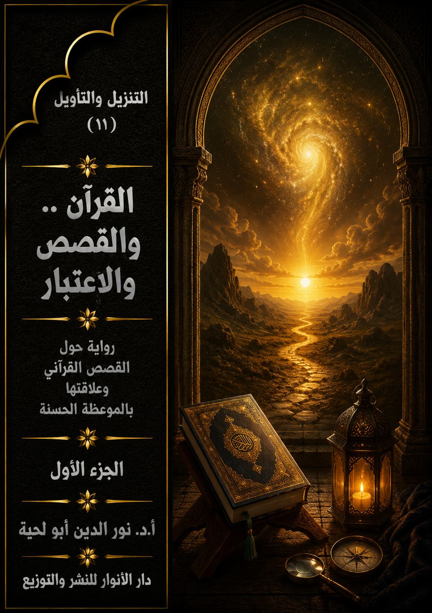

📖 الكتاب: القرآن والقصص والاعتبار ج1
📝 الوصف: رواية حول القصص القرآني وعلاقتها بالموعظة الحسنة
📚 السلسلة: التنزيل والتأويل
✍ المؤلف: أ.د. نور الدين أبو لحية
🏢 الناشر: دار الأنوار للنشر والتوزيع
📅 الطبعة: الثانية
📥 تحميل: هنا
هذا الكتاب هو المقدمة الحادية عشرة لهذه السلسلة، ويتناول الخاصية السادسة من خصائص القرآن الكريم، خاصية التعبير عن المعاني من خلال الأحداث والقصص، والعبر المستفادة منها.
وهي من الخصائص المرتبطة بالموعظة الحسنة، والتي اعتبرها الله تعالى صفة من صفات القرآن الكريم، ووظيفة من وظائف الهداة والصالحين ابتداء من رسول الله صلى الله عليه وآله وسلم وغيره من الأنبياء عليهم السلام.
وقد حاولنا أن نستوعب أكثر ما ورد في القرآن الكريم من القصص، سواء تلك التي ترتبط بالأنبياء عليهم السلام، أو تلك التي ترتبط بغيرهم.
وقد اكتفينا في بيان معانيها أو في اقتباس العبر منها بما تدل عليه معانيها اللغوية، وما ذكره المتدبرون من المفسرين وغيرهم لها، من غير أن نذكر ما ورد في التفسير بالمأثور من الروايات الكثيرة، والتي نرى أن أكثرها ابتعد عن المراد القرآني، بل شوهه، وانحرف به.
وقد حاولنا كذلك أن نذكر العبر من خلال الرؤى المختلفة، فهناك من يغلّب الاعتبار الروحي والأخلاقي، وهناك من يغلّب الاعتبار الدعوي والحركي، وغيرها، ولذلك جعلنا المتحدثين مختلفين، وكأنهم يعبرون عن اختلاف القراء واختلاف المفسرين، من غير أن نذكر أي نزاع بينهم، كما جرت العادة بين الباحثين في تقديم رأي على رأي، ذلك أن كل الآراء حتى لو اختلفت ظاهرا، فهي مقبولة ما دامت منسجمة مع المعاني القرآنية، ولها ما يدل عليها من النص القرآني.
وبناء على كثرة القصص القرآني، فقد اشتمل هذا الكتاب على واحد وثلاثين فصلا، كل فصل ـ ما عدا الفصل الأول ـ يحوي قصة نبي من الأنبياء، أو شخصية من الشخصيات التي ذكرها القرآن الكريم.
المقدمة
هذا الكتاب هو المقدمة الحادية عشرة لهذه السلسلة، ويتناول الخاصية السادسة من خصائص القرآن الكريم، خاصية التعبير عن المعاني من خلال الأحداث والقصص، والعبر المستفادة منها.
وهي من الخصائص المرتبطة بالموعظة الحسنة، والتي اعتبرها الله تعالى صفة من صفات القرآن الكريم، ووظيفة من وظائف الهداة والصالحين ابتداء من رسول الله صلى الله عليه وآله وسلم وغيره من الأنبياء عليهم السلام.
وقد أشار الله تعالى إلى خاصية الاعتبار وارتباطه بالقصص في آيات كريمة كثيرة، منها قوله تعالى: ﴿وَكُلًّا نَقُصُّ عَلَيْكَ مِنْ أَنْبَاءِ الرُّسُلِ مَا نُثَبِّتُ بِهِ فُؤَادَكَ وَجَاءَكَ فِي هَذِهِ الْحَقُّ وَمَوْعِظَةٌ وَذِكْرَى لِلْمُؤْمِنِينَ﴾ [هود: 120]
ففي هذه الآية الكريمة يربط الله تعالى بين القصص وتثبيت الفؤاد، وذلك مما لا يمكن تحققه إلا بالاعتبار، وهو إخراج القصة من حيزها الزماني والمكاني ليعيشها القارئ والمستمع لها في واقعه، وكأنه يراها رأي العين، ويرى من خلالها سنة الله تعالى في نصره لأوليائه وتكريمه لهم.
وهكذا نجدها كذلك تربط بين القصة والموعظة، باعتبار أن دور الموعظة الأساسي هو التأثير النفسي، بحيث تتحول المعلومات الذهنية إلى عالم الوجدان والمشاعر، لتصبغ صاحبها بالصبغة التي يريدها الله له ومنه.
وهكذا أشار الله تعالى إلى أهمية القصص في تحقيق اليقظة، فقال: ﴿نَحْنُ نَقُصُّ عَلَيْكَ أَحْسَنَ الْقَصَصِ بِمَا أَوْحَيْنَا إِلَيْكَ هَذَا الْقُرْآنَ وَإِنْ كُنْتَ مِنْ قَبْلِهِ لَمِنَ الْغَافِلِينَ﴾ [يوسف: 3]
فالآية الكريمة تشير إلى أن القرآن الكريم حوى أحسن القصص، وهي التي تشتمل على أكثر العبر والفوائد، كما أنها تشير إلى دور هذه القصص في مواجهة الغفلة، والتي لا يمكن السير والسلوك مع وجودها.. فالغفلة أم الآفات وأساسها.
وهكذا أشار الله تعالى إلى ما في القصص من التفاصيل الكثيرة التي تعم الحياة جميعا، كما قال تعالى: ﴿لَقَدْ كَانَ فِي قَصَصِهِمْ عِبْرَةٌ لِأُولِي الْأَلْبَابِ مَا كَانَ حَدِيثًا يُفْتَرَى وَلَكِنْ تَصْدِيقَ الَّذِي بَيْنَ يَدَيْهِ وَتَفْصِيلَ كُلِّ شَيْءٍ وَهُدًى وَرَحْمَةً لِقَوْمٍ يُؤْمِنُونَ﴾ [يوسف: 111]
فقد ذكر في هذه الآية الكريمة ارتباط القصص بالعبرة، وارتباطها بعد ذلك بتفصيل كل شيء يحتاجه الإنسان في حياته.. ذلك أن هذه القصص تشتمل على نماذج بشرية مختلفة، منها الصالح، ومنها المنحرف، وهي كافية لتعريفها بالأسس التي يقوم عليها الصراط المستقيم، والذي يمثله الهداة إلى الله.. وكافية كذلك لتعريفنا بالخصائص التي ينصبغ بها المغضوب عليهم والضالون، والذين ذكر الله تعالى نماذج مختلفة عنهم من خلال هذه القصص.
انطلاقا من هذا التأصيل القرآني، فقد حاولنا في هذا الكتاب أن نستوعب أكثر ما ورد في القرآن الكريم من القصص، سواء تلك التي ترتبط بالأنبياء عليهم السلام، أو تلك التي ترتبط بغيرهم.
وقد اكتفينا في بيان معانيها أو في اقتباس العبر منها بما تدل عليه معانيها اللغوية، وما ذكره المتدبرون من المفسرين وغيرهم لها، من غير أن نذكر ما ورد في التفسير بالمأثور من الروايات الكثيرة، والتي نرى أن أكثرها ابتعد عن المراد القرآني، بل شوهه، وانحرف به.
وقد ذكرنا في كتاب [القرآن وتحريف الغالين] الكثير من النماذج عن تلك القصص التي أقحمت في تفسير القرآن الكريم، كما ذكرنا في كتاب [القرآن وتأويل الجاهلين] آثار تلك القصص في تحريف مفهوم العصمة، والروايات التي وردت في ذلك، ورددنا عليها بتفصيل هناك.
ولذلك اكتفينا في هذا الكتاب بالتأويلات التدبرية للقصص القرآني من خلال التفاسير الكثيرة، والتي رأينا أنها تجتمع في مجموعة تفاسير، أحلنا في بداية كل مشهد قصصي إليها، مع العلم أننا تصرفنا فيها بما تقتضيه هذه السلسلة من التبسيط، والبعد عن كل المعاني التي لا نرى أهميتها، أو نرى أن لها تأثيرا سلبيا في فهم القرآن الكريم، أو أنها نوع من التكلف الذي لا يتحمله النص القرآني.
وقد حاولنا كذلك أن نذكر العبر من خلال الرؤى المختلفة، فهناك من يغلّب الاعتبار الروحي والأخلاقي، وهناك من يغلّب الاعتبار الدعوي والحركي، وغيرها.
ولذلك جعلنا المتحدثين مختلفين، وكأنهم يعبرون عن اختلاف القراء واختلاف المفسرين، من غير أن نذكر أي نزاع بينهم، كما جرت العادة بين الباحثين في تقديم رأي على رأي، ذلك أن كل الآراء حتى لو اختلفت ظاهرا، فهي مقبولة ما دامت منسجمة مع المعاني القرآنية، ولها ما يدل عليها من النص القرآني.
وبناء على كثرة القصص القرآني، فقد اشتمل هذا الكتاب على واحد وثلاثين فصلا، كل فصل ـ ما عدا الفصل الأول ـ يحوي قصة نبي من الأنبياء، أو شخصية من الشخصيات التي ذكرها القرآن الكريم.
وفي كل فصل قسمنا كل قصة بحسب المشاهد التي وردت فيها.. ووضعنا لكل مشهد عنوانا.. وأحيانا يكون للقصة الواحدة مشهدان في القرآن الكريم أو أكثر، فلذلك حاولنا أن نذكر كل مشهد لوحده، بناء على اعتقادنا بعدم التكرار في القرآن الكريم، ولهذا كان لكل مشهد عبره الخاصة به.
أما الرواية التي حاولنا أن نبسط من خلالها المعاني، فهي تبدأ من تألم المؤلف من الطريقة التي يتعامل بها الوعاظ مع القصص القرآني.. ثم يشرفه الله بأن يدعوه معلمه إلى زيارة مدينة أساء أهلها التعامل مع قصص القرآن، ليستمع هناك للوعاظ الذين وفدوا إليها، لتعليم الناس ودعوتهم إلى الاعتبار بقصص القرآن، والبعد عن كل ما يشوهها.
وغرضنا من هذا طبعا هو تفكيك المعاني والعبر، وطرحها بطريقة مبسطة، بحيث يعبر كل شخص عن فكرته والمعاني التي فهمها، بأسلوب سهل بسيط.
ولذلك تجنبنا ما يذكره المفسرون عادة من التحليلات اللغوية ونحوها، حتى لا يتشتت ذهن القارئ بها، وإنما اكتفينا بالخلاصة مع التصرف فيها بحسب ما يقتضيه المقام.
مع العلم أن علاقتنا بالآيات الكريمة التي أوردناها في هذا الكتاب، قد نتعرض لها في كتب أخرى، بحسب المعاني التي نحتاج إليها فيها، كما شرحنا ذلك سابقا.. ولذلك لم نتطرف للمباحث الكلامية المرتبطة بالنبوة في هذا الكتاب، لأن هناك كتابا خاصا بها في هذه السلسلة.
وفي الأخير، ننبه إلى أننا ـ بسبب كبر حجم الكتاب ـ اضطررنا إلى تقسيمه إلى جزئين، وقد تناولنا في هذا الجزء الفصول التالية:
1. القصص.. والاعتبار
2. الاعتبار.. وقصة آدم
3. الاعتبار.. وقصة نوح
4. الاعتبار.. وقصة هود
5. الاعتبار.. وقصة صالح
6. الاعتبار.. وقصة إبراهيم
7. الاعتبار.. وقصة إسماعيل
8. الاعتبار.. وقصة لوط
9. الاعتبار.. وقصة يوسف
10. الاعتبار.. وقصة أيوب
11. الاعتبار.. وقصة يونس
12. الاعتبار.. وقصة شعيب
البداية
بعد أن طلب مني معلمي تجهيز نفسي لرحلتي الجديدة إلى [القرآن والقصص والاعتبار]، تذكرت ما ذكرته لكم في رحلاتي السابقة من ذلك التشويه العظيم الذي حصل للقصص القرآني من طرف الإخباريين والرواة الذين استطاعوا أن يقتحموا القرآن الكريم من خلال قصصه، فيحولوه إلى ما يشتهون.
تذكرت قصة آدم عليه السلام، وكيف تحولت في أذهان الناس، وفي الكثير من كتب التراث إلى قصة للحية، وكيف استطاع الشيطان أن يدخل من خلالها إلى الجنة ليوسوس لآدم للأكل من تلك الشجرة التي وقع الخلاف الشديد فيها أيضا، كما وقع الخلاف فيمن كان واسطته لتلقي تلك الوساوس، ودور أمنا حواء في ذلك.. ثم كيف هبطوا إلى الأرض، وفي أي بقعة، وكيف عاشوا.. وهكذا تحولت قصته إلى قصة مختلفة تماما عن تلك القصة التي وردت في القرآن الكريم.
وهكذا حصل مع نوح عليه السلام وسفينته العجيبة التي تحولت في أذهان الكثير إلى سفينة أسطورية تحمل جميع الكائنات الحية، بل يتولد فيها من الكائنات ما لم يكن موجودا.
وهكذا حصل مع يوسف عليه السلام الذي تحولت قصته عن هدفها الذي ورد في القرآن الكريم تحولا تاما، فيوسف العفيف الطاهر، لم يعد بتلك القصص لا عفيفا ولا طاهرا، بل صار مصرا على المعاصي، لولا أن جاءه التهديد الإلهي، وبصور مختلفة، وهو يكاد يقع في الجريمة.
وهو نفس ما حصل مع قصة داود عليه السلام واستغفاره لربه، فقد تحول ذلك الاستغفار الناشئ عن شفافية روحه وطهارة نفسه إلى استغفار عن معاص كثيرة، بل جرائم عظيمة.
وهكذا حصل مع سليمان عليه السلام الذي أصبح بتلك القصص ملكا مستبدا، يتحكم في شعبه عن طريق خاتم.. وكل سعيه أن يكسب المزيد من النساء ليضمهم إلى قصره.
ولم يتوقف الأمر عند قصص الأنبياء عليهم السلام، بل تعداهم إلى غيرهم، ممن شوهوا أعظم تشويه.
بعد أن تذكرت هذا، خرجت من بيتي قاصد المسجد، لعلي أزيل عن نفسي تلك الآلام التي علقت بها نتيجة تلك الذكريات الأليمة.. وبمجرد خروجي رأيت الناس يسرعون إلى المسجد، فسألتهم، فأخبرني أحدهم بأن عالما كبيرا قد زار قريتنا، وأنه وحيد دهره في العلم، وأنهم يسارعون ليستفيدوا منه، وينالوا بعض الإجازات من علومه، ليزينوا بها جدران بيوتهم.
عندما دخلت وجدته جالسا على عرشه، وكأنه ملك من الملوك، وهو يقول بكل فخر واعتزاز: من العلوم التي منّ الله على العبد الضعيف بها علم التفسير.. وخاصة ما يرتبط بالقصص القرآني.. فلا توجد قصة، ولا آية، بل ولا كلمة، ولا حرف إلا وآتاني الله من علومه.. فسلوا ما شئتم.. واعذروني لأني تحدثت عن نفسي، فذلك جائز، وقد قال الله تعالى: ﴿وَأَمَّا بِنِعْمَةِ رَبِّكَ فَحَدِّثْ﴾ [الضحى: 11]
قام أحد رواد المسجد، وقال: فحدثنا عن قوله تعالى: ﴿وَنُقَلِّبُهُمْ ذَاتَ الْيَمِينِ وَذَاتَ الشِّمَالِ وَكَلْبُهُمْ بَاسِطٌ ذِرَاعَيْهِ بِالْوَصِيدِ﴾ [الكهف: 18]
ابتسم العالم، وراح يشكر السائل، ويجيبه مسرورا بقوله(1): لقد وقع الخلاف في ذلك بين العلماء، وقد ذهب ابن عباس وهو حبر القرآن وترجمانه إلى أنهم: كانوا ينقلبون في السنة مرة إلى جانب من جانب، لئلا تأكل الأرض لحومهم.. ويقال: إن يوم عاشوراء كان يوم تقليبهم.. وقال أبو هريرة: كان لهم في كل سنة تقليبان.
قال سائل آخر: فحدثنا عن كلبهم.
قال العالم: لقد وقع الخلاف فيه أيضا، فقد قال ابن عباس: كان أنمر.. وقال مقاتل: كان أصفر.. وقال القرظي: شدة صفرته تضرب إلى الحمرة.. وقال الكلبي: لونه كالخلنج.. وقيل: لون الحجر.. وقيل: لون السماء.
سكت قليلا، ثم قال: أما اسمه فقد روي أن اسمه (ريان)، وقال ابن عباس: (قطمير)، وقال الأوزاعي: (نتوى)، وقال شعيب الجبائي: (حمران)، وقال عبد الله بن كثير: (قطمور)، وقال السدي: (نون)، وقال: (عبد الله بن سلام: (بسيط)، وقال كعب: (أصهب)، وقال وهب: (نقيا)، وقيل: (قطفير)
كبر جميع المصلين في المسجد على تلك الذاكرة العجيبة لذلك العالم الفحل.. فشكرهم، ثم طلب منهم أن يسألوه عما يشاءون، فقام أحدهم، وقال: فحدثنا عن قوله تعالى: ﴿وَلَا تَقْرَبَا هَذِهِ الشَّجَرَةَ فَتَكُونَا مِنَ الظَّالِمِينَ﴾ [البقرة: 35]
ابتسم العالم، وقال(2): لقد وقع الخلاف فيها أيضا، فقد روي عن بعض الصحابة أنها شجرة الكافور.. وقال قتادة: شجرة العلم وفيها من كل شيء.. وقال محمد بن كعب ومقاتل: هي السنبلة.. وقال آخر: هي الحبلة وهي الأصلة من أصول الكرم.. وقال أبو روق عن الضحاك: إنها شجرة التين.
قال سائل آخر: فحدثنا عن قوله تعالى: ﴿فِيهِ سَكِينَةٌ مِنْ رَبِّكُمْ﴾ [البقرة: 248]
قال العالم(3): لقد اختلفوا في السكينة اختلافا شديدا.. فقد ذهب بعض الصحابة إلى أنها ريح خجوج حفافة لها رأسان ووجه كوجه الإنسان.. وقال مجاهد: لها رأس كرأس الهرة وذنب كذنب الهرة وجناحان.. وقال ابن إسحاق عن وهب عن بعض علماء بني إسرائيل: السكينة هرة ميتة كانت إذا صرخت في التابوت بصراخ هر أيقنوا بالنصر وجاءهم الفتح.. وقال السدي عن أبي مالك عن ابن عباس: هي طست من ذهب من الجنة كان يغسل فيها قلوب الأنبياء.. وقال بكار بن عبد الله عن وهب بن منبه: روح من الله عز وجل يتكلم، إذا اختلفوا في شيء تكلم فأخبرهم ببيان ما يريدون.
قال سائل آخر: فحدثنا عن قوله تعالى في قصة نوح عليه السلام: ﴿وَاصْنَعِ الْفُلْكَ بِأَعْيُنِنَا وَوَحْيِنَا وَلَا تُخَاطِبْنِي فِي الَّذِينَ ظَلَمُوا إِنَّهُمْ مُغْرَقُونَ﴾ [هود: 37]
قال العالم(4): لقد روي عن ابن عباس في تفسيرها أنه قال: لم يعلم نوح عليه السلام كيف يصنع الفلك فأوحى الله إليه أن يصنعها على جؤجؤ الطائر.. وقال: اتخذ نوح عليه السلام السفينة في سنتين، وكان طول السفينة ثلاثمائة ذراع، وعرضها خمسين، وطولها في السمك ثلاثين ذراعا، وكانت من خشب الساج، وجعل لها ثلاثة بطون فحمل في البطن الأسفل الوحوش والسباع والهوام، وفي البطن الأوسط الدواب والأنعام، وركب هو في البطن الأعلى.
وهكذا.. ظل الناس يسألون، والعالم يجيبهم بمثل ما ذكرت لكم إلى أن كادت الشمس تغرب، حينها افترق الناس عنه، بعد أن ملأوا جيوبه بالهدايا الثمينة.
وقد رأيت الفرصة مواتية لأن أتقدم إليه، من غير أن ألتفت للحرس الخاص الذين كانوا يحيطون به.. لقد قلت له بكل أدب: لقد كان حضور الجمهور العريض من الناس لسماعك فرصة عظيمة لأن توجههم وتقومهم وتربيهم.. ليتك استثمرتها.
بدا على وجهه الغضب، لكنه تمالك نفسه، وقال: كيف؟
قلت: مثلا.. عندما سألوك عن الشجرة، كان يمكنك أن تعبر منها إلى جميع المحرمات، فتذكر لهم أنها تتسبب في خروج البشر من الجنة، كما تسببت شجرة آدم في خروجه منها.
غضب غضبا شديدا، وقال: هل تريد مني أن أحرّف القرآن.. أم تريد مني أن أفسره بغير ما فسره به سلفنا الصالح الذين هم أعرف بالقرآن منا.
ولم يكتف بقوله هذا، بل أشار إشارة خفية إلى بعض المحيطين به، فأخرجوني من المسجد بقسوة وشدة، بل إن أحدهم راح يصفعني بشدة، وهو يكبر، ويقول: والله لا يشفي نفسي إلا قتلك، فلقد سمعنا عنك، وعن الخرافات التي تأتي بها كل حين.
بعد أن انصرفوا عني، وتركوني لآلامي، جاءني معلمي الجديد، ومسح عني ما أصابني، وقال: هيا بنا.. فقد آن أوان رحلتك الجديدة إلى القرآن والقصص والاعتبار.
قلت: فأنت معلم القصص إذن.
قال: بل أنا تلميذ الاعتبار.. فمن قرأ القصص، ولم يتتلمذ على الاعتبار، كُسي ثوب الغفلة، ولم يستفد من قرءاته إلى المزيد من الجهل.
قلت: فلم احتاجت القصص إلى الاعتبار؟.. ولم احتاج الاعتبار إلى القصص؟
قال: لأن العاقل هو الذي يوعظ بغيره.. والقصص هي التي تجعل للواقع صورا كثيرة متعددة يختار العاقل منها ما يتناسب مع مصالحه.
قلت: ما تعني؟
قال: لقد شاء الله أن يعدد القصص والمشاهد في القرآن الكريم، حتى نختار لأنفسنا ما يصلحها، وينفعها.
قلت: لم أفهم.
قال: لقد وضع الله تعالى لنا في قصة آدم عليه السلام موقفين للتعامل مع الخطأ والخطيئة.. موقف آدم بالتوبة والاستغفار، وموقف الشيطان بالإصرار والاستكبار.. والعابر هو الذي ينظر إلى روح ما حصل، لا إلى عين ما حصل.
قلت: تقصد أن يتحول إلى آدم بدل إبليس.
قال: أجل.. حتى لا تتنزل عليه اللعنة التي تنزلت على إبليس.
قال هذا، ثم طلب مني أن أسير معه إلى مدينة القصص، فسألته عنها، فقال: هذه المدينة لا تختلف عن قريتك.. هم قوم مشغوفون بالقصص، وقد ابتلوا بكثير من العلماء والوعاظ الذين لا يختلفون عن العالم الذي كنت تحضر مجلسه.
قلت: كنت أظن أنك جئت لتنقذني من آلامي، لا لتضيف لي آلاما جديدة.
قال: لقد قيض الله تعالى لهذه المدينة أطباء صادقين، وعلماء ناصحين، ووعاظا وفدوا إليها ليخرجوها مما هي فيه.. وستحضر مجالسهم، وتقر عينك بذلك.. ولا تنس أن تسجل كل ما تسمع.
قال ذلك، ثم انصرف عني كسائر المعلمين..
__________
(1) الكشف والبيان عن تفسير القرآن (6/ 160).
(2) الكشف والبيان عن تفسير القرآن (1/ 182).
(3) الكشف والبيان عن تفسير القرآن (2/ 213).
(4) الكشف والبيان عن تفسير القرآن (5/ 166).
1. القصص.. والاعتبار
بعد أن انصرف معلمي عني سرت في تلك المدينة التي سمعتهم يطلقون عليها مدينة القصص، وقد صدقوا في تسميتها بهذا الاسم.. حيث إننا في كل المحال التي قصدناها كنا لا نسمع إلا القصص.
فبعضهم كان يقص قصص ألف ليلة وليلة وغيرها من الأساطير.. وبعضهم كان يلفق قصصا من عنده.. وبعضهم وهو أخطرهم من كان يحمل مصحفا، يقرأ منه آيات القصص في القرآن الكريم، ثم يفسرها بحسب أساطير كعب الأحبار ووهب بن منبه وغيرهما.
وقد كانت مدينهم مليئة بكل القاذورات.. وكانت شوارعها مملوءة بالفوضى.. وكان الشرود متسلطا على سكانها؛ فجميعهم يعيش عوالم الخرافة والأسطورة التي لا يسمعون في مدينتهم غيرها.
لكنهم بعد فترة وجيزة، رأيتهم يجتمعون أمام بعض الوافدين إليهم.. ثم رأيت أحد أهل تلك المدينة ـ وقد سمعتهم يطلقون عليه لقب [المرشد]، لأنه من أرشدهم إلى هؤلاء الوافدين، وجاء بهم إليهم ـ يقوم، ويقول: ها قد جاءكم هؤلاء الوعاظ القصاصون.. فاسمعوا لهم، واستفيدوا منهم؛ فالقصص التي ستسمعونها لن تسعد خيالكم فقط، بل ستسعد حياتكم جميعا، فهي تلك التي عبر عنها الله تعالى بقوله: ﴿نَحْنُ نَقُصُّ عَلَيْكَ أَحْسَنَ الْقَصَصِ بِمَا أَوْحَيْنَا إِلَيْكَ هَذَا الْقُرْآنَ وَإِنْ كُنْتَ مِنْ قَبْلِهِ لَمِنَ الْغَافِلِينَ﴾ [يوسف: 3]
قال أحد الحضور: إن كنتم جئتم لتقصوا علينا قصص القرآن، فنحن نحفظها جميعا، ونحفظ كل ما ذكره الطبري والثعلبي وابن أبي حاتم وغيرهم بشأنها.
قال أحد الوعاظ: حاشا كلام الله أن تفسره تلك الأساطير والخرافات.. فقصص القرآن نابعة من أهدافه وغاياته؛ فهي وسيلة لتحقيقها.
قال آخر(1): ولذلك يمتاز القصص القرآني عن غيره من القصص في نقطة مركزية، هي الهدف والغرض الذي جاء من أجله القرآن.. ولذلك لم يتناول القرآن الكريم القصة باعتبار عملا فنيا مستقل في موضوعه وطريقة التعبير فيها.. كما أنه لم يأت بها من أجل الحديث عن أخبار الماضين وتسجيل حياتهم وشؤونهم، أو من أجل التسلية والمتعة كما يفعل المؤرخون أو القصاصون، وإنما كان الغرض من القصة في القرآن الكريم هو المساهمة مع جملة الأساليب العديدة الأخرى لتحقيق أهدافه وأغراضه الدينية التي جاء من أجلها، وكانت القصة القرآنية من أهم هذه الأساليب.
قال آخر: فالقرآن الكريم يمثل رسالة دينية تهدف ـ قبل كل شيء ـ إلى إيجاد عملية التغيير بأبعادها المختلفة.. فهو يهدف إلى إيجاد التغيير الاجتماعي الجذري.
قال آخر: وهو يهدف إلى بيان المنهج الصحيح للحياة الإنسانية الذي يتم على أساسه هذا التغيير، والذي يعبر عنه القرآن الكريم ب ﴿الصِّرَاطَ الْمُسْتَقِيمَ﴾ [الصافات: 118]
قال المرشد: أحسنتم.. فحدثونا عن الخصائص والميزات التي يتميز بها قصص القرآن الكريم عن غيره.
قال أحد الوعاظ: لقد جمع الله تعالى خصائص القصص القرآني في قوله: ﴿لَقَدْ كَانَ فِي قَصَصِهِمْ عِبْرَةٌ لِأُولِي الْأَلْبَابِ مَا كَانَ حَدِيثًا يُفْتَرَى وَلَكِنْ تَصْدِيقَ الَّذِي بَيْنَ يَدَيْهِ وَتَفْصِيلَ كُلِّ شَيْءٍ وَهُدًى وَرَحْمَةً لِقَوْمٍ يُؤْمِنُونَ﴾ [يوسف: 111]
قال آخر(2): أي: إن في هذا القصص عبرة لأولى الأبصار، وذوي الفطنة والرأي.. حيث ينجلي الموقف دائما عن إظهار دين الله، وإعلاء كلمته، وانتصار رسله ومن اتبعهم من المؤمنين، على حين يقع البلاء والخزي والخذلان بالذين كذبوا رسل الله وآذوهم، وصدوا الناس عن سبيل الله.
قال آخر: وفي قوله تعالى: ﴿مَا كَانَ حَدِيثًا يُفْتَرَى﴾ [يوسف: 111] إشارة إلى أن هذا القصص الذي يقصه الله تعالى على نبيه الكريم، من أنباء الرسل، لم يكن حديثا ملفقا، أو مفترى، ولكنه كلام رب العالمين، قد تلقاه النبي صلى الله عليه وآله وسلم وحيا من ربه، فجاء مصدقا لما سبقه من الكتب، مفصلا كل ما كان مجملا فيها، حاملا الهدى والرحمة لمن يؤمنون به، ويهتدون بهديه، ويستقون من موارده.
قال آخر: وفي قوله تعالى: ﴿وَهُدًى وَرَحْمَةً لِقَوْمٍ يُؤْمِنُونَ﴾ [النحل: 64] إشارة إلى أن الهدى والرحمة أمران ذاتيان، ثابتان في هذا الكتاب، يجدهما كل من اتصل به وأخذ عنه، وتعامل معه، على امتداد الزمان، فلا يقطع الماضي ما له من آثار في المستقبل، ولا ينضب معين الهدي والرحمة، على كثرة الواردين.. فهو أبدا مصدر هدى ورحمة للذين يؤمنون به، لا لمن آمنوا به وحدهم، وسبقوا إلى الإيمان.. فللاحقين حظهم من هداه ورحمته، مثل ما للسابقين، سواء بسواء.. وإنما تختلف حظوظ الناس بحسب استعدادهم لتقبل الهدى، واستئهال الرحمة.. فكتاب الله. هو هو، وآياته.. هي هي، والهدى المشع منه.. هو هو، والرحمة المحملة معه.. هي هي.. لا اختلاف مع الزمن في شيء من هذا، ولا تحول أو تبدل في كلمات الله وآياته.. وإنما الذي يختلف ويتبدل ويتحول، هم الناس، وعقول الناس، وقلوب الناس!
قال آخر(3): والآية الكريمة تشير إلى أن القصص المصنوعة ذات الإثارة كثيرة في أوساط الأمم وهي من الأساطير الخيالية، لكن لا يتوهم أحد بأن قصص القرآن من ذلك القبيل.. فقصصه المثيرة، وذات العبر هي عين الواقع، ولا تحتوي على أدنى انحراف عن الواقع الموضوعي، ولهذا السبب يكون تأثيرها كبيرا جدا، لأننا نعلم أن الأساطير مهما تكن شيقة ومثيرة فإن تأثيرها قليل إذا ما قورنت مع سيرة واقعية..
قال آخر: ذلك أنه عندما يصل القارئ أو المستمع للقصة إلى أقصى لحظات الإثارة يتبادر إلى ذهنه فجأة أن هذا وهم وخيال ليس أكثر.
قال آخر: بالإضافة إلى ذلك، فإن هذه القصص في الواقع هي من هندسة الإنسان، فهو يحاول أن يجسم أفكاره في سلوك بطل القصة، ولذلك فهي ليست أكثر من فكر الإنسان، وهذه القصة بالمقارنة مع السير الواقعية بينهما فرق شاسع ولا تستطيع القصة البشرية أن تكون أكثر من موعظة لصاحب المقالة، لكن التاريخ الواقعي للبشر ليس كذلك، فهو أكثر ثمرا ونفعا وأكثر بركة.
قال آخر(4): وانطلاقا من الآية الكريمة يمكننا أن نتعرف على أبرز خصائص القصص القرآني وأغراضه، والتي تشمل جميع حاجات الحياة.. واسألوا عما تشاء منها.
__________
(1) القصص القرآني، الحكيم، ص22.
(2) التفسير القرآني للقرآن (7/ 61).
(3) الأمثل في تفسير كتاب الله المنزل: (7/ 321).
(4) القصص القرآني، الحكيم، ص25.
الواقعية والصدق:
قال المرشد: أحسنتم.. فحدثونا عن واقعية القصص القرآني.
قال أحد الوعاظ(1): واقعية القصص القرآني، تعني أن للقصص علاقة بواقع الحياة الإنسانية ومتطلباتها المعاشية في مسيرة التاريخ الإنساني.
قال آخر: فهي ليست قصصا تخدم الإثارة، أو الخيالات، أو الأماني، أو الرغبات التي يطمح إليها الإنسان، أو يتمناها في حياته.
قال آخر: ذلك، لأن القرآن الكريم يريد من ذكر القصة وأحداثها إعادة قراءة التاريخ الانساني والقضايا الواقعية السالفة، الذي عاشته الامم والرسالات الإلهية السابقة، ومتابعة هذه القراءة في الحاضر المعاش من قبل الإنسان للاستفادة منها والاعتبار بها في حياته وحركته ومواقفه وتطلعاته نحو المستقبل والكمالات الإلهية.
قال آخر: فإذا انفصلت القصة عن هذا الواقع، فإنه لا يمكن للإنسان أن يستفيد منها للحاضر والمستقبل؛ لأنها تصبح مجرد صور وفرضيات قد تنسجم مع واقعه الفعلي، وربما لا تنسجم، ولذا ربما لا يشعر بها، ولا يصدق بها نفسيا وروحيا.
قال آخر: بالإضافة إلى ذلك، فإن الإنسان ـ في مسيرته التكاملية ـ بحاجة إلى أن ينطلق من الواقع نحو الطموحات والكمالات، وبدون ذلك سوف ينفصل هذا الإنسان عن واقعه، فيضيع في متاهات الآمال والتمنيات، وقد عبر القرآن الكريم عن هذه الحالة في الإنسان عند ما تحدث عن اليهود من أهل الكتاب بقوله تعالى: ﴿وَمِنْهُمْ أُمِّيُّونَ لَا يَعْلَمُونَ الْكِتَابَ إِلَّا أَمَانِيَّ وَإِنْ هُمْ إِلَّا يَظُنُّونَ﴾ [البقرة: 78]، وعندئذ لا يصل الإنسان إلى أهدافه في النهاية؛ لأن من لا ينطلق من البداية فلا يبلغ النهاية.
قال آخر: ولهذا نرى القرآن الكريم يعالج من خلال القصة الواقع الذي كان يعيشه المسلمون في زمن النبي صلى الله عليه وآله وسلم، فيذكر ما يتطابق من الأحداث مع هذا الواقع من ناحية، كما يعالج الواقع الذي تعيشه الأجيال والعصور الإنسانية المستقبلية من ناحية أخرى.
قال آخر: وهذا هو الذي يفسر لنا ما ورد عن الإمام الباقر وأنه قال في الدلالة على إمكانية تطبيق القرآن الكريم لكل الأزمنة: (إن الله لم يدع شيئا تحتاج إليه الأمة إلى يوم القيامة إلا أنزله في كتابه، وبينه لرسوله، وجعل لكل شيء حدا، وجعل عليه دليلا يدل عليه)(2)
قال آخر: وقال الإمام الصادق: (للقرآن تأويل يجري كما يجري الليل والنهار، وكما تجري الشمس والقمر، فإذا جاء تأويل شيء منه وقع، فمنه ما قد جاء، ومنه ما يجيء)(3)
قال آخر: ولذلك، فإن انطباق هذا الكلام على القصص والأحداث ذات العلاقة بالأنبياء وأقوالهم أو بالتاريخ الماضي إنما هو بلحاظ هذا البعد والصفة في القصة القرآنية.
قال آخر: ولذلك كان في قوله تعالى: ﴿لَقَدْ كَانَ فِي قَصَصِهِمْ عِبْرَةٌ لِأُولِي الْأَلْبَابِ﴾ [يوسف: 111] إشارة إلى هذه الخاصية في القصص القرآني.
قال المرشد: أحسنتم.. فكيف تردون على من يذكر أن القصص القرآني غير واقعي، وأنه مثل القصص الموضوع للتربية والهداية، دون أن يكون لأحداثه وجود في الواقع(4)؟
قال أحد الوعاظ: لقد رد الله تعالى عليه، فقال: ﴿وَمِنْهُمْ مَنْ يَسْتَمِعُ إِلَيْكَ وَجَعَلْنَا عَلَى قُلُوبِهِمْ أَكِنَّةً أَنْ يَفْقَهُوهُ وَفِي آذَانِهِمْ وَقْرًا وَإِنْ يَرَوْا كُلَّ آيَةٍ لَا يُؤْمِنُوا بِهَا حَتَّى إِذَا جَاءُوكَ يُجَادِلُونَكَ يَقُولُ الَّذِينَ كَفَرُوا إِنْ هَذَا إِلَّا أَسَاطِيرُ الْأَوَّلِينَ﴾ [الأنعام: 25]
قال المرشد: هؤلاء لا يعرفون القرآن، ولا يقيمون له وزنا؛ فردوا عليهم بما تطيقه عقولهم.
قال أحد الوعاظ(5): لقد عرفنا هؤلاء، وعرفنا تناقضهم؛ فهم يعتبرون أن خبر الله الموحى به إلى رسله وأنبيائه عن كيفية نشأة الإنسان وتكاثره، وعن كيفية خلق الله عز وجل لآدم عليه السلام أسطورة من الأساطير، بينما يعتبرون خبر مارك وداروين عن الموضوع نفسه حقيقة من الحقائق؟ لماذا؟ وما الفرق؟ لماذا يعد خبر الله الموحى به إلى كثير من رسله وأنبيائه عن طوفان نوح وسفينته أسطورة من أساطير التاريخ، ولا يكون خبر علماء التاريخ الطبيعي عن الانفجار العظيم أسطورة من أساطير التاريخ أيضا؟
قال آخر: إن كان الفرق أن في الناس من لا يصدق الوحي الإلهي ولا يلقي إليه بالا، فإن في الناس كثيرين ممن لا يصدقون تصورات داروين، ولا يقيمون وزنا لقصة [الانفجار العظيم] أو [النظرية السديمية] كتفسير لكيفية تشكل الكون والأرض أو ما يشبههما، ومع ذلك، فإننا لا نسمي ـ من الناحية العلمية ـ شيئا من نظريات التطور أو نظريات الباحثين في التاريخ الطبيعي أسطورة، مهما كانت بعيدة عن المنطق أو العلم؛ لأن مقومات هذه التسمية غير موجودة، ومن أهمها أن تكون موضوعة من قبل أصحابها على أنها أسطورة.
قال آخر: إن لهم ولغيرهم أن يصدقوا أو لا يصدقوا شيئا من أخبار الوحي الإلهي، بل لهم أن لا يؤمنوا بحقيقة الوحي ذاته، غير أن عليهم أن يعلموا أن عدم فهمهم أو تصديقهم لذلك ليس هو برهان كونه أسطورة وهمية كاذبة.
قال آخر(6): بالإضافة إلى ذلك، فإن القصص القرآني سرد واع موجه للتاريخ الإنساني، ليس الغرض منه الإلهاء والتشويق، بل الغرض منه التربية والتوعية، وتجديد المعاني بعد انتهاء أهلها لتكون عظة دائمة، وقد شاع أدب القصة في عصرنا شيوعا يستحق الدهشة، وامتلأت الأيدي بروايات يقرؤها حاملوها ليقطعوا الوقت أو يتلذذوا بحسن العرض، وجملة هذه الروايات من نسج الخيال، وقد تكون ذات مغزى جيد، وقد تكون إثارة وضيعة، والبون شاسع بين هذه الأقاصيص، وبين التاريخ الذي يجسده القرآن الكريم، ويغزو به الألباب والبصائر؛ ليمحو الغفلة، ويرفع المستوى، ويضيء السبل، البون بعيد بعيد.
قال آخر: ومن الأمثلة على ذلك أنه عندما يقول الله لنبيه صلى الله عليه وآله وسلم: ﴿وَكُلًّا نَقُصُّ عَلَيْكَ مِنْ أَنْبَاءِ الرُّسُلِ مَا نُثَبِّتُ بِهِ فُؤَادَكَ وَجَاءَكَ فِي هَذِهِ الْحَقُّ وَمَوْعِظَةٌ وَذِكْرَى لِلْمُؤْمِنِينَ﴾ [هود: 120]، فهو يقول ذلك في أعقاب سرد لواقع لا ريب فيه، فقد ذكر في هذه السورة قصص نوح وهود وصالح ولوط وشعيب وموسى عليهم السلام مع أممهم التي ظهرت في عصور متعاقبة، انتظمتها أدواء التكذيب والمكابرة، حتى أهلكتهم أمة بعد أخرى، وهو يحكي ذلك إرهابا للعرب المستكبرين وتسلية للنبي صلى الله عليه وآله وسلم وتسرية له، وفي موضع آخر يقول له: ﴿وَلَقَدْ كُذِّبَتْ رُسُلٌ مِنْ قَبْلِكَ فَصَبَرُوا عَلَى مَا كُذِّبُوا وَأُوذُوا حَتَّى أَتَاهُمْ نَصْرُنَا وَلَا مُبَدِّلَ لِكَلِمَاتِ اللَّهِ وَلَقَدْ جَاءَكَ مِنْ نَبَإِ الْمُرْسَلِينَ﴾ [الأنعام: 34]، فأين موضع الخيال في هذه الوقائع؟)(6)
قال آخر: وهكذا، فإن الله تعالى بعد أن قص قصة يوسف عليه السلام، وشرح أطوار حياته منذ اختطف إلى أن صار ملك مصر، قال عنه وعن غيره من المسلمين: ﴿لَقَدْ كَانَ فِي قَصَصِهِمْ عِبْرَةٌ لِأُولِي الْأَلْبَابِ مَا كَانَ حَدِيثًا يُفْتَرَى وَلَكِنْ تَصْدِيقَ الَّذِي بَيْنَ يَدَيْهِ وَتَفْصِيلَ كُلِّ شَيْءٍ وَهُدًى وَرَحْمَةً لِقَوْمٍ يُؤْمِنُونَ﴾ [يوسف: 111]، فأين موضع الخيال هنا؟)(7)
قال آخر: ولذلك، فإن اتهام القرآن بأنه يعرض خيالات فنية أو يمزج في سياقه بين الواقع والخيال، اتهام لا مسوغ له، وهو في نظرنا بلاهة نشأت عن اتباع المستشرقين، والمستشرقون يحسون ما في كتبهم من غثاثة وعوج وبعد عن الحق، ويريدون الإيهام بأن القرآن لا يزيد على غيره! وهذا كذب لا يروج عند عاقل.
قال المرشد: أحسنتم.. فحدثونا عن صدق القصص القرآني.
قال أحد الوعاظ(8): لقد أشار الله تعالى إلى هذه الخاصية في الآية التي جمعت خصائص القصص القرآني، وهي قوله: ﴿مَا كَانَ حَدِيثًا يُفْتَرَى﴾ [يوسف: 111]
قال آخر: وتتجلى هذه الخاصية المهمة عند مقارنة ما ذكره القرآن الكريم من الأحداث التي تعرض لها الأنبياء عليهم السلام وأقوامهم في حياتهم، بالخرافات التي اقترنت بقصص الأنبياء في الكتب السابقة، بسبب ما تعرضت له من ضياع وتحريف للحقائق عن قصد، أو بدون قصد أو اشتباه أو جهل.
قال آخر: فما ورد في القرآن من أخبار وحوادث هي أمور وحقائق ثابتة ليس فيها كذب أو خطأ أو اشتباه، كما حصل في الكتب السابقة؛ لأن القرآن وحي إلهي، والله لا يعزب عن علمه ذرة في السماء والأرض، ويعلم خائنة الأعين وما تخفي الصدور، والحاضر والماضي والمستقبل عنده سواء.
قال المرشد: فما الفرق بين هذه الخاصية، وخاصية الواقعية.
قال أحد الوعاظ: يُراد من (الواقعية) ما يكون جاريا في حياة الناس المعاشية، والواقع المناسب لحياة الناس قد يكون صدقا جرى في حياة الناس، وقد يكون كذبا لم يحدث ولم يحصل في حياتهم، وأما هذه الصفة فيراد منها الصدق الذي قد حدث وحصل في الخارج.
قال آخر: وتفتح هاتان الصفتان والميزتان أمامنا باب البحث والمقارنة بين القصص القرآني وقصص الكتب السابقة، سواء فيما يتعلق بالحوادث والحقائق أو فيما يتعلق بالصور والمفاهيم والسلوك، ومدى انطباقها على واقع الحياة الإنسانية.. كما تفتح الصفة الثانية باب البحث عن موضوع المقارنة التاريخية بين ما ذكره القرآن الكريم من أحداث وما دلت عليه الأبحاث الآثارية من معلومات تاريخية.
قال المرشد: فبم تجيبون من يذكر أن القرآن الكريم لم يلتزم ويهتم بالتأكد من صدق الحوادث التاريخية التي يستعرضها ويتحدث عنها، بل اكتفى بذكر ما هو معروف من هذه الحوادث بين الناس والجماعات وفي الأوساط العامة التي نزل القرآن فيها؛ لأن هدفه من ذكر هذه الحوادث ليس هو التاريخ، بل هدفه استخلاص العبرة منها فقط، وهو أمر يحصل، حتى لو لم تكن هذه الحوادث صادقة أو دقيقة.
قال أحد الوعاظ(9): الجواب هو ما ذكرناه في الجواب الأول.. بالإضافة إلى ذلك، فإن القرآن الكريم ليس كتابا تاريخيا ولا صحيفة من الصحف القصصية التخيلية، وإنما هو كتاب عزيز لا يأتيه الباطل من بين يديه ولا من خلفه ـ كما نص على ذلك ـ وإنه لا يقول إلا الحق، وليس بعد الحق إلا الضلال.
قال آخر: وليس هذا لأن مقتضى الإيمان بالله ورسوله أن ينفى عن القرآن اشتماله على الباطل والكذب، بل لأن القرآن كتاب يدعي لنفسه أنه كلام إلهي موضوع لهداية الناس إلى حقيقة سعادتهم وإلى الحق، ومن الواجب على من يفسر كتابا هذا شأنه أن يفترضه صادقا في حديثه مقتصرا على ما هو الحق الصريح في خبره.
قال المرشد: أحسنتم.. لكن لم لم يذكر القرآن الكريم تفاصيل الأحداث التي يوردها على خلاف ما في الكتب السابقة عليه.
قال أحد الوعاظ(10): ذلك لأن القصة في القرآن الكريم لم تورد للتسلية أو لتدوين الحوادث والوقائع التاريخية، كما هو شأن كتب التاريخ.
قال آخر(9): بالإضافة إلى ذلك، فإن القرآن الكريم كتاب دعوة وهداية لا يتخطى عن صراطه ولو خطوة، وليس كتاب تاريخ ولا قصة، وليست مهمته مهمة الدراسة التاريخية، ولا مسلكه مسلك الفن القصصي، وليس فيه هوى ذكر الأنساب، ولا مقدرات الزمان والمكان، ولا مشخصات أخر لا غنى للدرس التاريخي والقصة التخيلية عن إحصائها وتمثيله.
قال آخر: فغرض القصص القرآني هو كشف الحقائق الكونية، والسنن التاريخية، والقوانين والأسباب التي تتحكم أو تؤثر في مسيرة الإنسان، وعلاقاته الاجتماعية، والحياة الكونية المحيطة به؛ لأن هذه الحقائق الكونية لها علاقة بمسيرة الإنسان التكاملية ما دام الله تعالى أراد لهذا الإنسان أن يكون مختارا في حياته ومستخدما للعلم والحكمة في مسيرته.. ولذا كان من أهداف النبوة تعليم الكتاب والحكمة حتى ينتفع بها الإنسان في مسيرته.
__________
(1) القصص القرآني، الحكيم، ص25.
(2) بحار الأنوار: 89/ 84، وبصائر الدرجات ص 6.
(3) بحار الأنوار، 23/ 79.
(4) رددنا على هذه الشبهة بتفصيل في كتاب [القرآن وانتحال المبطلين].
(5) هذه مشكلاتهم، ص 114.
(6) مائة سؤال عن الإسلام، محمد الغزالي، ص 155.
(7) مائة سؤال عن الإسلام، محمد الغزالي، ص 156.
(8) القصص القرآني، الحكيم، ص27.
(9) الميزان 7/ 165.
(10) القصص القرآني، الحكيم، ص30.
التربية والتزكية:
قال المرشد: أحسنتم.. فحدثونا عن اهتمام القصص القرآني بالتربية والتزكية.
قال أحد الوعاظ(1): كل القصص القرآني يحث على الأخلاق الإنسانية العالية، وذلك، لأن المسيرة والحركة التكاملية للإنسان ـ سواء على مستوى الفرد أو الجماعة ـ إنما تقوم على أساس الأخلاق بعد العقيدة بالله تعالى والرسالات واليوم الآخر.
قال آخر: بل إن الاتصاف بالأخلاق العالية هو الذي يمثل عنصر التكامل الحقيقي في حركة الإنسان الفردية والجماعية، ولذا كانت قاعدة المجتمع الإنساني في نظر الإسلام قاعدة أخلاقية، والسلوك الراقي للإنسان هو السلوك الأخلاقي، وقد ورد عن رسول الله صلى الله عليه وآله وسلم قوله: (إنما بعثت لأتمم مكارم الاخلاق)(2)
قال آخر: لذا جاءت القصة في القرآن الكريم ذات طابع أخلاقي، وللتربية على الإيمان بالله والأخلاق، مثل الإيمان بالغيب، أو على التسليم والخضوع لله تعالى والحكمة الإلهية، أو على الأخلاق الإنسانية العالية، كالصبر والإخلاص والحب لله تعالى والتضحية في سبيله والشجاعة والاستقامة في العمل والقدوة الحسنة.
قال المرشد: فهلا ذكرتم لنا أمثلة على ذلك.
قال أحد الوعاظ(3): من الأمثلة على ذلك ما ورد في هذه القصص من تربية المؤمنين على الإيمان بالغيب، ذلك أن الله تعالى وصف المتقين بقوله: ﴿الَّذِينَ يُؤْمِنُونَ بِالْغَيْبِ وَيُقِيمُونَ الصَّلَاةَ وَمِمَّا رَزَقْنَاهُمْ يُنْفِقُونَ وَالَّذِينَ يُؤْمِنُونَ بِمَا أُنْزِلَ إِلَيْكَ وَمَا أُنْزِلَ مِنْ قَبْلِكَ وَبِالْآخِرَةِ هُمْ يُوقِنُونَ أُولَئِكَ عَلَى هُدًى مِنْ رَبِّهِمْ وَأُولَئِكَ هُمُ الْمُفْلِحُونَ﴾ [البقرة: 3 ـ 5]، وقد جاءت قصص الملائكة والجن والمعجزات الإلهية لتؤكد هذا الجانب في تربية الإنسان.
قال آخر: ومن الأمثلة على ذلك ما ورد في هذه القصص من تربية المؤمنين على الإيمان بالقدرة الإلهية المطلقة، ولذلك ورد في القرآن الكريم القصص التي تذكر الخوارق، مثل: قصة آدم، ومولد عيسى، وقصة البقرة، وقصة إبراهيم مع الطير الذي آب إليه بعد أن جعل على كل جبل جزءا منه، وقصة ﴿الَّذِي مَرَّ عَلَى قَرْيَةٍ وَهِيَ خَاوِيَةٌ عَلَى عُرُوشِهَا﴾ [البقرة: 259] وإحياء الله له بعد موته مئة عام.. ولذلك نلاحظ أن القرآن الكريم أكد في مواضع عديدة شمول هذه القدرة للأشياء كلها، ومنها القدرة على إعادة خلق الإنسان مرة أخرى في يوم النشور للحساب والثواب والعقاب.
قال آخر: ومن الأمثلة على ذلك ما ورد في هذه القصص من تربية المؤمنين على الأخلاق الفاضلة، وفعل الخير والأعمال الصالحة وتجنبه الشر والفساد، وذلك ببيان العواقب المترتبة على هذه الأعمال، ومن الأمثلة على ذلك قصة ابني آدم، وقصة صاحب الجنتين، وقصص بني إسرائيل بعد عصيانهم، قصة سد مأرب، وقصة أصحاب الجنة، وقصة أصحاب الاخدود.
قال آخر: ومن الأمثلة على ذلك ما ورد في هذه القصص من تربية المؤمنين على الاستسلام للمشيئة الإلهية، والخضوع للحكمة التي أرادها الله تعالى من وراء العلاقات الكونية والاجتماعية في الحياة الدنيا، والحكمة الإنسانية القريبة العاجلة، كما جاء في قصة الإيحاء إلى أم موسى أن تلقيه في اليم، وكذلك في قصة موسى عليه السلام التي جرت مع عبد ﴿مِنْ عِبَادِنَا آتَيْنَاهُ رَحْمَةً مِنْ عِنْدِنَا وَعَلَّمْنَاهُ مِنْ لَدُنَّا عِلْمًا﴾ [الكهف: 65]
__________
(1) القصص القرآني، الحكيم، ص29.
(2) تنبيه الخواطر ونزهة النواظر، ج 1 ص 89.
(3) القصص القرآني، الحكيم، ص47.
إثبات الوحي:
قال المرشد: فحدثونا دور القصص القرآني في إثبات الوحي والرسالة.
قال أحد الوعاظ(1): لقد نص القرآن الكريم على أن من أهداف القصة هو هذا الغرض السامي، وذلك في مقدمة بعض القصص القرآنية أو ذيلها، فقد جاء في سورة يوسف: ﴿نَحْنُ نَقُصُّ عَلَيْكَ أَحْسَنَ الْقَصَصِ بِمَا أَوْحَيْنَا إِلَيْكَ هَذَا الْقُرْآنَ وَإِنْ كُنْتَ مِنْ قَبْلِهِ لَمِنَ الْغَافِلِينَ﴾ [يوسف: 3]
قال آخر: كما أشار إلى ذلك في نهاية القصة من نفس السورة: ﴿ذَلِكَ مِنْ أَنْبَاءِ الْغَيْبِ نُوحِيهِ إِلَيْكَ وَمَا كُنْتَ لَدَيْهِمْ إِذْ أَجْمَعُوا أَمْرَهُمْ وَهُمْ يَمْكُرُونَ﴾ [يوسف: 102]
قال آخر: وجاء في سورة القصص بعد عرضه لقصة موسى: ﴿وَمَا كُنْتَ بِجَانِبِ الْغَرْبِيِّ إِذْ قَضَيْنَا إِلَى مُوسَى الْأَمْرَ وَمَا كُنْتَ مِنَ الشَّاهِدِينَ وَلَكِنَّا أَنْشَأْنَا قُرُونًا فَتَطَاوَلَ عَلَيْهِمُ الْعُمُرُ وَمَا كُنْتَ ثَاوِيًا فِي أَهْلِ مَدْيَنَ تَتْلُو عَلَيْهِمْ آيَاتِنَا وَلَكِنَّا كُنَّا مُرْسِلِينَ وَمَا كُنْتَ بِجَانِبِ الطُّورِ إِذْ نَادَيْنَا وَلَكِنْ رَحْمَةً مِنْ رَبِّكَ لِتُنْذِرَ قَوْمًا مَا أَتَاهُمْ مِنْ نَذِيرٍ مِنْ قَبْلِكَ لَعَلَّهُمْ يَتَذَكَّرُونَ﴾ [القصص: 44 ـ 46]
قال آخر: وجاء في سورة آل عمران في مبدأ قصة مريم: ﴿ذَلِكَ مِنْ أَنْبَاءِ الْغَيْبِ نُوحِيهِ إِلَيْكَ وَمَا كُنْتَ لَدَيْهِمْ إِذْ يُلْقُونَ أَقْلَامَهُمْ أَيُّهُمْ يَكْفُلُ مَرْيَمَ وَمَا كُنْتَ لَدَيْهِمْ إِذْ يَخْتَصِمُونَ﴾ [آل عمران: 44]
قال آخر: وجاء في سورة ص قبل عرضه لقصة آدم عليه السلام: ﴿قُلْ هُوَ نَبَأٌ عَظِيمٌ أَنْتُمْ عَنْهُ مُعْرِضُونَ مَا كَانَ لِيَ مِنْ عِلْمٍ بِالْمَلَإِ الْأَعْلَى إِذْ يَخْتَصِمُونَ إِنْ يُوحَى إِلَيَّ إِلَّا أَنَّمَا أَنَا نَذِيرٌ مُبِينٌ﴾ [ص: 67 ـ 70]
قال آخر: وجاء في سورة هود بعد قصة نوح: ﴿تِلْكَ مِنْ أَنْبَاءِ الْغَيْبِ نُوحِيهَا إِلَيْكَ مَا كُنْتَ تَعْلَمُهَا أَنْتَ وَلَا قَوْمُكَ مِنْ قَبْلِ هَذَا فَاصْبِرْ إِنَّ الْعَاقِبَةَ لِلْمُتَّقِينَ﴾ [هود: 49]
قال آخر: فكل هذه الآيات الكريمة وغيرها تشير إلى أن القصة إنما جاءت في القرآن تأكيدا الوحي الإلهي، والتي هي الأساس لكل عقائد الإسلام وشرائعه.
__________
(1) القصص القرآني، الحكيم، ص34.
وحدة الرسالات:
قال المرشد: أحسنتم.. فهل من هدف آخر للقصص القرآني غير هذا؟
قال أحد الوعاظ(1): أجل.. فمن أهداف القصص القرآني بيان أن الدين كله من الله سبحانه، وأن الأساس للدين الذي جاء به الأنبياء المتعددون، هو أساس واحد لا يختلف بين نبي وآخر، فالدين واحد، ومصدر الدين واحد أيضا، وجميع الأنبياء أمة واحدة تعبد هذا الإله الواحد وتدعو إليه.
قال آخر: وقد أشار القرآن الكريم إلى هذه الحقيقة في عدة مواضع، منها قوله تعالى: ﴿وَلَقَدْ بَعَثْنَا فِي كُلِّ أُمَّةٍ رَسُولًا أَنِ اعْبُدُوا اللَّهَ وَاجْتَنِبُوا الطَّاغُوتَ فَمِنْهُمْ مَنْ هَدَى اللَّهُ وَمِنْهُمْ مَنْ حَقَّتْ عَلَيْهِ الضَّلَالَةُ فَسِيرُوا فِي الْأَرْضِ فَانْظُرُوا كَيْفَ كَانَ عَاقِبَةُ الْمُكَذِّبِينَ﴾ [النحل: 36]
قال آخر: وقال: ﴿وَيَوْمَ نَبْعَثُ فِي كُلِّ أُمَّةٍ شَهِيدًا عَلَيْهِمْ مِنْ أَنْفُسِهِمْ وَجِئْنَا بِكَ شَهِيدًا عَلَى هَؤُلَاءِ وَنَزَّلْنَا عَلَيْكَ الْكِتَابَ تِبْيَانًا لِكُلِّ شَيْءٍ وَهُدًى وَرَحْمَةً وَبُشْرَى لِلْمُسْلِمِينَ﴾ [النحل: 89]
قال آخر: وقال: ﴿إِنَّا أَنْزَلْنَا التَّوْرَاةَ فِيهَا هُدًى وَنُورٌ يَحْكُمُ بِهَا النَّبِيُّونَ الَّذِينَ أَسْلَمُوا لِلَّذِينَ هَادُوا وَالرَّبَّانِيُّونَ وَالْأَحْبَارُ﴾ [المائدة: 44]
قال آخر: وقال: ﴿وَمَا أُمِرُوا إِلَّا لِيَعْبُدُوا اللَّهَ مُخْلِصِينَ لَهُ الدِّينَ حُنَفَاءَ وَيُقِيمُوا الصَّلَاةَ وَيُؤْتُوا الزَّكَاةَ وَذَلِكَ دِينُ الْقَيِّمَةِ﴾ [البينة: 5]
قال آخر: وهذا الغرض يهدف إلى إبراز الصلة الوثيقة بين الإسلام وسائر الأديان الإلهية الأخرى التي دعا إليها الرسل والأنبياء الآخرون، وأن الإسلام يمثل امتدادا لها، لكنه يحتل منها مركز الخاتمة التي يجب على الإنسانية أن تنتهي إليها، وبذلك يسد الطريق على الزيغ الذي يدعو إلى التمسك بالأديان السابقة؛ على أساس أنها حقيقة موحاة من قبل الله تعالى؛ لأن الإسلام يصدقها بذلك، ولكنه جاء في نفس الوقت مهيمنا عليها ﴿وَأَنْزَلْنَا إِلَيْكَ الْكِتَابَ بِالْحَقِّ مُصَدِّقًا لِمَا بَيْنَ يَدَيْهِ مِنَ الْكِتَابِ وَمُهَيْمِنًا عَلَيْهِ﴾ [المائدة: 48]
قال آخر: بالإضافة إلى ذلك، تظهر الدعوة إلى الإسلام على أنها ليست بدعا في تاريخ الرسالات، وإنما هي وطيدة الصلة بها في أهدافها وأفكارها ومفاهيمها، كما قال تعالى: ﴿قُلْ مَا كُنْتُ بِدْعًا مِنَ الرُّسُلِ وَمَا أَدْرِي مَا يُفْعَلُ بِي وَلَا بِكُمْ﴾ [الأحقاف: 9]، بل إنها تمثل امتدادا لهذه الرسالات الإلهية، وتلك الرسالات تمثل الجذر التاريخي للرسالة الإسلامية، فهي رسالة (أخلاقية) وتغييرية، لها هذا الامتداد في التاريخ الإنساني، ولها هذا القدر من الأنصار والمضحين والمؤمنين.
قال آخر: ولهذا تكرر ورود عدد من قصص الأنبياء في سورة واحدة، ومعروضة بطريقة خاصة؛ لتؤكد هذا الارتباط الوثيق بينهم في الوحي والدعوة التي تأتي عن طريق هذا الوحي.
قال آخر: ومن الأمثلة على ذلك ما جاء في سورة الأنبياء، فقد قال تعالى فيها: ﴿وَلَقَدْ آتَيْنَا مُوسَى وَهَارُونَ الْفُرْقَانَ وَضِيَاءً وَذِكْرًا لِلْمُتَّقِينَ الَّذِينَ يَخْشَوْنَ رَبَّهُمْ بِالْغَيْبِ وَهُمْ مِنَ السَّاعَةِ مُشْفِقُونَ وَهَذَا ذِكْرٌ مُبَارَكٌ أَنْزَلْنَاهُ أَفَأَنْتُمْ لَهُ مُنْكِرُونَ﴾ [الأنبياء: 48 ـ 50]
قال آخر: وقال: ﴿وَلَقَدْ آتَيْنَا إِبْرَاهِيمَ رُشْدَهُ مِنْ قَبْلُ وَكُنَّا بِهِ عَالِمِينَ إِذْ قَالَ لِأَبِيهِ وَقَوْمِهِ مَا هَذِهِ التَّمَاثِيلُ الَّتِي أَنْتُمْ لَهَا عَاكِفُونَ قَالُوا وَجَدْنَا آبَاءَنَا لَهَا عَابِدِينَ﴾ [الأنبياء: 51 ـ 53] الى قوله: ﴿وَأَرَادُوا بِهِ كَيْدًا فَجَعَلْنَاهُمُ الْأَخْسَرِينَ وَنَجَّيْنَاهُ وَلُوطًا إِلَى الْأَرْضِ الَّتِي بَارَكْنَا فِيهَا لِلْعَالَمِينَ وَوَهَبْنَا لَهُ إِسْحَاقَ وَيَعْقُوبَ نَافِلَةً وَكُلًّا جَعَلْنَا صَالِحِينَ وَجَعَلْنَاهُمْ أَئِمَّةً يَهْدُونَ بِأَمْرِنَا وَأَوْحَيْنَا إِلَيْهِمْ فِعْلَ الْخَيْرَاتِ وَإِقَامَ الصَّلَاةِ وَإِيتَاءَ الزَّكَاةِ وَكَانُوا لَنَا عَابِدِينَ﴾ [الأنبياء: 70 ـ 73]
قال آخر: وقال: ﴿وَلُوطًا آتَيْنَاهُ حُكْمًا وَعِلْمًا وَنَجَّيْنَاهُ مِنَ الْقَرْيَةِ الَّتِي كَانَتْ تَعْمَلُ الْخَبَائِثَ إِنَّهُمْ كَانُوا قَوْمَ سَوْءٍ فَاسِقِينَ﴾ [الأنبياء: 74]
قال آخر: وقال: ﴿وَنُوحًا إِذْ نَادَى مِنْ قَبْلُ فَاسْتَجَبْنَا لَهُ فَنَجَّيْنَاهُ وَأَهْلَهُ مِنَ الْكَرْبِ الْعَظِيمِ وَنَصَرْنَاهُ مِنَ الْقَوْمِ الَّذِينَ كَذَّبُوا بِآيَاتِنَا إِنَّهُمْ كَانُوا قَوْمَ سَوْءٍ فَأَغْرَقْنَاهُمْ أَجْمَعِينَ﴾ [الأنبياء: 76 ـ 77]
قال آخر: وقال: ﴿وَدَاوُودَ وَسُلَيْمَانَ إِذْ يَحْكُمَانِ فِي الْحَرْثِ إِذْ نَفَشَتْ فِيهِ غَنَمُ الْقَوْمِ وَكُنَّا لِحُكْمِهِمْ شَاهِدِينَ فَفَهَّمْنَاهَا سُلَيْمَانَ وَكُلًّا آتَيْنَا حُكْمًا وَعِلْمًا وَسَخَّرْنَا مَعَ دَاوُودَ الْجِبَالَ يُسَبِّحْنَ وَالطَّيْرَ وَكُنَّا فَاعِلِينَ وَعَلَّمْنَاهُ صَنْعَةَ لَبُوسٍ لَكُمْ لِتُحْصِنَكُمْ مِنْ بَأْسِكُمْ فَهَلْ أَنْتُمْ شَاكِرُونَ﴾ [الأنبياء: 78 ـ 80]
قال آخر: وقال: ﴿وَلِسُلَيْمَانَ الرِّيحَ عَاصِفَةً تَجْرِي بِأَمْرِهِ إِلَى الْأَرْضِ الَّتِي بَارَكْنَا فِيهَا وَكُنَّا بِكُلِّ شَيْءٍ عَالِمِينَ وَمِنَ الشَّيَاطِينِ مَنْ يَغُوصُونَ لَهُ وَيَعْمَلُونَ عَمَلًا دُونَ ذَلِكَ وَكُنَّا لَهُمْ حَافِظِينَ﴾ [الأنبياء: 81 ـ 82]
قال آخر: وقال: ﴿وَأَيُّوبَ إِذْ نَادَى رَبَّهُ أَنِّي مَسَّنِيَ الضُّرُّ وَأَنْتَ أَرْحَمُ الرَّاحِمِينَ فَاسْتَجَبْنَا لَهُ فَكَشَفْنَا مَا بِهِ مِنْ ضُرٍّ وَآتَيْنَاهُ أَهْلَهُ وَمِثْلَهُمْ مَعَهُمْ رَحْمَةً مِنْ عِنْدِنَا وَذِكْرَى لِلْعَابِدِينَ﴾ [الأنبياء: 83 ـ 84]
قال آخر: وقال: ﴿وَإِسْمَاعِيلَ وَإِدْرِيسَ وَذَا الْكِفْلِ كُلٌّ مِنَ الصَّابِرِينَ وَأَدْخَلْنَاهُمْ فِي رَحْمَتِنَا إِنَّهُمْ مِنَ الصَّالِحِينَ﴾ [الأنبياء: 85 ـ 86]
قال آخر: وقال: ﴿وَذَا النُّونِ إِذْ ذَهَبَ مُغَاضِبًا فَظَنَّ أَنْ لَنْ نَقْدِرَ عَلَيْهِ فَنَادَى فِي الظُّلُمَاتِ أَنْ لَا إِلَهَ إِلَّا أَنْتَ سُبْحَانَكَ إِنِّي كُنْتُ مِنَ الظَّالِمِينَ فَاسْتَجَبْنَا لَهُ وَنَجَّيْنَاهُ مِنَ الْغَمِّ وَكَذَلِكَ نُنْجِي الْمُؤْمِنِينَ﴾ [الأنبياء: 87 ـ 88]
قال آخر: وقال: ﴿وَزَكَرِيَّا إِذْ نَادَى رَبَّهُ رَبِّ لَا تَذَرْنِي فَرْدًا وَأَنْتَ خَيْرُ الْوَارِثِينَ فَاسْتَجَبْنَا لَهُ وَوَهَبْنَا لَهُ يَحْيَى وَأَصْلَحْنَا لَهُ زَوْجَهُ إِنَّهُمْ كَانُوا يُسَارِعُونَ فِي الْخَيْرَاتِ وَيَدْعُونَنَا رَغَبًا وَرَهَبًا وَكَانُوا لَنَا خَاشِعِينَ﴾ [الأنبياء: 89 ـ 90]
قال آخر: وقال: ﴿وَالَّتِي أَحْصَنَتْ فَرْجَهَا فَنَفَخْنَا فِيهَا مِنْ رُوحِنَا وَجَعَلْنَاهَا وَابْنَهَا آيَةً لِلْعَالَمِينَ﴾ [الأنبياء: 91]
قال آخر: وقال: ﴿إِنَّ هَذِهِ أُمَّتُكُمْ أُمَّةً وَاحِدَةً وَأَنَا رَبُّكُمْ فَاعْبُدُونِ﴾ [الأنبياء: 92]
قال آخر: ويبدو أن القرآن الكريم يريد أن يشير إلى الغرض من هذا الاستعراض لقصص الأنبياء بالآية الخاتمة المعبرة عن هذه الوحدة العميقة الجذور في القدم للأمة المؤمنة بالإله الواحد.
قال آخر: وتأتي بقية الأغراض الاخرى في ثنايا هذا الاستعراض أيضا، ولا يبعد أن يكون من أهم هذه الأغراض في هذا الاستعراض هو بيان الاشتراك بين الأنبياء في النعم الإلهية، كما هو واضح من السياق والمضمون.
قال آخر: ومن الأمثلة كذلك على وحدة العقيدة الاساسية التي استهدفها الأنبياء في تاريخهم الطويل وفي نضالهم المتواصل، هذه العقيدة التي تدعو إلى الإيمان بالله سبحانه إلها واحدا لا شريك له في ملكه، وذلك ما جاء في سورة الاعراف: ﴿لَقَدْ أَرْسَلْنَا نُوحًا إِلَى قَوْمِهِ فَقَالَ يَا قَوْمِ اعْبُدُوا اللَّهَ مَا لَكُمْ مِنْ إِلَهٍ غَيْرُهُ﴾ [الأعراف: 59]، وقوله: ﴿وَإِلَى عَادٍ أَخَاهُمْ هُودًا قَالَ يَا قَوْمِ اعْبُدُوا اللَّهَ مَا لَكُمْ مِنْ إِلَهٍ غَيْرُهُ﴾ [الأعراف: 65]، وقوله: ﴿وَإِلَى مَدْيَنَ أَخَاهُمْ شُعَيْبًا قَالَ يَا قَوْمِ اعْبُدُوا اللَّهَ مَا لَكُمْ مِنْ إِلَهٍ غَيْرُهُ﴾ [الأعراف: 85]
قال آخر: فالابتداء بقصة كل نبي بهذه الطريقة يؤكد وحدة العقيدة والدين لجميع هؤلاء الأنبياء.. فالإله واحد، والعقيدة واحدة، والأنبياء أمة واحدة، والدين واحد، وكله لواحد، هو الله سبحانه.
__________
(1) القصص القرآني، الحكيم، ص36.
وحدة الأساليب:
قال المرشد: أحسنتم.. فهل من هدف آخر للقصص القرآني غير هذا؟
قال أحد الوعاظ(1): أجل.. فمن أهداف القصص القرآني بيان أن وسائل الأنبياء وأساليبهم في الدعوة واحدة، ومثل ذلك طريقة مجابهة قومهم لهم واستقبالهم متشابهة، وأن العوامل والأسباب والظواهر التي تواجهها الدعوة واحدة.
قال آخر: وقد أكد القرآن الكريم في عدة مواضع على هذه الحقيقة، وأشار إلى اشتراك الأنبياء في قضايا كثيرة، من ذلك قوله تعالى: ﴿وَكَأَيِّنْ مِنْ نَبِيٍّ قَاتَلَ مَعَهُ رِبِّيُّونَ كَثِيرٌ فَمَا وَهَنُوا لِمَا أَصَابَهُمْ فِي سَبِيلِ اللَّهِ﴾ [آل عمران: 146]
قال آخر: ومثل ذلك قال تعالى: ﴿وَكَذَلِكَ جَعَلْنَا لِكُلِّ نَبِيٍّ عَدُوًّا شَيَاطِينَ الْإِنْسِ وَالْجِنِّ يُوحِي بَعْضُهُمْ إِلَى بَعْضٍ زُخْرُفَ الْقَوْلِ غُرُورًا وَلَوْ شَاءَ رَبُّكَ مَا فَعَلُوهُ فَذَرْهُمْ وَمَا يَفْتَرُونَ﴾ [الأنعام: 112]
قال آخر: وقال: ﴿وَكَمْ أَرْسَلْنَا مِنْ نَبِيٍّ فِي الْأَوَّلِينَ وَمَا يَأْتِيهِمْ مِنْ نَبِيٍّ إِلَّا كَانُوا بِهِ يَسْتَهْزِئُونَ﴾ [الزخرف: 6 ـ 7]
قال آخر: وهكذا نجد القرآن الكريم يتحدث ـ أحيانا ـ عن الرسل عليهم السلام حديثا عاما؛ ليؤكد هذه الوحدة بينهم في الوسائل والأساليب، كما في قوله تعالى: ﴿جَاءَتْهُمْ رُسُلُهُمْ بِالْبَيِّنَاتِ فَرَدُّوا أَيْدِيَهُمْ فِي أَفْوَاهِهِمْ﴾ [إبراهيم: 9]
قال آخر: والسبب وراء تأكيد القرآن لهذه الحقيقة هو: بيان صحة هذه المواقف الرسالية وأساليبها من ناحية، ونتائجها وآثارها من ناحية اخرى، والتثبيت عليها من ناحية ثالثة.
قال آخر: وتبعا لهذه الأهداف ترد قصص كثيرة من الأنبياء مجتمعة مكررة فيها طريقة الدعوة.. ومن الأمثلة على ذلك ما جاء في سورة هود من قوله تعالى: ﴿وَلَقَدْ أَرْسَلْنَا نُوحًا إِلَى قَوْمِهِ إِنِّي لَكُمْ نَذِيرٌ مُبِينٌ أَنْ لَا تَعْبُدُوا إِلَّا اللَّهَ إِنِّي أَخَافُ عَلَيْكُمْ عَذَابَ يَوْمٍ أَلِيمٍ فَقَالَ الْمَلَأُ الَّذِينَ كَفَرُوا مِنْ قَوْمِهِ مَا نَرَاكَ إِلَّا بَشَرًا مِثْلَنَا وَمَا نَرَاكَ اتَّبَعَكَ إِلَّا الَّذِينَ هُمْ أَرَاذِلُنَا بَادِيَ الرَّأْيِ وَمَا نَرَى لَكُمْ عَلَيْنَا مِنْ فَضْلٍ بَلْ نَظُنُّكُمْ كَاذِبِينَ﴾ [هود: 25 ـ 27] إلى أن يقول: ﴿وَيَا قَوْمِ لَا أَسْأَلُكُمْ عَلَيْهِ مَالًا إِنْ أَجْرِيَ إِلَّا عَلَى اللَّهِ وَمَا أَنَا بِطَارِدِ الَّذِينَ آمَنُوا إِنَّهُمْ مُلَاقُو رَبِّهِمْ وَلَكِنِّي أَرَاكُمْ قَوْمًا تَجْهَلُونَ﴾ [هود: 29] إلى أن يقول له: ﴿يَا نُوحُ قَدْ جَادَلْتَنَا فَأَكْثَرْتَ جِدَالَنَا فَأْتِنَا بِمَا تَعِدُنَا إِنْ كُنْتَ مِنَ الصَّادِقِينَ﴾ [هود: 32]
قال آخر: ومثل ذلك قوله تعالى في نفس السورة عن هود عليه السلام: ﴿وَإِلَى عَادٍ أَخَاهُمْ هُودًا قَالَ يَا قَوْمِ اعْبُدُوا اللَّهَ مَا لَكُمْ مِنْ إِلَهٍ غَيْرُهُ إِنْ أَنْتُمْ إِلَّا مُفْتَرُونَ يَا قَوْمِ لَا أَسْأَلُكُمْ عَلَيْهِ أَجْرًا إِنْ أَجْرِيَ إِلَّا عَلَى الَّذِي فَطَرَنِي أَفَلَا تَعْقِلُونَ﴾ [هود: 50 ـ 51] إلى قوله: ﴿قَالُوا يَا هُودُ مَا جِئْتَنَا بِبَيِّنَةٍ وَمَا نَحْنُ بِتَارِكِي آلِهَتِنَا عَنْ قَوْلِكَ وَمَا نَحْنُ لَكَ بِمُؤْمِنِينَ إِنْ نَقُولُ إِلَّا اعْتَرَاكَ بَعْضُ آلِهَتِنَا بِسُوءٍ قَالَ إِنِّي أُشْهِدُ اللَّهَ وَاشْهَدُوا أَنِّي بَرِيءٌ مِمَّا تُشْرِكُونَ مِنْ دُونِهِ فَكِيدُونِي جَمِيعًا ثُمَّ لَا تُنْظِرُونِ﴾ [هود: 53 ـ 55]
قال آخر: ومثل ذلك قوله تعالى في نفس السورة عن صالح عليه السلام: ﴿وَإِلَى ثَمُودَ أَخَاهُمْ صَالِحًا قَالَ يَا قَوْمِ اعْبُدُوا اللَّهَ مَا لَكُمْ مِنْ إِلَهٍ غَيْرُهُ هُوَ أَنْشَأَكُمْ مِنَ الْأَرْضِ وَاسْتَعْمَرَكُمْ فِيهَا فَاسْتَغْفِرُوهُ ثُمَّ تُوبُوا إِلَيْهِ إِنَّ رَبِّي قَرِيبٌ مُجِيبٌ قَالُوا يَا صَالِحُ قَدْ كُنْتَ فِينَا مَرْجُوًّا قَبْلَ هَذَا أَتَنْهَانَا أَنْ نَعْبُدَ مَا يَعْبُدُ آبَاؤُنَا وَإِنَّنَا لَفِي شَكٍّ مِمَّا تَدْعُونَا إِلَيْهِ مُرِيبٍ﴾ [هود: 61 ـ 62].. وهكذا نجد مثل هذه المواقف في سورة الشعراء أيضا.
__________
(1) القصص القرآني، الحكيم، ص41.
المصاديق الواقعية:
قال المرشد: أحسنتم.. فهل من هدف آخر للقصص القرآني غير هذا؟
قال أحد الوعاظ(1): أجل.. من ذلك تبيين المصاديق الواقعية للتبشير والتحذير، فقد بشر الله تعالى عباده بالرحمة والمغفرة لمن أطاعه منهم، وحذرهم من العذاب الأليم لمن عصاه منهم، ومن أجل إبراز هذه البشارة والتحذير بصورة حقيقية متمثلة في الخارج، عرض القرآن الكريم بعض الوقائع الخارجية التي تتمثل فيها البشارة والتحذير.
قال آخر: ومن الأمثلة على ذلك ما جاء في سورة الحجر من التبشير والتحذير أولا، ثم عرض النماذج الخارجية لذلك، فقد قال تعالى: ﴿نَبِّئْ عِبَادِي أَنِّي أَنَا الْغَفُورُ الرَّحِيمُ وَأَنَّ عَذَابِي هُوَ الْعَذَابُ الْأَلِيمُ﴾ [الحجر: 49 ـ 50]
قال آخر: وتصديقا لهذه أو تلك، جاءت قصة إبراهيم عليه السلام، كما قال تعالى: ﴿وَنَبِّئْهُمْ عَنْ ضَيْفِ إِبْرَاهِيمَ إِذْ دَخَلُوا عَلَيْهِ فَقَالُوا سَلَامًا قَالَ إِنَّا مِنْكُمْ وَجِلُونَ قَالُوا لَا تَوْجَلْ إِنَّا نُبَشِّرُكَ بِغُلَامٍ عَلِيمٍ﴾ [الحجر: 51 ـ 53] وفي هذه القصة تبدو الرحمة والبشارة.
قال آخر: وبعدها جاءت قصة لوط عليه السلام مع قومه، كما قال تعالى: ﴿قَالَ إِنَّكُمْ قَوْمٌ مُنْكَرُونَ قَالُوا بَلْ جِئْنَاكَ بِمَا كَانُوا فِيهِ يَمْتَرُونَ وَأَتَيْنَاكَ بِالْحَقِّ وَإِنَّا لَصَادِقُونَ فَأَسْرِ بِأَهْلِكَ بِقِطْعٍ مِنَ اللَّيْلِ وَاتَّبِعْ أَدْبَارَهُمْ وَلَا يَلْتَفِتْ مِنْكُمْ أَحَدٌ وَامْضُوا حَيْثُ تُؤْمَرُونَ وَقَضَيْنَا إِلَيْهِ ذَلِكَ الْأَمْرَ أَنَّ دَابِرَ هَؤُلَاءِ مَقْطُوعٌ مُصْبِحِينَ وَجَاءَ أَهْلُ الْمَدِينَةِ يَسْتَبْشِرُونَ قَالَ إِنَّ هَؤُلَاءِ ضَيْفِي فَلَا تَفْضَحُونِ وَاتَّقُوا اللَّهَ وَلَا تُخْزُونِ قَالُوا أَوَلَمْ نَنْهَكَ عَنِ الْعَالَمِينَ قَالَ هَؤُلَاءِ بَنَاتِي إِنْ كُنْتُمْ فَاعِلِينَ لَعَمْرُكَ إِنَّهُمْ لَفِي سَكْرَتِهِمْ يَعْمَهُونَ فَأَخَذَتْهُمُ الصَّيْحَةُ مُشْرِقِينَ فَجَعَلْنَا عَالِيَهَا سَافِلَهَا وَأَمْطَرْنَا عَلَيْهِمْ حِجَارَةً مِنْ سِجِّيلٍ﴾ [الحجر: 62 ـ 74]، وفي هذه القصة تبدو الرحمة في جانب لوط عليه السلام، ويبدو العذاب الأليم في جانب قومه المهلكين.
قال آخر: وبعدها جاءت قصة أصحاب الحجر، كما قال تعالى: ﴿وَلَقَدْ كَذَّبَ أَصْحَابُ الْحِجْرِ الْمُرْسَلِينَ وَآتَيْنَاهُمْ آيَاتِنَا فَكَانُوا عَنْهَا مُعْرِضِينَ وَكَانُوا يَنْحِتُونَ مِنَ الْجِبَالِ بُيُوتًا آمِنِينَ فَأَخَذَتْهُمُ الصَّيْحَةُ مُصْبِحِينَ فَمَا أَغْنَى عَنْهُمْ مَا كَانُوا يَكْسِبُونَ﴾ [الحجر: 80 ـ 84]، وفي هذه القصة يبدو العذاب الأليم للمكذبين، وهكذا يصدق الأنباء ويبدو صدقه في هذه القصص الواقع بهذا الترتيب.
قال آخر: وهكذا نجد في القصص القرآني مصاديق نعمة الله على الصالحين من عباده، ورحمته بهم، وتفضله عليهم؛ وذلك توكيدا لارتباطهم وصلتهم به.
قال آخر: ومن الأمثلة على ذلك قوله تعالى: ﴿وَمَنْ يُطِعِ اللَّهَ وَالرَّسُولَ فَأُولَئِكَ مَعَ الَّذِينَ أَنْعَمَ اللَّهُ عَلَيْهِمْ مِنَ النَّبِيِّينَ وَالصِّدِّيقِينَ وَالشُّهَدَاءِ وَالصَّالِحِينَ وَحَسُنَ أُولَئِكَ رَفِيقًا﴾ [النساء: 69]
قال آخر: وقد جاءت بعض قصص الأنبياء لتأكيد هذا المفهوم، كبعض قصص سليمان وداود وإبراهيم ومريم وعيسى وزكريا ويونس وموسى عليهم السلام، ذلك أن الأنبياء يتعرضون ـ عادة ـ إلى مختلف ألوان الآلام والمحن والعذاب، وقد يتوهم السذج والبسطاء من الناس أن ذلك إعراض من الله تعالى عنهم، فيأتي الحديث عن هذه النعم والألطاف الإلهية بهم تأكيدا لعلاقة الله تعالى بهم.
قال آخر: ولذلك نرى أن بعض الحلقات من قصص هؤلاء الأنبياء تبرز فيها النعمة في مواقف شتى، ويكون إبرازها هو الغرض الأول منها، وما سواه يأتي في هذا الموضوع عرضا.
قال آخر: ومن مصاديق ذلك، ما أشرنا إليه سابقا مما ورد في سورة الأنبياء، ومثل ذلك ما ورد في القرآن الكريم من استعراض قصص الأنبياء وفي سورة مريم، حيث يختم الاستعراض بقوله تعالى: ﴿أُولَئِكَ الَّذِينَ أَنْعَمَ اللَّهُ عَلَيْهِمْ مِنَ النَّبِيِّينَ مِنْ ذُرِّيَّةِ آدَمَ وَمِمَّنْ حَمَلْنَا مَعَ نُوحٍ وَمِنْ ذُرِّيَّةِ إِبْرَاهِيمَ وَإِسْرَائِيلَ وَمِمَّنْ هَدَيْنَا وَاجْتَبَيْنَا إِذَا تُتْلَى عَلَيْهِمْ آيَاتُ الرَّحْمَنِ خَرُّوا سُجَّدًا وَبُكِيًّا﴾ [مريم: 58]
قال آخر: وهكذا نجد في القصص القرآني مصاديق غواية الشيطان للإنسان،، وعداوته الأبدية له، وتربصه به الدوائر والفرص، وتنبه بني آدم لهذا الموقف المعين منه، ولا شك أن إبراز هذه المعاني والعلاقات بواسطة القصة يكون أوضح وأدعى للحذر والالتفات؛ لذا نجد قصة آدم عليه السلام تتكرر بأساليب مختلفة تأكيدا لهذا الغرض، بل يكاد أن يكون هذا الغرض هو الهدف الرئيس لقصة آدم كلها.
قال آخر: وهكذا نجد في القصص القرآني مصاديق الغايات والأهداف من إرسال الرسل والأنبياء، وأن ذلك إنما هو من أجل إبلاغ رسالات الله، وهداية الناس، وإرشادهم وتزكيتهم، وحل الاختلافات، والحكم بالعدل بينهم، ومحاربة الفساد في الارض، وفوق ذلك كله هو إقامة الحجة على الناس.. ولذا جاء استعراض قصص الأنبياء بشكل واسع لبيان هذه الحقائق.
قال آخر: وقد أشار القرآن الكريم إلى هذا الهدف من القصة في عدة مواضع، كقوله تعالى: ﴿كَانَ النَّاسُ أُمَّةً وَاحِدَةً فَبَعَثَ اللَّهُ النَّبِيِّينَ مُبَشِّرِينَ وَمُنْذِرِينَ وَأَنْزَلَ مَعَهُمُ الْكِتَابَ بِالْحَقِّ لِيَحْكُمَ بَيْنَ النَّاسِ فِيمَا اخْتَلَفُوا فِيهِ وَمَا اخْتَلَفَ فِيهِ إِلَّا الَّذِينَ أُوتُوهُ مِنْ بَعْدِ مَا جَاءَتْهُمُ الْبَيِّنَاتُ بَغْيًا بَيْنَهُمْ فَهَدَى اللَّهُ الَّذِينَ آمَنُوا لِمَا اخْتَلَفُوا فِيهِ مِنَ الْحَقِّ بِإِذْنِهِ وَاللَّهُ يَهْدِي مَنْ يَشَاءُ إِلَى صِرَاطٍ مُسْتَقِيمٍ﴾ [البقرة: 213]
قال آخر: ومثل ذلك قال تعالى: ﴿رُسُلًا مُبَشِّرِينَ وَمُنْذِرِينَ لِئَلَّا يَكُونَ لِلنَّاسِ عَلَى اللَّهِ حُجَّةٌ بَعْدَ الرُّسُلِ وَكَانَ اللَّهُ عَزِيزًا حَكِيمًا﴾ [النساء: 165]
قال آخر: ومثل ذلك قال تعالى: ﴿وَمَا نُرْسِلُ الْمُرْسَلِينَ إِلَّا مُبَشِّرِينَ وَمُنْذِرِينَ فَمَنْ آمَنَ وَأَصْلَحَ فَلَا خَوْفٌ عَلَيْهِمْ وَلَا هُمْ يَحْزَنُونَ﴾ [الأنعام: 48]، فإنها وردت في سياق قوله تعالى: ﴿وَلَقَدْ أَرْسَلْنَا إِلَى أُمَمٍ مِنْ قَبْلِكَ فَأَخَذْنَاهُمْ بِالْبَأْسَاءِ وَالضَّرَّاءِ لَعَلَّهُمْ يَتَضَرَّعُونَ﴾ [الأنعام: 42]
قال آخر: ومثل ذلك قال تعالى: ﴿وَمَا مَنَعَ النَّاسَ أَنْ يُؤْمِنُوا إِذْ جَاءَهُمُ الْهُدَى وَيَسْتَغْفِرُوا رَبَّهُمْ إِلَّا أَنْ تَأْتِيَهُمْ سُنَّةُ الْأَوَّلِينَ أَوْ يَأْتِيَهُمُ الْعَذَابُ قُبُلًا وَمَا نُرْسِلُ الْمُرْسَلِينَ إِلَّا مُبَشِّرِينَ وَمُنْذِرِينَ وَيُجَادِلُ الَّذِينَ كَفَرُوا بِالْبَاطِلِ لِيُدْحِضُوا بِهِ الْحَقَّ وَاتَّخَذُوا آيَاتِي وَمَا أُنْذِرُوا هُزُوًا﴾ [الكهف: 55 ـ 56]
قال آخر: ومثل ذلك ما ورد في تعقيب قصص الأنبياء من سورة الشعراء من قوله تعالى: ﴿إِنَّ فِي ذَلِكَ لَآيَةً وَمَا كَانَ أَكْثَرُهُمْ مُؤْمِنِينَ وَإِنَّ رَبَّكَ لَهُوَ الْعَزِيزُ الرَّحِيمُ﴾ [الشعراء: 190 ـ 191]
__________
(1) القصص القرآني، الحكيم، ص43.
السنن الاجتماعية:
قال المرشد: أحسنتم.. فهل من هدف آخر للقصص القرآني غير هذا؟
قال أحد الوعاظ(1): أجل.. من ذلك بيان السنن المرتبطة بحركة الإنسان والمجتمع الإنساني.. فالمجتمع الإنساني يخضع في حركته وتطوره إلى قوانين وسنن، وقد تحدث القرآن الكريم عن بعض هذه القوانين والسنن، وأكد أهميتها، وجاءت القصة في القرآن الكريم من أجل تجسيد هذه السنن في الوقائع والأحداث.
قال آخر: ومن الأمثلة على ذلك ما ورد في القصص القرآني من سنة ارتباط تغيير الأوضاع الاجتماعية والحياتية للناس بتغيير المحتوى النفسي والروحي لهم.
قال آخر: فقد تحدث القرآن الكريم عن هذه السنة في عدة مواضع، منها قوله تعالى في سورة الأنفال: ﴿ذَلِكَ بِأَنَّ اللَّهَ لَمْ يَكُ مُغَيِّرًا نِعْمَةً أَنْعَمَهَا عَلَى قَوْمٍ حَتَّى يُغَيِّرُوا مَا بِأَنْفُسِهِمْ﴾ [الأنفال: 53]، وقوله: ﴿كَدَأْبِ آلِ فِرْعَوْنَ وَالَّذِينَ مِنْ قَبْلِهِمْ كَذَّبُوا بِآيَاتِ رَبِّهِمْ فَأَهْلَكْنَاهُمْ بِذُنُوبِهِمْ وَأَغْرَقْنَا آلَ فِرْعَوْنَ وَكُلٌّ كَانُوا ظَالِمِينَ﴾ [الأنفال: 54]
قال آخر: ومنها قوله تعالى في سورة الرعد: ﴿إِنَّ اللَّهَ لَا يُغَيِّرُ مَا بِقَوْمٍ حَتَّى يُغَيِّرُوا مَا بِأَنْفُسِهِمْ﴾ [الرعد: 11]
قال آخر: ومنها قوله تعالى في سورة الأعراف: ﴿وَلَوْ أَنَّ أَهْلَ الْقُرَى آمَنُوا وَاتَّقَوْا لَفَتَحْنَا عَلَيْهِمْ بَرَكَاتٍ مِنَ السَّمَاءِ وَالْأَرْضِ وَلَكِنْ كَذَّبُوا فَأَخَذْنَاهُمْ بِمَا كَانُوا يَكْسِبُونَ﴾ [الأعراف: 96]
قال آخر: ومنها قوله تعالى في سياق القصص القرآني: ﴿ظَهَرَ الْفَسَادُ فِي الْبَرِّ وَالْبَحْرِ بِمَا كَسَبَتْ أَيْدِي النَّاسِ لِيُذِيقَهُمْ بَعْضَ الَّذِي عَمِلُوا لَعَلَّهُمْ يَرْجِعُونَ قُلْ سِيرُوا فِي الْأَرْضِ فَانْظُرُوا كَيْفَ كَانَ عَاقِبَةُ الَّذِينَ مِنْ قَبْلُ كَانَ أَكْثَرُهُمْ مُشْرِكِينَ﴾ [الروم: 41 ـ 42]
قال آخر: ولعل من الأمثلة الواضحة على هذا الغرض للقصة ما جاء في سورة الأعراف؛ لأننا نلاحظ أن استعراض قصص نوح وهود وصالح ولوط وشعيب عليهم السلام، وما جرى لهم مع أقوامهم يختم بهذه القاعدة الكلية: ﴿وَمَا أَرْسَلْنَا فِي قَرْيَةٍ مِنْ نَبِيٍّ إِلَّا أَخَذْنَا أَهْلَهَا بِالْبَأْسَاءِ وَالضَّرَّاءِ لَعَلَّهُمْ يَضَّرَّعُونَ ثُمَّ بَدَّلْنَا مَكَانَ السَّيِّئَةِ الْحَسَنَةَ حَتَّى عَفَوْا وَقَالُوا قَدْ مَسَّ آبَاءَنَا الضَّرَّاءُ وَالسَّرَّاءُ فَأَخَذْنَاهُمْ بَغْتَةً وَهُمْ لَا يَشْعُرُونَ وَلَوْ أَنَّ أَهْلَ الْقُرَى آمَنُوا وَاتَّقَوْا لَفَتَحْنَا عَلَيْهِمْ بَرَكَاتٍ مِنَ السَّمَاءِ وَالْأَرْضِ وَلَكِنْ كَذَّبُوا فَأَخَذْنَاهُمْ بِمَا كَانُوا يَكْسِبُونَ﴾ [الأعراف: 94 ـ 96]
قال آخر: ومن الأمثلة على ذلك ما ورد في قصة فرعون وموسى وفق ما أشار إليه القرآن الكريم في سورة الأنفال من قوله تعالى: ﴿كَدَأْبِ آلِ فِرْعَوْنَ وَالَّذِينَ مِنْ قَبْلِهِمْ﴾ [الأنفال: 54]
قال آخر: ولكن يذكره بشكل أكثر وضوحا في قصة موسى عليه السلام في سورة الأعراف التي نزلت قبل الأنفال، ويمكن أن نعرف ذلك من وجوه منها أن هذه القصة جاءت في سياق الآيات السابقة التي تحدثت عن هذه السنة.
قال آخر: ومنها أن مضمون القصة يؤكد ذلك من خلال ما ورد فيها من الأمر بالصبر والاستعانة بالله، ثم إصرار الفرعونيين على التكذيب والطغيان، وكيف أن الله تعالى أخذ آل فرعون بالسنين، ثم وراثة الأرض لبني إسرائيل. وسوف يأتي مزيد من التوضيح لذلك عند دراسة قصة موسى عليه السلام.
قال آخر: ومن الأمثلة على ذلك ما ورد في القصص القرآني من سنة انتصار الحق على الباطل، حيث أكد القرآن الكريم هذه الحقيقة في عدة مواضع، منها قوله تعالى: ﴿وَقُلْ جَاءَ الْحَقُّ وَزَهَقَ الْبَاطِلُ إِنَّ الْبَاطِلَ كَانَ زَهُوقًا﴾ [الإسراء: 81]
قال آخر: وبهذا الصدد نجد القرآن الكريم يؤكد ـ أيضا ـ نصرة الله تعالى للأنبياء عليهم السلام، وأن نهاية المعركة بينهم وبين أقوامهم تكون لصالحهم مهما لاقوا من العنت والجور والتكذيب، حيث دلت بعض الآيات القرآنية على ذلك بشكل مباشر، كقوله تعالى: ﴿وَلَقَدْ كَتَبْنَا فِي الزَّبُورِ مِنْ بَعْدِ الذِّكْرِ أَنَّ الْأَرْضَ يَرِثُهَا عِبَادِيَ الصَّالِحُونَ﴾ [الأنبياء: 105] وقوله: ﴿إِنَّا لَنَنْصُرُ رُسُلَنَا وَالَّذِينَ آمَنُوا فِي الْحَيَاةِ الدُّنْيَا وَيَوْمَ يَقُومُ الْأَشْهَادُ﴾ [غافر: 51]، وكل ذلك تثبيتا لرسول الله صلى الله عليه وآله وسلم وأصحابه وتأثيرا في نفوس من يدعوهم إلى الإيمان.
قال آخر: وقد نص القرآن الكريم على هذا الهدف الخاص للقصة ـ أيضا ـ بمثل قوله تعالى: ﴿وَكُلًّا نَقُصُّ عَلَيْكَ مِنْ أَنْبَاءِ الرُّسُلِ مَا نُثَبِّتُ بِهِ فُؤَادَكَ وَجَاءَكَ فِي هَذِهِ الْحَقُّ وَمَوْعِظَةٌ وَذِكْرَى لِلْمُؤْمِنِينَ﴾ [هود: 120]
قال آخر: وتتبعا لهذا الغرض وردت بعض قصص الأنبياء مؤكدة هذا الجانب، بل جاءت بعض هذه القصص مجتمعة ومختومة بمصارع من كذبوهم.
قال آخر: وقد يتكرر عرض القصة نتيجة لذلك، كما جاء في سورة هود والشعراء والعنكبوت، ومن الأمثلة على ذلك ما ورد في سورة العنكبوت من قوله تعالى: ﴿وَلَقَدْ أَرْسَلْنَا نُوحًا إِلَى قَوْمِهِ فَلَبِثَ فِيهِمْ أَلْفَ سَنَةٍ إِلَّا خَمْسِينَ عَامًا فَأَخَذَهُمُ الطُّوفَانُ وَهُمْ ظَالِمُونَ فَأَنْجَيْنَاهُ وَأَصْحَابَ السَّفِينَةِ وَجَعَلْنَاهَا آيَةً لِلْعَالَمِينَ وَإِبْرَاهِيمَ إِذْ قَالَ لِقَوْمِهِ اعْبُدُوا اللَّهَ وَاتَّقُوهُ ذَلِكُمْ خَيْرٌ لَكُمْ إِنْ كُنْتُمْ تَعْلَمُونَ﴾ [العنكبوت: 14 ـ 16] إلى أن يقول: ﴿فَمَا كَانَ جَوَابَ قَوْمِهِ إِلَّا أَنْ قَالُوا اقْتُلُوهُ أَوْ حَرِّقُوهُ فَأَنْجَاهُ اللَّهُ مِنَ النَّارِ إِنَّ فِي ذَلِكَ لَآيَاتٍ لِقَوْمٍ يُؤْمِنُونَ﴾ [العنكبوت: 24]
قال آخر: ومثل ذلك قوله تعالى: ﴿وَلُوطًا إِذْ قَالَ لِقَوْمِهِ إِنَّكُمْ لَتَأْتُونَ الْفَاحِشَةَ مَا سَبَقَكُمْ بِهَا مِنْ أَحَدٍ مِنَ الْعَالَمِينَ﴾ [العنكبوت: 28] إلى أن يقول: ﴿إِنَّا مُنْزِلُونَ عَلَى أَهْلِ هَذِهِ الْقَرْيَةِ رِجْزًا مِنَ السَّمَاءِ بِمَا كَانُوا يَفْسُقُونَ وَلَقَدْ تَرَكْنَا مِنْهَا آيَةً بَيِّنَةً لِقَوْمٍ يَعْقِلُونَ وَإِلَى مَدْيَنَ أَخَاهُمْ شُعَيْبًا فَقَالَ يَا قَوْمِ اعْبُدُوا اللَّهَ وَارْجُوا الْيَوْمَ الْآخِرَ وَلَا تَعْثَوْا فِي الْأَرْضِ مُفْسِدِينَ فَكَذَّبُوهُ فَأَخَذَتْهُمُ الرَّجْفَةُ فَأَصْبَحُوا فِي دَارِهِمْ جَاثِمِينَ وَعَادًا وَثَمُودَ وَقَدْ تَبَيَّنَ لَكُمْ مِنْ مَسَاكِنِهِمْ وَزَيَّنَ لَهُمُ الشَّيْطَانُ أَعْمَالَهُمْ فَصَدَّهُمْ عَنِ السَّبِيلِ وَكَانُوا مُسْتَبْصِرِينَ وَقَارُونَ وَفِرْعَوْنَ وَهَامَانَ وَلَقَدْ جَاءَهُمْ مُوسَى بِالْبَيِّنَاتِ فَاسْتَكْبَرُوا فِي الْأَرْضِ وَمَا كَانُوا سَابِقِينَ فَكُلًّا أَخَذْنَا بِذَنْبِهِ فَمِنْهُمْ مَنْ أَرْسَلْنَا عَلَيْهِ حَاصِبًا وَمِنْهُمْ مَنْ أَخَذَتْهُ الصَّيْحَةُ وَمِنْهُمْ مَنْ خَسَفْنَا بِهِ الْأَرْضَ وَمِنْهُمْ مَنْ أَغْرَقْنَا وَمَا كَانَ اللَّهُ لِيَظْلِمَهُمْ وَلَكِنْ كَانُوا أَنْفُسَهُمْ يَظْلِمُونَ﴾ [العنكبوت: 34 ـ 40]
قال آخر: فهذه هي النهاية الحتمية التي يريد أن يصورها القرآن الكريم لمعارضي الأنبياء والمكذبين بدعوتهم.
قال آخر: ومن الأمثلة على ذلك ما ورد في القصص القرآني من سنة الابتلاء وعموم الامتحان.. وهي سنة عامة وشاملة، كما قال تعالى: ﴿الَّذِي خَلَقَ الْمَوْتَ وَالْحَيَاةَ لِيَبْلُوَكُمْ أَيُّكُمْ أَحْسَنُ عَمَلًا﴾ [الملك: 2]، وقال: ﴿إِنَّا خَلَقْنَا الْإِنْسَانَ مِنْ نُطْفَةٍ أَمْشَاجٍ نَبْتَلِيهِ فَجَعَلْنَاهُ سَمِيعًا بَصِيرًا﴾ [الإنسان: 2]
قال آخر: ويذكر الله تعالى أن من أهداف الامتحان التمحيص والتمييز، فالامتحان يسير مع الإنسان في حركته التكاملية، وعند ما يصبح الإنسان مؤمنا أو مجاهدا يبتلى ويمتحن من أجل التمحيص والتمييز، كما قال تعالى: ﴿مَا كَانَ اللَّهُ لِيَذَرَ الْمُؤْمِنِينَ عَلَى مَا أَنْتُمْ عَلَيْهِ حَتَّى يَمِيزَ الْخَبِيثَ مِنَ الطَّيِّبِ﴾ [آل عمران: 179]، وقال: ﴿وَلِيَعْلَمَ اللَّهُ الَّذِينَ آمَنُوا وَيَتَّخِذَ مِنْكُمْ شُهَدَاءَ وَاللَّهُ لَا يُحِبُّ الظَّالِمِينَ وَلِيُمَحِّصَ اللَّهُ الَّذِينَ آمَنُوا وَيَمْحَقَ الْكَافِرِينَ أَمْ حَسِبْتُمْ أَنْ تَدْخُلُوا الْجَنَّةَ وَلَمَّا يَعْلَمِ اللَّهُ الَّذِينَ جَاهَدُوا مِنْكُمْ وَيَعْلَمَ الصَّابِرِينَ﴾ [آل عمران: 140 ـ 142]، وقال: ﴿وَلَنَبْلُوَنَّكُمْ حَتَّى نَعْلَمَ الْمُجَاهِدِينَ مِنْكُمْ وَالصَّابِرِينَ وَنَبْلُوَ أَخْبَارَكُمْ﴾ [محمد: 31]
قال آخر: ومن الأمثلة على ذلك ما ورد في القصص القرآني من بيان علاقة العقوبة بالتذكير، والسنن الإلهية المرتبطة بذلك، كما قال تعالى: ﴿وَلَقَدْ أَخَذْنَا آلَ فِرْعَوْنَ بِالسِّنِينَ وَنَقْصٍ مِنَ الثَّمَرَاتِ لَعَلَّهُمْ يَذَّكَّرُونَ﴾ [الأعراف: 130]، وقال: ﴿وَلَنُذِيقَنَّهُمْ مِنَ الْعَذَابِ الْأَدْنَى دُونَ الْعَذَابِ الْأَكْبَرِ لَعَلَّهُمْ يَرْجِعُونَ﴾ [السجدة: 21]
قال آخر: ومن أوضح الأمثلة في قصص القرآن الكريم التي سيقت لموضوع البلاء بجوانبه المتعددة وهذه السنة الشاملة ما ورد في سورة المؤمنون من قوله تعالى: ﴿وَلَقَدْ أَرْسَلْنَا نُوحًا إِلَى قَوْمِهِ فَقَالَ يَا قَوْمِ اعْبُدُوا اللَّهَ مَا لَكُمْ مِنْ إِلَهٍ غَيْرُهُ أَفَلَا تَتَّقُونَ فَقَالَ الْمَلَأُ الَّذِينَ كَفَرُوا مِنْ قَوْمِهِ مَا هَذَا إِلَّا بَشَرٌ مِثْلُكُمْ يُرِيدُ أَنْ يَتَفَضَّلَ عَلَيْكُمْ وَلَوْ شَاءَ اللَّهُ لَأَنْزَلَ مَلَائِكَةً مَا سَمِعْنَا بِهَذَا فِي آبَائِنَا الْأَوَّلِينَ إِنْ هُوَ إِلَّا رَجُلٌ بِهِ جِنَّةٌ فَتَرَبَّصُوا بِهِ حَتَّى حِينٍ قَالَ رَبِّ انْصُرْنِي بِمَا كَذَّبُونِ فَأَوْحَيْنَا إِلَيْهِ أَنِ اصْنَعِ الْفُلْكَ بِأَعْيُنِنَا وَوَحْيِنَا فَإِذَا جَاءَ أَمْرُنَا وَفَارَ التَّنُّورُ فَاسْلُكْ فِيهَا مِنْ كُلٍّ زَوْجَيْنِ اثْنَيْنِ وَأَهْلَكَ إِلَّا مَنْ سَبَقَ عَلَيْهِ الْقَوْلُ مِنْهُمْ وَلَا تُخَاطِبْنِي فِي الَّذِينَ ظَلَمُوا إِنَّهُمْ مُغْرَقُونَ فَإِذَا اسْتَوَيْتَ أَنْتَ وَمَنْ مَعَكَ عَلَى الْفُلْكِ فَقُلِ الْحَمْدُ لِلَّهِ الَّذِي نَجَّانَا مِنَ الْقَوْمِ الظَّالِمِينَ وَقُلْ رَبِّ أَنْزِلْنِي مُنْزَلًا مُبَارَكًا وَأَنْتَ خَيْرُ الْمُنْزِلِينَ إِنَّ فِي ذَلِكَ لَآيَاتٍ وَإِنْ كُنَّا لَمُبْتَلِينَ﴾ [المؤمنون: 23 ـ 30]
قال آخر: حيث يلاحظ أن هذه الآيات الكريمة جاءت في سياق بيان خلق الإنسان والنعم الإلهية، وختمت بعد ذلك بقوله تعالى: ﴿إِنَّ فِي ذَلِكَ لَآيَاتٍ وَإِنْ كُنَّا لَمُبْتَلِينَ﴾ [المؤمنون: 30]، ثم تتحدث السورة عن الرسل الآخرين والقرون الاخرى، وكيف كان الابتلاء بالرسالة والأخذ بالعذاب بعد التكذيب، ثم الإشارة إلى موسى وعيسى عليهما السلام، وتخاطب الرسل بالأكل من الطيبات والعمل الصالح، وتؤكد ﴿وَإِنَّ هَذِهِ أُمَّتُكُمْ أُمَّةً وَاحِدَةً وَأَنَا رَبُّكُمْ فَاتَّقُونِ﴾ [المؤمنون: 52]، ثم تشير إلى الاختلاف بين الناس والإملاء والإمداد بالأموال والأولاد الذي هو نوع من الابتلاء والامتحان، والنتائج المترتبة على ذلك.
قال آخر: ومن الأمثلة على ذلك ما ورد في القصص القرآني من بيان أن النصر الإلهي لا يتحقق إلا بعد التعرض للبأساء والضراء والصبر على البلاء، وهي سنة عامة في كل الملل والمجتمعات، كما قال تعالى: ﴿أَمْ حَسِبْتُمْ أَنْ تَدْخُلُوا الْجَنَّةَ وَلَمَّا يَأْتِكُمْ مَثَلُ الَّذِينَ خَلَوْا مِنْ قَبْلِكُمْ مَسَّتْهُمُ الْبَأْسَاءُ وَالضَّرَّاءُ وَزُلْزِلُوا حَتَّى يَقُولَ الرَّسُولُ وَالَّذِينَ آمَنُوا مَعَهُ مَتَى نَصْرُ اللَّهِ أَلَا إِنَّ نَصْرَ اللَّهِ قَرِيبٌ﴾ [البقرة: 214]
قال آخر: وقال: ﴿حَتَّى إِذَا اسْتَيْأَسَ الرُّسُلُ وَظَنُّوا أَنَّهُمْ قَدْ كُذِبُوا جَاءَهُمْ نَصْرُنَا فَنُجِّيَ مَنْ نَشَاءُ وَلَا يُرَدُّ بَأْسُنَا عَنِ الْقَوْمِ الْمُجْرِمِينَ﴾ [يوسف: 110]
قال آخر: وقال: ﴿يَا أَيُّهَا الَّذِينَ آمَنُوا هَلْ أَدُلُّكُمْ عَلَى تِجَارَةٍ تُنْجِيكُمْ مِنْ عَذَابٍ أَلِيمٍ تُؤْمِنُونَ بِاللَّهِ وَرَسُولِهِ وَتُجَاهِدُونَ فِي سَبِيلِ اللَّهِ بِأَمْوَالِكُمْ وَأَنْفُسِكُمْ ذَلِكُمْ خَيْرٌ لَكُمْ إِنْ كُنْتُمْ تَعْلَمُونَ يَغْفِرْ لَكُمْ ذُنُوبَكُمْ وَيُدْخِلْكُمْ جَنَّاتٍ تَجْرِي مِنْ تَحْتِهَا الْأَنْهَارُ وَمَسَاكِنَ طَيِّبَةً فِي جَنَّاتِ عَدْنٍ ذَلِكَ الْفَوْزُ الْعَظِيمُ وَأُخْرَى تُحِبُّونَهَا نَصْرٌ مِنَ اللَّهِ وَفَتْحٌ قَرِيبٌ وَبَشِّرِ الْمُؤْمِنِينَ﴾ [الصف: 10 ـ 13]
قال آخر: ويمكن أن نلاحظ عدة قصص في القرآن الكريم تؤكد هذه الحقيقة والسنة، ومنها قصة الحواريين وقتالهم في سياق الآيات السابقة من سورة الصف، كما قال تعالى: ﴿يَا أَيُّهَا الَّذِينَ آمَنُوا كُونُوا أَنْصَارَ اللَّهِ كَمَا قَالَ عِيسَى ابْنُ مَرْيَمَ لِلْحَوَارِيِّينَ مَنْ أَنْصَارِي إِلَى اللَّهِ قَالَ الْحَوَارِيُّونَ نَحْنُ أَنْصَارُ اللَّهِ فَآمَنَتْ طَائِفَةٌ مِنْ بَنِي إِسْرَائِيلَ وَكَفَرَتْ طَائِفَةٌ فَأَيَّدْنَا الَّذِينَ آمَنُوا عَلَى عَدُوِّهِمْ فَأَصْبَحُوا ظَاهِرِينَ﴾ [الصف: 14]
قال آخر: ومنها قصة الملأ من بني إسرائيل، كما قال تعالى: ﴿أَلَمْ تَرَ إِلَى الْمَلَإِ مِنْ بَنِي إِسْرَائِيلَ مِنْ بَعْدِ مُوسَى إِذْ قَالُوا لِنَبِيٍّ لَهُمُ ابْعَثْ لَنَا مَلِكًا نُقَاتِلْ فِي سَبِيلِ اللَّهِ قَالَ هَلْ عَسَيْتُمْ إِنْ كُتِبَ عَلَيْكُمُ الْقِتَالُ أَلَّا تُقَاتِلُوا قَالُوا وَمَا لَنَا أَلَّا نُقَاتِلَ فِي سَبِيلِ اللَّهِ وَقَدْ أُخْرِجْنَا مِنْ دِيَارِنَا وَأَبْنَائِنَا فَلَمَّا كُتِبَ عَلَيْهِمُ الْقِتَالُ تَوَلَّوْا إِلَّا قَلِيلًا مِنْهُمْ وَاللَّهُ عَلِيمٌ بِالظَّالِمِينَ وَقَالَ لَهُمْ نَبِيُّهُمْ إِنَّ اللَّهَ قَدْ بَعَثَ لَكُمْ طَالُوتَ مَلِكًا قَالُوا أَنَّى يَكُونُ لَهُ الْمُلْكُ عَلَيْنَا وَنَحْنُ أَحَقُّ بِالْمُلْكِ مِنْهُ وَلَمْ يُؤْتَ سَعَةً مِنَ الْمَالِ قَالَ إِنَّ اللَّهَ اصْطَفَاهُ عَلَيْكُمْ وَزَادَهُ بَسْطَةً فِي الْعِلْمِ وَالْجِسْمِ وَاللَّهُ يُؤْتِي مُلْكَهُ مَنْ يَشَاءُ وَاللَّهُ وَاسِعٌ عَلِيمٌ وَقَالَ لَهُمْ نَبِيُّهُمْ إِنَّ آيَةَ مُلْكِهِ أَنْ يَأْتِيَكُمُ التَّابُوتُ فِيهِ سَكِينَةٌ مِنْ رَبِّكُمْ وَبَقِيَّةٌ مِمَّا تَرَكَ آلُ مُوسَى وَآلُ هَارُونَ تَحْمِلُهُ الْمَلَائِكَةُ إِنَّ فِي ذَلِكَ لَآيَةً لَكُمْ إِنْ كُنْتُمْ مُؤْمِنِينَ فَلَمَّا فَصَلَ طَالُوتُ بِالْجُنُودِ قَالَ إِنَّ اللَّهَ مُبْتَلِيكُمْ بِنَهَرٍ فَمَنْ شَرِبَ مِنْهُ فَلَيْسَ مِنِّي وَمَنْ لَمْ يَطْعَمْهُ فَإِنَّهُ مِنِّي إِلَّا مَنِ اغْتَرَفَ غُرْفَةً بِيَدِهِ فَشَرِبُوا مِنْهُ إِلَّا قَلِيلًا مِنْهُمْ فَلَمَّا جَاوَزَهُ هُوَ وَالَّذِينَ آمَنُوا مَعَهُ قَالُوا لَا طَاقَةَ لَنَا الْيَوْمَ بِجَالُوتَ وَجُنُودِهِ قَالَ الَّذِينَ يَظُنُّونَ أَنَّهُمْ مُلَاقُو اللَّهِ كَمْ مِنْ فِئَةٍ قَلِيلَةٍ غَلَبَتْ فِئَةً كَثِيرَةً بِإِذْنِ اللَّهِ وَاللَّهُ مَعَ الصَّابِرِينَ وَلَمَّا بَرَزُوا لِجَالُوتَ وَجُنُودِهِ قَالُوا رَبَّنَا أَفْرِغْ عَلَيْنَا صَبْرًا وَثَبِّتْ أَقْدَامَنَا وَانْصُرْنَا عَلَى الْقَوْمِ الْكَافِرِينَ فَهَزَمُوهُمْ بِإِذْنِ اللَّهِ وَقَتَلَ دَاوُودُ جَالُوتَ وَآتَاهُ اللَّهُ الْمُلْكَ وَالْحِكْمَةَ وَعَلَّمَهُ مِمَّا يَشَاءُ وَلَوْلَا دَفْعُ اللَّهِ النَّاسَ بَعْضَهُمْ بِبَعْضٍ لَفَسَدَتِ الْأَرْضُ وَلَكِنَّ اللَّهَ ذُو فَضْلٍ عَلَى الْعَالَمِينَ﴾ [البقرة: 246 ـ 251]
قال آخر: ومنها قصة نوح عليه السلام في سورة هود، حيث جاءت في سياق قوله تعالى: ﴿مَثَلُ الْفَرِيقَيْنِ كَالْأَعْمَى وَالْأَصَمِّ وَالْبَصِيرِ وَالسَّمِيعِ هَلْ يَسْتَوِيَانِ مَثَلًا أَفَلَا تَذَكَّرُونَ﴾ [هود: 24].. وغيرها من الأمثلة الكثيرة.
__________
(1) القصص القرآني، الحكيم، ص47.
2. الاعتبار.. وقصة آدم
بعد أن انتهى الوعاظ من ذكر الطريقة الصحيحة لقراءة القصص القرآني، والتي تنسجم مع الهداية القرآنية، راح أحد الحضور يسأل: أحسنتم فيما ذكرتموه لنا.. لكنا لا نكتفي منكم بذلك.. فأنتم تعرفون أنا مغرمون بالقصص والأخبار؛ فحدثونا عن العبر المرتبطة منها، حتى لا نكتفي من القصص بالتسلية كما كنا نفعل.
قال آخر: وابدؤوا بأخبار ما ورد في القرآن الكريم من ذكر المواقف المرتبطة بالأنبياء عليهم السلام؛ فالله ما ذكرها لنا إلا لنعبر منها إلى أنفسنا ومجتمعاتنا.
قال أحد الوعاظ: شكرا جزيلا لهذه الطلبات الدالة على صدقكم ووعيكم.. لكنا لا يمكن أن نستوعب لكم في هذا المجلس كل ما ورد من القصص القرآني؛ فسلونا عما شئتم، وسنذكر لكم العبر المستفادة منها، والتي تمس الحياة بجميع جوانبها.
قال أحد الحضور: فحدثونا عن العبر المرتبطة بقصة آدم عليه السلام، كما وردت في القرآن الكريم، فقد خلطها قصاصونا بالكثير من الخرافات والأساطير.
قال أحد الوعاظ: لقد ذكر الله تعالى قصته في مواضع مختلفة منها، فعن أيها تريدون أن نحدثكم.
آدم والخلافة:
قال أحد الحضور(1): حدثونا عن قوله تعالى: ﴿وَإِذْ قَالَ رَبُّكَ لِلْمَلَائِكَةِ إِنِّي جَاعِلٌ فِي الْأَرْضِ خَلِيفَةً قَالُوا أَتَجْعَلُ فِيهَا مَنْ يُفْسِدُ فِيهَا وَيَسْفِكُ الدِّمَاءَ وَنَحْنُ نُسَبِّحُ بِحَمْدِكَ وَنُقَدِّسُ لَكَ قَالَ إِنِّي أَعْلَمُ مَا لَا تَعْلَمُونَ﴾ [البقرة: 30]، فقد شغلنا قصاصونا بالكثير من الأخبار المرتبطة بهذه الآية الكريمة، والتي لا يدل عليها قرآن ولا حديث ولا عقل.
قال أحد الوعاظ: لقد وردت هذه الآية الكريمة بعد أن ذكر الله تعالى في آيات سابقة أنه خلق ما في الأرض جميعا للإنسان، وفي هذه الآية تقرير صريح لخلافة الإنسان وقيادته، وتوضيح لمكانته المعنوية التي استحق بها كل هذه المواهب.
قال آخر: وهي تشير إلى أن الأرض حين أصبحت صالحة لاستقبال الإنسان، أعلن الله تعالى في الملأ الأعلى هذا الخبر، وآذن الملائكة بأن كائنا بشريا سوف يظهر في الكوكب الأرضي، وسيتولى قيادة هذا الكوكب، ويكون خليفة الله فيه.
قال آخر: والآية صريحة في أن هذا الكائن البشرى أرضى المولد، والنشأة، والموطن، وأنه من طينة الأرض نشأ، وفي الأرض يتقلب، وفي شئونها يتصرف، كما قال تعالى: ﴿إِنِّي جَاعِلٌ فِي الْأَرْضِ خَلِيفَةً﴾.. هكذا من أول الأمر.. فلم يكن آدم ابن السماء فلما عصى ربه طرد منها ليكون خليفة الله على الأرض، ولو كان ذلك كذلك لما كان للملائكة أن ينفسوا على آدم هذه الخلافة، التي تبدو في هذا التصور عقوبة وتجريما، أكثر منها حباء وتكريما.
قال آخر: لكن آدم عليه السلام ـ وهو ابن الماء والطين ـ لا يتوقع منه إلا أن ينضح بما في الماء والطين، وبما يتخلق من الماء والطين، من طبائع بهيمية، تغرى بالعدوان والفساد.. وهذا ما جعل الملائكة يقولون هذا القول بين يدى الله، في آدم وما يتوقع منه، فما هو إلا إنسان في مسلاخ حيوان ذي مخالب وأنياب وذلك قبل أن يكشف الله لهم عن ملكات أخرى لهذا الكائن الترابي، لا يملكها الملائكة، في عالمهم العلوي، عالم النور والصفاء، وتلك آيات بينات، تشهد لقدرة الخالق العظيم.
قال آخر: وأول ما نقتبسه من الآية الكريمة من العبر أن الله تعالى ـ مع عظمته وجلاله ـ يرضى لعبيده ان يسألوه عن حكمته في صنعه، وما يخفى عليهم من أسراره في خلقه.
قال آخر: ومنها أن الله تعالى لطيف بعباده رحيم بهم، يعمل على معالجتهم بوجوه اللطف والرحمة، فهو يهدي الملائكة في حيرتهم، ويجيبهم عن سؤالهم عند ما يطلبون الدليل والحجة بعد أن يرشدهم إلى واجبهم من الخضوع والتسليم، كما قال تعالى: ﴿إِنِّي أَعْلَمُ مَا لَا تَعْلَمُونَ وَعَلَّمَ آدَمَ الْأَسْمَاءَ كُلَّهَا ثُمَّ عَرَضَهُمْ عَلَى الْمَلَائِكَةِ﴾
قال آخر: ومنها أن الله تعالى غني عن مشاورة خلقه، وإنما أخبر ملائكته بهذا، ليسألوا ذلك السؤال ويجابوا بتلك الإجابة، ويعرفوا الحكمة من خلق آدم وذريته، أو ليعلمهم المشورة، وأنهم يستشيرون الحكيم والكبير منهم في أمورهم، وهو سبحانه غنى عن مشاورة خلقه، فمشاورته تؤول إلى معنى الإخبار.
قال آخر: ثم إن سؤال الملائكة، ليس على وجه الاعتراض على الله تعالى، ولا على وجه الحسد لبنى آدم كما قد يظن، فقد وصفهم الله تعالى بأنهم: ﴿عِبَادٌ مُكْرَمُونَ لَا يَسْبِقُونَهُ بِالْقَوْلِ وَهُمْ بِأَمْرِهِ يَعْمَلُونَ يَعْلَمُ مَا بَيْنَ أَيْدِيهِمْ وَمَا خَلْفَهُمْ وَلَا يَشْفَعُونَ إِلَّا لِمَنِ ارْتَضَى وَهُمْ مِنْ خَشْيَتِهِ مُشْفِقُونَ﴾ [الأنبياء: 26 ـ 28]، وقال عنهم، أنهم ﴿لَا يَعْصُونَ اللَّهَ مَا أَمَرَهُمْ وَيَفْعَلُونَ مَا يُؤْمَرُونَ﴾ [التحريم: 6]
قال آخر: وإنما هو سؤال استفهام، واستفسار واستكشاف، عن الحكمة في ذلك، فهم يقولون: يا ربنا ما هي الحكمة التي من أجلها ستخلق آدم وذريته من البشر، مع أن منهم من سيفسد في الأرض، وسيسفك الدماء؟.. فإن كان المراد عبادتك يا رب العزة، فنحن نعبدك، ونسبح بحمدك، ونقدس لك، إننا نبعدك عن السوء، ونقوم بفروض طاعتك وعبادتك، ونسبح بحمدك، ونطهرك من الدنس والشرك، كما ينبغي لجلال وجهك، وعظيم سلطانك، ولا يصدر منا شيء مما يفعله غيرنا من المعاصي، فلا اقتصرت يا ربنا علينا؟
قال آخر: فكان جواب الحق سبحانه على استفسارهم: ﴿إِنِّي أَعْلَمُ مَا لَا تَعْلَمُونَ﴾ أي: إني أعلم من المصلحة الراجحة في خلق هذا النوع من عبادي، على المفاسد التي ذكرتموها مالا تعلمون، فأعلم كثيرا مما غاب عنكم حتى المكتوب في اللوح المحفوظ، فوراء ذلك كثير من علوم الغيب لا يمكن للمخلوقين ـ حتى الملائكة ـ أن يحيطوا بها، وقد استأثرت بعلمها، ولا يطلع عليها إلا من اصطفى من عبادي.
قال أحد الحضور: أحسنتم.. فحدثونا عن الاستخلاف نفسه؛ فقد احترنا في معناه، فبعضهم يذكر لنا أن آدم سمي خليفة لأنه خلف مخلوقات الله تعالى في الأرض، وهذه المخلوقات إما أن تكون ملائكة، أو يكونوا الجن الذين أفسدوا في الأرض، وسفكوا فيها الدماء، أو يكونوا آدميين آخرين قبل آدم هذا.
قال آخر: ومنهم من يذكر لنا أنه سمي خليفة لأنه وابناءه يخلف بعضهم بعضا، فهم مخلوقات تتناسل، ويخلف بعضها بعضا.
قال آخر: ومنهم من يذكر لنا أنه سمي خليفة لأنه يخلف الله سبحانه في الأرض، إما بخلافته في الحكم والفصل بين الخلق.. أو بخلافته في عمارة الأرض واستثمارها من إنبات الزرع، وإخراج الثمار، وشق الأنهار وغير ذلك.. أو بخلافته في العلم بالأسماء.. أو بخلافته في الأرض بما نفخ الله فيه من روحه، ووهبه من قوة غير محدودة، سواء في قابليتها أو شهواتها أو علومها.
قال أحد الوعاظ: كل ما ذكرتموه من الأقوال لا يناقض بعضه بعضا.. فيمكن أن يكون الخليفة خليفة بسبب كل تلك المعاني.. لأن دور الإنسان في خلافة الله في الأرض يمكن أن يشمل جميع الأبعاد والصور التي ذكرتها هذه الآراء، فهو يخلف الله في الحكم والفصل بين العباد بما منح الله هذا الإنسان من صلاحية الحكم بين الناس بالحق، كما قال تعالى: ﴿يَا دَاوُودُ إِنَّا جَعَلْنَاكَ خَلِيفَةً فِي الْأَرْضِ فَاحْكُمْ بَيْنَ النَّاسِ بِالْحَقِّ وَلَا تَتَّبِعِ الْهَوَى فَيُضِلَّكَ عَنْ سَبِيلِ اللَّهِ إِنَّ الَّذِينَ يَضِلُّونَ عَنْ سَبِيلِ اللَّهِ لَهُمْ عَذَابٌ شَدِيدٌ بِمَا نَسُوا يَوْمَ الْحِسَابِ﴾ [ص: 26]
قال آخر: وكذلك يخلفه في عمارة الأرض واستثمارها من إنبات الزرع، وإخراج الثمار والمعادن، وتفجير المياه، وشق الأنهار وغير ذلك، كما قال تعالى: ﴿فَامْشُوا فِي مَنَاكِبِهَا وَكُلُوا مِنْ رِزْقِهِ وَإِلَيْهِ النُّشُورُ﴾ [الملك: 15] ولعل أكثر موارد استعمال (خلائف وخلفاء واستخلاف) اريد منه هذا النوع من الاستخلاف: ﴿وَاذْكُرُوا إِذْ جَعَلَكُمْ خُلَفَاءَ مِنْ بَعْدِ عَادٍ وَبَوَّأَكُمْ فِي الْأَرْضِ تَتَّخِذُونَ مِنْ سُهُولِهَا قُصُورًا وَتَنْحِتُونَ الْجِبَالَ بُيُوتًا فَاذْكُرُوا آلَاءَ اللَّهِ وَلَا تَعْثَوْا فِي الْأَرْضِ مُفْسِدِينَ﴾ [الأعراف: 74]
قال آخر: وكذلك يخلف الإنسان الله في الأرض بعلمه بالأسماء والمعارف والكمالات التي يتكامل من خلالها ويسير بها نحو الله تعالى.
قال أحد الحضور: أحسنتم.. فحدثونا عما يدل على خلافة الإنسان لله في عمارة الأرض واستثمارها.
قال أحد الوعاظ: لقد أشار إلى ذلك رسول الله صلى الله عليه وآله وسلم في قوله: (إن الدنيا حلوة خضرة وأن الله مستخلفكم فيها، فناظر كيف تعملون)(2)
قال آخر(3): ولذلك أعطى الله تعالى الإنسان القدرة على تسخير الأرض، وتسخير سائر الكون لمنافعه، بما وهبه من العقل، والحواس، وسائر الصفات الجسمية والعقلية، التي تجعله أهلا لذلك، كما قال تعالى: ﴿وَهُوَ الَّذِي جَعَلَكُمْ خَلَائِفَ الْأَرْضِ وَرَفَعَ بَعْضَكُمْ فَوْقَ بَعْضٍ دَرَجَاتٍ لِيَبْلُوَكُمْ فِي مَا آتَاكُمْ﴾ [الأنعام: 165]، وقال: ﴿أَمَّنْ يُجِيبُ الْمُضْطَرَّ إِذَا دَعَاهُ وَيَكْشِفُ السُّوءَ وَيَجْعَلُكُمْ خُلَفَاءَ الْأَرْضِ﴾ [النمل: 62]، وقال: ﴿إِنَّ اللَّهَ عَالِمُ غَيْبِ السَّمَاوَاتِ وَالْأَرْضِ إِنَّهُ عَلِيمٌ بِذَاتِ الصُّدُورِ هُوَ الَّذِي جَعَلَكُمْ خَلَائِفَ فِي الْأَرْضِ فَمَنْ كَفَرَ فَعَلَيْهِ كُفْرُهُ﴾ [فاطر: 38 ـ 39]، وقال: ﴿وَأَنْفِقُوا مِمَّا جَعَلَكُمْ مُسْتَخْلَفِينَ فِيهِ﴾ [الحديد: 7]
قال آخر: ولذلك نرى أن الأرض خاصة، والكون وما فيه عامة، مسخر لبنى آدم، ومذلل لهم ليتمكنوا من تحقيق هذا الاستخلاف، كما قال تعالى: ﴿هُوَ الَّذِي جَعَلَ لَكُمُ الْأَرْضَ ذَلُولًا فَامْشُوا فِي مَنَاكِبِهَا وَكُلُوا مِنْ رِزْقِهِ وَإِلَيْهِ النُّشُورُ﴾ [الملك: 15]، وقال: ﴿أَلَمْ تَرَ أَنَّ اللَّهَ سَخَّرَ لَكُمْ مَا فِي الْأَرْضِ وَالْفُلْكَ تَجْرِي فِي الْبَحْرِ بِأَمْرِهِ﴾ [الحج: 65]، وقال: ﴿أَلَمْ تَرَوْا أَنَّ اللَّهَ سَخَّرَ لَكُمْ مَا فِي السَّمَاوَاتِ وَمَا فِي الْأَرْضِ وَأَسْبَغَ عَلَيْكُمْ نِعَمَهُ ظَاهِرَةً وَبَاطِنَةً﴾ [لقمان: 20]
قال آخر: وبالإضافة إلى هذه الآيات الكريمة التي يرد فيها التسخير عامة، آيات أخرى تشير إلى استفادة الإنسان مما خلقه الله من الأنعام والدواب، والماء والنبات، ومن الظواهر الكونية كالليل والنهار.
قال آخر: ثم إن تسخير الأرض والكون لبنى آدم، واستخلاف الله لهم في الأرض، يقتضيان انتفاعهم بما خلق الله في الكون، واستثمارهم لما في الأرض من خيرات وثمرات. لذلك أطلق القرآن على هذه المنافع لفظ ﴿الطَّيِّبَاتِ﴾ في آيات كثيرة، مثل قوله تعالى: ﴿وَرَزَقْنَاهُمْ مِنَ الطَّيِّبَاتِ﴾ [الجاثية: 16]، وقوله: ﴿وَرَزَقَكُمْ مِنَ الطَّيِّبَاتِ﴾ [غافر: 64]، وسمى السعي لتحصيلها ابتغاء من فضل الله.
قال آخر: وبذلك يكون استثمار ما خلق الله في الكون، والانتفاع به أمرا مستحسنا، بل امتثالا لأمر الله واستفادة من نعمه المعروضة، ويكون الإعراض عنها انحرافا، كما قال تعالى: ﴿قُلْ مَنْ حَرَّمَ زِينَةَ اللَّهِ الَّتِي أَخْرَجَ لِعِبَادِهِ وَالطَّيِّبَاتِ مِنَ الرِّزْقِ قُلْ هِيَ لِلَّذِينَ آمَنُوا فِي الْحَيَاةِ الدُّنْيَا خَالِصَةً يَوْمَ الْقِيَامَةِ﴾ [الأعراف: 32]
قال آخر: وعلى هذا؛ فليس السعي في الأرض، وطلب المعاش عقوبة على خطيئة آدم الأولى، ولا العمل والكد في سبيل ذلك لعنة إلهية، كما تذكر الخرافات والأساطير، لأن آدم عليه السلام انتهت خطيئته بالتوبة، وأمر أن يستأنف في الأرض حياة جديدة، ولا علاقة لها بالخطيئة، التي غفرها الله له، كما قال تعالى: ﴿وَعَصَى آدَمُ رَبَّهُ فَغَوَى ثُمَّ اجْتَبَاهُ رَبُّهُ فَتَابَ عَلَيْهِ وَهَدَى﴾ [طه: 121 ـ 122]، وقال: ﴿فَتَلَقَّى آدَمُ مِنْ رَبِّهِ كَلِمَاتٍ فَتَابَ عَلَيْهِ إِنَّهُ هُوَ التَّوَّابُ الرَّحِيمُ﴾ [البقرة: 37]
قال آخر: وهذا ما يشير إليه قول الله تعالى في هبوط آدم إلى الأرض: ﴿وَلَكُمْ فِي الْأَرْضِ مُسْتَقَرٌّ وَمَتَاعٌ إِلَى حِينٍ﴾ [الأعراف: 24]، فإن كلمتي ﴿مُسْتَقِرٌّ﴾ و﴿مَتَاعُ﴾ تدلان على وصف حياة بنى آدم الدنيوية، بشيء من الاستقرار والمتاع، المحدودين، ولكن في حدود زمنية محدودة ﴿إِلَى حِينٍ﴾
قال آخر: وبذلك تضع هذه الآية الكريمة الفاصل الواضح، بين موقف المذاهب الروحية الخالصة، التي تنكر الحياة الدنيوية، إنكارا تاما، وتعرض عنها إعراضا كاملا، كما تضع الفاصل بينه وبين المذاهب المادية، التي ترى في الحياة الدنيوية الاستقرار الكامل، والمتاع المطلق، فليس عندهم حياة أخرى وراءها، فهي عندهم المستقر والمتاع.
قال آخر: ومثل هذه الآية الكريمة في وضع الحياة الدنيوية في الإطار العام للوجود وتقويها، قوله تعالى: ﴿هُوَ الَّذِي جَعَلَ لَكُمُ الْأَرْضَ ذَلُولًا فَامْشُوا فِي مَنَاكِبِهَا وَكُلُوا مِنْ رِزْقِهِ وَإِلَيْهِ النُّشُورُ﴾ [الملك: 15]، ففيها تذليل الأرض لبنى آدم ليستثمروها، وفى طلب السعي للعمل، وإباحة استثمار منافعها، كما قال تعالى: ﴿وَكُلُوا مِنْ رِزْقِهِ﴾ [الملك: 15]
قال آخر: وفيها أخيرا بيان مسئولية بنى آدم عن سعيهم هذا، واستثمارهم في هذه الحياة، ومحاسبتهم في حياة أخرى ﴿وَإِلَيْهِ النُّشُورُ﴾ [الملك: 15]
قال آخر: بالإضافة إلى ذلك كله، فالقرآن الكريم يذكر أن الانتفاع بما خلق الله في الأرض والكون، والسعي في طلب الرزق، ليس غاية في ذاته، بل هو وسيلة ضرورية تقتضيها طبيعة الإنسان، أو فطرته التي فطره الله عليها؛ فالإنسان جسم مخلوق من تراب، لا بد من تغذيته، وهو من هذه الناحية حيوان ذو غرائز، محتاج إلى الطعام والشراب، بل إلى ما لا يحتاج إليه الحيوان من لباس ومسكن، وقادر على الاستفادة من أنواع المنافع، والتمتع بضروب المتع، أعلى وأوسع، وأكثر تنويعا مما عليه الحيوان.
قال آخر: فتحصيل ذلك كله بالنسبة إلى خلق الله، هو من قبيل الضروريات التي لا بد منها، أو الاحتياجات المطلوبة، أو الكماليات المرغوبة، والمهم أن يرى الإنسان في هذا النشاط سعيا وكسبا، أو انتفاعا واستثمارا وسيلة لا غاية، فالغاية وراء ذلك هو إرضاء الله بعمل الخير، وبشكره على نعمه، ومراعاة حقوقه وحقوق عباده، والسعي في نفعهم ومعونتهم، حتى تتحقق حكمة الاستخلاف.
قال آخر: ويشير إلى ذلك كله قوله تعالى في قصة قارون: ﴿وَابْتَغِ فِيمَا آتَاكَ اللَّهُ الدَّارَ الْآخِرَةَ وَلَا تَنْسَ نَصِيبَكَ مِنَ الدُّنْيَا وَأَحْسِنْ كَمَا أَحْسَنَ اللَّهُ إِلَيْكَ﴾ [القصص: 77]
قال أحد الحضور: أحسنتم.. فحدثونا عن المراد بالخليفة؛ هل هو قاصر على آدم عليه السلام فقط، أم أنه يشمل النوع الإنساني كله؟
قال أحد الوعاظ: الظاهر من الآية الكريمة أنه النوع الإنساني، لأن آدم الشخص محدود بفترة زمنية معينة ينتهي عمره بانتهائها، فكيف يمكنه القيام بهذا الدور الكبير الذي يشمل الأرض كلها ويتسع لكل هذه المرحلة الممتدة من الحياة.
قال آخر: بالإضافة إلى ذلك، فإن الملائكة عليهم السلام قد وصفوا هذا الخليفة بأنه يفسد في الأرض ويسفك الدماء، وهذا الوصف لا ينطبق على آدم عليه السلام بل ينطبق على بعض الجماعات التي يتمثل فيها النوع الإنساني في مدى الحياة.
قال آخر: بالإضافة إلى ذلك، فإنا نلاحظ أن هذا اللفظ (الخليفة) قد استخدم في خطاب بعض الأنبياء والناس في أكثر من آية.
قال أحد الحضور: لكن كيف ينسجم ما ذكرتم مع قوله تعالى في تخصيص الاستخلاف بالمؤمنين كما جاء في قوله تعالى: (وعد الله الذين آمنوا منكم وعملوا الصالحات ليستخلفنهم في الأرض كما استخلف الذين من قبلهم)
قال أحد الوعاظ: لقد ذكرنا لكم أن الخليفة هو النوع الإنساني في مقابل التحديد بشخص آدم، ذلك أن الخلافة على قسمين؛ عامة وخاصة.
قال آخر: أما العامة فهي التي جعلها الله للنوع الإنساني بشكل عام في مقابل الفصائل الأخرى من الموجودات الحية من خلال ما منحه من الطاقات والخصائص العامة التي يستطيع أن يستخدمها فيما يريده الله، أو فيما يمكن أن يصل به إلى رضى الله.
قال آخر: وأما الخاصة فهي الولاية والسيطرة على الآخرين بشكل مباشر، وهو ما تعبر عنه هذه الآية الكريمة، والتي توحي بأن الله سيمكن المؤمنين في الأرض ويمنحهم السلطة الفعلية، كما منح من قبلهم.
قال أحد الحضور: أحسنتم.. فحدثونا عن هذا الحوار نفسه، والذي جرى بين الله تعالى وملائكته، هل هو قصة حقيقة جرت، أم هو أسلوب قرآني لتقريب الفكرة بطريقة الحوار؟
قال آخر: وذلك لأنه أقرب إلى فهم الفكرة من الأسلوب التقريري، إذ إن أسلوب الحوار متحرك يوحي بالحركة في الفكرة عندما تتوزع تفاصيلها على عدة أشخاص بين السؤال والجواب، بينما نشعر في الأسلوب التقريري، بأن الفكرة تسير بشكل رتيب هادئ لا يثير في النفس أي شعور غير عادي إلا من خلال طبيعة الفكرة؟
قال آخر: وهذا الأسلوب ليس بدعا في الأساليب القرآنية، فنحن نجد في كثير من آيات القرآن حوارا يدور بين الله وبين ما لا يعقل ولا ينطق من مخلوقاته، كما فيما حكاه الله تعالى في خلق السماوات والأرض إذ قال لهما: ﴿ائْتِيَا طَوْعًا أَوْ كَرْهًا قَالَتَا أَتَيْنَا طَائِعِينَ﴾ [فصلت: 11]، لتقريب فكرة خضوعهما التكويني لله بما أودعه فيهما من قوانين طبيعية تسير بهما وفق إرادته وحكمته.
قال أحد الوعاظ: مع عدم إنكارنا لما ذكرتم، لكنا لا نستطيع أن نتصرف في الظواهر القرآنية، فنحملها على غير ما يُفهم من مدلولها الحرفي.. ذلك أن الطريقة العقلانية في المفاهيم تقضي بأن الظواهر الكلامية حجة ما لم يكن هناك دليل عقلي يمنعنا من الأخذ بها.
قال آخر: وقد جرى القرآن الكريم على هذه الطريقة في أسلوبه، فلا بد لنا من السير عليها فيما نأخذ منه أو ندع، فإذا أخبرنا بوجود حوار ضمن قصة، ولم يكن هناك مانع عقلي من الإقرار به، فيلزمنا الإقرار به واعتباره حقيقة واقعة.. أما إذا كان هناك مانع عقلي فلا بد من حمله على ما ينسجم معه على أساس قواعد المجاز والكناية والاستعارة، كما في الآيات التي تحدثت عن وجه الله، كما قال تعالى: ﴿كُلُّ شَيْءٍ هَالِكٌ إِلَّا وَجْهَهُ﴾ [القصص: 88]، أو عن يد الله كما في قوله تعالى: ﴿وَقَالَتِ الْيَهُودُ يَدُ اللَّهِ مَغْلُولَةٌ غُلَّتْ أَيْدِيهِمْ وَلُعِنُوا بِمَا قَالُوا بَلْ يَدَاهُ مَبْسُوطَتَانِ يُنْفِقُ كَيْفَ يَشَاءُ﴾ [المائدة: 64]، مما قد يوحي بأنه تعالى جسم كالأجسام.
قال آخر: ولهذا لما قام الدليل العقلي على امتناع الجسمية عن الله، حملنا هذه الآيات وأمثالها أنها واردة مورد الاستعارة للتعبير عن الذات في كلمة الوجه، وعن عطائه وقوته في كلمة اليد، لمناسبات لغوية تقتضي ذلك.
__________
(1) القصص القرآني، الحكيم، ص117، والتفسير القرآني للقرآن (1/ 49)، وزهرة التفاسير (1/ 192)، وتفسير المراغي (1/ 78)، ومن وحي القرآن: (1/ 215)، والأمثل في تفسير كتاب الله المنزل: (1/ 154)، والتفسير المنير (1/ 124).
(2) مسلم (4/ 2742).
(3) دراسات في التفسير الموضوعي للقصص القرآني، ص230.
آدم والأسماء:
قال أحد الحضور(1): أحسنتم.. فحدثونا عن قوله تعالى: ﴿وَعَلَّمَ آدَمَ الْأَسْمَاءَ كُلَّهَا ثُمَّ عَرَضَهُمْ عَلَى الْمَلَائِكَةِ فَقَالَ أَنْبِئُونِي بِأَسْمَاءِ هَؤُلَاءِ إِنْ كُنْتُمْ صَادِقِينَ قَالُوا سُبْحَانَكَ لَا عِلْمَ لَنَا إِلَّا مَا عَلَّمْتَنَا إِنَّكَ أَنْتَ الْعَلِيمُ الْحَكِيمُ قَالَ يَا آدَمُ أَنْبِئْهُمْ بِأَسْمَائِهِمْ فَلَمَّا أَنْبَأَهُمْ بِأَسْمَائِهِمْ قَالَ أَلَمْ أَقُلْ لَكُمْ إِنِّي أَعْلَمُ غَيْبَ السَّمَاوَاتِ وَالْأَرْضِ وَأَعْلَمُ مَا تُبْدُونَ وَمَا كُنْتُمْ تَكْتُمُونَ﴾ [البقرة: 31 ـ 33]
قال أحد الوعاظ: في هذه الآيات الكريمة يذكر الله تعالى أنه أقام الحجة للملائكة عليهم السلام في صورة دليل واحد، به يدركون معه الحكمة في خلق آدم، وجعله خليفة في الأرض، ويعقبه الخلائف من بعده، وأنه أحق بها من غيره، فقد اختار الله تعالى من ذريته الأنبياء والرسل، وأوجد فيهم الصديقين والشهداء، والصالحين، والعباد، الزهاد، والأبرار والأخيار.
قال آخر: ولهذا عقد الله تعالى ذلك الامتحان في الملأ الأعلى، والذي كشف عن الاستعداد الفطري لتفوق آدم على الملائكة في العلم الذاتي، الذي يكتسبه بالنظر والملاحظة والتجربة، وبالمعاناة والمجاهدة، الأمر الذي ليس من طبيعة الملائكة أن تعالجه وتعانيه.
قال آخر: ففي آدم عليه السلام ـ بما أودع الله فيه من قوى ـ قدرة على الترقي والاستزادة من المعارف، بتوجيه ملكاته إلى النظر في هذا الوجود، وملاحظة الأسباب والمسببات، وربط العلل بالمعلولات، وبهذا يتنقل الإنسان من طور الطفولة إلى الصبا والشباب والكهولة والشيخوخة، وفي كل طور يحمل معارف جديدة إلى الطور الذي يليه، تعينه على اكتساب معارف أخرى، ينتقل بها إلى طور آخر، وهكذا.. ثم هذا التطور الخلاق الذي يقع في حياة الإنسان الواحد، يقع في الجنس البشرى كله، حيث يتلقى كل جيل من الجيل الذي قبله جميع معارفه، وتجاربه، ويضيف إليها معارف جديدة وتجارب جديدة، يتركها ميراثا للجيل الذي بعده.. وهكذا.
قال آخر: أما الملائكة عليهم السلام.. فهم على حال واحدة، لا يطرأ عليها تحول ولا تبدل.. فليس لهم طفولة وصبا وشباب وشيخوخة، كما أنه ليس لهم مع الزمن زيادة في علم أو معرفة عن طريق الكسب الذاتي، وإنما يجئ علمهم ومعرفتهم بما يتلقونه من الله تلقيا مباشرا: ﴿لَا عِلْمَ لَنَا إِلَّا مَا عَلَّمْتَنَا﴾.. وبهذا اختلف الناس، فكان كل إنسان عالما وحده، له وجوده الذاتي، وله تفكيره، وإرادته، ومنزعه.. فكان فيهم المؤمن والكافر، والمهتدى والضال، والعالم والجاهل.. أما الملائكة فهم نمط واحد، من الصفاء، والبهاء، والطاعة المطلقة، المستسلمة، التي لا تنزع عن إرادة، ولا ترجع إلى نظر وتقدير، كما قال تعالى: ﴿لَا يَعْصُونَ اللَّهَ مَا أَمَرَهُمْ وَيَفْعَلُونَ مَا يُؤْمَرُونَ﴾ [التحريم: 6]
قال آخر: وعلى هذا، فالملائكة عليهم السلام ـ وإن شرفوا قدرا، وعلوا منزلة ـ ليسوا أهلا للخلافة على هذا الكوكب الأرضي.. لأن منصب الخليفة يقتضى استقلالا في تصريف الشؤون فيما هو خليفة فيه، ومتسلط عليه، كما يقتضى تفكيرا وتقديرا للأمور، ثم إرادة تمضى ما انعقد عليه الرأي. شأنه في هذا شأن الوكيل، الذي يتولى عن الأصيل التصرف فيما وكل فيه، دون الرجوع إلى موكله.. والإنسان، بما له من عقل، وإرادة، هو المستأهل لهذه الخلافة على الأرض، يتولاها عن الله، ويتولى ضبط أمورها وسياسة شئونها.
قال أحد الحضور: فما هي الأسماء التي علمها الله تعالى آدم عليه السلام، ولم تعلمها الملائكة عليهم السلام؟
قال أحد الوعاظ: هذا من الغيب الذي لم يفصل القرآن الكريم ذكره، ليدع للعقول التدبر بشأنه، ومما يمكن اعتباره في هذا أن هذه الأسماء تشير إلى ما أودع الله تعالى في الإنسان من القدرة على البحث والنظر في الكشف عن خصائص الأشياء، وعللها، وأسبابها، والوقوف على أسرارها المودعة فيها، وحلها وتركيبها.. وبهذه القدرة عرف حقائق كثير من الأشياء، وهو جاد أبدا في الكشف عن المزيد منها، يوما بعد يوم، وجيلا بعد جيل، وعصرا إثر عصر، وكلما عرف حقيقة وضع لها اسما تعرف به.
قال آخر: وهي تشير كذلك إلى ما أعطى الله تعالى الإنسان من العلم بالأشياء التي تتصل بمسؤولياته من مفردات الموجودات الأرضية، وطريقة إدارتها، واستعمالها فيما يمكن أن يجدد عناصر الحياة فيها، ويعمرها، ويصنع منها الصناعات التي تسهل أمور العيش للإنسان، وتدفع به إلى تطوير طاقاته إلى المستوى الأفضل، وغير ذلك، مما يجعل وعيه الإنساني شاملا لكل الأشياء والأوضاع والأعمال والنتائج المتصلة بقضايا وجوده، ليكون أهلا للقيام بهمة الخلافة الأرضية التي يتحرك فيها بحرية العقل والإرادة والحركة المتنوعة في شؤون الجماد والنبات والحيوان، بالإضافة إلى شؤونه الإنسانية الخاصة، مما أوكل الله إليه أمره، ليكون أداؤه لوظيفته الفكرية والعملية أداء متقنا منفتحا على الخير كله في مسئولياته العامة والخاصة.
قال آخر: وبذلك؛ فإن المراد بالأسماء قد يكون معناه مسميات تلك الأسماء، والمراد بالمسميات، خصائص هذه المسميات، وحقائقها.
قال آخر: وبذلك، فإن علم الأسماء لم يكن يشبه (علم المفردات)، بل كان يرتبط بفلسفة الأسماء وأسرارها وكيفياتها وخواصها.. والله تعالى منح آدم هذا العلم ليستطيع أن يستثمر المواهب المادية والمعنوية في الكون على طريق تكامله.
قال آخر: كما منح الله آدم عليه السلام قابلية التسمية، ليستطيع أن يضع للأشياء أسماء، وبذلك يتحدث عن هذه الأشياء بذكر اسمها لا بإحضار عينها.. وهذه نعمة كبرى، نفهمها لو عرفنا أن علوم البشرية تنقل عن طريق الكتب والمدونات، وما كان هذا التدوين مقدورا لولا وضع الأسماء للأشياء وخواصها.
قال أحد الحضور: فما معنى قوله تعالى عن الملائكة: ﴿وَمَا كُنْتُمْ تَكْتُمُونَ﴾، فهل كان الملائكة يخفون شيئا لم يظهروه في أقوالهم؟
قال أحد الوعاظ: يحتمل أن يراد بذلك ما كتمه إبليس في نفسه من الكبر والاغترار، تنزيلا للواحد منزلة الجمع باعتباره ملحقا بهم.. أو أن الملائكة عليهم السلام ـ كما يروي بعضهم ـ قالوا: لن يخلق ربنا خلقا إلا كنا أعلم منه وأكرم.
قال آخر: لكن لم يدل على هذا أي دليل، ولذلك، فإن الظاهر أن الآية الكريمة لا تختلف عن مثيلاتها من الآيات التي تختم بالحديث عن صفات الله من خلال مناسبة الموضوع في الآية من أجل تأكيد عظمة الله في أي موقف من مواقف القرآن.
قال آخر: وعلى ضوء هذا، ربما يكون الحديث عن علم الله للغيب منسجما مع الحديث عن الطبيعة الممتدة الفاعلة للخليفة في هذا المخلوق الجديد مما لم يحط الملائكة بعلمه.
قال آخر: ولا بد في هذا المجال من الإيحاء بسعة علم الله بالمستوى الذي يحيط بكل ما يظهره الإنسان أو يضمره ليوقظ في نفسه الإحساس الدائم بالرقابة المستمرة الشاملة عليه، مما يحقق له مزيدا من الانضباط والشعور العميق بعظمة الله.. وفي هذه الحال، لا نجد ضرورة تقدير أي شيء للكلمة، لأن القضية لا تنطلق من طبيعة الواقعة الشخصية بل من الطبيعة الأساسية لصفات الله.
__________
(1) التفسير القرآني للقرآن (1/ 50)، وزهرة التفاسير (1/ 196)، وتفسير المراغي (1/ 81)، ومن وحي القرآن: (1/ 217)، والأمثل في تفسير كتاب الله المنزل: (1/ 154)، والتفسير المنير (1/ 125)، ومفاتيح الغيب (2/ 396).
آدم والخَلق:
قال أحد الحضور(1): أحسنتم.. فحدثونا عن قوله تعالى: ﴿وَلَقَدْ خَلَقْنَاكُمْ ثُمَّ صَوَّرْنَاكُمْ ثُمَّ قُلْنَا لِلْمَلَائِكَةِ اسْجُدُوا لِآدَمَ فَسَجَدُوا إِلَّا إِبْلِيسَ لَمْ يَكُنْ مِنَ السَّاجِدِينَ قَالَ مَا مَنَعَكَ أَلَّا تَسْجُدَ إِذْ أَمَرْتُكَ قَالَ أَنَا خَيْرٌ مِنْهُ خَلَقْتَنِي مِنْ نَارٍ وَخَلَقْتَهُ مِنْ طِينٍ قَالَ فَاهْبِطْ مِنْهَا فَمَا يَكُونُ لَكَ أَنْ تَتَكَبَّرَ فِيهَا فَاخْرُجْ إِنَّكَ مِنَ الصَّاغِرِينَ قَالَ أَنْظِرْنِي إِلَى يَوْمِ يُبْعَثُونَ قَالَ إِنَّكَ مِنَ الْمُنْظَرِينَ قَالَ فَبِمَا أَغْوَيْتَنِي لَأَقْعُدَنَّ لَهُمْ صِرَاطَكَ الْمُسْتَقِيمَ ثُمَّ لَآتِيَنَّهُمْ مِنْ بَيْنِ أَيْدِيهِمْ وَمِنْ خَلْفِهِمْ وَعَنْ أَيْمَانِهِمْ وَعَنْ شَمَائِلِهِمْ وَلَا تَجِدُ أَكْثَرَهُمْ شَاكِرِينَ قَالَ اخْرُجْ مِنْهَا مَذْءُومًا مَدْحُورًا لَمَنْ تَبِعَكَ مِنْهُمْ لَأَمْلَأَنَّ جَهَنَّمَ مِنْكُمْ أَجْمَعِينَ﴾ [الأعراف: 11 ـ 18]
قال آخر: لقد وردت هذه الآيات الكريمة بعد أن ذكّر الله تعالى عباده في الآية السابقة بنعمه عليهم بالتمكين في الأرض وخلق أنواع المعايش فيها، كما قال تعالى: ﴿وَلَقَدْ مَكَّنَّاكُمْ فِي الْأَرْضِ وَجَعَلْنَا لَكُمْ فِيهَا مَعَايِشَ قَلِيلًا مَا تَشْكُرُونَ﴾ [الأعراف: 10].. ثم قفى ذلك ببيان أن الله تعالى خلق النوع الإنساني مستعدا للكمال وأنه قد تعرض له وسوسة من الشيطان تحول بينه وبين هذا الكمال الذي يبتغيه.
قال آخر: والهدف من ذكر هذا هو بيان حقيقة الإنسان، ومقامه، ومنزلته بين كائنات العالم، وبعث روح الشكر والحمد فيه.
قال آخر: وهي بذلك تتضمن الكثير من المعاني المرتبطة بخلق آدم عليه السلام، والتي لا يمكن معرفة الحقيقة الإنسانية من دونها.
__________
(1) التفسير القرآني للقرآن (4/ 370)، وزهرة التفاسير (5/ 2794)، وتفسير المراغي (8/ 110)، ومن وحي القرآن: (10/ 34)، والأمثل في تفسير كتاب الله المنزل: (4/ 575)، والتفسير المنير (8/ 153)، ومفاتيح الغيب (14/ 205)، ومنية الطالبين، للسبحاني، 23/ 377، و القصص القرآني، الحكيم، ص137.
مكونات آدم:
قال أحد الحضور: فحدثونا عما ورد فيها من المكونات التي خلق الله تعالى بها آدم عليه السلام.
قال أحد الوعاظ: لقد بدأ الله تعالى الآيات الكريمة بذكرها، حيث قال: ﴿وَلَقَدْ خَلَقْنَاكُمْ ثُمَّ صَوَّرْنَاكُمْ﴾ [الأعراف: 11]، أي بدأ الله خلق الإنسان من طين، ثم صوره حتى تكامل خلقه إنسانا سويا يملك الصورة الجميلة والجسم المعتدل، والأجهزة الدقيقة التي تتحرك في نظام محكم متوازن، فتحرك فيه العقل والإرادة، اللذين يستطيع من خلالهما أن يحمل مسئولية نفسه، ومسئولية الكون من حوله.
قال آخر: وقد اهتم الله تعالى بذكر خلقة آدم عليه السلام ونشأته إلى أن صار بشرا سويا في مواضع مختلفة.. ويستنتج منها جميعا أن خلق الإنسان مر بمراحل ثلاث.. أولها المرحلة الترابية وتوابعها.. وثانيها مرحلة التسوية والتصوير.. وثالثها مرحلة نفخ الروح.
قال آخر: أما بالنسبة للمرحلة الأولى، المرحلة الترابية وتوابعها، فقد ذكر الله تعالى أنه خلق الإنسان من تراب متحول من مرحلة إلى مرحلة.. وأولها التراب، كما قال تعالى: ﴿إِنَّ مَثَلَ عِيسَى عِنْدَ اللَّهِ كَمَثَلِ آدَمَ خَلَقَهُ مِنْ تُرَابٍ ثُمَّ قَالَ لَهُ كُنْ فَيَكُونُ﴾ [آل عمران: 59]
قال آخر: وثانيها الطين، كما قال تعالى: ﴿إِذْ قَالَ رَبُّكَ لِلْمَلَائِكَةِ إِنِّي خَالِقٌ بَشَرًا مِنْ طِينٍ﴾ [ص: 71]
قال آخر: وثالثها الطين اللازب، كما قال تعالى: ﴿إِنَّا خَلَقْنَاهُمْ مِنْ طِينٍ لَازِبٍ﴾ [الصافات: 11]، واللازب: هو الطين الملتصق باليد.
قال آخر: ورابعها الحمأ مسنون، كما قال تعالى: ﴿وَلَقَدْ خَلَقْنَا الْإِنْسَانَ مِنْ صَلْصَالٍ مِنْ حَمَإٍ مَسْنُونٍ﴾ [الحجر: 26]، والحمأ: هو الطين الأسود، والمسنون، المتغير، أي خلقه من طين أسود متغير.
قال آخر: وخامسها السلالة من طين، كما قال تعالى: ﴿وَلَقَدْ خَلَقْنَا الْإِنْسَانَ مِنْ سُلَالَةٍ مِنْ طِينٍ﴾ [المؤمنون: 12]، والسلالة: هي صفوة الطين من الكدر وخلاصته، من سللت الشيء من الشيء أي استخرجته منه.
قال آخر: وسادسها الصلصال الذي يشبه الفخار، كما قال تعالى: ﴿خَلَقَ الْإِنْسَانَ مِنْ صَلْصَالٍ كَالْفَخَّارِ﴾ [الرحمن: 14]، أي من طين يابس إذا نقر صلصل وصوت كالخزف.
قال آخر: وفي هذه المرحلة نرى تكامل خلقة آدم من طور إلى طور، ولكن الجميع يدور حول التراب والطين بأشكالهما المختلفة إلى أن صار جسم الإنسان أشبه بالطين اليابس الذي إذا نقر، صوت.
قال آخر: وهذه الأطوار الستة التي يذكرها الله تعالى في خلقة آدم، ربما ينسبها إلى خلقة الإنسان كله، فيقول: ﴿وَبَدَأَ خَلْقَ الْإِنْسَانِ مِنْ طِينٍ﴾ [السجدة: 7]، أو يقول: ﴿إِنَّا خَلَقْنَاهُمْ﴾ [المعارج: 39]، وما هذا إلا لأن آدم أبوهم وأصلهم فصح أن يصف أولاده بما للأب من الأوصاف.
قال آخر: وأما المرحلة الثانية، وهي مرحلة التسوية والتصوير، فيشير إليها قوله تعالى: ﴿وَلَقَدْ خَلَقْنَاكُمْ ثُمَّ صَوَّرْنَاكُمْ ثُمَّ قُلْنَا لِلْمَلَائِكَةِ اسْجُدُوا لِآدَمَ فَسَجَدُوا إِلَّا إِبْلِيسَ لَمْ يَكُنْ مِنَ السَّاجِدِينَ﴾ [الأعراف: 11]، وقوله: ﴿فَإِذَا سَوَّيْتُهُ وَنَفَخْتُ فِيهِ مِنْ رُوحِي فَقَعُوا لَهُ سَاجِدِينَ﴾ [الحجر: 29]
قال آخر: وهي تشير إلى أنه لما انتهت خلقة الإنسان إلى أن صار جسمه طينا يابسا له صوت إذا نقر، جاءت مرحلة ثانية هي مرحلة التسوية والتصوير.. والمراد من التصوير، هو التسوية الظاهرية لجسمه.
قال آخر: وبالمقارنة بين الآيتين الكريمتين نعلم أن المراد من التصوير هو التسوية، غير أنه سبحانه ينسب التصوير في سورة الأعراف إلى الإنسان كله، وفي سورة الحجر إلى آدم عليه السلام، ذلك أن الله تعالى يصف كل إنسان بصفات أبيه آدم.. فالتصوير كان لآدم عليه السلام، ولكن أثبته للإنسان كله من باب وصف الشيء بحال متعلقه.
قال آخر: وعلى ضوء هذا فالتسوية والتصوير، وهو التشكل بهيئة معينة تحققت قبل أن يُنفخ فيه الروح، وهي الصورة التي خلق آدم وأولاده عليها.
قال آخر: وأما الفاصل الزماني بين المرحلة الأولى والمرحلة الثانية فيظهر من الآيات الكريمة أنها كانت قليلة، حيث يعبر الله تعالى في سورة الأعراف عن الفاصل الزماني بلفظ ﴿ثُمَّ﴾ فيقول: ﴿وَلَقَدْ خَلَقْنَاكُمْ ثُمَّ صَوَّرْنَاكُمْ﴾ [الأعراف: 11]، لكنه يعبر في سورة الحجر بلفظ (فـ) ويقول: ﴿إِنِّي خَالِقٌ بَشَرًا مِنْ صَلْصَالٍ مِنْ حَمَإٍ مَسْنُونٍ فَإِذَا سَوَّيْتُهُ﴾ [الحجر: 28 ـ 29]، وهذا يكشف عن أن الفاصل الزماني لم يكن شيئا كثيرا، بل كان على وجه يصح فيه استعمال كلتا الكلمتين بنظرتين مختلفتين، وأيضا تفيد الآيات أن خلق آدم لم يكن أمرا دفعيا بل كان تدريجيا تم خلال أيام أو شهور قليلة.
قال آخر: أما المرحلة الثالثة، وهي المرحلة السامية التي بها تفوق الإنسان على سائر المخلوقات، فهي مرحلة نفخ الروح، الذي يلازم كونه إنسانا عاقلا مفكرا حرا ذا إرادة وغرائز وميول، والتي بها استحق أن يكون مسجودا للملائكة ومعلما لهم، كما قال تعالى: ﴿وَنَفَخْتُ فِيهِ مِنْ رُوحِي فَقَعُوا لَهُ سَاجِدِينَ﴾ [ص: 72]
قال آخر: وقد أضاف الله تعالى الروح التي نفخها في آدم إلى نفسه، فقال: ﴿وَنَفَخْتُ فِيهِ مِنْ رُوحِي﴾ [ص: 72]، مع كونه سبحانه أجل من أن يكون له جسم وروح، لأنه ﴿لَيْسَ كَمِثْلِهِ شَيْءٌ﴾ [الشورى: 11].. وبذلك، فإن الإضافة هنا إضافة تشريفية نظير إضافة الله تعالى البيت إلى نفسه في قوله: ﴿أَنْ طَهِّرَا بَيْتِيَ لِلطَّائِفِينَ وَالْعَاكِفِينَ وَالرُّكَّعِ السُّجُودِ﴾ [البقرة: 125]، ومثله تسمية شهر رمضان، بشهر الله، وكل ذلك لأجل التنويه بشرف الروح والبيت والشهر.
آدم والسجود:
قال أحد الحضور: فحدثونا عن سجود الملائكة عليهم السلام لآدم عليه السلام، كما قال تعالى: ﴿فَسَجَدَ الْمَلَائِكَةُ كُلُّهُمْ أَجْمَعُونَ﴾ [ص: 73]
قال أحد الوعاظ: يظهر من سياق الآيات الواردة في سورة البقرة أنه سبحانه لما علم آدم الأسماء كلها وأمره أن ينبئ الملائكة بها، وجه أمره إلى الملائكة بالسجود لآدم إجلالا له وتكريما، فسجد الملائكة كلهم إلا إبليس، فصار آدم مسجودا حقيقيا لهم لا قبلة لهم، نظير الكعبة للمصلين.
قال أحد الحضور: أحسنتم.. فحدثونا عن الأمر الإلهي للملائكة في السجود لآدم عليه السلام، إذ إنه في الشريعة المقدسة يحرم السجود لغير الله تعالى، فكيف صح أن يطلب من الملائكة السجود لآدم؟ وما هو المقصود من هذا السجود؟
قال أحد الوعاظ: هذا السؤال ينطلق من اعتقاد أن السجود بحد ذاته عبادة، والعبادة لغير الله شرك وحرام؛ وذلك غير صحيح، إذ أن الأفعال العبادية تنقسم إلى قسمين.. أحدهما، الأفعال التي تتقوم عباديتها بالنية وقصد القربة كالإنفاق، أو الطواف بالبيت الحرام، أو القتال، أو غير ذلك، فإن هذه الأفعال إذا توفرت فيها نية القربة وقصد رضا الله تعالى تكون عبادة لله تعالى، وبدون ذلك لا تكون عبادة، ومن ثم فهي تتبع نيتها في تشخيص طبيعتها.
قال آخر: وثانيها، الأفعال التي تكون بذاتها عبادة، والكثير يعتبر السجود منها؛ لأنه عبادة بذاته، ولذا يحرم السجود لغير الله؛ لأنه يكون بذاته عبادة لغير الله.. لكن هذا التصور غير صحيح؛ فإن السجود شأنه شأن الأفعال الأخرى التي تتقوم عباديتها بالقصد والنية، ولذا فقد يكون السجود سخرية واستهزاء، وقد يكون لمجرد التعظيم، وقد يكون عبادة إذا كان بنيتها.
قال آخر: ولذا نجد في القرآن الكريم في بعض الموارد الصحيحة يستخدم السجود تعبيرا عن التعظيم كما في قصة إخوة يوسف عليه السلام، كما قال تعالى: ﴿وَرَفَعَ أَبَوَيْهِ عَلَى الْعَرْشِ وَخَرُّوا لَهُ سُجَّدًا وَقَالَ يَا أَبَتِ هَذَا تَأْوِيلُ رُؤْيَايَ مِنْ قَبْلُ قَدْ جَعَلَهَا رَبِّي حَقًّا وَقَدْ أَحْسَنَ بِي إِذْ أَخْرَجَنِي مِنَ السِّجْنِ وَجَاءَ بِكُمْ مِنَ الْبَدْوِ مِنْ بَعْدِ أَنْ نَزَغَ الشَّيْطَانُ بَيْنِي وَبَيْنَ إِخْوَتِي إِنَّ رَبِّي لَطِيفٌ لِمَا يَشَاءُ إِنَّهُ هُوَ الْعَلِيمُ الْحَكِيمُ﴾ [يوسف: 100]
قال آخر: وإنما كان السجود لغير الله حراما؛ لأنه يستخدم عادة في العبادة، فأريد للإنسان المسلم أن يتنزه عما يوهم العبادة لغير الله تعالى.. وأما إذا كان السجود للتعظيم وبأمر من الله تعالى، فلا يكون حراما، بل يكون واجبا.
آدم والشيطان:
قال أحد الحضور: أحسنتم.. فحدثونا عن تتمة الآيات الكريمة وما ورد فيها من تكبر الشيطان عن السجود لآدم عليه السلام.
قال أحد الوعاظ: لقد ذكر الله تعالى أنه بعد أن تم خلق الإنسان الأول وهو آدم عليه السلام، كرمه الله تعالى بأن أمر الملائكة بأن يسجدوا له، فقال: ﴿ثُمَّ قُلْنَا لِلْمَلَائِكَةِ اسْجُدُوا لِآدَمَ﴾ [الأعراف: 11] أي تحية له، وتعظيما لله الذي خلقه.. ولم يكن ذلك سجود عبادة له، لأن الله لا يرضى لخلقه أن يعبدوا غيره، فكيف يتعبدهم بذلك!؟.. بل كان سجود عبادة لله وتحية لآدم.. ﴿فَسَجَدُوا إِلَّا إِبْلِيسَ لَمْ يَكُنْ مِنَ السَّاجِدِينَ﴾ [الأعراف: 11] أي فسجد الملائكة جميعا إلا إبليس فإنه أبي واستكبر، وهو من الجن لا منهم.
قال آخر: ثم ذكر الله تعالى أنه سأله: ﴿مَا مَنَعَكَ أَلَّا تَسْجُدَ﴾ [الأعراف: 12]، أي ما منعك وحال بينك وبين السجود؟.. فأجاب معتذرا متعللا: إني أنا خير منه، خلقتني من النار، وخلقته من الطين، والنار بما فيها من خاصية الارتفاع والعلو والنور أشرف من الطين الذي يتسم بالركود والخمود والذبول، والشريف لا يعظم من دونه، وإن خالف أمر ربه.
قال آخر: وهذا قياس إبليس، وهو قياس باطل، إذ لا يستدل على الخيرية بالطبيعة المادية، وإنما تكون الخيرية بالمعاني والخصائص المفيدة فائدة أكثر، وقد حبا الله آدم عليه السلام من العلوم والمعارف والتكريم ما لا يجهله إبليس نفسه.
قال آخر: والمراد من القياس هو أن نقيس موضوعا على آخر يتشابهان من بعض الجهات، ونحكم للثاني بنفس الحكم الموجود للموضوع الأول من دون أن نعرف فلسفة الحكم وأسراره كاملا، ولهذا السبب منع أئمة الهدى من القياس بشدة، لأن فتح باب القياس يتسبب في أن يعمد كل أحد بالاعتماد على دراسته المحدودة وفكره القاصر وبمجرد أن يعتبر موضوعين متساويين من بعض الجهات إلى إجراء حكم الأول على الثاني، وبهذا تتعرض قوانين الشرع وأحكام الدين إلى الهرج والمرج.
قال آخر: وبطلان القياس عقلا ليس مقصورا على القوانين الدينية فحسب، فالأطباء هم أيضا يؤكدون في توصياتهم على أن لا تعطى وصفة أي مريض لمريض آخر مهما تشابها من بعض النواحي، وفلسفة هذا النهي واضحة، لأنه قد يتشابه المريضان في نظرنا من بعض النواحي، ولكن مع ذلك يتفاوتان من جهات عديدة، مثلا من جهة القدرة على تحمل الدواء، وفئة الدم، ومقدار السكر في الدم، ولا يستطيع الأشخاص العاديون من الناس أن يشخصوا هذه الأمور، بل تشخيصها يختص بالأطباء وذوي الاختصاص في الطب، فلو أعطيت أدوية مريض لآخر دون ملاحظة هذه الخصوصيات، فمضافا إلى احتمال عدم الانتفاع بها، فإنها ربما تكون منشأ لسلسلة من الأخطار غير القابلة للجبر.
قال آخر: والأحكام الإلهية أدق من هذه الجهة، ولهذا جاء في الأحاديث والأخبار أنه لو عُمل بالقياس لمحق الدين، أو كان فساده أكثر من صلاحه.
قال آخر: بالإضافة إلى ذلك، فإن اللجوء إلى القياس لاكتشاف الأحكام ومعرفتها دليل على قصور الدين، لأنه إذا كان لكل موضوع حكم في الدين لم يكن هناك حاجة إلى القياس.
قال آخر: والمورد الوحيد الذي يمكن استثناؤه من هذا الأمر هو ما إذا ذكر المقنن أو الطبيب نفسه دليل حكمه وفلسفة قانونه، ففي هذه الحالة يجوز لنا إذا رأينا هذا الدليل وهذه الفلسفة في موضوع آخر أن نجري الحكم فيه ونعديه إليه أيضا، وهذا هو ما اصطلح عليه بالقياس المنصوص العلة.
قال آخر: ومن الأمثلة على ذلك إذا قال الطبيب للمريض: يجب أن تتجنب تناول الفاكهة الفلانية لأنها حامضة، علم المريض بأن الحموضة تضره، وأنه يجب أن يتجنب الحموضة وإن كان في فاكهة أخرى.
قال آخر: وهكذا إذا صرح القرآن الكريم أو صرحت السنة الشريفة بأن: تجنبوا الخمر لأنه مسكر، علمنا أن كل مسكر حرام (وإن لم يكن خمرا) ويجب اجتنابه.
قال آخر: فهذا القياس ليس باطلا ولا ممنوعا، لأنه معلوم الدليل ومنصوص العلة مقطوع بها والقياس الممنوع هو فيما إذا لم نعلم بدليل الحكم وفلسفته بصورة القطع ومن جميع الجهات.
قال آخر: وقد روي أن أبا حنيفة دخل على الإمام الصادق، فقال له: (يا أبا حنيفة، بلغني أنك تقيس؟) قال: نعم، أنا أقيس.. قال: (لا تقس فإن أول من قاس إبليس حين قال: (خلقتني من نار وخلقته من طين)، فقاس ما بين النار والطين، ولو قاس نورية آدم بنورية النار عرف فضل من بين النورين وصفاء أحدهما على الآخر)(1)
قال آخر: ثم ذكر الله تعالى أن إبليس عندما ردد ذلك القياس الفاسد، أصدر الله إليه الأمر بالهبوط من الجنة، فقال: ﴿فَاهْبِطْ مِنْهَا فَمَا يَكُونُ لَكَ أَنْ تَتَكَبَّرَ فِيهَا﴾ [الأعراف: 13] لأنها لا تفسح مجالها لمن يتكبر فيها، ويشعر بالعلو والرفعة والعصيان.
قال آخر: والضمير في منها يعود إلى المنزلة التي كان فيها إبليس قبل هذه المعصية، وكذلك الضمير في قوله تعالى: ﴿فِيهَا﴾.. والهبوط هنا هبوط معنوي.. والمعنى: اخرج أيها الشيطان المريد من هذه النعمة التي خولتك إياها، ورفعت بها منزلتك حتى اتخذت منها حجة على هذا العصيان الوقاح لأمرى، فتأبى أن تسجد لمن دعوتك إلى السجود له.. فما يكون لك أن تتكبر في هذه النعمة، وتختال بها.. وها أنت ذا قد أصبحت من الصاغرين، قد نزع عنك ما كنت تدعيه لنفسك من منزلة تعاليت بها على هذا المخلوق الآدمي، الذي خلق من طين.
قال آخر: وهكذا كل من ألبسه الله نعمة من نعمه فلم يرعها، ولم يؤد حق شكرها لله، من الطاعة والولاء، فهي تنزع منه، ويلبس بدلها ثوب النقمة والبلاء، وهذا ما يشير إليه قوله تعالى: ﴿ذَلِكَ بِأَنَّ اللَّهَ لَمْ يَكُ مُغَيِّرًا نِعْمَةً أَنْعَمَهَا عَلَى قَوْمٍ حَتَّى يُغَيِّرُوا مَا بِأَنْفُسِهِمْ﴾ [الأنفال: 53]
قال آخر: وقد ذكر الله تعالى في الآيات الكريمة في هذا المحل وغيره منشأ هذا السقوط والتنزل بقوله: ﴿فَمَا يَكُونُ لَكَ أَنْ تَتَكَبَّرَ فِيهَا﴾ [الأعراف: 13]، ثم أضاف للتأكيد: ﴿فَاخْرُجْ إِنَّكَ مِنَ الصَّاغِرِينَ﴾ [الأعراف: 13] يعني أنك بعملك وموقفك هذا لم تصبح كبيرا، بل على العكس من ذلك أصبت بالصغار والذلة.
قال آخر: وهذا يوضح أن شقاء الشيطان كله كان وليد تكبره وأنانيته التي جعلته يرى نفسه أفضل مما هو، وهي التي تسببت في أن لا يكتفي بعدم السجود لآدم عليه السلام، بل وينكر علم الله وحكمته، ويعترض على أمر الله، وينتقده، فخسر على أثر ذلك منزلته ومكانته، ولم يحصد من موقفه إلا الذلة والصغار بدل العظمة، وهذه يعني أنه لم يصل إلى هدفه فحسب، بل بات على العكس من ذلك.
قال آخر: وقد ورد عن الإمام علي قوله يذكر هذا عند ذمه للتكبر والعجب: (فاعتبروا بما فعل الله بإبليس إذ أحبط عمله الطويل، وجهده الجهيد، وكان قد عبد الله ستة آلاف سنة عن كبر ساعة واحدة، فمن ذا بعد إبليس يسلم على الله بمثل معصيته؟ كلا، ما كان الله سبحانه ليدخل الجنة بشرا بأمر أخرج به منها ملكا، إن حكمه في أهل السماء وأهل الأرض الواحد)(2)
قال آخر: ومثله روي عن الإمام السجاد، أنه قال: (إن للمعاصي شعبا، فأول ما عُصي الله به الكبر، وهي معصية إبليس حين أبى واستكبر وكان من الكافرين، والحرص وهي معصية آدم وحواء.. ثم الحسد وهي معصية ابن آدم حيث حسد أخاه فقتله)(3)
قال آخر: وقال الإمام الصادق: (أصول الكفر ثلاثة: الحرص والاستكبار والحسد، فأما الحرص فإن آدم حين نهي عن الشجرة حمله الحرص على أن أكل منها، وأما الاستكبار فإبليس حيث أمر بالسجود لآدم فأبى، وأما الحسد فابنا آدم حيث قتل أحدهما صاحبه)(4)
قال آخر: ثم ذكر الله تعالى أن قصة الشيطان لم تنته إلى هذا الحد، فهو عندما عرف بأنه صار مطرودا من حضرة الله تعالى زاد من طغيانه ولجاجته، وبدل أن يتوب ويثوب إلى الله ويعترف بخطئه فإن الشيء الوحيد الذي طلبه من الله تعالى هو أن يمهله ويؤجل موته إلى يوم القيامة: ﴿قَالَ أَنْظِرْنِي إِلَى يَوْمِ يُبْعَثُونَ﴾ [الأعراف: 14]
قال آخر: وقد استجاب الله لهذا الطلب، فقال: ﴿إِنَّكَ مِنَ الْمُنْظَرِينَ﴾ [الأعراف: 15]، ولم تصرح هذه الآيات الكريمة بالمقدار الذي استجيب من طلب الشيطان من حيث الزمن، إلا أن الله تعالى ذكر ذلك في محل آخر، فقال: (إنك من المنظرين إلى يوم الوقت المعلوم) وهذا يعني أن مطلب الشيطان لم يستجب له بتمامه وكماله، بل استجيب إلى الوقت الذي يعلمه الله تعالى.
قال آخر: غير أن الشيطان لم يبغ من مطلبه من الإمهال الطويل الحصول على فرصة لجبران ما فات منه أو ليعمر طويلا، إنما كان هدفه من ذلك هو إغواء بني البشر، حيث قال: ﴿فَبِمَا أَغْوَيْتَنِي لَأَقْعُدَنَّ لَهُمْ صِرَاطَكَ الْمُسْتَقِيمَ﴾ [الأعراف: 16] أي لأغوينهم كما غويت، ولأضلنهم كما ضللت.. ونلاحظ هنا أن الشيطان ـ لتبرئة نفسه ـ نسب إلى الله الجبر، فقال: ﴿فَبِمَا أَغْوَيْتَنِي﴾ [الأعراف: 16] لأغوينهم.
قال آخر: وقد روي في هذا عن الإمام علي أنه كان جالسا بالكوفة بعد منصرفه من صفين إذا أقبل شيخ فجثا بين يديه ثم قال له: يا أمير المؤمنين: أخبرنا عن مسيرنا إلى أهل الشام أبقضاء الله وقدره؟ فقال له الإمام علي:(أجل مه يا شيخ ما علوتم تلعة ولا هبطتم بطن واد إلا بقضاء من الله وقدر)، فقال له الشيخ: عند الله أحتسب عنائي يا أمير المؤمنين، فقال له الإمام: (يا شيخ فوالله لقد عظم الله تعالى لكم الأجر في مسيرتكم وأنتم سائرون وفي مقامكم وأنتم مقيمون وفي منصرفكم وأنتم منصرفون ولم تكونوا في شيء من حالاتكم مكرهين ولا إليه مضطرين)، فقال له الشيخ: وكيف لم نكن في شيء من حالاتنا مكرهين ولا إليه مضطرين وكان بالقضاء والقدر مسيرنا ومنقلبنا ومنصرفنا.. فقال له الإمام: (أو تظن أنه كان قضاء حتما وقدرا لازما أنه لو كان كذلك لبطل الثواب والعقاب والأمر والنهي والزجر من الله تعالى وسقط معنى الوعد والوعيد فلم تكن لائمة للمذنب ولا محمدة للمحسن ولكان المحسن أولى بالعقوبة من المذنب تلك مقالة إخوان عبدة الأوثان وخصماء الرحمن وحزب الشيطان وقدرية هذه الأمة ومجوسها)(5)
قال آخر: ثم إن الشيطان أضاف ـ تأكيدا لقوله ـ بأنه لن يكتفي بالقعود بالمرصاد لهم، بل سيأتيهم من كل حدب وصوب، ويسد عليهم الطريق من كل جانب ﴿ثُمَّ لَآتِيَنَّهُمْ مِنْ بَيْنِ أَيْدِيهِمْ وَمِنْ خَلْفِهِمْ وَعَنْ أَيْمَانِهِمْ وَعَنْ شَمَائِلِهِمْ وَلَا تَجِدُ أَكْثَرَهُمْ شَاكِرِينَ﴾ [الأعراف: 17]، ويمكن أن يكون هذا التعبير كناية عن أن الشيطان يحاصر الإنسان من كل الجهات، ويتوسل إلى إغوائه بكل وسيلة ممكنة، ويسعى في إضلاله.
قال آخر: وربما يكون عدم ذكر الفوق والتحت لأجل أن الإنسان يتحرك عادة في الجهات الأربع المذكورة، ويكون له نشاط في هذه الأنحاء غالبا.
قال آخر: وقد روي عن الإمام الباقر ذكر لبعض مصاديق هذه الجهات الأربع، حيث قال: (ثم قال: ﴿لَآتِيَنَّهُمْ مِنْ بَيْنِ أَيْدِيهِمْ﴾، معناه أهون عليهم أمر الآخرة، ﴿وَمِنْ خَلْفِهِمْ﴾، آمرهم بجمع الأموال والبخل بها عن الحقوق لتبقى لورثتهم، ﴿وَعَنْ أَيْمَانِهِمْ﴾، أفسد عليهم أمر دينهم بتزيين الضلالة وتحسين الشبهة، ﴿وَعَنْ شَمَائِلِهِمْ﴾، بتحبيب اللذات إليهم وتغليب الشهوات على قلوبهم)(6)
قال آخر: ثم ذكر الله تعالى أنه أصدر أمرا آخر بخروج الشيطان من حريم القرب الإلهي والمقام الرفيع، بفارق واحد هو أن الأمر بطرده هنا اتخذ صورة أكثر ازدراء وتحقيرا، وأشد عنفا ووقعا.
قال آخر: ولعل هذا كان لأجل العناد واللجاج الذي أبداه الشيطان بالإلحاح على الوسوسة للإنسان وإغوائه وإغرائه؛ فقد كان موقفه الأثيم في البداية منحصرا في التمرد على أمر الله وعدم امتثاله، ولهذا صدر الأمر بخروجه فقط، ولكن عندما أضاف معصية أكبر إلى معصيته بالعزم على إضلال الآخرين جاء الأمر المشدد: ﴿قَالَ اخْرُجْ مِنْهَا مَذْءُومًا مَدْحُورًا﴾ [الأعراف: 18]
قال آخر: ثم حلف الله تعالى على أن يملأ جهنم منه ومن اتباعه، فقال: ﴿لَمَنْ تَبِعَكَ مِنْهُمْ لَأَمْلَأَنَّ جَهَنَّمَ مِنْكُمْ أَجْمَعِينَ﴾ [الأعراف: 18]
قال أحد الحضور: أحسنتم.. فما الدروس التي نستفيدها من رفض سجود إبليس لآدم عليه السلام؟
قال أحد الوعاظ(7): أولها وأهمها أن الكبر والغرور من الأسباب الخطيرة في عملية الانهيار والسقوط من المكانة المحترمة المرموقة إلى مدارك الدون والخسران.. فكما هو معلوم لديكم أن إبليس لم يكن من الملائكة كما يشير إلى ذلك قوله تعالى: ﴿وَإِذْ قُلْنَا لِلْمَلَائِكَةِ اسْجُدُوا لِآدَمَ فَسَجَدُوا إِلَّا إِبْلِيسَ كَانَ مِنَ الْجِنِّ فَفَسَقَ عَنْ أَمْرِ رَبِّهِ﴾ [الكهف: 50] إلا أنه ارتقى الدرجات العلا ونال شرف العيش بين صفوف الملائكة نتيجة لطاعته السابقة لله عزوجل.. لكن شراك التعصب الأعمى وعبادة هوى النفس المهلك قد أديا إلى خسرانه كل ذلك في لحظة تكبر وغرور.
قال آخر: بل إن حب الذات والغرور والتعصب والتكبر قد جعلته يستمر في موقفه المريض، ويوغل قدمه في وحل الإصرار على الإثم والسير المتخبط في جادة العناد، فنسي أو تناسى ما للتوبة والاستغفار من أثر إيجابي، حتى دعته الحال لأن يشارك كل الظلمة والمذنبين من بني آدم في جرائمهم وذنوبهم بوسوسته لهم.. وبات عليه أن يتحمل نصيبه من عذاب الجميع يوم الفزع الأكبر.
قال آخر: وليس ابليس فحسب من فعل ذلك، بل إن التاريخ يحدثنا عن أصحاب النفوس المريضة ممن ركبهم الغرور والكبر فعاثوا في الأرض فسادا بعد أن غطت العصبية رؤاهم، وحجب الجهل بصيرتهم، وسلكوا طريق الظلم والاستبداد وسادوا على الرقاب بكل جنون فهبطوا إلى أدنى درجات الرذيلة والانحراف عن الطريق القويم.
قال آخر: ولذلك، فإن هاتين السمتين الأخلاقيتين (التكبر والغرور) في الواقع نار رهيبة محرقة.. فكما أن من صرف وطرا من عمره في بناء وتأثيث دار، لربما في لحظات معدودات يتحول إلى هباء منثور بسبب شرارة صغيرة.. فالتكبر والغرور يفعل فعل النار في الحطب ولا تنفع معه تلك السنين المعمورة بالطاعة والبناء.
قال آخر: لقد أشار الإمام علي إلى هذه المعاني في قوله عن إبليس بأنه (عدو لله، إمام المتعصبين وسلف المستكبرين.. ألا ترون كيف صغره الله بتكبره ووضعه بترفعه، فجعله في الدنيا مدحورا وأعد له في الآخرة سعيرا)(8)
قال أحد الحضور: فما تجيبون من يذكر بأن ﴿لَا﴾ النافية في قوله تعالى: ﴿مَا مَنَعَكَ أَلَّا تَسْجُدَ﴾ [الأعراف: 12]، زائدة، ذلك أننا لو لم نعتبرها كذلك، فسيكون الإنكار على إبليس بهذا الاستفهام عن السبب الذي منعه من عدم السجود.. وهو على خلاف المراد من الاستفهام الذي يطلب إليه فيه أن يجيب عن سبب المنع عن السجود، لا عن سبب المنع من عدم السجود؟
قال آخر: وقد استدل القائلون لهذا بالكثير من الشواهد الشعرية التي تدل على جواز زيادة هذا الحرف.
قال أحد الوعاظ: نحن لا نرى هذا.. فالقرآن ليس فيه أي حرف زائد، ذلك أن تجويز ذلك أن القرآن الكريم ليس شعرا حتى تباح فيه الضرورات التي تباح في الشعر.. والقرآن ليس من قول بشر حتى تحكمه الضرورة، وتلتمس لقائله المعاذير.. بل هو كلام رب العالمين.. ﴿لَا يَأْتِيهِ الْبَاطِلُ مِنْ بَيْنِ يَدَيْهِ وَلَا مِنْ خَلْفِهِ تَنْزِيلٌ مِنْ حَكِيمٍ حَمِيدٍ﴾ [فصلت: 42]
قال آخر: ولذلك، فإن فحرف النفي ﴿لَا﴾ حرف أصيل، هو من صميم النظم القرآني في الآية الكريمة، له مكانه من الإعجاز الذي تحمله الآية الكريمة، ولو حذف لحذف معه بعض ما في الآية من إعجاز.. وهذا ما يجب أن يتقرر ويتأكد أولا، قبل أن نجد لهذا الحرف ﴿لَا﴾ مفهوما.
قال آخر: ولذلك، فإنه لابد أن نعتقد أن له مفهومه في الآية الكريمة، حيث هو، وكما هو، سواء اهتدينا إليه أو لم تهتد، فإنه لا بد أن يهتدى إليه الباحثون، بالكثير أو القليل من البحث والنظر.. أما القول بزيادة حرف أو كلمة في القرآن الكريم، فهو ـ على أقل تقدير ـ هروب من مواجهة كلمات الله وآياته.
قال آخر: وبناء على هذا، فإننا عندما ننظر في الآية الكريمة نجد أن ﴿لَا﴾ إذ قيل بزيادتها كان المعنى حسب منطوق النظم بعد الحذف، هكذا: ﴿مَا مَنَعَكَ أَنْ تَسْجُدَ﴾ [ص: 75]؟.. وهذا يعنى أن مع إبليس حجة على منعه من السجود.. وقد أجاب إبليس على هذا، وقدم الحجة التي معه، فقال: ﴿أَنَا خَيْرٌ مِنْهُ خَلَقْتَنِي مِنْ نَارٍ وَخَلَقْتَهُ مِنْ طِينٍ﴾ [ص: 76]
قال آخر: ولكن.. أية حجة لمخلوق أمام الخالق؟.. لقد أمره الله سبحانه وتعالى بالسجود.. وكان عليه أن يمتثل لهذا الأمر وأن يسجد كما سجد الملائكة كلهم أجمعون.. أما التردد في الامتثال لهذا الأمر، أو النكوص عنه، فهو عصيان صريح لله، وتحد وقاح لأمره، لا تقوم لصاحبه حجة، ولا يقبل منه قول.
قال آخر: وثانيا: إذا بقيت ﴿لَا﴾ بمكانها من النظم ـ وهي باقية أبد الدهر ـ مؤدية وظيفة النفي ـ وهي مؤدية له دائما ـ فإن المعنى حينئذ يكون هكذا حسب منطوق النظم: ما منعك من ألا تسجد إذ أمرتك؟ أي ما حملك على ألا تسجد؟ وبهذا يكون النظر إلى كلمة (المنع) لا إلى الحرف ﴿لَا﴾.. وهل هو منع قائم على حواجز وحوائل، تمنع من امتثال الأمر، وتحول بين المأمور وبين إتيان ما أمر به، أم أنه منع قائم على أوهام وضلالات، ومستند على محامل وعلل من الوهم والضلال؟
قال آخر: والجواب، أنه ليس هناك منع على الحقيقة، وإنما هي علل فاسدة، ومحامل باطلة، اتخذ منها هذا الشقي ذريعة يتذرع بها إلى عصيان ربه، وعذرا يعتذر به إليه.. ولهذا كان النفي للمنع مطلوبا هنا، حيث لا سبب للمنع على الحقيقة.
قال آخر: بالإضافة إلى ذلك، فإن في مساءلة الله تعالى لإبليس، في غير هذا الوضع، جاء قوله تعالى: ﴿قَالَ يَا إِبْلِيسُ مَا لَكَ أَلَّا تَكُونَ مَعَ السَّاجِدِينَ﴾ [الحجر: 32]، فقوله تعالى: ﴿مَا لَكَ﴾ هو بمعنى ﴿مَا مَنَعَكَ﴾؟ حيث لا منع، وإنما هو ضلالات وأوهام من قبل إبليس، لا وزن لها، ولا معتبر في ميزان الحق.
قال آخر: هذا، وقد جاء في موقف آخر قوله تعالى: ﴿قَالَ يَا إِبْلِيسُ مَا مَنَعَكَ أَنْ تَسْجُدَ لِمَا خَلَقْتُ بِيَدَيَّ أَسْتَكْبَرْتَ أَمْ كُنْتَ مِنَ الْعَالِينَ﴾ [ص: 75] من غير حرف النفي ﴿لَا﴾ ولكن جاء بعده، ما يكشف عن تعلات إبليس وأوهامه المندسة في صدره، فقال تعالى: ﴿أَسْتَكْبَرْتَ أَمْ كُنْتَ مِنَ الْعَالِينَ﴾ [ص: 75]؟ فهو الاستكبار والتعالي، وتلك موانع اصطنعها إبليس، وأقامها من ضلاله وجهله..
قال آخر: ذلك أن مساءلة إبليس وردت في ثلاث مواضع من القرآن الكريم، أولها قوله تعالى: ﴿مَا مَنَعَكَ أَلَّا تَسْجُدَ إِذْ أَمَرْتُكَ﴾ [الأعراف: 12].. وثانيها ﴿يَا إِبْلِيسُ مَا مَنَعَكَ أَنْ تَسْجُدَ لِمَا خَلَقْتُ بِيَدَيَّ أَسْتَكْبَرْتَ أَمْ كُنْتَ مِنَ الْعَالِينَ﴾ [ص: 75].. وثالثها ﴿يَا إِبْلِيسُ مَا لَكَ أَلَّا تَكُونَ مَعَ السَّاجِدِينَ﴾ [الحجر: 32].. وهذه المواضع الثلاث، لم يكن تكرارها لمجرد التكرار، وإنما لتعطى الصورة الكاملة لموقف الاتهام الذي وقفه إبليس بين يدى الله.. وأنه تلقى هذه الأسئلة جميعا في تبلد ووجوم، وكان جوابه عليها في وقاحة فاجرة.
قال آخر: فقد كانت إجابة إبليس عن قوله تعالى: ﴿مَا لَكَ أَلَّا تَكُونَ مَعَ السَّاجِدِينَ﴾ [الحجر: 32] بقوله: ﴿لَمْ أَكُنْ لِأَسْجُدَ لِبَشَرٍ خَلَقْتَهُ مِنْ صَلْصَالٍ مِنْ حَمَإٍ مَسْنُونٍ﴾ [الحجر: 33]
قال آخر: وقد كانت إجابته عن قوله تعالى: ﴿مَا مَنَعَكَ أَلَّا تَسْجُدَ إِذْ أَمَرْتُكَ﴾ بقوله: ﴿أَنَا خَيْرٌ مِنْهُ خَلَقْتَنِي مِنْ نَارٍ وَخَلَقْتَهُ مِنْ طِينٍ﴾
قال آخر: وقد كانت إجابته عن قوله تعالى: ﴿مَا مَنَعَكَ أَنْ تَسْجُدَ لِمَا خَلَقْتُ بِيَدَيَّ أَسْتَكْبَرْتَ أَمْ كُنْتَ مِنَ الْعَالِينَ﴾ [ص: 75] بقوله: ﴿أَنَا خَيْرٌ مِنْهُ خَلَقْتَنِي مِنْ نَارٍ وَخَلَقْتَهُ مِنْ طِينٍ﴾ [ص: 76]
قال آخر: وتتردد هذه الإجابات في صدر إبليس، وتضطرب على لسانه، وإذا هي كما انتزعها الله سبحانه وتعالى من صدره، وضبطها على لسانه.. وقد تكررت إجابته: ﴿أَنَا خَيْرٌ مِنْهُ خَلَقْتَنِي مِنْ نَارٍ وَخَلَقْتَهُ مِنْ طِينٍ﴾ [ص: 76] إذ كان هذا الاختلاف فيما بين النار والطين، هو الذي أضل إبليس وأغواه، حين قدر أن النار خير من الطين.. وأن الأعلى لا يسجد للأدنى..
قال آخر: ومن هذا نستطيع أن نخلص إلى القول بأن قوله تعالى: ﴿مَا مَنَعَكَ أَلَّا تَسْجُدَ إِذْ أَمَرْتُكَ﴾ [الأعراف: 12] هو بمعنى قوله تعالى: ﴿مَا لَكَ أَلَّا تَكُونَ مَعَ السَّاجِدِينَ﴾ [الحجر: 32].. وأن فعل المنع هنا بمعنى الدافع الذي دفع إلى ترك الفعل المأمور به، والتقدير: ما حملك أو ما دفعك على أن يكون منك هذا الموقف الفاجر الذي وقفته، وهو أنك لم تكن من الساجدين؟
قال آخر: وأما قوله تعالى: ﴿مَا مَنَعَكَ أَنْ تَسْجُدَ لِمَا خَلَقْتُ بِيَدَيَّ﴾ [ص: 75] فهو مطالبة لإبليس ببيان المانع الذي منعه، إن كان هناك مانع.. فلما لم يجد المانع طولب بأن يبين الدافع الذي تولد في نفسه وحمله على ألا يسجد.. ثم لما اضطرب وتلجلج في الكشف عن هذا الذي ضل عنه وهو يحاول الإمساك به، قيل له: مالك ـ إذن ـ ألا تكون مع الساجدين؟.. وهكذا يؤخذ بمخانقه، ويسقط في يده، فينهار ويهوى، ثم يتخبط في هذا الهذيان المحموم، وقد عرف ألا نجاة له، وأنه من الهالكين.
قال أحد الحضور: فما تقولون في قوله تعالى: ﴿مَا مَنَعَكَ أَنْ تَسْجُدَ لِمَا خَلَقْتُ بِيَدَيَّ﴾ [ص: 75]، ولم استعمل الله تعالى لفظ اليد هنا(9)؟
قال أحد الوعاظ: إن نسبة اليد لله تعالى هنا كما هو ظاهر، لا يدل على العضو المخصوص، وإنما هي كناية عن الاهتمام بخلقة آدم عليه السلام حتى يتسنى بذلك ذم إبليس على ترك السجود لآدم، فقوله تعالى: ﴿مَا مَنَعَكَ أَنْ تَسْجُدَ لِمَا خَلَقْتُ بِيَدَيَّ﴾ كناية عن أن آدم لم يكن مخلوقا لغيري حتى يصح لك يا إبليس التجنب عن السجود له، بحجة أنه لا صلة له بي، بل هو موجود خلقته بنفسي، ونفخت فيه من روحي، فهو مخلوقي الذي قمت بخلقه، فمع ذلك تمردت عن السجود له.
قال آخر: وبذلك فإن (الخلقة باليد) كناية عن قيامه سبحانه بخلقه، وعنايته بإيجاده، وتعليمه إياه الأسماء، لأن الغالب في عمل الإنسان هو القيام به باستعمال اليد، حيث نراه يقول: (هذا ما بنيته بيدي، أو ما صنعته بيدي، أو ربيته بيدي)، ويراد من الكل القيام المباشر بالعمل، وربما استعان الإنسان فيه بعينه وسمعه وغيرهما من الأعضاء، لكنه لا يذكرها ويكتفي باليد.. وكأنه سبحانه يندد بالشيطان بأنك تركت السجود لموجود اهتممت بخلقه وصنعه.
قال آخر: ومثل ذلك قوله تعالى: ﴿أَوَلَمْ يَرَوْا أَنَّا خَلَقْنَا لَهُمْ مِمَّا عَمِلَتْ أَيْدِينَا أَنْعَامًا فَهُمْ لَهَا مَالِكُونَ﴾ [يس: 71]، فمضمون الآية وما احتفت بها من القرائن، يدل على أن الأيدي في الآية كناية عن تفرده تعالى بخلق الأنعام وانه لم يشاركه أحد فيها، فهي مصنوعة لله تعالى والناس ينتفعون بها، فبدل أن يشكروا، يكفرون بنعمته.
قال آخر: وهذا التعبير مشهور في لغة العرب. يقول أحدهم: هذا ما كسبت يداك، وما جرت عليك يداك، وإذا أرادوا نفي الفعل عن الفاعل استعملوا فيه هذا الضرب من الكلام فيقولون: فلان لا تمشي قدمه، ولا ينطق لسانه، ولا تكتب يده، وكذلك في الإثبات، ولا يكون للفعل رجوع إلى الجوارح في الحقيقة بل الفائدة فيه النفي عن الفاعل(10).
__________
(1) علل الشرائع، ص 86.
(2) نهج البلاغة خطبة 234 ص 776.
(3) الكافي ج 2 ص 130.
(4) أصول الكافي، ج 2، ص 219.
(5) حق اليقين في معرفة اصول الدين، ج1، ص72.
(6) تفسير مجمع البيان، ج 4، ص 404.
(7) الأمثل في تفسير كتاب الله المنزل: (8/ 65).
(8) نهج البلاغة، من الخطبة 192.
(9) شرحنا هذا بتفصيل في كتاب: القرآن وتأويل المبطلين.
(10) أمالي المرتضى:1/ 565.
آدم والجنة:
قال أحد الحضور(1): أحسنتم.. فحدثونا عن قوله تعالى: ﴿وَيَا آدَمُ اسْكُنْ أَنْتَ وَزَوْجُكَ الْجَنَّةَ فَكُلَا مِنْ حَيْثُ شِئْتُمَا وَلَا تَقْرَبَا هَذِهِ الشَّجَرَةَ فَتَكُونَا مِنَ الظَّالِمِينَ فَوَسْوَسَ لَهُمَا الشَّيْطَانُ لِيُبْدِيَ لَهُمَا مَا وُورِيَ عَنْهُمَا مِنْ سَوْآتِهِمَا وَقَالَ مَا نَهَاكُمَا رَبُّكُمَا عَنْ هَذِهِ الشَّجَرَةِ إِلَّا أَنْ تَكُونَا مَلَكَيْنِ أَوْ تَكُونَا مِنَ الْخَالِدِينَ وَقَاسَمَهُمَا إِنِّي لَكُمَا لَمِنَ النَّاصِحِينَ فَدَلَّاهُمَا بِغُرُورٍ فَلَمَّا ذَاقَا الشَّجَرَةَ بَدَتْ لَهُمَا سَوْآتُهُمَا وَطَفِقَا يَخْصِفَانِ عَلَيْهِمَا مِنْ وَرَقِ الْجَنَّةِ وَنَادَاهُمَا رَبُّهُمَا أَلَمْ أَنْهَكُمَا عَنْ تِلْكُمَا الشَّجَرَةِ وَأَقُلْ لَكُمَا إِنَّ الشَّيْطَانَ لَكُمَا عَدُوٌّ مُبِينٌ﴾ [الأعراف: 19 ـ 22]
قال أحد الوعاظ: في هذه الآيات الكريمة حديث عن النشأة الأولى للبشر، ودور شياطين الجن في إغوائهم.. وقد ذُكرت تمهيدا لهداية الناس بما يتلوها من الآيات الكريمة في وعظ بنى آدم وإرشادهم إلى ما به تكمل فطرتهم، وفي ذلك امتنان عليهم وذكر لكرامة أبيهم.. وقد ذكرت هذه القصة في القرآن في سبعة مواضع.
قال آخر: وقد بدأت بقوله تعالى: ﴿وَيَا آدَمُ﴾، حيث نادى الله تعالى آدم عليه السلام باسمه تكريما له، ﴿اسْكُنْ أَنْتَ وَزَوْجُكَ الْجَنَّةَ﴾، وهو يدل على أن آدم وحواء عليهما السلام لم يكونا في بدء الخلقة في الجنة، إنما خلقا أولا، ثم هديا إلى السكنى في الجنة.
قال آخر: والقرائن تدل على أن تلك الجنة لم تكن جنة القيامة، بل كانت من جنان الدنيا، وصقعا منعما خلابا من أصقاع الأرض، ويدل لذلك أن الجنة الموعودة في القيامة نعمة خالدة، والله تعالى ذكر مرارا خلودها، فلا يمكن إذن الخروج منها.. بالإضافة إلى أنه كلف فيها ألا يأكل من تلك الشجرة، ولا تكليف في دار الجزاء، ولأنه نام فيها، وأخرج منها، ودخل عليه إبليس، ولا نوم في الجنة، ولا خروج بعد الدخول، ولا يمكن دخول الشيطان فيها بعد الطرد والإخراج.
قال آخر: ومع ذاك يمكن أن تكون هذه الجنة غير الخالدة في موضع آخر غير الأرض، كأن تكون في إحدى الكواكب السماوية، وفي بعض الروايات إشارة إلى أن هذه الجنة في السماء، وهي تعني في حال صحتها (المقام الرفيع) لا (المكان المرتفع)
قال آخر: بالإضافة إلى ذلك، فقد روي عن أئمة الهدى روايات تصرح بذلك ومنها ما روي عن الإمام الصادق أنه سئل عن جنة آدم، فقال: (جنة من جنات الدنيا، يطلع فيها الشمس والقمر، ولو كان من جنان الآخرة ما خرج منها أبدا)(2)
قال آخر: وهناك من اعتبر هذه الرواية ضعيفة السند لأنها مرفوعة، فلم يتصل السند فيها بالإمام، واعتبرها أيضا مخالفة لظاهر القرآن، والذي ذكر بأن الجنة التي أسكن الله آدم فيها هي الجنة الموعودة بلحاظ السياق القرآني من جهة، وتحذير بني آدم من الشيطان الذي أخرج أبويهم منها، حتى لا يخرجهم منها أيضا بسبب وسوسته، من ناحية أخرى، مما يوحي بأن الجنة هي التي وعد المتقين بها، لأنها هي التي تتناسب مع التحذير لهم حتى لا تتكرر التجربة، بالإضافة إلى التعبير بقول الله تعالى: ﴿قَالَ اهْبِطُوا بَعْضُكُمْ لِبَعْضٍ عَدُوٌّ﴾ والتي تفيد ذلك.
قال آخر: ومهما كان الأمر، فالله تعالى أراد إقحام آدم عليه السلام في تجربة واقعية تحدد له المعالم والخطوط العريضة، لما يمكن أن يكون عليه من حياة هنيئة وسعيدة، ولما يمكن أن يصبح عليه من حياة تعيسة ونكده، وذلك من خلال تجربة العلاقة مع إبليس الذي أريد له أن يرافق مسيرته وبنيه في الأرض في عملية وسواس وتزيين وإضلال، لما من شأن الاستجابة له، والوقوع في فخه، أن يشكلا السبب للوقوع في معصية الله، وولوج دائرة غضبه وسخطه، في حين أن عدم الاستجابة له يشكل سببا لولوج دائرة رضوان الله تعالى ورحمته.
قال آخر: وهكذا تصبح هذه التجربة درسا يستحضره آدم عليه السلام دائما في حياته ليستقوي به في مواجهة إغواءات إبليس وسواه وبالتالي لنيل رضوان الله تعالى، ثم ليتعرف على بعض الأساليب المنحرفة التي لم يكن له عهد بها من قبل، وهو أسلوب الكذب، بطريقة القسم المغلظ، من قبل إبليس.
قال آخر: ويشير لهذا ما روي عن الإمام الصادق أنه قال: (لما خرج آدم من الجنة نزل عليه جبريل، فقال: يا آدم أليس خلقك الله بيده، ونفخ فيك من روحه، وأسجد لك ملائكته وزوجك حواء أمته، وأسكنك الجنة وأباحها لك، ونهاك أن تأكل من هذه الشجرة، فأكلت منها وعصيت الله؟ فقال آدم: يا جبريل إن إبليس حلف لي بالله إنه لي ناصح، فما ظننت أن أحدا من خلق الله يحلف بالله كاذبا)(3)
قال آخر: والآية الكريمة تدل على أن آدم عليه السلام كان له زوج في الجنة، وفي التوراة (إن الله ألقى على آدم سباتا انتزع في أثنائه ضلعا من أضلاعه، فخلق منه حواء امرأته، وأنها سميت امرأت لأنها من امرئ أخذت)، وليس في القرآن الكريم ما يدل على هذا، وما روى من ذلك مأخوذ من الإسرائيليات، وما روى من الحديث في ذلك، وهو (فإن المرأة خلقت من ضلع أعوج)(4) ـ في حال صحته ـ ورد من باب التمثيل على حد قوله تعالى: ﴿خُلِقَ الْإِنْسَانُ مِنْ عَجَلٍ﴾ [الأنبياء: 37] والدليل على ذلك ما ورد في الحديث بعدها تعليلا: (فإن ذهبت تقيمه كسرته، وإن تركته لم بزل أعوج، فاستوصوا بالنساء خيرا)، فلا شك أن المراد منه: لا تحاولوا تقويم النساء بالشدة والغلظة في المعاملة.
قال آخر: ثم ذكر الله تعالى أنه وفي هذه الأثناء صدر أول تكليف وأمر ونهي إلى آدم وحواء من جانب الله تعالى، بهذه الصورة: ﴿فَكُلَا مِنْ حَيْثُ شِئْتُمَا﴾ أي أن الأكل من جميع أشجار هذه الجنة مباح لكما، إلا شجرة خاصة لا تقرباها، وإلا كنتما من الظالمين، كما قال تعالى: ﴿وَلَا تَقْرَبَا هَذِهِ الشَّجَرَةَ فَتَكُونَا مِنَ الظَّالِمِينَ﴾ والنهى عن قرب الشيء أبلغ أثرا من النهى عن الشيء نفسه، إذ أنه يقتضى البعد عن موارد الشبهات التي تغرى به كما ورد في الحديث عن رسول الله صلى الله عليه وآله وسلم أنه قال: (ومن وقع في الشبهات وقع في الحرام كالراعي يرعى حول الحمى يوشك أن يقع فيه)(5)
قال آخر: وقد علل الله تعالى النهى عنها، بأنهما إذا اقتربا منها كانا من الظالمين لأنفسهما بفعلهما ما يعاقبان عليه ولو بالحرمان من رغد العيش وما يعقبه من التعب والمشقة.
قال آخر: وهذه هي إرادة الله التي انطلقت من موقع حكمته في توجيه آدم وحواء عليهما السلام إلى أن يواجها المسؤولية من موقع الالتزام والإرادة، في الامتناع عن بعض ما يشتهيانه من أجل إطاعته فيما يأمر به أو ينهى عنه، فلا بد من تجربة أولى لحركة الإنسان في عملية الإرادة، ولذلك بدأت التجربة في تلك الأجواء الفسيحة التي منحهما الله فيها كل شيء، مما يجعل من النهي الصادر منه إليهما، تكليفا ميسرا لا صعوبة فيه ولا حرج، فبإمكانهما السير في نقطة البداية من أيسر طريق.
قال آخر: وقد أبهم الله تعالى هذه الشجرة، ولو كان في تعيينها خير لنا لعينها، وهي في حقيقتها لم تكن إلا واحدة من أشجار الجنة، ولم يكن النهى عن الأكل منها إلا ابتلاء لآدم وزوجه، وإلا تحريكا لأشواقه إليها، وإلا تعجيلا بإظهار إرادته، وترددها بين امتثال أمر الله وعصيانه.
قال آخر: وهذا بخلاف ما ورد في التوراة المحرفة، والمعترف بها اليوم من قبل جميع مسيحيي العالم ويهودييه، والتي ذكرت أنها شجرة العلم والمعرفة وشجرة الحياة.. وهذا من أوضح القرائن الشاهدة على التحريف، بل هي من نسيج العقل البشري القاصر المحدود، الذي يعتبر العلم والمعرفة عيبا وشينا للإنسان، ويعتبر آدم بسبب ارتكابه معصية تحصيل العلم والمعرفة صار مستحقا للطرد من جنة الله، وكأن الجنة لم تكن مكان العقلاء الفاهمين ومنزل العلماء العارفين.
قال آخر: ثم ذكر الله تعالى أن إبليس، الذي أخرجه الله من الجنة، ومنعه أن يسكنها، كان يملك الاقتراب منها، أو التردد عليها، ولذلك عمل على أن يثير في داخلهما الأفكار التي تجعل من هذه الشجرة قضية مهمة ذات أبعاد كبيرة في حياتهما، وأن يحول هذا السلام الداخلي والصفاء الروحي ـ اللذين يعيشانهما في علاقتهما بالله ـ إلى حالة عنيفة من الهم والقلق والتطلع إلى آفاق موهومة يفتحها الخيال الذي يريد إثارته في أحلامهما.
قال آخر: وتلك هي قصة الأحلام السعيدة في أكثر مظاهرها، فهي تتحرك من مواقع الخيال الذي يتحرك في النفس كما يتحرك الضباب، فيحس معه الإنسان بسحر الغموض الذي لا يطيق معه أن يخرج إلى مطالع النور، وكلما زادت خيالات الإنسان، كلما ابتعدت الصورة الحقيقية عن وجدانه، لأنه يعطيها ضخامة لا تملكها، وسحرا لا تحتويه.. وهذا ما يزين المعصية لدى الإنسان، عندما يتحرك للاعتداء على ما يملكه غيره، مما يملك مثله، على أساس الخيالات التي تصور له أنه يتميز عما لديه.
قال آخر: وهذا ما بدأه إبليس في تجربته الأولى لإغواء آدم وحواء؛ فقد عاشا في الجنة، ولا فكرة لهما عن المستقبل، ولا عن الحياة والموت، أو عن الخلود والفناء، ولا طموح لهما في مسألة الملك والرفعة؛ فهما هنا في الجنة في رضوان الله ونعيمه، يعيشان السعادة والطمأنينة والسلام الروحي دون مشكلة.
قال آخر: وقد ذكر الله تعالى قصة ذلك، فقال: ﴿فَوَسْوَسَ لَهُمَا الشَّيْطَانُ﴾، والشيطان وهو إبليس اللعين، وقد عبر عنه هنا بالشيطان لفساده وحركاته الفاسدة، والوسوسة: الصوت الخفي، أي أن الشيطان تحدث إليهما موسوسا بأن يأكلا من الشجرة.
قال آخر: ثم ذكر الله تعالى أن النتيجة كانت أن بدت لهما سوءاتهما، وهي العورة التي يسوء النظر إليها، وكانت هذه نتيجة الوسوسة، لأنها نتيجة تأكد وقوعها، فجعلت كأنها الباعث على هذه الوسوسة إذ جاء باللام في قوله: ﴿لِيُبْدِيَ لَهُمَا﴾
قال آخر: ثم ذكر الله تعالى نص وسوسته لهما، فقال: ﴿وَقَالَ مَا نَهَاكُمَا رَبُّكُمَا عَنْ هَذِهِ الشَّجَرَةِ إِلَّا أَنْ تَكُونَا مَلَكَيْنِ أَوْ تَكُونَا مِنَ الْخَالِدِينَ﴾ أي وقال لهما فيم وسوس به: ما نهاكما ربكما عن الأكل من هذه الشجرة إلا لأحد أمرين كراهة أن تكونا بالأكل منها كالملكين فيما أوتى الملائكة من الخصائص والمزايا، كالقوة وطول البقاء وعدم التأثر بتأثيرات الكون المؤلمة المتعبة، أو كراهة أن تكونا من الخالدين في الجنة، أي الذين لا يموتون البتة.
قال آخر: ثم ذكر الله تعالى أنه ﴿وَقَاسَمَهُمَا إِنِّي لَكُمَا لَمِنَ النَّاصِحِينَ﴾ أي أقسم لهما أنه ناصح، لا يبغى إلا الخير لهم.. وهكذا كل منافق، يتكثر من الحلف، ولو لم يشك فيه أحد.. إنه يشعر بما في قلبه، وما على لسانه، من كذب وزور، فيحاول جاهدا أن يؤكده ويقويه بالأيمان.
قال آخر: وفي قوله تعالى: ﴿وَقَاسَمَهُمَا﴾ إشارة إلى تنازع الأقسام بينه وبينهما، وكأن في سكوتهما عنه قسما منهما باتهامه والحذر منه، ولهذا صح أن تكون المقاسمة شركة بينهما وبينه..
قال آخر: ثم ذكر الله تعالى أنه ﴿فَدَلَّاهُمَا بِغُرُورٍ﴾ أي ما زال يخدعهما بالترغيب في الأكل من هذه الشجرة والقسم على أنه ناصح لهما حتى أسقطهما وحطهما عما كانا عليه من سلامة الفطرة بما غرهما به وزين لهما، وقد اغترا به وانخدعا بقسمه وصدقا قوله اعتقادا منهما أن أحدا لا يحلف بالله كاذبا.
قال آخر: والغرور كان بتزيين الشهوة، ذلك أن من غرائز البشر وطباعهم كشف المجهول والرغبة في الممنوع، وقد نفخ الشيطان في نار هذه الشهوات الغريزية وأثار النفس إلى مخالفة النهى حتى نسى آدم عهد ربه، ولم يكن له من قوة العزم ما يكفه عن ذلك، ويعتصم به من تأثير شيطانه، كما قال تعالى: ﴿وَلَقَدْ عَهِدْنَا إِلَى آدَمَ مِنْ قَبْلُ فَنَسِيَ وَلَمْ نَجِدْ لَهُ عَزْمًا﴾ [طه: 115]
قال آخر: ثم ذكر الله تعالى أنه ﴿فَلَمَّا ذَاقَا الشَّجَرَةَ بَدَتْ لَهُمَا سَوْآتُهُمَا وَطَفِقَا يَخْصِفَانِ عَلَيْهِمَا مِنْ وَرَقِ الْجَنَّةِ﴾ أي بمجرد أن ذاق آدم وزوجته من تلك الشجرة الممنوعة تساقط عنهما ما كان عليهما من لباس وانكشفت سوءاتهما.. أي أنهما بمجرد أن ذاقا من ثمرة الشجرة الممنوعة أصيبا بهذه العاقبة المشؤومة، وفي الحقيقة جردا من لباس الجنة الذي هو لباس الكرامة الإلهية لهما.
قال آخر: ويستفاد من هذه الآية الكريمة أنهما قبل ارتكابهما لهذه المخالفة لم يكونا عاريين، بل كانا مستورين بلباس لم يرد في القرآن ذكر عن حقيقة ذلك اللباس وكيفيته، لكنه على أي حال كان يُعد علامة لشخصية آدم وحواء ومكانتهما واحترامهما، وقد تساقط عنهما بمخالفتهما لأمر الله، وتجاهلهما لنهيه.
قال آخر: وهذا على خلاف ما تقول التوراة المحرفة من أن آدم وحواء كانا في ذلك الوقت عاريين بالكامل، لكنهما لم يكونا يدركان قبح العري، وعندما ذاقا وأكلا من الشجرة الممنوعة التي كانت شجرة العلم والمعرفة، انفتحت أبصار عقولهما، فرأيا عريهما، وعرفا بقبح هذه الحالة.
قال آخر: وهذا بناء على أن آدم الذي تصفه التوراة المحرفة لم يكن في الواقع إنسانا، بل كان بعيدا من العلم والمعرفة جدا، إلى درجة أنه لم يكن يعرف حتى عريه.. لكن آدم الذي يصفه القرآن الكريم، لم يكن عارفا بوضعه فحسب، بل كان واقفا على أسرار الخلقة أيضا، وهو ما عبر الله تعالى عنه بـ (علم الأسماء)
قال آخر: ثم ذكر الله تعالى أن آدم وحواء لما وجدا نفسيهما عاريين عمدا فورا إلى ستر نفسيهما بأوراق الجنة، قال تعالى: ﴿وَطَفِقَا يَخْصِفَانِ عَلَيْهِمَا مِنْ وَرَقِ الْجَنَّةِ﴾، وفي ذلك إشارة إلى موالاة الخصف من ورق الشجر.. والخصف جمع الشيء إلى الشيء، وخياطته به.
قال آخر: ثم ذكر الله تعالى عتابه له على تركه التحفظ والحيطة والتدبر في عواقب الأمور فقال: ﴿وَنَادَاهُمَا رَبُّهُمَا أَلَمْ أَنْهَكُمَا عَنْ تِلْكُمَا الشَّجَرَةِ وَأَقُلْ لَكُمَا إِنَّ الشَّيْطَانَ لَكُمَا عَدُوٌّ مُبِينٌ﴾ أي وناداهما ربهما معاتبا لهما وموبخا لهما وقال: ألم أنهكما عن أن تقربا هذه الشجرة وأقل لكما إن الشيطان ظاهر العداوة لكما، فإن أطعتماه أخرجكما من الجنة حيث العيش الرغد إلى حيث الشقاء في العيش والتعب والنصب في الحياة، كما قال تعالى: ﴿فَقُلْنَا يَا آدَمُ إِنَّ هَذَا عَدُوٌّ لَكَ وَلِزَوْجِكَ فَلَا يُخْرِجَنَّكُمَا مِنَ الْجَنَّةِ فَتَشْقَى﴾ [طه: 117]، وقال: ﴿قَالَا رَبَّنَا ظَلَمْنَا أَنْفُسَنَا وَإِنْ لَمْ تَغْفِرْ لَنَا وَتَرْحَمْنَا لَنَكُونَنَّ مِنَ الْخَاسِرِينَ﴾ [الأعراف: 23]
قال أحد الحضور: أحسنتم.. فكيف تجيبون من يذكر لكم بأن قصة خلق الإنسان في سورة البقرة متشابهة تماما مع قصته هنا.. أليس ذلك تكرارا في القرآن الكريم؟
قال أحد الوعاظ: إن قصدتم كون الله خلق آدم، وأمر الله الملائكة أن يسجدوا، وامتناع إبليس عن السجود وطرده وهبوطه هو وآدم وزوجه من الجنة، مذكور في القصتين، فهذا صحيح.. ولكن هذا وحده لا يكفي للدلالة على التكرار، فقد ذُكر في إحداهما ما لم يذكر في الأخرى، ومجموعهما يأتي بالقصة متكاملة الأجزاء.
قال آخر: ومن الأمثلة على ذلك أن هذه القصة في سورة البقرة ثمرتها عداوة إبليس لآدم من أصل التكوين، وحذرت الإنسان من أثر هذه العداوة، وبينت ما يترتب على هذه العداوة، وذكرت بني إسرائيل، وما وسوس به الشيطان في نفوسهم، وكانوا أوضح مثل في البشرية لتحكم إبليس فيهم، حتى كأنه هو ـ أي إبليس ـ وهم شيء واحد، لولا أنه من الجن، وهم من الإنس، وهم مع ذلك صورته الحية الواضحة، جعلهم الله تعالى عبرة المعتبرين من أهل الفضيلة.. بينما الثمرة هنا في هذه الآية هو تحكم إبليس في العرب حتى جعلهم يطوفون عراة رجالا ونساء، كما حمل إبليس أبوي الإنسان على أن يأكلا من الشجرة، فبدت لهما سوءاتهما.
قال آخر: ومنها أن قصة البقرة فيها تعليم الله تعالى لآدم، وبيان استعداده لأن يعلم الأشياء كلها، واختبار الله تعالى للملائكة، ثم كان الأمر بالسجود نتيجة لأن آدم أنبأهم بأسماء ما جهل الملائكة أسماءهم، ولم يُذكر ذلك في هذه القصة، بل طوى وكان الأمر بالسجود فحذف من هنا ما ذكر هنالك مفصلا.
قال آخر: وفى قصة التكوين في سورة الأعراف ذُكرت الطريقة التي أزل بها إبليس الزوجين الكريمين، إذ قال لهما: ﴿مَا نَهَاكُمَا رَبُّكُمَا عَنْ هَذِهِ الشَّجَرَةِ إِلَّا أَنْ تَكُونَا مَلَكَيْنِ أَوْ تَكُونَا مِنَ الْخَالِدِينَ وَقَاسَمَهُمَا إِنِّي لَكُمَا لَمِنَ النَّاصِحِينَ﴾ [الأعراف: 20 ـ 21]، وفي سورة البقرة بينت أنه أزلهما ولم تبين الطريقة التي أزلهما بها، فكانت القصة هنا موضحة لذلك، فهي متممة لها، وليست مكررة معها.
قال آخر: وفي هذه السورة ذكر ما ترتب على الأكل من الشجرة، من أن بدت لهما سوءاتهما وطفقا يخصفان عليهما من ورق الجنة، فإن ذلك لم يذكر في سورة البقرة وذكر هنا، وهو تتميم لما ذكر.
قال آخر: وما ذكر هنا فيه بيان مشابهة ما دعا إليه الله تعالى من النهي عن عري العرب في مكة بإغواء إبليس، فتشابه عمله مع ذرية آدم بما عمله مع آدم وزوجه.
قال آخر: وفي قصة التكوين في الأعراف، أن آدم وزوجه قد أحسا بما صنعا، ﴿قَالَا رَبَّنَا ظَلَمْنَا أَنْفُسَنَا وَإِنْ لَمْ تَغْفِرْ لَنَا وَتَرْحَمْنَا لَنَكُونَنَّ مِنَ الْخَاسِرِينَ﴾ [الأعراف: 23] ولم يذكر ذلك في سورة البقرة إلا قوله تعالى: ﴿فَتَلَقَّى آدَمُ مِنْ رَبِّهِ كَلِمَاتٍ فَتَابَ عَلَيْهِ﴾ [البقرة: 37]، فكانت الآية متممة أو موضحة لما جاء في سورة البقرة.
قال آخر: ولم يذكر في سورة البقرة نداء الله تعالى للزوجين قالا: ﴿أَلَمْ أَنْهَكُمَا عَنْ تِلْكُمَا الشَّجَرَةِ وَأَقُلْ لَكُمَا إِنَّ الشَّيْطَانَ لَكُمَا عَدُوٌّ مُبِينٌ﴾ [الأعراف: 22]، وهكذا كان ما هنا متمما لما هناك.
قال آخر: وذُكر في سورة البقرة إرادة الله تعالت حكمته أن يجعل خليفة وما قاله الملائكة في هذا: ﴿وَإِذْ قَالَ رَبُّكَ لِلْمَلَائِكَةِ إِنِّي جَاعِلٌ فِي الْأَرْضِ خَلِيفَةً قَالُوا أَتَجْعَلُ فِيهَا مَنْ يُفْسِدُ فِيهَا وَيَسْفِكُ الدِّمَاءَ وَنَحْنُ نُسَبِّحُ بِحَمْدِكَ وَنُقَدِّسُ لَكَ قَالَ إِنِّي أَعْلَمُ مَا لَا تَعْلَمُونَ﴾ [البقرة: 30] ثم بيان الله بتعليمه الأسماء كلها وبيان أنه أحق بخلافة الأرض منهم، ولم يذكر هذا هنا في الأعراف.
قال آخر: وذكر هنا إغواء إبليس، وطريقته في إغوائه وأنه يحيط بهم دائما من عن أيمانهم وعن شمائلهم، ولم يذكر هنالك في سورة البقرة.
قال آخر: وبهذه الموازنة بين ما اشتملت عليه القصة في السورتين يتبين أنه لا تكرار، بل كل قصة تكمل الأخرى، وتتكون قصة كاملة لا تتضارب الأجزاء فيها.. بالإضافة إلى أن الثمرة في كل جزء مختلفة.
__________
(1) التفسير القرآني للقرآن (4/ 379)، وزهرة التفاسير (5/ 2797)، وتفسير المراغي (8/ 117)، ومن وحي القرآن: (10/ 51)، والأمثل في تفسير كتاب الله المنزل: (4/ 590)، (1/ 167)، والتفسير المنير (8/ 160)، ومفاتيح الغيب (14/ 216).
(2) تفسير نور الثقلين، ج 1، ص 62.
(3) تفسير القمي: 213.
(4) البخارى (3/1212، رقم 3153)، ومسلم (2/1091، رقم 1468).
(5) البخاري، ومسلم (1599).
آدم والتوبة:
قال أحد الحضور(1): أحسنتم.. فحدثونا عن قوله تعالى: ﴿فَتَلَقَّى آدَمُ مِنْ رَبِّهِ كَلِمَاتٍ فَتَابَ عَلَيْهِ إِنَّهُ هُوَ التَّوَّابُ الرَّحِيمُ قُلْنَا اهْبِطُوا مِنْهَا جَمِيعًا فَإِمَّا يَأْتِيَنَّكُمْ مِنِّي هُدًى فَمَنْ تَبِعَ هُدَايَ فَلَا خَوْفٌ عَلَيْهِمْ وَلَا هُمْ يَحْزَنُونَ وَالَّذِينَ كَفَرُوا وَكَذَّبُوا بِآيَاتِنَا أُولَئِكَ أَصْحَابُ النَّارِ هُمْ فِيهَا خَالِدُونَ﴾ [البقرة: 37 ـ 39]
قال أحد الوعاظ: هذه الآيات الكريمة تذكر أنه بعد حادثة وسوسة إبليس، وصدور الأمر الإلهي لآدم عليه السلام بالخروج من الجنة، فهم آدم أنه ظلم نفسه، وأنه أخرج من ذلك الجو الهادئ المنعم على أثر إغواء الشيطان، ليعيش في جو جديد مليء بالتعب والنصب.. وهنا أخذ آدم يفكر في تلافي خطئه، فاتجه بكل وجوده إلى بارئه وهو نادم أشد الندم، وأدركته رحمة الله في هذه اللحظات، كما قال تعالى: ﴿فَتَلَقَّى آدَمُ مِنْ رَبِّهِ كَلِمَاتٍ فَتَابَ عَلَيْهِ إِنَّهُ هُوَ التَّوَّابُ الرَّحِيمُ﴾
قال آخر: وفي ذلك إشارة إلى أن الموقف كله في قضية آدم عليه السلام كان تدريبيا من أجل أن يعي الإنسان في مستقبل حياته كيف تتحرك الخطيئة في نفسه وكيف تدفعه بعيدا عن الله.. فقد عالجت هذه الآية قضية التوبة، ووضعتها في نطاق الأشياء المتلقاة من الله، مما يوحي بأن آدم لا يحمل أية فكرة فطرية عنها، فكان الإيحاء والإلهام من الله من أجل أن يتعلم كيف يتراجع عن الخطأ، فلا يستمر عليه.
قال آخر: أما طبيعة الكلمات، فقد اختلف المفسرون فيها، لكن أقرب الأقوال فيها هو ما حدثنا عنه الله تعالى في قوله: ﴿قَالَا رَبَّنَا ظَلَمْنَا أَنْفُسَنَا وَإِنْ لَمْ تَغْفِرْ لَنَا وَتَرْحَمْنَا لَنَكُونَنَّ مِنَ الْخَاسِرِينَ﴾ [الأعراف: 23]
قال آخر: وهو يعني الشعور العميق بطبيعة الخطأ، وعلاقته بنفس الخاطئ وحياته، وانعكاساته على قضية مصيره، فليست القضية متصلة بالله باعتبارها شيئا يسيء إليه أو يمس سلطانه، ولكنها متصلة بالموقف الإنساني من الله بقدر علاقة الإنسان بموقفه من مصلحة نفسه، مما يجعل من بقاء الذنب في موقعه، خسارة كبيرة للإنسان في الدنيا والآخرة، ويكون طلب المغفرة والرحمة منطلقا من الرفض الكبير للمصير الخاسر، فلا خسارة أعظم من خسارة الإنسان في علاقة القرب بالله، لأنه يخسر بذلك امتداده الإنساني في الطريق المستقيم.
قال آخر: بالإضافة إلى ذلك، فقد روي في الحديث عن رسول الله صلى الله عليه وآله وسلم أنه قال: (لما أهبط الله آدم إلى الأرض طاف بالبيت سبعا، وصلى خلف المقام ركعتين، ثم قال: اللهم إنك تعلم سري وعلانيتي فاقبل معذرتي، وتعلم حاجتي فأعطني سؤلي، وتعلم ما عندي فاغفر ذنوبي، أسألك إيمانا يباشر قلبي، ويقينا صادقا حتى أعلم أنه لن يصيبني إلا ما كتبت لي.. قال فأوحى الله إليه إنك قد دعوتني بدعاء أستجيب لك فيه ولمن يدعوني به، وفرجت همومه وغمومه، ونزعت فقره من بين عينيه، وأجرت له من وراء كل تاجر زينة الدنيا وهي كلمات عهد وإن لم يزدها)(2)
قال آخر: وروي عن ابن عباس أن آدم عليه السلام قال: يا رب ألم تخلقني بيدك بلا واسطة؟ قال: بلى. قال: يا رب ألم تنفخ في من روحك؟ قال: بلى.. قال: ألم تسكني جنتك؟ قال: يا رب ألم تسبق رحمتك غضبك؟ قال: بلى.. قال: يا رب إن تبت وأصلحت تردني إلى الجنة؟ قال: بلى(3).
قال آخر: ثم ذكر الله تعالى أنه خاطبه بقوله: ﴿اهْبِطُوا مِنْهَا جَمِيعًا﴾، والخطاب لآدم وحواء ـ على الظاهر ـ وإن كان يشمل الأمر بالهبوط إبليس أيضا، أي في الأرض مستقركم وحركتكم ومسؤولياتكم، فليست لكم الحرية في أن تتحركوا على مزاجكم فيما تفعلون أو تتركون، لأن عبوديتكم لله الذي خلقكم تفرض عليكم أن تخضعوا له، وتطيعوه في أوامره ونواهيه، وتسيروا على منهاجه.
قال آخر: ولذلك عقب الله تعالى عليها بقوله: ﴿فَإِمَّا يَأْتِيَنَّكُمْ مِنِّي هُدًى﴾ مما أوحي به إليكم من خلال رسلي في كل شؤونكم العامة والخاصة وفي ما يتصل بدوركم في رعاية الحياة من حولكم، ﴿فَمَنْ تَبِعَ هُدَايَ﴾ وآمن بي وبرسلي وبرسالاتي وباليوم الآخر وعمل صالحا، فله الدرجة العليا عندي، وله النجاة في الآخرة، وله النعيم الخالد في الجنة، حيث الأمن والفرح والطمأنينة الروحية، ﴿فَلَا خَوْفٌ عَلَيْهِمْ وَلَا هُمْ يَحْزَنُونَ﴾ إذ من يعيش في أمان الله، فممن يخاف؟ ومم يخاف؟ ومن ينفتح على فرح رضوانه، فكيف يحزن، وعلى ما ذا يحزن!؟
قال آخر: وعلى خلافهم ﴿وَالَّذِينَ كَفَرُوا﴾ وجحدوا حقائق الإيمان ﴿وَكَذَّبُوا﴾ الرسل وانحرفوا عن خط الرسالات، فكذبوا ﴿بِآيَاتِنَا﴾ الواضحة الجلية التي لا مجال فيها لإنكار منكر، ﴿أُولَئِكَ أَصْحَابُ النَّارِ هُمْ فِيهَا خَالِدُونَ﴾ دائمون، لأن الله قد أقام عليهم الحجة في توحيده وربوبيته، وأخذ عليهم العهد في الالتزام بالمضمون الحي لمعنى العبودية المنطلقة من خلقه لهم، فأنكروا ذلك كله، فحقت عليهم كلمة العذاب في نار جهنم وبئس المصير.
قال آخر: ونلاحظ هنا أن الأمر بالهبوط تكرر في الآيتين: 36 و38 من هذه السورة، أي قبل توبة آدم وحواء وبعدها.. والظاهر أن الجملة الثانية توضح لآدم عليه السلام مسألة عدم انتفاء الأمر بالهبوط في الأرض بعد قبول التوبة، وعدم الانتفاء يعود إما إلى أن آدم عليه السلام قد خُلق منذ البداية لهذا الهدف، أو لأن هذا الهبوط أثر وضعي لعمله.. وهذا الأثر الوضعي لا يتغير بالتوبة.
قال أحد الحضور: أحسنتم.. فكيف تجمعون بين كون آدم عليه السلام نبيا معصوما، كما قال تعالى: ﴿إِنَّ اللَّهَ اصْطَفَى آدَمَ وَنُوحًا وَآلَ إِبْرَاهِيمَ وَآلَ عِمْرَانَ عَلَى الْعَالَمِينَ﴾ [آل عمران: 33]، وبين هذه الآيات الدالة على أن هناك عصيانا حصل منه؟
قال أحد الوعاظ: ينتفي هذا الإشكال بمعرفة أن للمعصية مجالين.. أولهما المجال القانوني الذي يتحدد بالتمرد على التكاليف الصادرة من الله بصفته مشرعا ومولى بحيث يطلب من المكلف أن يمتثلها تحت طائلة العقوبة الأخروية أو الجزاء الدنيوي.
قال آخر: وثانيهما، المجال الإرشادي الذي يتحدد بالتمرد على الأوامر والنواهي الصادرة من الله بصفته ناصحا ومرشدا يوجه الإنسان نحو مصلحته من دون أن يلزمه بالسير على أساسها من ناحية قانونية، تماما كأوامر الطبيب ونواهيه، فلا يترتب عليها إلا الوقوع في الضرر الذي حذر منه، أو عدم النفع الذي أريد له أن يحصل عليه.
قال آخر: ويُعبر عن النهي في المجال الأول بالنهي المولوي، وفي المجال الثاني، بالنهي الإرشادي.. والعصمة لا تتنافى مع القسم الثاني من النهي، لأن النبي لم يتمرد على الله في فعل ما يغضبه، بل كل ما هناك أنه أساء إلى نفسه فيما وجهه الله إليه من نصيحة وإرشاد.
قال آخر: وهذا ما نستوحيه من الآيات الكريمة، حيث الظاهر منها أن النهي كان إرشاديا، باعتبار أن نتيجته فقدان نعيم الجنة، وليس التعرض لعقاب الله.
قال آخر: ونجد شواهد على ذلك من هذه الآيات الكريمة، فنحن نجد النهي واقعا بعد الحديث معهما عن حريتهما المطلقة في التنعم بنعيم الجنة فيما يشاءان، مما يوحي بأن القضية تتحرك في إطار النصيحة.
قال آخر: ونجد ذلك أكثر وضوحا في قوله تعالى: ﴿فَقُلْنَا يَا آدَمُ إِنَّ هَذَا عَدُوٌّ لَكَ وَلِزَوْجِكَ فَلَا يُخْرِجَنَّكُمَا مِنَ الْجَنَّةِ فَتَشْقَى إِنَّ لَكَ أَلَّا تَجُوعَ فِيهَا وَلَا تَعْرَى وَأَنَّكَ لَا تَظْمَأُ فِيهَا وَلَا تَضْحَى﴾ [طه: 117 ـ 119]، حيث نرى ترغيبا في نعم الجنة كأسلوب من أساليب التشجيع على الانسجام مع التوجيه الإلهي، من دون أن تكون هناك ضغوط تشريعية في هذا المجال.
قال آخر: وبذلك لم تكن القضية هي أن يُعذب أو لا يعذب، بل كل ما كان هناك هو: هل يبقى في الجنة أو لا يبقى فيها؟ فلا منافاة في ذلك لفكرة العصمة من قريب أو من بعيد.
قال أحد الحضور: فكيف ينسجم هذا ما ورد من ظواهر القرآن الكريم التي تعبر عن تصرفه بكونه معصية، كقوله تعالى: ﴿وَعَصَى آدَمُ رَبَّهُ فَغَوَى﴾ [طه: 121]، وقوله: ﴿فَتَلَقَّى آدَمُ مِنْ رَبِّهِ كَلِمَاتٍ فَتَابَ عَلَيْهِ إِنَّهُ هُوَ التَّوَّابُ الرَّحِيمُ﴾ [البقرة: 37]، وقوله: ﴿رَبَّنَا ظَلَمْنَا أَنْفُسَنَا وَإِنْ لَمْ تَغْفِرْ لَنَا﴾ [الأعراف: 23] وقوله: ﴿وَلَا تَقْرَبَا هَذِهِ الشَّجَرَةَ فَتَكُونَا مِنَ الظَّالِمِينَ﴾ [الأعراف: 19].. فالمعصية ضد الطاعة، والغواية ضد الرشد، والتوبة لا تكون إلا عن ذنب، واعتبار الإنسان ظالما لنفسه لا يكون إلا من خلال عصيانه لله.
قال أحد الوعاظ: إن كلمة المعصية لا تختص بالمعصية القانونية المستتبعة للعقاب، حيث يصح لنا أن نطلق على التمرد على أوامر الطبيب كلمة العصيان، فنقول: عصيت أمر الطبيب.
قال آخر: أما كلمة الغواية، فإنها ضد الرشد، ولكن الرشد قد يكون في جانب المصلحة الدنيوية أو الذاتية، وقد يكون في إطار المصلحة الأخروية.
قال آخر: وكذلك كلمة التوبة، فإنها تعبر عن الرجوع عن الخطأ، سواء كان فيما يتعلق بالأمور الدنيوية أم الأخروية، فيقال: تاب فلان عن العمل المضر، من دون أن يكون محرما في نفسه.
قال آخر: أما الظلم، فقد يظلم الإنسان نفسه إذا منعها من الفرص الطيبة التي تجلب لها الراحة الذاتية، وقد يطلق الظلم على تعريضها للعقاب الأخروي.
قال آخر: أما طلب المغفرة والرحمة، فإنه قد ينطلق من الشعور بالإساءة إلى مقام الله في ترك اتباع نصائحه، وبمنافاة ذلك لحق العبودية للخالق.
قال أحد الحضور: أحسنتم.. فكيف تردون على من يدعون أنهم أتباع المسيح عليه السلام، ويذكرون أن الإنسان ورث الخطيئة من آدم عليه السلام، وأنه لما كانت الخطيئة تستوجب العقاب، كان لا بد من مخلص طاهر من الذنب، يخلص البشرية منه، فيتحمل الآلام والعذاب من أجلها، وأن الذي فعل ذلك في تصورهم هو المسيح عليه السلام.
قال أحد الوعاظ: إننا ـ كمسلمين ـ لا نقر هذا أبدا، لأننا لا نرى أي ارتباط بين خطيئة آدم وخطايانا من ناحية ذاتية، بل القضية كلها هي أن التكوين الإنساني بطبيعته يفسح في المجال لنوازع الخطيئة لأن تبرز وتعبر عن نفسها بالعصيان، فلآدم أسبابه الطبيعية المستمدة من تجربته فيما عمل، ولنا أسبابنا الطبيعية فيما عملنا وفي ما نعمل، فلا ربط لنا بخطيئته من قريب أو بعيد.
قال آخر: بالإضافة إلى ذلك، فإن القرآن الكريم يعتبر الخطيئة حالة طارئة في حياة الإنسان، ويرى أن من الممكن أن تزول بالجهاد النفسي وبالمعاناة والتكفير عنها، كما يمكن أن تزول آثارها ونتائجها الأخروية من العقاب والغضب الإلهي بالندم والتوبة والإنابة إلى الله.
قال آخر: وهذا ما عبر عنه الله تعالى في قوله: ﴿قُلْ يَا عِبَادِيَ الَّذِينَ أَسْرَفُوا عَلَى أَنْفُسِهِمْ لَا تَقْنَطُوا مِنْ رَحْمَةِ اللَّهِ إِنَّ اللَّهَ يَغْفِرُ الذُّنُوبَ جَمِيعًا إِنَّهُ هُوَ الْغَفُورُ الرَّحِيمُ﴾ [الزمر: 53]، وبذلك يتحول الإنسان إلى صفحة بيضاء ناصعة لا ظلمة فيها ولا سواد، فأية حاجة بعد ذلك إلى المخلص، فضلا عن أن يكون المخلص هو الله نفسه الذي يتحمل العذاب الجسدي بتجسده ليستوفي حقه وعدله.. إنه كلام لا نفهم له أساسا معقولا من خلال وعينا لعظمة الذات الإلهية واستحالة التجسد فيها من جهة، أو من خلال اعتبار المغفرة موقوفة على استيفاء الله لحقه من نفسه بشكل مادي، مع أنه الجواد الكريم الذي يفيض بجوده وكرمه على جميع خلقه.
قال آخر: بالإضافة إلى ذلك، فإنه ليس هناك معنى لأن يتحمل شخص العذاب والآلام ليفدي بذلك خطايا البشرية القليلة والكثيرة؛ إذا لا نعقل معنى لاستيفاء الحق بذلك، ذلك أن الفكرة الطبيعية المعقولة هي أن يتحمل الإنسان مسئولية خطئه، فيجني ثمارها بنفسه، وهذا ما ذكره الله تعالى كثيرا كما في قوله تعالى: ﴿وَلَا تَزِرُ وَازِرَةٌ وِزْرَ أُخْرَى﴾ [الزمر: 7]
__________
(1) التفسير القرآني للقرآن (1/ 59)، وزهرة التفاسير (1/ 201)، وتفسير المراغي (1/ 89)، ومن وحي القرآن: (1/ 252)، والأمثل في تفسير كتاب الله المنزل: (1/ 174)، والتفسير المنير (1/ 136)، ومفاتيح الغيب (3/ 465)، ومنية الطالبين، للسبحاني، 17/ 523، و تفسير الميزان، ج: 1، ص: 148.
(2) رواه الطبراني في معجمه الكبير، جامع المسانيد والسنن برقم.
(3) تفسير ابن أبي حاتم (1/135).
3. الاعتبار.. وقصة نوح
قال أحد الحضور: أحسنتم.. حدثتمونا عن قصة آدم عليه السلام، فحدثونا عن قصة نوح عليه السلام، والعبر التي يمكن أن نستفيدها منها.
قال أحد الوعاظ(1): لقد ورد ذكر نوح عليه السلام في القرآن الكريم في ثلاثة وأربعين موردا، كما أنه وردت قصته بشيء من التفصيل في كل من سور (الأعراف، وهود، والمؤمنون، والشعراء، والصافات، والقمر، ونوح) مع إشارة للقصة في سور أخرى، وهي مختلفة في الطول والقصر، كما أنها مختلفة في اللفظ والهدف بحسب الغرض والسياق الذي جاءت فيه القصة، ولكن أكثرها تفصيلا وشرحا لقصة ما ورد منها في سورة هود.
قال آخر: والقرآن الكريم لم يتحدث عن الحياة الشخصية لنوح، أو بعض ما جرى له قبل رسالته ودعوته، كما تحدث عن إبراهيم وموسى وعيسى عليهم السلام، ولعل السبب في ذلك أنه لا يوجد شيء فيها مما يثير الاهتمام بالنسبة إلى الأغراض القرآنية للقصة، أو أن القرآن كان منهجه التفصيل النسبي بالنسبة إلى الأنبياء اللاحقين لوجود أقوام يتبعونهم، ولا زالوا على ديانتهم والانتماء الخاص لهم دون الأنبياء السابقين الذين لا يتصفون بهذه الصفة.
قال آخر: لكن يمكن أن نستنتج من المحاورة التي جرت بين نوح عليه السلام والملأ من قومه: أن نوحا كان من طبقة الاشراف والملأ منهم؛ ولذلك كانوا يحتجون عليه بمعاشرة الأراذل من الناس، ويطلبون منه أن يطردهم، كما أن هذا الانتماء لهذه الطبقة من الناس قد يفسر لنا العامل الاجتماعي في ضلال زوجته وابنه؛ إذ كان قومه يتأثرون بهذه العوامل الاجتماعية.
قال آخر: كما أنه يمكن أن نستنتج: أنه كان على درجة عالية من الشجاعة والإقدام والصبر والتحمل؛ لما توحيه ظروف المحاصرة والعزلة والتكذيب والتهديد له بالقتل، وهو مع كل ذلك يستمر في رسالته دون ملل أو كلل مع طول المدة.
قال آخر: ومع ذلك لم يترك القرآن الكريم الحديث عن شخصية نوح عليه السلام ومواصفاته العامة، فقد ذكر أن نوحا عليه السلام كان أول أولي العزم من الرسل الذين هم سادة الأنبياء وأصحاب الرسالات الإلهية العامة إلى البشر جميعا، والذين أخذ الله تعالى منهم الميثاق الغليظ، ولذا فشريعته أول الشرائع الإلهية المشتملة على تنظيم الحياة الإنسانية، وقد القرآن الكريم إلى ذلك في قوله تعالى: ﴿شَرَعَ لَكُمْ مِنَ الدِّينِ مَا وَصَّى بِهِ نُوحًا وَالَّذِي أَوْحَيْنَا إِلَيْكَ وَمَا وَصَّيْنَا بِهِ إِبْرَاهِيمَ وَمُوسَى وَعِيسَى أَنْ أَقِيمُوا الدِّينَ وَلَا تَتَفَرَّقُوا فِيهِ كَبُرَ عَلَى الْمُشْرِكِينَ مَا تَدْعُوهُمْ إِلَيْهِ اللَّهُ يَجْتَبِي إِلَيْهِ مَنْ يَشَاءُ وَيَهْدِي إِلَيْهِ مَنْ يُنِيبُ﴾ [الشورى: 13]
قال آخر: ومثل ذلك يشير القرآن الكريم إلى أن نوحا عليه السلام كان الأب الثاني للنسل الحاضر من بني الإنسان، وإليه تنتهي أنساب الناس؛ لقوله تعالى: ﴿وَجَعَلْنَا ذُرِّيَّتَهُ هُمُ الْبَاقِينَ﴾ [الصافات: 77]
قال آخر: ومثل ذلك يشير القرآن الكريم إلى أن نوحا عليه السلام هو أبو الأنبياء المذكورين في القرآن، ما عدا آدم وإدريس عليهما السلام، كما قال تعالى: ﴿وَتَرَكْنَا عَلَيْهِ فِي الْآخِرِينَ﴾ [الصافات: 129]
قال آخر: ومثل ذلك يشير القرآن الكريم إلى أن نوحا عليه السلام كان من الأوائل الذين كلموا الناس بمنطق العقل وطريق الاحتجاج مضافا إلى طريق الوحي بعد تعرض الجماعة البشرية للانحراف عن الفطرة.. ولذلك فهو الأصل الذي ينتهي إليه دين التوحيد في العالم بعد ظهور الوثنية، فله الفضل والمنة على جميع الموحدين إلى يوم القيامة، ولعل هذا هو السبب فيما خصه الله تعالى به من السلام الذي لم يشاركه فيه أحد، حيث قال تعالى: ﴿سَلَامٌ عَلَى نُوحٍ فِي الْعَالَمِينَ﴾ [الصافات: 79]
قال آخر: وقد اصطفاه الله على العالمين، وعده من المحسنين، وسماه عبدا شكورا وعبدا صالحا، وعده من عباده المؤمنين، وآخر ما نقل من دعائه قوله: ﴿رَبِّ اغْفِرْ لِي وَلِوَالِدَيَّ وَلِمَنْ دَخَلَ بَيْتِيَ مُؤْمِنًا وَلِلْمُؤْمِنِينَ وَالْمُؤْمِنَاتِ وَلَا تَزِدِ الظَّالِمِينَ إِلَّا تَبَارًا﴾ [نوح: 28]
قال آخر: كما أنه كان أول من ذكره القرآن الكريم في ذكر اسم الله عند الابتداء بأمر عظيم، كما قال تعالى: ﴿بِسْمِ اللَّهِ مَجْرَاهَا وَمُرْسَاهَا﴾ [هود: 41]
قال آخر: كما أخبر القرآن الكريم عن أنه لبث في قومه ألف سنة إلا خمسين عاما، الأمر الذي يكشف عن طول المعاناة والصبر العظيم.
قال آخر: كما أنه يمكن أن نستنتج من خلال ما عرضه القرآن الكريم في قصة نوح عليه السلام أنها تنقسم إلى مرحلتين، أولاهما مرحلة الرسالة والدعوة.. وثانيهما مرحلة اليأس وصنع الفلك والنجاة بالصالحين ممن آمن معه.
__________
(1) القصص القرآني، الحكيم، ص155.
نوح والدعوة:
قال أحد الحضور: فحدثونا عن المرحلة الأولى من حياة نوح عليه السلام.. تلك التي قص الله تعالى علينا فيها قصته مع قومه ودعوته لهم.
قال أحد الوعاظ: لقد ذكرها الله تعالى في مواضع مختلفة، ولكل موضع فوائده وعبره؛ فعن أيها تريدون أن نحدثكم؟
قال أحد الحضور: فحدثونا عما أطقتم منها.
المشهد الأول:
قال أحد الوعاظ(1): أولها بحسب ترتيب المصحف ما ورد في سورة الأعراف في قوله تعالى: ﴿لَقَدْ أَرْسَلْنَا نُوحًا إِلَى قَوْمِهِ فَقَالَ يَا قَوْمِ اعْبُدُوا اللَّهَ مَا لَكُمْ مِنْ إِلَهٍ غَيْرُهُ إِنِّي أَخَافُ عَلَيْكُمْ عَذَابَ يَوْمٍ عَظِيمٍ قَالَ الْمَلَأُ مِنْ قَوْمِهِ إِنَّا لَنَرَاكَ فِي ضَلَالٍ مُبِينٍ قَالَ يَا قَوْمِ لَيْسَ بِي ضَلَالَةٌ وَلَكِنِّي رَسُولٌ مِنْ رَبِّ الْعَالَمِينَ أُبَلِّغُكُمْ رِسَالَاتِ رَبِّي وَأَنْصَحُ لَكُمْ وَأَعْلَمُ مِنَ اللَّهِ مَا لَا تَعْلَمُونَ أَوَعَجِبْتُمْ أَنْ جَاءَكُمْ ذِكْرٌ مِنْ رَبِّكُمْ عَلَى رَجُلٍ مِنْكُمْ لِيُنْذِرَكُمْ وَلِتَتَّقُوا وَلَعَلَّكُمْ تُرْحَمُونَ فَكَذَّبُوهُ فَأَنْجَيْنَاهُ وَالَّذِينَ مَعَهُ فِي الْفُلْكِ وَأَغْرَقْنَا الَّذِينَ كَذَّبُوا بِآيَاتِنَا إِنَّهُمْ كَانُوا قَوْمًا عَمِينَ﴾ [الأعراف: 59 ـ 64]
قال آخر: لقد وردت هذه الآيات الكريمة ضمن آيات تتناول موضوع توحيد الله، في مواجهة الشرك به أو تكذيب آياته، وهي، هنا، تستخدم أسلوبا حيا، يريد الله للإنسان من خلاله أن يعيش تاريخ الرسل والرسالات، كي يعرف وحدة الطروحات التي قدموها، ووحدة الأساليب التي استعملوها في مواجهة الفئات المتمردة على الرسالات، ليفهم ـ من خلال ذلك ـ طبيعة العقلية التي كانت تحكم من وقفوا ضد الرسل، ليخرج بنتيجة حاسمة، وهي أن البشرية ـ في مرافقتها لمسيرة الرسالات والرسل ـ تنطلق في موضوع الإيمان من موقع واحد، كما تنطلق في موضوع الكفر من قاعدة واحدة.
قال آخر: أما موقع الإيمان، فهو موقع البحث عن الحقيقة، فالإنسان الذي يعيش هذا الهاجس الداخلي، لا يمر بالأفكار التي تقدم إليه مرورا عابرا، بل يعمل على الاستماع إليها جميعا، ليفكر ويحاور ويستنتج، فيؤيد هذه من موقع القناعة الفكرية، ويرفض تلك من الموقع نفسه، ثم هو إنسان يلاحق كل إمكانات المعرفة ليستزيد منها، وليتحرك في إطارها.
قال آخر: أما قاعدة الكفر، فهي ـ على العكس من ذلك ـ تسود فيها أجواء اللامبالاة بالحقيقة، بالتالي، فإن من يعتمدها كقاعدة لا يشعر بالمسؤولية أمام كل الطروحات الفكرية التي تقدم إليه، فليست المشكلة عنده أن يؤمن أو لا يؤمن، بل كل ما لديه من اهتمامات هو أن يستمتع بالحياة، فيسير فيها كما تشاء له شهواته، ولهذا فإنه يعمل على تبرير حالته بكل الوسائل المتاحة لديه، فهو ليس في مجال البحث عن القناعة الفكرية، بل في مجال البحث عن المبررات.
قال آخر: وهكذا نستطيع أن نواجه قصة الرسالات والرسل، لنعرف ماذا كان يطرح الأنبياء الأولون، وماذا كان يطرح الأنبياء المتأخرون؟ وما هي الأساليب التي انطلقوا بها إلى الناس، وما هي الأساليب التي انطلق بها المتمردون على الأنبياء في مواجهتهم للحق؟
قال آخر: وقد وردت هذه الآية الكريمة في بداية هذه القصص، وهي تقص قصة نوح عليه السلام وقومه، ونلاحظ من خلال ذلك أن القرآن الكريم لم يحدثنا عن أي نبي من الأنبياء أُرسل بين آدم ونوح، ولم يتحدث إلينا عن رسالة هناك، فلربما كانت المرحلة قصيرة بحيث لا تحتاج إلى رسالة، أو أن تلك الرسالات لم تكن في مستوى عال من الأهمية من حيث ما واجهته من تحديات، وما عايشته من أجواء، مما يجعل من الحديث عنها شيئا لا أهمية كبري له، ذلك أن القرآن لا يتحدث عن الأنبياء من خلال حكاية التاريخ، بل من خلال دراسة الظاهرة وأخذ العبرة، فيما يملك التاريخ من قضايا مهمة وملامح بارزة، وهذا ما ذكره الله في قوله: ﴿وَرُسُلًا قَدْ قَصَصْنَاهُمْ عَلَيْكَ مِنْ قَبْلُ وَرُسُلًا لَمْ نَقْصُصْهُمْ عَلَيْكَ﴾ [النساء: 164]
قال آخر: وقد بدأت الآيات الكريمة بقوله تعالى: ﴿لَقَدْ أَرْسَلْنَا نُوحًا إِلَى قَوْمِهِ﴾، وهي تشير في ظاهرها إلى أن رسالته كانت محدودة بحدود قومه، فلا تتعداهم إلى غيرهم، وبذلك، فإن مهمته مهمة محدودة في الزمان والمكان.
قال آخر: لكن مع ذلك يمكن أن يكون المراد منها أن قوم نوح عليه السلام كانوا يشكلون القاعدة الأولى للرسالة، والمجتمع الأول للرسول، فالنبي إنسان ـ ككل إنسان ـ ينشأ في جماعة معينة، وفي بيئة محدودة، ولا يملك إمكانيات واسعة للامتداد إلى كل المجتمعات الأخرى، لعدم توفر الوسائل المادية من إعلامية أو غيرها في تلك المراحل.. ولهذا السبب كان لا بد من الأخذ بأسلوب المراحل الذي يهيئ للرسالة جو الانطلاق التدريجي من مجتمع إلى آخر بطريقة عملية واقعية.
قال آخر: ولعل من الطبيعي للرسول أن يبدأ من قومه، باعتبارهم المجتمع الأول للرسالة، الذي تتناسب ملامح شخصية الرسول مع ملامحه العامة، وتتجمع فيه المعطيات الواقعية للبداية من حيث اللغة التي يتحدث بها، والعلاقات الحميمة التي تربطه بهم.. وغير ذلك من الأمور التي تساهم في نجاح الخطوة الأولى، ثم تتحرك الخطوات الأخرى في اتجاه الامتداد والشمول، وليس هذا بدعا من الأمر، بل هو قضية كل دعوة إصلاحية أو تغييرية، من حيث ارتباطها في نقطة البداية بشخصية الداعية، وبظروف عمله، وحركة المجتمع من حوله.
قال آخر: وفي ضوء ذلك، نعرف أن التركيز على ﴿قَوْمُ نُوحٍ﴾، كان باعتبار أنهم المجتمع الأول الذي يمارس فيه الدعوة إلى الله، أو القاعدة التي يملك الانطلاق منها، لعدم توفر الوسائل التي تتيح له التحرك إلى موقع آخر.. وربما كانت البشرية محصورة في ذلك المجتمع في ذاك التاريخ.
قال آخر: وهناك نقطة أخرى لا بد من ملاحظتها، في فكرة الشمول والامتداد للرسالات، وهي أن المفاهيم والتشريعات التي جاءت بها، لا تقتصر في أهدافها وغاياتها على دائرة معينة من دوائر الحياة، بل تشمل الحياة كلها في نواحيها النظرية والعملية، لأنها تتصل بمشكلة الإنسان بشكل عام، مما يلغي الجانب المحلي للمسألة، مهما اختلفت التعابير.
قال آخر: ثم ذكر الله تعالى ما دعا إليه قومه، فقال: ﴿يَا قَوْمِ﴾، حيث نادى قومه بالرابطة التي تربطه بهم، وهي أنهم قوم الذين يستنصرهم، ويعتز بصلتهم ويريد الخير لهم، ويجب كل كمال لهم اعبدوا الله.. ﴿مَا لَكُمْ مِنْ إِلَهٍ غَيْرُهُ﴾ أي أن هذه الأصنام التي تعبدونها لا تمثل شيئا في حجم القدرة، أو في معنى القيمة، فهي مجرد أشياء جامدة لا تحس ولا تضر ولا تنفع.. وهؤلاء الأشخاص الذين تعبدونهم وتطيعونهم من دون الله لا يملكون شيئا، ولا يخلقون شيئا، ولكنهم يخلقون ويعيشون الحاجة في كل وجودهم لله.. فكيف تمنحونهم صفة الإله، أو تعبدونهم من دون الله الذي هو ـ وحده ـ الخالق الرازق المالك لكل شيء، الغني عن كل شيء، القادر على كل شيء، ليس كمثله شيء!؟ فهو الذي يستحق العبادة، بكل معانيها وآثارها.
قال آخر: إنها دعوة التوحيد الخالص التي أطلقها نوح، توحيد العبادة على أساس توحيد العقيدة، فهي الحقيقة التي تتمثل في وجود الله وفي وجود الكون المستمد من وجوده، للرد على التصور المنحرف، والسلوك الفاسد الذي يمثل تعدد الآلهة تبعا لتعدد الأذواق والأوضاع والميول.
قال آخر: ونلاحظ أنه قال لهم: ﴿يَا قَوْمِ اعْبُدُوا اللَّهَ﴾ ولم يقل لهم (آمنوا بالله أو وحدوه)، وذلك لأن الإيمان ـ في الرسالات الإلهية ـ لا يمثل فكرا تجريديا، كما هو الإيمان بالحقائق الرياضية أو الفلسفية، بل هو فكر للحياة وللعمل، لا ينفصل فيه جانب التصور عن الممارسة؛ فللإيمان بعده العملي إلى جانب بعده النظري، لأن المطلوب هو الإحساس بوجود الله بالمستوى الذي يعيش فيه الإنسان حالة الارتباط به في أجواء الطاعة، كما يعيش حالة الارتباط به من خلال حركة الوجود، فيما تمثله الحقيقة الإيمانية من ارتباط وجود الإنسان بالله لجهة البدء والامتداد والنهاية.
قال آخر: وهكذا نجد الرسالات تطرح قضية العبادة في أجواء طرح قضية التوحيد، لتؤكد العلاقة الطبيعية بين توحيد العقيدة وتوحيد العبادة، فلا معنى لأن تؤمن بالله من دون عبادة، كما لا معنى للعبادة من دون إيمان.
قال آخر: ولهذا كان التأكيد على العبادة باعتبار أنها التجسيد الحقيقي للإيمان. ويبقى الإيمان ـ في أسلوب الدعوة ـ قضية لا تحتاج إلى الاستدلال أو المناقشة، لأنها من بديهيات القضايا الفكرية.
قال آخر: ولهذا لاحظنا أن النبي نوح عليه السلام قد طرحها كشيء مسلم به لا مجال للخلاف فيه، لما يوحي به قوله تعالى: ﴿مَا لَكُمْ مِنْ إِلَهٍ غَيْرُهُ﴾ على ضوء التصور القرآني الذي لا يرى في الكفر مشكلة فكرية تعترض الكافرين لتبعدهم عن خط الإيمان، بل يرى فيها مشكلة ذاتية نفسية وأخلاقية مصدرها اللامبالاة، أو عقدة من الالتزام بالفكر الجديد.. فليس بين الإنسان وبين الإيمان إلا أن يثير الاهتمام في نفسه بالحقيقة ويتخلص من العقدة الذاتية، لأن ذلك يحطم الحاجز الذي يفصله عن الإيمان، ويؤمن له لقاء الحقيقة بطريقة طبيعية.
قال آخر: ونلاحظ كذلك أن الله تعالى اكتفى في حديثه عن رسالة نوح عليه السلام بهذه الكلمة: ﴿اعْبُدُوا اللَّهَ مَا لَكُمْ مِنْ إِلَهٍ غَيْرُهُ﴾، وذلك لأن معنى العبادة هو الخضوع لله والالتزام بالخط الإلهي الذي جاء به الرسل فيما يتعلق بإقامة العدل المرتكز على النظام التفصيلي الكامل الذي يضع لكل ذي حق حقه، ويثير الحياة في جو من الالتزام والانضباط بأوامر الله ونواهيه.. وهذا ما يجعل من الدعوة إلى عبادة الله دعوة إلى بناء الحياة على أساس إسلام الأمر لله في كل شيء، كما توحي بذلك الآية الكريمة التي تلخص الإيمان في كلمتين: ﴿الَّذِينَ قَالُوا رَبُّنَا اللَّهُ ثُمَّ اسْتَقَامُوا﴾ [الأحقاف: 13]، فيما تمثله كلمة ﴿رَبُّنَا اللَّهُ﴾ من المنهج الفكري والعملي للالتزام، وفي ما تمثله كلمة ﴿ثُمَّ اسْتَقَامُوا﴾ من الحركة العملية في هذا الاتجاه.
قال آخر: وربما كان هذا الأسلوب من أفضل الأساليب في تقديم العقيدة بطريقة موجزة موحية، تحمل في داخلها معنى الشمول والامتداد، ليعيش الإنسان التصور الإيماني بعيدا عن المتاهات التفصيلية التحليلية التي قد تضيع عليه الكثير من حقائق الإيمان.
قال آخر: وبعد أن أيقظ نوح عليه السلام ضمائرهم وفطرتهم الغافية، حذرهم من مغبة الوثنية وعاقبتها المؤلمة، فقال: ﴿إِنِّي أَخَافُ عَلَيْكُمْ عَذَابَ يَوْمٍ عَظِيمٍ﴾، والمراد من ﴿عَذَابَ يَوْمٍ عَظِيمٍ﴾ يمكن أن يكون الطوفان الذي قلما شوهد مثله في العقوبات في العظمة والسعة، كما يمكن أن يكون إشارة إلى العقوبة الإلهية في يوم القيامة.
قال آخر: لأن هذا التعبير قد ورد في معنيين من القرآن الكريم، فقد قال تعالى: ﴿فَأَخَذَهُمْ عَذَابُ يَوْمِ الظُّلَّةِ إِنَّهُ كَانَ عَذَابَ يَوْمٍ عَظِيمٍ﴾ [الشعراء: 189]، وورد حول العقوبة التي نزلت بقوم شعيب في هذه الدنيا بسبب ذنوبهم ومعاصيهم، كما قال تعالى: ﴿أَلَا يَظُنُّ أُولَئِكَ أَنَّهُمْ مَبْعُوثُونَ لِيَوْمٍ عَظِيمٍ﴾ [المطففين: 4 ـ 5]
قال آخر: وقوله: ﴿أَخَافُ﴾، أي أخشى أن تصيبكم هذه العقوبة، يمكن أن تكون لأجل أن نوحا عليه السلام يريد أن يقول لهم: إذا لم تتيقنوا وقوع هذه العقوبة، فعلى الأقل ينبغي أن تخافوا منها، ولهذا لا يجيز العقل أن تسلكوا ـ مع هذا الاحتمال ـ هذا السبيل الوعر، وتستقبلوا عذابا عظيما أليما كهذا.
قال آخر: وهذا هو الأسلوب الإيماني في إثارة الشعور الذاتي بالخوف، من أجل تحويل ذلك إلى شعور بالاهتمام بالفكرة التي تقدم إليهم، ليناقشوها ويفكروا فيها من أجل الوصول إلى القناعات اليقينية الحاسمة في المسألة، لأن الإنسان لا يحس بالمسؤولية في اتخاذ المواقف الفكرية والعملية، إلا إذا خاف على حياته من النتائج السلبية التي يسببها الإهمال واللامبالاة.
قال آخر: وفي ضوء ذلك، نفهم أن هذا التخويف لا يعتبر سبيلا للضغط من أجل الإقناع، بل يتخذ وسيلة من أجل إثارة الاهتمام بالفكرة، للوصول من خلال الحسابات الفكرية إلى القناعة.
قال آخر: ولا بد لنا أن نستعمل هذا الأسلوب القرآني في الدعوة إلى الله، بعيدا عن كل الأوهام التي تحاول الإيحاء بكونه أسلوبا لا ينسجم مع طبيعة الخط الفكري الذي يحترم في الإنسان إنسانيته، فلا يلجأ إلى ممارسة الضغوط عليه من أجل إقناعه بما لا يحس بضرورة الاقتناع به، فإن مثل هذا الأسلوب يؤكد إنسانية الإنسان، لأنه يسعى إلى تحريك طاقاته من خلال عناصر الإثارة الطبيعية في حياته فيما خلقه الله فيه من غرائز ذاتية، تساهم في إيصاله إلى غاياته من أقرب طريق.
قال آخر: ثم ذكر الله تعالى أن قوم نوح بدل أن يستقبلوا دعوة هذا النبي العظيم الإصلاحية، المقرونة بقصد الخير والنفع لهم، فينضوون تحت راية التوحيد ويكفون عن الظلم والفساد، قال جماعة من الأعيان والأثرياء الذين كانوا يحسون بالخطر على مصالحهم بسبب يقظة الناس وانتباههم، ويرون الدين مانعا من عبثهم ومجونهم وشهواتهم: ﴿إِنَّا لَنَرَاكَ فِي ضَلَالٍ مُبِينٍ﴾، أي إنا لنراك في ضلال بين عن الحق بنهيك لنا عن عبادة آلهتنا، وهم شفعاؤنا عند الله ووسيلتنا إليه.. وقد أكدوا ذلك بـ ﴿أَنَا﴾، وبأنهم يرونه كذلك، ويستفاد من هذا أنهم يردون قوله، ولا يقبلونه ويعصونه، وأنهم يرون أن صاحبه في ضلال واضح لا هداية معه، وأنهم بهذه الحال لا يمكن أن يجيبوه بل أن يفكروا في إجابته.
قال آخر: وقد وصف الله تعالى هؤلاء بقوله: ﴿قَالَ الْمَلَأُ مِنْ قَوْمِهِ﴾، و﴿الْمَلَأُ﴾ تطلق عادة على الجماعة التي تختار عقيدة وفكرة واحدة، ويملأ اجتماعها وجلالها الظاهري عيون الناظرين، لأن مادة ﴿الْمَلَأُ﴾ أصلا من (الملء)، وقد استعملها القرآن الكريم على الأغلب في الجماعات الأنانية المستبدة ذات المظهر الأنيق والباطن الفاسد الملوث بالشرور، والذين يملؤون ساحات المجتمع المختلفة بوجودهم.
قال آخر: ثم ذكر الله تعالى أن نوحا عليه السلام جابه تعنتهم وخشونتهم بلحن هادئ ولهجة متينة تطفح بالمحبة والرحمة، فقال في معرض الرد عليهم: (يا قوم ليس بي ضلالة) أي أني أنادي بالحقيقة الواضحة التي تحمل فكر التوحيد، ودعوة العبادة للإله الواحد، من موقع وضوح الرؤية للأشياء، فيما تفرضه من قناعة مؤكدة وموقف حاسم، فإذا كان لكم شك في ذلك، أو كنتم تعتبرون ذلك خطأ، فتعالوا نناقش المسألة، لنعرف من هو على هدى ومن هو في ضلال مبين؟ أما أنا فمقتنع بأن ليس بي ضلالة، فيما أحمله من فكر، وما أسير به من طريق.
قال آخر: ثم ذكر الله تعالى أنه قال لهم: ﴿وَلَكِنِّي رَسُولٌ مِنْ رَبِّ الْعَالَمِينَ﴾ إليكم، أهديكم باتباعي إلى ما يوصلكم إلى السعادة في دنياكم وآخرتكم، وأنقذكم من الهلاك الأبدي بالشرك بالله والمعاصي المدنسة للأنفس والمفسدة للأرواح.. ومن رحمة ربكم بكم ألا يدعكم في عمايتكم وشرككم الذي ابتدعتموه بجهلكم حتى يبين لكم الحق من الباطل على يد رسول من لدنه يسلك بكم السبيل السوي الموصل إلى النجاة.
قال آخر: وفي قوله: ﴿مِنْ رَبِّ الْعَالَمِينَ﴾ إشارة إلى أن الأرباب التي يعبدوها ويفترضون لكل واحد منها مجالا للسيادة والحاكمية، مثل إله البحر، وإله السماء، وإله السلام والحرب، وما شاكل ذلك، كله لا أساس لها من الصحة، ورب العالمين ما هو إلا الله الواحد الذي خلقها جميعا وأوجدها من العدم.
قال آخر: ثم ذكر الله تعالى أن نوحا عليه السلام عرفهم بحقيقته ودوره، فقال: ﴿أُبَلِّغُكُمْ رِسَالَاتِ رَبِّي﴾ بكل أمانة، من غير زيادة ولا نقصان، فذلك هو دوري معكم، دور المبلغ الأمين.. ولكن دور الرسول ليس دور المبلغ الحيادي الذي يكتفي بإيصال الرسالة دون أن يتبناها، بل دور من يحملها بقناعة وقوة وإيمان.
قال آخر: ثم ذكر الله تعالى أن نوحا عليه السلام ذكر لهم نصحه لهم، فقال: ﴿وَأَنْصَحُ لَكُمْ﴾ أي بتحذيركم عقاب الله على كفركم به وتكذيبكم لي وردكم نصحى.. ﴿وَأَعْلَمُ مِنَ اللَّهِ مَا لَا تَعْلَمُونَ﴾ أي وأنا في هذا التبليغ وذلك النصح على علم من الله أوحاه إلى لا تعلمون منه شيئا، كما أنى أعلم من الله وشئونه ما لا تعلمون في نظام هذا العالم وما ينتهى إليه، كما أعلم ما بعده من أمر الآخرة والحساب والجزاء ـ فإذا نصحت لكم وأنذرتكم عاقبة شرككم من إنزال العذاب بكم في الدنيا إذا جحدتم وعاندتم، فإنما أنصح لكم عن علم يقيني لا تعلمونه.
قال آخر: ثم أخذ في الرد على شبهاتهم، فقال: ﴿أَوَعَجِبْتُمْ أَنْ جَاءَكُمْ ذِكْرٌ مِنْ رَبِّكُمْ عَلَى رَجُلٍ مِنْكُمْ لِيُنْذِرَكُمْ وَلِتَتَّقُوا وَلَعَلَّكُمْ تُرْحَمُونَ﴾ أي أكذبتم وعجبتم من أن جاءكم ذكر وموعظة من ربكم على لسان رجل منكم، ليحذركم عاقبة كفركم ويعلمكم بما أعد لكم من العذاب على ذلك ولتتقوا بهذا الإنذار ما يسخط ربكم عليكم بالشرك في عبادته، والإفساد في أرضه، وليعدكم بالتقوى لرحمته التي ترجى لكل من أجاب الدعوة واتقى.
قال آخر: وفى قوله: ﴿عَلَى رَجُلٍ مِنْكُمْ﴾، بيان لشبهتهم على الرسالة وهى أن الرسول بشر مثلهم، وكذلك قال المشركون لرسول الله صلى الله عليه وآله وسلم: ﴿أَبَعَثَ اللَّهُ بَشَرًا رَسُولًا﴾ [الإسراء: 94]، ﴿وَقَالُوا مَالِ هَذَا الرَّسُولِ يَأْكُلُ الطَّعَامَ وَيَمْشِي فِي الْأَسْوَاقِ﴾ [الفرقان: 7]
قال آخر: وكأنهم كانوا يرون أن الاشتراك في البشرية والصفات العامة يقتضى التساوي في جميع الخصائص والمزايا ويمنع الانفراد بشيء منها، والمشاهدة أكبر برهان على بطلان هذه القضية، فالتفاوت في الغرائز والصفات الفاضلة والاختلاف في القوى العقلية والمعارف والأعمال الكسبية موجود بكثرة في البشر، وليس في الأنواع الأخرى ما يشبه الإنسان في ذلك.
قال آخر: ولو فرض التساوي بينهم، فهل هذا يمنع أن يختص الله بعض عباده بما هو فوق المعهود في الغرائز والمكتسب بالتعلم؟ كلا، إنه تعالى قدير على ذلك، وقد قضت به مشيئته، ونفذت به قدرته.
قال آخر: ثم ذكر الله تعالى أنهم ﴿فَكَذَّبُوهُ فَأَنْجَيْنَاهُ وَالَّذِينَ مَعَهُ فِي الْفُلْكِ﴾ أي فكذبه جمهورهم وأصروا على ذلك وخالفوا أمر ربهم ولجوا في طغيانهم يعمهون، فأنجيناه من الغرق والذين سلكهم معه في الفلك من المؤمنين.. ﴿وَأَغْرَقْنَا الَّذِينَ كَذَّبُوا بِآيَاتِنَا إِنَّهُمْ كَانُوا قَوْمًا عَمِينَ﴾ أي وأغرقنا من كذب بآياتنا بالطوفان بسبب تكذيبهم، وما كان ذلك التكذيب إلا لعمى بصائرهم الذي حال بينهم وبين الاعتبار بالآيات وفهمهم للدلائل الدالة على وحدانية الله وقدرته على إرسال الرسل وحكمته في ذلك، والثواب والعقاب في يوم الجزاء، يوم يحشر الناس لرب العالمين، ﴿يَوْمَ تَرَوْنَهَا تَذْهَلُ كُلُّ مُرْضِعَةٍ عَمَّا أَرْضَعَتْ وَتَضَعُ كُلُّ ذَاتِ حَمْلٍ حَمْلَهَا وَتَرَى النَّاسَ سُكَارَى وَمَا هُمْ بِسُكَارَى وَلَكِنَّ عَذَابَ اللَّهِ شَدِيدٌ﴾ [الحج: 2]
قال آخر: وهذا العمى القلبي كان نتيجة أعمالهم السيئة وعنادهم المستمر، لأن التجربة أثبتت أن الإنسان إذا بقي في الظلام مدة طويلة، أو أغمض عينيه لسبب من الأسباب وامتنع عن النظر مدة من الزمن، فإنه سيفقد قدرته على الرؤية تدريجا وسيصاب بالعمى في النهاية.
قال آخر: وهكذا سائر أعضاء البدن إذا تركت الفعالية والعمل مدة من الزمن يبست وتعطلت عن العمل نهائيا.
قال آخر: وبصيرة الإنسان هي الأخرى غير مستثناة عن هذا القانون، فالتغاضي المستمر عن الحقائق، وعدم استخدام العقل والتفكير في فهم الحقائق والواقعيات بصورة مستمرة، يضعف بصيرة الإنسان تدريجا إلى أن تعمى عين القلب والعقل في النهاية تماما.
__________
(1) التفسير القرآني للقرآن (4/ 418)، وزهرة التفاسير (6/ 2878)، وتفسير المراغي (8/ 188)، ومن وحي القرآن: (10/ 151)، والأمثل في تفسير كتاب الله المنزل: (5/ 85)، والتفسير المنير (8/ 249)، ومفاتيح الغيب (14/ 293)، والتفسير الكاشف، مغنية: (3/ 344)، وتفسير ابن كثير: (3/ 431)، ومنية الطالبين، للسبحاني، 19/ 59.
المشهد الثاني:
قال أحد الحضور: أحسنتم.. حدثتمونا عن العبر المستفادة من المشهد الأول، فحدثونا عن العبر المستفادة من الثاني.
قال أحد الوعاظ: هو المشهد الذي ورد في قوله تعالى: ﴿وَاتْلُ عَلَيْهِمْ نَبَأَ نُوحٍ إِذْ قَالَ لِقَوْمِهِ يَا قَوْمِ إِنْ كَانَ كَبُرَ عَلَيْكُمْ مَقَامِي وَتَذْكِيرِي بِآيَاتِ اللَّهِ فَعَلَى اللَّهِ تَوَكَّلْتُ فَأَجْمِعُوا أَمْرَكُمْ وَشُرَكَاءَكُمْ ثُمَّ لَا يَكُنْ أَمْرُكُمْ عَلَيْكُمْ غُمَّةً ثُمَّ اقْضُوا إِلَيَّ وَلَا تُنْظِرُونِ فَإِنْ تَوَلَّيْتُمْ فَمَا سَأَلْتُكُمْ مِنْ أَجْرٍ إِنْ أَجْرِيَ إِلَّا عَلَى اللَّهِ وَأُمِرْتُ أَنْ أَكُونَ مِنَ الْمُسْلِمِينَ فَكَذَّبُوهُ فَنَجَّيْنَاهُ وَمَنْ مَعَهُ فِي الْفُلْكِ وَجَعَلْنَاهُمْ خَلَائِفَ وَأَغْرَقْنَا الَّذِينَ كَذَّبُوا بِآيَاتِنَا فَانْظُرْ كَيْفَ كَانَ عَاقِبَةُ الْمُنْذَرِينَ﴾ [يونس: 71 ـ 73]
قال آخر(1): ففي هذه الآية الكريمة ذكر لجانب من جوانب قصة نوح عليه السلام مع قومه، فيما يمثله من قوة موقف النبوة أمام خصومها، فليس هناك ضعف في العزيمة، ولا خلل في الإرادة، ولا ارتباك في الحركة، بل هي الرسالة الواثقة بنفسها المطمئنة إلى سلامة مواقعها، المتحركة باستقامة واتزان إلى هدفها.. ولذلك لم يكن لموقفه هذا طابع الجانب الشخصي الذي يتجمد عند التجربة المحدودة في نطاق الزمان والمكان.
قال آخر: وفي ضوء ذلك، كان الله يريد لرسوله صلى الله عليه وآله وسلم أن يتبني هذا الموقف في مواجهته لحالة التحدي العنيفة التي تتمثل في موقف قومه، ليكون رد التحدي فعلا متحركا مستمرا في خط الرسالات، لا رد فعل من خلال حالة طارئة، فهو انطلاقة الرسالة في حركة الصراع المستمر بين الكفر والإيمان منذ بدأ الأنبياء يقفون في الساحة من أجل دعوة الناس إلى الله الحق، ولذلك فقد كانت أدوات الصراع واحدة في طبيعة الشخصية، ونوعية الكلمات، وحيوية الأساليب، وفاعلية الحركة، وصفاء الروح، وطيبة القلب، ورهافة الشعور، وصلابة الموقف.
قال آخر: وقد بدأت الآية الكريمة بقوله تعالى: ﴿وَاتْلُ عَلَيْهِمْ نَبَأَ نُوحٍ إِذْ قَالَ لِقَوْمِهِ يَا قَوْمِ إِنْ كَانَ كَبُرَ عَلَيْكُمْ مَقَامِي وَتَذْكِيرِي بِآيَاتِ اللَّهِ فَعَلَى اللَّهِ تَوَكَّلْتُ﴾، أي واقرأ أيها الرسول على المشركين من أهل مكة وغيرهم فيما أوعدتهم به من عقاب الله لهم على مقتضى سننه في المكذبين لرسله من قبلك، خبر نوح عليه السلام حين قال لقومه: يا قوم إن كان قد شق عليكم قيامي فيكم بالدعوة إلى عبادة ربكم وتذكيري إياكم بآياته الدالة على وحدانيته ووجوب عبادته، فإنني وقد وكلت أمرى إلى الله الذي أرسلني واعتمدت عليه وحده بعد أن أديت رسالته بقدر طاقتي.
قال آخر: ثم قال لهم: ﴿فَأَجْمِعُوا أَمْرَكُمْ وَشُرَكَاءَكُمْ﴾ أي فأعدوا أمركم واعزموا على ما تقدمون عليه في أمرى مع شركائكم الذين تعبدونهم من دون الله كما أدعو ربى وأتوكل عليه.
قال آخر: وقال لهم: ﴿ثُمَّ لَا يَكُنْ أَمْرُكُمْ عَلَيْكُمْ غُمَّةً﴾ أي ثم لا يكن أمركم الذي تعتزمونه خفيا عليكم فيه حيرة ولبس، بل كونوا على بصيرة كيلا تتحولوا عنه.
قال آخر: وقال لهم: ﴿ثُمَّ اقْضُوا إِلَيَّ وَلَا تُنْظِرُونِ﴾ أي ثم أدوا إلى ذلك الأمر بعد إجماعه واعتزامه، وبعد استبانته التي لا غمة فيها ولا التباس بأن تنفذوه بالفعل بعد استيفاء مقدماته كلها، ولا تمهلوني بتأخير هذا القضاء.
قال آخر: أي إن نوحا عليه السلام طلب إلى قومه على كثرتهم وقوتهم أن يفعلوا ما استطاعوا من الإيقاع به، مطالبة المدل ببأسه وقوته، المعتصم بإيمانه بوعد ربه وتوكله عليه، فأمرهم بإجماع أمرهم بصادق العزيمة وقوة الإرادة، وأن يضموا إلى هذه القوة النفسية قوة الإيمان بشركائهم وآلهتهم، وألا يكون في أمرهم الذي أجمعوا عليه شيء من الغمة والخفاء الذي قد يوجب الوهن والتردد في التنفيذ.
قال آخر: ثم قال لهم: ﴿فَإِنْ تَوَلَّيْتُمْ فَمَا سَأَلْتُكُمْ مِنْ أَجْرٍ إِنْ أَجْرِيَ إِلَّا عَلَى اللَّهِ وَأُمِرْتُ أَنْ أَكُونَ مِنَ الْمُسْلِمِينَ﴾ أي فإن أعرضتم عن تذكيري بعد دعائي إياكم وتبليغ رسالة ربى إليكم فلن يضرني، فإني لم أسألكم على ما دعوتكم إليه أجرا ولا جزاء، وما جزاء عملي وثوابي إلا على ربى الذي أرسلني إليكم، فهو يوفيني إياه، آمنتم أو توليتم، وأمرت أن أكون من المنقادين بالفعل لما أدعوكم إليه.
قال آخر: وقد ذكر الله تعالى جوابهم له، فقال: ﴿فَكَذَّبُوهُ فَنَجَّيْنَاهُ وَمَنْ مَعَهُ فِي الْفُلْكِ﴾ أي فأصروا على تكذيبه بعد أن أقام عليهم الحجة بقوله وعمله على حقيقة دعوته، فنجيناه هو ومن آمن معه في السفينة التي كان يصنعها بأمرنا.
قال آخر: ثم ذكر الله تعالى نجاة المؤمنين مع نوح عليه السلام ابتداء، وأنه جعل نوحا عليه السلام وأتباعه خلائف في الأرض، فقال: ﴿فَكَذَّبُوهُ فَنَجَّيْنَاهُ وَمَنْ مَعَهُ فِي الْفُلْكِ وَجَعَلْنَاهُمْ خَلَائِفَ﴾، وخلائف جمع خليفة أي الذين يعيشون في الأرض خلفاء لأبناء آدم، أي انحصرت ذرية آدم حال ذلك في نوح عليه السلام والذين آمنوا معه.
قال آخر: ثم ذكر الله تعالى العبرة من قصة نوح عليه السلام وقومه، فقال: ﴿فَانْظُرْ كَيْفَ كَانَ عَاقِبَةُ الْمُنْذَرِينَ﴾ الذين أنذرناهم فلم يفطنوا ولم يعتبروا، ولم يذكر سبحانه جزاء للمؤمنين؛ لأنه بين منجاتهم، أما الجزاء الأوفى يكون يوم الحساب وهو يوم الدين.
قال آخر: وقد ذكر الله تعالى الإغراق، وسببه، فقال: ﴿وَأَغْرَقْنَا الَّذِينَ كَذَّبُوا بِآيَاتِنَا﴾ فعبر بالموصول دليل على أن الصلة هي السبب في الغرق، والصلة كانت التكذيب بآيات الله تعالى التي ساقها لهم نوح عليه السلام فلم يؤمنوا وأصروا واستكبروا استكبارا.
__________
(1) زهرة التفاسير (7/ 3614)، وتفسير المراغي (11/ 137)، ومن وحي القرآن: (11/ 343)، والقصص القرآني، الحكيم، ص155.
المشهد الثالث:
قال أحد الحضور: أحسنتم.. حدثتمونا عن العبر المستفادة من المشهد الثاني، فحدثونا عن العبر المستفادة من الثالث.
قال أحد الوعاظ(1): هو المشهد الذي ورد في قوله تعالى: ﴿وَلَقَدْ أَرْسَلْنَا نُوحًا إِلَى قَوْمِهِ إِنِّي لَكُمْ نَذِيرٌ مُبِينٌ أَنْ لَا تَعْبُدُوا إِلَّا اللَّهَ إِنِّي أَخَافُ عَلَيْكُمْ عَذَابَ يَوْمٍ أَلِيمٍ فَقَالَ الْمَلَأُ الَّذِينَ كَفَرُوا مِنْ قَوْمِهِ مَا نَرَاكَ إِلَّا بَشَرًا مِثْلَنَا وَمَا نَرَاكَ اتَّبَعَكَ إِلَّا الَّذِينَ هُمْ أَرَاذِلُنَا بَادِيَ الرَّأْيِ وَمَا نَرَى لَكُمْ عَلَيْنَا مِنْ فَضْلٍ بَلْ نَظُنُّكُمْ كَاذِبِينَ قَالَ يَا قَوْمِ أَرَأَيْتُمْ إِنْ كُنْتُ عَلَى بَيِّنَةٍ مِنْ رَبِّي وَآتَانِي رَحْمَةً مِنْ عِنْدِهِ فَعُمِّيَتْ عَلَيْكُمْ أَنُلْزِمُكُمُوهَا وَأَنْتُمْ لَهَا كَارِهُونَ وَيَا قَوْمِ لَا أَسْأَلُكُمْ عَلَيْهِ مَالًا إِنْ أَجْرِيَ إِلَّا عَلَى اللَّهِ وَمَا أَنَا بِطَارِدِ الَّذِينَ آمَنُوا إِنَّهُمْ مُلَاقُو رَبِّهِمْ وَلَكِنِّي أَرَاكُمْ قَوْمًا تَجْهَلُونَ وَيَا قَوْمِ مَنْ يَنْصُرُنِي مِنَ اللَّهِ إِنْ طَرَدْتُهُمْ أَفَلَا تَذَكَّرُونَ وَلَا أَقُولُ لَكُمْ عِنْدِي خَزَائِنُ اللَّهِ وَلَا أَعْلَمُ الْغَيْبَ وَلَا أَقُولُ إِنِّي مَلَكٌ وَلَا أَقُولُ لِلَّذِينَ تَزْدَرِي أَعْيُنُكُمْ لَنْ يُؤْتِيَهُمُ اللَّهُ خَيْرًا اللَّهُ أَعْلَمُ بِمَا فِي أَنْفُسِهِمْ إِنِّي إِذًا لَمِنَ الظَّالِمِينَ قَالُوا يَا نُوحُ قَدْ جَادَلْتَنَا فَأَكْثَرْتَ جِدَالَنَا فَأْتِنَا بِمَا تَعِدُنَا إِنْ كُنْتَ مِنَ الصَّادِقِينَ قَالَ إِنَّمَا يَأْتِيكُمْ بِهِ اللَّهُ إِنْ شَاءَ وَمَا أَنْتُمْ بِمُعْجِزِينَ وَلَا يَنْفَعُكُمْ نُصْحِي إِنْ أَرَدْتُ أَنْ أَنْصَحَ لَكُمْ إِنْ كَانَ اللَّهُ يُرِيدُ أَنْ يُغْوِيَكُمْ هُوَ رَبُّكُمْ وَإِلَيْهِ تُرْجَعُونَ﴾ [هود: 25 ـ 34]
قال آخر: في هذه الآيات الكريمة نرى جولة جديدة مع رسالة نوح عليه السلام، في خط الدعوة، وحركة الحوار، ومواجهة التحدي، حيث يريد الله أن يركز أمامنا القاعدة التي تلتقي عليها الرسالات، في إطار المسيرة الإنسانية المستوعبة لكل تطلعات الإنسان في الحياة، مما يحتاج إلى التوفيق فيه بين رغباته الذاتية في الجانب المادي والروحي، وبين رسالية الإيمان بالله.
قال آخر: ثم فيما يريد الله أن يعرفنا من طبيعة الذهنية التي كانت تتحكم بقوم نوح، فتدفعهم إلى الرفض والتمرد والعصيان، دون الرجوع إلى قاعدة فكرية أصيلة، تناسب حجم الفكرة وما تفرضه من فكر وتأمل ومسئولية.
قال آخر: ثم في موقف نوح عليه السلام الذي يمثل الأسلوب الوديع، والمواجهة القوية الحاسمة التي لا تقدم أية تنازلات على حساب الرسالة، ولا تتسامح في مسألة دعم المؤمنين مهما كانت الظروف.
قال آخر: ثم في الوقفة الرسالية التي يقف فيها الرسول أمام العالم بعيدا عن كل الوضعيات الاستعراضية، ليواجهه من مواقع إنسانيته التي لا تبتعد عن الواقع في الوقف نفسه الذي تلتقي فيه الوحي، من خلال النظرة الموضوعية للحياة وللناس.
قال آخر: وتلك هي قصة نوح، النبي، الداعية في إيحائها الدائم الذي يمكن أن يتحرك في مواقف الدعاة إلى الله في كل زمان ومكان، فيما تلتقي فيه صفة الدعوة بين الأنبياء وبين أتباعهم، وفيما ينبغي لهم أن يتحركوا من خلاله على أساس وضوح القاعدة التي ينطلق منها خط الدعوة، وفي الرد الحاسم الوديع الذي يجب أن يحكم خط المواجهة، وفي الحماية القوية التي يشمل بها الداعية كل المؤمنين البسطاء الذين يتبعونه في مقابل المستكبرين المترفين الذين ينظرون إليهم باحتقار واستهزاء.
قال آخر: وقد وردت هذه الآيات الكريمة بعد أن عرضت الآيات السابقة موقفا قائما بين رسول الله صلى الله عليه وآله وسلم وقومه، وما يدعوهم إليه من هدى وخير، وما يلقونه به من صد وتكذيب.. وفي ذكر أخبار الأولين، وما في تلك الأخبار من مواقف مشابهة للأحداث الجارية التي يعيش فيها الناس يومهم هذا، تذكير لهم بتلك الحقيقة التي تقررت بحكم الواقع، وهي أن النصر دائما للمؤمنين، وأن الخزي والهوان دائما على المكذبين الكافرين.
قال آخر: وقصة نوح وقومه، هي أولى الأحداث الإنسانية، التي اصطدم فيها رسول من رسل الله بقومه.. ثم تجئ بعد هذا قصص مشابهة لها، يجئ بها القرآن مرتبة ترتيبا زمنيا، حسب وقوعها.. قصة عاد ونبيهم هود وقصة ثمود ونبيهم صالح.. وهكذا.. إبراهيم، ولوط، وموسى، وعيسى.
قال آخر: وقد بدأ هذه الآيات الكريمة بنوح عليه السلام، وهو يلقى قومه برسالة ربه، منذرا إياهم بالعذاب الأليم، إن هم لم يستجيبوا له، ويؤمنوا بالله رب العالمين.. ومبشرا لهم بالجنة والرضوان إن هم آمنوا بالله، وأخلصوا دينه له..
قال آخر: وقد صدّر الله تعالى كلامه في هذه الآيات الكريمة بلام القسم، فقال: ﴿وَلَقَدْ أَرْسَلْنَا نُوحًا إِلَى قَوْمِهِ﴾ لأن المقام يقتضي التأكيد، فالمخاطبون ينكرون بشدة رسالة الله تعالى لبشر مثلهم.
قال آخر: ثم بين مغزى رسالته، قائلا لهم: ﴿إِنِّي لَكُمْ نَذِيرٌ مُبِينٌ﴾، أي منذر لكم ومخوف من عذاب الله إن تمردتم عليه.. وهذا أول صوت نسمعه من نوح، يؤذن به في قومه، في هذه القصة.. ولا شك أن هناك أحداثا كثيرة، طواها النظم القرآني، ولم يذكرها، إذ هي مما يفهم بداهة.. كمجيء نوح إلى قومه، ودعوته لهم، وشرحه لرسالته فيهم.. ومن قبل ذلك، كان إعلام الله سبحانه وتعالى إياه باختياره للنبوة، واصطفائه بالرسالة، ثم تلقيه مضمون هذه الرسالة.. وهكذا.
قال آخر: ولما كانت هنا مظنة سؤال عما أُرسل به، قال لهم نوح عليه السلام: ﴿أَنْ لَا تَعْبُدُوا إِلَّا اللَّهَ إِنِّي أَخَافُ عَلَيْكُمْ عَذَابَ يَوْمٍ أَلِيمٍ﴾، وهذا تلخيص لمضمون رسالته، وضبط لمحتواها.. فهو نذير بليغ، يحذرهم عذاب الآخرة.
قال آخر: وما هذا إلا لأن التوحيد أمر مكتوب بقلم التكوين عن لوح النفس، كما قال تعالى: ﴿فَأَقِمْ وَجْهَكَ لِلدِّينِ حَنِيفًا فِطْرَتَ اللَّهِ الَّتِي فَطَرَ النَّاسَ عَلَيْهَا لَا تَبْدِيلَ لِخَلْقِ اللَّهِ ذَلِكَ الدِّينُ الْقَيِّمُ وَلَكِنَّ أَكْثَرَ النَّاسِ لَا يَعْلَمُونَ﴾ [الروم: 30]، وقال: ﴿فَأَلْهَمَهَا فُجُورَهَا وَتَقْوَاهَا﴾ [الشمس: 8]
قال آخر: وقد ورد في الحديث عن الإمام الباقر أنه قال: (كانت شريعة نوح أن يعبد الله بالتوحيد والإخلاص وخلع الأنداد، وهي الفطرة التي فطر الناس عليها، وأخذ الله ميثاقه على نوح وعلى النبيين عليهم السلام أن يعبدوا الله تبارك وتعالى، ولا يشركوا به شيئا، وأمر بالصلاة، والأمر بالمعروف والنهي عن المنكر، والحلال والحرام، ولم يفرض عليه أحكام حدود ولا فرض مواريث، فهذه شريعته)(2)
قال آخر: ثم ذكر الله تعالى أنه هددهم وخوفهم بعذاب الله، فقال: ﴿إِنِّي أَخَافُ عَلَيْكُمْ عَذَابَ يَوْمٍ أَلِيمٍ﴾، ذلك أن قوم نوح كانوا يخافون من أوثانهم ومعبوداتهم الكاذبة، فعمد نوح عليه السلام إلى تغيير خوفهم من الخوف من الأوثان إلى الخوف من الله تعالى، وأن الذي يخاف منه حقيقة هو الله سبحانه لا الآلهة المكذوبة، لأن الأمور بيد الله سبحانه لا بأيدي الأوثان والأصنام.
قال آخر: والمراد بالعذاب هنا يشمل الدنيا والآخرة، بشهادة قوله ـ فيما بعد ـ: ﴿قَالُوا يَا نُوحُ قَدْ جَادَلْتَنَا فَأَكْثَرْتَ جِدَالَنَا فَأْتِنَا بِمَا تَعِدُنَا إِنْ كُنْتَ مِنَ الصَّادِقِينَ قَالَ إِنَّمَا يَأْتِيكُمْ بِهِ اللَّهُ إِنْ شَاءَ وَمَا أَنْتُمْ بِمُعْجِزِينَ﴾ [هود: 32 ـ 33]، فالآيتان ظاهرتان في أن العذاب الموعود إنما يأتيهم في هذه الدنيا قبل الآخرة، وأنهم غير معجزين، ولا دافعين عنهم هذا العذاب.
قال آخر: ثم ذكر الله تعالى ما أجابوه به، فقال: ﴿فَقَالَ الْمَلَأُ الَّذِينَ كَفَرُوا مِنْ قَوْمِهِ مَا نَرَاكَ إِلَّا بَشَرًا مِثْلَنَا وَمَا نَرَاكَ اتَّبَعَكَ إِلَّا الَّذِينَ هُمْ أَرَاذِلُنَا بَادِيَ الرَّأْيِ وَمَا نَرَى لَكُمْ عَلَيْنَا مِنْ فَضْلٍ بَلْ نَظُنُّكُمْ كَاذِبِينَ﴾
قال آخر: وموقفهم يشير إلى ما يذكره الله تعالى كثيرا عن المصلحين، وعلى رأسهم الأنبياء العظام، وتعرضهم للتهم الكاذبة.. والتهمة ـ بلا ريب ـ سلاح الجاهل الذي يقعد به العجز عن مواجهة دعوة النبي وحججه الدامغة، فيلجأ إلى إثارة التهم حتى يسقطه من أعين الناس.
قال آخر: وكان هذا الخط حاكما طول التاريخ بين الجهلة والأنبياء، وقد ذكر الله تعالى عددا من التهم والاعتراضات التي وجهها قوم نوح لنبيهم، واتخذوها ذرائع لموقفهم المتعنت منه، ومنها ما ورد في هذه الآية الكريمة.. والتي تنص على أنهم احتجوا عليه بوجوه أربعة، استندوا إليها في رفض رسالته وعدم اعتناق دعوته والاستجابة لها.
قال آخر: وقد نسب الله تعالى الاحتجاج للأشراف الذين كفروا من قومه، وأما عامة القوم فهم تبع لهم، كما قال تعالى: ﴿فَقَالَ الْمَلَأُ الَّذِينَ كَفَرُوا مِنْ قَوْمِهِ﴾، واقتران الجواب بالفاء دليل على السرعة في طرح الجواب.
قال آخر: وأول هذه الاحتجاجات والذرائع قولهم: ﴿مَا نَرَاكَ إِلَّا بَشَرًا مِثْلَنَا﴾، وهو يعني ـ حسب مقاييسهم ونظرياتهم ـ أن النبي ينبغي أن لا يكون من البشر، وهو نابع من نزعتهم الاستعلائية.. وقد يعني قولهم هذا أن وجه الشبه كونه مثلهم في المكانة الاجتماعية، أي أنه كان من طبقتهم أو ما يقرب منه، وهكذا كان كل رسول من وسط قومه(3).
قال آخر: ثم احتجوا عليه بقولهم: ﴿وَمَا نَرَاكَ اتَّبَعَكَ إِلَّا الَّذِينَ هُمْ أَرَاذِلُنَا بَادِيَ الرَّأْيِ﴾، وكأن ملاك الفضل والحق والصواب عند قوم نوح هو الثراء والجاه والقوة، ومن هنا نفروا من دعوته، لالتفاف الضعفاء والمحرومين حوله، لأن أصحاب الثروة والمقدرة ـ حسب زعمهم الفاسد ـ هم أولى الناس باتباع الداعي لو كان محقا، أما هؤلاء الأراذل والأخساء ـ في نظرهم ـ فقد أسرعوا إلى اتباعه من دون تفكر ولا تدبر ﴿بَادِيَ الرَّأْيِ﴾.. وهل يعقل ونحن الأسياد والوجهاء ـ كما يتخيلون ـ أن نقف على قدم المساواة معهم، وننضوي جميعا تحت لواء دعوة واحدة!؟.. وهذا المنطق الأعوج ـ للأسف الشديد ـ لا يزال قائما في أكثر المجتمعات، ويتحكم في مفاصل حياتها.
قال آخر: ويحتمل قولهم: ﴿بَادِيَ الرَّأْيِ﴾ أن يكون قيدا لقولهم: ﴿هُمْ أَرَاذِلُنَا﴾: أي هم أراذلنا بادي الرأي، والطبقة السفلى في بدء النظر وأول وهلة.. أو أن يكون قيدا لقوله: ﴿اتَّبَعَكَ﴾: أي اتبعوك في ظاهر الرأي من غير تعمق وتفكر، ولو تفكروا لما آمنوا بك.
قال آخر: والاحتمال الأول أنسب لسياق الآية لقربه للأراذل وشبهه بمنطق القوم، وذلك لأن القوم لا يرون للفقراء والمساكين أي عقل ورأي حتى يصنفوا رأيهم إلى صنفين: النظر البادئ، والنظر المقرون بالتأمل.
قال آخر: ثم احتجوا عليه بقولهم: ﴿وَمَا نَرَى لَكُمْ عَلَيْنَا مِنْ فَضْلٍ﴾، وكأنهم يرون أن القائد يجب أن يتفضل على المقود بشيء من المناصب أو الأموال الدنيوية أو شيئا من الأمور الغيبية.
قال آخر: ثم احتجوا عليه بقولهم: ﴿بَلْ نَظُنُّكُمْ كَاذِبِينَ﴾، وقد أخروا هذا الاحتجاج حتى يصح لهم الجدال بالوجوه الثلاثة المتقدمة، وإلا فلو ذكروا هذا الوجه أولا وأن الداعي ومن تبعه كاذبون، لم يكن مجال ولا حاجة للجدال بالوجوه السابقة.. والظن هنا هو الاعتقاد.
قال آخر: هذه هي التهم والاعتراضات التي اختلقها القوم، وجعلوها سببا لعدم إيمانهم، وبما أن منطق الأنبياء في مقابل جدال القوم هو المنطق الصحيح، فهم يستمعون لكلام الطرف المقابل بصدر رحب ثم يحللون احتجاجاته بشكل يقنع رواد الحقيقة، ولذلك أجاب نوح عليه السلام عن هذه الاحتجاجات كما نصت الآيات الكريمة التالية.
قال آخر: وأولها قوله لهم: ﴿يَا قَوْمِ أَرَأَيْتُمْ إِنْ كُنْتُ عَلَى بَيِّنَةٍ مِنْ رَبِّي وَآتَانِي رَحْمَةً مِنْ عِنْدِهِ فَعُمِّيَتْ عَلَيْكُمْ أَنُلْزِمُكُمُوهَا وَأَنْتُمْ لَهَا كَارِهُونَ﴾، ونلاحظ أنه خاطبهم بلفظة ﴿يَا قَوْمِ﴾ استعطافا وإيذانا بأنه بصدد إيصال الخير إليهم.. ثم خاطبهم بقوله: ﴿أَرَأَيْتُمْ﴾: أي أخبروني، وفي هذا أيضا دليل على عطفه وحنانه عليهم.
قال آخر: وبما أن القوم اعتمدوا على كون نوح عليه السلام بشرا مثلهم، وأنه لا مزية له عليهم، رد على منطقهم الواهي بأنه لا مانع من أن يتفضل الله عليه بأمرين.. عبر عن أولهما بقوله: ﴿إِنْ كُنْتُ عَلَى بَيِّنَةٍ مِنْ رَبِّي﴾، وأراد من البينة البصيرة الإلهية، فوق البصيرة الفطرية التي تبصر الحقائق وتعرفها.
قال آخر: وقد سمى الله تعالى تلك البصيرة الإلهية في مورد سائر الأنبياء بينة، فقال في حق صالح عليه السلام: ﴿قَالَ يَا قَوْمِ أَرَأَيْتُمْ إِنْ كُنْتُ عَلَى بَيِّنَةٍ مِنْ رَبِّي﴾، وقال في حق شعيب عليه السلام: ﴿قَالَ يَا قَوْمِ أَرَأَيْتُمْ إِنْ كُنْتُ عَلَى بَيِّنَةٍ مِنْ رَبِّي﴾، فالجامع بينهم هو البصيرة الإلهية التي يميز بها الحق عن الباطل.
قال آخر: وربما تُفسر بالمعجزة، لكنه غير ظاهر، لأن تعبير القرآن عن المعجزة يختلف مع تعبيره في هذه الموارد، حيث يقول هناك: ﴿قَدْ جِئْتُكُمْ بِبَيِّنَةٍ مِنْ رَبِّكُمْ فَأَرْسِلْ مَعِيَ بَنِي إِسْرَائِيلَ﴾ [الأعراف: 105]، وقوله: ﴿فَقَدْ جَاءَكُمْ بَيِّنَةٌ مِنْ رَبِّكُمْ وَهُدًى وَرَحْمَةٌ﴾ [الأنعام: 157]، فالاختلاف في التعبير (الإيتاء والمجيء) دليل على الاختلاف في المراد.
قال آخر: بالإضافة إلى ذلك، فإن النبي لأجل كونه ذا بصيرة إلهية في غنى عن الإعجاز، وإنما يؤيد بالإعجاز لأجل إيمان الآخرين به، ولذلك نرى أن النبي موسى آمن برسالته قبل تأييده بالإعجاز، كما قال تعالى في حقه: ﴿فَلَمَّا أَتَاهَا نُودِيَ مِنْ شَاطِئِ الْوَادِ الْأَيْمَنِ فِي الْبُقْعَةِ الْمُبَارَكَةِ مِنَ الشَّجَرَةِ أَنْ يَا مُوسَى إِنِّي أَنَا اللَّهُ رَبُّ الْعَالَمِينَ وَأَنْ أَلْقِ عَصَاكَ فَلَمَّا رَآهَا تَهْتَزُّ كَأَنَّهَا جَانٌّ وَلَّى مُدْبِرًا وَلَمْ يُعَقِّبْ يَا مُوسَى أَقْبِلْ وَلَا تَخَفْ إِنَّكَ مِنَ الْآمِنِينَ﴾ [القصص: 30 ـ 31].. والشاهد على أن الإعجاز للاحتجاج على الآخرين، هو قوله: ﴿فَذَانِكَ بُرْهَانَانِ مِنْ رَبِّكَ إِلَى فِرْعَوْنَ وَمَلَئِهِ﴾ [القصص: 32]
قال آخر: أما الأمر الثاني الذي ذكره نوح عليه السلام، فقد عبر عنه بقوله: ﴿وَآتَانِي رَحْمَةً مِنْ عِنْدِهِ﴾، والمقصود منها النبوة والتعاليم التي تستتبعها، فهي رحمة له ولقومه، ولأجل هاتين المزيتين بعث الله تعالى الأنبياء للهداية إلى التوحيد، وبهذا تبين فساد قول قوم نوح عليه السلام: ﴿مَا نَرَاكَ إِلَّا بَشَرًا مِثْلَنَا﴾
قال آخر: ثم ذكر الله تعالى أن نوحا عليه السلام ذكر لهم أن السبب لامتناعهم عن الإيمان برسالته هو جهلهم بهاتين المزيتين وخفاؤهما عليكم كخفاء الأشياء عن الأعمى، ولذلك قال: ﴿فَعُمِّيَتْ عَلَيْكُمْ﴾: أي خفيت رسالتي عليكم وعجزتم عن فهمها.
قال آخر: ثم ذكر الله تعالى أنه لم يبق هنا سبيل لإجابة دعوته إلا أن يكرههم على الإيمان كما قال: ﴿أَنُلْزِمُكُمُوهَا﴾، أي أنكرهكم على الإيمان بها ﴿وَأَنْتُمْ لَهَا كَارِهُونَ﴾: أي مع كراهتكم لها وإعراضكم عنها!؟ وشأن الأنبياء هو الدعوة إلى الإيمان بالدليل والبرهان، لا الإكراه والإجبار.
قال آخر: والآية الكريمة تدل على أنه لا إكراه في الدين ـ وكان ذلك سنة في الشرائع السماوية من عصر نوح إلى عصر الشريعة الخاتمة ـ بمعنى أن الالتزام القلبي لا يقبل الإكراه.
قال آخر: ثم ذكر الله تعالى أنه خاطبهم بقوله: ﴿وَيَا قَوْمِ لَا أَسْأَلُكُمْ عَلَيْهِ مَالًا إِنْ أَجْرِيَ إِلَّا عَلَى اللَّهِ وَمَا أَنَا بِطَارِدِ الَّذِينَ آمَنُوا إِنَّهُمْ مُلَاقُو رَبِّهِمْ وَلَكِنِّي أَرَاكُمْ قَوْمًا تَجْهَلُونَ﴾، ونلاحظ أن نوحا عليه السلام أعاد نداءه لقومه وقال: ﴿وَيَا قَوْمِ﴾ لأنه منهم ولا يدعوهم إلا إلى خيرهم وصلاحهم.
قال أحد الحضور: ولما كانت هناك مظنة توهم أن الغاية من الدعوة إلى الإيمان به وبرسالته هي أخذ المال منهم طمعا فيه، جاء جوابه عن هذا الأمر المتوهم بأنه: ﴿لَا أَسْأَلُكُمْ عَلَيْهِ مَالًا﴾، وما هذا إلا لأن أجر النبي والمصلح يناله من الله تعالى: ﴿إِنْ أَجْرِيَ إِلَّا عَلَى اللَّهِ﴾، وهذا هو منطق كل الرسل عبر الزمان، فتراهم يؤكدون على هذه المقولة، ولهذا نجد ذلك في قصص الأنبياء المذكورة في سورة الشعراء، فقد تكررت هذه الفقرة ما يناهز العشر مرات.
قال آخر: ويحتمل أن يراد: أنا لا أطلب المال على تبليغ دعوة الرسالة حتى يتفاوت الحال بسبب كون المستجيب فقيرا أو غنيا، فالفقير والغني أمامها سيان.
قال آخر: وولما اعترضوا على نوح عليه السلام بأن من آمن به هم من الطبقة السفلى بقولهم: ﴿أَرَاذِلُنَا﴾، وكأنهم أرادوا بذلك أنك لو طردتهم عنك ربما نؤمن بك، أجاب عنه بقوله: ﴿وَمَا أَنَا بِطَارِدِ الَّذِينَ آمَنُوا﴾ إذ لا مبرر لطردهم إلا أنهم فقراء، وليس الفقر ذنبا عند الله تعالى ﴿إِنَّهُمْ مُلَاقُو رَبِّهِمْ﴾ أي مبعوثون يوم القيامة، وهو أعلم بمقاصدهم وضمائرهم.
قال آخر: فكأنهم اتهموا أتباعه بأنهم آمنوا به عن هوى وطمع، فلا يغتر بإيمانهم فأجاب بقوله: ﴿إِنَّهُمْ مُلَاقُو رَبِّهِمْ﴾ أي حسابهم على ربهم ﴿وَلَكِنِّي أَرَاكُمْ قَوْمًا تَجْهَلُونَ﴾ أي جاهلون بما يمتاز به البشر بعضهم على بعض، حيث جعلتم الملاك المال والجاه، دون التمسك بالحق، وهؤلاء يتفضلون عليكم بإيمانهم بالله سبحانه، كما قال الإمام علي: (الناس أعداء ما جهلوا)(4).. وقال في الديوان المنسوب إليه: (والجاهلون لأهل العلم أعداء)(5)
قال آخر: والذي يدل على أنهم جعلوا إيمان الفقراء والضعفاء مانعا من إيمانهم ما نقل عنهم في قوله تعالى في سورة أخرى: ﴿قَالُوا أَنُؤْمِنُ لَكَ وَاتَّبَعَكَ الْأَرْذَلُونَ قَالَ وَمَا عِلْمِي بِمَا كَانُوا يَعْمَلُونَ إِنْ حِسَابُهُمْ إِلَّا عَلَى رَبِّي لَوْ تَشْعُرُونَ وَمَا أَنَا بِطَارِدِ الْمُؤْمِنِينَ إِنْ أَنَا إِلَّا نَذِيرٌ مُبِينٌ﴾ [الشعراء: 111 ـ 115]
قال آخر: وهذا هو نفس منطق مشركي مكة أيضا، حيث إن الله تعالى نهى رسول الله صلى الله عليه وآله وسلم عن طرد هذه الطبقة استجابة لرغبة عتاة قريش، فقال: ﴿وَلَا تَطْرُدِ الَّذِينَ يَدْعُونَ رَبَّهُمْ بِالْغَدَاةِ وَالْعَشِيِّ يُرِيدُونَ وَجْهَهُ مَا عَلَيْكَ مِنْ حِسَابِهِمْ مِنْ شَيْءٍ وَمَا مِنْ حِسَابِكَ عَلَيْهِمْ مِنْ شَيْءٍ فَتَطْرُدَهُمْ فَتَكُونَ مِنَ الظَّالِمِينَ﴾ [الأنعام: 52]
قال آخر: ثم ذكر الله تعالى أنه قال لهم: ﴿وَيَا قَوْمِ مَنْ يَنْصُرُنِي مِنَ اللَّهِ إِنْ طَرَدْتُهُمْ أَفَلَا تَذَكَّرُونَ﴾، أي من يمنعني من عذاب الله ﴿إِنْ طَرَدْتُهُمْ﴾ بعد إيمانهم بما أدعو إليه من التوحيد وطاعته سبحانه ﴿أَفَلَا تَذَكَّرُونَ﴾ وتتفكرون أنه ظلم، والله سبحانه ينتصر للمظلوم يوم القيامة، فأكون مستوجبا للعقاب، ومن ذا الذي يخلصني من عذاب الله؟
قال آخر: وبعد أن أجاب نوح عليه السلام عن الاعتراضين الأولين، أجاب عن الثالث، فقال: ﴿وَلَا أَقُولُ لَكُمْ عِنْدِي خَزَائِنُ اللَّهِ وَلَا أَعْلَمُ الْغَيْبَ وَلَا أَقُولُ إِنِّي مَلَكٌ وَلَا أَقُولُ لِلَّذِينَ تَزْدَرِي أَعْيُنُكُمْ لَنْ يُؤْتِيَهُمُ اللَّهُ خَيْرًا اللَّهُ أَعْلَمُ بِمَا فِي أَنْفُسِهِمْ إِنِّي إِذًا لَمِنَ الظَّالِمِينَ﴾
قال آخر: وقد كان خطاب القوم في الاعتراضين الأولين متوجها إلى نوح عليه السلام نفسه، بخلاف الاعتراض الثالث فإنهم وجهوه إليه وإلى من آمن به، وقالوا: ﴿وَمَا نَرَى لَكُمْ عَلَيْنَا مِنْ فَضْلٍ﴾، وعلى هذا يجب أن يكون الدفاع شاملا لنفسه ولمتبعيه.
قال آخر: أما عن نفسه فقد نفى عنها الأمور الثلاثة، حيث بدأ بقوله: ﴿وَلَا أَقُولُ لَكُمْ عِنْدِي خَزَائِنُ اللَّهِ﴾، والمراد بخزائن الله، أرزاق الناس للعيش والإنفاق، كما قال تعالى: ﴿قُلْ لَوْ أَنْتُمْ تَمْلِكُونَ خَزَائِنَ رَحْمَةِ رَبِّي إِذًا لَأَمْسَكْتُمْ خَشْيَةَ الْإِنْفَاقِ وَكَانَ الْإِنْسَانُ قَتُورًا﴾ [الإسراء: 100].. أي أني لا أدعوكم إلى الإيمان من خلال التأثير النفسي المعنوي أو المادي، الذي يضغط على أفكاركم، لتؤمنوا بي، وعلى مواقفكم لتسيروا معي.
قال آخر: أما الأمر الثاني الذي نفاه عن نفسه، فعبر عنه بقوله: ﴿وَلَا أَعْلَمُ الْغَيْبَ﴾، ونلاحظ هنا أنه غير السياق ولم يقل: (ولا أقول إني أعلم الغيب)، لعدم الملازمة بين عدم القول بالعلم بالغيب وبين عدم علمه به، فلأجل نفي الثاني بتاتا قال: ﴿وَلَا أَعْلَمُ الْغَيْبَ﴾، أي لا أدعي العلم التام.
قال آخر: وهو يقصد بذلك أني لا أجعل من ذلك أساسا للدخول إلى قناعاتكم من خلال ما يمثله ذاك العلم من قوة ذاتية أمام الآخرين، لاتصاله بالعوالم الغيبية التي تجعله محيطا بخفايا الحاضر والمستقبل وبما تضمره، النفوس، أو فيما تشتمل عليه قضايا الواقع، فليس من مهمة الرسول أن يكشف للناس الخفايا من خلال النبوءات، بل كل مهمته كشف الواقع من خلال الخطط والأعمال.
قال آخر: أما الأمر الثالث الذي نفاه نوح عليه السلام عن نفسه، فعبر عنه بقوله: ﴿وَلَا أَقُولُ إِنِّي مَلَكٌ﴾، وقد نفى ذلك لما تقرر عند الناس من أن أكمل المخلوقات في القدرة والقوة هم الملائكة عليهم السلام، وبذلك بيّن نوح عليه السلام بأنه لا فضل له على قومه لأجل هذه الأمور.. نعم، هو يتفضل عليهم بالبصيرة الإلهية والنبوة والرحمة، ولأجل ذلك صار قائدا يدعوهم إلى الرشاد.
قال آخر: ونلاحظ أنه نفى الأمرين الأولين لأجل دفع ما يتوهم من أن المرسل عن الله سبحانه يجب أن تكون له قدرة مطلقة، بيده أرزاق الناس، ويعلم مصائر الأمور، فالنبي نوح عليه السلام ينفي هذين الأمرين، كما أنه ينفي أن يكون ملكا لا لكونه أفضل منه؛ بل لأن مقتضى الرسالة أن يكون المرسل من جنس المرسل إليهم.
قال آخر: ونلاحظ أن الله تعالى أمر نبيه الخاتم صلى الله عليه وآله وسلم أن يعلن لقومه عن نفي هذه الأمور الثلاثة عن نفسه، فقال: ﴿قُلْ لَا أَقُولُ لَكُمْ عِنْدِي خَزَائِنُ اللَّهِ وَلَا أَعْلَمُ الْغَيْبَ وَلَا أَقُولُ لَكُمْ إِنِّي مَلَكٌ إِنْ أَتَّبِعُ إِلَّا مَا يُوحَى إِلَيَّ﴾ [الأنعام: 50]، وبالتأمل في موقف هذين النبيين في الأمور الثلاثة يظهر أن المشركين كانوا يتصورون أن المرسل من قبل الله تعالى يجب أن يتفوق عليهم في الجوانب الثلاثة المشار إليها آنفا.
قال آخر: وبعد أن دافع نوح عليه السلام عن نفسه، راح يدافع عن المؤمنين به، فقال: ﴿وَلَا أَقُولُ لِلَّذِينَ تَزْدَرِي أَعْيُنُكُمْ﴾، أي ولا أقول للذين اتبعوني وآمنوا بالله وحده، وأنتم تنظرون إليهم نظرة استصغار واحتقار فتزدريهم أعينكم لفقرهم ورثاثة حالهم: لن يؤتيهم الله خيرا وهو ما وعدوه على الأيمان والهدى من سعادة الدنيا والآخرة.. ﴿اللَّهُ أَعْلَمُ بِمَا فِي أَنْفُسِهِمْ﴾ أي الله أعلم بما في صدورهم، وبما آتاهم من الإيمان على بصيرة، ومن اتباع رسوله بإخلاص وصدق سريرة، لا كما زعمتم من اتباعهم إياي بادى الرأي بلا بصيرة ولا علم.. ﴿إِنِّي إِذًا لَمِنَ الظَّالِمِينَ﴾ أي إني إذا قضيت على سرائرهم بخلاف ما أبدته لي ألسنتهم على غير علم منى بما في نفوسهم أكون ظالما لهم بهضم حقوقهم.
قال آخر: وبعد أن أجاب نوح عليه السلام على الاعتراض الثالث لم يحتج الإجابة على الاعتراض الرابع، وهو قول قومه له: ﴿بَلْ نَظُنُّكُمْ كَاذِبِينَ﴾، لأنه مبنى على ظنهم بكذب نوح عليه السلام، وهو مبني على الوجوه الثلاثة التي أبطلها بأوجز البيان، ولذلك لم يحتج إلى جواب خاص.
قال آخر: والتأمل في هذه التهم يرى أن النبي نوحا عليه السلام قد بلغ من الطهارة والقداسة حدا لم يتمكن فيه أعداؤه من اتهامه بمساوئ الأخلاق ورذائل الأعمال، ولكن عنادهم دفعهم إلى توجيه الاتهامات الثلاثة التي لا تؤثر ولا تمس قداسة النبي، التي تفوح من سيرته العطرة، ومع ذلك فإن نفس هذه التهم تنفع عالم الاجتماع الذي يسعى لدراسة حياة الأنبياء ومعرفة سلوكهم في مجتمعاتهم، وهي خير وسيلة للوصول إلى معرفة قداستهم.
قال آخر: وبعد أن ذكر الله تعالى شبهاتهم في رفض نبوة نوح عليه السلام ورد نوح عليهم بما فيه مقنع لهم لو كانوا يعقلون، ذكر هنا مقالتهم التي تدل على العجز والإفحام، وأن الحيل قد ضاقت عليهم فلم يجدوا للرد سبيلا، وفي ذلك إيماء إلى أن الجدال في تقرير أدلة التوحيد والنبوة والمعاد وفي إزالة الشبهات عنها هي وظيفة الأنبياء، والتقليد والجهل والإصرار على الباطل والإنكار والجحود هو ديدن الكفار المعاندين.
قال آخر: وقد ذكر الله تعالى أنهم قالوا له: ﴿يَا نُوحُ قَدْ جَادَلْتَنَا فَأَكْثَرْتَ جِدَالَنَا فَأْتِنَا بِمَا تَعِدُنَا إِنْ كُنْتَ مِنَ الصَّادِقِينَ﴾ أي قد حاججتنا فأكثرت جدالنا واستقصيت فيه فلم تدع حجة إلا ذكرتها حتى مللنا وسئمنا ولم يبق لدينا شيء نقوله كما قال تعالى في سورة نوح حكاية عنه: ﴿قَالَ رَبِّ إِنِّي دَعَوْتُ قَوْمِي لَيْلًا وَنَهَارًا فَلَمْ يَزِدْهُمْ دُعَائِي إِلَّا فِرَارًا﴾ [نوح: 5 ـ 6].. أي فأتنا بما تعدنا من عذاب الله الدنيوي الذي تخافه علينا وهو الذي أراده بقوله ﴿إِنِّي أَخَافُ عَلَيْكُمْ عَذَابَ يَوْمٍ أَلِيمٍ﴾ إن كنت صادقا في دعواك أن الله يعاقبنا على عصيانه في الدنيا قبل عقاب الآخرة.
قال آخر: وهذا هو منطق السفهاء والحمقى، مع دعاة الخير، وقادة الناس إلى الهدى والرشاد.. تطاول، وسفاهة، وسخرية، واستهزاء.. ثم تحد وقاح لما أنذروا به من عذاب الله.. إنهم ينكرون أن يكون نوح على صلة بالله، ويرون ما أنذرهم به ليس إلا من مفترياته على الله.. فليأت بهذا العذاب إن كان من الصادقين.
قال آخر: وفى لطف ووداعة ولين، وتواضع، يلقى نوح عليه السلام هذا التحدي، فيقول: ﴿إِنَّمَا يَأْتِيكُمْ بِهِ اللَّهُ إِنْ شَاءَ وَمَا أَنْتُمْ بِمُعْجِزِينَ﴾، أي ذلك ليس أمره إلى يدى، وإنما أمره إلى الله، ينزله بكم حيث شاء علمه، وقضت إرادته.. ولستم بالذين يعجزون الله، أو يجدون مهربا من وجه العذاب الذي يأخذكم به، حين يشاء.
قال آخر: ثم ذكر الله تعالى أنه قال لهم: ﴿وَلَا يَنْفَعُكُمْ نُصْحِي إِنْ أَرَدْتُ أَنْ أَنْصَحَ لَكُمْ إِنْ كَانَ اللَّهُ يُرِيدُ أَنْ يُغْوِيَكُمْ هُوَ رَبُّكُمْ وَإِلَيْهِ تُرْجَعُونَ﴾، والآية الكريمة تشتمل على شرطين، كل بحاجة إلى جواب، أما الشرطان، فأولهما: ﴿إِنْ أَرَدْتُ أَنْ أَنْصَحَ لَكُمْ﴾.. والثاني: ﴿إِنْ كَانَ اللَّهُ يُرِيدُ أَنْ يُغْوِيَكُمْ﴾.. وأما جواب هذين الشرطين، فيستفاد من قوله تعالى: ﴿وَلَا يَنْفَعُكُمْ نُصْحِي﴾، وتقدير الآية: إن أردت أن أنصح لكم، وكان الله يريد أن يغويكم، لا ينفعكم نصحي.
قال آخر: ولا شك أن الله تعالى لا يغوي عباده، ذلك أن الإضلال من عمل الشيطان وقد أقسم على إضلال الناس، كما قال تعالى: ﴿قَالَ فَبِعِزَّتِكَ لَأُغْوِيَنَّهُمْ أَجْمَعِينَ﴾ [ص: 82]، ولذا فإن الغي قد يُفسر هنا بمعنى العذاب، كما قال تعالى: ﴿فَسَوْفَ يَلْقَوْنَ غَيًّا﴾ [مريم: 59]، ومن المعلوم أن تعذيبهم لأجل الشرك والعناد، أمر معقول لا إشكال فيه.
قال آخر: وقد تفسر الغواية هنا بمعنى الضلالة، ذلك أن الإضلال على قسمين: إضلال ابتدائي من دون أن يصدر من العبد ما يوجبه ويستحقه، وهو أمر قبيح لا يصدر من الله سبحانه، كيف وقد بعث أنبياءه لهداية الناس، فكيف تتعلق مشيئته بإضلالهم.. والإضلال الثاني بعنوان المجازاة، أي أنه إذا تمادى الإنسان في عصيانه لربه واستمر على لجاجته، ففي هذه الحالة يخليه سبحانه ونفسه ويقطع عنه أسباب التوفيق، وعندئذ يصح أن يقال: إن الله أغواه لفسقه وخروجه عن طاعته سبحانه، كما قال تعالى: ﴿يُضِلُّ بِهِ كَثِيرًا وَيَهْدِي بِهِ كَثِيرًا وَمَا يُضِلُّ بِهِ إِلَّا الْفَاسِقِينَ﴾ [البقرة: 26]
قال آخر: وعلى هذا فمعنى الآية: أنه إذا بلغتم حدا تعلقت مشيئته بقطع أسباب التوفيق عنكم فلا ينفع نصحي ولا نصح غيري بعد هذه المشيئة.. ذلك أن الله جعل للرشد سببا، وللغواية سببا، إذا أخذ الناس به كانت إرادة الله في حصوله بالسبب، وهذا هو تفسير نسبة إرادة الغواية إلى الله.
قال آخر: ثم ذكر الله تعالى أنه قال لهم: ﴿هُوَ رَبُّكُمْ﴾ القادر على تغيير ما أنتم فيه بسبب غير طبيعي، ولكن حكمته اقتضت أن تخضع الحياة في كل شيء لسننه الطبيعية التي أودعها في الكون، ليتحرك الناس من موقع الإرادة والاختيار، لا من موقع القهر والإجبار، ﴿وَإِلَيْهِ تُرْجَعُونَ﴾ فيحاسبكم علي ما قدمتم من الأعمال السيئة في طريق الغواية والضلال.
__________
(1) التفسير القرآني للقرآن (6/ 1128)، وزهرة التفاسير (7/ 3698)، وتفسير المراغي (12/ 24)، ومن وحي القرآن: (12/ 50)، والأمثل في تفسير كتاب الله المنزل: (6/ 507)، والتفسير المنير (12/ 55)، ومفاتيح الغيب (17/ 336)، ومنية الطالبين، للسبحاني، 14/ 95.
(2) الكافي:8/ 282.
(3) تفسير المنار:12/ 62.
(4) نهج البلاغة، قسم الحكم برقم 172.
(5) الديوان المنسوب للإمام علي، ص 24.
المشهد الرابع:
قال أحد الحضور: أحسنتم.. حدثتمونا عن العبر المستفادة من المشهد الثالث، فحدثونا عن العبر المستفادة من الرابع.
قال أحد الوعاظ(1): هو المشهد الذي ورد في قوله تعالى: ﴿كَذَّبَتْ قَوْمُ نُوحٍ الْمُرْسَلِينَ إِذْ قَالَ لَهُمْ أَخُوهُمْ نُوحٌ أَلَا تَتَّقُونَ إِنِّي لَكُمْ رَسُولٌ أَمِينٌ فَاتَّقُوا اللَّهَ وَأَطِيعُونِ وَمَا أَسْأَلُكُمْ عَلَيْهِ مِنْ أَجْرٍ إِنْ أَجْرِيَ إِلَّا عَلَى رَبِّ الْعَالَمِينَ فَاتَّقُوا اللَّهَ وَأَطِيعُونِ قَالُوا أَنُؤْمِنُ لَكَ وَاتَّبَعَكَ الْأَرْذَلُونَ قَالَ وَمَا عِلْمِي بِمَا كَانُوا يَعْمَلُونَ إِنْ حِسَابُهُمْ إِلَّا عَلَى رَبِّي لَوْ تَشْعُرُونَ وَمَا أَنَا بِطَارِدِ الْمُؤْمِنِينَ إِنْ أَنَا إِلَّا نَذِيرٌ مُبِينٌ قَالُوا لَئِنْ لَمْ تَنْتَهِ يَا نُوحُ لَتَكُونَنَّ مِنَ الْمَرْجُومِينَ قَالَ رَبِّ إِنَّ قَوْمِي كَذَّبُونِ فَافْتَحْ بَيْنِي وَبَيْنَهُمْ فَتْحًا وَنَجِّنِي وَمَنْ مَعِيَ مِنَ الْمُؤْمِنِينَ فَأَنْجَيْنَاهُ وَمَنْ مَعَهُ فِي الْفُلْكِ الْمَشْحُونِ ثُمَّ أَغْرَقْنَا بَعْدُ الْبَاقِينَ إِنَّ فِي ذَلِكَ لَآيَةً وَمَا كَانَ أَكْثَرُهُمْ مُؤْمِنِينَ وَإِنَّ رَبَّكَ لَهُوَ الْعَزِيزُ الرَّحِيمُ﴾ [الشعراء: 105 ـ 122]
قال آخر: بعد أن قص الله تعالى في هذه السورة قصص إبراهيم عليه السلام وما لقيه من تكذيب قومه له مع ما أرشدهم إليه من أدلة التوحيد وما حجهم به من الآيات، أردف هذا بقصة نوح عليه السلام، وما لاقاه من قومه من شديد التكذيب لدعوته وعكوفهم على عبادة الأصنام والأوثان وأنه مع طول الدعوة لهم لم يزدهم ذلك إلا عتوا واستكبارا، وقد كان من عاقبة أمرهم ما كان لغيرهم ممن كذبوا رسل ربهم بعد أن أملى لهم بطول الأمد.
قال آخر: وفيها نرى في قصة نوح عليه السلام صورة واضحة، تجرى فيها الأحداث على نحو مماثل تماما لما يجرى بين النبي وقومه.. يدعوهم إلى الله ـ وهو أخوهم ـ فلا تعطفهم عليه عاطفة النسب والقرابة، ولا ينكشف لأبصارهم شعاع من هذا النور المشرق الذي بين يديه، ولا يستجيب له منهم إلا قليل من حاشية القوم، من عبيد وإماء، وصغار، وإلا بعض من أهل اللين والتواضع، ممن لا يراهم القوم من أصحاب الجاه والسلطان فيهم.. وهؤلاء الذين آمنوا من المستضعفين وأشباه المستضعفين، هم علة أخرى من العلل المريضة التي تدعو القوم إلى خلاف النبي، والوقوف في الجانب الآخر المعادي له ﴿أَنُؤْمِنُ لَكَ وَاتَّبَعَكَ الْأَرْذَلُونَ﴾
قال آخر: وهذا ضلال في التفكير، وسفاهة في الرأي.. فإن أول المستجيبين لأنبياء الله ورسله، كانوا دائما من عامة الناس، ممن لا يمسكهم الخوف على جاه أو سلطان أن يذهب به الدين الجديد.. وهكذا الشأن في دعوات الإصلاح والتجديد.. إن أكثر الناس حربا عليها، ووقوفا في وجهها، هم أصحاب المصالح من ذوي الرئاسات المدنية أو الدينية.. على حين يكون أقرب الناس إليها، وأكثرهم استجابة لها هم من خلت أيديهم من كل سلطان مادي، أو روحي! هكذا موقف النبي مع قومه، وهكذا كان موقف نوح مع قومه..
قال آخر: وقد بدأت الآيات الكريمة بقوله تعالى: ﴿كَذَّبَتْ قَوْمُ نُوحٍ الْمُرْسَلِينَ﴾، أي كذبت قوم نوح رسل الله.. أي أن طبعهم، وما آل إليه أمرهم أنهم يكذبون الرسالة الإلهية على لسان رسول يبشر وينذر، فهم لا يكذبون نوحا وحده، وإنما يكذبون أصل الرسالة الإلهية لأنهم ماديون لا يؤمنون إلا بالمادة، ولا يؤمنون بالغيب، ولب الإيمان هو الإيمان بالغيب، فلا إيمان لمن لا يؤمن بالغيب.
قال آخر: وبذلك، فإن تكذيب رسول واحد هو تكذيب للرسل جميعا، لأن تكذيبه يتضمن تكذيب غيره منهم إذ طريقتهم لا تختلف فهي في كل مكان وزمان الدعوة إلى التوحيد وأصول الشرائع.. ولذا عد الله تعالى الإيمان ببعض رسله دون بعض كفرا بالجميع، كما قال تعالى: ﴿إِنَّ الَّذِينَ يَكْفُرُونَ بِاللَّهِ وَرُسُلِهِ وَيُرِيدُونَ أَنْ يُفَرِّقُوا بَيْنَ اللَّهِ وَرُسُلِهِ وَيَقُولُونَ نُؤْمِنُ بِبَعْضٍ وَنَكْفُرُ بِبَعْضٍ وَيُرِيدُونَ أَنْ يَتَّخِذُوا بَيْنَ ذَلِكَ سَبِيلًا أُولَئِكَ هُمُ الْكَافِرُونَ حَقًّا وَأَعْتَدْنَا لِلْكَافِرِينَ عَذَابًا مُهِينًا﴾ [النساء: 150 ـ 151]
قال آخر: بالإضافة إلى ذلك، يحتمل أن يكون قوم نوح منكرين لجميع الأديان، سواء قبل ظهور نوح عليه السلام أو بعده.
قال آخر: ثم ذكر الله تعالى دعوة نوح عليه السلام لهم، فقال: ﴿إِذْ قَالَ لَهُمْ أَخُوهُمْ نُوحٌ﴾، والتعبير بكلمة ﴿أَخ﴾ تعبير يبين منتهى المحبة والعلاقة الحميمة على أساس المساواة.. أي أن نوحا عليه السلام لم يطلب التفوق والاستعلاء عليهم، بل كان يدعوهم إلى تقوى الله في منتهى الصفاء.
قال آخر: والتعبير بالأخوة لم يرد في شأن نوح عليه السلام في القرآن فحسب، بل جاء في شأن كثير من الأنبياء، كهود وصالح ولوط، وهو يلهم جميع القادة والدعاة أن يراعوا في دعواتهم منتهى المحبة المقرونة باجتناب طلب التفوق لجذب النفوس نحو مذهب الحق، حتى لا يستثقله الناس.
قال آخر: ثم ذكر الله تعالى أنه قال لهم: ﴿أَلَا تَتَّقُونَ﴾ الله فيما أمركم به ونهاكم عنه في شريعته، وتراقبونه، وتخافون مقامه، ليكون في وجدانكم الشعور بالمسؤولية الفكرية في كل معتقداتكم، وبالمسؤولية العملية في عملكم.. ﴿إِنِّي لَكُمْ رَسُولٌ أَمِينٌ﴾ فقد تحملت الرسالة بمسؤولية وصدق، وسأبقى أمينا لما تحملته من مفاهيمها وأحكامها ومناهجها، لأن المسألة ليست هي طبيعة العلاقة الذاتية التي تربطني بكم، بل هي عمق العلاقة الروحية التي تربطني بالله الذي أوحى بها إلي، وشرفني بحملها، ثم تربطني بكم من خلال الارتباط بالله.
قال آخر: وبعد دعوة نوح عليه السلام قومه إلى التقوى التي هي أساس كل أنواع الهداية والنجاة، أضاف قائلا لهم: ﴿إِنِّي لَكُمْ رَسُولٌ أَمِينٌ فَاتَّقُوا اللَّهَ وَأَطِيعُونِ﴾ فيما أبلغكم من رسالته، وأقودكم إليه من السير على الصراط المستقيم الذي يبدأ من الله وينتهي إليه.
قال آخر: ثم ذكر لهم تنزهه عن طلب الأجر على تبليغه الرسالة، فقال: ﴿وَمَا أَسْأَلُكُمْ عَلَيْهِ مِنْ أَجْرٍ﴾، وما ذلك إلا لأن عملي لله، وكل عمل لله لو ترتب عليه أجر فإنما يطلب أجره منه تعالى.. وفي هذا دلالة على إخلاصه في دعوته وتفانيه من أجل أهدافها، بعيدا عن أي مطمع دنيوي أو مأرب شخصي، وهذه هي شيمة الأنبياء عليهم السلام جميعا.
قال آخر: ثم كرر نوح عليه السلام قوله لهم: ﴿فَاتَّقُوا اللَّهَ وَأَطِيعُونِ﴾ زيادة في التأكيد.. ويظهر أن الإعلان عن تجرده من أي غرض دنيوي مع تحمله تبعات الدعوة، هو الذي اقتضى أن يعيد عليهم هذه الفقرة، لتترك أثرها في نفوسهم.
قال آخر: ثم ذكر الله تعالى إجابة الملأ من قومه له، فقال: ﴿قَالُوا أَنُؤْمِنُ لَكَ وَاتَّبَعَكَ الْأَرْذَلُونَ﴾، وهي تشير إلى وجود طبقتين في ذلك المجتمع.. طبقة مستضعفة مسحوقة تكابد الفقر، وطبقة مترفة ذات جاه ونفوذ.. وتشير كذلك إلى أن أهل الطبقة الأولى كانوا سباقين إلى الإيمان به، فصار ذلك ذريعة لتحاشي أهل الطبقة الثانية عن الإيمان بدعوته متعللين بأن من حوله هم الأرذلون، فالإيمان به يجمعهم مع الفقراء المستضعفين، وهذا يوجب انحطاط مقامهم في المجتمع.
قال آخر: وهذه الذريعة تمسك بها أيضا كفار قريش، حيث طلبوا من رسول الله صلى الله عليه وآله وسلم طرد الفقراء من حوله، وجعلوا ذلك شرطا لإيمانهم، كما قال تعالى: ﴿وَلَا تَطْرُدِ الَّذِينَ يَدْعُونَ رَبَّهُمْ بِالْغَدَاةِ وَالْعَشِيِّ يُرِيدُونَ وَجْهَهُ مَا عَلَيْكَ مِنْ حِسَابِهِمْ مِنْ شَيْءٍ وَمَا مِنْ حِسَابِكَ عَلَيْهِمْ مِنْ شَيْءٍ فَتَطْرُدَهُمْ فَتَكُونَ مِنَ الظَّالِمِينَ﴾ [الأنعام: 52]
قال آخر: وقد أشار الله تعالى إلى تلك الذريعة من قبل قوم نوح في موضع آخر، فقال: ﴿فَقَالَ الْمَلَأُ الَّذِينَ كَفَرُوا مِنْ قَوْمِهِ مَا نَرَاكَ إِلَّا بَشَرًا مِثْلَنَا وَمَا نَرَاكَ اتَّبَعَكَ إِلَّا الَّذِينَ هُمْ أَرَاذِلُنَا بَادِيَ الرَّأْيِ وَمَا نَرَى لَكُمْ عَلَيْنَا مِنْ فَضْلٍ بَلْ نَظُنُّكُمْ كَاذِبِينَ﴾ [هود: 27]
قال آخر: والفرق بين ما تذرعوا به في هذا المقام، وما تقدم في سورة هود، هو أنهم تذرعوا هنا بأنه قد اتبعه الأرذلون، لكنهم تذرعوا في سورة هود بأمور أربعة.. أولها كون الرسول بشرا، ﴿مَا نَرَاكَ إِلَّا بَشَرًا مِثْلَنَا﴾ [هود: 27].. وكون التابعين هم من الأراذل الذين أسرعوا إلى تصديقك دون تأمل.. ولا مزية لكم علينا ﴿وَمَا نَرَى لَكُمْ عَلَيْنَا مِنْ فَضْلٍ﴾ [هود: 27].. والشك في صدق دعوتكم ﴿بَلْ نَظُنُّكُمْ كَاذِبِينَ﴾ [هود: 27]
قال آخر: ثم ذكر الله تعالى أن نوحا عليه السلام أجاب عن الذريعة الأولى في هذه الآيات الكريمة بقوله: ﴿وَمَا عِلْمِي بِمَا كَانُوا يَعْمَلُونَ﴾، وفي ذلك إشارة إلى أنهم وصفوا المؤمنين به بأنهم لم يؤمنوا به عن نظر وبصيرة، وإنما عن هوى وطمع، فأجاب نوح عليه السلام بقوله: ﴿وَمَا عِلْمِي بِمَا كَانُوا يَعْمَلُونَ﴾، أي وما علمي بما تقولون في حق هؤلاء، ولم أكلف ذلك، وإنما كلفت أن أدعوهم إلى الله، وقد أجابوني إليه، ولو صح ما تقولون عنهم فليس علي حسابهم.
قال آخر: ثم قال لهم: ﴿إِنْ حِسَابُهُمْ إِلَّا عَلَى رَبِّي لَوْ تَشْعُرُونَ﴾، أي إن الذي يحاسبهم هو خالقهم، فلو كانوا يقترفون ذلك فهو العالم بظاهر أعمالهم وبباطنهم ﴿لَوْ تَشْعُرُونَ﴾ إشارة إلى غرورهم وإعجابهم بأنفسهم.. والمعنى: لو فكرتم في ذلك لشعرتم أن حسابهم على الله لا علي أنا، ولكن أنى لكم الشعور بهذه الحقيقة؟
قال آخر: ثم قال لهم: ﴿وَمَا أَنَا بِطَارِدِ الْمُؤْمِنِينَ﴾ الذين آمنوا بالله وانفتحوا على الحق في مواقع الرسالة، ﴿إِنْ أَنَا إِلَّا نَذِيرٌ مُبِينٌ﴾ جئت لأنذر الجميع وأخوفهم عقاب الله بكل وضوح وأمانة.. وهذا كل شيء لدي، فلا تكثروا الكلام في ذلك، ولا تفكروا بأن من الممكن أن أستجيب لكم في كل ما تطرحونه من مشاريع.
قال آخر: ثم ذكر الله تعالى جواب قومه له، فقال: ﴿قَالُوا لَئِنْ لَمْ تَنْتَهِ يَا نُوحُ لَتَكُونَنَّ مِنَ الْمَرْجُومِينَ﴾، أي أنك تمردت على تقاليدنا وعقائدنا وأوضاعنا، وجئت بطريقة جديدة في العقيدة والعبادة والشريعة، بما لا ينسجم مع تاريخنا ومجتمعنا، فإذا لم ترجع إلى ما ندعوك إليه من الآن، فسنرجمك بالحجارة وتكون من الهالكين.
قال آخر: وهكذا لم يجدوا الكلمة المعبرة عن الفكرة المتزنة، والحجة القوية، التي يجابهون بها فكرته وحجته، كما هو شأن الضعفاء في الفكر، الأقوياء بالمال والرجال والسلاح، فيضغطون من خلال القوة الغاشمة، لا من خلال الحجة البالغة.
قال آخر: وبذلك أغلقوا باب الحوار، ولم يبق هناك مجال لحديث دعوة أو كلمة هداية، بعد أن استنفدت كل أساليب الدعوة، وكل كلمات الهداية.
قال آخر: والتعبير بـ ﴿مِنَ الْمَرْجُومِينَ﴾ يدل على أن الرجم بالحجارة بينهم كان جاريا في شأن المخالفين، أي أنهم قالوا لنوح عليه السلام: إذا قررت أن تواصل دعوتك للتوحيد والاستمرار على عقيدتك ودينك، فستنال ما يناله المخالفون ـ عامة ـ وهو الرجم بالحجارة، الذي يعد واحدا من أسوأ أنواع القتل.
قال آخر: ثم ذكر الله تعالى أنه لما طال مقام نوح عليه السلام بين ظهرانيهم، يدعوهم إلى الله ليلا ونهارا، سرا وإعلانا، وكلما كرر عليهم الدعوة صموا آذانهم وصمموا على تكذيبه وتمادوا في عتوهم واستكبارهم استغاث بربه وطلب منه أن يحكم بينه وبينهم وأن يهلكهم كما أهلك المكذبين من قبلهم لرسلهم وينجيه والمؤمنين به، كما قال تعالى: ﴿قَالَ رَبِّ إِنَّ قَوْمِي كَذَّبُونِ﴾ وأغلقوا كل الأبواب علي، فلا أجد أية ثغرة في الموقف مما يمكن أن أنفذ منه إلى عقولهم وقلوبهم ومواقعهم، ﴿فَافْتَحْ بَيْنِي وَبَيْنَهُمْ فَتْحًا﴾ يفصل بيننا، ويحسم الأمر كله، ليعرفوا النتائج العملية الصعبة التي يواجهونها في موقع الكفر والتمرد، على أساس إنذارك لهم بالعذاب إذا كفروا وتمردوا، ﴿وَنَجِّنِي وَمَنْ مَعِيَ مِنَ الْمُؤْمِنِينَ﴾ مما تنزله عليهم من العذاب، واجعلني بمنأى عن ذلك كله.
قال آخر: والمراد بـ ﴿الْفَتْحِ﴾ ما يقابل الغلق ويضاده، وله استعمالان، فتارة يستعمل في القضايا المادية كفتح الباب مثلا، وتارة يستعمل في القضايا المعنوية كفتح الهم ورفع الغم، وكفتح المستغلق من العلوم، وفتح القضية، أي بيان الحكم حسم النزاع.
قال آخر: ثم ذكر الله تعالى أنه أجاب دعاءه، فقال: ﴿فَأَنْجَيْنَاهُ وَمَنْ مَعَهُ فِي الْفُلْكِ الْمَشْحُونِ ثُمَّ أَغْرَقْنَا بَعْدُ الْبَاقِينَ﴾ أي فأنجينا نوحا عليه السلام ومن اتبعه على الإيمان بالله وطاعة رسوله، وأغرقنا من كفر به وخالف أمره.. وفي قوله ﴿الْمَشْحُونِ﴾ إيماء إلى كثرتهم وأن الفلك امتلأ بهم وبما صحبهم.
قال آخر: ثم دعا الله تعالى إلى أخذ العبرة من هذه القصة، فقال: ﴿إِنَّ فِي ذَلِكَ لَآيَةً﴾ أي إن في إنجاء المؤمنين وإنزال سطوتنا وبأسنا بالكافرين لعبرة وعظة تدل على أن سنتنا إنجاء رسلنا وأتباعهم إذا نزلت نقمتنا بالمكذبين من قومهم، وكذلك هي سنتي في جميع الأمم.
قال آخر: وفي قوله تعالى: ﴿إِنَّ فِي ذَلِكَ لَآيَةً وَمَا كَانَ أَكْثَرُهُمْ مُؤْمِنِينَ﴾ دليل على أن المعجزة الحسية التي كانوا يطالبون بها وقتا بعد آخر، ليس من شأنها أن تحملهم على الإيمان حملا، إذا لم تكن النفوس راضية مرضية، متجهة إلى الايمان من غير معوق من سلطان أو مال، أو غرور مبين وقوة دنيوية.
قال آخر: وفي قوله تعالى: ﴿وَمَا كَانَ أَكْثَرُهُمْ مُؤْمِنِينَ﴾ إيماء إلى أنه لو كان أكثرهم مؤمنين لما عوجلوا بالعقاب.. ﴿وَإِنَّ رَبَّكَ لَهُوَ الْعَزِيزُ الرَّحِيمُ﴾ أي وإن ربك لهو العزيز في انتقامه ممن كفر به وخالف أمره، الرحيم بالتائب منهم أن يعاقبه بعد توبته.
__________
(1) التفسير القرآني للقرآن (10/ 142)، وزهرة التفاسير (10/ 5376)، وتفسير المراغي (19/ 80)، ومن وحي القرآن: (17/ 134)، والأمثل في تفسير كتاب الله المنزل: (11/ 410)، والتفسير المنير (19/ 184)، ومفاتيح الغيب (24/ 519)، ومنية الطالبين، للسبحاني، 20/ 94.
المشهد الخامس:
قال أحد الحضور: أحسنتم.. حدثتمونا عن العبر المستفادة من المشهد الرابع، فحدثونا عن العبر المستفادة من الخامس.
قال أحد الوعاظ(1): هو المشهد الذي ورد في قوله تعالى: ﴿إِنَّا أَرْسَلْنَا نُوحًا إِلَى قَوْمِهِ أَنْ أَنْذِرْ قَوْمَكَ مِنْ قَبْلِ أَنْ يَأْتِيَهُمْ عَذَابٌ أَلِيمٌ قَالَ يَا قَوْمِ إِنِّي لَكُمْ نَذِيرٌ مُبِينٌ أَنِ اعْبُدُوا اللَّهَ وَاتَّقُوهُ وَأَطِيعُونِ يَغْفِرْ لَكُمْ مِنْ ذُنُوبِكُمْ وَيُؤَخِّرْكُمْ إِلَى أَجَلٍ مُسَمًّى إِنَّ أَجَلَ اللَّهِ إِذَا جَاءَ لَا يُؤَخَّرُ لَوْ كُنْتُمْ تَعْلَمُونَ قَالَ رَبِّ إِنِّي دَعَوْتُ قَوْمِي لَيْلًا وَنَهَارًا فَلَمْ يَزِدْهُمْ دُعَائِي إِلَّا فِرَارًا وَإِنِّي كُلَّمَا دَعَوْتُهُمْ لِتَغْفِرَ لَهُمْ جَعَلُوا أَصَابِعَهُمْ فِي آذَانِهِمْ وَاسْتَغْشَوْا ثِيَابَهُمْ وَأَصَرُّوا وَاسْتَكْبَرُوا اسْتِكْبَارًا ثُمَّ إِنِّي دَعَوْتُهُمْ جِهَارًا ثُمَّ إِنِّي أَعْلَنْتُ لَهُمْ وَأَسْرَرْتُ لَهُمْ إِسْرَارًا فَقُلْتُ اسْتَغْفِرُوا رَبَّكُمْ إِنَّهُ كَانَ غَفَّارًا يُرْسِلِ السَّمَاءَ عَلَيْكُمْ مِدْرَارًا وَيُمْدِدْكُمْ بِأَمْوَالٍ وَبَنِينَ وَيَجْعَلْ لَكُمْ جَنَّاتٍ وَيَجْعَلْ لَكُمْ أَنْهَارًا مَا لَكُمْ لَا تَرْجُونَ لِلَّهِ وَقَارًا وَقَدْ خَلَقَكُمْ أَطْوَارًا أَلَمْ تَرَوْا كَيْفَ خَلَقَ اللَّهُ سَبْعَ سَمَاوَاتٍ طِبَاقًا وَجَعَلَ الْقَمَرَ فِيهِنَّ نُورًا وَجَعَلَ الشَّمْسَ سِرَاجًا وَاللَّهُ أَنْبَتَكُمْ مِنَ الْأَرْضِ نَبَاتًا ثُمَّ يُعِيدُكُمْ فِيهَا وَيُخْرِجُكُمْ إِخْرَاجًا وَاللَّهُ جَعَلَ لَكُمُ الْأَرْضَ بِسَاطًا لِتَسْلُكُوا مِنْهَا سُبُلًا فِجَاجًا﴾ [نوح: 1 ـ 20]
قال آخر: وقصة نوح عليه السلام هنا تمثل الموقف الأول لرسل الله، في مواجهة أقوامهم، وما يلقون منهم من سفاهة، وضلال، وعناد.. فالضلال، والسفه، والعناد، طبيعة، غالبة في الإنسان، متمكنة في بنى آدم، وهذه الآفات ليست أمرا عارضا في قوم من الأقوام، أو أمة من الأمم.
قال آخر: ولعل هذا من بعض الأسرار التي جاءت من أجلها سورة نوح، في أعقاب سورة المعارج التي جاء فيها قوله تعالى: ﴿إِنَّ الْإِنْسَانَ خُلِقَ هَلُوعًا إِذَا مَسَّهُ الشَّرُّ جَزُوعًا وَإِذَا مَسَّهُ الْخَيْرُ مَنُوعًا﴾ [المعارج: 19 ـ 21]، فهذا الإنسان يرى على صفته تلك، في آبائه الأولين، قوم نوح.
قال آخر: وقد بدأت الآيات الكريمة بقوله تعالى: ﴿إِنَّا أَرْسَلْنَا نُوحًا إِلَى قَوْمِهِ أَنْ أَنْذِرْ قَوْمَكَ مِنْ قَبْلِ أَنْ يَأْتِيَهُمْ عَذَابٌ أَلِيمٌ﴾، وفي ذلك إشارة إلى أن القوم كانوا على مشارف الهاوية التي تهوى بهم إلى الهلاك، وأن نوحا عليه السلام إنما بعث إليهم لينذرهم بهذا الخطر الذي يهددهم، ويوشك أن يشتمل عليهم.
قال آخر: وفي قوله تعالى: ﴿قَالَ يَا قَوْمِ إِنِّي لَكُمْ نَذِيرٌ مُبِينٌ﴾ بعد الأمر الذي أمر به من ربه، دون توان أو تردد ما يشير أيضا إلى أن الأمر يقتضى المبادرة بإنذار القوم، قبل أن تقع بهم الواقعة التي هي وشيكة الوقوع.
قال آخر: وقد يكون الإنذار ناشئا من تمردهم على رسالات سابقة على رسالة نوح عليه السلام فيما تمثله من قيام الحجة عليهم بها، الأمر الذي يجعلهم في موقع العذاب الذي يستحقه كل رافض للرسالات بعد إبلاغه إياها، من دون أن يملك أية حجة على الرفض.
قال آخر: وقد يكون منطلقا من الحجة العقلية التي تتمثل بالفطرة فيما توحي به من الإيمان بالله وبتوحيده، ومن الانفتاح على مراقبته فيما تفرضه من مواقع رضاه في السلوك الذي تدفع إليه الفطرة التي هي بمثابة الرسول الباطني.
قال آخر: وقد نستطيع استيحاء وجود حالة دينية في الواقع التاريخي السابق على رسالة نوح عليه السلام من قصة ابني آدم اللذين ﴿قَرَّبَا قُرْبَانًا فَتُقُبِّلَ مِنْ أَحَدِهِمَا وَلَمْ يُتَقَبَّلْ مِنَ الْآخَرِ قَالَ لَأَقْتُلَنَّكَ قَالَ إِنَّمَا يَتَقَبَّلُ اللَّهُ مِنَ الْمُتَّقِينَ لَئِنْ بَسَطْتَ إِلَيَّ يَدَكَ لِتَقْتُلَنِي مَا أَنَا بِبَاسِطٍ يَدِيَ إِلَيْكَ لِأَقْتُلَكَ إِنِّي أَخَافُ اللَّهَ رَبَّ الْعَالَمِينَ إِنِّي أُرِيدُ أَنْ تَبُوءَ بِإِثْمِي وَإِثْمِكَ فَتَكُونَ مِنْ أَصْحَابِ النَّارِ﴾ [المائدة: 27 ـ 29]
قال آخر: وهكذا نفهم من ذلك وجود مفهوم ديني واضح عن القربان المرفوع إلى الله، وعن التقوى وعن السلوك الأخلاقي الذي يدفع إلى رضى الله، في مقابل السلوك غير الأخلاقي الذي يدفع إلى سخطه وإلى دخول النار.
قال آخر: ولا بد من أن يكون هذا المفهوم ممتدا في مستقبل الناس بعد ذلك، فيما يمثله الوجدان الديني من حالة عامة في المجتمع آنذاك، مما يجعل من الصعب زوالها واندثارها.
قال آخر: وبذلك يمكن أن يكون هذا الوجدان قد تنامى بفعل إرسال الرسل الذين لم يقصص الله علينا تاريخهم، مع ملاحظة مهمة وهي أن الله لا بد من أن يقيم الحجة على عباده، بإرسال الرسول قبل أن يعذبهم، كما قال تعالى: ﴿وَمَا كُنَّا مُعَذِّبِينَ حَتَّى نَبْعَثَ رَسُولًا﴾ [الإسراء: 15]
قال آخر: وربما نستوحي وجود رسل غير نوح من قوله تعالى: ﴿وَقَوْمَ نُوحٍ لَمَّا كَذَّبُوا الرُّسُلَ أَغْرَقْنَاهُمْ﴾ [الفرقان: 37]، فإن الجمع يفرض ذلك وقد ورد في الحديث عن الإمام الباقر أنه قال: (كان بين آدم ونوح عشرة آباء كلهم أنبياء)(2)
قال آخر: وربما كان الإنذار بالعذاب باعتبار ما يأتي بعد إرسال نوح إليهم وإبلاغهم رسالة الله ليؤمنوا بها، لأنهم سيواجهون العذاب عند الانحراف عنها.
قال آخر: أما اختصاص رسالته بقومه، فقد يكون بلحاظ أنهم القاعدة الأولى التي تتحرك في داخلها الرسالة، كما ورد التعبير بذلك عن كثير من الأنبياء أولى العزم الذين قيل إن رسالتهم تتعدى محيطهم.
قال آخر: ثم فصل نوح عليه السلام ما أنذرهم به، فذكر ثلاثة أشياء.. أولها ما عبر عنه بقوله: ﴿أَنِ اعْبُدُوا اللَّهَ﴾ أي آمركم بعبادة الله وحده، والأمر بذلك يتناول جميع الواجبات والمندوبات من أفعال القلوب وأفعال الجوارح.
قال آخر: والثاني ما عبر عنه بقوله: ﴿وَاتَّقُوهُ﴾ أي وآمركم بتقواه وخوف عذابه، بأن تتركوا محارمه، وتجتنبوا مآثمه.. فيما تمثله التقوى من الحالة العقلية التي تراقب الله كحقيقة تفرض نفسها على الجانب العقلي للإنسان، ليكون ذلك أساسا للمراقبة المسؤولة التي تقود إلى السلوك المسؤول، وفي ما تثيره من الحالة الشعورية التي تزحف إلى وجدان الإنسان وشعوره فتهز الإحساس بالخوف الشعوري من الله ومن عقابه، حتى يتحول ذلك إلى موقف للطاعة في حركة الإنسان في الالتزام العملي.
قال آخر: والثالث ما عبر عنه بقوله: ﴿وَأَطِيعُونِ﴾ أي وانتهوا إلى ما آمركم به واقبلوا نصيحتي لكم.. باعتبار أنه الرسول القائد الذي يقود خطاهم إلى الخط المستقيم، فيما يمكن أن يبلغه من الأوامر والنواهي التي أراد الله له أن يبلغهم إياها، وفي ما يمكن أن يحرك أوضاعهم التفصيلية في مجال التطبيق للنظرية في تفصيلات الحياة وجزئياتها، وفي ما تتحرك به القيادة من تدريب الناس على طريقة احتواء النظرية العامة في الحياة الواقعية.
قال آخر: وبعد أن كلفهم بهذه الأشياء الثلاثة وعدهم عليها بشيئين.. أولهما ما عبر عنه بقوله: ﴿يَغْفِرْ لَكُمْ مِنْ ذُنُوبِكُمْ﴾ أي إذا فعلتم ما أمركم به، وصدقتم ما أرسلت به إليكم، غفر الله تعالى لكم ذنوبكم وسامحكم فيما فرط منكم من الزلات.. وفى هذا وعد لهم بإزالة مضار الآخرة عنهم، وأمنهم من مخاوفها.
قال آخر: وثانيها ما عبر عنه بقوله: ﴿وَيُؤَخِّرْكُمْ إِلَى أَجَلٍ مُسَمًّى﴾ أي ويمد في أعماركم إلى الأمد الأقصى الذي قدره الله إذا آمنوا وأطاعوا وراء ما قدره لهم، على تقدير بقائهم على الكفر والعصيان.
قال آخر: وفي هذا إشارة إلى أن الطاعة والبر وصلة الرحم يزاد بها في العمر حقيقة كما ورد في الحديث عن رسول الله صلى الله عليه وآله وسلم أنه قال: (صلة الرحم تزيد في العمر)(3)
قال آخر: ولا ريب أن التقوى والطاعة تؤثر هذا الأثر، إذ طهارة الأرواح، ونقاء الأشباح تطيل العمر، فبها يحفظ الأمن، وتكتسب الفضائل، وتجتلب المنافع المادية.
قال آخر: ويمكن أن يكون المراد بالأجل يوم القيامة الذي سوف يأتي بحتميته في وقته الحاسم الذي لا مجال لتخلفه وتأخره.
قال آخر: ثم أخبر نوح عليه السلام قومه أنه إذا انقضى ذلك الأجل الأطول فلا بد من الموت فقال: ﴿إِنَّ أَجَلَ اللَّهِ إِذَا جَاءَ لَا يُؤَخَّرُ لَوْ كُنْتُمْ تَعْلَمُونَ﴾ أي إن أجل الله الذي كتبه على خلقه في أم الكتاب إذا جاء لا يؤخر عن ميقاته لو كنتم من أهل العلم، لكنكم لستم من أهله، ولذا لم تسارعوا إلى العمل بما أمركم به.
قال آخر: وفى قوله لهم: ﴿لَوْ كُنْتُمْ تَعْلَمُونَ﴾ زجر لهم عن حب الدنيا والتهالك عليها، والإعراض عن أوامر الدين ونواهيه، وكأنهم قد بلغ بهم الأمر إلى أنهم شاكون في الموت.
قال آخر: ثم ذكر الله تعالى أنه بعد أن أدى نوح عليه السلام كل تكاليف الرسالة قدم تقريره النهائي إلى الله، والذي بدأه بقوله: ﴿رَبِّ إِنِّي دَعَوْتُ قَوْمِي لَيْلًا وَنَهَارًا﴾، أي لم تشغلني أوضاع النهار ومشاغله عن الدعوة إليك، كما لم يبعدني الليل في راحته الاسترخائية التي تدفع إلى النوم عن ذلك، لأنني أعتبر مسألة الرسالة مسألة حيوية تفرض على الرسول أن يتابع إبلاغها وتحريكها في حياة الناس، لحظة بلحظة، من خلال مراقبته للأوضاع التي يعيشونها في نقاط ضعفهم وقوتهم، ليستفيد من أية حالة عميقة أو طارئة، في سبيل الوصول إلى قناعات الناس الفكرية والروحية التي تتغير وتتبدل، تبعا لما يحيط بهم من أوضاع، ولما تحفل به حياتهم من متغيرات، لأن الإنسان قد يقتنع في الصباح على أساس بعض الأوضاع النفسية أو بعض الأحداث الطارئة بما لا يتأثر به في المساء، باعتبار اختلاف الأوضاع والأحداث.
قال آخر: وهذا يشير إلى أن على الداعية أن يظل في حالة ملاحقة دائمة ورصد دقيق لحركة الناس اليومية، فلعل ذلك الإصرار على التبليغ في مدار الساعة يحقق شيئا من التقدم في قناعاتهم.
قال آخر: ثم أخبر عن أحوال أخرى لهم تدل على الفظاظة وجفاء الطبع فقال: ﴿وَإِنِّي كُلَّمَا دَعَوْتُهُمْ لِتَغْفِرَ لَهُمْ جَعَلُوا أَصَابِعَهُمْ فِي آذَانِهِمْ﴾ أي وإني كلما دعوتهم إلى الإقرار بوحدانيتك، والعمل لطاعتك، والبراءة من عبادة كل ما سواك، لتغفر لهم ذنوبهم، سدوا مسامعهم حتى لا يسمعوا دعائي،
قال آخر: ثم ذكر أنهم لم يقفوا عند هذا، بل غطوا وجوههم: ﴿وَاسْتَغْشَوْا ثِيَابَهُمْ﴾ أي جعلوها غاشية تحجبهم عن أن ينظروا في وجه هذا النذير، حتى لا يروا منه أية إشارة تشير إليهم، وتحذرهم من الخطر الزاحف عليهم.
قال آخر: وفي قوله تعالى: ﴿وَاسْتَغْشَوْا ثِيَابَهُمْ﴾ إشارة إلى ما وقع في نفوسهم من جفاء لهذا النذير، وإلى ما أضمروا من عداوة له.. إنهم يتقونه كما يتقى الأطفال شبحا مخيفا يطلع عليهم في أحلام اليقظة، فلا يجدون سبيلا إلى الهرب منه، إلا بحجز حواسهم عنه، وإغلاق كل المنافذ التي بينهم وبينه، من بصر أو سمع.. إنهم يغطون وجوههم بثيابهم، ويدخلون رؤوسهم في جيوبهم، خوفا وهلعا من هذا النور الذي يطلع في سماء ليلهم المظلم البهيم.
قال آخر: ثم بين أنه ما ترك وسيلة في الدعوة إلا فعلها فقال: ﴿ثُمَّ إِنِّي دَعَوْتُهُمْ جِهَارًا ثُمَّ إِنِّي أَعْلَنْتُ لَهُمْ وَأَسْرَرْتُ لَهُمْ إِسْرَارًا﴾ أي ثم إني كنت أسر لهم بالدعوة تارة، وأجهر لهم بها تارة أخرى، وطورا كنت أجمع بين الإعلان والإسرار.
قال آخر: أي أن نوحا عليه السلام لم يترك سبيلا للدعوة إلا فعلها، فاستعمل طرقا ثلاثة.. حيث بدأهم أولا بالمناصحة في السر، فعاملوه بما ذكر في الآية من سد الآذان والاستغشاء بالثياب، والإصرار على الكفر، والاستعظام عن سماع الدعوة.. ثم جاهرهم بالدعوة، وأعلنهم على وجه ظاهر لا خفاء فيه.. ثم جمع بين الإعلان والإسرار.
قال آخر: وفى العطف بـ (ثم) في قوله تعالى: ﴿ثُمَّ إِنِّي دَعَوْتُهُمْ جِهَارًا ثُمَّ إِنِّي أَعْلَنْتُ لَهُمْ وَأَسْرَرْتُ لَهُمْ إِسْرَارًا﴾ ما يشير إلى أن كل حال من تلك الأحوال كانت تستغرق وقتا طويلا، يقف فيه نوح، حتى يمل الوقوف، وحتى يستيئس من أن أحدا يسمعه.. إنه ينادى أمواتا، ويهتف بعوالم من الجماد.
قال آخر: ثم بين نوح عليه السلام ما كان يقول لهم فقال: ﴿فَقُلْتُ اسْتَغْفِرُوا رَبَّكُمْ﴾ أي فقلت لهم: سلوا ربكم غفران ذنوبكم، وتوبوا إليه من كفركم وعبادة ما سواه من الآلهة، ووحدوه وأخلصوا له العبادة.. ﴿إِنَّهُ كَانَ غَفَّارًا﴾ لذنوب من أناب إليه وتاب منها، متى صدقت العزيمة، وخلصت النية، وصحت التوبة، فضلا منه وجودا، وإن كانت كزيد البحر.
قال آخر: ولما كان الإنسان مجبولا على محبة الخيرات العاجلة كما قال تعالى: ﴿وَأُخْرَى تُحِبُّونَهَا نَصْرٌ مِنَ اللَّهِ وَفَتْحٌ قَرِيبٌ﴾ [الصف: 13] أعلمهم نوح عليه السلام أن إيمانهم بالله يجمع لهم إلى الحظ الأوفر في الآخرة، الخصب والغنى وكثرة الأولاد في الدنيا، ومن ثم وعدهم بخمسة أشياء تتعلق بنعيم الدنيا.
قال آخر: أولها ما عبر عنه بقوله: ﴿يُرْسِلِ السَّمَاءَ عَلَيْكُمْ مِدْرَارًا﴾ أي يرسل المطر عليكم متتابعا، فتزرعون ما تحبون، ويكثر الخصب والغلات النافعة لكم في معاشكم، من حبوب وثمار، وتحدث لكم طمأنينة وأمن وراحة لتوافر ما تشتهون، مما هو سبب السعادة والهدى.
قال آخر: وثانيها ما عبر عنه بقوله: ﴿وَيُمْدِدْكُمْ بِأَمْوَالٍ﴾ أي ويكثر لكم الأموال والخيرات على سائر ضروبها واختلاف ألوانها.
قال آخر: وثالثها ما عبر عنه بقوله: ﴿وَبَنِينَ﴾ أي ويكثر لكم الأولاد، وهو يشير إلى أن النسل لا يكثر في أمة إلا إذا استتب فيها الأمن، وارتفع منها الظلم، وساد العدل بين الأفراد، وتوافرت لهم وسائل الرزق.
قال آخر: ورابعها ما عبر عنه بقوله: ﴿وَيَجْعَلْ لَكُمْ جَنَّاتٍ﴾ أي ويوجد لكم بساتين عامرة تأخذون من ثمارها ما به تنتفعون، ولن يطمع الناس في الفاكهة إلا إذا وجدت لديهم الأقوات، وكثرت الغلات.
قال آخر: وخامسها ما عبر عنه بقوله: ﴿وَيَجْعَلْ لَكُمْ أَنْهَارًا﴾ جارية بها يكثر الخصب والزرع بمختلف ألوانه وأشكاله.. ولا جرم أن الأمة الكثيرة البساتين والمزارع، يعمها الرخاء، وتسعد في حياتها الدنيوية.
قال آخر: وقد روي في هذا عن الإمام علي أنه قال: (أكثر الاستغفار تجلب الرزق)(4)، وقال: (قد جعل الله سبحانه الاستغفار سببا على الرزق ورحمة الخلق، فقال سبحانه: ﴿اسْتَغْفِرُوا رَبَّكُمْ إِنَّهُ كَانَ غَفَّارًا يُرْسِلِ السَّمَاءَ عَلَيْكُمْ مِدْرَارًا وَيُمْدِدْكُمْ بِأَمْوَالٍ﴾(5)
قال آخر: وروي أن رجلا شكا لبعض الصالحين الجدب فقال له: استغفر الله، وشكا إليه آخر الفقر وقلة النسل فقال له: استغفر الله، وشكا إليه ثالث جفاف بساتينه، فقال له: استغفر الله، فقال له بعض القوم: أتاك رجال يشكون إليك أنواعا من الحاجة، فأمرتهم كلهم بالاستغفار، فقال: ما قلت من نفسى شيئا، إنما اعتبرت قول الله عز وجل حكاية عن نبيه نوح عليه الصلاة والسلام أنه قال لقومه: ﴿اسْتَغْفِرُوا رَبَّكُمْ﴾ الآية.
قال آخر: وبهذا فإن نوحا عليه السلام وعدهم بنعمة معنوية كبيرة، وبخمس نعم أخرى مادية كبيرة، والنعمة المعنوية الكبيرة هي غفران الذنوب والتطهير من درن الكفر والعصيان، وأما النعم المادية فهي هطول الأمطار المفيدة والمباركة في حينها، وكثرة الأموال، وكثرة الأولاد (الثروات الإنسانية)، والحدائق المباركة والأنهار الجارية.
قال آخر: وهذا يشير إلى أن الإيمان والتقوى يبعثان على عمران الدنيا والآخرة بشهادة القرآن المجيد، وورد في بعض الروايات أن قوم نوح المعاندين لما امتنعوا من قبول دعوته حل عليهم القحط وهلك كثير من أولادهم، وتلفت أموالهم، وأصاب نساءهم العقم، وقل عندهن الإنجاب، فقال لهم نوح عليه السلام: إن تؤمنوا فسيدفع عنكم كل هذه البلايا والمصائب، ولكنهم ما اتعظوا بذلك واستمروا في غيهم وطغيانهم حتى حل العذاب النهائي.
قال آخر: والربط بين الإيمان الذي يعبر عنه الاستغفار، وبين إنزال الله هذه النعم التي تمثل حاجاتهم الحيوية العامة، ناشئ من أن الإيمان الخالص يجعل الناس موضع رحمة الله فيما ينزله عليهم من ألطافه وفيوضاته، مما قد يزيد من حجمها وامتدادها، كما أن الانحراف عن الله قد يجعل القضية في دائرة البلاء الذي قد يقلل من نعم الله، ويؤدي إلى فساد الواقع في حياة الإنسان.
قال آخر: وبذلك فإن نوحا عليه السلام ربما كان يريد أن يثير في نفوس قومه قيمة العلاقة بالله من موقع الإيمان به في حياة الناس العامة على مستوى النعم التي يحتاجونها.
قال آخر: وربما كان الأساس في ذلك هو الإيحاء لهؤلاء الناس الكافرين بأن الله هو وحده المهيمن على الكون كله فيما يشتمل عليه من الظواهر المتصلة بالحياة الإنسانية، ليرتبطوا به من موقع النعمة، كما يرتبطون به من وربما يكون المراد تعدد الأطوار بتعدد الأشخاص والجماعات في اختلاف ألوانهم وألسنتهم وأوضاعهم الجسدية المتنوعة.
قال آخر: بالإضافة إلى ذلك، فإن القرآن الكريم يشير كثيرا إلى أن الإيمان والعدالة سبب لعمران المجتمعات، والكفر والظلم والخطايا سبب للدمار، كما قال تعالى: ﴿وَلَوْ أَنَّ أَهْلَ الْقُرَى آمَنُوا وَاتَّقَوْا لَفَتَحْنَا عَلَيْهِمْ بَرَكَاتٍ مِنَ السَّمَاءِ وَالْأَرْضِ﴾ [الأعراف: 96]، وقال: ﴿ظَهَرَ الْفَسَادُ فِي الْبَرِّ وَالْبَحْرِ بِمَا كَسَبَتْ أَيْدِي النَّاسِ﴾ [الروم: 41]، وقال: ﴿وَمَا أَصَابَكُمْ مِنْ مُصِيبَةٍ فَبِمَا كَسَبَتْ أَيْدِيكُمْ﴾ [الشورى: 30]، وقال: ﴿وَلَوْ أَنَّهُمْ أَقَامُوا التَّوْرَاةَ وَالْإِنْجِيلَ وَمَا أُنْزِلَ إِلَيْهِمْ مِنْ رَبِّهِمْ لَأَكَلُوا مِنْ فَوْقِهِمْ وَمِنْ تَحْتِ أَرْجُلِهِمْ﴾ [المائدة: 66]، وغيرها.
قال آخر: وهذه الرابطة ليست رابطة معنوية، بل هناك رابطة مادية واضحة في هذا المجال، فالكفر وعدم الإيمان هو عدم الإحساس بالمسؤولية، وهو الخروج عن القانون، وتجاهل القيم الأخلاقية، وهذه الأمور هي التي تسبب فقدان وحدة المجتمعات، وتزلزل أعمدة الاعتماد والطمأنينة، وهدر الطاقات البشرية والاقتصادية، واضطراب العدالة الاجتماعية.. ومن البديهي أن المجتمع الذي تسيطر عليه هذه الأمور سوف يتراجع بسرعة، ويتخذ طريقه إلى السقوط والفناء.
قال آخر: وإذا كنا نرى أن هناك مجتمعات تحظى بتقدم نسبي في الأمور المادية مع كفرهم وانعدام التقوى فيهم، فإن علينا أن نعرف أيضا أنه لابد أن يكون ذلك مرهونا بالمحافظة النسبية لبعض الأصول الأخلاقية، وهذا هو حصيلة ميراث الأنبياء والسابقين، ونتيجة أتعاب القادة الإلهيين والعلماء على طول القرون.
قال آخر: وبعد أن أدبهم نوح عليه السلام الأدب الخلقي بطلبه منهم تهذيب نفوسهم واتباعهم مكارم الأخلاق، شرع يؤدبهم الأدب العلمي بالبحث في نفوسهم ودراسة أحوال العوالم العلوية والسفلية فقال: ﴿مَا لَكُمْ لَا تَرْجُونَ لِلَّهِ وَقَارًا وَقَدْ خَلَقَكُمْ أَطْوَارًا﴾ أي مالكم لا تخافون عظمة الله وقد خلقكم على أطوار مختلفة، فكنتم نطفة في الأرحام، ثم علقة، ثم مضغة، ثم عظاما، ثم كسا عظامكم لحما، ثم أنشأكم خلقا آخر، فتبارك الله أحسن الخالقين.. وقد ذكرت هذه الأطوار في سور كثيرة كسورة آل عمران وسورة المؤمنين وغيرهما.
قال آخر: وبعد أن ذكر النظر في الأنفس أتبعه بالنظر في العالم العلوي والسفلى فقال: ﴿أَلَمْ تَرَوْا كَيْفَ خَلَقَ اللَّهُ سَبْعَ سَمَاوَاتٍ طِبَاقًا وَجَعَلَ الْقَمَرَ فِيهِنَّ نُورًا وَجَعَلَ الشَّمْسَ سِرَاجًا﴾ أي ألم تروا كيف خلق السموات متطابقة بعضها فوق بعض، وجعل للقمر بروجا ومنازل، وفاوت نوره، فجعله يزداد حينا حتى يتناهى، ثم يبتدئ ينقص حتى يستسر ليدل ذلك على مضى الشهور والأعوام، وجعل الشمس كالسراج يزيل ظلمة الليل، كما قال تعالى: ﴿هُوَ الَّذِي جَعَلَ الشَّمْسَ ضِيَاءً وَالْقَمَرَ نُورًا وَقَدَّرَهُ مَنَازِلَ لِتَعْلَمُوا عَدَدَ السِّنِينَ وَالْحِسَابَ مَا خَلَقَ اللَّهُ ذَلِكَ إِلَّا بِالْحَقِّ يُفَصِّلُ الْآيَاتِ لِقَوْمٍ يَعْلَمُونَ﴾ [يونس: 5]
قال آخر: وفى هذا الاستفهام، دعوة إلى إيقاظ هذه العقول النائمة، وفتح تلك العيون المغلقة، التي لا ترى شيئا فيما حولها من هذا الوجود، وما فيه من آيات شاهدة على قدرة الله وحكمته.
قال آخر: ثم ذكر الله تعالى أنه قال لهم: ﴿وَاللَّهُ أَنْبَتَكُمْ مِنَ الْأَرْضِ نَبَاتًا﴾ أي والله أنبت أباكم آدم من الأرض كما قال تعالى: ﴿إِنَّ مَثَلَ عِيسَى عِنْدَ اللَّهِ كَمَثَلِ آدَمَ خَلَقَهُ مِنْ تُرَابٍ﴾ [آل عمران: 59]، وقد يكون المعنى إنه أنبت كل البشر من الأرض، لأنه خلقهم من النطف وهى متوالدة من الأغذية المتوالدة من النبات المتوالد من الأرض.
قال آخر: وجعلهم نباتا لأنهم ينمون كما ينمو النبات ويلدون ويموتون، وأيديهم وأرجلهم كأفرع النبات وعروقهم المتشعبة في الجسم والتي يجرى فيها الدم وينتشر في الأطراف، تشبه ما في الشجر، وأحوالهم مختلفة كأحوال النبات، فمنه الحلو والمر والطيب والخبيث، واستعدادهم مختلف كاستعداد النبات، فلكل امرئ خاصة كما لكل نوع من النبات خاصة.
قال آخر: ثم ذكر الله تعالى أنه قال لهم: ﴿ثُمَّ يُعِيدُكُمْ فِيهَا وَيُخْرِجُكُمْ إِخْرَاجًا﴾ أي كما أنبتكم الله تعالى من الأرض، يعيدكم إلى الأرض، كما يعود إليها النبات، بعد أن يستوفى حياته فوقها.. ولكن لن تظلوا هكذا في التراب، كما يظل النبات الذي عاد إليها، بل تخرجون منها مرة أخرى، إلى حياة غير حياتكم الأولى.. إلى الحياة الآخرة، وإلى الحساب والجزاء.
قال آخر: ثم أخذ نوح عليه السلام يعدد النعم التي أعدها للإنسان في الأرض، وذكر أن الأرض مهيأة مسخرة لأمره كتسخير البساط للرجل يتقلب عليه كما يشاء، ويظهر مواهبه لاستخراج ما في بطنها من المعادن المختلفة، وخيراتها المنوعة فقال: ﴿وَاللَّهُ جَعَلَ لَكُمُ الْأَرْضَ بِسَاطًا﴾ أي أن الله سبحانه قد جعل لكم هذه الأرض بساطا، أي مقاما ممهدا، كالبساط، تستقرون عليه، وتتحركون فوقه، من غير أن يحجزكم حاجز، أو يعوقكم عائق.. وبهذا تستطيعون أن تتحركوا على الأرض كما تشاءون، وأن تنطلقوا إلى أي اتجاه تريدون، حيث تتسع أمامكم وجوه الحياة، والتقلب في وجوه الرزق.
قال آخر: ثم بين حكمة هذا فقال: ﴿لِتَسْلُكُوا مِنْهَا سُبُلًا فِجَاجًا﴾ والفجاج: جمع فج، وهو الطريق المتسع بين جبلين.. وهذا يعنى أن هذه السهول الممتدة بين الجبال، هي طرق، ومسالك للعمل في الحياة، وللتغلب في وجوه الأرض.. أي لتستقروا عليها، وتسلكوا فيها، أين شئتم من نواحيها وأرجائها وأقطارها المختلفة.
__________
(1) التفسير القرآني للقرآن (15/ 1193)، وتفسير المراغي (29/ 78)، ومن وحي القرآن: (23/ 120)، والأمثل في تفسير كتاب الله المنزل: (19/ 45)، والتفسير المنير (29/ 135)، ومفاتيح الغيب (30/ 649)، ومنية الطالبين، للسبحاني، 29/ 183.
(2) نور الثقلين: ٤ / ٦٢ / ٧١.
(3) مسلم برقم (2557).
(4) تفسير نور الثقلين، ج5، ص424.
(5) نهج البلاغة، الخطبة 143.
نوح والنجاة:
قال أحد الحضور: حدثتمونا عن المرحلة الأولى من حياة نوح عليه السلام.. فحدثونا عن المرحلة الثانية.. تلك التي قص الله تعالى علينا فيها يأسه من إيمان قومه ودعوته عليهم وإنجاء الله والذين معه.
قال أحد الوعاظ: لقد ذكرها الله تعالى في مواضع مختلفة، ولكل موضع فوائده وعبره؛ فعن أيها تريدون أن نحدثكم؟
قال أحد الحضور: فحدثونا عما أطقتم منها.
المشهد الأول:
قال أحد الوعاظ(1): أولها ما ورد في سورة نوح من دعائه على قومه بعد يأسه من إيمانهم، كما قال تعالى: ﴿قَالَ نُوحٌ رَبِّ إِنَّهُمْ عَصَوْنِي وَاتَّبَعُوا مَنْ لَمْ يَزِدْهُ مَالُهُ وَوَلَدُهُ إِلَّا خَسَارًا وَمَكَرُوا مَكْرًا كُبَّارًا وَقَالُوا لَا تَذَرُنَّ آلِهَتَكُمْ وَلَا تَذَرُنَّ وَدًّا وَلَا سُوَاعًا وَلَا يَغُوثَ وَيَعُوقَ وَنَسْرًا وَقَدْ أَضَلُّوا كَثِيرًا وَلَا تَزِدِ الظَّالِمِينَ إِلَّا ضَلَالًا مِمَّا خَطِيئَاتِهِمْ أُغْرِقُوا فَأُدْخِلُوا نَارًا فَلَمْ يَجِدُوا لَهُمْ مِنْ دُونِ اللَّهِ أَنْصَارًا وَقَالَ نُوحٌ رَبِّ لَا تَذَرْ عَلَى الْأَرْضِ مِنَ الْكَافِرِينَ دَيَّارًا إِنَّكَ إِنْ تَذَرْهُمْ يُضِلُّوا عِبَادَكَ وَلَا يَلِدُوا إِلَّا فَاجِرًا كَفَّارًا رَبِّ اغْفِرْ لِي وَلِوَالِدَيَّ وَلِمَنْ دَخَلَ بَيْتِيَ مُؤْمِنًا وَلِلْمُؤْمِنِينَ وَالْمُؤْمِنَاتِ وَلَا تَزِدِ الظَّالِمِينَ إِلَّا تَبَارًا﴾ [نوح: 21 ـ 28]
قال آخر: ففي هذه الآيات الكريمة ذكر الله تعالى أن نوحا عليه السلام بعد بيان أنواع الدلائل التي استدل بها على توحيد الله تعالى، أعلن عصيان قومه، وحكى عنهم أنواع قبائحهم وأقوالهم وأفعالهم، ثم ذكر ما يستحقونه من دخول النار في الآخرة، والهلاك في الدنيا.
قال آخر: وقد بدأت بقوله تعالى: ﴿قَالَ نُوحٌ رَبِّ إِنَّهُمْ عَصَوْنِي وَاتَّبَعُوا مَنْ لَمْ يَزِدْهُ مَالُهُ وَوَلَدُهُ إِلَّا خَسَارًا﴾، أي أنه عندما رأى نوح عليه السلام عناد قومه وقد بذل في سبيل هدايتهم منتهى مساعيه التي طالت مئات السنين، وما كانوا يزدادون فيها إلا فسادا وضلالا، يئس منهم وتوجه إلى ربه ليناجيه ويطلب منه أن يعاقب قومه.
قال آخر: وتشير هذه الآية الكريمة إلى أن رؤساء هؤلاء القوم يمتازون بكثرة الأموال والأولاد، ولكنها لا تستخدم لخدمة الناس بل للفساد والعدوان، ولا يخضعون لله تعالى، وهذه الامتيازات الكثيرة سببت في طغيانهم وغيهم.
قال آخر: وإذا نظرنا إلى تاريخ الإنسانية لوجدنا أن الكثير من رؤساء القبائل هم من هذا القبيل، من الذين يجمعون المال الحرام، ولهم ذرية فاسدة، ويفرضون في النهاية أفكارهم على المجتمعات المستضعفة، ويكبلونهم بقيود الظلم.
قال آخر: وقوله تعالى: ﴿وَمَكَرُوا مَكْرًا كُبَّارًا﴾ معطوف على قوله تعالى: ﴿وَاتَّبَعُوا مَنْ لَمْ يَزِدْهُ مَالُهُ وَوَلَدُهُ إِلَّا خَسَارًا﴾ أي أنهم قد ولوا وجوههم إلى حيث يدعوهم رؤساؤهم، وأصحاب المال والقوة فيهم، إلى ما يدعونهم إليه من ضلال، وفجور، ولم يقفوا عند هذا بل أخذوا يدبرون السوء والمكروه لنوح، ولدعوته، ويبيتون له الشر الذي يلقونه به، هو ومن آمن معه.. والمكر الكبار: هو المكر البالغ غاية السوء.. وهو مبالغة من المكر الكبير.
قال آخر: ثم ذكر بعض ما كان من مكرهم وتدبيرهم فيما بينهم، فقال: ﴿وَقَالُوا لَا تَذَرُنَّ آلِهَتَكُمْ وَلَا تَذَرُنَّ وَدًّا وَلَا سُوَاعًا وَلَا يَغُوثَ وَيَعُوقَ وَنَسْرًا﴾، أي أنهم تواصوا فيما بينهم، على التمسك بآلهتهم تلك، وألا يصرفهم عنها ما يدعوهم إليه نوح، من الإيمان بالله.. وهي دعوة منهم إلى أنفسهم يردون بها دعوة نوح إليهم، حتى يبطلوا مفعولها ويفسدوا آثارها.
قال آخر: وود، وسواع، ويغوث، ويعوق، ونسر، هي بعض آلهتهم، ذوات الشأن، والمقام فيهم، هذا إلى آلهة كثيرة لهم، ولكنهم اختصوا هذه الآلهة بالذكر، وعينوها بالاسم، لما لها من مكانة خاصة في نفوسهم.
قال آخر: وقد ورث مشركو العرب هذه الآلهة، فبعثوها من مرقدها، بعد أن غرقت فيما غرق بالطوفان، وجعلوها آلهة يعبدونها من دون الله، كما كان يعبدها قوم نوح.. ولهذا كان من الأسماء المعروفة عند مشركي الجاهلية التي يسمون بها أبناءهم: عبد يغوث، وعبد ود.. فما أشبه هؤلاء المشركين بقوم نوح، وما أجدرهم بأن يلقوا المصير الذي صار إليه القوم.. ومع هذا فإنهم وإن لم يغرقوا بالطوفان، فقد غرقوا فعلا في طوفان ضلالهم وكفرهم بآيات الله.
قال آخر: وهكذا كان أسلوبهم العاطفي يستهدف الوقوف ضد الأسلوب التأملي الهادئ المتوازن الذي كان نوح عليه السلام يطرحه على هؤلاء لينطلقوا في أوضاعهم الفكرية والعملية، في محاكمة عقلية واعية، من أجل تصحيح الخط المنحرف في حياتهم، وتقويم العادات العوجاء في تاريخهم، كما هي قضية الرسالات الإلهية التي تريد أن تقود الإنسان إلى مصيره من خلال مسئوليته عما يفكر ويعمل بعيدا عن تفكير الآخرين وسلوكهم، لأن المسؤولية في دائرة الإيمان فردية ﴿وَلَا تَزِرُ وَازِرَةٌ وِزْرَ أُخْرَى﴾ [الزمر: 7]، ولا يكسب الإنسان عمل غيره، إلا من الناحية التي يمثل فيها مقدمة لعمل الآخرين.
قال آخر: ثم ذكر الله تعالى أن مشكلة نوح عليه السلام مع هؤلاء الرؤساء المترفين لم تقف عند أنفسهم، بل كانت المشكلة هي وقوفهم حجر عثرة في طريق الدعوة، ولذلك قال: ﴿وَقَدْ أَضَلُّوا كَثِيرًا﴾ من الناس بضلالهم، فمنعوهم من الاستجابة للحق لما جاءهم، فظلموا أنفسهم وظلموا الناس معهم.
قال آخر: وهذا ما جعل نوحا عليه السلام يدعو عليهم ربه قائلا: ﴿وَلَا تَزِدِ الظَّالِمِينَ إِلَّا ضَلَالًا﴾ أي هلاكا فيما تختزنه كلمة الضلال من معنى الهلاك بلحاظ ما تؤدي إليه، كما قال تعالى: ﴿إِنَّ الْمُجْرِمِينَ فِي ضَلَالٍ وَسُعُرٍ﴾ [القمر: 47]
قال آخر: وقد يكون المراد من زيادة الضلال للظالمين هو الدعاء بسلب التوفيق الإلهي منهم ليكون سببا في تعاستهم.. أو أنه دعاء منه أن يجازيهم الله بكفرهم وظلمهم ويسلبهم نور الإيمان، ولتحل محله ظلمة الكفر.. أو أن هذ هي خصوصية أعمالهم التي تنسب إلى الله تعالى، وذلك لأن كل موجود يؤثر أي تأثير فهو بأمر من الله تعالى، وليس هناك ما ينافي الحكمة الإلهية في مسألة الإيمان والكفر والهداية والضلالة ولا يسبب سلب الاختيار.
قال آخر: ثم ذكر الله تعالى أنه استجاب لنوح عليه السلام دعاءه، فزادهم هلاكا بالطوفان الذي أغرقهم ولم يظلمهم، لأنهم استحقوا ذلك بالخطايا التي ارتكبوها، وقد ذكر ذلك، فقال: ﴿مِمَّا خَطِيئَاتِهِمْ أُغْرِقُوا﴾ أي أنهم أغرقوا من خلال إصرارهم على الامتداد في طريق الخطيئة التي تحولت إلى طوفان أحاط بهم من جميع جوانبهم، فهلكوا ووقفوا بين يدي الله للحساب ليواجهوا كل تاريخهم الكافر المتمرد على الله.
قال آخر: ثم ذكر الله تعالى مصيرهم، فقال: ﴿فَأُدْخِلُوا نَارًا﴾ أعدها الله للكافرين المعاندين، ﴿فَلَمْ يَجِدُوا لَهُمْ مِنْ دُونِ اللَّهِ أَنْصَارًا﴾ يخلصونهم من عذاب الله، في ذلك اليوم الذي ﴿لَا تَمْلِكُ نَفْسٌ لِنَفْسٍ شَيْئًا وَالْأَمْرُ يَوْمَئِذٍ لِلَّهِ﴾ [الانفطار: 19]
قال آخر: وفي قوله تعالى: ﴿مِمَّا خَطِيئَاتِهِمْ أُغْرِقُوا فَأُدْخِلُوا نَارًا﴾ إشارة إلى ورودهم النار بعد الطوفان، وهذه النار هي نار البرزخ، كما هو ظاهر في سياق بعض الآيات القرآنية، فالقبر إما روضة من رياض الجنة، أو حفرة من حفر النيران.
قال آخر: وقد ذكرت هذه الجملة عن طريق الاعتراض، في داخل تقرير نوح الذي لم يستكمل بعد، لمناسبتها للدعاء السابق عليها بالهلاك والدمار لهؤلاء القوم، ثم تابعت السورة حكاية التقرير الرسالي الذي رفعه نوح إلى ربه، حيث قال تعالى: ﴿وَقَالَ نُوحٌ رَبِّ لَا تَذَرْ عَلَى الْأَرْضِ مِنَ الْكَافِرِينَ دَيَّارًا﴾ أي شخصا حيا يعيش في داره ليتحرك فيها في ساحة الحياة، فلا بد من إهلاك كل الجيل القديم الذي تربى على الكفر وأصر عليه واستغرق فيه، حتى أصبح الكفر جزءا من ذاته، لينشأ جيل جديد على الإيمان وتقوى الله من أجل أن يبني الحياة بناء قائما على الحق والخير والعدل.
قال آخر: ولم ينطلق نوح عليه السلام في هذا الدعاء المدمر من عقدة نفسية مستحكمة في داخله، كما يفعل البعض من الناس عندما يواجهون التحدي والتمرد والعناد من الآخرين الذين يرتبطون بهم من خلال الدعوة، أو من خلال أشياء أخرى، بل انطلق من خلال دراسة طويلة شاملة عميقة، استنفد فيها كل التجارب، فلم يعد هناك أي أمل في هدايتهم، بل أصبحت المسألة مسألة الخطر الذي يمثله وجود هؤلاء على الأجيال القادمة من أولادهم.
قال آخر: ولذلك، قال: ﴿إِنَّكَ إِنْ تَذَرْهُمْ يُضِلُّوا عِبَادَكَ وَلَا يَلِدُوا إِلَّا فَاجِرًا كَفَّارًا﴾ بما يملكونه من وسائل الضغط من خلال امتيازاتهم القائمة على الكثرة العددية، والقوة المالية، مما يجعل الناس مشدودين إليهم من موقع الحاجة والخوف، فيخضعون لهم في انتماءاتهم لأنهم هم الذين يتولون مهمة تنشئة أولادهم على الكفر والفجور، ويمنعون غيرهم من العمل على إرشادهم إلى الطريق المستقيم.
قال آخر: وفى مقابل نقمة نوح عليه السلام على الكافرين والضالين، تتفتح عواطف الرحمة والحنان كلها في قلبه، فيحيلها دعوات ضارعة إلى الله بالمغفرة له، ولوالديه، ولمن دخل بيته مؤمنا وللمؤمنين والمؤمنات.. ومن دخل بيت نوح مؤمنا، هم أهله، إلا امرأته، وابنه، أو هم الذين دخلوا معه دين الله، أو دخلوا معه السفينة.. ويكون دعاؤه للمؤمنين والمؤمنات ـ على هذا المعنى ـ متجها إلى أهل الإيمان جميعا، في كل زمان ومكان.
قال آخر: ثم ختم بالدعاء على الظالمين: ﴿وَلَا تَزِدِ الظَّالِمِينَ إِلَّا تَبَارًا﴾ أي هلاكا، وهو بقية من المرارة والألم الذي كان يجده من قومه، والذي لم يذهب به كل ما دعا عليهم به من مهلكات، فلم ينس وهو يطلب لنفسه ولوالديه، وأهله، وللمؤمنين والمؤمنات الرحمة والمغفرة من الله أن يجعل خاتمه دعائه، أن يرمى القوم الكافرين بآخر سهم معه، حتى بعد أن صاروا جثثا هامدة.
قال آخر: هذا، وقد يبدو أن هذا الموقف الذي وقفه نوح عليه السلام من قومه، فيه جفاء لهم، وغلظة عليهم، وأنه لم يأس على هلاكهم، ولم تعطفه عليهم عاطفة رحمة أو إشفاق، فرماهم بكل مهلكة، وصب عليهم اللعنات صبا.. هذا، ما يبدو في ظاهر الأمر.. لكن، الذي يراجع حياة نوح عليه السلام معه قومه، وهذا الأمد الطويل الذي قضاه بينهم، وهو ألف سنة إلا خمسين عاما، لم يدع فيها نوح لحظة إلا واجه فيها قومه، ولا طريقا إلا سلكه إليهم.. ومع هذا فإن القوم لم يزدادوا إلا سفها وضلالا، وإلا مبالغة في الكيد له، والعدوان عليه، حتى لقد فتنوا فيما فتنوا امرأته، وولده، وهذه أعظم بلية يبتلى بها صاحب دعوة في محاربة دعوته، إذ يقوم منها أبلغ شاهد على خذلانه وإبطال حجته على الناس لما يدعوهم إليه.
قال آخر: إن الذي يراجع هذا الموقف بين نوح وقومه، يجد أن نوحا عليه السلام، كان أكثر أنبياء الله صبرا وحلما، واحتمالا.. فما من نبي ظل في موقف الدعوة، يحارب أهل الضلال مثل هذا الأمد الطويل الذي وقفه نوح عليه السلام.. ولهذا كان عليه السلام واحدا من أولى العزم من رسل الله، عليهم صلوات الله، ورحمته، وبركاته.
__________
(1) التفسير القرآني للقرآن (15/ 1201)، وتفسير المراغي (29/ 87)، ومن وحي القرآن: (23/ 132)، والأمثل في تفسير كتاب الله المنزل: (19/ 63)، والتفسير المنير (29/ 149)، ومفاتيح الغيب (30/ 655)، ومنية الطالبين، للسبحاني، 29/ 199.
المشهد الثاني:
قال أحد الحضور: أحسنتم.. حدثتمونا عن العبر المستفادة من المشهد الأول، فحدثونا عن العبر المستفادة من الثاني.
قال أحد الوعاظ(1): هو المشهد الذي ورد في قوله تعالى: ﴿وَأُوحِيَ إِلَى نُوحٍ أَنَّهُ لَنْ يُؤْمِنَ مِنْ قَوْمِكَ إِلَّا مَنْ قَدْ آمَنَ فَلَا تَبْتَئِسْ بِمَا كَانُوا يَفْعَلُونَ وَاصْنَعِ الْفُلْكَ بِأَعْيُنِنَا وَوَحْيِنَا وَلَا تُخَاطِبْنِي فِي الَّذِينَ ظَلَمُوا إِنَّهُمْ مُغْرَقُونَ وَيَصْنَعُ الْفُلْكَ وَكُلَّمَا مَرَّ عَلَيْهِ مَلَأٌ مِنْ قَوْمِهِ سَخِرُوا مِنْهُ قَالَ إِنْ تَسْخَرُوا مِنَّا فَإِنَّا نَسْخَرُ مِنْكُمْ كَمَا تَسْخَرُونَ فَسَوْفَ تَعْلَمُونَ مَنْ يَأْتِيهِ عَذَابٌ يُخْزِيهِ وَيَحِلُّ عَلَيْهِ عَذَابٌ مُقِيمٌ﴾ [هود: 36 ـ 39]
قال آخر: ففي هذه الآيات الكريمة حديث عن المرحلة الثانية من مراحل مواجهة نوح عليه السلام مع قومه، وهي مرحلة انتهاء دورة التبليغ والتهيؤ للتصفية الإلهية.
قال آخر: ففي الآية الأولى يخاطب الله تعالى نوحا عليه السلام بقوله: يا نوح، إنك لن تجد من يستجيب لدعوتك ويؤمن بالله غير هؤلاء: ﴿وَأُوحِيَ إِلَى نُوحٍ أَنَّهُ لَنْ يُؤْمِنَ مِنْ قَوْمِكَ إِلَّا مَنْ قَدْ آمَنَ﴾.. وهي إشارة إلى أن الصفوف قد امتازت بشكل تام، والدعوة للإيمان والإصلاح غير مجدية، فلابد إذا من الاستعداد لتصفية والتحول النهائي.
قال آخر: ثم قال تعالى: ﴿فَلَا تَبْتَئِسْ بِمَا كَانُوا يَفْعَلُونَ﴾، والابتئاس هو الحزن، والألم، أي: فلا يشتدن عليك البؤس والحزن بعد اليوم، بما كانوا يفعلون في السنين الطوال من العناد والإيذاء والتكذيب لك ولمن آمن معك، فأرح نفسك بعد الآن من جدالهم ومن إعراضهم واحتقارهم، فقد آن زمن الانتقام، وحان حين العذاب.
قال آخر: ثم قال تعالى: ﴿وَاصْنَعِ الْفُلْكَ بِأَعْيُنِنَا وَوَحْيِنَا﴾ أي واصنع الفلك الذي سننجيك ومن آمن معك فيه وأنت محروس ومراقب برعايتنا، أي إننا حافظوك في كل آن، فلا يمنعك من حفظنا مانع، وملهموك ومعلموك بوحينا كيف تصنعه، فلا يعرضن لك خطأ في صنعته ولا في وصفه، ومثل ذلك قوله تعالى لموسى عليه السلام: ﴿وَلِتُصْنَعَ عَلَى عَيْنِي﴾ [طه: 39] وقوله لرسول الله صلى الله عليه وآله وسلم: ﴿وَاصْبِرْ لِحُكْمِ رَبِّكَ فَإِنَّكَ بِأَعْيُنِنَا﴾ [الطور: 48]
قال آخر: فقوله تعالى: ﴿بِأَعْيُنِنَا﴾ يعني تحت رعايتنا وعنايتنا، وبتوفيقنا وتوجيهنا.. وقوله: ﴿وَوَحْيِنَا﴾ أي بإرشادنا لك، بما نوحيه إليك من أمر السفينة، وكيف تصنعها، وعلى أي وجه وصورة تقيمها.
قال آخر: ثم قال تعالى: ﴿وَلَا تُخَاطِبْنِي فِي الَّذِينَ ظَلَمُوا إِنَّهُمْ مُغْرَقُونَ﴾، أي ولا تراجعني في شيء من أمرهم من دفع العذاب عنهم وطلب الرحمة لهم، فقد حقت عليهم كلمة العذاب وقضى عليهم بالإغراق.. وفي ذلك إشارة إلى شدة نقمة الله على هؤلاء المكذبين الضالين، واستبعاد لكل شفيع يشفع لهم، كما في قوله تعالى: ﴿وَذَرْنِي وَالْمُكَذِّبِينَ أُولِي النَّعْمَةِ وَمَهِّلْهُمْ قَلِيلًا﴾ [المزمل: 11]، وقوله: ﴿ذَرْنِي وَمَنْ خَلَقْتُ وَحِيدًا﴾ [المدثر: 11].. وفي قوله تعالى: ﴿إِنَّهُمْ مُغْرَقُونَ﴾ حكم قاطع لا مرد له.
قال آخر: ثم ذكر الله تعالى أن نوحا امتثل أمر ربه، وأخذ بصنع السفينة كما أمره الله، وكما أرشده ووجهه.. وكان كلما مر عليه ﴿مَلَأٌ﴾ أي جماعة من قومه وهو يعمل في السفينة، هزئوا منه وأسمعوه ما يؤذيه من قوارص الكلم، وقالوا ما حكاه الله تعالى عنهم في قوله: ﴿فَكَذَّبُوا عَبْدَنَا وَقَالُوا مَجْنُونٌ وَازْدُجِرَ﴾ [القمر: 9]
قال آخر: لكن نوحا عليه السلام يعلم ما وراء هذا الأمر الذي هو قائم عليه.. إنه النجاة له، والهلاك للقوم الظالمين.. فهم إن سخروا منه اليوم، فإنه سيسخر منهم عدا، حين ينكشف لهم الأمر. ويحل بهم البلاء، كما قال تعالى: ﴿إِنْ تَسْخَرُوا مِنَّا فَإِنَّا نَسْخَرُ مِنْكُمْ كَمَا تَسْخَرُونَ﴾ [هود: 38]
قال آخر: ويستفاد من هذه الآيات الكريمة أن عذاب الله عبارة عن تصفية نوع من البشر وزوالهم لعدم جدارتهم بالحياة، وليبقى الصالحون من بعدهم.. إن مثل هؤلاء المستكبرين الفاسدين والمفسدين لا أمل بإيمانهم، ولا حق لهم في الحياة في نظر نظام الخلق، وهكذا كان قوم نوح عليه السلام، ويبدو هذا جليا في دعاء نوح عليه السلام على قومه، فقد حمى الله تعالى قوله: ﴿رَبِّ لَا تَذَرْ عَلَى الْأَرْضِ مِنَ الْكَافِرِينَ دَيَّارًا إِنَّكَ إِنْ تَذَرْهُمْ يُضِلُّوا عِبَادَكَ وَلَا يَلِدُوا إِلَّا فَاجِرًا كَفَّارًا﴾ [نوح: 26 ـ 27]
قال آخر: ذلك أن لكل موجود هدفا في نظام الخلقة، وحين ينحرف هذا الموجود عن هدفه ويغلق على نفسه جميع طرق الإصلاح، يكون وجوده وبقاؤه بلا معنى، ولا بد من أن يزول شاء أم أبى.
قال آخر: كما نلاحظ في الآيات الكريمة إشارة إلى أن المستكبرين الأنانيين يحولون المسائل الجدية التي لا تنسجم مع رغابتهم وميولهم ومنافعهم إلى لعب واستهزاء.. ولهذا السبب فإن الاستهزاء بالحقائق ـ ولا سيما فيما يتعلق بحياة المستضعفين ـ يشكل جزءا من حياتهم.. فكثيرا ما نجدهم من أجل أن يعطوا لجلساتهم المليئة بآثامهم رونقا وجمالا يبحثون عن مؤمن خالي اليد ليسخروا منه ويستهزئوا به.
قال أحد الحضور: أحسنتم.. فحدثونا عن قوم نوح عليه السلام، وصفاتهم التي جعلتهم أهلا للعقوبات الإلهية، حتى نتجنبها
قال أحد الوعاظ: لقد أشار القرآن الكريم إلى الأبعاد العقائدية والاخلاقية والسياسية والاجتماعية التي كان يتصف بها قوم نوح عليه السلام.. فمن الناحية العقائدية كان قوم نوح عليه السلام قد عكفوا على عبادة غير الله، واتخذوا لهم أصناما يعبدونها، وقد أشار القرآن الكريم إلى بعض أسماء هذه الأصنام، وهي: (ود، وسواع، ويغوث، ويعوق، ونسرا)، كما قال تعالى: ﴿وَقَالُوا لَا تَذَرُنَّ آلِهَتَكُمْ وَلَا تَذَرُنَّ وَدًّا وَلَا سُوَاعًا وَلَا يَغُوثَ وَيَعُوقَ وَنَسْرًا﴾ [نوح: 23]، وتذكر بعض الروايات أن هذه الأسماء كانت لرجال صالحين، اتخذ الناس لهم تماثيل؛ لتمجيدهم وإحياء ذكراهم، ثم تحول الناس لعبادتهم بعد ذلك.
قال آخر: ومن الناحية الاخلاقية اتصف قوم نوح عليه السلام بسوء الاخلاق من الجهل والعناد، والمكر الكبير، والكبر، وازدراء الفقراء والضعفاء.
قال آخر: ومن الناحية السياسية كان قوم نوح عليه السلام يتبعون سادتهم من أهل القدرة والقوة ممن كثر ماله وولده، كما قال تعالى: ﴿قَالَ نُوحٌ رَبِّ إِنَّهُمْ عَصَوْنِي وَاتَّبَعُوا مَنْ لَمْ يَزِدْهُ مَالُهُ وَوَلَدُهُ إِلَّا خَسَارًا﴾ [نوح: 21].. وكان هؤلاء السادة ﴿مَلَأٌ مِنْ قَوْمِهِ﴾ يستضعفون الفقراء ويستكبرون في الأرض.
قال آخر: ومن الناحية الاجتماعية والسلوكية كانوا يرتكبون الآثام والخطايا ويمارسون أنواع الظلم والفساد والطغيان، كما قال تعالى: ﴿مِمَّا خَطِيئَاتِهِمْ أُغْرِقُوا فَأُدْخِلُوا نَارًا فَلَمْ يَجِدُوا لَهُمْ مِنْ دُونِ اللَّهِ أَنْصَارًا وَقَالَ نُوحٌ رَبِّ لَا تَذَرْ عَلَى الْأَرْضِ مِنَ الْكَافِرِينَ دَيَّارًا إِنَّكَ إِنْ تَذَرْهُمْ يُضِلُّوا عِبَادَكَ وَلَا يَلِدُوا إِلَّا فَاجِرًا كَفَّارًا رَبِّ اغْفِرْ لِي وَلِوَالِدَيَّ وَلِمَنْ دَخَلَ بَيْتِيَ مُؤْمِنًا وَلِلْمُؤْمِنِينَ وَالْمُؤْمِنَاتِ وَلَا تَزِدِ الظَّالِمِينَ إِلَّا تَبَارًا﴾ [نوح: 25 ـ 28]
__________
(1) التفسير القرآني للقرآن (6/ 1138)، وزهرة التفاسير (7/ 3707)، وتفسير المراغي (12/ 33)، والأمثل في تفسير كتاب الله المنزل: (6/ 524).
المشهد الثالث:
قال أحد الحضور: أحسنتم.. حدثتمونا عن العبر المستفادة من المشهد الثاني، فحدثونا عن العبر المستفادة من الثالث.
قال أحد الوعاظ: هو المشهد الذي ورد في قوله تعالى: ﴿كَذَّبَتْ قَبْلَهُمْ قَوْمُ نُوحٍ وَالْأَحْزَابُ مِنْ بَعْدِهِمْ وَهَمَّتْ كُلُّ أُمَّةٍ بِرَسُولِهِمْ لِيَأْخُذُوهُ وَجَادَلُوا بِالْبَاطِلِ لِيُدْحِضُوا بِهِ الْحَقَّ فَأَخَذْتُهُمْ فَكَيْفَ كَانَ عِقَابِ وَكَذَلِكَ حَقَّتْ كَلِمَتُ رَبِّكَ عَلَى الَّذِينَ كَفَرُوا أَنَّهُمْ أَصْحَابُ النَّارِ﴾ [غافر: 5 ـ 6]
قال آخر(1): ففي هاتين الآيتين الكريمتين تهديد للمشركين بعذاب الله، الذي يقع بالضالين المكذبين.. فهم ليسوا أول من كذب بالله، فقد كذبت من قبلهم أقوام بعد أقوام.. كذبت قبلهم قوم نوح، وكذلك كذب الأحزاب من بعد قوم نوح.
قال آخر: ثم قال تعالى: ﴿وَهَمَّتْ كُلُّ أُمَّةٍ بِرَسُولِهِمْ لِيَأْخُذُوهُ﴾ أي: فواجهوه بالعناد والتكذيب، وضغطوا عليه بكل الوسائل، وعذبوه بما استطاعوا أن يعذبوه به، ليسقطوا موقفه، وليضعفوا موقعه، وليفرقوا الناس عنه.
قال آخر: ثم قال تعالى: ﴿وَجَادَلُوا بِالْبَاطِلِ لِيُدْحِضُوا بِهِ الْحَقَّ﴾ أي أنهم استغلوا كل العوامل النفسية القلقة التي تعيش في وجدان الناس من حولهم، وتتحرك في مشاعرهم، لجهة ما يعيشونه من تقديس لعقائد الآباء والأجداد، وما يرتبطون به من قضايا الحس، وما كانوا يقترحونه من معجزات على الأنبياء الذين لا يملكون الإتيان بها إلا بإذن الله، فحكمة الله لا تقتضي الاستجابة لكل مقترحات الناس التعجيزية، لأن النبي لم يأت ليستعرض قدرته الكونية بل جاء ليقدم رسالته للناس.
قال آخر: وهكذا كان جدالهم بالباطل، ليسقطوا الحق، لا ليصلوا إليه، ظنا منهم بأن المرحلة التي يملكون فيها القوة ستستمر إلى ما لا نهاية، وأن الموقف لهم في كل المراحل، ولكن ظنهم ذاك لا صلة له بالواقع.. لأن الله، لهم بالمرصاد، فيما يهيئه للمؤمنين من أسباب النصر، وفي ما ينزله بهم من عقاب.
قال آخر: ولذلك قال تعالى: ﴿فَأَخَذْتُهُمْ فَكَيْفَ كَانَ عِقَابِ﴾ أي فأهلكتهم واستأصلت شأفتهم فلم أبق منهم ديارا ولا نافخ نار وصاروا كأمس الدابر، وإنكم لتمرون على ديارهم مصبحين وممسين، كما قال تعالى: ﴿وَإِنَّكُمْ لَتَمُرُّونَ عَلَيْهِمْ مُصْبِحِينَ وَبِاللَّيْلِ أَفَلَا تَعْقِلُونَ﴾ [الصافات: 137 ـ 138]
قال آخر: وهكذا سيكون عقاب كل من أصروا على الكفر والجدل في آيات الله، كما قال تعالى: ﴿وَكَذَلِكَ حَقَّتْ كَلِمَتُ رَبِّكَ عَلَى الَّذِينَ كَفَرُوا أَنَّهُمْ أَصْحَابُ النَّارِ﴾، أي وكما حق على الأمم التي كذبت رسلها، وقصصت عليك خبرها أن يحل بها عقابي، وجبت كلمة ربك على الذين كفروا بالله من قومك، لأن الأسباب واحدة وهى كفرهم وعنادهم للحق، واهتمامهم بإطفاء نور الله الذي بثه في الأرجاء لإصلاح نظم العالم وسعادته في دينه ودنياه.
__________
(1) التفسير القرآني للقرآن (12/ 1206)، وتفسير المراغي (24/ 45)، ومن وحي القرآن: (20/ 13).
المشهد الرابع:
قال أحد الحضور: أحسنتم.. حدثتمونا عن العبر المستفادة من المشهد الثالث، فحدثونا عن العبر المستفادة من الرابع.
قال أحد الوعاظ(1): هو المشهد الذي ورد في قوله تعالى: ﴿حَتَّى إِذَا جَاءَ أَمْرُنَا وَفَارَ التَّنُّورُ قُلْنَا احْمِلْ فِيهَا مِنْ كُلٍّ زَوْجَيْنِ اثْنَيْنِ وَأَهْلَكَ إِلَّا مَنْ سَبَقَ عَلَيْهِ الْقَوْلُ وَمَنْ آمَنَ وَمَا آمَنَ مَعَهُ إِلَّا قَلِيلٌ وَقَالَ ارْكَبُوا فِيهَا بِسْمِ اللَّهِ مَجْرَاهَا وَمُرْسَاهَا إِنَّ رَبِّي لَغَفُورٌ رَحِيمٌ وَهِيَ تَجْرِي بِهِمْ فِي مَوْجٍ كَالْجِبَالِ وَنَادَى نُوحٌ ابْنَهُ وَكَانَ فِي مَعْزِلٍ يَا بُنَيَّ ارْكَبْ مَعَنَا وَلَا تَكُنْ مَعَ الْكَافِرِينَ قَالَ سَآوِي إِلَى جَبَلٍ يَعْصِمُنِي مِنَ الْمَاءِ قَالَ لَا عَاصِمَ الْيَوْمَ مِنْ أَمْرِ اللَّهِ إِلَّا مَنْ رَحِمَ وَحَالَ بَيْنَهُمَا الْمَوْجُ فَكَانَ مِنَ الْمُغْرَقِينَ وَقِيلَ يَا أَرْضُ ابْلَعِي مَاءَكِ وَيَا سَمَاءُ أَقْلِعِي وَغِيضَ الْمَاءُ وَقُضِيَ الْأَمْرُ وَاسْتَوَتْ عَلَى الْجُودِيِّ وَقِيلَ بُعْدًا لِلْقَوْمِ الظَّالِمِينَ﴾ [هود: 40 ـ 44]
قال آخر: ففي هذه الآيات الكريمة غاية لما ذكر قبلها من الاستعداد لهلاكهم، ومقابلة السخرية بغير ابتئاس ولا ضجر.. وفيها بيان كيف كانت نهايتهم.. وكيف تحقق نزول العذاب على القوم المستكبرين.
قال آخر: وقد ابتدأت بقوله تعالى: ﴿حَتَّى إِذَا جَاءَ أَمْرُنَا﴾، وهو غاية لقوله تعالى: ﴿وَيَصْنَعُ الْفُلْكَ﴾ أي وظل نوح يصنع الفلك، وينتظر أمر ربه فيما صنع، حتى جاءه أمر الله.
قال آخر: والمتبادر من الآية الكريمة أن السخرية كانت مستمرة من القوم منذ بدأ نوح عليه السلام بصنع الفلك إلى الوقت الذي جاء فيه أمر الله، كما قال تعالى: ﴿حَتَّى إِذَا﴾ أي كانوا يسخرون إلى أن ﴿جَاءَ أَمْرُنَا﴾ أي تحقق.
قال آخر: ثم ذكر الله تعالى علامة ذلك، فقال: ﴿وَفَارَ التَّنُّورُ﴾، وهو يعني أن فوران الماء من التنور كان علامة جعلها الله لنوح، أي إذا فار الماء من تنوره علم أن ذلك مبدأ الطوفان، وعندئذ دعا من آمن به إلى ركوب الفلك.
قال آخر: وقد يكون المراد أن فوران الماء من التنور مثل يراد به اشتداد الحال، وأريد هنا الغضب، كما يقال: (حمي الوطيس)، بمعنى اشتدت الحرب.. وبذلك فإن ﴿وَفَارَ التَّنُّورُ﴾ تعني هنا: اشتد غضب الله عليهم ووقعت نقمته بهم، كما تقول العرب: (حمي الوطيس) إذا اشتد الحرب بينهم، وفار قدر القوم، إذا اشتد حربهم.
قال آخر: ثم ذكر الله تعالى أنه في ذلك الحين أمر نوحا بحمل أصناف محددة، فقال: ﴿قُلْنَا احْمِلْ فِيهَا مِنْ كُلٍّ زَوْجَيْنِ اثْنَيْنِ وَأَهْلَكَ إِلَّا مَنْ سَبَقَ عَلَيْهِ الْقَوْلُ وَمَنْ آمَنَ وَمَا آمَنَ مَعَهُ إِلَّا قَلِيلٌ﴾
قال آخر: وهذه هي شحنة السفينة التي صنعها نوح عليه السلام.. قد أركب فيها من كل صنف من أصناف الحيوان زوجين، ذكرا وأنثى.. ثم أهله، إلا من لم يستجب له، ولم يؤمن بالله.. ثم من آمن من قومه، ﴿وَمَا آمَنَ مَعَهُ إِلَّا قَلِيلٌ﴾
قال آخر: ثم ذكر الله تعالى أن نوحا عليه السلام قال لهم: ﴿ارْكَبُوا فِيهَا بِسْمِ اللَّهِ مَجْرَاهَا وَمُرْسَاهَا﴾ أي اركبوا فيها باسم الله جريانها وإرساؤها، فهو الذي يتولى ذلك بحوله وقوته، وحفظه وعنايته.
قال آخر: وقد يكون المعنى: إن نوحا عليه السلام أمرهم بأن يقولوها كما يقولها على تقدير: (اركبوا فيها قائلين باسم الله أي بتسخيره وقدرته مجراها حين تجري، ومرساها حين يرسيها، لا بحولنا ولا بقوتنا).. ﴿إِنَّ رَبِّي لَغَفُورٌ رَحِيمٌ﴾ أي إن ربى لواسع المغفرة لعباده حيث لم يهلكهم بذنوبهم، بل يهلك الكافرين الظالمين منهم، رحيم بهم إذ سخر لهم هذه السفينة لنجاة بقية الإنسان والحيوان من هذا الطوفان الذي اقتضته مشيئته.
قال آخر: ثم وصف الله تعالى السفينة، وكيف سارت بهم وسط الطوفان، فقال: ﴿وَهِيَ تَجْرِي بِهِمْ فِي مَوْجٍ كَالْجِبَالِ﴾، أي هي تجرى بهم في موج يشبه الجبال في علوه وارتفاعه وامتداده، ومن كابد ما يحدث في البحار العظيمة من الأمواج حين ما تهيجها الرياح الشديدة عرف أن المبالغة في هذا التشبيه غير بعيدة، فإن السفينة لترى كأنها تهبط في غور عميق كواد سحيق يرى البحر من جانبيه كجبلين عظيمين يكادان يطبقان عليها، وبعد هنيهة يرى أنها قد اندفعت إلى أعلى الموج كأنها في شاهق جبل تريد أن تنقض منه، والملاحون يربطون أنفسهم بالحبال على ظهرها وجوانبها لئلا يجرفهم ما يفيض من الموج عليها.
قال آخر: وما ذكره القرآن الكريم في وصف الطوفان ليس بمستغرب، إذ يقع كثير من الطوفانات في العالم بفعل الأعاصير العاتية، فتجتاح المدن، ويرتفع الماء، إلى عشرات الأمتار فوق سطح البحر.. فكيف إذا كان طوفان نوح عليه السلام هذا، ظاهرة فريدة بين تلك الظواهر؟ إنه معجزة قاهرة متحدية.. لن يقع مثلها، ولن يتكرر أبدا!
قال آخر: ومع اختلاف المفسرين في كون الطوفان كان محليا، شمل المنطقة التي كان يعيش فيها نوح عليه السلام وقومه فقط.. أم تجاوزها فشمل اليابسة كلها، بحيث لم يكن هناك شبر منها لم يغطه الماء.. إلا أننا نميل كثيرا إلى القول بأنه كان طوفانا محليا.. إذ ليست هناك حكمة ظاهرة لأن تتغير معالم الأرض، وتتحول كلها إلى محيط يشتمل عليها.
قال آخر: ذلك أنه يكفى ـ لكى تقوم المعجزة، وتؤدى الغرض منها ـ أن تحدث ثورة من ثورات الطبيعة في هذا المكان، فيغرق اليابسة ومن عليها، ويهلك الحرث والنسل.
قال آخر: ثم ذكر الله تعالى أن نوحا عليه السلام دعته الشفقة على ابنه فناداه كما أشار إلى ذلك قوله تعالى: ﴿وَنَادَى نُوحٌ ابْنَهُ وَكَانَ فِي مَعْزِلٍ يَا بُنَيَّ ارْكَبْ مَعَنَا وَلَا تَكُنْ مَعَ الْكَافِرِينَ﴾، أي وناداه حين الركوب في السفينة، وقبل أن تجرى بهم، وكان في مكان منعزل بعيد عن أبيه وإخوته ومن آمن من قومه، يا بنى اركب معنا الفلك ولا تكن مع الكافرين الذين قضى عليهم بالهلاك.
قال آخر: وذكر الله تعالى أنه رد عليه قائلا: ﴿سَآوِي إِلَى جَبَلٍ يَعْصِمُنِي مِنَ الْمَاءِ﴾ أي سأصير إلى جبل أتحصن به من الماء فيحفظني من الغرق.
قال آخر: فأجابه نوح عليه السلام مبينا له خطأه بقوله: ﴿لَا عَاصِمَ الْيَوْمَ مِنْ أَمْرِ اللَّهِ إِلَّا مَنْ رَحِمَ﴾ أي لا شيء يعصم أحدا في هذا اليوم العصيب من عذاب الله الذي قضاه على الكافرين، فليس الأمر أمر ماء يُتقى بالأسباب العادية، وإنما هو انتقام من أشرار العباد الذين أشركوا بالله وظلموا أنفسهم وظلموا الناس بطغيانهم في البلاد، لكنه يحفظ من رحم ويعصمه، وقد اختص بهذه الرحمة من حملهم في السفينة.
قال آخر: ثم ذكر الله تعالى أن الماء كان قد بدأ يرتفع أثناء الحديث حتى حال بين الولد ووالده فكان من المغرقين الهالكين.
قال آخر: وقد وصف الله تعالى هذا الطوفان في سورة القمر، فقال: ﴿كَذَّبَتْ قَبْلَهُمْ قَوْمُ نُوحٍ فَكَذَّبُوا عَبْدَنَا وَقَالُوا مَجْنُونٌ وَازْدُجِرَ فَدَعَا رَبَّهُ أَنِّي مَغْلُوبٌ فَانْتَصِرْ فَفَتَحْنَا أَبْوَابَ السَّمَاءِ بِمَاءٍ مُنْهَمِرٍ وَفَجَّرْنَا الْأَرْضَ عُيُونًا فَالْتَقَى الْمَاءُ عَلَى أَمْرٍ قَدْ قُدِرَ وَحَمَلْنَاهُ عَلَى ذَاتِ أَلْوَاحٍ وَدُسُرٍ تَجْرِي بِأَعْيُنِنَا جَزَاءً لِمَنْ كَانَ كُفِرَ وَلَقَدْ تَرَكْنَاهَا آيَةً فَهَلْ مِنْ مُدَّكِرٍ فَكَيْفَ كَانَ عَذَابِي وَنُذُرِ﴾ [القمر: 9 ـ 16]، وهو منظر تشيب من هوله الولدان، ماء ينهمر من السماء انهمارا، وأرض تتفجر فتفيض ماء ثجاجا يصير بحرا متلاطم الأمواج، تغطت من تحته الأرض بجبالها ووديانها.
قال آخر: ثم ذكر الله تعالى ما حدث بعد هلاكهم مبينا قدرته تعالى فقال: ﴿وَقِيلَ يَا أَرْضُ ابْلَعِي مَاءَكِ وَيَا سَمَاءُ أَقْلِعِي وَغِيضَ الْمَاءُ وَقُضِيَ الْأَمْرُ وَاسْتَوَتْ عَلَى الْجُودِيِّ وَقِيلَ بُعْدًا لِلْقَوْمِ الظَّالِمِينَ﴾، أي وجاء نداء من الملأ الأعلى خوطبت به الأرض والسماء: يا أرض ابلعي ماءك الذي عليك والذي تفجر من باطنك، ويا سماء كفى عن المطر، فلم يلبث أن غاض الماء امتثالا للأمر، وقضى الأمر بإهلاك الظالمين واستقرت السفينة راسية على جبل الجودي، وقيل هلاكا وسحقا للظالمين، وبعدا لهم من رحمة الله بما كان من ظلمهم وفقدهم الاستعداد للتوبة والرجوع إلى الله عز وجل.
قال آخر: والقائل في قوله تعالى: ﴿وَقِيلَ بُعْدًا لِلْقَوْمِ الظَّالِمِينَ﴾ يمكن أن يكون الله تعالى، أو أن يكون نوح عليه السلام ومن كان معه في السفينة، ويجوز أن يكون قول كل إنسان يعلم من أمر القوم ما كان منهم من ضلال، وعناد.
قال آخر: والمراد بقوله تعالى: ﴿وَاسْتَوَتْ عَلَى الْجُودِيِّ﴾ استقرار السفينة على طرف جبل الجودي.. ويحتمل أن يراد به جبلا محددا، ويحتمل أن يكون معناه منصرفا إلى كل جبل صلب أو أرض صلبة وقوية، ومعنى الآية حسب هذا التفسير أن السفينة استقرت على أرض صلبة غير رخوة لينزل ركابها على الأرض.
قال آخر: ومن العبر التي نستفيدها من هذه الآيات الكريمة أنه مع أن الله رحيم ودود، لكن لا ينبغي أن ننسى أنه حكيم أيضا، فبمقتضى حكمته أنه عندما لا تؤثر دعوة الناصحين والمربين الإلهيين في قوم فاسدين، فلا حق لهم بعد ذلك في الحياة وسينتهون نتيجة للثورات الاجتماعية أو الطبيعية وتحت وطأة التنظيم الحياتي.
قال آخر: وهذا الأمر غير منحصر في قوم نوح عليه السلام ولا بزمان معين، إنما هو سنة الله في خلقه وعبادة في جميع العصور والأزمان حتى في عصرنا الحاضر، وأي إشكال في أن تكون كل من الحرب العالمية الأولى والحرب العالمية الثانية صورة من صور (تطهير الأرض)
قال آخر: ونلاحظ كذلك أن هناك تناسبا بين الذنوب وعقاب الله.. فقد كان فرعون يرى قدرته وعظمته تتجلى في (نهر النيل) ومياهه كثير البركات، ولذلك كان هلاكه ونهايته فيه.. وكان قوم نوح أهل زراعة وأنعام، وكانوا يجدون كل خيراتهم في المطر لكن نهايتهم كانت بالمطر أيضا.. ومن هنا يتضح جليا أن حساب الله في غاية الدقة، ولو لاحظنا الطغاة العتاة في عصرنا وفي الحرب العالمية الأولى والثانية كيف أبيدوا بأسلحتهم الحديثة والمتطورة لاتضح المعنى اكثر.
قال آخر: ولذلك لا ينبغي أن نعجب أن هذه الصناعات المتقدمة التي اعتمدوا عليها في استعمار الشعوب واستثمار خيراتهم واستضعافهم.. وأنها هي التي أدت إلى زوالهم.
قال آخر: ومن العبر التي نستفيدها أيضا أنا رأينا نوحا عليه السلام يوصي أصحابه أن لا ينسوا ذكر اسم الله في بداية حركة السفينة وعند توقفها، فكل شيء يتقوم باسمه وبذكره، وينبغي أن نستمد العون من ذاته القدسية، كل حركة وكل توقف، حال الهدوء وحال الإعصار والطوفان، كل هذه الحالات ينبغي أن تبدأ باسمه، لأن كل عمل يبدأ دون ذكر اسمه فهو (أبتر ومقطوع)
قال آخر: وليس ذكر الله من باب التشريف، بل هو هدف وغاية، فكل عمل ليس فيه هدف إلهي فهو أبتر، لأن الأهداف المادية تتلاشى وتنتهي إلا الأهداف الإلهية فهي غير قابلة للفناء، وحين تبلغ الأهداف المادية الذروة تنطفئ وتزول، إلا أن الأهداف الإلهية خالدة وباقية كذاته المقدسة.
قال أحد الحضور: فحدثونا عن السفينة وطولها وعرضها ومن ركب فيها.. كما كان يحدثنا غيركم.
قال أحد الوعاظ: هذا ما لم يحدث به القرآن الكريم، تصريحا أو تلميحا.. فلنحترم صمت القرآن، ويكفى أن نعلم أنها سفينة حملت ما أمر الله نوحا أن يحمله فيها، من أناس وأنعام.
قال آخر: أما صنوف الحيوان التي حملتها السفينة.. فما ذكره بعض المفسرين في شأنها من كونها حملت كل شارد ووارد من حيوان الأرض.. من دواب، وأنعام، وطيور، وزواحف.. مما لا يمكن أن يرى في أكبر حدائق الحيوان في العالم.. فهو أمر غير متصور.. اللهم إلا أن تكون السفينة كوكبا آخر، غير الكوكب الأرضي.. نقل إليه ما على ظهر الأرض من أحياء.
قال آخر: والذي يعقل من هذا، هو أن يكون نوح عليه السلام قد حمل معه بعض الحيوانات الأليفة، التي ينتفع بها الإنسان، مما يركب، أو يحمل عليه، أو يؤكل لحمه ويشرب لبنه، مما لا يتجاوز بعض ما يقتنيه الإنسان ويربيه، مقتصرا منه على ذكر وأنثى، من كل نوع، حتى تتوالد، وتكثر، وتستبقى نسلها، شأنه في هذا شأن أسرة تعتزل ناحية من الحياة، فتأخذ معها كل ما يصلح لحياتها في الموطن الجديد المنعزل.
قال آخر: أما أن يحمل نوح في سفينته كل حي، من الأسود والنمور والذئاب والضباع، والحيات، والفئران والعقارب، وغير هذا مما تحمل الأرض، فهذا ما لا يتصور أن تحمله سفينة، كما أنه ضرب من العبث، بل وإنه لمن الضلال والضياع أن يصحب الإنسان هذه الحيوانات المهلكة.
__________
(1) التفسير القرآني للقرآن (6/ 1140)، وزهرة التفاسير (7/ 3708)، وتفسير المراغي (12/ 35)، ومن وحي القرآن: (12/ 66)، والأمثل في تفسير كتاب الله المنزل: (6/ 531)، والتفسير المنير (18/ 35)، ومفاتيح الغيب (17/ 346)، ومنية الطالبين، للسبحاني، 14/ 128.
المشهد الخامس:
قال أحد الحضور: أحسنتم.. حدثتمونا عن العبر المستفادة من المشهد الرابع، فحدثونا عن العبر المستفادة من الخامس.
قال أحد الوعاظ(1): هو المشهد الذي ورد في قوله تعالى: ﴿وَنَادَى نُوحٌ رَبَّهُ فَقَالَ رَبِّ إِنَّ ابْنِي مِنْ أَهْلِي وَإِنَّ وَعْدَكَ الْحَقُّ وَأَنْتَ أَحْكَمُ الْحَاكِمِينَ قَالَ يَا نُوحُ إِنَّهُ لَيْسَ مِنْ أَهْلِكَ إِنَّهُ عَمَلٌ غَيْرُ صَالِحٍ فَلَا تَسْأَلْنِ مَا لَيْسَ لَكَ بِهِ عِلْمٌ إِنِّي أَعِظُكَ أَنْ تَكُونَ مِنَ الْجَاهِلِينَ قَالَ رَبِّ إِنِّي أَعُوذُ بِكَ أَنْ أَسْأَلَكَ مَا لَيْسَ لِي بِهِ عِلْمٌ وَإِلَّا تَغْفِرْ لِي وَتَرْحَمْنِي أَكُنْ مِنَ الْخَاسِرِينَ قِيلَ يَا نُوحُ اهْبِطْ بِسَلَامٍ مِنَّا وَبَرَكَاتٍ عَلَيْكَ وَعَلَى أُمَمٍ مِمَّنْ مَعَكَ وَأُمَمٌ سَنُمَتِّعُهُمْ ثُمَّ يَمَسُّهُمْ مِنَّا عَذَابٌ أَلِيمٌ﴾ [هود: 45 ـ 48]
قال آخر: وهذه الآيات الكريمة تتمة لما ورد في الآيات المتقدمة عليها من أن ابن نوح لم يسمع نصيحة والده وموعظته، ولم يترك لجاجته وحماقته حتى النفس الأخير، فكانت نهايته الغرق في أمواج الطوفان.
قال آخر: وهي تتحدث عن قسم آخر من هذه القصة، وهو أنه حين رأى نوح عليه السلام ابنه تتقاذفه الأمواج ثارت فيه عاطفة الأبوة، وتذكر وعد الله في نجاة أهله، فراح يدعو الله تعالى قائلا: ﴿رَبِّ إِنَّ ابْنِي مِنْ أَهْلِي وَإِنَّ وَعْدَكَ الْحَقُّ وَأَنْتَ أَحْكَمُ الْحَاكِمِينَ﴾
قال آخر: وهو بذلك يشير إلى الوعد الذي ورد في قوله تعالى: ﴿قُلْنَا احْمِلْ فِيهَا مِنْ كُلٍّ زَوْجَيْنِ اثْنَيْنِ وَأَهْلَكَ إِلَّا مَنْ سَبَقَ عَلَيْهِ الْقَوْلُ﴾ [هود: 40]، وقد تصور نوح عليه السلام أن قوله تعالى: ﴿إِلَّا مَنْ سَبَقَ عَلَيْهِ الْقَوْلُ﴾ [المؤمنون: 27] خاص بزوجته المشركة التي لم تؤمن به دون ابنه، ولذلك خاطب ربه بهذا الكلام.
قال آخر: ويبدو أن نوحا عليه السلام كان يعلم أن من أهله من حق عليه القول بأنه من المغرقين، لكن عاطفة الأبوة قد حجبت عنه رؤية ابنه أن يكون في هؤلاء الغرقى، ولهذا ظل ممسكا به إلى أن حال بينهما الموج فكان من المغرقين.
قال آخر: ومع أن نوحا عليه السلام كان أيضا على يقين بأن ابنه قد هلك، ولا سبيل إلى أن يلقاه حيا في هذه الدنيا، لكن ما به من لذعة الألم، وحرقة الأسى، حمله على أن يشكو إلى ربه هذا الذي يجده.. ليسمع من ربه كلمة يبرد بها صدره، ويطفئ لهيب النار المشتعلة فيه.
قال آخر: وقد عاد الله سبحانه وتعالى على نوح عليه السلام بفضله، فناجاه وواساه، ووقف به على الحد الذي يجب أن يلتزمه نوح مع أمر ربه، وعلمه، وحكمته، حيث قال له: ﴿يَا نُوحُ﴾، وفي ذلك عزاء جميل، ومواساة كريمة من رب كريم.. إذ ناداه الحق جل وعلا باسمه، كما يدعو الحبيب حبيبه، ويناجى الخليل خليله.
قال آخر: ثم قال له: ﴿إِنَّهُ لَيْسَ مِنْ أَهْلِكَ﴾ الذين أمرتك بحملهم معك، وتعهدت لك بإنقاذهم، ذلك أنهم الصالحون السائرون على طريقك، لأنهم هم الذين يرثون الأرض ليصلحوها، أما غير الصالحين فلا فرق بينهم وبين الآخرين من الكافرين، ولا يمكن أن تطلب مني أن أقربهم إلي لقربهم منك، فلا فرق عندي بين عبادي جميعا، لأنهم يتساوون أمامي في الخلق، فأقربهم إلي أقربهم إلى خط الرسالات، وأبعدهم عني أبعدهم عنه.. وهكذا تتحدد القرابة لا على أساس ما تربطه العاطفة النسبية بالرسول، بل الأساس هو العلاقة الرسالية.
قال آخر: ثم كشف الله تعالى لنوح عليه السلام عن السبب الذي من أجله لم يكن ابنه من أهله، فقال: ﴿إِنَّهُ عَمَلٌ غَيْرُ صَالِحٍ﴾، ويحتمل أن يكون في يكون في ذلك إيجاز حذف، أي (إنه ذو عمل غير صالح)، لكن مع ملاحظة أن الإنسان قد يذوب في عمله إلى درجة كأنه يصير بنفسه العمل ذاته، فإن الابن نفسه صار عملا غير صالح.. ونجد هذا في اللغات المختلفة، حيث يأتي مثل هذا التعبير على نحو المبالغة: إن فلانا هو كل العدل والسخاء، أو إن فلانا هو السرقة والفساد فكأنه غاص في العمل حتى صار هو العمل بذاته.
قال آخر: والآية الكريمة تشير إلى أن ابن نوح كان كذلك، فقد جالس رفقاء السوء وغاص في أعمالهم السيئة وأفكارهم المنحرفة، بحيث صار كأن وجوده تبدل إلى عمل غير صالح.. وعلى هذا.. وإن كان التعبير المقدم موجزا ومختصرا جدا، إلا أنه يعبر عن حقيقة مهمة في ابن نوح، وهي أنه لو كان هذا الظلم والانحراف والفساد في وجود ابن نوح سطحيا لكانت الشفاعة في حقه ممكنة، لكنه أصبح غارقا في الفساد والانحراف، فليس للشفاعة هنا محل.
قال آخر: وما يراه بعض المفسرين من أن هذا الابن لم يكن ابن نوح حقيقة، أو أنه كان ابنا غير شرعي، أو أنه ابن شرعي من زوجته عن رجل آخر، فبعيد عن الصواب لأن قوله: ﴿إِنَّهُ عَمَلٌ غَيْرُ صَالِحٍ﴾ في الواقع علة لقوله: ﴿إِنَّهُ لَيْسَ مِنْ أَهْلِكَ﴾ أي إنما نقول لك إنه ليس من أهلك فلأنه انفصل عنك بعمله وإن كان الرباط النسبي لا يزال قائما.
قال آخر: ثم ذكر الله تعالى أنه قال له: ﴿فَلَا تَسْأَلْنِ مَا لَيْسَ لَكَ بِهِ عِلْمٌ﴾ أي فلا تسألني في شيء ليس لك به علم صحيح، وقد سمى دعاءه سؤالا، لأنه تضمن ذكر الوعد بنجاة أهله، وما رتبه عليه من طلب نجاة ولده.
قال آخر: وفى ذلك إيماء إلى أنه لا يجوز الدعاء بطلب ما هو مخالف لسنن الله في خلقه بإرادة قلب نظام الكون لأجل الداعي، ولا بطلب ما هو محرم شرعا، وإنما يجوز الدعاء بتسخير الأسباب والتوفيق فيها والهداية إلى العلم بالمجهول من السنن والنظام، لنكثر من عمل الخير، ونزيد من عمل البر والإحسان.
قال آخر: ثم ذكر الله تعالى أنه قال له: ﴿إِنِّي أَعِظُكَ أَنْ تَكُونَ مِنَ الْجَاهِلِينَ﴾ أي إني أنهاك أن تكون من زمرة من يجهلون، فيسألونه تعالى أن يبطل حكمته وتقديره في خلقه، إجابة لشهواتهم وأهوائهم في أنفسهم أو أهليهم أو محبيهم.
قال آخر: ثم ذكر الله تعالى طلب نوح عليه السلام المغفرة من ربه على ما فرط منه من السؤال فقال حاكيا عنه: ﴿رَبِّ إِنِّي أَعُوذُ بِكَ أَنْ أَسْأَلَكَ مَا لَيْسَ لِي بِهِ عِلْمٌ وَإِلَّا تَغْفِرْ لِي وَتَرْحَمْنِي أَكُنْ مِنَ الْخَاسِرِينَ﴾ أي رب إني ألتجئ إليك وأحتمى بك من أن أسألك بعد الآن شيئا لا أعلم أن حصوله مقتضى الحكمة، وإن لم تغفر لي ذنب هذا السؤال الذي سولته لي الرحمة الأبوية وطمعي في الرحمة الربانية، وترحمني بقبول توبتي برحمتك التي وسعت كل شيء ـ أكن من الخاسرين فيما حاولته من الربح بنجاة أولادي كلهم وسعادتهم بطاعتك وأنت أعلم بهم منى.
قال آخر: وهذا يشير إلى أن ما سأله نوح عليه السلام لابنه لم يكن معصية لله تعالى خالف فيها أمره أو نهيه، وإنما كان اجتهادا بنية صالحة، وعد هذا ذنبا، لأنه ما كان ينبغي لمثله من أرباب العلم الصحيح اللائق بمنزلته من ربه، ومثل هذا الاجتهاد لم يعصم منه الأنبياء، فهم يقعون فيه أحيانا ليشعروا بحاجتهم إلى تأديب ربهم وتكميله إياهم حينا بعد حين.
قال آخر: والآيات الكريمة تشير إلى أنه لا علاقة للصلاح بالوراثة والأنساب، بل يختلف ذلك باختلاف استعداد الأفراد وما يحيط بهم من البيئة والآراء والمعتقدات، ولو كان للوراثة تأثير كبير لكان جميع أولاد آدم سواء، ولكان سلائل أبناء نوح المؤمنين الذين نجوا معه في السفينة كلهم مؤمنين.
قال آخر: وهي تشير كذلك إلى أنه تعالى يجزى الناس في الدنيا والآخرة بإيمانهم وأعمالهم، لا بأنسابهم، ولا يحابى أحدا منهم لأجل الآباء والأجداد وإن كانوا من الأنبياء والمرسلين.
قال آخر: وهي تشير كذلك إلى أن من يغتر بنسبه ولا يعمل ما يرضى ربه، ويزعم أنه أفضل من العلماء العاملين والأولياء الصالحين، فهو جاهل بكتاب ربه الذي لا يأتيه الباطل من بين يديه ولا من خلفه.
قال آخر: ثم ذكر الله تعالى أنه بعد أن رست السفينة ﴿قِيلَ يَا نُوحُ اهْبِطْ بِسَلَامٍ مِنَّا﴾، أي قال الذي بيده ملكوت كل شيء ومدبر أمر العالم كله لنوح، بعد أن انتهى الطوفان، وأقلعت السماء عن المطر، وابتلعت الأرض ماءها وصارت السكنى على الأرض والعمل عليها سهلا ممكنا: يا نوح اهبط من الجودي الذي استوت عليه السفينة، ممتعا بسلام وتحية منا كما قال تعالى: ﴿سَلَامٌ عَلَى نُوحٍ فِي الْعَالَمِينَ﴾ [الصافات: 79]
قال آخر: وقال له: ﴿وَبَرَكَاتٍ عَلَيْكَ وَعَلَى أُمَمٍ مِمَّنْ مَعَكَ وَأُمَمٌ سَنُمَتِّعُهُمْ ثُمَّ يَمَسُّهُمْ مِنَّا عَذَابٌ أَلِيمٌ﴾ أي وبركات في المعايش والأرزاق تفيض عليك وعلى من معك في السفينة وعلى ذريات يتناسلون منهم ويتفرقون في الأرض فيكونون أمما مستقلا بعضها من بعض، ومنهم أمم آخرون من بعدهم سنمتعهم في الدنيا بالأرزاق والبركات، ولا يصيبهم لطف من ربهم ورحمة منه كما يصيب المؤمنين، فإن الشيطان سيغويهم ويزين لهم الشرك والظلم والبغي، ثم يمسهم العذاب الأليم في الدنيا والآخرة، لأنهم لا يحافظون على السلام، بل يبغى بعضهم على بعض لتفرقهم واختلافهم في هداية الدين التي بعث بها المرسلون، ويكون جزاؤهم في الآخرة النار وبئس القرار.
__________
(1) التفسير القرآني للقرآن (6/ 1145)، وزهرة التفاسير (7/ 3712)، وتفسير المراغي (12/ 40)، ومن وحي القرآن: (12/ 70)، والأمثل في تفسير كتاب الله المنزل: (6/ 547)، والتفسير المنير (12/ 72)، ومفاتيح الغيب (18/ 357)، ومنية الطالبين، للسبحاني، 14/ 145.
4. الاعتبار.. وقصة هود
قال أحد الحضور: أحسنتم.. حدثتمونا عن قصة نوح عليه السلام، فحدثونا عن قصة هود عليه السلام، والعبر التي يمكن أن نستفيدها منها.
قال أحد الوعاظ: وردت قصة هود عليه السلام في عدة سور قرآنية مثل سورة الأعراف، وسورة الشعراء، وسورة هود، ولكل موضع فوائده وعبره؛ فعن أيها تريدون أن نحدثكم؟
قال أحد الحضور: فحدثونا عما أطقتم منها.
المشهد الأول:
قال أحد الوعاظ(1): أولها ما ورد في سورة الأعراف في قوله تعالى: ﴿وَإِلَى عَادٍ أَخَاهُمْ هُودًا قَالَ يَا قَوْمِ اعْبُدُوا اللَّهَ مَا لَكُمْ مِنْ إِلَهٍ غَيْرُهُ أَفَلَا تَتَّقُونَ قَالَ الْمَلَأُ الَّذِينَ كَفَرُوا مِنْ قَوْمِهِ إِنَّا لَنَرَاكَ فِي سَفَاهَةٍ وَإِنَّا لَنَظُنُّكَ مِنَ الْكَاذِبِينَ قَالَ يَا قَوْمِ لَيْسَ بِي سَفَاهَةٌ وَلَكِنِّي رَسُولٌ مِنْ رَبِّ الْعَالَمِينَ أُبَلِّغُكُمْ رِسَالَاتِ رَبِّي وَأَنَا لَكُمْ نَاصِحٌ أَمِينٌ أَوَعَجِبْتُمْ أَنْ جَاءَكُمْ ذِكْرٌ مِنْ رَبِّكُمْ عَلَى رَجُلٍ مِنْكُمْ لِيُنْذِرَكُمْ وَاذْكُرُوا إِذْ جَعَلَكُمْ خُلَفَاءَ مِنْ بَعْدِ قَوْمِ نُوحٍ وَزَادَكُمْ فِي الْخَلْقِ بَسْطَةً فَاذْكُرُوا آلَاءَ اللَّهِ لَعَلَّكُمْ تُفْلِحُونَ قَالُوا أَجِئْتَنَا لِنَعْبُدَ اللَّهَ وَحْدَهُ وَنَذَرَ مَا كَانَ يَعْبُدُ آبَاؤُنَا فَأْتِنَا بِمَا تَعِدُنَا إِنْ كُنْتَ مِنَ الصَّادِقِينَ قَالَ قَدْ وَقَعَ عَلَيْكُمْ مِنْ رَبِّكُمْ رِجْسٌ وَغَضَبٌ أَتُجَادِلُونَنِي فِي أَسْمَاءٍ سَمَّيْتُمُوهَا أَنْتُمْ وَآبَاؤُكُمْ مَا نَزَّلَ اللَّهُ بِهَا مِنْ سُلْطَانٍ فَانْتَظِرُوا إِنِّي مَعَكُمْ مِنَ الْمُنْتَظِرِينَ فَأَنْجَيْنَاهُ وَالَّذِينَ مَعَهُ بِرَحْمَةٍ مِنَّا وَقَطَعْنَا دَابِرَ الَّذِينَ كَذَّبُوا بِآيَاتِنَا وَمَا كَانُوا مُؤْمِنِينَ﴾ [الأعراف: 65 ـ 72]
قال آخر: وقوم عاد الذين أرسل إليهم هود عليه السلام كانوا أمة تعيش في أرض اليمن، وكانت أمة قوية من حيث المقدرة البدنية والثروة الوافرة التي كانت تصل إليهم عن طريق الزراعة والرعي، ولكنها كانت متخمة بالانحرافات الاعتقادية وبخاصة الوثنية والمفاسد الأخلاقية المتفشية بينهم.
قال آخر: وكان هود عليه السلام يرتبط بهم بوشيجة القربى، ولعل التعبير بـ ﴿أَخَاهُمْ﴾ إشارة إلى هذه الوشيجة النسبية بين هود وقوم عاد.
قال آخر: ويحتمل أيضا أن يكون التعبير بـ ﴿الْأَخِ﴾ في شأن النبي هود عليه السلام، وكذا في شأن عدة أنبياء آخرين مثل نوح وصالح ولوط وشعيب عليهم السلام إنما هو لأجل أنهم كانوا يتعاملون مع قومهم بمنتهى الرحمة، والمحبة مثل أخ حميم، ولا يألون جهدا في إرشادهم وهدايتهم ودعوتهم إلى الخير والصلاح، ذلك أن هذه الكلمة تستعمل فيمن يعطف على أحد أو جماعة غاية العطف، ويتحرق لهم غاية التحرق.
قال آخر: بالإضافة إلى ذلك، فإنها تحكي عن نوع من التساوي ونفي أي رغبة في التفوق والزعامة، ذلك أن رسل الله لا يحملون في نفوسهم أي دوافع شخصية في صعيد هدايتهم، إنما يجاهدون فقط لإنقاذ شعوبهم وأقوامهم من ورطة الشقاء.
قال آخر: ولذلك، فإن من الواضح والبين أن التعبير بـ ﴿أَخَاهُمْ﴾ ليس إشارة إلى الأخوة الدينية مطلقا، لأن هؤلاء الأقوام لم تستجب ـ في الأغلب ـ لدعوة أنبيائها الإصلاحية.
قال آخر: وقد ذكر الله تعالى أن هودا عليه السلام شرع في دعوته بمسألة التوحيد ومكافحة الشرك والوثنية، كما قال تعالى: ﴿قَالَ يَا قَوْمِ اعْبُدُوا اللَّهَ مَا لَكُمْ مِنْ إِلَهٍ غَيْرُهُ أَفَلَا تَتَّقُونَ﴾، وهي الدعوة نفسها التي أطلقها نوح عليه السلام، فهي امتداد للخط الرسالي الذي يعتبر توحيد الإله في العقيدة والعبادة أساس الفلاح والنجاح.
قال آخر: وربما يشير قوله تعالى: ﴿يَا قَوْمِ اعْبُدُوا اللَّهَ مَا لَكُمْ مِنْ إِلَهٍ غَيْرُهُ﴾ إلى أن هؤلاء القوم ربما كانوا من المؤمنين بالله، لكنهم كانوا يشركون بعبادته غيره؛ فكانت الرسالة هي هدايتهم لتوحيد العبادة.
قال آخر: ونلاحظ كذلك أن هودا عليه السلام لم يتحدث عن العذاب في مقام الدعوة، بل تحدث عن التقوى في إلحاح إنكاري لابتعادهم عنها.. وقد يكون ذلك أسلوبا يستهدف التخويف بطريقة أخرى، وذلك من خلال الإيحاء بالقوة المطلقة لله الذي لا إله غيره، مما يدفع بالإنسان إلى الشعور بالرهبة أمامه خوفا من عقابه، ويدفعه إلى الالتزام بأوامره ونواهيه.
قال آخر: وقد ذكر الله تعالى أن هذه الجماعة الأنانية المستكبرة، وبخاصة أغنياؤها المغرورون المعجبون بأنفسهم، والذين يعبر عنهم القرآن بلفظة ﴿الْمَلَأُ﴾ باعتبار أن ظاهرهم يملأ العيون، قالوا لهود عليه السلام نفس ما قاله قوم نوح لنوح عليه السلام، كما قال تعالى: ﴿قَالَ الْمَلَأُ الَّذِينَ كَفَرُوا مِنْ قَوْمِهِ إِنَّا لَنَرَاكَ فِي سَفَاهَةٍ وَإِنَّا لَنَظُنُّكَ مِنَ الْكَاذِبِينَ﴾ أي أنك لا تتكلم كلام الراشدين الذين يزنون كلامهم بميزان العقل، ويتصرفون بالطريقة التي لا يسيئون بها إلى أنفسهم وإلى من حولهم، فأنت تواجه عقيدة الناس التي درج عليها الآباء، وتتمرد على تقاليدهم، وتثير الجو الهادئ بأفكار غريبة تحول هدوءهم إلى عنف، وتصيب علاقاتهم الوثيقة بالتصدع والتمزق.
قال آخر: وذلك ما توحي به كلمة (السفاهة) عندما يرمي بها إنسان إنسانا، ذلك أن المراد منها خفة العقل.. وقد كانت السفاهة في نظرهم ومنطقهم هي أن لا يوافق المرء على تقاليد مجتمعه وسننه البالية، بل يثور على تلك السنن والتقاليد، ويستقبل برحابة صدر كل ما تخبئه له تلك الثورة والمجابهة.
قال آخر: ومثل ذلك قالوا له: ﴿وَإِنَّا لَنَظُنُّكَ مِنَ الْكَاذِبِينَ﴾، لم يقولوا له: إنك من الكاذبين، لأنهم لا يملكون أساسا في الجزم بكذبه، أو لأنهم يريدون تخفيف التهمة ليصوروا أنفسهم بصورة من لا يريد إلقاء الكلام جزافا، بل يعملون على إعطاء القضية دور المسألة الأكثر رجحانا.. ويبقى الأسلوب أسلوب اللامناقشة في أصل الفكرة، ولا تفكير في الموضوع، بل هو الكلام الانفعالي الذي ينفس عن العقدة بدل أن يواجهها بهدوء.
قال آخر: لكن هودا عليه السلام ـ وهو يتحلى بالوقار والمتانة التي يتحلى بها الأنبياء والهداة الصادقون الطاهرون ـ من دون أن ينتابه غضب، أو تعتريه حالة يأس ﴿قَالَ يَا قَوْمِ لَيْسَ بِي سَفَاهَةٌ وَلَكِنِّي رَسُولٌ مِنْ رَبِّ الْعَالَمِينَ﴾
قال آخر: وذلك لأن للسفاهة مقاييس وعلامات تخضع للاهتزاز في الفكرة أو في الشخصية، ولذلك فإنه أراد أن يقول لهم من خلال نفي السفاهة عنه: ما ذا وجدتم في أفكاري من ضعف، وماذا اكتشفتم في شخصيتي من اهتزاز؟ هل ناقشتم طريقتي في الدعوة، ومنهجي في الفكر، وأسلوبي في العمل؟ وهل درستم هذه الطروحات التي أطرحها عليكم في آفاق الإيمان؟ إنكم لم تفعلوا ذلك كله، فكيف تحكمون بغير علم!؟
قال آخر: لقد قال هذا النبي الكريم ذلك بكل روح هادئة عقلانية، توحي بأننا إذا كنا نتحرك في أجواء الدعوة إلى الله، فإن علينا أن نواجه أسلوب السباب والاتهام اللامسؤول، بالأسلوب الهادئ الذي يعمل على إثارة التفكير في عقول هؤلاء الشاتمين والمتهمين، فإن ذلك قد يتحول إلى صدمة عقلانية تقودهم إلى الموضوعية في حكمهم على الأشياء والأشخاص.
قال آخر: وهذا ما يحاوله الدعاة إلى الله، الأدلاء على سبيله، الذين لا يشعرون بأنهم يتحركون من مواقع ذاتية في مواجهة ردود الفعل السلبية القاسية، بل يتحركون من موقع رسالي ينتظر تحطيم مقاومة هؤلاء الضالين، بالإصرار على الموقف الهادئ الكفيل بدفع الضالين إلى احترام الفكرة الهادئة التي يطرحها الرسل من خلال احترامهم للعقل الهادئ الذي يوحي به الموقف الرسالي الواعي، الذي تمثل في موقف هود كنموذج حي رائد.
قال آخر: ثم بين هود عليه السلام وظيفة الرسول وحاله فيما يبلغ فقال: ﴿أُبَلِّغُكُمْ رِسَالَاتِ رَبِّي وَأَنَا لَكُمْ نَاصِحٌ أَمِينٌ﴾ أي أبلغكم ما أرسلت به من التكاليف، وانى ناصح لكم فيما أبلغكموه وأدعوكم إليه، أمين فيما أبلغ عن الله، فلا أكذب عليه في وحيه إلى.
قال آخر: وفى إجابة هؤلاء الأنبياء لأقوامهم بتلك الإجابة الصادرة عن الحكمة والإغضاء عما قالوا من وصفهم إياهم بالسفاهة والضلالة، أدب حسن وخلق عظيم وتعليم لعباده كيف يقابلون السفهاء، وكيف يغضون عن قالة السوء التي تصدر عنهم.
قال آخر: وذلك هو دور الرسول في رسالته، أن يكون ناصحا لأمته في حاضرها ومستقبلها، أمينا على الحقيقة التي تفتح قلوب الناس على الله، وعلى الحياة الكريمة من خلاله، وعلى الرسالة التي يحملها بصدق، ويبلغها بوعي وإيمان وقوة، وذلك هو دور كل داعية إلى الله في حركته الرسالية في حياة الناس، أن يعيش معهم بروحية الإنسان الذي ينصح لله في خلقه، ويكون أمينا على كل أوضاعهم العامة والخاصة على كل صعيد، وأن يجسد ذلك كله في أقواله وأفعاله.
قال آخر: ثم إن هودا أشار ـ في معرض الرد على من تعجب من أن يبعث الله بشرا رسولا ـ إلى نفس مقولة نوح النبي لقومه: ﴿أَوَعَجِبْتُمْ أَنْ جَاءَكُمْ ذِكْرٌ مِنْ رَبِّكُمْ عَلَى رَجُلٍ مِنْكُمْ لِيُنْذِرَكُمْ﴾، أي هل تعجبون من أن يرسل الله رجلا من البشر نبيا، ليحذركم من مغبة أعمالكم، وما ينتظركم من العقوبات في مستقبلكم، فما وجه العجب في ذلك؟ وهل هناك ما يمنع أن يكون الرسول بشرا؟
قال آخر: ولاستثارة لعواطفهم الغافية، وإثارة لروح الشكر في نفوسهم، ذكر قسما من النعم التي أنعم الله تعالى بها عليهم، فقال: ﴿وَاذْكُرُوا إِذْ جَعَلَكُمْ خُلَفَاءَ مِنْ بَعْدِ قَوْمِ نُوحٍ﴾، فقد ورثتم الأرض بكل ما فيها من خيرات عظيمة بعد أن هلك قوم نوح بالطوفان بسبب طغيانهم وبادوا.. ولم تكن هذه هي النعمة الوحيدة، بل وهب لكم قوة جسدية عظيمة ﴿وَزَادَكُمْ فِي الْخَلْقِ بَسْطَةً﴾
قال آخر: وفي قوله تعالى: ﴿وَزَادَكُمْ فِي الْخَلْقِ بَسْطَةً﴾ إشارة إلى قوة قوم عاد الجسدية المتفوقة، لأنه يستفاد من آيات قرآنية عديدة، وكذا من التواريخ، أنهم كانوا ذوي هياكل عظمية قوية وكبيرة، كما نقرأ ذلك من قولهم: ﴿مَنْ أَشَدُّ مِنَّا قُوَّةً﴾ [فصلت: 15]، وقولهم عند ذكر ما نزل بهم من البلاء بذنوبهم: ﴿فَتَرَى الْقَوْمَ فِيهَا صَرْعَى كَأَنَّهُمْ أَعْجَازُ نَخْلٍ خَاوِيَةٍ﴾ [الحاقة: 7]، حيث شبه جسومهم بجذوع النخل الساقطة على الأرض.
قال آخر: ويمكن أن تكون إشارة ـ أيضا ـ إلى تعاظم ثروتهم وإمكانياتهم المالية، ومدنيتهم الظاهرية المتقدمة، كما يستفاد من آيات قرآنية وشواهد تاريخية أخرى، لكن الاحتمال الأول أنسب مع ظاهر الآية.
قال آخر: وفي خاتمة الآية يُذكر الله تعالى تلك الجماعة الأنانية بأن يتذكروا نعم الله لتستيقظ فيهم روح الشكر فيخضعوا لأوامره، علهم يفلحون ﴿فَاذْكُرُوا آلَاءَ اللَّهِ لَعَلَّكُمْ تُفْلِحُونَ﴾
قال آخر: لكن في مقابل جميع المواعظ والإرشادات المنطقية، والتذكير بنعم الله ومواهبه، انبرت تلك الثلة من الناس الذين كانوا يرون مكاسبهم المادية في خطر، وقبول دعوة النبي تصدهم عن التمادي في أهوائهم وشهواتهم، إلى المعارضة، وقالوا بصراحة: إنك جئت تدعونا إلى عبادة الله وحده وترك ما كان أسلافنا يعبدون دهرا طويلا، كلا، لا يمكن هذا بحال، كما قال تعالى: ﴿قَالُوا أَجِئْتَنَا لِنَعْبُدَ اللَّهَ وَحْدَهُ وَنَذَرَ مَا كَانَ يَعْبُدُ آبَاؤُنَا﴾؟
قال آخر: أي: ما معنى هذه الدعوة التي جئتنا بها!؟ إن معناها أن نتنكر لقدسية تاريخ الآباء، فيما يعتقدون ويمارسون من طقوس وعادات.. وتلك قضية تهدم البناء الاجتماعي للعشيرة القائم على أساس حرمة التاريخ؛ فلا بد من عبادة هذه الأصنام لتقربنا إلى الله زلفى، ولتجعل من حياتنا امتدادا لحياة الأجداد، وهذا ما يجعل المسألة لا تحتاج إلى بحث أو مناقشة أو تعديل.
قال آخر: لقد كان مستوى تفكير هذه الثلة منحطا جدا ـ كما تلاحظ ـ إلى درجة أنهم كانوا يستوحشون من عبادة الله وحده، بينما يعتبرون تعدد الآلهة والمعبودات مفخرة من مفاخرهم.. ودليلهم في هذا المجال لم يكن إلا التقليد الأعمى لما كان عليه الآباء والأسلاف، وإلا فكيف يمكن أن يبرروا خضوعهم لقطعات من الصخور والأخشاب!؟
قال آخر: وفي النهاية، ولأجل أن يقطعوا أمل هود فيهم تماما، ويقولوا كلمتهم الأخيرة قالوا: إذا كان حقا وواقعا ما تنذرنا به من العذاب، فلتبادر به، أي أننا لا نخشى تهديداتك أبدا ﴿فَأْتِنَا بِمَا تَعِدُنَا إِنْ كُنْتَ مِنَ الصَّادِقِينَ﴾، أي لن نتبعك في شيء مما تقوله أو تدعو إليه، فليس بيننا وبينك إلا المواجهة في ساحة الصراع.
قال آخر: وعندما بلغ الحوار إلى هذه النقطة، وأطلق أولئك المتعنتون كلمتهم الأخيرة الكاشفة عن رفضهم الكامل لدعوة هود، وأيس هود ـ هو الآخر ـ من هدايتهم تماما، قال: إذن ما دام الأمر هكذا فسيحل عليكم عذاب ربكم، ﴿قَالَ قَدْ وَقَعَ عَلَيْكُمْ مِنْ رَبِّكُمْ رِجْسٌ وَغَضَبٌ﴾
قال آخر: و﴿الرِّجْسَ﴾ في الأصل بمعنى الشيء غير الطاهر، أو هو يعني كل شيء يبعث على النفور والتقزز والقرف، ولهذا يطلق على جميع أنواع الخبائث والنجاسات والعقوبات لفظ ﴿الرِّجْسَ﴾ لأن جميع هذه الأمور توجب نفور الإنسان، وابتعاده.
قال آخر: ولذلك، فهي تشير إلى جميع العقوبات الإلهية، ويكون ذكرها مع جملة ﴿قَدْ وَقَعَ﴾ التي هي بصيغة الفعل الماضي إشارة إلى أنكم قد أصبحتم مستوجبين للعقوبة حتما وقطعا، وأن العذاب سيحل بكم لا محالة.
قال آخر: كما يمكن أن تكون كلمة ﴿الرِّجْسَ﴾ بمعنى النجاسة وتلوث الروح، أي: أنكم قد غرقتم في دوامة الانحراف والفساد إلى درجة أن روحكم قد دفنت تحت أوزار كثيفة من النجاسات، وبذلك استوجبتم غضب الله، وشملكم سخطه.
قال آخر: وحتى لا يبقى ما ذكروه من شبهات حول عبادة الاوثان من دون رد أضاف قائلا: ﴿أَتُجَادِلُونَنِي فِي أَسْمَاءٍ سَمَّيْتُمُوهَا أَنْتُمْ وَآبَاؤُكُمْ مَا نَزَّلَ اللَّهُ بِهَا مِنْ سُلْطَانٍ﴾، أي: ماذا تمثل هذه الأصنام غير ما تمثله الأشياء التي صنعتموها منها، من الحجر والخشب والنحاس؟.. ماذا لديها من معاني الحياة والعلم والقدرة والخلق التي لا بد من توفرها في ذات الإله؟.. ليس لها أي ميزة إلهية أو غير إلهية، سوى أنكم أطلقتم عليها أو أطلق عليها آباؤكم أسماء، وتحولت الأسماء إلى حقائق نفسية وعبادية واجتماعية، يجادل فيها المجادلون ويتخاصم فيها المتخاصمون، فإذا أردتم الجدال المنتج، فجادلوا بالأشياء التي تحمل معنى حقيقيا في ذاتها وتأثيرها في الواقع، لا في هذه الأشياء التي صنعتموها بأيديكم ومنحتموها صفة الألوهية التي ﴿مَا نَزَّلَ اللَّهُ بِهَا مِنْ سُلْطَانٍ﴾ من عقل أو شرع، فهي لا تمثل أية حقيقة مقبولة في أي مجال.
قال آخر: ثم قال لهم: فإذا كان الأمر هكذا فلننتظر جميعا، انتظروا أنتم أن تنفعكم أصنامكم ومعبوداتكم وتنصركم، وأنتظر أنا أن يحل بكم غضب الله وعذابه الأليم جزاء تعنتكم، وسيكشف المستقبل أي واحد من هذين الانتظارين هو الأقرب إلى الحقيقة والواقع ﴿فَانْتَظِرُوا إِنِّي مَعَكُمْ مِنَ الْمُنْتَظِرِينَ﴾
قال آخر: وقوله لهم: ﴿إِنِّي مَعَكُمْ مِنَ الْمُنْتَظِرِينَ﴾ يعني أن مسألة العذاب الذي أنذرتكم به ليست، مما أملك أمر تنفيذه، لأواجه التحدي الذي طرحتموه علي، لأنني لا أملك قوة ذاتية في حجم القضايا الكونية، فيما ينزل من عذاب على الكافرين مما يخرج عن القوانين العادية للحياة، فذلك مما اختص به الله، فهو القادر على أن يرسل عذابه، بالقدرة نفسها التي يرسل بها رحمته.. وما دام الله قد توعدكم بالعذاب، فانتظروا عذابه الذي سيأتيكم، إن عاجلا أو آجلا؛ إني منتظر ذلك معكم، لأن لي الثقة المطلقة برسالات ربي في وعده ووعيده.
قال آخر: وفي نهاية الآية بين القرآن مصير هؤلاء القوم المتعنتين في عبارة قصيرة موجزة، فقال: ﴿فَأَنْجَيْنَاهُ وَالَّذِينَ مَعَهُ بِرَحْمَةٍ مِنَّا وَقَطَعْنَا دَابِرَ الَّذِينَ كَذَّبُوا بِآيَاتِنَا وَمَا كَانُوا مُؤْمِنِينَ﴾ أجل، لقد أنجى الله هودا ومن اتبعه من القوم بلطفه ورحمته، وأما الذين كذبوا بآيات الله، ورفضوا الانضواء تحت لواء دعوته، والانصياع للحق، فقد أبيدوا نهائيا.
__________
(1) التفسير القرآني للقرآن (4/ 420)، وزهرة التفاسير (6/ 2883)، وتفسير المراغي (8/ 193)، ومن وحي القرآن: (10/ 163)، والأمثل في تفسير كتاب الله المنزل: (5/ 92).
المشهد الثاني:
قال أحد الحضور: أحسنتم.. حدثتمونا عن العبر المستفادة من المشهد الأول، فحدثونا عن العبر المستفادة من الثاني.
قال أحد الوعاظ(1): هو المشهد الذي ورد في قوله تعالى: ﴿وَإِلَى عَادٍ أَخَاهُمْ هُودًا قَالَ يَا قَوْمِ اعْبُدُوا اللَّهَ مَا لَكُمْ مِنْ إِلَهٍ غَيْرُهُ إِنْ أَنْتُمْ إِلَّا مُفْتَرُونَ يَا قَوْمِ لَا أَسْأَلُكُمْ عَلَيْهِ أَجْرًا إِنْ أَجْرِيَ إِلَّا عَلَى الَّذِي فَطَرَنِي أَفَلَا تَعْقِلُونَ وَيَا قَوْمِ اسْتَغْفِرُوا رَبَّكُمْ ثُمَّ تُوبُوا إِلَيْهِ يُرْسِلِ السَّمَاءَ عَلَيْكُمْ مِدْرَارًا وَيَزِدْكُمْ قُوَّةً إِلَى قُوَّتِكُمْ وَلَا تَتَوَلَّوْا مُجْرِمِينَ قَالُوا يَا هُودُ مَا جِئْتَنَا بِبَيِّنَةٍ وَمَا نَحْنُ بِتَارِكِي آلِهَتِنَا عَنْ قَوْلِكَ وَمَا نَحْنُ لَكَ بِمُؤْمِنِينَ إِنْ نَقُولُ إِلَّا اعْتَرَاكَ بَعْضُ آلِهَتِنَا بِسُوءٍ قَالَ إِنِّي أُشْهِدُ اللَّهَ وَاشْهَدُوا أَنِّي بَرِيءٌ مِمَّا تُشْرِكُونَ مِنْ دُونِهِ فَكِيدُونِي جَمِيعًا ثُمَّ لَا تُنْظِرُونِ إِنِّي تَوَكَّلْتُ عَلَى اللَّهِ رَبِّي وَرَبِّكُمْ مَا مِنْ دَابَّةٍ إِلَّا هُوَ آخِذٌ بِنَاصِيَتِهَا إِنَّ رَبِّي عَلَى صِرَاطٍ مُسْتَقِيمٍ فَإِنْ تَوَلَّوْا فَقَدْ أَبْلَغْتُكُمْ مَا أُرْسِلْتُ بِهِ إِلَيْكُمْ وَيَسْتَخْلِفُ رَبِّي قَوْمًا غَيْرَكُمْ وَلَا تَضُرُّونَهُ شَيْئًا إِنَّ رَبِّي عَلَى كُلِّ شَيْءٍ حَفِيظٌ وَلَمَّا جَاءَ أَمْرُنَا نَجَّيْنَا هُودًا وَالَّذِينَ آمَنُوا مَعَهُ بِرَحْمَةٍ مِنَّا وَنَجَّيْنَاهُمْ مِنْ عَذَابٍ غَلِيظٍ وَتِلْكَ عَادٌ جَحَدُوا بِآيَاتِ رَبِّهِمْ وَعَصَوْا رُسُلَهُ وَاتَّبَعُوا أَمْرَ كُلِّ جَبَّارٍ عَنِيدٍ وَأُتْبِعُوا فِي هَذِهِ الدُّنْيَا لَعْنَةً وَيَوْمَ الْقِيَامَةِ أَلَا إِنَّ عَادًا كَفَرُوا رَبَّهُمْ أَلَا بُعْدًا لِعَادٍ قَوْمِ هُودٍ﴾ [هود: 50 ـ 60]
قال آخر: ففي هذه الآيات الكريمة يعرض الله تعالى قصة أخرى من قصص الصراع بين الحق والباطل.. كما عرضت الآيات السابقة في هذه السورة قصة من قصص هذا الصراع.. ليكون في ذلك مزيد من العبر والعظات، يمتثلها النبي ومن آمن معه في كل العصور، من جهة فيجدون فيها عزاء لهم، وصبرا على ما يلقون من عنت وعناد، كما يمتثلها الكافرون والمشركون في كل العصور من جهة أخرى، فيجد أهل النظر فيها دعوة مجددة إلى الإيمان بالله، واللحاق بركب المؤمنين، قبل أن يحل بهم ما يحل بالمكذبين من بلاء ووبال.
قال آخر: وقد بدأها الله تعالى بقوله: ﴿وَإِلَى عَادٍ أَخَاهُمْ هُودًا قَالَ يَا قَوْمِ اعْبُدُوا اللَّهَ مَا لَكُمْ مِنْ إِلَهٍ غَيْرُهُ إِنْ أَنْتُمْ إِلَّا مُفْتَرُونَ﴾ أي وأرسلنا إلى عاد الأولى أخاهم في النسب والوطن هودا فقال لهم: يا قوم اعبدوا الله ما لكم من إله غيره فلا تعبدوا من دونه وثنا ولا صنما، فما أنتم في عبادتكم غيره من الأنداد والشركاء إلا مفترون الكذب عليه بتسميتكم إياهم شفعاء تتقربون بهم أو بصورهم وتماثيلهم وترجون النفع وكشف الضر عنكم بجاههم عنده.
قال آخر: ونلاحظ هنا أيضا أن الآية الكريمة وصفت هودا بكونه ﴿أَخَاهُمْ﴾، وهذا التعبير جار في لغة العرب، حيث يطلقون كلمة أخ على جميع أفراد القبيلة لانتسابهم إلى أصل واحد.. فمثلا يقولون في الأسدي (أخو أسد) وفي الرجل من قبيلة مذحج (أخو مذحج)
قال آخر: وقد يشير هذا التعبير إلى أن معاملة هود عليه السلام لهم كانت أخوية بالرغم من كونه نبيا، وهذه الحالة هي صفة الأنبياء جميعا، فهم لا يعاملون الناس من منطق الزعامة والقيادة أو معاملة أب لأبنائه، بل من منطلق أنهم إخوة لهم.
قال آخر: ثم ذكر الله تعالى أن أول دعوة هود عليه السلام لهم ـ كما هو الحال في دعوة الأنبياء جميعا ـ هي توحيد الله ونفي الشرك عنه، حيث قال: ﴿يَا قَوْمِ اعْبُدُوا اللَّهَ مَا لَكُمْ مِنْ إِلَهٍ غَيْرُهُ إِنْ أَنْتُمْ إِلَّا مُفْتَرُونَ﴾، أي أن هذه الأصنام ليست شركاءه، ولا منشأ الخير أو الشر، ولا يصدر منها أي عمل، وأي افتراء أعظم وأكبر من نسبتكم كل هذا المقام والتقدير لهذه الموجودات (الأصنام) التي لا قيمة لها إطلاقا.
قال آخر: ثم عقب كلامه بأنه لا يطلب منهم أجرا وقال: ﴿يَا قَوْمِ لَا أَسْأَلُكُمْ عَلَيْهِ أَجْرًا﴾ حتى تتهموني بأني استدر به نفعا.. وقد اقتدى بكلامه هذا بالنبي نوح عليه السلام حيث قال: ﴿وَيَا قَوْمِ لَا أَسْأَلُكُمْ عَلَيْهِ مَالًا إِنْ أَجْرِيَ إِلَّا عَلَى اللَّهِ﴾ [هود: 29]
قال آخر: وهنا قال هود عليه السلام: ﴿إِنْ أَجْرِيَ إِلَّا عَلَى الَّذِي فَطَرَنِي﴾ فإن الذي فطرني وأبدعني وخلقني هو الذي يرزقني ﴿أَفَلَا تَعْقِلُونَ﴾، أي أفلا تتفكرون فيما أدعوكم إليه وأني أريد به صلاحكم؟
قال آخر: وتذكير النبيين بعدم طلب الأجر يعرب عن وجود فكرة شيطانية عند القوم بأن دعوة الدعاة لأجل الاستدرار وكسب المال، والنبيان العظيمان نفيا عن نفسيهما ذلك بتاتا، ونسبا الأجر إلى الله غير أن نوحا عليه السلام قال: ﴿إِنْ أَجْرِيَ إِلَّا عَلَى اللَّهِ﴾ [سبأ: 47] بينما قال هود: ﴿إِنْ أَجْرِيَ إِلَّا عَلَى الَّذِي فَطَرَنِي﴾ [هود: 51]، وفيه إشارة إلى وجه كون أجره عليه.
قال آخر: وسيرة الأنبياء العظام وكل المصلحين جرت على الإخلاص في الدعوة والتبليغ وترفعهم عن طلب الأجر، إيمانا منهم بأهدافهم وتفانيهم من أجلها، فإن الأهداف عندهم أعز من النفس والنفيس.
قال آخر: ثم ذكر الله تعالى أن النبي هودا عليه السلام خاطب قومه بقوله: ﴿وَيَا قَوْمِ﴾ مرة بعد أخرى استعطافا، وأنه منهم ولا يريد إلا خيرهم، فلو أمر بالتوحيد ونبذ الشرك فلأجل أن الإيمان بالله وعبادته والاستغفار يزيد في النعم، حيث يقول: ﴿وَيَا قَوْمِ اسْتَغْفِرُوا رَبَّكُمْ ثُمَّ تُوبُوا إِلَيْهِ﴾
قال آخر: وقد أمرهم بالاستغفار، وهو طلب المغفرة للذنب وعدم المؤاخذة على ما مضى منهم من الشرك، ثم أمر بالتوبة وهو الندم على ما مضى والعزم على عدم العود، فتكون النتيجة الاستمرار على خط التوحيد.
قال آخر: ثم ذكر أن جزاء هذا العمل (الاستغفار والتوبة) أمران.. أولهما ﴿يُرْسِلِ السَّمَاءَ عَلَيْكُمْ مِدْرَارًا﴾، وكأن بين الإقلاع عن الذنب في المستقبل والندم على ما سلف، وكثرة النعم، صلة.. وقد سبقه إلى هذا الوعد النبي نوح عليه السلام، حيث قال: ﴿اسْتَغْفِرُوا رَبَّكُمْ إِنَّهُ كَانَ غَفَّارًا يُرْسِلِ السَّمَاءَ عَلَيْكُمْ مِدْرَارًا﴾ [نوح: 10 ـ 11]
قال آخر: ومن المحتمل أنه أراد من السماء هنا المطر، تسمية للشيء باسم مصدره، أي يرسل المطر مدرارا، فقد كانت قبيلة عاد أهل زرع وكروم، وكانوا بحاجة إلى الماء.
قال آخر: ثم التركيز على كونه سبحانه يمطرهم مدرارا لأجل أن مساكنهم كان تعرف بالأحقاف، جمع حقف وهو الرمل، ومثل هذه الأرض شديدة الحاجة إلى الماء لأن الرمل يسرع إليه الجفاف إذا قل المطر.
قال آخر: ويظهر من بعض الروايات أن الله أمسك عن عاد القطر ثلاث سنين، فقال لهم هود عليه السلام: ﴿اسْتَغْفِرُوا رَبَّكُمْ ثُمَّ تُوبُوا إِلَيْهِ يُرْسِلِ السَّمَاءَ عَلَيْكُمْ مِدْرَارًا﴾ فأبوا إلا تماديا، ويؤيده ذلك قوله تعالى في حق هؤلاء: ﴿فَلَمَّا رَأَوْهُ عَارِضًا مُسْتَقْبِلَ أَوْدِيَتِهِمْ قَالُوا هَذَا عَارِضٌ مُمْطِرُنَا بَلْ هُوَ مَا اسْتَعْجَلْتُمْ بِهِ رِيحٌ فِيهَا عَذَابٌ أَلِيمٌ﴾ [الأحقاف: 24]
قال آخر: أما الأمر الثاني الذي وعدهم به إن استغفروا وتابوا، فهو ﴿وَيَزِدْكُمْ قُوَّةً إِلَى قُوَّتِكُمْ﴾ أي التي جعلها الله تعالى فيكم.. ويظهر من خلال هذه الآية الكريمة وغيرها أن القوم كانوا معجبين بقوة رجالهم، كما قال تعالى: ﴿فَأَمَّا عَادٌ فَاسْتَكْبَرُوا فِي الْأَرْضِ بِغَيْرِ الْحَقِّ وَقَالُوا مَنْ أَشَدُّ مِنَّا قُوَّةً﴾ [فصلت: 15]
قال آخر: ويظهر أن قوم عاد كانوا مخصوصين في الدنيا بنوعين من الكمال.. أحدهما: أن بساتينهم ومزارعهم كانت في غاية الطيب والبهجة، كما قال تعالى: ﴿إِرَمَ ذَاتِ الْعِمَادِ الَّتِي لَمْ يُخْلَقْ مِثْلُهَا فِي الْبِلَادِ﴾ [الفجر: 7 ـ 8].. وثانيهما: أنهم كانوا في غاية القوة والبطش، ولذلك قالوا: ﴿مَنْ أَشَدُّ مِنَّا قُوَّةً﴾ [فصلت: 15]
قال آخر: ولما كان القوم مفتخرين على سائر الخلق بهذين الأمرين، وعدهم هود أنهم لو تركوا عبادة الأصنام واشتغلوا بالاستغفار والتوبة، فإن الله تعالى يقوي حالهم في هذين المطلوبين ويزيدهم فيهما درجات كثيرة، ولذلك قال: ﴿يُرْسِلِ السَّمَاءَ عَلَيْكُمْ مِدْرَارًا﴾ والمدرار: الكثير الدر، وهو من أبنية المبالغة ﴿وَيَزِدْكُمْ قُوَّةً إِلَى قُوَّتِكُمْ﴾ وفسر بالمال والولد، لأن كل ذلك مما يتقوى به الإنسان.
قال آخر: ومما يرى في هذا عن الإمام الحسن أنه قيل له: إني رجل ذو مال ولا يولد لي فعلمني شيئا لعل الله يرزقني ولدا، فقال: عليك بالاستغفار، فكان يكثر الاستغفار حتى ربما استغفر في يوم واحد سبعمئة مرة، فولد له عشرة بنين، فسئل عن ذلك، فقال: ألم تسمع قول هود: ﴿وَيَزِدْكُمْ قُوَّةً إِلَى قُوَّتِكُمْ﴾ وقول نوح ﴿وَيُمْدِدْكُمْ بِأَمْوَالٍ وَبَنِينَ﴾(2)
قال آخر: ويظهر من قوله تعالى: ﴿اسْتَغْفِرُوا رَبَّكُمْ ثُمَّ تُوبُوا إِلَيْهِ يُرْسِلِ السَّمَاءَ عَلَيْكُمْ مِدْرَارًا﴾ أن هناك علاقة بين الأمور المعنوية والأمور المادية حيث إن الاستغفار والإقلاع عن الذنب صار سببا لإمطار السماء وزيادة القوة، وهذه الحقيقة قد نص عليها القرآن الكريم في مواضع مختلفة، كما قال تعالى: ﴿وَلَوْ أَنَّ أَهْلَ الْقُرَى آمَنُوا وَاتَّقَوْا لَفَتَحْنَا عَلَيْهِمْ بَرَكَاتٍ مِنَ السَّمَاءِ وَالْأَرْضِ﴾ [الأعراف: 96]
قال آخر: وهذا يشير إلى أن هناك إذا علاقة ورابطة تكوينية بين الإقلاع عن الذنوب والإيمان والتقوى، وبين نزول النعم على الإنسان أو المجتمع وإن لم ندركها ولم نقف على سببها.
قال آخر: ثم ذكر الله تعالى أن هودا عليه السلام بعد أن أنجز ما عليه من المسؤولية وأوضح لهم نهج الحق، حذرهم من مخالفته والتولي عن التوحيد إلى الشرك، فقال: ﴿وَلَا تَتَوَلَّوْا مُجْرِمِينَ﴾، أي لا تعرضوا عما دعوتكم إليه من التوحيد مصرين على إجرامكم وآثامكم، وقد أفاض الله سبحانه نعمه عليكم.
قال آخر: وهو تحذير لهم من أن يرفضوا هذه الدعوة المباركة، التي تصلهم بالله، وتفتح لهم أبواب رحمته، وتسوق إليهم غيوث رزقه.. فإن هم أعرضوا وتولوا فقد أجرموا في حق أنفسهم، وجنوا عليها.. ـ وقوله: ﴿مُجْرِمِينَ﴾ حال من الفاعل، وهو الواو في تتولوا.. أي لا تعرضوا عن الاستجابة لي، محملين بهذا الجرم الذي أنتم فيه، والذي لا يخلصكم منه إلا الاستجابة لما أدعوكم إليه، والإيمان بالله.
قال آخر: ثم ذكر الله تعالى الرد الذي رد به القوم على هود عليه السلام، فقال: ﴿قَالُوا يَا هُودُ مَا جِئْتَنَا بِبَيِّنَةٍ وَمَا نَحْنُ بِتَارِكِي آلِهَتِنَا عَنْ قَوْلِكَ وَمَا نَحْنُ لَكَ بِمُؤْمِنِينَ إِنْ نَقُولُ إِلَّا اعْتَرَاكَ بَعْضُ آلِهَتِنَا بِسُوءٍ﴾، وهو نفس الرد الذي يلقى به المكابرون المعاندون كل دعوة حق.
قال آخر: فهم يطلبون بينة من هود عليه السلام وإلا فإنهم لا يأخذون بأية دعوة قولية، ولو كانت تحمل الخير خالصا مطلقا.. ﴿مَا جِئْتَنَا بِبَيِّنَةٍ وَمَا نَحْنُ بِتَارِكِي آلِهَتِنَا عَنْ قَوْلِكَ﴾.. والبينة التي يطلبونها، هي آية مادية، تقهرهم، وتضطرهم اضطرارا إلى الإيمان.. ولو أنه جاءهم بكل آية ما آمنوا، لأنهم غير مستعدين للإيمان..
قال آخر: ذلك أن المستعد للإيمان، وتقبل الخير، لا يحتاج إلى دليل يظاهره، ولا إلى بينة تشهد له، وحسب الإيمان بالله، ما يحمل في ذاته من أمارات الفلاح، وما يسوق بين يديه من عافية ورزق كريم، لكن العناد كثيرا ما يفسد على المرء رأيه، ويقطع عليه الطريق إلى الخير، لا لشيء إلا لأنه مدعو إليه من إنسان مثله، ومحمول له على يد واحد من أبناء جنسه.
قال آخر: ولذلك ذكر الله تعالى أنهم قالوا له: ﴿وَمَا نَحْنُ لَكَ بِمُؤْمِنِينَ﴾، وكأنهم إنما يؤمنون لحساب هود، وكأن إيمانهم ـ إذا آمنوا ـ مما يكسب هودا سلطانا عليهم، ويقيم له دولة فيهم، فهم لهذا يضنون عليه بالاستجابة له، ولو كان في ذلك تفويت للخير الكثير الذي يقع لأيديهم من الإيمان.. إذ يرون ـ في تصورهم الباطل هذا ـ أن ما يصيبهم من خير ـ إن كان في دعوة هود خير ـ هو دون ما يصيب هودا نفسه، إذا هم آمنوا له.. فليكن منهم هذا الإعراض عنه، حتى لا يستحدث بإيمانهم له مكانا عاليا فيهم.. وهكذا يفعل الجهل، والحسد.. بالناس.
قال آخر: وقوله تعالى حكاية عنهم: ﴿إِنْ نَقُولُ إِلَّا اعْتَرَاكَ بَعْضُ آلِهَتِنَا بِسُوءٍ﴾ هو قول منهم في مقابل القول الذي قاله هود عليه السلام لهم.. فالأمر في نظرهم لا يعدو أن يكون كلاما في كلام، وأنه إذا كان لهود أن يقول ما قاله لهم، فليقولوا هم له، وليرموه بالضلال كما رماهم هو بالضلال.. ﴿إِنْ نَقُولُ إِلَّا اعْتَرَاكَ بَعْضُ آلِهَتِنَا بِسُوءٍ﴾ أي ليس لنا رد على قولك إلا هذا القول، وهو أنك قد أصبت في عقلك بخبل أو جنون، من بعض آلهتنا التي تطاولت عليها، ودعوتنا إلى ترك عبادتها.. فخذ منها الجزاء الذي تستحقه.
قال آخر: ثم ذكر الله تعالى رده عليهم على طريق الحكاية، فقال: ﴿إِنِّي أُشْهِدُ اللَّهَ وَاشْهَدُوا أَنِّي بَرِيءٌ مِمَّا تُشْرِكُونَ مِنْ دُونِهِ فَكِيدُونِي جَمِيعًا ثُمَّ لَا تُنْظِرُونِ إِنِّي تَوَكَّلْتُ عَلَى اللَّهِ رَبِّي وَرَبِّكُمْ مَا مِنْ دَابَّةٍ إِلَّا هُوَ آخِذٌ بِنَاصِيَتِهَا إِنَّ رَبِّي عَلَى صِرَاطٍ مُسْتَقِيمٍ﴾
قال آخر: وهذا جواب منه عن مقالتهم وهو يتضمن جملة أمور.. أولها البراءة من إشراكهم الذي اقترفوه ولا حقيقة له.. وثانيها إشهاد الله على ذلك ثقة منه بأنه على بينة من ربه.. وثالثها إشهادهم أيضا على ذلك إعلاما منه بعدم مبالاته بهم وبما يزعمون من قدرة شركائهم على إيذائه وضرره..
قال آخر: ورابعها طلبه منهم أن يجمعوا كلهم على الكيد له والإيقاع به بلا إمهال ولا تأخير إن استطاعوا، وفي هذا دليل واضح على أنه لا يخافهم ولا يخاف آلهتهم، وقد صدرت مثل هذه المقالة عن نوح عليه السلام، إذ قال: ﴿فَأَجْمِعُوا أَمْرَكُمْ وَشُرَكَاءَكُمْ ثُمَّ لَا يَكُنْ أَمْرُكُمْ عَلَيْكُمْ غُمَّةً ثُمَّ اقْضُوا إِلَيَّ وَلَا تُنْظِرُونِ﴾ [يونس: 71] كما لقن الله نبيه صلى الله عليه وآله وسلم مثل هذا بقوله: ﴿قُلِ ادْعُوا شُرَكَاءَكُمْ ثُمَّ كِيدُونِ فَلَا تُنْظِرُونِ﴾ [الأعراف: 195]
قال آخر: وخامسها أنه ذكر عدم الخوف منهم ومن آلهتهم، إذ وكل أمر حفظه وخذلانهم إلى ربه وربهم، ومالك أمره وأمرهم، المتصرف في كل ما دب على وجه الأرض والمسخر له وهو سبحانه مطلع على أمور العباد، مجاز لهم بالثواب والعقاب، كاف لمن اعتصم به، وهو لا يسلط أهل الباطل من أعدائه على أهل الحق من رسله ولا يفوته ظالم.
قال آخر: وقوله: ﴿إِنِّي تَوَكَّلْتُ عَلَى اللَّهِ رَبِّي وَرَبِّكُمْ﴾ يعني أني اعتمدت عليه سبحانه فهو يحميني بحكمته وتقديره وتدبيره وهو ربي وربكم، يعرف طاقتكم وما عندكم من قوة وتدبير، وإنه بلا ريب ضعيف بجوار تدبيره، وقاض عليه سبحانه، وأكد ذلك قوله تعالى: ﴿مَا مِنْ دَابَّةٍ إِلَّا هُوَ آخِذٌ بِنَاصِيَتِهَا﴾ أي قادر عليها متمكن من أمرها، وقوله: ﴿أَخَذَ﴾ تمثيل لقوته تعالى وسيطرته وأنه آخذ بناصية خلقه لا يتمكن أحد من البعد عن قبضته.
قال آخر: ثم بين لهم أن طريق الله هي الطريق فقال: ﴿إِنَّ رَبِّي عَلَى صِرَاطٍ مُسْتَقِيمٍ﴾ أي إن ربي ممسك الطريق المستقيم متمكن به، وأما ما يدعو إليه هود هو الصراط المستقيم كقوله تعالى: ﴿وَأَنَّ هَذَا صِرَاطِي مُسْتَقِيمًا فَاتَّبِعُوهُ﴾ [الأنعام: 153]
قال آخر: وبعد أن أبلغ هود عليه السلام رسالة ربه في بيان ورفق، ولم يكن رفقه ضعفا في جنب الله، ولكنهم أصروا على الكفر والعصيان واستعجلوا العذاب الذي كان يذكرهم به أثناء تبليغ رسالة ربه، عندئذ ذكرهم بعاقبة أمرهم، فقال تعالى مخبرا عنه: ﴿فَإِنْ تَوَلَّوْا فَقَدْ أَبْلَغْتُكُمْ مَا أُرْسِلْتُ بِهِ﴾، و﴿تَوَلَّوْا﴾ فعل مضارع حذفت فيه تاء، أي فإن تتولوا بأن تعرضوا فقد أبلغتكم رسالة ربي الذي رباني وخلقني، ولم يبق بعد الرسالة إلا أن ينزل بكم ما أنذركم به وهو عذاب محيط مدمر.
قال آخر: ولذا قال تعالى فيه: ﴿وَيَسْتَخْلِفُ رَبِّي قَوْمًا غَيْرَكُمْ﴾ أي بعد إزالتكم من الأرض، ولا تضرونه شيئا بزوالكم وذهاب جمعكم لأنه لا يحتاج إلى خلقه وهم يحتاجون إليه.. ﴿إِنَّ رَبِّي عَلَى كُلِّ شَيْءٍ حَفِيظٌ﴾، أي رقيب لا تخفى عليه أعمالكم ويجازيكم عليها حق الجزاء وهو حفيظ على كل شيء، لا يمكن أن يضره شيء، وهو فوق كل شيء وعلى كل شيء قدير.
قال آخر: ثم ذكر الله نزول العقاب بالكافرين ونجاة المؤمنين برحمة كريمة منه، فقال: ﴿وَلَمَّا جَاءَ أَمْرُنَا نَجَّيْنَا هُودًا وَالَّذِينَ آمَنُوا مَعَهُ بِرَحْمَةٍ مِنَّا وَنَجَّيْنَاهُمْ مِنْ عَذَابٍ غَلِيظٍ﴾، وحسبها شرفا أنها من رب العالمين، وبين سبحانه أن النجاة كانت عظيمة؛ لأنها نجاة من عذاب شديد، كما بين سبحانه أن العذاب غليظ أي شديد لا رفق فيه؛ لأنه لا رفق مع ظالم؛ لأن الرفق بالظالم عنف بالمظلوم.
قال آخر: ولم يذكر في هذه الآية الكريمة نوع العذاب، وقد ذكر في آيات أخرى أنه عذاب بريح السموم، وقد جاء ذكره في سورة الأحقاف في قوله تعالى: ﴿فَلَمَّا رَأَوْهُ عَارِضًا مُسْتَقْبِلَ أَوْدِيَتِهِمْ قَالُوا هَذَا عَارِضٌ مُمْطِرُنَا بَلْ هُوَ مَا اسْتَعْجَلْتُمْ بِهِ رِيحٌ فِيهَا عَذَابٌ أَلِيمٌ﴾ [الأحقاف: 24]
قال آخر: ثم أشار الله تعالى إلى العبرة مما حصل لعاد، وكانت أقوى للعرب في زمانها، فقال: ﴿وَتِلْكَ عَادٌ جَحَدُوا بِآيَاتِ رَبِّهِمْ وَعَصَوْا رُسُلَهُ وَاتَّبَعُوا أَمْرَ كُلِّ جَبَّارٍ عَنِيدٍ﴾، أي كانت منهم آفات ثلاث، أنهم جحدوا بآيات ربهم أي أنكروا دلالتها، وعصوا الرسل، واتبعوا الجبابرة في غيهم وطغيانهم.
قال آخر: وفي قوله تعالى: ﴿وَعَصَوْا رُسُلَهُ﴾ مع أنهم لم يعصوا إلا رسولهم هودا عليه السلام الذي أرسل إليهم إشارة إلى أن رسل الله على طريق واحد، يقومون على أداء رسالة واحدة.. هي الدعوة إلى الله سبحانه، والإيمان به، وبكتبه، ورسله، واليوم الآخر.. فهم ـ من جهة ـ بمنزلة رسول واحد، يتجدد مع الزمن في صورة من ظهر منهم من الرسل.. وهم ـ من جهة أخرى ـ رسل كثيرون يجئ بعضهم إثر بعض في صورة رسول.. إذ لا يختلف أحد منهم عن صاحبه في مفهوم الرسول، وفي مضمون رسالته ومحتواها.. فهم رسل في رسول، وهم رسول في رسل.
قال آخر: ثم عقب الله تعالى على ما حصل لهم بقوله: ﴿وَأُتْبِعُوا فِي هَذِهِ الدُّنْيَا لَعْنَةً وَيَوْمَ الْقِيَامَةِ أَلَا إِنَّ عَادًا كَفَرُوا رَبَّهُمْ أَلَا بُعْدًا لِعَادٍ قَوْمِ هُودٍ﴾، أي أن هؤلاء القوم لم يتركوا وراءهم في هذه الدنيا خيرا يذكرون به، ولم يخلفوا أثرا طيبا ينتفع به الناس بعدهم.. وإنما الذي تركوه هو ما يشهد عليهم بالبغي والضلال، والفساد في الأرض.. فكل من يمر بديارهم، أو يستمع إلى أخبارهم، لا يجد منهم إلا ريحا خبيثة، تجعله ينفر منها، ويلعن الجهة التي صدرت عنها.. ﴿وَأُتْبِعُوا فِي هَذِهِ الدُّنْيَا لَعْنَةً﴾ أي تبعتهم اللعنات بعد أن تركوا هذه الدنيا، وذلك هو بعض ما غرسوا فيها من شر، إذ لم تكن لهم صالحة فيما غرسوا.
قال آخر: وكذلك شأنهم في الآخرة.. فإن أهل الإيمان، إذ يرون ما ساق إليهم إيمانهم من نعيم ورضوان، يجدون لذة إلى لذة في أن يذكروا أهل الكفر، وما ركبوا في دنياهم من ضلال، وأن يرموهم باللعنة إذ فوتوا على أنفسهم هذا المقام الكريم، وباعوها في الدنيا بثمن بخس رذل، كما قال تعالى: ﴿وَنَادَى أَصْحَابُ الْجَنَّةِ أَصْحَابَ النَّارِ أَنْ قَدْ وَجَدْنَا مَا وَعَدَنَا رَبُّنَا حَقًّا فَهَلْ وَجَدْتُمْ مَا وَعَدَ رَبُّكُمْ حَقًّا قَالُوا نَعَمْ فَأَذَّنَ مُؤَذِّنٌ بَيْنَهُمْ أَنْ لَعْنَةُ اللَّهِ عَلَى الظَّالِمِينَ﴾ [الأعراف: 44]
قال آخر: وفي قوله تعالى: ﴿أَلَا إِنَّ عَادًا كَفَرُوا رَبَّهُمْ أَلَا بُعْدًا لِعَادٍ قَوْمِ هُودٍ﴾ تشهير بالقوم، وإذاعة لجريمتهم في الناس، واستدعاء لكل ذي سمع ونظر، أن يشهد هؤلاء القوم، وينظر إليهم وهم متلبسون بهذا الجرم الغليظ، فلا يقول فيهم إلا ما يسوئهم ويخزيهم.
قال آخر: وفى تكرار حرف الاستفتاح ﴿إِلَّا﴾ وفي ذكر ﴿قَوْمَ هُودٍ﴾ بعد ذكر عاد.. تأكيد لذواتهم، التي توجه إليها هذه اللعنات، والتي تعرض في معرض التشهير، والتجريم، حتى لا يقع أي لبس في أنهم هم المقصودون بهذا، وحتى لا يختلط أمرهم بغيرهم.. فإن التهمة خطيرة، والحساب عسير، والمصير سيئ، بالغ الغاية في السوء.. فكان من الحكمة التي يدعو إليها مقتضى الحال أن ينبه على هذا الخطر، وأن تقوم إلى جانب هذا التنبيه مؤكدات له، أشبه بتلك الإشارات الضوئية الحمراء، التي تظهر في مواطن الخطر، منبهة إليه، محذرة منه، قائلة بلسان الحال.. هنا (خطر) فخذ حذرك منه! وإلا فأنت وما جنت يدك.
قال آخر: وهذا التعبير وما شابهه ورد في مواضع متعددة من القرآن الكريم في شأن أمم مختلفة، حيث قال الله تعالى بعد ذكر حال ثمود: ﴿أَلَا بُعْدًا لِثَمُودَ﴾ [هود: 68]، وقال بعد ذكر حال مدين: ﴿أَلَا بُعْدًا لِمَدْيَنَ كَمَا بَعِدَتْ ثَمُودُ﴾ [هود: 95]، وقال عن الظالمين: ﴿فَبُعْدًا لِلْقَوْمِ الظَّالِمِينَ﴾ [المؤمنون: 41]، وقال عن غير المؤمنين: ﴿فَبُعْدًا لِقَوْمٍ لَا يُؤْمِنُونَ﴾ [المؤمنون: 44].. ففي جميع هذه الآيات جاء اللعن شعارا لمن أذنبوا ذنبا عظيما، ويدور هذا اللعن مدار بعدهم عن رحمة الله.
قال آخر: وغالبا ما يطلق اليوم مثل هذا الشعار على المستعمرين والمستكبرين والظالمين، غاية ما في الأمر أن هذا الشعار القرآني غير ناظر إلى بعد واحد فحسب، لأننا حين نقول مثلا: ﴿بُعْدًا لِلْقَوْمِ الظَّالِمِينَ﴾ [هود: 44]، فإن هذا التعبير يشمل الابتعاد عن رحمة الله، والابتعاد عن السعادة، وعن كل خير وبركة ونعمة، وعن كونهم عبادا لله، طبعا ابتعادهم عن الخير والسعادة هو انعكاس لابتعادهم في نفوسهم وأرواحهم ومحيط عملهم عن الله وخلق الله، لأن كل فكرة وعمل له أثر في الدار الآخرة يشابه ذلك العمل تماما، ولذلك فإن ابتعادهم هذا في هذه الدنيا أساس ابتعادهم في الآخرة عن رحمة الله وعفوه ومواهبه السنية.
__________
(1) التفسير القرآني للقرآن (6/ 1151)، وزهرة التفاسير (7/ 3716)، وتفسير المراغي (12/ 47)، ومن وحي القرآن: (12/ 75)، والأمثل في تفسير كتاب الله المنزل: (6/ 557)، والتفسير المنير (12/ 89)، ومفاتيح الغيب (18/ 362)، ومنية الطالبين، للسبحاني، 14/ 165.
(2) تفسير الكشاف: 2/ 221.
المشهد الثالث:
قال أحد الحضور: أحسنتم.. حدثتمونا عن العبر المستفادة من المشهد الثاني، فحدثونا عن العبر المستفادة من الثالث.
قال أحد الوعاظ(1): هو المشهد الذي ورد في قوله تعالى: ﴿كَذَّبَتْ عَادٌ الْمُرْسَلِينَ إِذْ قَالَ لَهُمْ أَخُوهُمْ هُودٌ أَلَا تَتَّقُونَ إِنِّي لَكُمْ رَسُولٌ أَمِينٌ فَاتَّقُوا اللَّهَ وَأَطِيعُونِ وَمَا أَسْأَلُكُمْ عَلَيْهِ مِنْ أَجْرٍ إِنْ أَجْرِيَ إِلَّا عَلَى رَبِّ الْعَالَمِينَ أَتَبْنُونَ بِكُلِّ رِيعٍ آيَةً تَعْبَثُونَ وَتَتَّخِذُونَ مَصَانِعَ لَعَلَّكُمْ تَخْلُدُونَ وَإِذَا بَطَشْتُمْ بَطَشْتُمْ جَبَّارِينَ فَاتَّقُوا اللَّهَ وَأَطِيعُونِ وَاتَّقُوا الَّذِي أَمَدَّكُمْ بِمَا تَعْلَمُونَ أَمَدَّكُمْ بِأَنْعَامٍ وَبَنِينَ وَجَنَّاتٍ وَعُيُونٍ إِنِّي أَخَافُ عَلَيْكُمْ عَذَابَ يَوْمٍ عَظِيمٍ قَالُوا سَوَاءٌ عَلَيْنَا أَوَعَظْتَ أَمْ لَمْ تَكُنْ مِنَ الْوَاعِظِينَ إِنْ هَذَا إِلَّا خُلُقُ الْأَوَّلِينَ وَمَا نَحْنُ بِمُعَذَّبِينَ فَكَذَّبُوهُ فَأَهْلَكْنَاهُمْ إِنَّ فِي ذَلِكَ لَآيَةً وَمَا كَانَ أَكْثَرُهُمْ مُؤْمِنِينَ وَإِنَّ رَبَّكَ لَهُوَ الْعَزِيزُ الرَّحِيمُ﴾ [الشعراء: 123 ـ 140]
قال آخر: ونرى مقدمة هذه الآيات الكريمة تشبه المقدمة التي قُدمت بها قصة نوح عليه السلام، وذكرها هنا ليس تكرارا من غير معان واضحة بينة.
قال آخر: فهي تدل ـ أولا ـ على أن الكافرين بالرسل لا يعارضون الآيات، وينكرونها، إنما هم لجحودهم ينكرون أصل الرسالة الإلهية إلى البشر، فهم لا يؤمنون بالله تعالى، إذ لا يؤمنون بالغيب، وإنما يؤمنون بالأمور المحسوسة فقط، والإيمان بالغيب هو التدين، كما قال تعالى في أوصاف المؤمنين الذين يؤمنون بالغيب.
قال آخر: وهي تدل ـ ثانيا ـ على أن الرسل أمناء الله تعالى على خلقه، وإرشادهم وتقويمهم، كما كان يقول كل رسول: ﴿إِنِّي لَكُمْ رَسُولٌ أَمِينٌ﴾، وهم يكونون من المعروفين بالأمانة في أقوالهم، لتكون شهرتهم بالأمانة دليلا على صدقهم ابتداء، فلا يفاجئون بما يتوهم كذبه.
قال آخر: وهي تدل ـ ثالثا ـ على أن رسل الله لا مطمع لهم في أمر دنيوي، إنما يريدون الهداية والتقوى والإيمان، وأنهم لا يرجون أجرا إلا من رب العالمين يوم تجزى كل نفس ما كسبت.
قال آخر: وهي تدل ـ رابعا ـ على أن التقوى مطلب النبيين أجمعين؛ ولذلك قال كل منهم في مبدأ دعوته: ﴿فَاتَّقُوا اللَّهَ﴾
قال آخر: وهي تدل ـ خامسا ـ على أن طاعة الرسول واجبة لأنها طاعة لله تعالي، كما قال الله تعالى: ﴿مَنْ يُطِعِ الرَّسُولَ فَقَدْ أَطَاعَ اللَّهَ﴾ [النساء: 80]
قال آخر: وكل ذلك ليس تكرارا، لكنه تأكيد بيان طبائع المشركين وبيان هداية الرسل.
قال آخر: ويظهر أن عادا كانوا يعنون بالبناء والتشييد، ولذا قال لهم نبيهم: ﴿أَتَبْنُونَ بِكُلِّ رِيعٍ آيَةً تَعْبَثُونَ﴾، حيث كانوا يقومون بالبناء على رؤوس الجبال، ﴿آيَةً تَعْبَثُونَ﴾ لأن ذلك لم يكن عن هدف معقول، وحاجة ملحة، بل كانت المسألة استعراضا ولهوا واتباعا للمزاج الذاتي الذي يبحث عن الزهو في الشكل دلالة على الرفعة والقوة، مما يجعل من القضية قضية عبث يمارسونه فيما يبنونه، وليست قضية حاجة فيما يحتاجونه.
قال آخر: ثم ذكر الله تعالى أنه أنكر عليهم بقوله: ﴿وَتَتَّخِذُونَ مَصَانِعَ لَعَلَّكُمْ تَخْلُدُونَ﴾ وهي ـ كما قيل ـ الحصون المنيعة والقصور المشيدة والأبنية العالية التي تمثل الثبات والدوام لقوتها وصلابتها وامتناعها عن الاهتزاز والخلل والسقوط ﴿لَعَلَّكُمْ تَخْلُدُونَ﴾ إذ يخيل إليكم أن خلود البناء وتمرده عن السقوط، يؤدي إلى خلود الإنسان الذي يقيم فيه، أو أن خلوده يوحي بامتداد الذكر الخالد في التاريخ أو ما أشبه ذلك.
قال آخر: وهذا وجه آخر من الوجوه التي يصرف القوم فيها جهدهم، وهو أنهم يجودون في صناعة منازلهم وأمتعتهم، وأدوات ركوبهم.. حتى لكأنهم خالدون في هذه الدنيا، لا يموتون أبدا.. فليتهم إذ أجادوا الصنعة وأحسنوا العمل فيما هو لدنياهم ـ أن يجيدوا بعض الإجادة، ويحسنوا بعض الإحسان، لما بعد هذه الحياة الفانية.
قال آخر: وهذا يشير إلى أن كل بناء طاغوتي مشيد بالإسراف والبذخ ومستوجب للغفلة يمقته الإسلام، ويكره للمسلمين أن يبنوا مثل هذه الأبنية التي يبنيها المستكبرون المغرورون الغافلون عن الله، ولا سيما في محيط يسكن فيه المحرومون والمستضعفون.
قال آخر: ثم ذكر الله تعالى أنه أنكر عليهم بقوله: ﴿وَإِذَا بَطَشْتُمْ بَطَشْتُمْ جَبَّارِينَ﴾، فقد كان القوم على بسطة خارقة في الجسم، ومع هذه البسطة الخارقة في الجسم قوة طاغية في الحرب والقتال.. وتلك نعمة أساءوا استعمالها، فاستبدوا بمن حولهم، وأزعجوا أمن جيرانهم، بغيا وعدوانا في غير رحمة.. فكانوا أشبه بالوحوش الكاسرة، تقتل كل ما يقع ليدها من حيوان أو إنسان، في حال جوعها وشبعها على السواء.. إنها تغذى طبيعة الافتراس على أية حال.. وشأن القوم مع هذه العظات، شأن كل غوي ضال، قد استبد به ضلاله، فلم ير إلا ما يراه، وهو الأعمى الذي لا يرى إلا ظلاما وأوهاما.
قال آخر: ثم ذكر الله تعالى أنه قال لهم: ﴿فَاتَّقُوا اللَّهَ وَأَطِيعُونِ﴾ وراقبوه في كل أموركم، فإذا كنتم أقوياء، فإن الله هو الأقوى، وإذا كانت النعم المتوافرة لديكم هي الأساس في سلوككم المنحرف لأنها توحي لكم بالعلو والرفعة، فإن الله هو الذي أعطاكم ذلك كله، وهو القادر أن يسلبكم كل ذلك.
قال آخر: ثم وصل العظة بما يوجب قبولها بالتنبيه إلى نعم الله التي غمرتهم، وفواضله التي عمتهم، وذكرها أولا مجملة ثم فصلها ليكون ذلك أوقع في نفوسهم فيحتفظوا بها ويعرفوا عظيم قدرها فقال: ﴿وَاتَّقُوا الَّذِي أَمَدَّكُمْ بِمَا تَعْلَمُونَ أَمَدَّكُمْ بِأَنْعَامٍ وَبَنِينَ وَجَنَّاتٍ وَعُيُونٍ﴾ أي واتقوا عقاب الله بطاعتكم إياه فيما أمركم به ونهاكم عنه، فابتعدوا عن اللعب واللهو وظلم الناس والفساد في الأرض، واحذروا سخط من أعطاكم من عنده ما تعلمون من الأنعام والبنين والبساتين والأنهار تتمتعون بها كما شئتم، حتى صرتم مضرب الأمثال في الغنى والثروة والزخرف والزينة، فاجعلوا كفاء هذا عبادة من أنعم بها وتعظيمه وحده.
قال آخر: ثم بين السبب في أمرهم بالتقوى فقال: ﴿إِنِّي أَخَافُ عَلَيْكُمْ عَذَابَ يَوْمٍ عَظِيمٍ﴾ أي إني أخاف عليكم إن أصررتم على كفركم ولم تشكروا هذه النعم، عذاب يوم شديد الهول تذهل فيه المرضعة عما أرضعت، وترى الناس فيه سكارى حيارى وما هم بسكارى، ولكن عذاب الله شديد.
قال آخر: وبعد أن بلغ الغاية في إنذارهم وتخويفهم، وترغيبهم وترهيبهم كانت خاتمة مطافه أن قابلوه بالاستخفاف وقلة الاكتراث والاستهانة بما سمعوا، كما أشار إلى ذلك بقوله: ﴿قَالُوا سَوَاءٌ عَلَيْنَا أَوَعَظْتَ أَمْ لَمْ تَكُنْ مِنَ الْوَاعِظِينَ﴾ أي هون عليك وأرح نفسك، فكل هذا تعب ضائع، وجهاد في غير عدو، وضرب في حديد بارد، فإنا لن نرجع عما نحن عليه، وقد حكى الله تعالى قولهم في سورة هود: ﴿وَمَا نَحْنُ بِتَارِكِي آلِهَتِنَا عَنْ قَوْلِكَ وَمَا نَحْنُ لَكَ بِمُؤْمِنِينَ﴾
قال آخر: ثم ذكروا السبب في أن الوعظ وعدمه سواء بقولهم: ﴿إِنْ هَذَا إِلَّا خُلُقُ الْأَوَّلِينَ وَمَا نَحْنُ بِمُعَذَّبِينَ﴾ أي ما هذا الدين الذي نحن عليه إلا دين الأولين من الآباء والأجداد، فنحن سالكون سبيلهم، نعيش كما عاشوا ونموت كما ماتوا، ولا بعث ولا معاد، ولا ثواب ولا عقاب، ولا جنة ولا نار.
قال آخر: ثم ذكر الله تعالى عاقبة قوم هود الوبيلة، فقال: ﴿فَكَذَّبُوهُ فَأَهْلَكْنَاهُمْ﴾ بتكذيبهم وكفرهم وعنادهم، بعد قيام الحجة عليهم من الله.
قال آخر: ثم عقب الله تعالى على ما حصل لهم بقوله: ﴿إِنَّ فِي ذَلِكَ لَآيَةً﴾ لمن اعتبر بما أصاب من قبله من الأمم السالفة، ليتخذها دليلا على النهج الحق الذي يلتقي برضا الله سبحانه، ﴿وَمَا كَانَ أَكْثَرُهُمْ مُؤْمِنِينَ وَإِنَّ رَبَّكَ لَهُوَ الْعَزِيزُ الرَّحِيمُ﴾ فلن ينتقص كفرهم من عزة الله التي تتحرك في حياة الناس مع الرحمة، فهو العزيز الذي لا يكلف عباده من موقع ضعف، وهو الرحيم الذي يفتح لهم أبواب رحمته، ولكن الأكثرية منهم تبتعد عن رحمته، فلا بد من أن تلاقي نتائج ذلك فيما يصب عليهم من سياط نقمته.
__________
(1) التفسير القرآني للقرآن (10/ 144)، وزهرة التفاسير (10/ 5382)، وتفسير المراغي (19/ 85)، ومن وحي القرآن: (17/ 138)، والأمثل في تفسير كتاب الله المنزل: (11/ 418)، والتفسير المنير (19/ 190)، ومفاتيح الغيب (24/ 522)، ومنية الطالبين، للسبحاني، 20/ 103.
المشهد الرابع:
قال أحد الحضور: أحسنتم.. حدثتمونا عن العبر المستفادة من المشهد الثالث، فحدثونا عن العبر المستفادة من الرابع.
قال أحد الوعاظ(1): هو المشهد الذي ورد في قوله تعالى: ﴿كَذَّبَتْ عَادٌ فَكَيْفَ كَانَ عَذَابِي وَنُذُرِ إِنَّا أَرْسَلْنَا عَلَيْهِمْ رِيحًا صَرْصَرًا فِي يَوْمِ نَحْسٍ مُسْتَمِرٍّ تَنْزِعُ النَّاسَ كَأَنَّهُمْ أَعْجَازُ نَخْلٍ مُنْقَعِرٍ فَكَيْفَ كَانَ عَذَابِي وَنُذُرِ﴾ [القمر: 18 ـ 21]
قال آخر: وهي تتناول قصة عاد في معرض الحديث عن العذاب الذي أنزله الله على الأمم التي تمردت على رسالاته، وكذبت رسله، على الطريقة القرآنية التي تحرك القصة الواحدة في أكثر من موقع للاستفادة من بعض جوانبها في هذا الموقع أو ذاك، تبعا لما تشتمل عليه من عناصر في طبيعتها الواقعية.
قال آخر: وقد بدأت بقوله تعالى: ﴿كَذَّبَتْ عَادٌ﴾ أي كذبت عاد نبيهم هودا فيما أتاهم به عن الله، كما كذبت قوم نوح من قبلهم نبيهم.. ﴿فَكَيْفَ كَانَ عَذَابِي وَنُذُرِ﴾ أي فانظروا كيف كان عذابي إياهم، وعقابي لهم على كفرهم بالله، وتكذيبهم رسوله هودا، وإنذاري من سلك سبيلهم وتمادى في الغى والضلال بحلول مثل ذلك العقاب به.
قال آخر: وفى هذا توجيه لقلوب السامعين إلى الإصغاء لما يلقى عليهم قبل ذكره، وتعجيب من حالهم بعد بيانه، كأنه قيل: كذبت عاد فانظروا كيف كان عذابي وإنذاري لهم به قبل نزوله.
قال آخر: ثم فصل ما أجمله أولا فقال: ﴿إِنَّا أَرْسَلْنَا عَلَيْهِمْ رِيحًا صَرْصَرًا فِي يَوْمِ نَحْسٍ مُسْتَمِرٍّ﴾ أي إنا بعثنا إلى عاد إذ تمادوا في طغيانهم وكفرهم بربهم ريحا شديدة العصوف في برد، لصوتها صرير، في زمن شؤم ونحس عليهم، إذ ما زالت مستمرة حتى أهلكتهم، كما قال تعالى: ﴿فَأَرْسَلْنَا عَلَيْهِمْ رِيحًا صَرْصَرًا فِي أَيَّامٍ نَحِسَاتٍ﴾ [فصلت: 16]، وقوله: ﴿سَخَّرَهَا عَلَيْهِمْ سَبْعَ لَيَالٍ وَثَمَانِيَةَ أَيَّامٍ حُسُومًا﴾ [الحاقة: 7] أي متتابعة.
قال آخر: وما روى من شؤم بعض الأيام لا يصح شيء منه، فالأيام كلها لله، لا ضرر فيها لذاتها، ولا محذور منها، ولا سعد فيها ولا نحس، فما من يوم يمر إلا وهو سعد على قوم ونحس على آخرين، باعتبار ما يحدثه الله فيه من الخير والشر لهم، فكل منها يتصف بالأمرين.
قال آخر: ولهذا توصف الأيام بالنحس أو بالسعد بحسب الحوادث الواقعة فيها، لا بحسب ذواتها، فالله تعالى وصف ليلة القدر بأنها ليلة مباركة، كما قال: ﴿إِنَّا أَنْزَلْنَاهُ فِي لَيْلَةٍ مُبَارَكَةٍ إِنَّا كُنَّا مُنْذِرِينَ﴾ [الدخان: 3]، كما أنه وصف أيام هلاك قوم هود بالنحسات، فقال: ﴿فَأَرْسَلْنَا عَلَيْهِمْ رِيحًا صَرْصَرًا فِي أَيَّامٍ نَحِسَاتٍ لِنُذِيقَهُمْ عَذَابَ الْخِزْيِ فِي الْحَيَاةِ الدُّنْيَا وَلَعَذَابُ الْآخِرَةِ أَخْزَى وَهُمْ لَا يُنْصَرُونَ﴾ [فصلت: 16]، فكون هذه الأيام أيام نحسات باعتبار هلاك القوم فيها.. والحق أن النحوسة في وجودهم، ولكن وصفت الأيام بها باعتبار كونها ظرفا لها.
قال آخر: ويظهر من بعض الآيات الكريمة أنه يحق للإنسان أن يتخذ اليوم الذي نزلت فيه الخيرات عيدا يحتفل فيه ويسر، كما هو الحال في اليوم الذي نزلت فيه المائدة من السماء على المسيح عليه السلام وحوارييه حيث اتخذه المسيح عليه السلام عيدا، كما حكى عنه الله تعالى في ذلك قوله: ﴿رَبَّنَا أَنْزِلْ عَلَيْنَا مَائِدَةً مِنَ السَّمَاءِ تَكُونُ لَنَا عِيدًا لِأَوَّلِنَا وَآخِرِنَا وَآيَةً مِنْكَ وَارْزُقْنَا وَأَنْتَ خَيْرُ الرَّازِقِينَ﴾ [المائدة: 114]، فاليوم الذي نزلت فيه المائدة لا يختلف عن اليوم الذي قبله أو بعده، فإن اليوم يحدث نتيجة دوران الأرض حول نفسها، وهي بالنسبة إلى الجميع على السواء، وإنما تختلف بعض الأيام باحتضانها حوادث سعيدة أو حوادث مريرة.
قال آخر: وهذا ما تؤكده الأحاديث الواردة عن رسول الله صلى الله عليه وآله وسلم وأئمة الهدى، ومنها قول رسول الله صلى الله عليه وآله وسلم: (إذا تطيرت فامض، وإذا ظننت فلا تقض، وإذا حسدت فلا تبغ)(2)، والتطير هو التشاؤم.. وعن بريدة بن الحصيب، أن النبي صلى الله عليه وآله وسلم كان لا يتطير من شيء(3).
قال آخر: وعن بعض أصحاب الإمام الهادي قال: دخلت على الإمام الهادي وقد نكبت أصبعي وتلقاني راكب وصدم كتفي ودخلت في زحمة فخرقوا علي بعض ثيابي، فقلت: كفاني الله شرك من يوم فما أشأمك؟.. فقال لي: (يا حسن هذا وأنت تغشانا ترمي بذنبك من لا ذنب له)، قال الرجل: فأثاب إلي عقلي وتبينت خطائي، فقلت: يا مولاي أستغفر الله، فقال: (يا حسن ما ذنب الأيام حتى صرتم تتشاءمون بها إذا جوزيتم بأعمالكم فيها)، قال الرجل: أنا استغفر الله أبدا، وهي توبتي يا ابن رسول الله؟ فقال: (والله ما ينفعكم، ولكن الله يعاقبكم بذمها على ما لا ذم عليها فيه، أما علمت يا حسن أن الله هو المثيب والمعاقب والمجازي بالأعمال عاجلا وآجلا؟)، قال الرجل: بلى يا مولاي، فقال: (لا تعد ولا تجعل للأيام صنعا في حكم الله)(4)
قال آخر: أما الروايات التي تخالف هذا، فهي غير معتبرة، إما لكونها مرسلة، أو لاشتمال أسانيدها على رواة مجروحين، أو ليسوا من المعتبرين.
قال آخر: ثم ذكر الله تعالى ما فعلت بهم الريح، فقال: ﴿تَنْزِعُ النَّاسَ كَأَنَّهُمْ أَعْجَازُ نَخْلٍ مُنْقَعِرٍ﴾ أي تقتلعهم حتى يصيروا كأنهم أعجاز نخل قد انقلع من مغارسه في الأرض.. وفى الآية إيماء إلى أن الريح كانت تقتلع رؤوسهم فتبقى الأجسام ولا رؤوس لها، وإلى أنهم كانوا ذوى جثث عظام طوال كالنخل، وإلى أنهم أعملوا أرجلهم في الأرض وقصدوا بذلك مقاومة الريح، وإلى أن الريح جعلتهم كأنهم خشب يابسة لشدة بردها.
قال آخر: ثم هوّل من أمر العذاب والإنذار بعد بيانهما فقال: ﴿فَكَيْفَ كَانَ عَذَابِي وَنُذُرِ﴾ أي فانظروا كيف كان عذابي وإنذاري، وقد كرره تعظيما لشأنه، وهذه سنة في بليغ الكلام، في باب النصح والإرشاد، وباب التهديد والوعيد.
قال آخر: وقد يكون الأول إشارة إلى عذاب الدنيا، والثاني إلى عذاب الآخرة كما جاء في قصصهم في قوله تعالى: ﴿لِنُذِيقَهُمْ عَذَابَ الْخِزْيِ فِي الْحَيَاةِ الدُّنْيَا وَلَعَذَابُ الْآخِرَةِ أَخْزَى وَهُمْ لَا يُنْصَرُونَ﴾ [فصلت: 16]
قال آخر: وفي نهاية القصة يؤكد الله تعالى قوله: ﴿وَلَقَدْ يَسَّرْنَا الْقُرْآنَ لِلذِّكْرِ فَهَلْ مِنْ مُدَّكِرٍ﴾ فهل هنالك من آذان صاغية وقلوب واعية لهذا النداء الإلهي والإنذار الرباني؟
__________
(1) تفسير المراغي (27/ 86)، ومن وحي القرآن: (21/ 285)، والأمثل في تفسير كتاب الله المنزل: (17/ 314)، والتفسير المنير (27/ 160)، ومفاتيح الغيب (29/ 301)، ومنية الطالبين، للسبحاني، 27/ 199.
(2) تحف العقول:50.
(3) سنن أبي داود: برقم 3920.
(4) تحف العقول: 483.
5. الاعتبار.. وقصة صالح
قال أحد الحضور: أحسنتم.. حدثتمونا عن قصة هود عليه السلام، فحدثونا عن قصة صالح عليه السلام، والعبر التي يمكن أن نستفيدها منها.
قال أحد الوعاظ: وردت قصة صالح عليه السلام في سورة الأعراف وهود والشعراء والقمر والشمس.. وجاءت بصورة أكثر تفصيلا في سورة هود، ولكل موضع فوائده وعبره؛ فعن أيها تريدون أن نحدثكم؟
قال أحد الحضور: فحدثونا عما أطقتم منها.
المشهد الأول:
قال أحد الوعاظ(1): أولها ما ورد في سورة الأعراف في قوله تعالى: ﴿وَإِلَى ثَمُودَ أَخَاهُمْ صَالِحًا قَالَ يَا قَوْمِ اعْبُدُوا اللَّهَ مَا لَكُمْ مِنْ إِلَهٍ غَيْرُهُ قَدْ جَاءَتْكُمْ بَيِّنَةٌ مِنْ رَبِّكُمْ هَذِهِ نَاقَةُ اللَّهِ لَكُمْ آيَةً فَذَرُوهَا تَأْكُلْ فِي أَرْضِ اللَّهِ وَلَا تَمَسُّوهَا بِسُوءٍ فَيَأْخُذَكُمْ عَذَابٌ أَلِيمٌ وَاذْكُرُوا إِذْ جَعَلَكُمْ خُلَفَاءَ مِنْ بَعْدِ عَادٍ وَبَوَّأَكُمْ فِي الْأَرْضِ تَتَّخِذُونَ مِنْ سُهُولِهَا قُصُورًا وَتَنْحِتُونَ الْجِبَالَ بُيُوتًا فَاذْكُرُوا آلَاءَ اللَّهِ وَلَا تَعْثَوْا فِي الْأَرْضِ مُفْسِدِينَ قَالَ الْمَلَأُ الَّذِينَ اسْتَكْبَرُوا مِنْ قَوْمِهِ لِلَّذِينَ اسْتُضْعِفُوا لِمَنْ آمَنَ مِنْهُمْ أَتَعْلَمُونَ أَنَّ صَالِحًا مُرْسَلٌ مِنْ رَبِّهِ قَالُوا إِنَّا بِمَا أُرْسِلَ بِهِ مُؤْمِنُونَ قَالَ الَّذِينَ اسْتَكْبَرُوا إِنَّا بِالَّذِي آمَنْتُمْ بِهِ كَافِرُونَ فَعَقَرُوا النَّاقَةَ وَعَتَوْا عَنْ أَمْرِ رَبِّهِمْ وَقَالُوا يَا صَالِحُ ائْتِنَا بِمَا تَعِدُنَا إِنْ كُنْتَ مِنَ الْمُرْسَلِينَ فَأَخَذَتْهُمُ الرَّجْفَةُ فَأَصْبَحُوا فِي دَارِهِمْ جَاثِمِينَ فَتَوَلَّى عَنْهُمْ وَقَالَ يَا قَوْمِ لَقَدْ أَبْلَغْتُكُمْ رِسَالَةَ رَبِّي وَنَصَحْتُ لَكُمْ وَلَكِنْ لَا تُحِبُّونَ النَّاصِحِينَ﴾ [الأعراف: 73 ـ 79]
قال آخر: وقد بدأ الله تعالى قصته بقوله: ﴿وَإِلَى ثَمُودَ أَخَاهُمْ صَالِحًا﴾، أي أرسلنا إلى ثمود أخاهم صالحا، كما كان لعاد أخوهم هود، وذكر الأخوة في هذا المقام فيه إشارة إلى أنه واحد منهم قد ربط بينهم برباط الأخوة، وكذلك كان يبعث الله تعالى لكل أمة رسولا منهم، كما بعث محمدا صلى الله عليه وآله وسلم من أنفسهم.
قال آخر: وذكر الله تعالى أنه قال لقومه: ﴿يَا قَوْمِ اعْبُدُوا اللَّهَ مَا لَكُمْ مِنْ إِلَهٍ غَيْرُهُ﴾، وهذه دعوة التوحيد، وهي دعوة النبيين أجمعين ودعوة الفطرة، ودعوة المنطق العقلي.
قال آخر: ويذكر الله تعالى أنه أردف دعوته إلى الله، ببيان أنه مرسل إليهم من الله تعالى، ومعه البينة الدالة على إيمانه، ولذا قال لهم: ﴿قَدْ جَاءَتْكُمْ بَيِّنَةٌ مِنْ رَبِّكُمْ﴾، أي معجزة مبينة من ربكم دالة على رسالته.
قال آخر: ثم ذكر البينة التي جاءهم بها، فقال: ﴿هَذِهِ نَاقَةُ اللَّهِ لَكُمْ آيَةً﴾ أي أنها معجزة خارجة عن مألوف ما اعتدتموه من النوق التي تعرفونها، وقد أضاف الناقة إلى الله تعظيما لشأنها، ولأنها لم تأت بنتاج معتاد وأسباب معهودة، ومن ثم كانت آية. وأي آية؟
قال آخر: وإنما استشهد صالح عليه السلام على صحة نبوته بالناقة، لأنهم سألوه إياها آية دالة على صدق دعوته وصحة نبوته.
قال آخر: ثم ذكر ما يترتب على كونها آية أنه لا ينبغي التعرض لها فقال: ﴿فَذَرُوهَا تَأْكُلْ فِي أَرْضِ اللَّهِ وَلَا تَمَسُّوهَا بِسُوءٍ فَيَأْخُذَكُمْ عَذَابٌ أَلِيمٌ﴾، أي إن الأرض أرض الله والناقة ناقة الله فاتركوها تأكل ما تأكل في أرض ربها، وليس لكم أن تحولوا بينها وبينها، فهي لا تكلفكم أية مؤونة من غذاء وغيره، فامنحوها الحرية في التجول في أرض الله لتأكل منها ما تشاء.. ولا تتعرضوا لها بسوء في نفسها ولا في أكلها، فإنكم إن فعلتم ذلك أخذكم عذاب أليم.
قال آخر: وقد وصف الله في سورة هود العذاب بالقريب وهو أنه يقع بعد ثلاثة أيام من مسهم إياها بالسوء، وكذلك كان، وجاء في سورة القمر: ﴿وَنَبِّئْهُمْ أَنَّ الْمَاءَ قِسْمَةٌ بَيْنَهُمْ كُلُّ شِرْبٍ مُحْتَضَرٌ﴾ [القمر: 28]، وجاء تفسير هذا في سورة الشعراء: ﴿هَذِهِ نَاقَةٌ لَهَا شِرْبٌ وَلَكُمْ شِرْبُ يَوْمٍ مَعْلُومٍ﴾ [الشعراء: 155] أي إن الماء الذي كانوا يشربون منه قسمة بينهم وبين الناقة، إذ كان ماء قليلا، فكانوا يشربونه يوما وتشرب هي يوما، وقد روى عن ابن عباس أنهم كانوا يستعيضون عن الماء يوم شربها بلبنها.
قال آخر: وليست العبرة في خلق الناقة، ولا في أوصافها التي كانت عليها، وإنما العبرة فيما ابتلوا به منها.. إنها ناقة الله.. وربما لا يكون فيها شيء يختلف عن جنسها من النياق، ولكن هكذا أضافها الله إليه تكريما وتشريفا، لتكون معلما من معالم الحق، له احترامه، وتوقيره.. والبلوى فيها هو ألا يمسوها بسوء.. فإن هم مسوها بسوء أخذهم العذاب.. وهذا هو وجه التحدي من تلك الآية، وتلك هي المعجزة المتحدية منها.
قال آخر: ثم أخذ يحدثهم عن نعم الله التي أفاضها عليهم، وكيف سهل لهم الأمور ومهد لهم الأسباب، فقال: ﴿وَاذْكُرُوا إِذْ جَعَلَكُمْ خُلَفَاءَ مِنْ بَعْدِ عَادٍ وَبَوَّأَكُمْ فِي الْأَرْضِ تَتَّخِذُونَ مِنْ سُهُولِهَا قُصُورًا وَتَنْحِتُونَ الْجِبَالَ بُيُوتًا﴾، أي اذكروا أنه جعلكم خلفاء لهؤلاء الذين كانوا أقوياء وطغوا، ورأيتم ما آل إليه أمرهم، من العذاب الذي نزل بهم جزاء عصيانهم، وسكنتم في مساكنهم الذين ظلموا فيها أنفسهم، وقد بوأكم في الأرض وثبتكم، وجعلكم مستمتعين مترفهين، فجعلتم من سهل الأرض قصورا بنيتموها، ونحتم الجبال فجعلتم منها بيوتا، وذلك أعلى درجات الترفة في المسكن قصور في السهول، وبيوت في أكناف الجبل، فكانت لكم الوقاية من البرد والحرور.
قال آخر: ثم قال لهم: ﴿وَلَا تَعْثَوْا فِي الْأَرْضِ مُفْسِدِينَ﴾، أي: إذا كنتم تمكنتم من ذلك، فاذكروا آلاء الله تعالى ونعمه، وقوموا بحق شكرها، ولا تطغوا وتظلموا، فيؤدي ذلك إلى الفساد، ولذا قال: ﴿وَلَا تَعْثَوْا فِي الْأَرْضِ مُفْسِدِينَ﴾، أي لا تفسدوا في الأرض ويستمر فسادكم حتى تكونوا مفسدين.
قال آخر: وقوله ﴿مُفْسِدِينَ﴾ حال دالة على استمرار الفساد، وهو كلام يتضمن الدعوة الرفيقة الحكيمة إلى عبادة الله تعالى وحده، والتذكير بنعمه تعالى عليهم، وتحذيرهم من الإفساد، والاستمرار عليه بالإشراك والظلم وترك أمورهم فوضى، لا ضابط من دين ولا خلق.
قال آخر: ويذكر الله تعالى أن جماعة الأغنياء والمترفين ذوي الظاهر الحسن، والباطن القبيح الخبيث، الذين عبر عنهم بالملأ أخذوا بزمام المعارضة لهذا النبي الإلهي العظيم.
قال آخر: وحيث إن عددا كبيرا من أصحاب القلوب الطيبة والأفكار السليمة كانت ترزح في أسر الأغنياء والمترفين، قد قبلت دعوة النبي صالح واتبعته، لهذا بدأ الملأ بمخالفتهم لهؤلاء المؤمنين، حيث قال الفريق المستكبر من قوم صالح للمستضعفين الذين آمنوا بصالح: هل تعلمون يقينا أن صالحا مرسل من قبل الله، كما قال تعالى: ﴿قَالَ الْمَلَأُ الَّذِينَ اسْتَكْبَرُوا مِنْ قَوْمِهِ لِلَّذِينَ اسْتُضْعِفُوا لِمَنْ آمَنَ مِنْهُمْ أَتَعْلَمُونَ أَنَّ صَالِحًا مُرْسَلٌ مِنْ رَبِّهِ﴾
قال آخر: والهدف من هذا السؤال لم يكن هو تحري الحق، بل كانوا يريدون بإلقاء هذه الشبهات زعزعة الإيمان في نفوس من آمن، وإضعاف معنوياتهم، وظنا منهم بأن هذه الجماهير ستطيعهم وتكف عن متابعة صالح وحمايته، كما كانت مطيعة لهم يوم كانت تحت سيطرتهم ونفوذهم.
قال آخر: لكن سرعان ما واجهوا رد تلك الجموع المؤمنة القاطع، الكاشف عن إرادتها القوية وعزمها على مواصلة طريقها، حيث قالوا: إننا لسنا نعتقد بأن صالحا رسول من قبل الله فحسب، بل نحن مؤمنون أيضا بما جاء به، قال تعالى: ﴿قَالُوا إِنَّا بِمَا أُرْسِلَ بِهِ مُؤْمِنُونَ﴾
قال آخر: لكن هؤلاء المغرورين المتكبرين لم يكفوا عن عملهم، بل عادوا مرة أخرى إلى إضعاف معنوية المؤمنين، كما قال تعالى: ﴿قَالَ الَّذِينَ اسْتَكْبَرُوا إِنَّا بِالَّذِي آمَنْتُمْ بِهِ كَافِرُونَ﴾، في عملية تأكيد للكفر، من أجل خلق حالة نفسية ضاغطة، تهز موقف المستضعفين أو ترد جانب التحدي منهم بمثله.. وكانت هذه محاولة منهم لجر هؤلاء المستضعفين الى صفوفهم مرة أخرى.
قال آخر: ولم تنفعهم تلك الأساليب في حربهم النفسية ضد المؤمنين شيئا، ولم يكن لهم منطق معقول يمكن أن يعتمدوه كأساس للمواجهة الفكرية في عملية ربح الموقف، فلجؤوا إلى القوة، ولكنهم لم يستطيعوا مواجهة صالح والمؤمنين معه، فعمدوا إلى الناقة الضعيفة التي لا تملك أن تدافع عن نفسها، كما قال تعالى: ﴿فَعَقَرُوا النَّاقَةَ وَعَتَوْا عَنْ أَمْرِ رَبِّهِمْ﴾
قال آخر: وفي حالة من الطغيان، ووقفوا أمام صالح وقفة من يتحدى الإنذار بالعذاب؛ ﴿وَقَالُوا يَا صَالِحُ ائْتِنَا بِمَا تَعِدُنَا إِنْ كُنْتَ مِنَ الْمُرْسَلِينَ﴾ الذين يرتبطون بالله بعلاقة وثيقة، تتيح لهم أن يستنزلوا العذاب على معانديهم.
قال آخر: وعندما وصل المعارضون بطغيانهم وتمردهم إلى آخر درجة، وأطفأوا في نفوسهم آخر بارقة أمل في الإيمان، حلت بهم العقوبة الإلهية طبقا لقانون انتخاب الأصلح، وإهلاك ومحو الكائنات الفاسدة والمفسدة، ﴿فَأَخَذَتْهُمُ الرَّجْفَةُ﴾ واهتزت بهم الأرض.. وكان الزلزال الذي ارتجفوا به، ﴿فَأَصْبَحُوا فِي دَارِهِمْ جَاثِمِينَ﴾، لا يستطيعون الوقوف والتحرك من مكانهم بفعل الموت.
قال آخر: لقد كانت زلزلة ورجفة عظيمة تهاوت على أثرها قصورهم وبيوتهم القوية، واندثرت حياتهم الجميلة، حتى أنه لم يبق منهم إلا أجساد ميتة.. هكذا أصبحوا.
قال آخر: و(جاثم) في الأصل مشتق من مادة (جثم) بمعنى القعود على الركب، والتوقف في مكان واحد، ولا يبعد أن يكون هذا التعبير إشارة إلى أن الزلزلة والرجفة جاءتهم وهم في حالة هنيئة، فجلسوا على أثرها فجأة، وبينما كانوا قاعدين على ركبهم لم تمهلهم الرجفة، بل ماتوا وهم على هذه الهيئة، إما خوفا، وإما بسبب انهيار الجدران عليهم، وإما بفعل الصاعقة التي رافقت الزلزال.
قال آخر: وقد ذكر الله تعالى رد فعل صالح، وهو يرى فعل الله بهم؛ وهو ليس موقف شماتة وحقد؛ فالأنبياء لا يشمتون، وأصحاب الرسالات لا يحقدون، لأن قلوبهم مملوءة بالمحبة والرحمة، وأرواحهم منطلقة بالخير والرأفة، ولذلك يذكر الله تعالى أنه ﴿تَوَلَّى عَنْهُمْ﴾ أي أعرض عنهم وابتعد عن هذا المنظر الأليم؛ ﴿وَقَالَ يَا قَوْمِ لَقَدْ أَبْلَغْتُكُمْ رِسَالَةَ رَبِّي﴾ بكل ما فيها من حق وعدل وخير وصلاح، بكل تفاصيلها ﴿وَنَصَحْتُ لَكُمْ﴾ بالسير في خط الرسالة لتبلغوا مداها الأخير، وهو الجنة في الدار الآخرة بالإضافة إلى سعادة الدنيا.. ﴿وَلَكِنْ لَا تُحِبُّونَ النَّاصِحِينَ﴾.. ولا تطيعونهم فيما يريدون أن يدلوكم على منابع الحب والخير والرحمة.
قال أحد الحضور: بأي شيء أهلك قوم ثمود.. ذلك أنه يستفاد من الآية الكريمة التي ذكرتموها أن سبب هلاك هؤلاء المتمردين كان هو الزلزال، لكن الله تعالى يذكر في سورة فصلت أنه كان الصاعقة، كما قال تعالى: ﴿فَإِنْ أَعْرَضُوا فَقُلْ أَنْذَرْتُكُمْ صَاعِقَةً مِثْلَ صَاعِقَةِ عَادٍ وَثَمُودَ﴾ [فصلت: 13]، ويذكر في سورة الحاقة أنها الطاغية، كما قال تعالى: ﴿فَأَمَّا ثَمُودُ فَأُهْلِكُوا بِالطَّاغِيَةِ﴾ [الحاقة: 5]، وهو يعني أن قوم ثمود أهلكوا بشيء مدمر، فهل هناك تناقض بين هذه التعابير؟
قال أحد الوعاظ: إن الجواب على هذا السؤال يمكن أن يلخص في جملة واحدة، وهي جميع هذه العبارات ترجع إلى معنى واحد، أو أنه يلازم بعضها بعضا، فكثيرا ما تحدث الرجة الأرضية في منطقة ما بفعل صاعقة عظيمة، أي أنه تحدث صاعقة أولا، ثم تحدث على أثرها رجة أرضية.
قال آخر: وأما (الطاغية) فهي بمعنى كائن تجاوز عن حده، وهذا ينسجم مع الزلزلة وكذا مع الصاعقة، ولهذا فلا يوجد أي تناقض بين الآيات.
قال أحد الحضور: فهل كان قول صالح عليه السلام ﴿يَا قَوْمِ لَقَدْ أَبْلَغْتُكُمْ رِسَالَةَ رَبِّي وَنَصَحْتُ لَكُمْ وَلَكِنْ لَا تُحِبُّونَ النَّاصِحِينَ﴾ بعد هلاك المتمردين من قومه، أو أن هذا الكلام هو الحوار الأخير الذي جرى بينه وبين قومه قبيل هلاك القوم وموتهم، أي بعد إتمام الحجة عليهم؛ فإن كان كذلك، فلم ذكر الله تعالى هذا بعد ذكر هلاكهم وموتهم؟
قال آخر: كلا الاحتمالين ممكن.. وإن كان الاحتمال الثاني أنسب مع ظاهر الخطاب، لأن الحديث مع قوم ثمود يفيد أنهم كانوا أحياء.. لكن الاحتمال الأول هو أيضا غير بعيد، لأنه كثيرا ما تتم محادثة أرواح الموتى بمثل هذا الكلام ليعتبر الباقون الحاضرون، كما نقرأ نظير ذلك في خطاب رسول الله صلى الله عليه وآله وسلم لأهل القليب من قتلى بدر، فقد روي أنه اطلع على أهل القليب، فقال: ﴿وَجَدْتُمْ مَا وَعَدَ رَبُّكُمْ حَقًّا﴾ [الأعراف: 44] فقيل له: تدعو أمواتا؟ فقال: (ما أنتم بأسمع منهم، ولكن لا يجيبون)(2)
قال آخر: ومثل ذلك ما روي أن الإمام علي عندما عاد من معركة صفين وقف عند مدخل الكوفة والتفت إلى مقابر الموتى، فسلم على أرواح الماضين أولا، ثم قال: (أنتم السابقون ونحن اللاحقون)(3)
__________
(1) التفسير القرآني للقرآن (4/ 422)، وزهرة التفاسير (6/ 2888)، وتفسير المراغي (8/ 198)، ومن وحي القرآن: (10/ 170)، والأمثل في تفسير كتاب الله المنزل: (5/ 99).
(2) البخاري، (1370).
(3) شرح نهج البلاغة، لابن أبي الحديد، ج1، ص248.
المشهد الثاني:
قال أحد الحضور: أحسنتم.. حدثتمونا عن العبر المستفادة من المشهد الأول، فحدثونا عن العبر المستفادة من الثاني.
قال أحد الوعاظ(1): هو المشهد الذي ورد في قوله تعالى: ﴿وَإِلَى ثَمُودَ أَخَاهُمْ صَالِحًا قَالَ يَا قَوْمِ اعْبُدُوا اللَّهَ مَا لَكُمْ مِنْ إِلَهٍ غَيْرُهُ هُوَ أَنْشَأَكُمْ مِنَ الْأَرْضِ وَاسْتَعْمَرَكُمْ فِيهَا فَاسْتَغْفِرُوهُ ثُمَّ تُوبُوا إِلَيْهِ إِنَّ رَبِّي قَرِيبٌ مُجِيبٌ قَالُوا يَا صَالِحُ قَدْ كُنْتَ فِينَا مَرْجُوًّا قَبْلَ هَذَا أَتَنْهَانَا أَنْ نَعْبُدَ مَا يَعْبُدُ آبَاؤُنَا وَإِنَّنَا لَفِي شَكٍّ مِمَّا تَدْعُونَا إِلَيْهِ مُرِيبٍ قَالَ يَا قَوْمِ أَرَأَيْتُمْ إِنْ كُنْتُ عَلَى بَيِّنَةٍ مِنْ رَبِّي وَآتَانِي مِنْهُ رَحْمَةً فَمَنْ يَنْصُرُنِي مِنَ اللَّهِ إِنْ عَصَيْتُهُ فَمَا تَزِيدُونَنِي غَيْرَ تَخْسِيرٍ وَيَا قَوْمِ هَذِهِ نَاقَةُ اللَّهِ لَكُمْ آيَةً فَذَرُوهَا تَأْكُلْ فِي أَرْضِ اللَّهِ وَلَا تَمَسُّوهَا بِسُوءٍ فَيَأْخُذَكُمْ عَذَابٌ قَرِيبٌ فَعَقَرُوهَا فَقَالَ تَمَتَّعُوا فِي دَارِكُمْ ثَلَاثَةَ أَيَّامٍ ذَلِكَ وَعْدٌ غَيْرُ مَكْذُوبٍ فَلَمَّا جَاءَ أَمْرُنَا نَجَّيْنَا صَالِحًا وَالَّذِينَ آمَنُوا مَعَهُ بِرَحْمَةٍ مِنَّا وَمِنْ خِزْيِ يَوْمِئِذٍ إِنَّ رَبَّكَ هُوَ الْقَوِيُّ الْعَزِيزُ وَأَخَذَ الَّذِينَ ظَلَمُوا الصَّيْحَةُ فَأَصْبَحُوا فِي دِيَارِهِمْ جَاثِمِينَ كَأَنْ لَمْ يَغْنَوْا فِيهَا أَلَا إِنَّ ثَمُودَ كَفَرُوا رَبَّهُمْ أَلَا بُعْدًا لِثَمُودَ﴾ [هود: 61 ـ 68]
قال آخر: ففي هذه الآيات الكريمة يذكر الله تعالى صالحا الذي أرسله الله إلى قومه ثمود الذين كانوا من العرب العاربة، ومن سكان القرى الواقعة بين المدينة والشام، كما يذكر بعض المفسرين، وليس لدينا أي مصدر تاريخي موثوق يحدثنا عن تفاصيل حياتهم، بل المصدر الصحيح هو القرآن الذي يفيدنا بأنهم كانوا أمة من العرب على ما يدل عليه اسم نبيهم، وقد كان منهم، نشأوا بعد قوم عاد ولهم حضارة ومدنية، وكانوا يعمرون الأرض، ويتخذون من سهولها قصورا، وينحتون من الجبال بيوتا آمنين، كما قال تعالى: ﴿وَاذْكُرُوا إِذْ جَعَلَكُمْ خُلَفَاءَ مِنْ بَعْدِ عَادٍ وَبَوَّأَكُمْ فِي الْأَرْضِ تَتَّخِذُونَ مِنْ سُهُولِهَا قُصُورًا وَتَنْحِتُونَ الْجِبَالَ بُيُوتًا﴾ [الأعراف: 74]، ومن شغلهم الفلاحة بإجراء العيون وإنشاء الجنات والنخيل والحرث، كما قال تعالى: ﴿وَزُرُوعٍ وَنَخْلٍ طَلْعُهَا هَضِيمٌ﴾ [الشعراء: 148]
قال آخر: كما ذكر الله تعالى أنهم كانوا يعيشون في ضلال الوثنية والشرك، تحت تأثير ساداتهم وكبرائهم الذين كانوا يتحكمون بالتوجيه الفكري والعملي لأتباعهم، ويوحون إليهم بأن طاعتهم هي السبيل الأقوم لنجاحهم وحصولهم على الخير والرشاد.
قال آخر: ولذلك فإن المتتبع لأصواتهم وأصوات أمثالهم لا يشعر بأنها تنطلق من حالة اقتناع ومعاناة، بل يشعر أنها أصوات الآخرين المستكبرين الذين يوحون إليهم خرف القول غرورا.
قال آخر: لذا كانت مشكلة هؤلاء مع الأنبياء أنهم يدعون إلى عبادة الله الواحد حيث تسقط كل الرموز البشرية وغير البشرية في الأرض، فلا يبقى إلا وحيه، ولا يحكم إلا شرعه، ولا يترك لأي بشري مجال الحصول على أي امتياز إلا من خلال عمله، بينما كانت حياة هؤلاء متحركة من خلال الامتيازات التي فرضوها لأنفسهم، وأقنعوا الآخرين باستحقاقهم لها بما يملكونه من مال أو قوة أو جاه، وفي ما كانوا يدعونه لأنفسهم من حق الولاية على الناس لرعايتهم الأصنام، ووكالتهم عنها، إلى غير ذلك من الخرافات والأضاليل، الأمر الذي يجعل صراعهم ضد الأنبياء صراعا من أجل حماية مصالحهم، لا من أجل حماية خط تفكيرهم.
قال آخر: وقد بدأت الآيات الكريمة بقوله تعالى: ﴿وَإِلَى ثَمُودَ أَخَاهُمْ صَالِحًا قَالَ يَا قَوْمِ اعْبُدُوا اللَّهَ مَا لَكُمْ مِنْ إِلَهٍ غَيْرُهُ﴾، وتلك هي الدعوة الواحدة التي تلخص كل شرائع الله وكل تعاليمه، فالله هو المنطلق في كل شيء، والمرجع في كل أمر، فله الخضوع كله، وله الأمر كله.
قال آخر: وهذا هو جوهر التصور الديني للحياة، فإما أن يكون الإله الذي يلتقي الكون أمامه هو الله، وإما أن يكون غيره، ولكل منهما خطوط وآفاق وتعاليم وأهداف.. فلا مجال للشركة، ولا مجال للتبعيض.
قال آخر: ثم ذكر الله تعالى أنه أقام لهم دليلين على التوحيد، أولهما ما عبر عنه بقوله: ﴿هُوَ أَنْشَأَكُمْ مِنَ الْأَرْضِ﴾ أي ابتدأ خلقكم منها، فهي المادة الأولى التي خلق منها آدم أبو البشر، ثم خلقكم أنتم من سلالة من طين بالوسائط، فإن النطفة التي تتحول إلى علقة ثم إلى مضغة، ثم إلى هيكل عظمى يحيط به لحم ـ أصلها دم. والدم من الغذاء وهو إما من نبات الأرض، وإما من اللحم الذي يرجع إلى النبات بعد طور أو أكثر.. كما قال تعالى: ﴿وَاللَّهُ أَنْبَتَكُمْ مِنَ الْأَرْضِ نَبَاتًا﴾ [نوح: 17]
قال آخر: والثاني ما عبر عنه بقوله: ﴿وَاسْتَعْمَرَكُمْ فِيهَا﴾ أي هيأ لكم أسباب الحياة فيها، ومكن لكم من عمرانها، بإقامة المدن، وغرس الحدائق، وزرع النبات والحب، وتسخير الدواب والأنعام، كما قال تعالى: ﴿وَاللَّهُ جَعَلَ لَكُمْ مِنْ بُيُوتِكُمْ سَكَنًا وَجَعَلَ لَكُمْ مِنْ جُلُودِ الْأَنْعَامِ بُيُوتًا تَسْتَخِفُّونَهَا يَوْمَ ظَعْنِكُمْ وَيَوْمَ إِقَامَتِكُمْ وَمِنْ أَصْوَافِهَا وَأَوْبَارِهَا وَأَشْعَارِهَا أَثَاثًا وَمَتَاعًا إِلَى حِينٍ وَاللَّهُ جَعَلَ لَكُمْ مِمَّا خَلَقَ ظِلَالًا وَجَعَلَ لَكُمْ مِنَ الْجِبَالِ أَكْنَانًا وَجَعَلَ لَكُمْ سَرَابِيلَ تَقِيكُمُ الْحَرَّ وَسَرَابِيلَ تَقِيكُمْ بَأْسَكُمْ كَذَلِكَ يُتِمُّ نِعْمَتَهُ عَلَيْكُمْ لَعَلَّكُمْ تُسْلِمُونَ﴾ [النحل: 80 ـ 81]، فذلكم مما لله في عباده.. خلقهم، ورزقهم، وأمدهم بأنعام وبنين وجنات وعيون.. فهل في شرع العقلاء ما يقضى بالولاء لغيره، والتعبد لسواه؟
قال آخر: وبعد أن ذكر لهم هذه الأدلة الواضحة قال لهم: ﴿فَاسْتَغْفِرُوهُ ثُمَّ تُوبُوا إِلَيْهِ﴾، والاستغفار، هو طلب المغفرة مما كان منهم من كفر وضلال، قبل أن يهتدوا ويرشدوا، ويؤمنوا بالله.. والتوبة، هي الرجوع إلى الله، بعد الشرود عنه، وذلك في حال الإيمان، حيث يقع المرء في معصية، فيبعد بها عن الله، فيكون رجوعه إليه سبحانه بالتوبة عما وقع فيه.. ولهذا جاء العطف بـ (ثم).. لأنها تعطف مرحلة على مرحلة قبلها.. مرحلة الإيمان، على مرحلة ما قبل الإيمان، وهذا إشعار بأن كلا منهما من عالم غير عالم الآخر.. وشتان بين الإيمان والكفر، والنور والظلام.
قال آخر: ثم ذكر الله تعالى أنه قال لهم: ﴿إِنَّ رَبِّي قَرِيبٌ مُجِيبٌ﴾ أي قريب من عباده لا يخفى عليه استغفارهم ولا الباعث عليه ومجيب لدعاء من دعاه وسأله إذا كان مؤمنا مخلصا، كما قال تعالى: ﴿وَإِذَا سَأَلَكَ عِبَادِي عَنِّي فَإِنِّي قَرِيبٌ أُجِيبُ دَعْوَةَ الدَّاعِ إِذَا دَعَانِ﴾ [البقرة: 186]
قال آخر: ثم ذكر الله تعالى أنهم أجابوه بكلام يدل على الجهل والعناد، فقالوا: ﴿يَا صَالِحُ قَدْ كُنْتَ فِينَا مَرْجُوًّا قَبْلَ هَذَا﴾ أي قد كنت عندنا موضع الرجاء لمهام أمورنا لما لك من رجاحة عقل وأصالة رأى، ولحسبك ونسبك قبل هذه الدعوة التي تطلب بها إلينا أن نبدل ديننا زعما منك أنه باطل، فالآن قد انقطع رجاؤنا منك.
قال آخر: ثم ذكروا أسباب انقطاع رجائهم بقولهم: ﴿أَتَنْهَانَا أَنْ نَعْبُدَ مَا يَعْبُدُ آبَاؤُنَا﴾ أي عجيب منك أن تنهانا عن عبادة ما كان يعبد آباؤنا من قبلنا، وقد سرنا نحن على نهجهم ولم ينكره أحد علينا ولم يستقبحه، فكيف تنكره؟.. ﴿وَإِنَّنَا لَفِي شَكٍّ مِمَّا تَدْعُونَا إِلَيْهِ مُرِيبٍ﴾ أي وإنا لفي شك من دعوتك إلى عبادته تعالى وحده دون أن نتوسل إليه بأحد من الشفعاء المقربين عنده، ولا أن نعظم ما وضعه آباؤنا لهم من صور وتماثيل تذكرنا بهم، فكل هذا يوجب الريب والتهمة وسوء الظن وعدم الطمأنينة إلى دعوتك.
قال آخر: وما اعتذر به قوم صالح هو منطق الوثنيين في كل زمان ومكان، فإنهم يعتمدون على التقاليد والعادات دون أن يعتمدوا على منطق العقل والفكر.
قال آخر: ثم ذكر الله تعالى أن صالحا عليه السلام أجابهم بقوله: ﴿يَا قَوْمِ أَرَأَيْتُمْ إِنْ كُنْتُ عَلَى بَيِّنَةٍ مِنْ رَبِّي وَآتَانِي مِنْهُ رَحْمَةً﴾ أي أخبروني عن حالي معكم إن كنت على برهان وبصيرة من ربى مالك أمرى وآتاني من قبله رحمة خاصة من عنده جعلني بها نبيا مرسلا إليكم، ﴿فَمَنْ يَنْصُرُنِي مِنَ اللَّهِ إِنْ عَصَيْتُهُ﴾ أي فمن يمنعني من عذابه إذا أنا كتمت الرسالة، أو كتمت ما يسوؤكم من بطلان عبادة الأصنام والأوثان تقليدا لآبائكم.. فلا أحد يدفع ذلك عنى في هذه الحال فلا أبالى إذا بقطع رجائكم في ولا بما أنتم فيه من شك وريب في أمرى.
قال آخر: ثم ذكر مآل أمره إذا هو اتبعهم فقال: ﴿فَمَا تَزِيدُونَنِي غَيْرَ تَخْسِيرٍ﴾ أي فما تزيدونني باتقاء سوء ظنكم وارتيابكم غير إيقاعي في الخسران بإيثار ما عندكم على ما عند الله واشتراء رضاكم بسخطه تعالى.
قال آخر: ثم ذكر الله تعالى أن صالحا عليه السلام ذكر لقومه معجزته الدالة على صحة رسالته، وحذرهم من عصيان ما يأمرهم به في شأنها، فقال: ﴿وَيَا قَوْمِ هَذِهِ نَاقَةُ اللَّهِ﴾، أي إن شككتم في دعوتي فهذه الناقة معجزة لي، وإضافتها إلى الله تشريفا لها، كما يقال: بيت الله، ﴿لَكُمْ آيَةً﴾: أي حجة ظاهرة ﴿فَذَرُوهَا تَأْكُلْ فِي أَرْضِ اللَّهِ﴾: أي فاتركوها ولا تتعرضوا لها ﴿وَلَا تَمَسُّوهَا بِسُوءٍ﴾ كالقتل والجرح وغيره، وإلا ﴿فَيَأْخُذَكُمْ عَذَابٌ قَرِيبٌ﴾، أي عاجل لا يتأخر عنكم.
قال آخر: والظاهر أنها ناقة على صفة عجيبة.. ولهذا جاء وصفها بأنها ﴿نَاقَةَ اللَّهِ﴾، أي آيته إليهم.. فليأخذوا منها الشاهد الذي يشهد بقدرة الله، ويحدث عن علمه، وحكمته، ومن ثم يقوم لهم منها دليل آخر على صدق الرسول، الذي جاءهم يدعوهم إلى الله.. فليصدقوه وليؤمنوا به، وليدعوا الناقة تأكل في أرض الله شأنها في هذا شأنهم، ولها في الأرض مالهم، لأنها ناقة الله، والأرض أرض الله، وهم عبيد الله، والأرض التي يعيشون عليها أرض الله.. وإذن فليدعوا ناقة لله تأخذ رزقها من أرض الله، ولا يمسوها بسوء، فإن اعتدوا عليها، وخالفوا أمر الله فيها، فلينتظروا العذاب القريب الذي سيحل بهم.
قال آخر: وقد روي في هذا أنهم سألوه أن يخرج لهم من إحدى الصخور ـ وأشاروا إلى صخرة منفردة ـ ناقة مخترجة(2) جوفاء وبراء، وقالوا: إن فعلت صدقناك وآمنا بك، فسأل صالح عليه السلام الله سبحانه ذلك فانصدعت الصخرة صدعا كادت عقولهم تطير منه، ثم اضطربت كالمرأة يأخذها الطلق، ثم انصدعت عن ناقة عشراء جوفاء وبراء(3).
قال آخر: ثم ذكر الله تعالى أنهم لم يستمعوا نصحه فقال: ﴿فَعَقَرُوهَا فَقَالَ تَمَتَّعُوا فِي دَارِكُمْ ثَلَاثَةَ أَيَّامٍ ذَلِكَ وَعْدٌ غَيْرُ مَكْذُوبٍ﴾ أي فكذبوه فعقروها فقال لهم صالح: استمتعوا بحياتكم في دار الدنيا ثلاثة أيام، وهذا الأجل الذي أجلتم وعد من الله وعدكم حين انقضائه بالهلاك ونزول العذاب، لم يكذبكم فيه من أعلمكم ذلك.
قال آخر: وفى توقيت وقوع العذاب بثلاثة أيام حكم منها أن يظلوا خلال تلك المدة واقعين تحت وطأة تلك الخواطر المزعجة المقلقة، بين التصديق والتكذيب، وكانوا كلما مضت لحظة من الزمن ازداد قلقهم واضطرابهم، انتظارا لما يطلع به عليهم هذا الوعيد، في اليوم الثالث من تلك الأيام التي أقتت لهلاكهم.
قال آخر: ومنها أن حصر الأجل المضروب لهلاكهم بثلاثة أيام، هو غاية ما يمكن أن يقع في النفس موقع الاهتمام له والالتفات إليه.. ولو امتد الزمن إلى أكثر من هذا لما التفتت إليه النفوس هذا الالتفات الذي يشدها إليه، ويقيمها على هم وقلق من لقائه.. ولو قصر الزمن إلى ما دون ذلك لقصرت فترة العذاب النفسي الذي عالجه القوم قبل أن يهلكوا.
قال آخر: وبذلك، فإن هذه الأيام الثلاثة التي عاشها القوم قبل أن يحل بهم الهلاك قد أقتت بحكمة الحكيم العليم، فكانت بوتقة عذاب، تجرع منها القوم جرعات الموت قبل أن يحل بهم الموت.
قال آخر: ثم ذكر الله تعالى وقوع ما أوعدوا به فقال: ﴿فَلَمَّا جَاءَ أَمْرُنَا نَجَّيْنَا صَالِحًا وَالَّذِينَ آمَنُوا مَعَهُ بِرَحْمَةٍ مِنَّا وَمِنْ خِزْيِ يَوْمِئِذٍ﴾، أي فلما جاء ثمود عذابنا نجينا صالحا والذين آمنوا معه برحمة خاصة منا، ونجيناهم من عذاب ذلك اليوم ونكاله باستئصالهم من الوجود وبما يتبعه من سوء الذكر والطرد من رحمة الله.
قال آخر: ثم بين الله تعالى عظيم قدرته على التنكيل بأمثالهم من المشركين فقال: ﴿إِنَّ رَبَّكَ هُوَ الْقَوِيُّ الْعَزِيزُ﴾ أي إن ربك أيها الرسول الذي فعل هذا بهم قادر أن يفعل مثل ذلك بقومك إذا أصروا على الجحود، إذ لا يعجزه شيء، وهو الغالب على أمره.
قال آخر: ثم ذكر الله تعالى مآل أمرهم وشديد عقابه بهم فقال: ﴿وَأَخَذَ الَّذِينَ ظَلَمُوا الصَّيْحَةُ فَأَصْبَحُوا فِي دِيَارِهِمْ جَاثِمِينَ﴾ أي فأخذتهم صيحة الصاعقة التي نزلت بهم فأحدثت رجفة في القلوب وزلزلة في الأرض وصعقوا بها جميعا فانكبوا على وجوههم لم ينج منهم أحد.
قال آخر: ثم ذكر الله تعالى أن الصيحة السماوية الشديدة لم تُبق منهم أي أثر يلمس، كما قال تعالى: ﴿كَأَنْ لَمْ يَغْنَوْا فِيهَا﴾: أي كأن لم يقيموا فيها.
قال آخر: ثم شهد الله تعالى بأمرين.. أولهما ﴿أَلَا إِنَّ ثَمُودَ كَفَرُوا رَبَّهُمْ﴾: أي كفروا بآيات ربهم وجحدوها.. وثانيهما ﴿أَلَا بُعْدًا لِثَمُودَ﴾: أي أبعدهم الله من رحمته.
__________
(1) التفسير القرآني للقرآن (6/ 1162)، وزهرة التفاسير (7/ 3654)، وتفسير المراغي (12/ 53)، ومن وحي القرآن: (12/ 87)، والأمثل في تفسير كتاب الله المنزل: (6/ 577)، والتفسير المنير (12/ 96)، ومفاتيح الغيب (18/ 367)، ومنية الطالبين، للسبحاني، 14/ 186.
(2) المخترجة ما شابه البخت، وهي الإبل الخراسانية.
(3) مجمع البيان:2/ 441.
المشهد الثالث:
قال أحد الحضور: أحسنتم.. حدثتمونا عن العبر المستفادة من المشهد الثاني، فحدثونا عن العبر المستفادة من الثالث.
قال أحد الوعاظ(1): هو المشهد الذي ورد في قوله تعالى: ﴿كَذَّبَتْ ثَمُودُ الْمُرْسَلِينَ إِذْ قَالَ لَهُمْ أَخُوهُمْ صَالِحٌ أَلَا تَتَّقُونَ إِنِّي لَكُمْ رَسُولٌ أَمِينٌ فَاتَّقُوا اللَّهَ وَأَطِيعُونِ وَمَا أَسْأَلُكُمْ عَلَيْهِ مِنْ أَجْرٍ إِنْ أَجْرِيَ إِلَّا عَلَى رَبِّ الْعَالَمِينَ أَتُتْرَكُونَ فِي مَا هَاهُنَا آمِنِينَ فِي جَنَّاتٍ وَعُيُونٍ وَزُرُوعٍ وَنَخْلٍ طَلْعُهَا هَضِيمٌ وَتَنْحِتُونَ مِنَ الْجِبَالِ بُيُوتًا فَارِهِينَ فَاتَّقُوا اللَّهَ وَأَطِيعُونِ وَلَا تُطِيعُوا أَمْرَ الْمُسْرِفِينَ الَّذِينَ يُفْسِدُونَ فِي الْأَرْضِ وَلَا يُصْلِحُونَ قَالُوا إِنَّمَا أَنْتَ مِنَ الْمُسَحَّرِينَ مَا أَنْتَ إِلَّا بَشَرٌ مِثْلُنَا فَأْتِ بِآيَةٍ إِنْ كُنْتَ مِنَ الصَّادِقِينَ قَالَ هَذِهِ نَاقَةٌ لَهَا شِرْبٌ وَلَكُمْ شِرْبُ يَوْمٍ مَعْلُومٍ وَلَا تَمَسُّوهَا بِسُوءٍ فَيَأْخُذَكُمْ عَذَابُ يَوْمٍ عَظِيمٍ فَعَقَرُوهَا فَأَصْبَحُوا نَادِمِينَ فَأَخَذَهُمُ الْعَذَابُ إِنَّ فِي ذَلِكَ لَآيَةً وَمَا كَانَ أَكْثَرُهُمْ مُؤْمِنِينَ وَإِنَّ رَبَّكَ لَهُوَ الْعَزِيزُ الرَّحِيمُ﴾ [الشعراء: 141 ـ 159]
قال آخر: بعد أن قص الله تعالى قصص عاد وهود قص قصص ثمود وصالح، وقد كانوا عربا مثلهم يسكنون مدينة الحجر التي بين وادي القرى والشام، ومساكنهم معروفة تتردد عليها قريش في رحلة الصيف وهم ذاهبون إلى بلاد الشام، وقد دعاهم صالح عليه السلام إلى عبادة الله وحده وأن يطيعوه فيما بلغهم من رسالة ربهم فأبوا وكذبوا بعد أن أتى لهم، لآيات المصدقة لرسالته، فأخذهم العذاب وزلزلت بهم الأرض ولم تبق منهم ديارا ولا نافخ نار.
قال آخر: وقد ابتدأ الله تعالى قصة صالح مع ثمود بما ابتدأ به قصة نوح وإبراهيم، وعاد قوم هود، من بيان أنهم يكذبون المرسلين، وكأنهم لا يؤمنون برسالة الله تعالى إلى أهل الأرض، وبأن الرسول أخوهم ومنهم كشأن الرسل دائما يرسلون إلى أقوامهم، وإنهم يعرفون بالأمانة والصبر بينهم، وإن أول مطلب لهم منهم يقربهم إلى الله زلفى هو أن يملؤوا نفوسهم بالتقوى، حتى يعمر قلبهم بالإيمان به، ويبتعدوا عن التمرد، وينتقلوا من طريق الشر إلى طريق الخير، فيأمرهم بتقوى الله وطاعته، لأن طاعته طاعة لله تعالى.
قال آخر: وهذا هو معنى الآيات الخمس الأولى من قصة صالح وثمود، وهي قوله تعالى: ﴿كَذَّبَتْ ثَمُودُ الْمُرْسَلِينَ إِذْ قَالَ لَهُمْ أَخُوهُمْ صَالِحٌ أَلَا تَتَّقُونَ إِنِّي لَكُمْ رَسُولٌ أَمِينٌ فَاتَّقُوا اللَّهَ وَأَطِيعُونِ وَمَا أَسْأَلُكُمْ عَلَيْهِ مِنْ أَجْرٍ إِنْ أَجْرِيَ إِلَّا عَلَى رَبِّ الْعَالَمِينَ﴾ [الشعراء: 141 ـ 145]
قال آخر: ثم خاطب صالح عليه السلام قومه واعظا لهم ومحذرا نقم الله أن تحل بهم ومذكرا بأنعمه عليهم فيما آتاهم من الأرزاق الدارة والجنات والعيون والزروع والثمرات، والأمن من المحذورات فقال: ﴿أَتُتْرَكُونَ فِي مَا هَاهُنَا آمِنِينَ﴾ أي: هلا نظرتم إلى ما أحاطكم الله به من النعم الكثيرة التي لا تقف عند حد، فهل تتصورون أن الله يترككم لأنفسكم فيها لتمارسوا حريتكم في اللهو والعبث والابتعاد عن الإيمان والتقوى، من دون أية مسئولية فيما تأخذون به أو تدعونه؟
قال آخر: قال آخر: ثم فصل الله تعالى ما في قوله: ﴿هَاهُنَا﴾ وقال: ﴿فِي جَنَّاتٍ﴾ أي بساتين مليئة بالشجر ﴿وَعُيُونٍ﴾ جارية فيها ﴿وَزُرُوعٍ وَنَخْلٍ﴾ خص النخل بالذكر لأنه أنفس الأشجار عند سكان الصحارى، وكانوا يهتمون بها أكثر من غيرها، ﴿طَلْعُهَا﴾: أي ثمرها ﴿هَضِيمٌ﴾ متداخل منضم بعضه إلى بعض، أو يانع ناضج.
قال آخر: ثم ذكر الله تعالى أنه قال لهم: ﴿وَتَنْحِتُونَ مِنَ الْجِبَالِ بُيُوتًا فَارِهِينَ فَاتَّقُوا اللَّهَ وَأَطِيعُونِ﴾ أي وتتخذون تلك البيوت المنحوتة في الجبال أشرا وبطرا من غير حاجة إلى سكناها مع الجد والاهتمام في بنائها، فاتقوا الله وأقبلوا على ما يعود عليكم نفعه في الدنيا والآخرة من عبادة ربكم الذي خلقكم ورزقكم، وتسبيحه بكرة وأصيلا.
قال آخر: وحاصل كلامه التذكير بنعم الله سبحانه من جنات وعيون وزروع وثمار النخل أولا، ثم التنديد بتلك البواعث المريضة لبناء البيوت الجبلية ثانيا، فبدل أن يشكروا الله سبحانه على ما أنعم به عليهم، أترفتهم تلك النعم وأبطرتهم، فعتوا عن الحق، واستكبروا عن طاعة الله وعبادته.
قال آخر: ثم دعاهم إلى تقوى الله وإطاعة رسوله وقال: ﴿فَاتَّقُوا اللَّهَ وَأَطِيعُونِ﴾ لأن إطاعة الرسول كإطاعة الله سبحانه، ومن أطاع الرسول فلا يطيع المسرفين، كما قال تعالى: ﴿وَلَا تُطِيعُوا أَمْرَ الْمُسْرِفِينَ﴾
قال آخر: ثم عرف المسرفين بقوله: ﴿الَّذِينَ يُفْسِدُونَ فِي الْأَرْضِ وَلَا يُصْلِحُونَ﴾ أبدا.. ويستفاد من قوله: ﴿وَلَا يُصْلِحُونَ﴾ أن المفسدين على قسمين: قسم يفسد ويصلح، وقسم يفسد ولا يصلح أبدا، وهؤلاء هم المسرفون.
قال آخر: ولعل المقصود بهم رؤساءهم الذين تمادوا في معصية ربهم واجترأوا على سخطه، وهم الرهط التسعة الذين كانوا يفسدون في الأرض ولا يصلحون، والمذكورون في قوله تعالى: ﴿وَكَانَ فِي الْمَدِينَةِ تِسْعَةُ رَهْطٍ يُفْسِدُونَ فِي الْأَرْضِ وَلَا يُصْلِحُونَ﴾ [النمل: 48] أي يسعون في أرض الله بمعاصيه، ولا يصلحون أنفسهم بالعمل بطاعته.
قال آخر: ونلاحظ هنا أن هناك علاقة وطيدة بين الإسراف والفساد في الأرض، ذلك أن الإسراف هو التجاوز عن حد قانون التكوين وقانون التشريع.. وواضح أيضا أن أي تجاوز عن الحد موجب للفساد والاختلال.. ذلك أن مصدر الفساد هو الإسراف، ونتيجة الإسراف هي الفساد أيضا.
قال آخر: وينبغي الالتفات أيضا إلى أن الإسراف له معنى واسع، فقد يطلق على المسائل المادية كالأكل والشرب، كما في قوله تعالى:﴿وَكُلُوا وَاشْرَبُوا وَلَا تُسْرِفُوا﴾ [الأعراف: 31]
قال آخر: وقد يرد في الانتقام والقصاص ـ عند تجاوز الحد ـ كما في قوله تعالى: ﴿فَلَا يُسْرِفْ فِي الْقَتْلِ إِنَّهُ كَانَ مَنْصُورًا﴾ [الإسراء: 33]
قال آخر: وقد يستعمل في الإنفاق والبذل عند التبذير وعدم التدبير، كما في قوله تعالى: ﴿وَالَّذِينَ إِذَا أَنْفَقُوا لَمْ يُسْرِفُوا وَلَمْ يَقْتُرُوا وَكَانَ بَيْنَ ذَلِكَ قَوَامًا﴾ [الفرقان: 67]
قال آخر: وقد يأتي في الحكم أو القضاء الذي يجر إلى الكذب، كما في قوله تعالى: ﴿إِنَّ اللَّهَ لَا يَهْدِي مَنْ هُوَ مُسْرِفٌ كَذَّابٌ﴾ [غافر: 28]
قال آخر: وقد يستعمل في الاعتقاد المنتهى إلى الشك والتردد والارتياب كما في قوله تعالى: ﴿كَذَلِكَ يُضِلُّ اللَّهُ مَنْ هُوَ مُسْرِفٌ مُرْتَابٌ﴾ [غافر: 34]
قال آخر: وقد يأتي بمعنى الاستعلاء والاستكبار كما في قوله تعالى في شأن فرعون ﴿إِنَّهُ كَانَ عَالِيًا مِنَ الْمُسْرِفِينَ﴾ [الدخان: 31]
قال آخر: وقد يأتي بمعنى مطلق الذنوب كما في قوله تعالى: ﴿قُلْ يَا عِبَادِيَ الَّذِينَ أَسْرَفُوا عَلَى أَنْفُسِهِمْ لَا تَقْنَطُوا مِنْ رَحْمَةِ اللَّهِ إِنَّ اللَّهَ يَغْفِرُ الذُّنُوبَ جَمِيعًا﴾ [الزمر: 53]
قال آخر: وبهذا تتضح العلاقة بين الإسراف والفساد بجلاء.. فالكون على ما بين أجزائه من التضاد والتزاحم، مؤلف تأليفا خاصا يتلاءم معه أجزاؤه بعضها مع بعض في النتائج والآثار.. فالكون يسير بالنظام الجاري فيه إلى غايات صالحة مقصودة، وهو بما بين أجزائه من الارتباط التام يخط لكل من أجزائه سبيلا خاصا يسير فيها بأعمال خاصة، من غير أن يميل عن حاق وسطها إلى يمين أو يسار أو ينحرف بإفراط أو تفريط، فإن في الميل والانحراف إفسادا للنظام المرسوم ويتبعه إفساد غايته وغاية الكل.
قال آخر: ومن الضروري أن خروج بعض الأجزاء عن خطه المخطوط له، وإفساد النظم المفروض له ولغيره، يستعقب منازعة بقية الأجزاء له، فإن استطاعت أن تقيمه وترده إلى وسط الاعتدال فهو وإلا أفنته وعفت آثاره، حفظا لصلاح الكون واستبقاء لقوامه.
قال آخر: والإنسان الذي هو أحد أجزاء الكون غير مستثنى من هذه الكلية، فإن جرى على ما يهديه إليه الفطرة فاز بالسعادة المقدرة له، وإن تعدى حدود فطرته وأفسد في الأرض، أخذه الله سبحانه بالسنين والمثلات وأنواع النكال والنقمة، لعله يرجع إلى الصلاح والسداد، كما قال تعالى: ﴿ظَهَرَ الْفَسَادُ فِي الْبَرِّ وَالْبَحْرِ بِمَا كَسَبَتْ أَيْدِي النَّاسِ لِيُذِيقَهُمْ بَعْضَ الَّذِي عَمِلُوا لَعَلَّهُمْ يَرْجِعُونَ﴾ [الروم: 41]
قال آخر: وإن أقاموا مع ذلك على الفساد ـ لرسوخه في نفوسهم ـ أخذهم الله بعذاب الاستئصال وطهر الأرض من قذارة فسادهم، كما قال تعالى: ﴿وَلَوْ أَنَّ أَهْلَ الْقُرَى آمَنُوا وَاتَّقَوْا لَفَتَحْنَا عَلَيْهِمْ بَرَكَاتٍ مِنَ السَّمَاءِ وَالْأَرْضِ وَلَكِنْ كَذَّبُوا فَأَخَذْنَاهُمْ بِمَا كَانُوا يَكْسِبُونَ﴾ [الأعراف: 96]
قال آخر: ومن هنا يتضح سر ذكر الله تعالى الإسراف والفساد في الأرض وعدم الإصلاح، في سياق واحد ومنسجم.
قال آخر: ثم ذكر الله تعالى أن ثمود لما عجزوا عن الطعن في شيء مما دعاهم إليه عدلوا إلى التخييل إلى عقول الضعفاء والعامة، وحاصل ما ردوا به يرجع إلى أمور ثلاثة.. أولها قولهم: ﴿إِنَّمَا أَنْتَ مِنَ الْمُسَحَّرِينَ﴾ أي أنت ممن سحر كثيرا حتى غلب على عقله، فلا يقبل لك قول، ولا يسمع لك نصح.
قال آخر: وثانيها قولهم له: ﴿مَا أَنْتَ إِلَّا بَشَرٌ مِثْلُنَا﴾، أي إنك بشر مثلنا، فكيف أوحى إليك دوننا؟ كما حكى عنهم في آية أخرى قولهم: ﴿أَأُلْقِيَ الذِّكْرُ عَلَيْهِ مِنْ بَيْنِنَا بَلْ هُوَ كَذَّابٌ أَشِرٌ سَيَعْلَمُونَ غَدًا مَنِ الْكَذَّابُ الْأَشِرُ﴾ [القمر: 25 ـ 26]
قال آخر: وثالثها قولهم له: ﴿فَأْتِ بِآيَةٍ إِنْ كُنْتَ مِنَ الصَّادِقِينَ﴾ أي بمعجزة تثبت صلتك بالله سبحانه.
قال آخر: أما التهمة الأولى، أي اتهامه بكونه مسحورا قد سلب عقله فلا يدري ما يقول، فهو تعبير آخر عن كونه مجنونا، وقد مر صالح عليه السلام على هذه التهمة مرور الكرام؛ لأن الإجابة عنها نوع اهتمام بالتهمة ولم يزل المصلحون يرمون بهذه التهمة، وقد مضى أن قوم عاد اتهموا نبيهم هودا بقولهم: ﴿إِنْ نَقُولُ إِلَّا اعْتَرَاكَ بَعْضُ آلِهَتِنَا بِسُوءٍ﴾ [هود: 54]
قال آخر: وأما الأمر الثاني وهو كونه بشرا والرسول يجب أن يكون ملكا جامعا لصفات الكمال، فقد جاءوا بمثل ما جاء به قوم عاد، وكأنهم ينطلقون ـ في هذه النظرة ـ من واقع نفسياتهم الخالية من كل الفضائل والسجايا الفاضلة، ولم يتصوروا أن الأنبياء يحملون من الخصائص الكريمة والمواهب الرفيعة ما يجعلهم قادرين على حمل أمانة الرسالة الإلهية والدعوة إليها بكل جدارة.
قال آخر: وأما الأمر الثالث، أي طلب المعجزة والدليل على صلته بالله فقد استجاب لطلبهم هذا، وذلك أن مصلحة الدعوة تقتضي أحيانا إجابة بعض هذه الطلبات، ولذلك أرسل الله لهم ناقة كمعجزة من المعجزات الخارقة للقوانين الطبيعية المعروفة.
قال آخر: وقد أوحى الله تعالى إليه بأنه سيرسل الناقة اختبارا لهم ليتميز المطيع من العاصي، والطيب من الخبيث كما قال تعالى: ﴿إِنَّا مُرْسِلُو النَّاقَةِ فِتْنَةً لَهُمْ فَارْتَقِبْهُمْ وَاصْطَبِرْ﴾ [القمر: 27]
قال آخر: وقد أدى صالح ما أوحى الله إليه كما قال تعالى: ﴿قَالَ هَذِهِ نَاقَةٌ لَهَا شِرْبٌ وَلَكُمْ شِرْبُ يَوْمٍ مَعْلُومٍ وَلَا تَمَسُّوهَا بِسُوءٍ فَيَأْخُذَكُمْ عَذَابُ يَوْمٍ عَظِيمٍ فَعَقَرُوهَا فَأَصْبَحُوا نَادِمِينَ﴾
قال آخر: والظاهر من الآيات الكريمة أن صالحا اشترط على القوم أن يكون الماء بين الناقة وبينهم مناصفة ترده يوما ويردونه يوما آخر، وإليه يشير بقوله: ﴿قَالَ هَذِهِ نَاقَةٌ لَهَا شِرْبٌ وَلَكُمْ شِرْبُ يَوْمٍ مَعْلُومٍ﴾ وقاله بأمر من الله كما يقول: ﴿وَنَبِّئْهُمْ أَنَّ الْمَاءَ قِسْمَةٌ بَيْنَهُمْ كُلُّ شِرْبٍ مُحْتَضَرٌ﴾ [القمر: 28]
قال آخر: ثم إن صالحا عليه السلام نهى عن الفتنة وعن مس الناقة بسوء، وقال: ﴿وَلَا تَمَسُّوهَا بِسُوءٍ﴾ أي أذى ﴿فَيَأْخُذَكُمْ عَذَابُ يَوْمٍ عَظِيمٍ﴾ أي يأخذكم الله بعذابه.
قال آخر: ولكن أسفر الامتحان والاختبار عن النتيجة التي كانت متوقعة حيث إنهم آذوا الناقة ومسوها بسوء، بل ﴿فَعَقَرُوهَا فَأَصْبَحُوا نَادِمِينَ﴾ أي فعقروا الناقة بعد أن مكثت بين أظهرهم حينا من الدهر ترد الماء وتأكل المرعى، ثم ندموا على ما فعلوا حين علموا أن العذاب نازل بهم، إذ أنظرهم ثلاثة أيام وفي كل يوم منها تظهر مقدمات نزوله فندموا حيث لا ينفع الندم، فأخذهم العذاب وزلزلت أرضهم زلزالا شديدا وجاءتهم صيحة عظيمة اقتلعت منها قلوبهم، ونزل بهم من الله ما لم يكونوا يحتسبون، فأصبحوا في ديارهم جاثمين.. ﴿إِنَّ فِي ذَلِكَ لَآيَةً وَمَا كَانَ أَكْثَرُهُمْ مُؤْمِنِينَ وَإِنَّ رَبَّكَ لَهُوَ الْعَزِيزُ الرَّحِيمُ﴾
قال آخر: وربما يتوهم البعض أن هذا العذاب الذي شمل ثمود أكبر من الجريمة التي ارتكبوها، ولكن الإجابة واضحة وهي أن الإقدام على عقر الناقة كان جرأة على الله واستهانة بآياته وبيناته، وقد عبروا عن شديد عدائهم للحق وغوايتهم بأن طلبوا من نبيهم بأن يأتي بآية دالة على صدقه ومع ذلك قاموا بعقر الناقة.
قال آخر: ثم إن الله تعالى نسب عقر الناقة إلى القوم جميعا مع أن العاقر كان واحدا منهم، وما ذلك إلا لأنهم كانوا راضين بعمله ومحرضين له، كما قال في ذلك الإمام علي: (أيها الناس، إنما يجمع الناس الرضى والسخط، وإنما عقر ناقة ثمود رجل واحد فعمهم الله بالعذاب لما عموه بالرضى، فقال سبحانه: ﴿فَعَقَرُوهَا فَأَصْبَحُوا نَادِمِينَ﴾، فما كان إلا أن خارت أرضهم بالخسفة خوار السكة المحماة في الارض الخوارة)(2)
__________
(1) التفسير القرآني للقرآن (10/ 147)، وزهرة التفاسير (10/ 5389)، وتفسير المراغي (19/ 90)، ومن وحي القرآن: (17/ 142)، والأمثل في تفسير كتاب الله المنزل: (11/ 427)، والتفسير المنير (19/ 197)، ومفاتيح الغيب (24/ 524)، ومنية الطالبين، للسبحاني، 20/ 113.
(2) نهج البلاغة: الخطبة 201.
المشهد الرابع:
قال أحد الحضور: أحسنتم.. حدثتمونا عن العبر المستفادة من المشهد الثالث، فحدثونا عن العبر المستفادة من الرابع.
قال أحد الوعاظ(1): هو المشهد الذي ورد في قوله تعالى: ﴿كَذَّبَتْ ثَمُودُ بِالنُّذُرِ فَقَالُوا أَبَشَرًا مِنَّا وَاحِدًا نَتَّبِعُهُ إِنَّا إِذًا لَفِي ضَلَالٍ وَسُعُرٍ أَأُلْقِيَ الذِّكْرُ عَلَيْهِ مِنْ بَيْنِنَا بَلْ هُوَ كَذَّابٌ أَشِرٌ سَيَعْلَمُونَ غَدًا مَنِ الْكَذَّابُ الْأَشِرُ إِنَّا مُرْسِلُو النَّاقَةِ فِتْنَةً لَهُمْ فَارْتَقِبْهُمْ وَاصْطَبِرْ وَنَبِّئْهُمْ أَنَّ الْمَاءَ قِسْمَةٌ بَيْنَهُمْ كُلُّ شِرْبٍ مُحْتَضَرٌ فَنَادَوْا صَاحِبَهُمْ فَتَعَاطَى فَعَقَرَ فَكَيْفَ كَانَ عَذَابِي وَنُذُرِ إِنَّا أَرْسَلْنَا عَلَيْهِمْ صَيْحَةً وَاحِدَةً فَكَانُوا كَهَشِيمِ الْمُحْتَظِرِ﴾ [القمر: 23 ـ 31]
قال آخر: وتتحدث هذه الآيات الكريمة عن الأنموذج الثالث من الأقوام الذين في حياتهم وهلاكهم عبر ودروس للمنحرفين عبر التاريخ، فقد عاش قوم ثمود بعد قوم عاد بشهادة قوله تعالى: ﴿وَاذْكُرُوا إِذْ جَعَلَكُمْ خُلَفَاءَ مِنْ بَعْدِ عَادٍ﴾ [الأعراف: 74].. وقد دعاهم نبيهم صالح عليه السلام بمثل ما دعا هودا عليه السلام إليه وقال: ﴿يَا قَوْمِ اعْبُدُوا اللَّهَ مَا لَكُمْ مِنْ إِلَهٍ غَيْرُهُ قَدْ جَاءَتْكُمْ بَيِّنَةٌ مِنْ رَبِّكُمْ﴾ [الأعراف: 85]
قال آخر: وقد بدأت الآيات الكريمة بقوله تعالى: ﴿كَذَّبَتْ ثَمُودُ بِالنُّذُرِ﴾، أي كان موقفهم من نبيهم نظير موقف قوم عاد مع نبيهم هود، غير أن هؤلاء برروا عدم اتباع نبيهم صالح في دعوته إلى التوحيد وطاعة الله وتقواه، بوجهين.
قال آخر: أولهما أن ﴿فَقَالُوا أَبَشَرًا مِنَّا وَاحِدًا نَتَّبِعُهُ إِنَّا إِذًا لَفِي ضَلَالٍ وَسُعُرٍ﴾، أي إنهم ينكرون أن يكون نبيهم بشرا مثلهم، ومنشأ هذا الإنكار، هو تصورهم أن النبي يجب أن يكون من جنس أرفع، منطلقين في هذا التصور ـ الذي لا يستند إلى أي أساس ـ من واقع نفسياتهم الخالية من كل الحسنات وأسباب الفضيلة، ولم يتصوروا أن الأنبياء يحملون من الخصائص الكريمة والمواهب الرفيعة، ما يجعلهم قادرين على حمل أمانة الرسالة الإلهية والدعوة إليها بكل جدارة.
قال آخر: ثم رتبوا على ذلك التصور الساذج النتيجة التالية، وهي أنهم لو تبعوا نبيهم لجانبوا الصواب وفسدت عقولهم، وصاروا ضلالا ومجانين.. هكذا تنقلب المقاييس في نظر هؤلاء المستكبرين المعاندين، فيتصورون اقتفاء رسل الله ضلالا وجنونا.
قال آخر: ثم لما رأوا أنه عليه السلام مثلهم ومن نوعهم، وأنه لا ميزة له عليهم، أنكروا إنزال الوحي عليه من الله، واختصاصه به من دونهم، فقالوا: ﴿أَأُلْقِيَ الذِّكْرُ عَلَيْهِ مِنْ بَيْنِنَا بَلْ هُوَ كَذَّابٌ أَشِرٌ﴾، أي أأنزل عليه الوحى من بيننا وأوتى النبوة وهو واحد منا؟ ولم اختصه الله بإنزال الشرائع عليه وهو ليس بملك مكرم؟ الحق إنه لكذاب متجبر، يريد أن تكون له السيطرة والسلطان علينا، ويود أن يكون الرئيس المطاع، وما ذاك إلا بما زينته له نفسه، وأغواه به الشيطان، ولا يستند إلى وحي سماوي، ولا أمر إلهى.
قال آخر: ثم حكى الله تعالى ما قاله لصالح عليه السلام وعدا له ووعيدا لقومه فقال: ﴿سَيَعْلَمُونَ غَدًا مَنِ الْكَذَّابُ الْأَشِرُ﴾ أي سيعلمون عن قريب ـ حين يحل بهم الهلاك الدنيوي ـ من الكذاب البطر الذي حمله بطره على ما فعل، أصالح في دعواه الرسالة من ربه، وأنه أمره بالتبليغ لهداية قومه إلى الحق وإلى طريق مستقيم، أم هم في تكذيبهم إياه ودعواهم عليه الاختلاق والكذب؟.. وقصارى ذلك أنه سيتبين لهم أنهم هم الكذابون الأشرون.
قال آخر: وأورد الكلام على طريق الإبهام للإشارة إلى أنه مما لا يخفى، جريا على أساليبهم كقوله تعالى آمرا رسوله صلى الله عليه وآله وسلم أن يقول للمشركين: ﴿وَإِنَّا أَوْ إِيَّاكُمْ لَعَلَى هُدًى أَوْ فِي ضَلَالٍ مُبِينٍ﴾ [سبأ: 24]
قال آخر: ثم ذكر الله تعالى مقدمات العذاب الموعود به فقال: ﴿إِنَّا مُرْسِلُو النَّاقَةِ فِتْنَةً لَهُمْ﴾ أي إنا مخرجو الناقة التي طلبوا من نبيهم، لتكون آية لهم، وحجة على صدقه في ادعائه النبوة، وتكون فتنة واختبارا لهم، أيؤمنون بالله ويتبعونه فيما أمرهم به من توحيد، أم يكذبونه ويكفرون به؟.. ﴿فَارْتَقِبْهُمْ وَاصْطَبِرْ﴾ أي فانتظر ماذا يفعلون؟ وأبصر ماذا يصنعون؟ واصبر على أذاهم ولا تعجل حتى يأتي أمر الله، فإن الله ناصرك، ومهلك عدوك.
قال آخر: ومن الواضح أن قوم ثمود قد جُعلوا أمام امتحان عسير، حيث يستعرض الله تعالى هذا الاختبار لهم بقوله: ﴿وَنَبِّئْهُمْ أَنَّ الْمَاءَ قِسْمَةٌ بَيْنَهُمْ كُلُّ شِرْبٍ مُحْتَضَرٌ﴾، أي أن نوبة كل شخص من الماء حاضرة له، ولا يحق للآخرين الحضور والتزاحم عليها.
قال آخر: ويبدو أنه مر زمن طويل عليهم وهم على هذه الوضع، لكن المترفين منهم خافوا من سقوط امتيازاتهم في مجتمعهم أمام هذه القوة العجيبة التي تمثلها الناقة والمنفعة التي ينتفع الناس بها، مما يمنح الرسول قوة جديدة تتجاوزهم، ﴿فَنَادَوْا صَاحِبَهُمْ﴾ وهو أحد الرهط المفسدين في المدينة، ﴿فَتَعَاطَى﴾ وأقدم على قتلها بوسائله الخاصة ﴿فَعَقَرَ﴾ أي فقتلها، كوسيلة تحد للرسول، لإبعاد تأثيره في المجتمع، لما تمثله الناقة من معجزة إليها تتصل بالواقع الاقتصادي للناس.
قال آخر: ثم ذكر عقابهم الفظيع فقال: ﴿فَكَيْفَ كَانَ عَذَابِي وَنُذُرِ﴾، أي فانظروا كيف كان عذابي إياهم، وعقابي لهم على كفرهم بالله، وتكذيبهم رسوله صالحا.
قال آخر: ثم فصل هذا العذاب بقوله: ﴿إِنَّا أَرْسَلْنَا عَلَيْهِمْ صَيْحَةً وَاحِدَةً فَكَانُوا كَهَشِيمِ الْمُحْتَظِرِ﴾ أي جاء أمر الله بأن يهلك هؤلاء الظالمين بصوت شديد مدو، وليس ببعيد أن يكون ذلك الصوت الذي يصاحب عادة الصاعقة السماوية، لقوله تعالى: ﴿فَأَخَذَتْهُمُ الصَّاعِقَةُ وَهُمْ يَنْظُرُونَ﴾ [الذاريات: 44]، وكانت نتيجة تلك الصيحة أنهم صاروا كالنبات اليابس المتكسر الذي يجمعه صاحب الحظيرة لماشيته.
قال آخر: وأتم سبحانه قصة قوم صالح بما ختم به قصة من سبقهم، كما قال: ﴿وَلَقَدْ يَسَّرْنَا الْقُرْآنَ لِلذِّكْرِ فَهَلْ مِنْ مُدَّكِرٍ﴾، أي فهل هنالك من آذان صاغية وقلوب واعية لهذا النداء الإلهي والإنذار الرباني؟
__________
(1) التفسير القرآني للقرآن (4/ 134)، وتفسير المراغي (27/ 88)، ومن وحي القرآن: (21/ 287)، والأمثل في تفسير كتاب الله المنزل: (17/ 323)، ومفاتيح الغيب (29/ 305)، ومنية الطالبين، للسبحاني، 27/ 207.
6. الاعتبار.. وقصة إبراهيم
قال أحد الحضور: أحسنتم.. حدثتمونا عن قصة صالح عليه السلام، فحدثونا عن قصة إبراهيم عليه السلام، والعبر التي يمكن أن نستفيدها منها.
قال أحد الوعاظ: مشاهدها كثيرة في القرآن الكريم، لكن يمكن تقسيمها إلى عشرة مشاهد كبرى.. أولها دعوته لأبيه.. وثانيها دعوته لعبدة الأصنام.. وثالثها دعوته لعبده الكواكب.. ورابعها دعوته للملك.. وخامسها صبره وشجاعته في مواجهة البلاء الذي تعرض له.. وسادسها حلمه الذي تجلى في موقفه مع الرسل الذين أرسلهم الله لهلاك قوم لوط.. وسابعها إمامته.. وثامنها دعاؤه لربه.. وتاسعها تكليفه ببناء الكعبة وما يتعلق بها من شعائر الحج.. وعاشرها طلبه اليقين وطمأنينة الإيمان.
إبراهيم وأبوه:
قال أحد الوعاظ: لقد ذكرها الله تعالى في مواضع مختلفة، فعن أيها تريدون أن نحدثكم.
قال أحد الحضور: حدثونا عما أطقتم منها.
المشهد الأول:
قال أحد الوعاظ(1): أول مشهد منها ما ورد في قوله تعالى: ﴿وَإِذْ قَالَ إِبْرَاهِيمُ لِأَبِيهِ آزَرَ أَتَتَّخِذُ أَصْنَامًا آلِهَةً إِنِّي أَرَاكَ وَقَوْمَكَ فِي ضَلَالٍ مُبِينٍ﴾ [الأنعام: 74]
قال آخر: في هذه الآية الكريمة يذكر الله تعالى دعوة إبراهيم عليه السلام لأبيه، الذي أطلق عليه اسم ﴿آزَرَ﴾، والذي وقع الخلاف الشديد في شأنه، بين من يعتبره أباه الحقيقي، ومن يعتبره عمه، أو قريبا من أقاربه.
قال آخر: وسبب الخلاف في ذلك هو أن كلمة (الأب) مع كونها تطلق في العربية على الوالد غالبا، لكنها قد تطلق أيضا على الجد من جهة الأم وعلى العم، وكذلك على المربي والمعلم والذين يساهمون بشكل ما في تربية الإنسان.. لكنها إذا جاءت مطلقة فإنها تعني الوالد ما لم تكن هناك قرينة تدل على غير ذلك.
قال آخر: وقد وردت في القرآن الكريم كلمة (أب) بمعنى العم، في قوله تعالى: ﴿قَالُوا نَعْبُدُ إِلَهَكَ وَإِلَهَ آبَائِكَ إِبْرَاهِيمَ وَإِسْمَاعِيلَ وَإِسْحَاقَ إِلَهًا وَاحِدًا﴾ [البقرة: 133]، فالضمير في ﴿قَالُوا﴾ يعود على أبناء يعقوب، وكان إسماعيل عم يعقوب، لا أباه.
قال آخر: والذي يؤكد كون آزر ليس أبا حقيقيا لإبراهيم عليه السلام أنه في أواخر عمره، وبعد الانتهاء من بناء الكعبة، طلب المغفرة لأبيه، كما قال تعالى: ﴿رَبَّنَا اغْفِرْ لِي وَلِوَالِدَيَّ وَلِلْمُؤْمِنِينَ يَوْمَ يَقُومُ الْحِسَابُ﴾ [إبراهيم: 41]، مع ملاحظة أنه لم يستعمل كلمة (أب) بل استعمل كلمة ﴿وَالِدٌ﴾ الصريحة في المعنى.
قال آخر: إذا جمعنا هذه الآية مع آية سورة التوبة التي تنهي المسلمين عن الاستغفار للمشركين وتنفي ذلك عن إبراهيم عليه السلام، إلا لفترة محدودة ولهدف مقدس، كما قال تعالى: ﴿وَمَا كَانَ اسْتِغْفَارُ إِبْرَاهِيمَ لِأَبِيهِ إِلَّا عَنْ مَوْعِدَةٍ وَعَدَهَا إِيَّاهُ فَلَمَّا تَبَيَّنَ لَهُ أَنَّهُ عَدُوٌّ لِلَّهِ تَبَرَّأَ مِنْهُ إِنَّ إِبْرَاهِيمَ لَأَوَّاهٌ حَلِيمٌ﴾ [التوبة: 114]، تبين لنا بجلاء أن المقصود من (أب) في الآية المذكورة ليس (الوالد)، بل هو العم أو الجد من جانب الأم أو ما إلى ذلك.
قال آخر: والذي يؤكد هذا أكثر ما ورد من الأحاديث عن رسول الله صلى الله عليه وآله وسلم، كقوله: (لم يزل ينقلني الله من أصلاب الطاهرين إلى أرحام المطهرات حتى أخرجني في عالمكم هذا لم يدنسني بدنس الجاهلية)(2)، ولا شك أن أقبح أدناس الجاهلية هو الشرك وعبادة الأوثان، كما قال تعالى: ﴿إِنَّمَا الْمُشْرِكُونَ نَجَسٌ﴾ [التوبة: 28]
قال آخر: بالإضافة إلى ذلك كله، فإنه ليس بين النسابين اختلاف أن اسم أبي إبراهيم (تارح)، ومثل ذلك ورد في التوراة من نسبة إبراهيم إلى أبيه الذي تسميه التوراة (تارحا) وقد اعتمد المفسرون هذه النسبة وأخذوا بها.
قال آخر: وقد وردت هذه الآية الكريمة في سورة الأنعام، والتي تحارب الشرك وعبادة الأصنام، ويدور فيها الكلام أكثر ما يدور على المشركين وعبدة الأصنام، وتستخدم مختلف الأساليب لإيقاظهم.
قال آخر: ولذلك، فهي تستخدم هنا حكاية إبراهيم عليه السلام بطل التوحيد، وتشير إلى منطقه القوي في تحطيم الأصنام ضمن بضع آيات.
قال آخر: ونلاحظ أنه كثيرا ما يحتج الله تعالى على مشركي العرب بأحوال إبراهيم عليه السلام، وذلك لأنه يعترف بفضله جميع الطوائف والملل، فالمشركون كانوا معترفين بفضله مقرين بأنهم من أولاده واليهود والنصارى والمسلمون كلهم معظمون له معترفون بجلالة قدره، فلا جرم ذكر الله حكاية حاله في معرض الاحتجاج على المشركين.
قال آخر: وهي تذكر أن إبراهيم وبخ أباه أو عمه قائلا: أتختار هذه الأصنام الحقيرة التي لا حياة فيها آلهة للعبادة، كما قال تعالى: ﴿وَإِذْ قَالَ إِبْرَاهِيمُ لِأَبِيهِ آزَرَ أَتَتَّخِذُ أَصْنَامًا آلِهَةً إِنِّي أَرَاكَ وَقَوْمَكَ فِي ضَلَالٍ مُبِينٍ﴾، وأي ضلال أشد وأضح من أن يجعل الإنسان ما يخلقه بيده إلها يعبده، ويتخذ من كائن جامد لا روح فيه ولا إحساس ملجأ يفزع إليه ويبحث عن حل مشاكله عنده.
__________
(1) التفسير القرآني للقرآن (4/ 219)، وزهرة التفاسير (5/ 2559)، وتفسير المراغي (7/ 167)، ومن وحي القرآن: (9/ 170)، والأمثل في تفسير كتاب الله المنزل: (4/ 342)، والتفسير المنير (7/ 259)، ومفاتيح الغيب (13/ 29).
(2) بحار الأنوار: 15/117.
المشهد الثاني:
قال أحد الحضور: حدثتمونا عن المشهد الأول.. فحدثونا عن الثاني.
قال أحد الوعاظ(1): هو ما ذكره الله تعالى في قوله: ﴿وَاذْكُرْ فِي الْكِتَابِ إِبْرَاهِيمَ إِنَّهُ كَانَ صِدِّيقًا نَبِيًّا إِذْ قَالَ لِأَبِيهِ يَا أَبَتِ لِمَ تَعْبُدُ مَا لَا يَسْمَعُ وَلَا يُبْصِرُ وَلَا يُغْنِي عَنْكَ شَيْئًا يَا أَبَتِ إِنِّي قَدْ جَاءَنِي مِنَ الْعِلْمِ مَا لَمْ يَأْتِكَ فَاتَّبِعْنِي أَهْدِكَ صِرَاطًا سَوِيًّا يَا أَبَتِ لَا تَعْبُدِ الشَّيْطَانَ إِنَّ الشَّيْطَانَ كَانَ لِلرَّحْمَنِ عَصِيًّا يَا أَبَتِ إِنِّي أَخَافُ أَنْ يَمَسَّكَ عَذَابٌ مِنَ الرَّحْمَنِ فَتَكُونَ لِلشَّيْطَانِ وَلِيًّا قَالَ أَرَاغِبٌ أَنْتَ عَنْ آلِهَتِي يَا إِبْرَاهِيمُ لَئِنْ لَمْ تَنْتَهِ لَأَرْجُمَنَّكَ وَاهْجُرْنِي مَلِيًّا قَالَ سَلَامٌ عَلَيْكَ سَأَسْتَغْفِرُ لَكَ رَبِّي إِنَّهُ كَانَ بِي حَفِيًّا وَأَعْتَزِلُكُمْ وَمَا تَدْعُونَ مِنْ دُونِ اللَّهِ وَأَدْعُو رَبِّي عَسَى أَلَّا أَكُونَ بِدُعَاءِ رَبِّي شَقِيًّا فَلَمَّا اعْتَزَلَهُمْ وَمَا يَعْبُدُونَ مِنْ دُونِ اللَّهِ وَهَبْنَا لَهُ إِسْحَاقَ وَيَعْقُوبَ وَكُلًّا جَعَلْنَا نَبِيًّا وَوَهَبْنَا لَهُمْ مِنْ رَحْمَتِنَا وَجَعَلْنَا لَهُمْ لِسَانَ صِدْقٍ عَلِيًّا﴾ [مريم: 41 ـ 50]
قال آخر: وهي تمثل صورة من الصراع الحاد بين الإيمان والكفر، والمؤمنين والكافرين، وأن هذا الصراع قد يبلغ الحد الذي يفرق بين القريب وقريبه.. ولذلك ليس للنبي أو الداعية أن يأسى كثيرا على ما وقع أو سيقع بينه وبين أهله وقومه، من فرقة واختلاف، فقد جاءهم لينذرهم يوم الحسرة، ويلفتهم إلى تلك الفرصة السانحة لهم للخلاص مما هم فيه من ضلال، وإلا فالويل لهم من يوم عظيم.
قال آخر: وقد أشار القرآن الكريم إلى أن إبراهيم عليه السلام ناظر أباه آزر في موقفين.. الأول بشكل انفرادي، والثاني بحضور قومه المشركين معه، وهذه الآيات ناظرة إلى الموقف الأول إذ لا نرى فيها ذكرا لقومه، بخلاف الآيات السابقة في المشهد السابق.
قال آخر: وقبل أن يذكر الله تعالى الحوار قدم تعريف إبراهيم عليه السلام ووصفه، فقال: ﴿وَاذْكُرْ فِي الْكِتَابِ﴾ وصف ﴿إِبْرَاهِيمَ﴾، وأنه كان جامعا بين أمرين: ﴿إِنَّهُ كَانَ صِدِّيقًا﴾ لم يكذب قط، و﴿نَبِيًّا﴾ يتلقى الوحي الإلهي.
قال آخر: والصدّيق هو البالغ أقصى درجات الصدق في القول والعمل والإذعان للحق، وهو الذي يصدق الحق إذا ألقي إليه، لا يماري فيه ولا يمتنع عن الإقرار به والإذعان له، وأي دلالة أبلغ من التصديق والإذعان عندما رأى في المنام أنه يذبح ابنه فهم بأن يذبحه.
قال آخر: ودعوة الله تعالى لذكر إبراهيم عليه السلام وصفاته، تنبهنا إلى أنه من الضروري للنبي، أو للداعية بشكل عام، أن يستحضر في وعيه ملامح الشخصيات الرسالية التي تمثل النموذج الأكمل لحركة الإنسان الرسالي في الدعوة، ليدرس أساليبها، ويستلهم روحيتها، وينتفع بتجربتها.. ومن أبرز هؤلاء إبراهيم النبي الصديق الذي كانت حياته صدقا كلها، مع نفسه ومع ربه ومع الناس من حوله، فلم يجامل أحدا في الحق، ولم يهادن قريبا أو بعيدا في مستلزمات الرسالة، ولم يترك في حياته فراغا لغيرها، بل كانت الرسالة كل فكره، وهمه، وكل حياته.. فقد كانت تجربته غنية بالتنوع الذي يحكم جوانبها، كما كانت روحيته، في علاقته بالله وفي إخلاصه للرسالة، في المستوى الأعلى من روحية الأنبياء والصديقين، وقد يكون من بين تجاربه الرائعة التي تعكس عمقه الروحي تجربته مع أبيه.
قال آخر: ثم ذكر الله تعالى أنه ابتدأ نداءه بقوله: ﴿يَا أَبَتِ﴾ وهو نداء المحبة العاطفة المقربة.. والتاء في قوله تعالى: ﴿يَا أَبَتِ﴾ عوض عن ياء المتكلم، وذكرها بدل الياء مبالغة في التلطف والرفق، بل ربما يكون فيها من تدلل الأبناء على الآباء معنى محبب مقرب.
قال آخر: ونلاحظ هنا ذلك الأدب في الخطاب، حيث تصدر كل دعوة من إبراهيم لأبيه بقوله: ﴿يَا أَبَتِ﴾، وقد تكرر هذا النداء الرقيق الحبيب، أربع مرات.. وهذا، فوق أنه أدب يوجبه حق الأبوة أو القرابة، هو أدب تقتضيه النبوة، ويقضى به الأسلوب الذي تقوم عليه دعوتها في الناس كما قال تعالى لنبيه الكريم صلى الله عليه وآله وسلم: ﴿ادْعُ إِلَى سَبِيلِ رَبِّكَ بِالْحِكْمَةِ وَالْمَوْعِظَةِ الْحَسَنَةِ وَجَادِلْهُمْ بِالَّتِي هِيَ أَحْسَنُ﴾ [النحل: 125]
قال آخر: ونستطيع الاستفادة من هذا الأسلوب في المواقف التي نحتاج فيها إلى دعوة الأشخاص الذين تربطنا فيهم بعض الروابط العاطفية من نسب أو غيره، لنتعلم من إبراهيم عليه السلام، كيف نشحن الحوار بالمشاعر التي تسهل المهمة، بما تثيره لديهم من مشاعر تسهل انسجامهم مع الأجواء الحميمة للحوار دون أن يخلق ذلك انجرافا مع العاطفة لمصلحة الكفر والضلال، لأن الأسلوب العاطفي في هذه الحال لا ينبع من حالة نفسية عفوية، بل يرتكز على تخطيط يعتبر العاطفة جزءا من الخطة العامة تخضع لما تخضع له تلك الخطة من مرونة ووعى وثبات.
قال آخر: وعلى ضوء هذا نجد أن من واجبنا إعطاء الأسلوب بعض القوة في حالات أخرى، إذا ما عمل من ندعوهم على استغلال أسلوبنا العاطفي لأغراض في غير صالح الدعوة إلى الله، تماما كما كان عليه الأسلوب الآخر لإبراهيم، ليظل الأسلوب، في كلتا الحالتين، منسجما مع خط الحكمة الذي يريد الله للدعوة في سبيله أن تسير عليه.
قال آخر: ثم ذكر الله تعالى أنه ابتدأ بأن ساق إرشاده مساق الاستفهام المستدني، لا مقام الآمر المستعلي، سائلا له سؤال المستفهم في سياقه، ولكن المنبه بأرفق تعبير، فقال: ﴿يَا أَبَتِ لِمَ تَعْبُدُ مَا لَا يَسْمَعُ وَلَا يُبْصِرُ وَلَا يُغْنِي عَنْكَ شَيْئًا﴾
قال آخر: ونلاحظ هنا أنه وصف الصنم بثلاث صفات سلبية.. أولها أنه لا يسمع، وكيف يعبد من يسمع ما لا يسمع، فهو أقل كمالا منه وهو عاجز، لأن عدم السماع عجز.. وثانيها أنه لا يبصر، وأنت تبصر، ومن يبصر أكمل مما لا يبصر، فكيف تعبد هذا الذي ينقص عنك، وأنت خير وأفضل منه.. وثالثها أنه لا يدفع عنه ضرا ولا يجلب له نفعا، ﴿وَلَا يُغْنِي عَنْكَ شَيْئًا﴾، أي لا يدفع شيئا.. ومجموع هذه الصفات السلبية تفيد أنه لا يجلب له أي نفع؛ لأنه فاقد لصفات الله التي يكون بها القدرة.
قال آخر: وهذا يشير إلى أن إبراهيم عليه السلام رأى أباه يعبد الأصنام التي يعبدها قومه، فأراد إبراهيم أن يثير التساؤل في تفكير أبيه، وذلك بأن يطرح عليه الجانب اللامعقول في العبادة بطريقة بسيطة لا تكلف الإنسان بذل أي جهد في التفكير من أجل اكتشاف انحرافها عقيديا.
قال آخر: ولذلك حاول أن يهز جمود الموقف عنده، بطريقة الصدمة وأسلوب الإثارة، فهاجم هذه المقدسات الصنمية بعنف.. فكيف يمكن له وهو العاقل الواعي الكبير في سنه، أن يعبد هذه الحجارة التي لا تسمعه ـ إذا خاطبها الإنسان بحاجة أو سؤال أو خضوع وابتهال ـ ولا تبصره إذا وقف أمامها في وقفه عبادة، لأنها لا تملك أي حس يوحي بالتأثر والانفعال فيما يقوم به الآخرون تجاهها!؟ فكيف يمكن أن تكون آلهة، وهي وإحساسها بنا أو بالآخرين غائب غيابا كليا عن الإنسان والكون والحياة؟.. ثم ما الذي تملكه من قوة وقدرة على التأثير بما حولها ومن حولها؟.. إنها اللاشيء في عالم المعقول، أو في عالم الحركة، فكيف تستجيب لدعوات الناس الذين يعبدونها، وكيف تدفع عنهم الضرر أو تجلب لهم النفع، أو ترفع ضغط الواقع عنهم؟.. وما فائدة عبادتهم لها، وما قيمتها على مستوى الوجود كي تعبد؟.. إنها اللافائدة، واللامعقول، واللاإحساس بأي شيء في الحياة.
قال آخر: وبما أن التخلية قبل التحلية، فإن إبراهيم عليه السلام بعد بين أن الأوثان تتقاصر عن مقام الألوهية، بل حتى الإنسانية، بل الحيوانية أخذ يوجهه إلى الحق الكامل، فقال في رفق أيضا كما ابتدأ أولا مصدرا القول بخطاب المحبة الراجية: ﴿يَا أَبَتِ إِنِّي قَدْ جَاءَنِي مِنَ الْعِلْمِ مَا لَمْ يَأْتِكَ فَاتَّبِعْنِي أَهْدِكَ صِرَاطًا سَوِيًّا﴾
قال آخر: ونلاحظ هنا أنه لم يرم أباه بالجهل، وقد منعه الخلق الودود من ذلك، بل قال له ﴿جَاءَنِي مِنَ الْعِلْمِ﴾ والمعرفة ﴿مَا لَمْ يَأْتِكَ﴾ فتعفف عن أن يرميه بالجهل، وتعفف عن ادعاء العلم الكامل حتى لا يكون مستطيلا بفضل علمه على أبيه ومستعليا عليه، بل قال: ﴿مِنَ الْعِلْمِ﴾، أي بعض العلم، وذلك يجعلني أدعوك إلى الحق، وذكره العلم داع لأن يتبعه؛ لأن الأب الرفيق العاطف يحب لابنه العلم، ولو كان أعلى منه، وإذا كان له بعض العلم الذي يسره، ولا يضره، فإنه يتبعه، ولذا قال: ﴿فَاتَّبِعْنِي أَهْدِكَ صِرَاطًا سَوِيًّا﴾ يقودك إلى الإيمان بالله والعمل بما يرضيه، والانفتاح على الآفاق الحلوة في الحياة، والوصول الى جنته ورضوانه.. وذلك هو سبيل السعادة في الدنيا والآخرة.
قال آخر: وبعد أن نبه إبراهيم عليه السلام أباه إلى أنه لا يليق أن يعبد ما لا يسمع ولا يبصر وأمره باتباعه؛ لأنه بين له أن هذه الضلالة وهي عبادة ما لا ينفع ولا يضر عبادة للشيطان عدو آدم وذريته فقال: ﴿يَا أَبَتِ لَا تَعْبُدِ الشَّيْطَانَ﴾، وعبادة الشيطان في أنه أطاع غوايته التي توعد بها عباد الله فقال: ﴿لَأُغْوِيَنَّهُمْ أَجْمَعِينَ إِلَّا عِبَادَكَ مِنْهُمُ الْمُخْلَصِينَ﴾ [ص: 82 ـ 83]، فطاعته في معنى عبادته، ولأن الأهواء والأوهام هي التي سهلت عبادة الأصنام، وذلك كله من الشيطان، بل هو من غوايته، والشيطان عدو الله، وعدو آدم فهو عدو الإنسانية يرديها ويوقعها في أشد الضلال، ويبعد من الحق، ولذلك كان النهي، وهو في ذاته يكون بقوة لا تخلو من مساعدة.
قال آخر: ثم وصف الشيطان بأنه عاص مبعد عن رحمة الرحمن فقال: ﴿إِنَّ الشَّيْطَانَ كَانَ لِلرَّحْمَنِ عَصِيًّا﴾، أي أنه مبالغ في العصيان، وعبر عن الذات العلية بـ ﴿الرَّحْمَنُ﴾ للإشارة إلى أن عصيان الشيطان رحمة، وطاعته نقمة، فمن عصاه فقد رحم، ومن أطاعه ألقى بنفسه في وهدة الشقوة، وبعد عن السعادة ورحمة الرحمن.
قال آخر: وبعد هذا النهي الصريح القاطع عن عبادة الأوثان، وذكره أن عبادتها عبادة للشيطان، لأنه هو الذي وسوس بها ذكر ما يخاف على أبيه، وذلك استمرار في الحنان والعطف على أبيه فقال تعالى عنه: ﴿يَا أَبَتِ إِنِّي أَخَافُ أَنْ يَمَسَّكَ عَذَابٌ مِنَ الرَّحْمَنِ﴾، وقد عبر بالمس، وكأنه لا يريد التهويل على نفسه وعلى أبيه بأنه سيصيبه العذاب لذلك الشرك، والشرك ظلم عظيم.
قال آخر: ونلاحظ هنا كيف يدعوه باسم ﴿الرَّحْمَنُ﴾ ويحذره مما هو فيه من منكر غليظ، لا تناله فيه رحمة الرحمن، تلك الرحمة التي وسعت كل شيء.. فإذا كان ﴿الرَّحْمَنُ﴾ لا يرحمه في تلك الحال التي هو فيها، فكيف بالله، المنتقم، الجبار؟
قال آخر: ونلاحظ هنا أن عبارته في التخويف كانت في أدب، فلم يصرح بالعقاب الشديد، وإن نبه إليه في شدة، بأنه سيكون ولي الشيطان وقرينه، وبئس ولايته، وأن يكون له قرينا.
قال آخر: ثم ذكر الله تعالى أن أباه أجاب إجابة المحنق المغيظ لمحاولته ترك عبادة الأوثان وملته وملة آبائه، فقال كما قال تعالى عنه: ﴿أَرَاغِبٌ أَنْتَ عَنْ آلِهَتِي يَا إِبْرَاهِيمُ﴾، أي كيف تتجرأ على الانفصال عن خط أبيك فتتركه، وتترك مقدساته، وترغب عن آلهته؟ وما هذا اللغو الذي تتحدث به، وكيف تجرؤ على أن تتخذ لنفسك صفة الواعظ المرشد الموجه لأبيك؟ متى كان الصغار يعلمون الكبار، أو يناقشونهم في أقوالهم أو أفعالهم؟ هل تريد أن أناقشك في كلامك، أو أستمع إليك؟ أصحيح أنك تفكر بهذه الطريقة؟
قال آخر: وهذا استفهام إنكاري توبيخي من ذلك الأب المخبط، وكان موضوع التوبيخ هو انصرافه عن آلهته وبعد عنها، وكأنه كان يجب أن يكون مثله منغمرا في ضلال، وهو بذلك يضرب صفحا عن كل ما قاله، ويقول بلسان الحال: سمعنا وعصينا وينقلب عليه بالتوبيخ عن تركه له ولملة آبائه المشركين.
قال آخر: وقد أكد التوبيخ بالتأكيد بالضمير بقول: ﴿أَنْتَ﴾ وفي ذلك تأكيد التوبيخ استصغارا لشأنه، وما كان صغيرا، بل كان الكبير بإدراكه وبدعوته إلى الوحدانية، وهو يستنكر أن يرغب عن آلهته، ولم يتعرض لما يدعو إليه ويرغب فيه، وكأنه معرض عنه وعن أدلته وآياته.
قال آخر: ثم ذكر الله تعالى أنه أعقب التوبيخ بالتهديد، والإنذار الشديد، في عبارة فيها معنى القسم والتأكيد بمؤكداته ﴿لَئِنْ لَمْ تَنْتَهِ لَأَرْجُمَنَّكَ﴾ وهذا يعني تهديده بالقتل رميا بالحجارة، ﴿وَاهْجُرْنِي مَلِيًّا﴾ وابتعد عني وقتا طويلا فلا أراك ولا تراني، لأني بريء منك، براءتي من عقيدتك وسلوكك.
قال آخر: وهكذا نرى أن أبا إبراهيم لجأ إلى أسلوب الكافرين التقليدي نفسه الذي لا يجد الكافر فيه ما يقوله دفاعا عن موقفه، لأن عقيدته لا تنطلق من موقع فكر وقناعة، فيلجأ عندئذ إلى التهديد والوعيد، ليغطي بذلك ضعفه أمام الكلمة الواعية المسؤولية.
قال آخر: ثم ذكر الله تعالى أن إبراهيم عليه السلام قابل الإساءة بالحسنة، وعذر أباه في إساءته؛ لأنه في ضلال بعيد وإفك أثيم قد استغرق نفسه وأعمى بصيرته، وأصابه بغشاوة على قلبه، فقال: ﴿سَلَامٌ عَلَيْكَ﴾، أي لن أستخدم الأسلوب الذي استخدمته معي، ولن أهددك كما هددتني، فإذا كنت قد أعلنت الحرب علي، فإني أرد عليك بالسلام الذي يعيشه المؤمن تجاه الآخرين، فيعفو عنهم ويصفح إذا أساؤوا إليه، وأجرموا في حقه، ليدفع السيئة بالحسنة، ويفسح لهم المجال للتراجع عن موقفهم السيئ. ولو بعد حين.
قال آخر: ثم وعده بأن يستغفر له، فقال: ﴿سَأَسْتَغْفِرُ لَكَ رَبِّي﴾ أي سأطلب لك من ربى الغفران، بأن يوفقك للهداية، وينير بصيرتك لقبول الحق، ويرشدك إلى ما فيه الخير، كما قال تعالى عنه: ﴿وَاغْفِرْ لِأَبِي إِنَّهُ كَانَ مِنَ الضَّالِّينَ﴾ [الشعراء: 86].. وإنما استغفر له، لأنه كان قد وعده أن يؤمن كما قال: ﴿وَمَا كَانَ اسْتِغْفَارُ إِبْرَاهِيمَ لِأَبِيهِ إِلَّا عَنْ مَوْعِدَةٍ وَعَدَهَا إِيَّاهُ فَلَمَّا تَبَيَّنَ لَهُ أَنَّهُ عَدُوٌّ لِلَّهِ تَبَرَّأَ مِنْهُ﴾ [التوبة: 114]
قال آخر: ثم ذكر الله تعالى أن إبراهيم عليه السلام قال لأبيه، وهو يثني على ربه: ﴿إِنَّهُ كَانَ بِي حَفِيًّا﴾ أي إنه سبحانه للطفه بي، وإنعامه على، عودني الإجابة، فإذا أنا استغفرت لك أغاثك بجوده وكرمه، وغفر لك ذنوبك إن تبت إليه وأنبت.
قال آخر: ثم بين ما بيت النية عليه، وعزم على إنفاذه فقال: ﴿وَأَعْتَزِلُكُمْ وَمَا تَدْعُونَ مِنْ دُونِ اللَّهِ﴾ أي وأتباعد عنك وعن قومك وعما تعبدون من الأوثان والأصنام، وأفر بديني وأتشاغل بعبادة ربى الذي ينفعني ويضرني، إذ لم تؤثر فيكم نصائحي.. ﴿وَأَدْعُو رَبِّي﴾ أي وأعبده سبحانه وحده، وأجتنب عبادة غيره من المعبودات.. ﴿عَسَى أَلَّا أَكُونَ بِدُعَاءِ رَبِّي شَقِيًّا﴾ أي لعلى لا أكون بدعاء ربى المنعم على خائب المسعى، كما خبتم أنتم وشقيتم بعبادة تلك الأوثان التي لا تجيب دعاءكم ولا تنفعكم ولا تضركم.
قال آخر: ثم ذكر الله تعالى أنه حقق ما عزم عليه، فحقق الله رجاءه، وأجاب دعاءه فقال: ﴿فَلَمَّا اعْتَزَلَهُمْ وَمَا يَعْبُدُونَ مِنْ دُونِ اللَّهِ وَهَبْنَا لَهُ إِسْحَاقَ وَيَعْقُوبَ وَكُلًّا جَعَلْنَا نَبِيًّا﴾ أي فلما اعتزل إبراهيم أباه وقومه لم يضره ذلك لا في دين ولا دنيا، بل نفعه إذ أبدله بهم من هم خير منهم ووهبه بنين وحفدة هم آباء الأنبياء من بنى إسرائيل ولهم الشأن الخطير، والقدر العظيم، فقد وهبه إسحاق وولد لإسحاق يعقوب وقاما مقامه بعد موته وورثا منه النبوة.. أما إسماعيل عليه السلام فتولى الله تربيته بعد نقله إلى المسجد الحرام فأحيا تلك المشاعر العظام، ومن ثم أفرده بالذكر بقوله: ﴿وَاذْكُرْ فِي الْكِتَابِ إِسْمَاعِيلَ﴾ [مريم: 54]
قال آخر: ثم ذكر الله تعالى ما وهب لأولاده جزاء على هجرته بقوله: ﴿وَكُلًّا جَعَلْنَا نَبِيًّا﴾ [مريم: 49] أي وجعلنا لكل منهما نسلا وعقبا من الأنبياء أقر الله بهم عينيه في حياته.. ﴿وَوَهَبْنَا لَهُمْ مِنْ رَحْمَتِنَا﴾ [مريم: 50] أي وآتينا هم من فضلنا الديني والدنيوي ما لم نؤته أحدا من العالمين، فآتيناهم النسل الطاهر، والذرية المباركة، وإجابة الدعاء، واللطف في القضاء، والبركة في المال والأولاد إلى نحو أولئك من خيرى الدنيا والآخرة.. ﴿وَجَعَلْنَا لَهُمْ لِسَانَ صِدْقٍ عَلِيًّا﴾ [مريم: 50] فمحامدهم مذكورة في جميع الأزمان، سطرها الدهر على صفحاته، استجابة لدعوته عليه السلام بقوله: ﴿وَاجْعَلْ لِي لِسَانَ صِدْقٍ فِي الْآخِرِينَ﴾ [الشعراء: 84]
__________
(1) التفسير القرآني للقرآن (8/ 738)، وزهرة التفاسير (9/ 4645)، وتفسير المراغي (16/ 54)، ومن وحي القرآن: (15/ 46)، والأمثل في تفسير كتاب الله المنزل: (9/ 455)، والتفسير المنير (16/ 101)، ومفاتيح الغيب (21/ 541)، ومنية الطالبين، للسبحاني، 17/ 305.
إبراهيم والأصنام:
قال أحد الحضور: حدثتمونا عن قصته مع أبيه.. فحدثونا عما ذكره الله تعالى عن قصته مع عبدة الأصنام.
قال أحد الوعاظ: لقد ذكرها الله تعالى في مواضع مختلفة، فعن أيها تريدون أن نحدثكم.
قال أحد الحضور: حدثونا عما أطقتم منها.
المشهد الأول:
قال أحد الوعاظ(1): أول مشهد منها ما ورد في قوله تعالى: ﴿وَاتْلُ عَلَيْهِمْ نَبَأَ إِبْرَاهِيمَ إِذْ قَالَ لِأَبِيهِ وَقَوْمِهِ مَا تَعْبُدُونَ قَالُوا نَعْبُدُ أَصْنَامًا فَنَظَلُّ لَهَا عَاكِفِينَ قَالَ هَلْ يَسْمَعُونَكُمْ إِذْ تَدْعُونَ أَوْ يَنْفَعُونَكُمْ أَوْ يَضُرُّونَ قَالُوا بَلْ وَجَدْنَا آبَاءَنَا كَذَلِكَ يَفْعَلُونَ قَالَ أَفَرَأَيْتُمْ مَا كُنْتُمْ تَعْبُدُونَ أَنْتُمْ وَآبَاؤُكُمُ الْأَقْدَمُونَ فَإِنَّهُمْ عَدُوٌّ لِي إِلَّا رَبَّ الْعَالَمِينَ الَّذِي خَلَقَنِي فَهُوَ يَهْدِينِ وَالَّذِي هُوَ يُطْعِمُنِي وَيَسْقِينِ وَإِذَا مَرِضْتُ فَهُوَ يَشْفِينِ وَالَّذِي يُمِيتُنِي ثُمَّ يُحْيِينِ وَالَّذِي أَطْمَعُ أَنْ يَغْفِرَ لِي خَطِيئَتِي يَوْمَ الدِّينِ﴾ [الشعراء: 69 ـ 82]
قال آخر: فقوله تعالى: ﴿وَاتْلُ عَلَيْهِمْ نَبَأَ إِبْرَاهِيمَ﴾ [الشعراء: 69] خطاب لرسول الله صلى الله عليه وآله وسلم لأن يتلو قصة إبراهيم عليه السلام على المشركين، لأن تلاوة مثل هذا الحديث قد يترك تأثيره الكبير على ذهنيتهم الإشراكية، فيغيرون عقلية الشرك إلى عقلية توحيدية، لما يملكه إبراهيم من احترام وتقدير عندهم، باعتبار انتسابهم إليه، ولما يتمثل في الحديث من لمعات فكرية، وإشراقات وحدانية، تضيء لهم طريق التوحيد في حركة العقيدة.
قال آخر: وفي إضافة النبأ إلى إبراهيم، دون إشراك قومه معه، مع أن القصة حديث عنه وعنهم، إشارة إلى أن المنظور إليه هو إبراهيم، وأنه هو الذي يجب أن يكون موضع القدوة والأسوة، للمؤمنين، ولأصحاب الرسالات الطيبة الداعية إلى الخير.. وعلى رأس أصحاب هذه الرسالات النبي محمد صلى الله عليه وآله وسلم حيث يجتمع في قومه، كبر فرعون واستعلاؤه، وصغار قوم إبراهيم، وحماقتهم.
قال آخر: ثم ذكر حواره مع أبيه وقومه في حوار جماعي معهم جميعا، أو في حوارين منفصلين، مع أبيه تارة، ومع قومه أخرى، فيكون الجمع بينهما من قبيل الإيجاز، فقال: ﴿مَا تَعْبُدُونَ﴾
قال آخر: وسؤال إبراهيم عليه السلام، هنا من تجاهل العارف، الذي يسأل عن الشيء، وهو يعرف الجواب عنه.. لكنه يريد بهذا السؤال أن يأخذ الجواب عن هذا الجرم، من فم المجرمين أنفسهم، ليكون ذلك موضعا للمساءلة والمحاسبة على ما نطقت به ألسنتهم.. ولهذا كان تعقيب إبراهيم على هذا الجواب، بأن سألهم قائلا: ﴿هَلْ يَسْمَعُونَكُمْ إِذْ تَدْعُونَ أَوْ يَنْفَعُونَكُمْ أَوْ يَضُرُّونَ﴾ [الشعراء: 72 ـ 73]؟
قال آخر: وفي قولهم: ﴿نَعْبُدُ أَصْنَامًا فَنَظَلُّ لَهَا عَاكِفِينَ﴾ تحد وقح لإبراهيم عليه السلام، وإصرار على عبادة هذه المعبودات التي ينكرها.. فهو الذي يقول عنها إنها أصنام، وهو الذي يقول عنها إنما تماثيل، كما قال تعالى: ﴿مَا هَذِهِ التَّمَاثِيلُ الَّتِي أَنْتُمْ لَهَا عَاكِفُونَ﴾ [الأنبياء: 52]
قال آخر: ويضع إبراهيم عليه السلام القوم أمام واقع يفضح ضلالهم، ويكشف صغار عقولهم، وسفاهة أحلامهم.. إن هذه الأصنام التي يظلون عاكفين عليها، جاثمين بين يديها ـ لا تسمع ما يقولون.. وإذن فلا يمكن أن تستجيب لما يدعونها إليه، من جلب خير، أو دفع ضر.. هذا ما تمثل لهم في هذا الموقف، وهذا ما انكشف لهم من أصنامهم، حتى لكأنهم يرون هذا منها لأول مرة.
قال آخر: وحينئذ فلجت حجة إبراهيم ولم يجدوا مقالا يقولونه وكأنما ألقمهم حجرا، فعدلوا عن الحجاج إلى اللجاج، وتقليد الآباء والأجداد، وتلك هي حجة العاجز المغلوب على أمره، الذي أظلم وجه الحق أمامه، ولم يهتد لحجة ولا دليل، ولذلك قالوا: ﴿بَلْ وَجَدْنَا آبَاءَنَا كَذَلِكَ يَفْعَلُونَ﴾، أي لم تكن العبادة ناشئة من حالة عقلانية واعية مرتكزة على الدراسة والتأمل والتحليل، بل هي ناشئة من إرث الآباء والأجداد الذي تركوه لنا، هذا الإرث الذي يحوي عقائد وشرائع وعادات وتقاليد وأوضاعا وعلاقات خاصة أو عامة، نشعر بضرورة المحافظة عليه بشكل مقدس لقداسة ذكراهم عندنا، فلا نحتقر شيئا احترموه، ولا نحترم شيئا احتقروه، لأن ذلك ـ وحده ـ يعبر عن الوفاء لهم، ويجعل لنا تواصلا وامتدادا طبيعيا معهم في كل أمورهم.
قال آخر: وفي الوقت يتصورون فيه أنهم بهذا المنطق الصبياني أفحموا الخصم، وأسقطوا حجته عليهم يواجههم إبراهيم عليه السلام بهذا التحدي لهم، ولما يعبدون هم وآباؤهم، حيث قال لهم: ﴿أَفَرَأَيْتُمْ مَا كُنْتُمْ تَعْبُدُونَ أَنْتُمْ وَآبَاؤُكُمُ الْأَقْدَمُونَ فَإِنَّهُمْ عَدُوٌّ لِي إِلَّا رَبَّ الْعَالَمِينَ﴾ [الشعراء: 75 ـ 77]، أي إن كانت هذه الأصنام شيئا ولها تأثير كما تدعون، وتستطيع أن تضر وتنفع فلتخلص إلى بالمساءة فإني عدو لها، لا أبالى بها ولا آبه بشأنها، ولكن رب العالمين هو ولى في الدنيا والآخرة، ولا يزال متفضلا على فيهما.
قال آخر: ونحو هذا قول نوح عليه السلام: ﴿فَأَجْمِعُوا أَمْرَكُمْ وَشُرَكَاءَكُمْ﴾ [يونس: 71] وقول هود عليه السلام: ﴿إِنِّي أُشْهِدُ اللَّهَ وَاشْهَدُوا أَنِّي بَرِيءٌ مِمَّا تُشْرِكُونَ مِنْ دُونِهِ فَكِيدُونِي جَمِيعًا ثُمَّ لَا تُنْظِرُونِ إِنِّي تَوَكَّلْتُ عَلَى اللَّهِ رَبِّي وَرَبِّكُمْ مَا مِنْ دَابَّةٍ إِلَّا هُوَ آخِذٌ بِنَاصِيَتِهَا إِنَّ رَبِّي عَلَى صِرَاطٍ مُسْتَقِيمٍ﴾ [هود: 54 ـ 56]
قال آخر: وهكذا أعلن إبراهيم عليه السلام مثل سائر الأنبياء عليهم السلام العداوة بشكل حاسم ليحدد الخطوط الفاصلة بين موقفه وموقفهم، فيكون فريقا مميزا في الساحة، في نظرته إلى الآخرين، وفي نظرتهم إليه، لتبدأ ساحة الصراع المريرة التي تثير علامات الاستفهام لدى الناس حول القضايا التي يدور حولها الصراع، ولتبدأ عملية الاختيار من ذلك الموقع.
قال آخر: ومما نستوحيه من هذا الموقف في واقعنا ضرورة التمايز الواقعي للأشياء، فلا يجوز إغفال القاعدة التي ترتكز عليها المواقف التفصيلية، وإبعادها عن الإعلان، بحجة أن ذلك قد يثير الحساسيات، والمشاعر المتوترة، مما قد يوحي بضرورة الهروب إلى عناوين وشعارات أخرى.. تحجب الحقيقة عن الناس.
قال آخر: ذلك أن مسألة الهوية العقيدية لا بد من أن تعلن، ليكون التوافق والتخالف من خلالها، وليعترف بها الناس من موقعها الفكري والسياسي، لتتحرك التفاصيل من ذلك الموقع، فذلك هو السبيل لتحقيق التوازن في الحركة، لأن المشاعر المتوترة التي يثيرها الإعلان الحاسم سوف تتبخر وتهدأ، لتفسح المجال للأمر الواقع أن يفرض نفسه.
قال آخر: ثم راح إبراهيم عليه السلام يصف الله تعالى بالأوصاف التي استحق لأجلها أن يعبد، ليرغبهم في عبادته، وينفرهم من شركهم، فقال: ﴿الَّذِي خَلَقَنِي فَهُوَ يَهْدِينِ﴾ [الشعراء: 78] أي هو الذي أعطاني سر الحياة بكل عمقها وحركتها وتفاصيلها، فلم يكن الخلق وجودا ضائعا في الفراغ، بل كان نظاما شاملا للحياة، في كل حركة الهداية التي يهتدي بها الوجود إلى طعامه وشرابه وجميع أوضاعه في حياته الخاصة والعامة، حتى حركة الفكر عندما يفكر، والقلب عندما ينبض، والإحساس عندما يرتبط بما حوله، حتى ذلك كان في نطاق نظام الهداية الذي أعده الله في تكوين الإنسان بطريقة واعية تتغذى بعفوية الحياة في الجسم، وحركة الإرادة في العقل والشعور.
قال آخر: ثم وصفه بقوله: ﴿وَالَّذِي هُوَ يُطْعِمُنِي وَيَسْقِينِ﴾ [الشعراء: 79] أي وهو رازقي بما يسر من الأسباب السماوية والأرضية، فساق المزن، وأنزل الماء فأحيا به الأرض، وأخرج به من كل الثمرات رزقا للعباد، وأنزل الماء عذبا زلالا يسقيه ما خلق من الأنعام والأناسي.
قال آخر: ثم وصفه بقوله: ﴿وَإِذَا مَرِضْتُ فَهُوَ يَشْفِينِ﴾ [الشعراء: 80] أي هو الذي يلهم الطبيب الذي يكتشف نوع المرض، ونوع الدواء، أو يلهم المريض كيف يتصرف بطريقة وبأخرى ليكتشف العلاج بنفسه من حيث يدري ولا يدري، أو يحرك الصحة في جسده بطريقة غير عادية.. وفي هذا لفتة إيحائية إلى العمق الروحي الذي يختزنه المؤمن في روحه بأن الله هو الذي يشفي المريض، وأن الأطباء والأدوية ونحوها هي من الأدوات العادية أو غير العادية التي تتحرك بأمر من الله، من ناحية تكوينية أو من ناحية إعجازية، فهو الذي يقصد بالرغبة، ويبتهل إليه بالدعاء من أجل ذلك كله.
قال آخر: وأضاف المرض إلى نفسه وهو حادث بقدرة ربه أدبا منه مع ربه كما قالت الجن ﴿وَأَنَّا لَا نَدْرِي أَشَرٌّ أُرِيدَ بِمَنْ فِي الْأَرْضِ أَمْ أَرَادَ بِهِمْ رَبُّهُمْ رَشَدًا﴾ [الجن: 10].
قال آخر: ثم وصفه بقوله: ﴿وَالَّذِي يُمِيتُنِي ثُمَّ يُحْيِينِ﴾ [الشعراء: 81] أي وهو الذي يحييني ويميتني ولا يقدر على ذلك أحد إلا هو، فهو الذي يبدئ ويعيد.. ذلك أن الذي بيده سر الحياة في البداية، يملك سر الموت في النهاية، ثم يملك القدرة على إعادة الحياة في الجسد من قلب الموت من أجل بعث جديد وحياة جديدة.
قال آخر: ثم وصفه بقوله: ﴿وَالَّذِي أَطْمَعُ أَنْ يَغْفِرَ لِي خَطِيئَتِي يَوْمَ الدِّينِ﴾ [الشعراء: 82] أي هو الرحيم الغفار الذي لا ييأس عباده من رحمته ومغفرته إذا أخطئوا معه بالمعصية، بل هم يأملون بأنه سيغفر لهم خطاياهم فلا يؤاخذهم بها يوم القيامة لأن رحمته سبقت غضبه، ولأنه يتقبل عباده التائبين إذا رجعوا إليه، وأخلصوا التوبة له.
قال آخر: وبما أن إبراهيم عليه السلام كان معصوما عن الخطأ، فهو لم يكن في سياق التأكيد على وجود خطيئة صادرة منه، بل كان في مجال الإيحاء بالغفران الإلهي للخاطئين في مقام التأكيد على صفة الرحمة التي تفتح قلوب عباده، على محبته وتقواه.
قال آخر: أي إن جميع النعم التي يتمتع بها المرء من النشأة الأولى إلى آخر الدهر هي من الله وحده، ولا قدرة لأصنامكم على شيء منها.
قال آخر: ثم انطلق إبراهيم عليه السلام بعيدا عن خطابهم وعن الحديث الذاتي الذي كان يوحي به إلى نفسه وإلى من حوله في مناجاته الذاتية، فقد أشرق الله في قلبه فاندفع إليه يدعوه ويستعين به ويتحدث إليه عن تطلعاته وأمانيه الروحية.
قال آخر: وأول ما طلبه إبراهيم عليه السلام من عطاء ربه في هذه الدنيا، هو أن يهب الله له حكما أي سلطانا من العلم والحكمة، يمسك به حقائق الأشياء، ويقيمها على ميزانه، وبهذا يكون في المقربين الصالحين من عباد الله، فقال: ﴿رَبِّ هَبْ لِي حُكْمًا﴾ أواجه به الأشياء والقضايا والأشخاص بالرؤية الواضحة التي تتوازن فيها المعطيات التي تحيط بالأمور، أو تتعمق في داخلها، فيصدر عني الحكم عليها بطريقة متوازنة سديدة، لا تخضع للخطأ في التقدير، ولا للخلل في فهم الموقف، فيما يتصف به الحس الاجتماعي من وعي للمجتمع لما يصلحه، ولما يفسده، وما يختزنه العقل من عمق الحكمة، ودقة المعرفة، ولما تتحرك به الخطى من تركيز واستقامة.
قال آخر: وهذا ما يطلبه المؤمن لنفسه عندما يريد العيش بين الناس كعنصر حي فاعل في إدراكه للأمور وتقديره لحدودها، وفي إصدار الأحكام عليها بشكل حاسم دقيق، حتى لا يبقى حائرا أمام الجهل، ومهتزا أمام العواصف، فيكون الإنسان الذي يعرف ما يريد لنفسه، وما يريده للناس في ميزان المسؤولية العامة والخاصة، وهذا ما يعطيه الله للأنبياء الذين يرسلهم إلى الناس ليقودوا الحياة من خلال رسالاتهم، التي أوحى الله بها إليهم، وليعرفوا كيف يحركونها في وعي الناس وضمائرهم وحياتهم، من خلال ما ألهمهم الله من الحكمة البليغة، وما عرفهم من نتائج التجربة الواعية.
قال آخر: ثم كان الطلب الثاني له من ربه أن يلحقه بالصالحين، كما قال تعالى على لسانه: ﴿وَأَلْحِقْنِي بِالصَّالِحِينَ﴾، أي بتوفيقي للأخذ بأسباب الصلاح في أفكاري وأعمالي، بأن تقودني إلى السير في طريق الصالحين، فأقدم إليك الطاعات وأجتنب المعاصي، حتى أكون جزءا من المسيرة الطويلة التي يخلف فيها الصالحون الصالحين، حيث يجتمعون غدا في جنتك، ويعيشون معا في رضوانك.
قال آخر: ثم كان الطلب الثالث له من ربه أن يجعل له لسان صدق في الآخرين.. أي يبقى له ذكرا طيبا في الحياة من بعده، وذلك لا يكون إلا لأهل الخير، والصلاح، من الناس.. ففي هذا الذكر الطيب، طريق من طرق الهداية للناس، حيث ينتصب لهم منه المثل الطيب، والقدوة الصالحة، وهذا ما علم الله عباده المتقين أن يسألوه إياه، ويدعوه به، كما قال تعالى على لسانهم: ﴿وَاجْعَلْنَا لِلْمُتَّقِينَ إِمَامًا﴾ [الفرقان: 74]
قال آخر: ونستوحي من هذا أن الأنبياء والصالحين لا يطلبون الذكر الممتد من موقع الحالة الذاتية، حيث تتطلب النفس زهو الذات الطامحة للخلود، بل يطلبون الذكر الخالد في خط الصدق الذي يلتزمونه في حياتهم ويدعون إليه في رسالاتهم، فلا تكون القضية قضية ذات تبحث عن اسم خالد، بل قضية رسالة تبحث عن امتداد في ضمير الإنسان المستقبلي وحياته، وبذلك تكون صفة الرسالة في حركة الذات هي المطلوبة لديه، وهذا هو الذي يمثل خلود الأنبياء بخلود رسالاتهم.
قال آخر: ثم ذكر إبراهيم عليه السلام طلبه الذي يدرك به الإنسان غاية مسعاه، وهو الفوز برضوان الله وجنات النعيم، فقال: ﴿وَاجْعَلْنِي مِنْ وَرَثَةِ جَنَّةِ النَّعِيمِ﴾، أي الذين يمنحهم الله الحق في الإقامة فيها ليكونوا من عمارها وسكانها والمتنعمين في نعيمها، جزاء للعمل الصالح المنطلق في خط الإيمان.
قال آخر: وفي هذا النعيم العظيم، لا ينسى إبراهيم أباه، وما حرم نفسه منه، بضلاله، وشروده عن الله.. فيسأل ربه أن يغفر لأبيه، حتى يذوق حلاوة هذا الرضوان: ﴿وَاغْفِرْ لِأَبِي إِنَّهُ كَانَ مِنَ الضَّالِّينَ﴾، وذلك بأن توفقه للسير في طريق الهدى، ليكتشف ذلك بنفسه، فيلتزم به في فكره وعمله، فيكون ذلك سببا لحصوله على مغفرتك ورضوانك، وقد كان هذا الاستغفار منطلقا من وعد إبراهيم لأبيه بذلك في قوله تعالى، كما نقل القرآن عن إبراهيم: ﴿قَالَ سَلَامٌ عَلَيْكَ سَأَسْتَغْفِرُ لَكَ رَبِّي إِنَّهُ كَانَ بِي حَفِيًّا﴾ [مريم: 47]
قال آخر: ثم عاد إبراهيم عليه السلام إلى نفسه، وقد خاف أن يحرم هذا النعيم الذي هو أحرص ما يكون على أن ينال حظه منه: ﴿وَلَا تُخْزِنِي يَوْمَ يُبْعَثُونَ﴾ بما تخزي به عبادك الخاطئين الذين لم يلتزموا التقوى في إيمانهم وعملهم، وذلك بأن تجعلني من المطيعين الذين إذا أخطأوا فإنهم لا يفعلون ذلك من موقع التمرد والإصرار، بل من موقع الغفلة والنسيان، فإذا انتبهوا عادوا إلى طاعتك. فلا توقفني ـ يا رب ـ في مواقف الخزي هناك، عندما يقوم الناس لك يوم القيامة ﴿يَوْمَ لَا يَنْفَعُ مَالٌ وَلَا بَنُونَ إِلَّا مَنْ أَتَى اللَّهَ بِقَلْبٍ سَلِيمٍ﴾ من الكفر والضلال والعداوة والبغضاء والشر لعباد الله.
قال آخر: فالقلب السليم يمثل ملامح الشخصية الإنسانية الإسلامية التي تختزن في داخلها الخير كله، والنصيحة لله ولرسله ولأوليائه ولعباده.
قال آخر: وهكذا تتمثل القيمة الإنسانية التي يتميز بها الإنسان في يوم القيامة، في القلب السليم الذي ينبض بالحق والخير والصلاح، فيتجسد خيرا وبركة ورسالة وإصلاحا للعالمين، لأن القلب السليم لا ينتج إلا العمل الصالح والخط السليم.
قال آخر: أما قيم الدنيا من المال والبنين ونحوهما، فلا قيمة لهما في ميزان الأعمال، لأنهما لا يمثلان أية رابطة وثيقة بالمعنى الإنساني، فيما هي الذات والعمل، بل يمثلان شيئا منفصلا عنها، فلا يتحولان إلى قيمة في ميزان الرضا والعمل.
__________
(1) التفسير القرآني للقرآن (10/ 135)، وتفسير المراغي (19/ 70)، ومن وحي القرآن: (17/ 121).
المشهد الثاني:
قال أحد الحضور: حدثتمونا عن المشهد الأول.. فحدثونا عن الثاني.
قال أحد الوعاظ(1): هو ما ذكره الله تعالى في قوله: ﴿وَحَاجَّهُ قَوْمُهُ قَالَ أَتُحَاجُّونِّي فِي اللَّهِ وَقَدْ هَدَانِ وَلَا أَخَافُ مَا تُشْرِكُونَ بِهِ إِلَّا أَنْ يَشَاءَ رَبِّي شَيْئًا وَسِعَ رَبِّي كُلَّ شَيْءٍ عِلْمًا أَفَلَا تَتَذَكَّرُونَ وَكَيْفَ أَخَافُ مَا أَشْرَكْتُمْ وَلَا تَخَافُونَ أَنَّكُمْ أَشْرَكْتُمْ بِاللَّهِ مَا لَمْ يُنَزِّلْ بِهِ عَلَيْكُمْ سُلْطَانًا فَأَيُّ الْفَرِيقَيْنِ أَحَقُّ بِالْأَمْنِ إِنْ كُنْتُمْ تَعْلَمُونَ الَّذِينَ آمَنُوا وَلَمْ يَلْبِسُوا إِيمَانَهُمْ بِظُلْمٍ أُولَئِكَ لَهُمُ الْأَمْنُ وَهُمْ مُهْتَدُونَ وَتِلْكَ حُجَّتُنَا آتَيْنَاهَا إِبْرَاهِيمَ عَلَى قَوْمِهِ نَرْفَعُ دَرَجَاتٍ مَنْ نَشَاءُ إِنَّ رَبَّكَ حَكِيمٌ عَلِيمٌ﴾ [الأنعام: 80 ـ 83]
قال آخر: وقد وردت هذه الآيات الكريمة بعد ذكر ما انتهى إليه إبراهيم عليه السلام بعد أن عرّف عبدة الكواكب على أن واحدا منها لا يمكن أن يكون الذي يعبد، وأنها لا تنفع ولا تضر.. وبعد هذا أخذوا يحاجونه في أمر معبوداتهم وقوتها وهددوه بأنه سيصيبه منها ضرر.
قال آخر: والمراد بالمحاجة المجادلة والمغالبة في إقامة الحجة، والحجة تطلق تارة على الدلالة المبينة للمقصد، وتارة على ما يدلى به أحد الخصمين في إثبات دعواه أو رد دعوى خصمه، وهى بهذا الاعتبار تنقسم إلى حجة دامغة يثبت بها الحق، وإلى حجة داحضة يموه بها الباطل، وقد اصطلحوا على تسمية مثل هذه شبهة، والسلطان (الحجة والبرهان)
قال آخر: وقد بدأت الآيات الكريمة بقوله تعالى: ﴿وَحَاجَّهُ قَوْمُهُ﴾، أي دخل قوم إبراهيم معه في حوار عاطفي ـ إن صح التعبير ـ فقد حاولوا التأثير عليه بأساليب التخويف من غضبة الأصنام عليه، كما يوحي جوابه في الآية الكريمة، وما يظهر من الكلام الذي نقله الله تعالى ـ في آية أخرى عنهم ـ حين قالوا: ﴿إِنْ نَقُولُ إِلَّا اعْتَرَاكَ بَعْضُ آلِهَتِنَا بِسُوءٍ﴾ [هود: 54]
قال آخر: وربما يبدو من جو هذه الآيات أنهم لا ينكرون وجود الله، بل كانوا يشركون به في العقيدة والالتزام، إذ كانوا يريدون له أن يتفادى النتائج السلبية من كفره بالأصنام، بالانتقال إلى الإيمان بها كشركاء لله.
قال آخر: ولذلك أخذ إبراهيم عليه السلام يناقشهم من موقع القوي في العقيدة والالتزام، فهو لا يعتبر قضية توحيد الله قضية فكرية تأخذ مجالها في الحوار والنقاش، بل هي قضية وجدانية يحس بها الإنسان في فكره كما يحس ببديهيات الأمور ويعيشها في إحساسه، كما يحس بالأشياء من حوله، لأنها تتحرك في كيانه كإشراقة النور في العيون في لا تحتاج إلا إلى الفطرة السليمة التي تواجه الأشياء من دون حجاب أو تعقيد، لتوازن في يقظة وجدانية بين ما هو الفقر المطلق في كل الموجودات، والغنى المطلق في ذات الله، لتخرج بنتيجة واضحة أنه هو الخالق للكل، من دون أن يكون له منازع يعادله ولا شبيه يشاكله ولا ظهير يعاضده، هو مصدر الحياة والقوة في كل شيء.
قال آخر: وفي ضوء هذا، أراد إبراهيم عليه السلام أن يوحي إليهم بأن توحيده لله، لا يمكن أن يرقى إليه الشك، ليدخل في حوار حوله، لأن سبيله في الإيمان، ليس سبيل التقليد اللاواعي، بل هو سبيل المعاناة الفكرية والروحية التي عاشت الهدى كله لله في وعيها للحقيقة المطلقة.
قال آخر: أما المشركون الذي حاججهم فمشكلتهم أنهم لم يهتدوا لأنهم عطلوا إحساسهم عن الالتقاء ببديهيات الأفكار، وأغلقوا وجدانهم عن الحقيقة القادمة إليهم ببساطة، وجمدوا فطرتهم عن الحركة في آفاق الحياة.. ولذلك فإن عليهم الرجوع إلى فطرتهم، ورفع الغشاوة عن بصيرتهم، والانطلاق إلى الحقيقة بصفاء، ليجدوا الهدى بانتظارهم في بداية الطريق، لا في نهايته.
قال آخر: وقد عبر إبراهيم عليه السلام عن ذلك كله بقوله: ﴿قَالَ أَتُحَاجُّونِّي فِي اللَّهِ وَقَدْ هَدَانِ﴾ أي أتجادلونني في شأن الله وما يجب في الإيمان به، وقد هداني إلى التوحيد الخالص، وبصرني به من الحجة التي أقمتها عليكم، وأنتم الضالون بإصراركم على شرككم وتقليدكم فيه من قبلكم؟
قال آخر: ثم ذكر الله تعالى أنه رد على تخويفهم له من الأصنام، بأن ذلك من الأمور التي لم ترد في حسابه، لأنه يعرف جيدا طبيعتها الخالية من كل حياة، أو إحساس، أو قوة، ولذلك قال لهم: ﴿وَلَا أَخَافُ مَا تُشْرِكُونَ بِهِ﴾ فهي لا تملك لنفسها أية قوة إيجابية أو سلبية، فكيف تملك الإضرار بالآخرين؟
قال آخر: وهكذا يواجه موضوع التخويف باحتقار واستهانة ﴿إِلَّا أَنْ يَشَاءَ رَبِّي شَيْئًا﴾ ولكنه يخاف الله من خلال إدراكه لعظمته المطلقة ﴿وَسِعَ رَبِّي كُلَّ شَيْءٍ عِلْمًا﴾
قال آخر: وهذا يعني أن إحساسه بالأمن أمام الأصنام وغيرها لا ينطلق من الشعور بالقوة الذاتية، بل من الإحساس بالرعاية الإلهية التي تحميه من كل ما يمكن أن يكون مصدرا للضرر، بشكل واقعي أو افتراضي من خلال ما يتوهمه الناس، فإذا أراد الله الإضرار به من خلال أي شيء منها، فلا مجال للدفاع، فهو مصدر الأمن عند إحساس الإنسان بالأمن، وهو مصدر الخوف فيما يمكن أن يكون أساسا للخوف، لأنه المحيط بكل شيء، فيعرف منها ما لا نعرف، فيسلطها على من يشاء، ويمنعها عمن يشاء، وهكذا نجد في هذا الاستثناء ما يشبه الاستثناء المنقطع الذي لا يرتبط بمدلول الكلمة بل يتصل بإيحاءاتها بما حولها من الأشياء والقضايا.
قال آخر: ويظهر من قوله ﴿إِلَّا أَنْ يَشَاءَ رَبِّي شَيْئًا﴾ أن إبراهيم عليه السلام سعى لاتخاذ إجراء وقائي تجاه أي حوادث محتملة، فيؤكد أنه إذا أصابه في هذا الصراع شيء ـ فرضا ـ فلن يكون لذلك أي علاقة بالأصنام، بل يعود إلى إرادة الله، لأن الصنم الذي لا روح فيه ولا قدرة له على أن ينفع نفسه أو يضرها، لا يتأتى له أن ينفع أو يضر غيره.
قال آخر: ويضيف إلى ذلك مبينا أن ربه على درجة من سعة العلم بحيث يسع بعلمه كل شيء: ﴿وَسِعَ رَبِّي كُلَّ شَيْءٍ عِلْمًا﴾، وقوله هذا دليل على ما ذكره لهم من أن الأصنام لا قدرة لها على النفع والضرر، لأنها لا تملك العلم ولا المعرفة اللازمين لمن يريد أن ينفع أو يضر، فالله الذي أحاط علمه بكل شيء هو وحده القادر على أن يكون منشأ النفع والضرر، فلم إذن يخشون غضب غير الله!؟
قال آخر: ثم أخذ إبراهيم عليه السلام يحرك فيهم روح البحث والتفكير، فخاطبهم قائلا: ﴿أَفَلَا تَتَذَكَّرُونَ﴾، أي أتعرضون بعد ما أوضحته لكم عن التأمل في أن آلهتكم ليس بيدها نفع ولا ضر، فلا تتذكرون أيها الغافلون أنها غير قادرة على ضرى ولا على إيصال النفع إليكم، فالسلطة العليا له وحده ليس لغيره تأثير فيها ولا تدبير، فإذا أعطى بعض المخلوقات شيئا من النفع أو الضر فلا يكون ذلك داعيا لرفعها عن رتبة المخلوقات، وجعلها أربابا ومعبودات.. وكان يجب أن يفطن لذلك العقلاء ويتذكروه، لأنه تذكير بما يدركه العقل بالبرهان، ويهدى إليه الوجدان.
قال آخر: وبعد أن أبان لهم أنه لا يخاف شركاءهم، بل يخاف الله وحده، تعجب من تخويفهم إياه ما لا يخيف، وعدم خوفهم مما يجب أن يخاف منه، فقال: ﴿وَكَيْفَ أَخَافُ مَا أَشْرَكْتُمْ وَلَا تَخَافُونَ أَنَّكُمْ أَشْرَكْتُمْ بِاللَّهِ مَا لَمْ يُنَزِّلْ بِهِ عَلَيْكُمْ سُلْطَانًا﴾ أي وكيف أخاف ما أشركتموه بربكم من خلقه فجعلتموه ندا له ينفع ويضر، ولا تخافون إشراككم بالله خالقكم ما لم ينزل به حجة بينة بوحي ولا نظر عقل تثبت لكم جعله شريكا في الخلق والتدبير أو في الوساطة والشفاعة، فافتياتكم على خالقكم بهذه الدعوى هو الذي يجب أن يخاف ويتقى.
قال آخر: وهو بذلك يقوم بعملية الهجوم المضاد لمقصدهم، بإثارة الخوف من غضب الله الذي لا تقوم له السماوات والأرض فيما أشركوا به، وفي ما تمردوا عليه، ليوحي إليهم بأن القضية عكسية.
قال آخر: وقول إبراهيم عليه السلام: ﴿مَا لَمْ يُنَزِّلْ بِهِ عَلَيْكُمْ سُلْطَانًا﴾ مذكور على طريق التهكم، مع الإعلام بأن الدين لا يقبل إلا بالحجة والبرهان، والتقليد ليس بعذر ولا سيما تقليد من ليس على هداية ولا علم ولا بصيرة والله لم ينزل بما ادعيتموه سلطانا لأنه باطل فلا سلطان عليه ولا دليل.
قال آخر: ثم رتب على هذه الحال أن قال: ﴿فَأَيُّ الْفَرِيقَيْنِ أَحَقُّ بِالْأَمْنِ إِنْ كُنْتُمْ تَعْلَمُونَ﴾، أي إذا كنتم تلجؤون إلى من لا يضر ولا ينفع، وتحسبون أنه يمس من لا يعتقد به، وإبراهيم يلجأ إلى الله تعالى الذي يملك كل شيء، فأي الفريقين أحق بأن يكون في أمن لا خوف أهو الذي يلجأ إلى الله القادر على كل شيء أم الذي يلجأ في عبادته إلى أصنام لا تضر ولا تنفع.
قال آخر: وكان يمكن لإبراهيم عليه السلام أن يقول: (فأينا أحق بالأمن أنا أم أنتم؟) احترازا من تزكية نفسه فعدل عنه إلى قوله: ﴿فَأَيُّ الْفَرِيقَيْنِ﴾ يعني فريقي المشركين والموحدين.
قال آخر: وعلق الله تعالى الحكم على العلم؛ لأنه لا حكم من غير علم؛ ولذا قال: ﴿إِنْ كُنْتُمْ تَعْلَمُونَ﴾ أي إن كنتم تدركون الأمور على وجهها، ولا تسيطر عليكم الأوهام التي تضل ولا تهدي.
قال آخر: ثم استأنف الجواب عن السؤال بقوله: ﴿الَّذِينَ آمَنُوا وَلَمْ يَلْبِسُوا إِيمَانَهُمْ بِظُلْمٍ﴾، أي أن الذين حصل لهم الأمن المطلق هم الذين يكونون مستجمعين لهذين الوصفين.. أولهما: الإيمان وهو كمال القوة النظرية.. وثانيهما: ﴿وَلَمْ يَلْبِسُوا إِيمَانَهُمْ بِظُلْمٍ﴾، وهو كمال القوة العملية.
قال آخر: والمراد بالظلم ـ في اللغة ـ وضع الشيء في غير موضعه، وأول مصاديقه الشرك كما قال تعالى: ﴿إِنَّ الشِّرْكَ لَظُلْمٌ عَظِيمٌ﴾ [لقمان: 13]، وقد روي عن عبد الله بن مسعود قال: لما نزلت هذه الآية شق على الناس وقالوا: يا رسول الله، وأينا لم يظلم نفسه فقال رسول الله صلى الله عليه وآله وسلم: (إنه ليس الذي تعنون ألم تستمعوا إلى ما قال العبد الصالح: ﴿يَا بُنَيَّ لَا تُشْرِكْ بِاللَّهِ إِنَّ الشِّرْكَ لَظُلْمٌ عَظِيمٌ﴾ [لقمان: 13])(2)
قال آخر: ومن مصاديقه كل كبيرة تحبط ثواب الطاعة، بما فيها الشك والريب، كما روي عن الإمام الصادق أنه سئل عن قول الله عزوجل ﴿الَّذِينَ آمَنُوا وَلَمْ يَلْبِسُوا إِيمَانَهُمْ بِظُلْمٍ﴾ [الأنعام: 82]، فقال: (بشك)(3)
قال آخر: وبذلك، فإن الكلمة تتسع لكل انحراف عن خط الإيمان بشكل مباشر أو غير مباشر، لأن ذلك مصداق لوضع الشيء في غير موضعه بالانحراف بالعقيدة عن أصولها وتفاصيلها ومسارها الطبيعي وعن موقعها الحقيقي بحيث تشمل ـ في بعض الحالات ـ الانحراف العملي الذي يتحرك في خط الانحراف العقيدي كالذين ينحرفون عن ولاية الحق إلى ولاية الباطل، ومن ولاية الله إلى ولاية الشيطان.
قال آخر: وقد قرر الله تعالى أن الأمن لهؤلاء الذين لم يخلطوا إيمانهم بشرك، ولذا قال: ﴿أُولَئِكَ لَهُمُ الْأَمْنُ وَهُمْ مُهْتَدُونَ﴾ الإشارة إلى الموصوفين بالإيمان الذي لم يخالطه ظلم أو شرك، بسبب هذين الوصفين كان لهم الأمن من أن يصيبهم في الدنيا سوء، وإن كان يصيبهم نصب وتعب في الحياة الدنيا، وينالون الأمن المطلق في الحياة الآخرة والنعيم المقيم فيها، ورضوان الله تعالى، وأي أمن أعلى من هذا؟ ووصفهم الله تعالى بوصف فيه راحة النفس واطمئنان البال وهو نعمة الهداية فإنها وحدها نعمة لا يحس بها إلا المهتدون.
قال آخر: وبهذا انتهت محاجة إبراهيم عليه السلام لقومه الذين كانوا يعبدون الأوثان والكواكب والنجوم، وقد كانت محاجة بين حكم العقل، وحكم الأصنام، وانتهت المحاجة ببيان أن الأمن والهداية في جانب الحق.
قال آخر: ثم ذكر الله تعالى أن حجة إبراهيم عليه السلام هي حجة العقل، وهي الجديرة بأن تنسب إلى الله، ونسبها الله سبحانه وتعالى إليه، فقال: ﴿وَتِلْكَ حُجَّتُنَا آتَيْنَاهَا إِبْرَاهِيمَ عَلَى قَوْمِهِ نَرْفَعُ دَرَجَاتٍ مَنْ نَشَاءُ إِنَّ رَبَّكَ حَكِيمٌ عَلِيمٌ﴾
قال آخر: والإشارة هنا إلى الحجة، أي هذه حجتنا، والمراد بالحجة ما ملأ الله به قلب إبراهيم عليه السلام من إيمان، بما أراه في ملكوت السموات والأرض، من دلائل القدرة الإلهية، وسلطانها القوى الممسك بكل ذرة في هذا الوجود.. وبهذا الإيمان وقف إبراهيم عليه السلام وحده، في وجه هذا الكفر الذي طوى تحت جناحيه مجتمعه كله الذي يعيش فيه.. ومع هذا فإنه بالحق الذي يملأ كيانه، قد أخرس كل ناطق، وأفحم كل منطيق، وسقطت بين يدى حجته الدامغة كل مقولة لملحد، وكل حجة لمشرك، وبهذا استحق أن يلقى من ربه هذا التكريم، وأن ينعته هذا النعت العظيم بقوله سبحانه: ﴿إِنَّ إِبْرَاهِيمَ كَانَ أُمَّةً قَانِتًا لِلَّهِ حَنِيفًا وَلَمْ يَكُ مِنَ الْمُشْرِكِينَ﴾ [النحل: 120]
قال آخر: فهو أمة وحده، ومجتمعه أشبه بفرد واحد إزاء هذه الأمة العظيمة، أو هو الأمة، وقومه لا شيء، إذ كان هو الإنسان الوحيد فيها، الذي يحمل عقل الإنسان وينتفع به.
قال آخر: ثم قال تعالى تعقيبا على ذلك: ﴿نَرْفَعُ دَرَجَاتٍ مَنْ نَشَاءُ إِنَّ رَبَّكَ حَكِيمٌ عَلِيمٌ﴾، وهو تنبيه إلى أن هذا الذي كان عليه إبراهيم عليه السلام من قوة الإيمان، ووثاقة اليقين، هو من فضل الله، يضعه حيث يشاء.
قال آخر: وفي قوله: ﴿إِنَّ رَبَّكَ حَكِيمٌ عَلِيمٌ﴾ التفات من رب كريم إلى نبينا الكريم صلى الله عليه وآله وسلم، وقد نازعته نفسه، وهفت به أشواقه إلى فضل الله وإحسانه، الذي رأى آثاره في إبراهيم عليه السلام، فجاء قوله سبحانه: ﴿إِنَّ رَبَّكَ﴾ ليشعر النبي صلى الله عليه وآله وسلم أنه في ضيافة ربه، وكفى ما يلقاه الضيف الذي ينزل في ضيافة رب العالمين.. ﴿الْحَكِيمُ﴾ في تقدير الأمور ﴿الْعَلِيمُ﴾ بعباده، وبمن هم أهل لمزيد فضله، وعظيم إحسانه.
قال آخر: أي إن ربك الذي رباك وعلمك وهداك وجعلك خاتم رسله لجميع خلقه، حكيم في قوله، عليم بشئونهم، وسيريك ذلك عيانا في سيرتك مع قومك كما أراكه بيانا فيما حدث عن إبراهيم مع قومه وتأس في نفسك وقومك المكذبين بأبيك واصبر على ما ينوبك منهم كما صبر.
__________
(1) التفسير القرآني للقرآن (4/ 226)، وزهرة التفاسير (5/ 2565)، وتفسير المراغي (7/ 175)، ومن وحي القرآن: (9/ 190)، والأمثل في تفسير كتاب الله المنزل: (4/ 355)، والتفسير المنير (7/ 268)، ومفاتيح الغيب (13/ 47).
(2) نسبه السيوطي في الدر المنثور 3: 26 - 27 للبخاري: مسلم والترمذي وابن جرير وغيرهم.
(3) بحار الأنوار، ج: 66، ص: 569.
إبراهيم والكواكب:
قال أحد الحضور: حدثتمونا عن قصته مع عبدة الأصنام.. فحدثونا عما ذكره الله تعالى عن قصته مع عبده الكواكب.
قال أحد الوعاظ: لقد ذكرها الله تعالى في موضع واحد، هو قوله تعالى: ﴿وَكَذَلِكَ نُرِي إِبْرَاهِيمَ مَلَكُوتَ السَّمَاوَاتِ وَالْأَرْضِ وَلِيَكُونَ مِنَ الْمُوقِنِينَ فَلَمَّا جَنَّ عَلَيْهِ اللَّيْلُ رَأَى كَوْكَبًا قَالَ هَذَا رَبِّي فَلَمَّا أَفَلَ قَالَ لَا أُحِبُّ الْآفِلِينَ فَلَمَّا رَأَى الْقَمَرَ بَازِغًا قَالَ هَذَا رَبِّي فَلَمَّا أَفَلَ قَالَ لَئِنْ لَمْ يَهْدِنِي رَبِّي لَأَكُونَنَّ مِنَ الْقَوْمِ الضَّالِّينَ فَلَمَّا رَأَى الشَّمْسَ بَازِغَةً قَالَ هَذَا رَبِّي هَذَا أَكْبَرُ فَلَمَّا أَفَلَتْ قَالَ يَا قَوْمِ إِنِّي بَرِيءٌ مِمَّا تُشْرِكُونَ إِنِّي وَجَّهْتُ وَجْهِيَ لِلَّذِي فَطَرَ السَّمَاوَاتِ وَالْأَرْضَ حَنِيفًا وَمَا أَنَا مِنَ الْمُشْرِكِينَ﴾ [الأنعام: 75 ـ 79]
قال آخر(1): وقد بدأ الله تعالى هذا الموقف بقوله: ﴿وَكَذَلِكَ نُرِي إِبْرَاهِيمَ مَلَكُوتَ السَّمَاوَاتِ وَالْأَرْضِ﴾ [الأنعام: 75]، أي وكما أرينا إبراهيم عليه السلام الحق في أمر قومه، وهو أنهم كانوا في ضلال مبين في عبادتهم للأصنام والأوثان، كذلك أريناه مرة بعد مرة ملكوت السموات والأرض، بما فيهما من بديع النظام وغريب الصنع، فأريناه تلك الكواكب التي تدور في أفلاكها على وضع لا تعدوه، وأريناه الأرض وما في طبقاتها المختلفة من أصناف المعادن النافعة للإنسان في معاشه إذا هو استخدمها على الوجه الصحيح، وجلينا له بواطن أمورها وظواهرها، وهذه إلى وجوه الحجة فيها مما يدل على وحدانيتنا وعظيم قدرتنا وإحاطة علمنا بكل شيء.
قال آخر: ثم بين علة ذلك، فقال: ﴿وَلِيَكُونَ مِنَ الْمُوقِنِينَ﴾ [الأنعام: 75] أي نريه ذلك ليعرف سنننا في خلقنا، وحكمنا في تدبير ملكنا، وآياتنا الدالة على ربوبيتنا، ليقيم بها الحجة على المشركين الضالين، وليكون في خاصة نفسه من زمرة الراسخين في الإيقان البالغين عين اليقين.
قال آخر: ثم فصل الله تعالى ما أجمله من رؤية ملكوت السموات والأرض فقال: ﴿فَلَمَّا جَنَّ عَلَيْهِ اللَّيْلُ رَأَى كَوْكَبًا﴾ [الأنعام: 76]، أي إنه تعالى لما بدأ يريه ملكوت السموات والأرض، كان من أول أمره في ذلك أنه لما أظلم عليه الليل وستر عنه ما حوله من عالم الأرض نظر في ملكوت السموات فرأى كوكبا عظيما ممتازا عن سائر الكواكب بإشراقه وبريقه ولمعانه، وهو ـ كما يذكر الكثير من المفسرين ـ (كوكب المشترى) الذي هو أعظم آلهة بعض عباد الكواكب من قدماء اليونان والرومان، وكان قوم إبراهيم عليه السلام أئمتهم في هذه العبادة وهم لهم مقتدون.
قال آخر: ثم ذكر الله تعالى أنه لما رآه ﴿قَالَ هَذَا رَبِّي﴾، وقد قال هذا في مقام المناظرة والحجاج لقومه تمهيدا للإنكار عليهم؛ فحكى مقالتهم أولا ليستدرجهم إلى سماع حجته على بطلانها، فأوهمهم أولا أنه موافق لهم على زعمهم، ثم كر عليه بالنقض بانيا دليله على الحس والعقل.. ﴿فَلَمَّا أَفَلَ قَالَ لَا أُحِبُّ الْآفِلِينَ﴾ أي فلما غرب هذا الكوكب واحتجب قال: لا أحب ما يغيب ويحتجب، إذ من كان سليم الفطرة لا يختار لنفسه حب شيء يغيب عنه ويوحشه فقده، فما بالك بحب العبادة الذي هو أعلى أنواع الحب وأكمله، لأنه قد هدت إليه الفطرة وأرشد إليه العقل السليم، فلا ينبغي أن يكون إلا للرب الحاضر القريب، السميع البصير الرقيب، الذي لا يغيب ولا يغفل، ولا ينسى ولا يذهل، الظاهر في كل شيء بآياته، والباطن في كل شيء بحكمته ولطفه الخفي: ﴿لَا تُدْرِكُهُ الْأَبْصَارُ وَهُوَ يُدْرِكُ الْأَبْصَارَ وَهُوَ اللَّطِيفُ الْخَبِيرُ﴾ [الأنعام: 103]
قال آخر: وقد كان هذا من إبراهيم عليه السلام تعريضا بجهل قومه في عبادة الكواكب، إذ يعبدون ما يحتجب عنهم ولا يدرى شيئا من أمر عبادتهم وهذا قريب من قوله لأبيه: ﴿لِمَ تَعْبُدُ مَا لَا يَسْمَعُ وَلَا يُبْصِرُ وَلَا يُغْنِي عَنْكَ شَيْئًا﴾ [مريم: 42]
قال آخر: وقد احتج إبراهيم عليه السلام بالأفول دون البزوغ، وكلاهما انتقال من حال إلى حال، لأن الأفول انتقال مع خفاء واحتجاب وهو مما ينافى الربوبية.
قال آخر: ثم قال تعالى: ﴿فَلَمَّا رَأَى الْقَمَرَ بَازِغًا قَالَ هَذَا رَبِّي﴾، أي فلما رأى القمر طالعا من وراء الأفق أول طلوعه قال: هذا ربى على طريق الحكاية لما كانوا يقولون تمهيدا لإبطاله.. والمتبادر من سياق الكلام أن إبراهيم رأى الكوكب في ليلة، ورأى القمر في الليلة التالية.. ﴿فَلَمَّا أَفَلَ قَالَ لَئِنْ لَمْ يَهْدِنِي رَبِّي لَأَكُونَنَّ مِنَ الْقَوْمِ الضَّالِّينَ﴾، أي فلما أفل القمر كما أفل الكوكب وهو أكبر منه منظرا وأسطع نورا وأقوى منه ضياء قال مسمعا من حوله من قومه: لئن لم يهدني ربي ويوفقني لإصابة الحق في توحيده لأكونن من القوم الضالين الذين أخطأوا الحق في ذلك، فلم يصيبوا الهدى وعبدوا غير الله واتبعوا أهواءهم ولم يعملوا بما يرضيه سبحانه.
قال آخر: وفى هذا تعريض يقرب من التصريح بضلال قومه، وإرشاد إلى توقف هداية الدين على الوحى الإلهي، وقد ترقى في هذا التعريض، لأن الخصوم قامت عليهم الحجة بالاستدلال الأول فأنسوا بالقدح في معتقدهم، فما عرض بضلالهم إلا بعد أن وثق بإصغائهم إلى إتمام المقصود واستماعه إلى آخره.
قال آخر: وقد انتقل في المرة الثالثة من التعريض إلى التصريح بالبراءة منهم والتصريح بأنهم على شرك بين بعد أن تبلج الحق وظهر غاية الظهور، كما قال تعالى: ﴿فَلَمَّا رَأَى الشَّمْسَ بَازِغَةً قَالَ هَذَا رَبِّي﴾ أي قال مشيرا إليها: هذا الذي أرى الآن هو ربي ﴿هَذَا أَكْبَرُ﴾ أي من الكواكب والقمر، وفي هذا مبالغة في المجاراة لهم وتمهيد لإقامة الحجة عليهم واستدراج لهم إلى التمادي في الاستماع بعد ذلك التعريض الذي كان يخشى أن يصدهم عنه.
قال آخر: ثم ذكر الله تعالى أنها ﴿لَمَّا أَفَلَتْ قَالَ يَا قَوْمِ إِنِّي بَرِيءٌ مِمَّا تُشْرِكُونَ﴾ أي فلما أفلت كما أفل غيرها واحتجب ضوء المشرق وكانت الوحشة بذلك أشد من الوحشة باحتجاب الكوكب والقمر، صرح بما أراد بعد ذلك التعريض الذي تقدم متبرئا من شرك قومه، وتنحى عنه لقبحه بعد أن جاراهم عليه أولا استمالة لهم وإصغاء إلى ما يقول.
قال آخر: أي إنه حاور وداور، وتلطف في القول، وأرخى لخصمه العنان، حتى وصل إلى ما أراد بألطف وجه وأحسن طريق، متبرئا من تلك المعبودات التي جعلوها أربابا وآلهة مع الله.
قال آخر: وبعد أن تبرأ من شركهم قفى تلك البراءة ببيان عقيدته عقيدة التوحيد الخالص فقال: ﴿إِنِّي وَجَّهْتُ وَجْهِيَ لِلَّذِي فَطَرَ السَّمَاوَاتِ وَالْأَرْضَ حَنِيفًا وَمَا أَنَا مِنَ الْمُشْرِكِينَ﴾ [الأنعام: 79] أي إني جعلت توجهي في عبادتي لمن خلق السموات والأرض وأكمل خلقهن أطوارا في ستة أيام، فهو خالق هذه الكواكب النيرات وخالقكم وما تصنعون منه هذه الأصنام من معدن ونبات، كما قال تعالى: ﴿وَمَنْ أَحْسَنُ دِينًا مِمَّنْ أَسْلَمَ وَجْهَهُ لِلَّهِ وَهُوَ مُحْسِنٌ وَاتَّبَعَ مِلَّةَ إِبْرَاهِيمَ حَنِيفًا﴾ [النساء: 125]، وقال: ﴿وَمَنْ يُسْلِمْ وَجْهَهُ إِلَى اللَّهِ وَهُوَ مُحْسِنٌ فَقَدِ اسْتَمْسَكَ بِالْعُرْوَةِ الْوُثْقَى﴾ [لقمان: 22].
قال آخر: وإسلام الوجه له تعالى هو توجه القلب إليه، وعبر عنه به لأن الوجه أعظم مظهر لما في النفس من الإقبال أو الإعراض، والسرور أو الكآبة.. وتوجيهه له جعله يتوجه إليه وحده، في طلب حاجته وإخلاص عبوديته، إذ هو المستحق للعبادة، القادر على الأجر والثواب.
قال آخر: أي أن إبراهيم عليه السلام تبرأ أولا من شركهم أو شركائهم، ثم تبرأ منهم أنفسهم، كما قال تعالى: ﴿قَدْ كَانَتْ لَكُمْ أُسْوَةٌ حَسَنَةٌ فِي إِبْرَاهِيمَ وَالَّذِينَ مَعَهُ إِذْ قَالُوا لِقَوْمِهِمْ إِنَّا بُرَآءُ مِنْكُمْ وَمِمَّا تَعْبُدُونَ مِنْ دُونِ اللَّهِ كَفَرْنَا بِكُمْ﴾ [الممتحنة: 4]
قال آخر: وظاهر ما حكاه الله عن إبراهيم عليه السلام أن قومه كانوا يتخذون الأصنام آلهة، لا أربابا ويتخذون الكواكب أربابا آلهة، والإله هو المعبود وكل من عبد شيئا فقد اتخذه إلها، والرب: هو السيد المالك المربى المدبر المتصرف، وليس للخلق رب ولا إله إلا الله الذي خلقهم، فهو المالك لكل شيء وفي كل زمن وعلى كل حال، وملك غيره ناقص موقوت فهو المعبود بحق، والعبادة: هي التوجه بالدعاء والتعظيم القولي أو العملي إلى ذي السلطان الأعلى خالق الخلق والموجد له والمتصرف فيه.
قال أحد الحضور: شكرا لما ذكرتم.. لكن في نفسي شيء منه، ذلك أني سمعت من بعضهم يذكر أن ما حصل من إبراهيم عليه السلام لم يكن من باب الحجاج على المخالفين، وإنما كان بحثا شخصيا حقيقيا عن الله.. أي أن إبراهيم عليه السلام كان يريد شخصيا أن يفكر في معرفة الله، وأن يعثر على المعبود الذي كان يجده بفطرته النقية في أعماق ذاته، وأنه كان يعرف الله بنور فطرته ودليل العقل الإجمالي إذ إن كل تعبيراته تدل على أنه لم يكن يشك أبدا في وجوده، لكنه كان يبحث عن مصداقه الحقيقي، بل لقد كان يعلم بمصداقه الحقيقي أيضا، لكنه كان يريد أن يصل عن طريق الاستدلال العقلي الأوضح إلى مرحلة (حق اليقين)
قال آخر: أجل.. وقد علمنا أنه وقعت له هذه الحوادث قبل نبوته، أو أنها كانت في أول بلوغه أو قبيل ذلك.. وتذكر بعض التواريخ والروايات أن هذه كانت المرة الأولى التي يرنو فيها إبراهيم عليه السلام بنظره إلى السماء وإلى كواكبها الساطعة، لأن أمه كانت منذ طفولته قد أخفته في غار خوفا عليه من بطش نمرود الجبار وجلاوزته.
قال أحد الوعاظ: مع احترامنا للعلماء والمفسرين الذين ذكروا هذا إلا أنا نرى أنه احتمال بعيد جدا، إذ يصعب أن نتصور إنسانا يعيش سنوات طويلة في بطن غار ولا يخطو خارجه، ولو مرة، في ليلة ظلماء، فلعل الذي قوى هذا الاحتمال في نظر بعض المفسرين هو تعبير ﴿رَأَى كَوْكَبًا﴾ الذي يوحي بأنه لم يكن قد رأى كوكبا حتى ذلك الحين، لكن هذا التعبير لا يحمل في الواقع مثل هذا المفهوم، بل المقصود هو أنه، وإن كان قد رأى الكواكب والشمس والقمر مرات حتى ذلك الوقت، فقد ألقى الأول مرة نظرة فاحصة مستطلعة إلى هذه الظواهر.. وكان يفكر في مغزى بزوغها وأفولها ونفي الألوهية عنها، في الحقيقة كان إبراهيم قد رآها مرارا، ولكن لا بتلك النظرة.
قال آخر: لذلك فإنه عندما يقول: ﴿هَذَا رَبِّي﴾ لا يقولها قاطعا جازما، بل يقولها من باب الفرض والاحتمال حتى يفكر في الأمر، وهذا يشبه تماما حالنا ونحن نحاول أن نعثر على سبب حادثة ما، فنقلب مختلف الاحتمالات والافتراضات على وجوهها واحدة واحدة، ونستقصي لوازم كل فرضية حتى نعثر على العلة الحقيقية.
قال آخر: وهذا لا يكون كفرا، بل ولا حتى دليلا على عدم الإيمان، بل هو طريق لتحقيق أكثر ولمعرفة أفضل، للوصول إلى مراحل أعلى من الإيمان، كما فعل إبراهيم عليه السلام في مسألة (المعاد) إذ قام بمزيد من الدراسة يوصل إلى مرحلة الشهود والاطمئنان.
قال آخر: وقد روي في هذا عن الإمام الباقر أنه قال: (إنما كان إبراهيم طالبا لربه، ولم يبلغ كفرا، وإنه من فكر من الناس في مثل ذلك فإنه بمنزلته)(2)
قال آخر: ومهما يكن الأمر، ففي كلا الاحتمالين، ما يمكن للعاملين في حقل التوجيه، استيحاء الفكرة العملية في أسلوب التربية، من خلال الأسلوب الاستعراضي، فيما يتمثل فيه من مناجاة ذاتية تجعل الإنسان يواجه الأفكار المطروحة في الساحة، مواجهة المؤمن بها، ثم يقوم بمناقشتها بالطريقة التي توحي باكتشاف مواطن الضعف والخلل فيها، بالمستوى الذي يجعلها بعيدة عن الحقيقة، وعن إمكان اعتبارها عقيدة ترتبط بها قضية المصير.
قال آخر: ولا يختص الأمر بالأفكار المتصلة بالعقيدة الإلهية بل يمتد إلى جميع المجالات التي تمثل الخط العملي للحياة.
قال آخر: ويمكن لنا ممارسة هذا الأسلوب في القصة والمسرح والسينما وغيرها من الأساليب التي تخاطب الجمهور لتوجيه قناعاته.. وقد لا نحتاج إلى التأكيد على ضرورة دراسة المستوى العقلي والروحي للناس من أجل تركيز هذا الاتجاه على قاعدة متحركة في الفكرة والأسلوب.
قال آخر: كما يمكن استيحاء القصة في مدلولها الرسالي في عدم خضوع الإنسان للبيئة فيما تحمل من أفكار وعادات ومشاعر، بل يعمل على ممارسة دوره الذاتي المستقل، كإنسان يفكر بحرية، ويقتنع على أساس الدليل.
قال آخر: ومن العبر المستفادة من القصة أيضا تلك البراءة الفكرية من إبراهيم عليه السلام، حيث نراه إنسانا يواجه العقيدة من موقع البساطة الوجدانية، والعفوية الروحية، التي تلتقي بالقضايا من وحي الفطرة لا من وحي التكلف والتعقيد، ثم هذه اللهفة الحارة المنفتحة على الله تعالى عند اكتشافه للحقيقة والإقبال عليه بكل وجهه، وبكل فكره وروحه وانطلاقه العملي في الحياة، لأن توجيه الوجه لله، لا يعني ـ في مدلوله العميق ـ هذا الموقف الساذج الذي يتطلع فيه الإنسان نحو الأفق الممتد في السماء بنظرة حائرة، بل يعني انطلاقة حياة الإنسان وكيانه مع الله فيما يحمل من عقيدة، وفي ما يرتبط به من فكر، ويتحرك معه من خط، وفي ما يستهدفه من أهداف، وفي ما يعيشه من علاقات وأوضاع وتطلعات، إنه الاندماج بالحقيقة الإلهية، بأن تكون الحياة كلها لله، وفي خدمته.
قال آخر: ولعل قيمة هذه الفكرة، أننا لا نستوحي آفاقها وخطواتها العملية، تجريدا ونظريا، لنعيش معها في متاهات التجريدية، بل هي حركة الإنسان الذي يعيش حركة الإيمان والفكر في حياته من موقع إنسانيته البسيطة، ليوحي بأن دور الإنسان الذي يريد أن يحقق إنسانيته، هو أن ينعزل عن كل الحدود المادية الضيقة التي تشده إلى الأرض في استسلام ذليل، ويرتبط بالحقيقة المطلقة التي يحلق من خلالها مع الله.
__________
(1) التفسير القرآني للقرآن (4/ 223)، وزهرة التفاسير (5/ 2561)، وتفسير المراغي (7/ 169)، ومن وحي القرآن: (9/ 176)، والأمثل في تفسير كتاب الله المنزل: (4/ 347)، والتفسير المنير (7/ 261).
(2) تفسير نور الثقلين، ج 1، ص 738.
إبراهيم والملك:
قال أحد الحضور: حدثتمونا عن قصته مع عبدة الكواكب.. فحدثونا عما ذكره الله تعالى عن قصته مع الملك.
قال أحد الوعاظ(1): لقد ذكرها الله تعالى في موضع واحد، هو قوله تعالى: ﴿أَلَمْ تَرَ إِلَى الَّذِي حَاجَّ إِبْرَاهِيمَ فِي رَبِّهِ أَنْ آتَاهُ اللَّهُ الْمُلْكَ إِذْ قَالَ إِبْرَاهِيمُ رَبِّيَ الَّذِي يُحْيِي وَيُمِيتُ قَالَ أَنَا أُحْيِي وَأُمِيتُ قَالَ إِبْرَاهِيمُ فَإِنَّ اللَّهَ يَأْتِي بِالشَّمْسِ مِنَ الْمَشْرِقِ فَأْتِ بِهَا مِنَ الْمَغْرِبِ فَبُهِتَ الَّذِي كَفَرَ وَاللَّهُ لَا يَهْدِي الْقَوْمَ الظَّالِمِينَ﴾ [البقرة: 258]
قال آخر: ففي هذه الآية الكريمة يذكر الله تعالى كيف واجه إبراهيم عليه السلام في حياته طاغية من أكثر الطغاة تمردا، حيث بلغ به الطغيان حدا خيل إليه معه أنه الإله الذي يجب على الناس أن يعبدوه من دون الله، وقد وقف إبراهيم عليه السلام معه، في قصة الحوار، موقفا حاسما قويا، حاول أن يثير فيه قضية الألوهة وارتباطها بالقدرة المطلقة التي لا يملكها هذا الطاغية، فطرح فكرة الحياة والموت، وأن الله ـ رب إبراهيم ـ هو الذي يحيي ويميت.
قال آخر: ووجد هذا الطاغية الفرصة لاستغلال سذاجة أتباعه البسطاء في أسلوب التمويه الذي يعتمد التلاعب بالألفاظ، فأجاب إبراهيم، بأنه يحيي ويميت، لأنه يستطيع أن يبقي المحكوم عليه بالموت، فيهبه الحياة، وأن يعدمه فيقضي عليه بالموت، فيكون مالكا لأمر الحياة والموت.. وإذا، فهو يملك صفة الإله الذي يحيي ويميت، فيحق له أن يكون إلها.
قال آخر: وهذا الإنكار من ذلك الملك الجبار يدل على أنه لم يفهم قول إبراهيم عليه السلام، فإن الحياة في جوابه بمعنى إنشاء الحياة في جميع العوالم الحية من نبات وحيوان وغيرها، وإزالة الحياة بالموت، وفي جواب نمروذ بمعنى أنه يكون سببا في الإحياء والإماتة، من أجل هذا أوضح إبراهيم جوابه كما حكى سبحانه عنه.
قال آخر: ولم يترك إبراهيم عليه السلام له الفرصة الذهبية التي أخذ بها زهو طغيانه وتمرده، فتحداه بالظواهر الكونية الثابتة التي خلقها الله في الكون، وطلب منه تغييرها إذا كان إلها حقا، وقدم له عرضا بالشمس التي خلقها الله لتشرق من جهة المشرق، وطلب منه أن يحول طلوعها إلى جهة المغرب.
قال آخر: ثم ذكر الله تعالى أنه حينها ﴿بُهِتَ الَّذِي كَفَرَ﴾ ولم يملك جوابا لهذه الحجة المفاجئة، ﴿وَاللَّهُ لَا يَهْدِي الْقَوْمَ الظَّالِمِينَ﴾ لأن طبيعة الانحراف عن خط الله الذي هو خط العدل والسير مع خط الظلم الذي هو خط الكفر، يبعد الإنسان عن الرؤية الواضحة الصحيحة للأشياء، فيتخبط في الضلال على غير هدى، ويتركه الله لضلاله، بعد أن كان قد أقام عليه الحجة فلم يهتد بها ولم يخضع لها فيما يريد الله له من هداية وخضوع.
قال آخر: وقد ختم الله تعالى الآية الكريمة بقوله: ﴿وَاللَّهُ لَا يَهْدِي الْقَوْمَ الظَّالِمِينَ﴾ وهي تدل على ثلاثة أمور.. أولها: أن الذين يعاندون الحق ظالمون دائما، حيث أنهم يظلمون أنفسهم لأنهم يسدون منافذ النور فلا يصل إلى قلوبهم، ويظلمون أقوامهم لأنهم يحملونهم على الضلال، ويظلمون الحق لأنهم يحاربونه.
قال آخر: وثانيها: أن ظلمهم يسبق كامل ضلالهم؛ ذلك لأن الشهوات تتحكم فيهم فتدفعهم إلى طلب ما ليس لهم ثم يستهويهم الشيطان بالطمع بعد المطمع، فيتجاوزون الحدود ويطغون ثم يكون الضلال الكامل الذي تطمس فيه البصيرة فتغلف القلوب عن الحق وتقسو فلا تلين.
قال آخر: وثالثها: أن الظلم إذا استحكم في النفس أصبحت كل البراهين لا تجدي بل تزيده عنادا وإصرارا؛ ولذلك لم يكتب الله الهداية لمن استمرأ الظلم آحادا أو جماعات والله ولي المتقين.
قال آخر: ويلاحظ في قوله تعالى: ﴿أَنْ آتَاهُ اللَّهُ الْمُلْكَ﴾ الوارد في موارد التعليل لما قاله هذا الطاغية لإبراهيم، أن السبب في هذه الدعوى وفي هذا الطغيان هو رؤيته لنفسه في موقع الملك الذي أعطاه الله إياه فيما يعطيه الله لعباده من الفرص التي يختبرهم ويبتليهم بها في الحياة، وذلك من خلال الأسباب الطبيعية المودعة في الكون لحدوث الأشياء وفنائها.
قال آخر: وقد تعاظم هذا الشعور في نفسه من خلال مظاهر القوة التي يحدثها الملك وينميها، فتملأ نفس الإنسان بالزهو والإحساس بالعظمة، لا سيما فيما إذا رأى الآخرين يتصاغرون أمامه من موقع إحساسهم بالضعف والانسحاق بالمستوى الذي يتحول خضوعهم له إلى عبادة، تماما كما هي عبادة العبيد للرب، فيخيل لنفسه أنه في هذا المستوى، وتبدأ التصورات الذاتية تتجمع في كيانه، فتغشي عينيه وتسد نوافذ الوعي المنفتح عن قلبه، فيتحول إلى نصف إله في بعض الأحيان، ويتحول إلى ما يشبه الإله في أكثر الحالات لدى ذاته ونفسه، ثم يتطور الأمر به إلى أن يدعو الآخرين إلى الاعتراف بذلك من مواقع الإقرار والإيمان، بعد أن كان الأمر لديهم مجرد ممارسة لا ترتقي إلى درجة الاعتراف.
قال آخر: وربما كان في هذا الإيحاء بعض التوجيه للإنسان بخطورة المواقع المتقدمة التي يحصل عليها في الدنيا، من ملك أو جاه أو مال، على نظرته إلى نفسه وموقفه منها، فقد تنحرف به هذه النظرة إلى أن يخرج بها عن حدود التوازن، فتصل به إلى حدود الطغيان، مما يدفعه إلى مراقبة نفسه دائما لتقف عند حدودها فيما يريد الله منها أن تقف عنده.
قال آخر: ولم يذكر القرآن الكريم اسم هذا الإنسان المتمرد على الله، ولم يدل عليه، لأنه ساقط من حساب الإنسانية، إذ باع إنسانيته للشيطان، وأسلمها للطاغوت.. ثم إنه لا ضرورة لذكره، حتى لا يتعرف عليه أحد، فتصيبه عدواه ولو من بعيد، كما تصيب الرائحة الخبيثة بالأذى كل من يمر به حامل الجيف.
قال آخر: والذي تعرضه الآية الكريمة هنا، وتحرص على كشفه وتجليته، وهو هذا الصدام الفكري بين منطق الحق وسفاهة الباطل، بين نور الإيمان وهداه، وظلام الشرك وضلاله.
__________
(1) التفسير القرآني للقرآن (2/ 322)، وزهرة التفاسير (2/ 956)، وتفسير المراغي (3/ 20)، ومن وحي القرآن: (5/ 63)، والأمثل في تفسير كتاب الله المنزل: (2/ 267).
إبراهيم والبلاء:
قال أحد الحضور: حدثتمونا عن قصته مع الملك.. فحدثونا عما ذكره الله تعالى عن صبره وشجاعته في مواجهة البلاء الذي تعرض له.
قال أحد الوعاظ(1): لقد ذكره الله تعالى في مواضع مختلفة، منها قوله تعالى: ﴿وَلَقَدْ آتَيْنَا إِبْرَاهِيمَ رُشْدَهُ مِنْ قَبْلُ وَكُنَّا بِهِ عَالِمِينَ إِذْ قَالَ لِأَبِيهِ وَقَوْمِهِ مَا هَذِهِ التَّمَاثِيلُ الَّتِي أَنْتُمْ لَهَا عَاكِفُونَ قَالُوا وَجَدْنَا آبَاءَنَا لَهَا عَابِدِينَ قَالَ لَقَدْ كُنْتُمْ أَنْتُمْ وَآبَاؤُكُمْ فِي ضَلَالٍ مُبِينٍ قَالُوا أَجِئْتَنَا بِالْحَقِّ أَمْ أَنْتَ مِنَ اللَّاعِبِينَ قَالَ بَلْ رَبُّكُمْ رَبُّ السَّمَاوَاتِ وَالْأَرْضِ الَّذِي فَطَرَهُنَّ وَأَنَا عَلَى ذَلِكُمْ مِنَ الشَّاهِدِينَ وَتَاللَّهِ لَأَكِيدَنَّ أَصْنَامَكُمْ بَعْدَ أَنْ تُوَلُّوا مُدْبِرِينَ فَجَعَلَهُمْ جُذَاذًا إِلَّا كَبِيرًا لَهُمْ لَعَلَّهُمْ إِلَيْهِ يَرْجِعُونَ قَالُوا مَنْ فَعَلَ هَذَا بِآلِهَتِنَا إِنَّهُ لَمِنَ الظَّالِمِينَ قَالُوا سَمِعْنَا فَتًى يَذْكُرُهُمْ يُقَالُ لَهُ إِبْرَاهِيمُ قَالُوا فَأْتُوا بِهِ عَلَى أَعْيُنِ النَّاسِ لَعَلَّهُمْ يَشْهَدُونَ قَالُوا أَأَنْتَ فَعَلْتَ هَذَا بِآلِهَتِنَا يَا إِبْرَاهِيمُ قَالَ بَلْ فَعَلَهُ كَبِيرُهُمْ هَذَا فَاسْأَلُوهُمْ إِنْ كَانُوا يَنْطِقُونَ فَرَجَعُوا إِلَى أَنْفُسِهِمْ فَقَالُوا إِنَّكُمْ أَنْتُمُ الظَّالِمُونَ ثُمَّ نُكِسُوا عَلَى رُءُوسِهِمْ لَقَدْ عَلِمْتَ مَا هَؤُلَاءِ يَنْطِقُونَ قَالَ أَفَتَعْبُدُونَ مِنْ دُونِ اللَّهِ مَا لَا يَنْفَعُكُمْ شَيْئًا وَلَا يَضُرُّكُمْ أُفٍّ لَكُمْ وَلِمَا تَعْبُدُونَ مِنْ دُونِ اللَّهِ أَفَلَا تَعْقِلُونَ قَالُوا حَرِّقُوهُ وَانْصُرُوا آلِهَتَكُمْ إِنْ كُنْتُمْ فَاعِلِينَ قُلْنَا يَا نَارُ كُونِي بَرْدًا وَسَلَامًا عَلَى إِبْرَاهِيمَ وَأَرَادُوا بِهِ كَيْدًا فَجَعَلْنَاهُمُ الْأَخْسَرِينَ وَنَجَّيْنَاهُ وَلُوطًا إِلَى الْأَرْضِ الَّتِي بَارَكْنَا فِيهَا لِلْعَالَمِينَ وَوَهَبْنَا لَهُ إِسْحَاقَ وَيَعْقُوبَ نَافِلَةً وَكُلًّا جَعَلْنَا صَالِحِينَ﴾ [الأنبياء: 51 ـ 72]
قال آخر: وقد وردت هذه الآية الكريمة في سورة الأنبياء، والتي تحدثت ـ كما هو معلوم من اسمها ـ عن جوانب عديدة من حالات الأنبياء عليهم السلام، حيث ذكرت ستة عشر نبيا.. وقد أشير قبلها إشارة قصيرة إلى رسالة موسى وهارون عليهما السلام، ثم جاءت هذه الآيات الكريمة لتذكر جانبا مهما من حياة إبراهيم عليه السلام ومواجهته لعبدة الأصنام.
قال آخر: وقد بدأت بقوله تعالى: ﴿وَلَقَدْ آتَيْنَا إِبْرَاهِيمَ رُشْدَهُ مِنْ قَبْلُ وَكُنَّا بِهِ عَالِمِينَ﴾ أي أن الله تعالى أعده في تكوينه الفكري والروحي إعدادا صالحا، من خلال ما أثاره في نفسه من علامات الاستفهام، وأدار فكره من المواقع التي تعطي لكل سؤال جوابا في دقة وعمق وانفتاح، وعرف من حركة الواقع من حوله الكثير الكثير من شؤون الناس في أفكارهم وتوجهاتهم ومواقفهم، حتى استطاع أن يختزن في وعيه الحس الاجتماعي الذي يعرف من خلاله كيف يكتشف نقاط الضعف عند الآخرين، ونقاط القوة في نفسه، ليواجه نقاط ضعفهم بنقاط قوته. وهكذا استطاع أن يحصل على الرشد الفكري الذي يهديه إلى معرفة مواقع الخطأ والصواب في الأشياء المطروحة في الساحة.
قال آخر: و﴿الرُّشْدِ﴾ في الأصل بمعنى السير إلى المقصد والغاية، ومن الممكن أن يكون هنا إشارة إلى حقيقة التوحيد، وأن إبراهيم عليه السلام عرفها واطلع عليها منذ سني الطفولة.. وقد يكون في ذلك إشارة إلى كل خير وصلاح بمعنى الكلمة الواسع.. والتعبير بـ ﴿مِنْ قَبْلِ﴾ إشارة إلى ما قبل موسى وهارون عليهما السلام.
قال آخر: وقوله تعالى: ﴿وَكُنَّا بِهِ عَالِمِينَ﴾ إشارة إلى مؤهلات واستعدادات إبراهيم عليه السلام لاكتساب هذه المواهب، فالله سبحانه لا يهب موهبة عبثا، وبلا حكمة، ولذلك فإن هذه المؤهلات هي عبارة عن استعداد لتقبل المواهب الإلهية، وإن كان مقام النبوة مقاما موهوبا.
قال آخر: وفي ذلك إشارة إلى أن الله هو الذي تعهده بالعناية والرعاية، بما هيأ له من إمكانات على جميع المستويات، ومن خلال ما يتعهد به الأنبياء عليهم السلام من تربية فكرية وأخلاقية وروحية، ليكونوا في مستوى حمل الرسالة، وفي موقع الاختيار الإلهي لتقوم بهم الحجة على الناس من موقع القوة الفكرية والروحية، لأن الذي يريد أن يقود الناس إلى الرشد، لا بد من أن يملك رشده، لأن فاقد الشيء لا يعطيه، ولأن الذي يحمل الرسالة من موقع إرادة التغيير الشامل للواقع يجب أن يكون بالمستوى الذي يستطيع من خلاله أن يحرك عملية التغيير على أساس الإمكانات الواسعة التي يملكها في هذا المجال.
قال آخر: وقد نستوحي من ذلك، أن الموقع النبوي لا يملك خصوصية في هذا المجال، إلا من خلال طبيعة المستوى الأعلى الذي تتميز به النبوة عن المواقع الأخرى في ساحات الدعوة والتبليغ، فإن المسألة هي ـ في العمق ـ مسألة الداعية إلى الله، والعامل من أجل التغيير في خط هداه الذي يقف في الموقع القيادي للأمة، من حيث طبيعة الملكات الفكرية والروحية والاجتماعية التي يجب أن يملك فيها رشده، ليعطي للأمة رشدها.
قال آخر: لذا لا يجوز أن تكون هذه المهمة ـ مهمة الدعوة والتبليغ والتوجيه السياسي والاجتماعي ـ ملقاة على عاتق الذين لا يحسنون حركة الدعوة في الفكر والمنهج والأسلوب، ولا يستطيعون وعي الواقع في عمقه وامتداده، لأن ذلك ينعكس سلبا على مستقبل الإسلام والمسلمين، فيما يؤدي إليه من النتائج السلبية، ومن سيطرة التخلف على المسيرة الإسلامية كلها.
قال آخر: ثم أشار الله تعالى إلى نموذج من نماذج رشده، فقال: ﴿إِذْ قَالَ لِأَبِيهِ وَقَوْمِهِ مَا هَذِهِ التَّمَاثِيلُ الَّتِي أَنْتُمْ لَهَا عَاكِفُونَ﴾ أي آتيناه الرشد حين قال لأبيه آزر ولقومه وهم مجتمعون: ما هذه الأصنام التي تقيمون على عبادتها وتعظيمها؟
قال آخر: وفي قوله: ﴿إِذْ قَالَ لِأَبِيهِ﴾ إشارة إلى أن الأبوة أو العمومة، أو أي نوع من أنواع القرابة، مهما كانت تختزن في داخلها من الاحترام والهيبة، لا تمنع الولد من مواجهتها بالأسئلة الحاسمة في القضايا المتصلة بالعقيدة، لأنها تتجاوز كل الانفعالات الشعورية في العلاقات الإنسانية، لتتركز في دائرة المواقف المصيرية مما يعني بأن الحواجز النفسية لا تمثل حائلا بين الإنسان وبين الآخرين في شكليات التقاليد والعادات، بما يريد أن يؤكده من قضايا الفكر والحياة.
قال آخر: وفي قوله: ﴿وَقَوْمِهِ﴾ إشارة إلى شجاعته في مواجهة قومه الذين يملكون في المجتمع القديم السلطة الضاغطة على كل فرد من أفراد العائلة، لا سيما كبار السن مثلهم، وذلك بشجاعة الروح الرسالية التي تملك أن تطلق التحدي وأن ترده، في عملية الدعوة والهداية والدفاع عن الحق.
قال آخر: ونلاحظ هنا أن إبراهيم عليه السلام قد حقر الأصنام التي كان لها قدسية في نظر هؤلاء بتعبير ﴿مَا هَذِهِ﴾ أولا، فالتعبير بـ ﴿مَا﴾ في مثل هذه الموارد يشير عادة إلى غير العاقل، واسم الإشارة القريب أيضا يعطي معنى التحقير أيضا، وإلا كان المناسب الإشارة إلى البعيد.. وثانيا بتعبير ﴿التَّمَاثِيلُ﴾ لأن التمثال يعني الصورة أو المجسمة التي لا روح لها.
قال آخر: وقوله ﴿عَاكِفُونَ﴾ من (العكوف) الذي يعني الملازمة المقترنة بالاحترام، وهو يشير إلى أن أولئك كانوا يحبون الأصنام، ويطأطئون رؤوسهم في حضرتها ويطوفون حولها، وكأنهم كانوا ملازميها دائما.
قال آخر: ومقولة إبراهيم عليه السلام هذه في الحقيقة استدلال على بطلان عبادة الأصنام، لأن ما نراه من الأصنام هو المجسمة والتمثال، والباقي خيال وظن وأوهام، فأي إنسان عاقل يسمح لنفسه أن يوجب عليها كل هذا التعظيم والاحترام لقبضة حجر أو كومة خشب؟.. لماذا يخضع الإنسان ـ الذي هو أشرف المخلوقات ـ أمام ما صنعه بيده، ويطلب منه حل مشاكله ومعضلاته!؟
قال آخر: وقد أراد إبراهيم عليه السلام بهذا السؤال تنبيه أذهانهم إلى التأمل في شأنها، وتحقير أمرها، متجاهلا حقيقتها، وكأنه يومئ بذلك إلى أنهم لو تأملوا قليلا لأدركوا أن مثل هذه الأحجار والخشب لا تغنى عنهم قلا ولا كثرا.
قال آخر: ثم ذكر الله تعالى أنهم لما لم يجدوا ما يعول عليه في تعرف حقيقتها لجأوا إلى التشبث بالتقليد دون إقامة الحجة والبرهان، فـ ﴿قَالُوا وَجَدْنَا آبَاءَنَا لَهَا عَابِدِينَ﴾ أي قال آزر وقومه له: إنا وجدنا آباءنا يعبدون هذه الأوثان فسرنا على نهجهم واقتفينا أثرهم ولا حجة لنا غير ذلك.. أي ليس لنا برهان على صحة ما نفعل، وإنما نحن مقلدون للآباء والأجداد.
قال آخر: وكفى بهذا سبة لهم، فإن الشيطان قد استدرجهم وكاد لهم حتى عفروا لها جباههم وجدوا في نصرتها، وجادلوا أهل الحق فيها.. وما كان أجدرهم أن يتواروا خجلا وحياء ولا يقولوا مثل هذا.. فالتقليد هو العصا التي يتوكأ عليها كل عاجز، والحبل الذي يتشبث به كل غريق.
قال آخر: وبعد أن ذكروا ذلك أجابهم إبراهيم عليه السلام ببيان قبح ما يصنعون، وبكتهم على سوء ما يفعلون، فقال: ﴿لَقَدْ كُنْتُمْ أَنْتُمْ وَآبَاؤُكُمْ فِي ضَلَالٍ مُبِينٍ﴾ أي لقد كنتم أيها القوم أنتم وآباؤكم بعبادتكم إياها في ضلال بين، وجور واضح عن سبيل الحق لمن تأمله بلبه، وفكر فيه بعقله.. وفى ذلك إيماء إلى أن الباطل لا يصير حقا بكثرة المستمسكين به.
قال آخر: ثم ذكر الله تعالى أنهم أجابوه إجابة مستفهم متعجب مما يسمع ويرى، فقالوا: ﴿أَجِئْتَنَا بِالْحَقِّ أَمْ أَنْتَ مِنَ اللَّاعِبِينَ﴾ أي قالوا له حين سمعوا مقالته، مستبعدين أنهم في ضلال، ومتعجبين من تضليله إياهم: أجاد أنت فيما تقول أم أنت لاعب مازح؟ فإنا لم نسمع بمثله من قبل.
قال آخر: ثم ذكر الله تعالى أنه رد عليهم منتقلا من تضليلهم في عبادة الأوثان، إلى بيان الحق، وذكر المستحق للعبادة، فقال: ﴿بَلْ رَبُّكُمْ رَبُّ السَّمَاوَاتِ وَالْأَرْضِ الَّذِي فَطَرَهُنَّ﴾ أي قال لهم: بل جئتكم بالحق لا اللعب، فالذي يستحق العبادة من أنشأ السموات والأرض على غير مثال يحتذى، وأنتم مغمورون بجميل عطفه، وعظيم جوده وبره.
قال آخر: وفى هذا إرشاد إلى أنه ينبغي لهم أن يرعووا عن غيهم، ويعلموا من يستحق العبادة، فيعبدونه ويخضعون له، وبذلك يهتدون إلى الطريق السوى.
قال آخر: ثم ختم مقاله بنفي اللعب والهزل عن نفسه فقال: ﴿وَأَنَا عَلَى ذَلِكُمْ مِنَ الشَّاهِدِينَ﴾ أي وأنا أدلى على ما أقول بالحجة كما تصحح الدعوى بالشهادة، وأبرهن عليه كما تبين القضايا بالبينات، فلست مثلكم أقول ما لا أقدر على إثباته، فإنكم لم تقدروا على الاحتجاج على مذهبكم، ولم تزيدوا على أن تقولوا إنا وجدنا آباءنا على أمة وإنا على آثارهم مقتدون.
قال آخر: وبعد أن أقام البرهان على إثبات الحق أتبعه بالتهديد لهدم الباطل ومحو آثاره، وأنه سينتقل من المحاجة القولية إلى تغيير المنكر بالفعل ثقة بالله، ومحاماة عن دينه، جمعا بين القول والفعل، فقال: ﴿وَتَاللَّهِ لَأَكِيدَنَّ أَصْنَامَكُمْ بَعْدَ أَنْ تُوَلُّوا مُدْبِرِينَ﴾ أي وتالله القوى العظيم لأجتهدن في كسر أصنامكم وإلحاق الأذى بها بعد أن تذهبوا إلى عيدكم، وقد فعل ذلك عليه السلام، ليرشدهم إلى ما هم فيه من الضلال، ويبين لهم خطأهم على ألطف أسلوب، وأتم وجه.
قال آخر: وهذا يشير إلى أنه من الضروري أن نواجه العقيدة الضالة المتخلفة، بالتحليل الفكري المضاد الذي يفسح المجال للقناعة الإيمانية من مواقع الفكر، وبالتحطيم العملي الذي يدمر هيبتها واحترامها في النفوس، ليراها الناس، على الطبيعة، مجرد أحجار جامدة لا تملك أن تدفع عن نفسها ضرا ولا تجلب لها نفعا.
قال آخر: وهكذا كانت أفكار إبراهيم عليه السلام تتجه للتدبير الخفي الذي يؤدي إلى تكسيرها في عملية إثارة للجدل الفكري الذي يقودهم إلى التفكير في الموضوع من موقع جديد، فخاطبهم بلهجة التهديد.
قال آخر: وقوله ﴿لَأَكِيدَنَّ﴾ مأخوذة من الكيد، وهو التخطيط السري، والتفكير المخفي، وكان مراده أن يُفهمهم بصراحة بأنه سيستغل في النهاية فرصة مناسبة ويحطم الأصنام.. إلا أن عظمة وهيبة الأصنام في نفوسهم ربما كانت قد بلغت حدا لم يأخذوا معه كلام إبراهيم عليه السلام مأخذ الجد، ولم يظهروا رد فعل تجاهه.
قال آخر: وربما يكون إبراهيم عليه السلام قد قال هذه المقالة سرا من قومه ولم يسمع ذلك إلا رجل واحد، فأفشاه عليه كما قال تعالى حاكيا عنهم: ﴿قَالُوا سَمِعْنَا فَتًى يَذْكُرُهُمْ يُقَالُ لَهُ إِبْرَاهِيمُ﴾، ذلك أن في التعبير بالكيد إيذان بصعوبة انتهاز الفرصة، وتوقفها على استعمال الحيلة في كل زمان، ولا سيما زمن ملكهم، على عتوه واستكباره، وقوة سلطانه وتهالكه على نصرة دينه.
قال آخر: ثم ذكر الله تعالى أن إبراهيم عليه السلام من دون أن يحذر من مغبة هذا العمل، وما سيحدث من غضب عبدة الأصنام العارم، دخل الميدان برجولة وتوجه إلى حرب هذه الآلهة الجوفاء ـ التي لها أنصار متعصبون جهال ـ بشجاعة خارقة وحطمها بصورة وصفها الله تعالى بقوله: ﴿فَجَعَلَهُمْ جُذَاذًا إِلَّا كَبِيرًا لَهُمْ﴾ وكان هدفه من تركه ﴿لَعَلَّهُمْ إِلَيْهِ يَرْجِعُونَ﴾
قال آخر: وفي ذلك إيحاء خفي بأنه هو الذي صنع ذلك على أساس ما يعتقدونه فيه من سر القدرة التي تخوله القيام بما يشاء، كما يصنع الإله في حركة الحياة.. فقد يفكرون بهذه الطريقة فيرجعون إلى الصنم الأكبر ليسألوه، فلا يملك جوابا فيدفعهم ذلك إلى التفكير في الاتجاه السلبي لإعادة النظر في العقيدة الوثنية، أو يرجعون إلى إبراهيم ليتهموه ويناقشوه، فيكون ذلك وسيلة لإثارة الحديث معهم حول سلبيات المسألة، أو لعلهم يرجعون إلى الله بالعبادة عندما يكتشفون أن هذه الأصنام لا يمكن أن تكون آلهة.
قال آخر: ولعل الأول أقرب، لأن الظاهر أن هدف إبراهيم عليه السلام هو أن يوحي إليهم باتهامه في ظاهر الكلام، ليقودهم إلى الصدمة الفكرية التي تهز قناعاتهم حول الموضوع.
قال آخر: ثم ذكر الله تعالى أنهم جاؤوا إلى المعبد ليمارسوا طقوس العبادة المألوفة لديهم، واكتشفوا طبيعة الحدث، وثارت بهم الحمية، وأقبلوا عليه من كل مكان بعد أن شاع الخبر في الاعتداء على الآلهة، وبدأوا يتساءلون فيما بينهم لاكتشاف المعتدي الذي تجرأ على المقدسات، ﴿قَالُوا مَنْ فَعَلَ هَذَا بِآلِهَتِنَا إِنَّهُ لَمِنَ الظَّالِمِينَ﴾ وأي ظلم أعظم من أن يسيء إنسان إلى مقام الآلهة المقدسة التي تملك حق التعظيم والاحترام على الجميع، وتمثل الكرامة الاجتماعية للناس كلهم؟ فلا بد من اكتشافه لينال الجزاء العادل على جريمته.
قال آخر: ثم ذكر الله تعالى أنهم ﴿قَالُوا سَمِعْنَا فَتًى يَذْكُرُهُمْ يُقَالُ لَهُ إِبْرَاهِيمُ﴾ فهو الوحيد بيننا الذي يرفض عبادتها، ويرمي الذين يعبدونها بالضلال والتخلف، ويسيء إليها في كلامه ونظرته إليها، فهو المؤهل للقيام بهذا العمل الشنيع، وإليه يجب توجيه إصبع الاتهام.
قال آخر: ثم ذكر الله تعالى أنهم ﴿قَالُوا فَأْتُوا بِهِ عَلَى أَعْيُنِ النَّاسِ﴾ وأحضروه إلى الاجتماع العلني العام الذي يشهده الجميع، ﴿لَعَلَّهُمْ يَشْهَدُونَ﴾ بما سمعوه منه، فيحرجونه بذلك، فيعترف بما فعله أمامهم، فيقررون عقابه.
قال آخر: ثم ذكر الله تعالى أنهم جاءوا بإبراهيم عليه السلام، ووضعوه موضع المساءلة والاتهام، على أعين الناس، وبمشهد من الجموع الحاشدة، التي هزها هذا الحدث العظيم، ﴿قَالُوا أَأَنْتَ فَعَلْتَ هَذَا بِآلِهَتِنَا يَا إِبْرَاهِيمُ﴾، أي إننا نوجه الاتهام إليك لأنك الوحيد من بيننا، الذي لا يعبد الأصنام مما يجعلك في الموقع الطبيعي للاتهام، لأن الذي يعبد الأصنام لا يمكن أن يسيء إليها، لأنه يخاف من نتائج ذلك على نفسه وأهله.
قال آخر: ثم ذكر الله تعالى أنه أجابهم بهذا الأسلوب الساخر القاتل، فقال: ﴿بَلْ فَعَلَهُ كَبِيرُهُمْ هَذَا فَاسْأَلُوهُمْ إِنْ كَانُوا يَنْطِقُونَ﴾، أي أنا لم أفعل هذا بتلك الأصنام، بل الذي فعله، هو كبيرهم هذا، الذي ترونه قائما على هذه الأشلاء.. لقد قامت بينه وبين أتباعه معركة، وليس هذا ببعيد، فما أكثر ما يقع الخلاف بين المتبوع والتابعين، وما أكثر ما يملك المتبوع من القوة والسلطان ما يضرب به أتباعه الضربة القاضية.. وليس من المستبعد إذن أن يكون قد وقع خلاف بين هذا الصنم الكبير، وبين أتباعه، فأخذهم ببأسه، ونكل بهم هذا التنكيل الذي ترون! فإن كنتم لا تصدقون.. ﴿فَاسْأَلُوهُمْ إِنْ كَانُوا يَنْطِقُونَ﴾ أي إن كان في قدرتهم أن ينطقوا، وأن يكشفوا عن الجاني الذي جنى عليهم، وحطم رؤوسهم، ومزق أشلاءهم.
قال آخر: ولم ير إبراهيم عليه السلام أن يسألوا هذا الصنم الكبير.. بل دعاهم إلى أن يسألوا المجنى عليهم، فهم أعرف بمن جنى عليهم، إن كان بهم قدرة على الكلام.. أما الجاني فقد ينكر جنايته، ولا يكشف عن فعلته.. وهذا هو السر في أن طلب إبراهيم عليه السلام إليهم أن يسألوا المجنى عليهم لا الجاني.
قال آخر: وقد كانت مقالة إبراهيم عليه السلام قوية الحجة شديدة الوقع في نفوسهم، وكأنما ألقمهم حجرا، وذلك ما أشار إليه قوله تعالى: ﴿فَرَجَعُوا إِلَى أَنْفُسِهِمْ﴾ أي فرجعوا على أنفسهم بالملامة، إذ علموا أن ما لا يقدر على دفع المضرة عن نفسه ولا على إلحاق الضر بمن ألحق به الأذى يستحيل أن يقدر على دفع مضرة عن غيره أو جلب منفعة له، وإذا فكيف يستحق أن يكون معبودا؟
قال آخر: ثم ذكر الله تعالى ملامتهم لأنفسهم، فقال: ﴿فَقَالُوا إِنَّكُمْ أَنْتُمُ الظَّالِمُونَ﴾ أي فقال بعضهم لبعض: إنكم أنتم الظالمون بعبادة ما لا ينطق، وما هذا منكم إلا غرور وجهل بما ينبغي أن تكون عليه حال المعبود.
قال آخر: ثم أبان الله تعالى أنهم اركسوا بعدئذ ورجعوا عن فكرة سليمة لا غبار عليها بوصفهم أنفسهم بالظلم إلى فكرة خاطئة وهى الحكم بصحة عبادتها مع اعترافهم بأن حالهم دون حال الحيوان، فلا ينبغي لعاقل أن يعبدها فقال: ﴿ثُمَّ نُكِسُوا عَلَى رُءُوسِهِمْ لَقَدْ عَلِمْتَ مَا هَؤُلَاءِ يَنْطِقُونَ﴾ أي لقد بلغ الأمر بهم أن قالوا إنما اتخذناهم آلهة مع علمنا بأنهم لا ينطقون ولا يتكلمون، فكيف تأمرنا بسؤالهم.
قال آخر: وإنما قال ينطقون، ولم يقل يسمعون أو يعقلون، مع أن السؤال موقوف على السمع والعقل أيضا، من قبل أن نتيجة السؤال الجواب، وأن عدم نطقهم أبلغ في تبكيتهم.
قال آخر: ثم ذكر الله تعالى أنهم بعد أن أقروا على أنفسهم بأن لا فائدة في آلهتهم، وقامت لإبراهيم عليه السلام الحجة عليهم فوبخهم على عبادة ما لا يضر ولا ينفع، إذ هذا ما لا ينبغي لعاقل أن يقدم عليه، فقال: ﴿أَفَتَعْبُدُونَ مِنْ دُونِ اللَّهِ مَا لَا يَنْفَعُكُمْ شَيْئًا وَلَا يَضُرُّكُمْ﴾ أي قال إبراهيم مبكتا لهم: أفتعبدون غير الله معبودات لا تنفعكم شيئا فتعلقوا رجاءكم بها، ولا تضركم شيئا فتخافوها.. ﴿أُفٍّ لَكُمْ وَلِمَا تَعْبُدُونَ مِنْ دُونِ اللَّهِ﴾ أي إن ذلك يدعو إلى التأفف النفسي الذي يشعر الإنسان معه بالضيق، نتيجة ما يعيشه الناس من ضلال وتخلف وضياع، فتبا لكم وقبحا لمعبوداتكم التي اتخذتموها من دون الله.. ﴿أَفَلَا تَعْقِلُونَ﴾ أي أفلا تتدبرون ما أنتم فيه من الضلال والكفر الذي لا يروج إلا على جاهل فاجر، وأنتم الشيوخ الذين بلوا الزمان حلوه ومره، وحنكتهم تجارب الأيام، فمن حقكم أن تعاودوا الرأي وتقلبوه ظهرا لبطن، لعلكم ترشدون بعد الضلال، وتهتدون بعد الغى والعمى.
قال آخر: ثم ذكر الله تعالى أنهم لما بان عجزهم وحصحص الحق لجأوا إلى الغلظة واستعمال القسوة، وذلك ما أشار إليه بقوله: ﴿قَالُوا حَرِّقُوهُ وَانْصُرُوا آلِهَتَكُمْ إِنْ كُنْتُمْ فَاعِلِينَ﴾ أي قال بعضهم لبعض: حرقوا إبراهيم بالنار، وانصروا آلهتكم إن كنتم ناصريها، ولا تريدون خذلانها وترك عبادتها.
قال آخر: ثم أبان الله تعالى أنه أبطل كيدهم ودفع عنه هلاكا محققا بمعونته وتأييده فقال: ﴿قُلْنَا يَا نَارُ كُونِي بَرْدًا وَسَلَامًا عَلَى إِبْرَاهِيمَ﴾ أي فأوقدوا له نارا ليحرقوه ثم ألقوه فيها فقلنا للنار: يا نار كوني بردا وسلاما على إبراهيم أي ابردي بردا غير ضار به.
قال آخر: أي أن الله تعالى ـ بقدرته ـ برّد النار التي ألقوه فيها، وجعلها سلاما عليه، فلم تضره شيئا، ولم يذكر الله تعالى كيف عزلها الله عن التأثير في جسد إبراهيم.. وهل هو بإيجاد طبقة عازلة بينها وبين جسده، أو بتبريد النار أو بغير ذلك.. ولذلك لا نرى ضرورة للخوض في ذلك، لأن المسألة من مسائل الإعجاز الإلهي التي اختص الله بعلمها فيما يتمثل فيها من روابط التأثير.
قال آخر: ثم عقب الله تعالى على ذلك بقوله: ﴿وَأَرَادُوا بِهِ كَيْدًا﴾ فيما أرادوا اتهامه به، ومن إصدار الحكم عليه وتنفيذه ليقتلوه، ويحرقوه، ﴿فَجَعَلْنَاهُمُ الْأَخْسَرِينَ﴾ الذين واجهوا المعجزة الإلهية بالإحباط والسقوط عندما رأوا كيدهم من دون تأثير ولا نتيجة، بل ربما كان ذلك موجبا لإيمان الناس بهذا الفتى الذي يتصرف بطريقة عقلانية تجلب انتباه الناس إليه وإلى كلماته، بحيث، لولا قوة تأثير التقاليد على قناعاتهم، لكان له شأن آخر في حياتهم، فكيف تكون الحال، وهو الآن في موقع الإنسان العجائبي الذي يحمل في اللهب الأحمر الناري سر المعجزة في هذه البرودة المنعشة.
قال آخر: وهكذا يريد الله أن يعزز موقع رسوله في قلوب الناس من حوله بما يؤكده من الدفاع عنه في خط التحديات الكافرة المضادة.
قال آخر: ثم ذكر الله تعالى أنه نجاه منهم، فقال: ﴿وَنَجَّيْنَاهُ وَلُوطًا إِلَى الْأَرْضِ الَّتِي بَارَكْنَا فِيهَا لِلْعَالَمِينَ﴾، أي أن الله تعالى بعد أن خلص إبراهيم عليه السلام من النار، خلصه كذلك من يد هؤلاء الضالين، فاعتزلهم، ﴿وَقَالَ إِنِّي ذَاهِبٌ إِلَى رَبِّي سَيَهْدِينِ﴾ [الصافات: 99]، وقد نجى الله معه لوطا، لأن لوطا عليه السلام، هو وحده الذي استجاب له، وآمن به، كما قال تعالى: ﴿فَآمَنَ لَهُ لُوطٌ وَقَالَ إِنِّي مُهَاجِرٌ إِلَى رَبِّي إِنَّهُ هُوَ الْعَزِيزُ الْحَكِيمُ﴾ [العنكبوت: 26]
قال آخر: ثم ذكر الله تعالى أنه بعد أن نجى إبراهيم عليه السلام من قومه، أكرمه، وأقام له من نسله قوما، فقال: ﴿وَوَهَبْنَا لَهُ إِسْحَاقَ وَيَعْقُوبَ نَافِلَةً وَكُلًّا جَعَلْنَا صَالِحِينَ﴾، أي فوهب له إسحق، ثم وهب له لإسحق يعقوب، وبارك نسله وكثره، فكان أمة.. وفي قوله تعالى: ﴿نَافِلَةً﴾ إشارة إلى أن يعقوب لم يولد لإبراهيم، وإنما ولد لابنه إسحق.. فهو ابن ابن له وليس ابنا.. فهو بهذا نافلة، أي زيادة على الولد الموهوب.
قال آخر: وفي قوله تعالى: ﴿وَكُلًّا جَعَلْنَا صَالِحِينَ﴾ إشارة إلى أن إسحق ويعقوب لم يكونا مجرد ولدين، بل كانا ولدين صالحين، من عباد الله الصالحين، كما كان أبوهما إبراهيم، صالحا من الصالحين.
قال آخر: ثم ذكر الله تعالى منة أعظم، فقال: ﴿وَجَعَلْنَاهُمْ أَئِمَّةً يَهْدُونَ بِأَمْرِنَا وَأَوْحَيْنَا إِلَيْهِمْ فِعْلَ الْخَيْرَاتِ وَإِقَامَ الصَّلَاةِ وَإِيتَاءَ الزَّكَاةِ وَكَانُوا لَنَا عَابِدِينَ﴾ [الأنبياء: 73]، أي ولم يكونوا صالحين في أنفسهم وحسب، بل كانوا دعاة صلاح، وأئمة هدى، يدعون الناس إلى الخير، ويهدونهم إلى طريق الفلاح.
قال آخر: ونلاحظ من خلال هذه الآية الكريمة أن إبراهيم عليه السلام كان يتابع خطته بدقة متناهية، فأول شيء قام به عند دعوتهم إلى التوحيد هو أن ناداهم قائلا: ما هذه التماثيل التي تعبدونها؟ وهي لا تحس ولا تتكلم وإذا كنتم تقولون: إنها سنة آبائكم، فقد كنتم أنتم وآباؤكم في ضلال مبين.
قال آخر: وفي المرحلة الثانية أقدم على خطة عملية ليبين أن هذه الأصنام ليست لها تلك القدرة على إهلاك كل من ينظر إليها نظرة احتقار، خاصة وأنه ذهب إليها مع سابق إنذار وحطمها تماما، وليوضح أن تلك الأوهام التي حاكوها مجتمعين لا فائدة ولا ثمر فيها.
قال آخر: وفي المرحلة الثالثة أوصلهم في تلك المحكمة التاريخية إلى طريق مسدود، فمرة دخل إليهم عن طريق فطرتهم، وتارة خاطب عقولهم، وأخرى وعظهم، وأحيانا وبخهم ولامهم.
قال آخر: أي أن إبراهيم عليه السلام قد دخل من كل الأبواب، واستخدم كل طاقته، إلا أن من المسلم أن القابلية شرط في التأثير، وكان هذا قليل الوجود بين أولئك القوم للأسف.. لكن لا شك أن كلمات إبراهيم عليه السلام وأفعاله بقيت أرضية للتوحيد، أو على الأقل بقيت كعلامات استفهام في أذهان أولئك، وأصبحت مقدمة ليقظة ووعي أوسع في المستقبل.
قال آخر: ونلاحظ أيضا من خلال هذه الآيات الكريمة أن المتسلطين المتعنتين يستغلون نقاط الضعف النفسية لدى الغوغاء من الناس لتحريكهم ـ عادة ـ لمعرفتهم بالنفسيات ومهارتهم في عملهم، وكذلك فعلوا في هذه الحادثة، حيث أطلقوا شعارات تثير حفيظتهم، فقالوا: إن آلهتكم ومقدساتكم مهددة بالخطر، وقد سحقت سنة آبائكم وأجدادكم، فأين غيرتكم وحميتكم!؟ لماذا أنتم ضعفاء أذلاء؟ لماذا لا تنصرون آلهتكم؟ أحرقوا إبراهيم وانصروا آلهتكم ـ إذا كنتم لا تقدرون على أي عمل ـ ما دام فيكم عرق ينبض، ولكم قوة وقدرة.. انظروا إلى كل الناس يدافعون عن مقدساتهم، فما بالكم وقد أحدق الخطر بكل مقدساتكم!؟
قال آخر: ويبدو أنهم قالوا الكثير من أمثال هذه لخزعبلات، وأثاروا الناس ضد إبراهيم عليه السلام بحيث أنهم لم يكتفوا بعدة حزم من الحطب تكفي لإحراق عدة أشخاص، بل أتوا بآلاف الحزم وألقوها حتى صارت جبلا من الحطب، كما ذكر ذلك المؤرخون، حتى أنهم اضطروا إلى الاستعانة بالمنجنيق، فوضعوا إبراهيم عليه السلام عليه وألقوه في تلك النار المترامية الأطراف بحركة سريعة(2).
__________
(1) التفسير القرآني للقرآن (9/ 911)، وزهرة التفاسير (5/ 2573)، وتفسير المراغي (17/ 43)، ومن وحي القرآن: (15/ 233)، والأمثل في تفسير كتاب الله المنزل: (10/ 182)، والتفسير المنير (17/ 71)، ومفاتيح الغيب (22/ 151)، ومنية الطالبين، للسبحاني، 18/ 102.
(2) الكامل لابن الأثير، 1 /98.
إبراهيم والرسل:
قال أحد الحضور: حدثتمونا عن صبره وشجاعته في مواجهة البلاء الذي تعرض له، فحدثونا عن حلمه الذي تجلى في موقفه مع الرسل الذين أرسلهم الله لهلاك قوم لوط
قال أحد الوعاظ(1): لقد ذكره الله تعالى في مواضع مختلفة، منها قوله تعالى: ﴿وَلَقَدْ جَاءَتْ رُسُلُنَا إِبْرَاهِيمَ بِالْبُشْرَى قَالُوا سَلَامًا قَالَ سَلَامٌ فَمَا لَبِثَ أَنْ جَاءَ بِعِجْلٍ حَنِيذٍ فَلَمَّا رَأَى أَيْدِيَهُمْ لَا تَصِلُ إِلَيْهِ نَكِرَهُمْ وَأَوْجَسَ مِنْهُمْ خِيفَةً قَالُوا لَا تَخَفْ إِنَّا أُرْسِلْنَا إِلَى قَوْمِ لُوطٍ وَامْرَأَتُهُ قَائِمَةٌ فَضَحِكَتْ فَبَشَّرْنَاهَا بِإِسْحَاقَ وَمِنْ وَرَاءِ إِسْحَاقَ يَعْقُوبَ قَالَتْ يَا وَيْلَتَى أَأَلِدُ وَأَنَا عَجُوزٌ وَهَذَا بَعْلِي شَيْخًا إِنَّ هَذَا لَشَيْءٌ عَجِيبٌ قَالُوا أَتَعْجَبِينَ مِنْ أَمْرِ اللَّهِ رَحْمَتُ اللَّهِ وَبَرَكَاتُهُ عَلَيْكُمْ أَهْلَ الْبَيْتِ إِنَّهُ حَمِيدٌ مَجِيدٌ فَلَمَّا ذَهَبَ عَنْ إِبْرَاهِيمَ الرَّوْعُ وَجَاءَتْهُ الْبُشْرَى يُجَادِلُنَا فِي قَوْمِ لُوطٍ إِنَّ إِبْرَاهِيمَ لَحَلِيمٌ أَوَّاهٌ مُنِيبٌ يَا إِبْرَاهِيمُ أَعْرِضْ عَنْ هَذَا إِنَّهُ قَدْ جَاءَ أَمْرُ رَبِّكَ وَإِنَّهُمْ آتِيهِمْ عَذَابٌ غَيْرُ مَرْدُودٍ﴾ [هود: 69 ـ 76]
قال آخر: في هذه الآيات الكريمة يذكر الله تعالى قصة إبراهيم عليه السلام، مع الملائكة عندما زاروه لإبلاغه إرادة الله في إهلاك قوم لوط لأنهم طغوا وأفسدوا الحياة، وتمردوا على أمر الله، ولتبشيره بغلام حليم، بعد أن بلغ وزوجته مبلغا من الكبر لا يأملان معه بالإنجاب.. وقد ضمت إلى قصة لوط، إذ كانت دعوتهما واحدة، وكان قوماهما متجاورين متقاربين، ديارا ونسبا، وزمنا، إذ كان لوط ـ كما يقول المؤرخون ـ ابن أخي إبراهيم.
قال آخر: وقد بدأت بقوله تعالى: ﴿وَلَقَدْ جَاءَتْ رُسُلُنَا إِبْرَاهِيمَ بِالْبُشْرَى﴾، والرسل هنا، هم ملائكة الرحمن، جاءوا إلى إبراهيم عليه السلام في صورة بشرية.. والبشرى التي جاءوه بها، هي ما بشر به من الولد، بعد أن بلغ من الكبر عتيا.
قال آخر: ويمكن أن تكون البشرى ما حمله الملائكة إليه من أمر ربه بهلاك قوم لوط.. إذ لا شك أن في هذا انتصارا للحق، وخزيا وخذلانا لأهل الضلال والزيغ، وذلك مما يفرح له المؤمنون، وتنشرح به صدورهم، كما قال تعالى: ﴿وَيَوْمَئِذٍ يَفْرَحُ الْمُؤْمِنُونَ بِنَصْرِ اللَّهِ﴾ [الروم: 4 ـ 5]
قال آخر: ثم ذكر الله تعالى أنه قابلهم بالإكرام والتحية كأي ضيوف عليه، فقال: ﴿وَلَقَدْ جَاءَتْ رُسُلُنَا إِبْرَاهِيمَ بِالْبُشْرَى قَالُوا سَلَامًا قَالَ سَلَامٌ﴾
قال آخر: وفي قوله تعالى: ﴿قَالَ سَلَامٌ﴾ إشارة إلى أن إبراهيم عليه السلام قد أُخذ بمجيء هؤلاء الرسل، وأنهم ظهروا فجأة في بيته، فلم يدر من أين جاءوا.. فأنكرهم، لكنه لم يردهم، وإنما رد عليهم تحيتهم ردا خاطفا، متجملا، يحمل أمارات الاستفهام والتعجب والإنكار، والخوف.
قال آخر: وإلى هذا يشير قوله تعالى في آية أخرى: ﴿إِذْ دَخَلُوا عَلَيْهِ فَقَالُوا سَلَامًا قَالَ سَلَامٌ قَوْمٌ مُنْكَرُونَ﴾ [الذاريات: 25]، وقوله في آية أخرى كذلك: ﴿وَنَبِّئْهُمْ عَنْ ضَيْفِ إِبْرَاهِيمَ إِذْ دَخَلُوا عَلَيْهِ فَقَالُوا سَلَامًا قَالَ إِنَّا مِنْكُمْ وَجِلُونَ قَالُوا لَا تَوْجَلْ إِنَّا نُبَشِّرُكَ بِغُلَامٍ عَلِيمٍ﴾ [الحجر: 51 ـ 53]
قال آخر: وقد ذكر الله تعالى أن التبشير بالغلام على كبر ويأس كان هو الذي ذهب بكل ما وقع في نفس إبراهيم من خوف ووجل، سواء أكان وجلا عارضا من ظهور الملائكة له على تلك الصورة، أم وجلا سكن في نفسه من فوات الأوان لإنجاب ولد.
قال آخر: ثم ذكر الله تعالى أنه بادر إلى تقديم الطعام إليهم بشكل سريع، فقال: ﴿فَمَا لَبِثَ أَنْ جَاءَ بِعِجْلٍ حَنِيذٍ﴾ أي شوي على حجارة محماة بالنار، أو مطلق المشوي من دون خصوصية، وجاء في سورة الذاريات: ﴿فَرَاغَ إِلَى أَهْلِهِ فَجَاءَ بِعِجْلٍ سَمِينٍ﴾ [الذاريات: 26] وفي هذا دليل على أنه كان مشويا معدا لمن يجئ من الضيوف، وربما كان قد شوى عند وصولهم بلا إبطاء ولا تريث.
قال آخر: ويستفاد من هذا أن من آداب الضيافة أن يعجل للضيف بالطعام، خاصة إذا كان الضيف مسافرا، فإنه غالبا ما يكون متعبا وجائعا وبحاجة إلى طعام، فينبغي أن يقدم له الطعام عاجلا ليخلد إلى الراحة.
قال آخر: ثم ذكر الله تعالى أنهم امتنعوا عن الطعام، لأن الملائكة عليهم السلام لا يأكلون، ﴿فَلَمَّا رَأَى أَيْدِيَهُمْ لَا تَصِلُ إِلَيْهِ نَكِرَهُمْ﴾، أي فلما رأى إبراهيم عليه السلام أيديهم لا تمتد إلى الطعام الذي قدم إليهم نكر ذلك منهم ووجده على غير ما يعهد من الضيوف، فالعادة قد جرت أن الضيف إذا لم يطعم مما قدم إليه ظن أنه لم يجئ بخير وأنه يحدث نفسه بشر، وأحس في نفسه خوفا وفزعا، حين شعر أنهم ليسوا بشرا وربما كانوا من ملائكة العذاب.
قال آخر: وقوله تعالى: ﴿فَلَمَّا رَأَى أَيْدِيَهُمْ لَا تَصِلُ إِلَيْهِ﴾ مبالغة في الامتناع عن الأكل إذ لم تتحرك أيديهم بل بقيت في مكانها لا تمتد إليه، ولذلك لما رأى إبراهيم عليه السلام ذلك أحس أنهم غرباء عنه، وعن جملة أحاسيسه، إذ إنهم لم يمدوا أيديهم ولم يعتذروا، وعبر الله عن ذلك بقوله تعالى: ﴿نَكِرَهُمْ﴾ وهو بمعنى أنكرهم واستنكر أمرهم، فكلمة ﴿نَكِرَهُمْ﴾ تدل على ما هو أبلغ من الإنكار والاستنكار، بل تدل مع ذلك على الوحشة من لقائهم.
قال آخر: ولذا قال تعالى بعد ذلك: ﴿وَأَوْجَسَ مِنْهُمْ خِيفَةً﴾، والإيجاس هو الإدراك بالحس، والخيفة الخوف الشديد الذي يظهر في الهيئة؛ لأن خيفة اسم هيئة من الخوف، أي أدركوا سببا للخوف وظهر الخوف في هيئته عليه السلام.
قال آخر: وقد ذكر الله تعالى أن الرسل قالوا له حين علموا ما يساور قلبه من الخوف: ﴿لَا تَخَفْ إِنَّا أُرْسِلْنَا إِلَى قَوْمِ لُوطٍ﴾، أي لا تخف، فنحن لا نريد بك سوءا، وإنما أرسلنا إلى قوم لوط لإهلاكهم، وكانت ديارهم قريبة من دياره، وجاء في سورة الحجر أنه صارحهم بالخوف فطمأنوه وبشروه بغلام عليم، وكذا في سورة الذاريات.
قال آخر: ثم ذكر الله تعالى أن امرأته كانت واقفة ترقب ما يكون بين إبراهيم عليه السلام وهؤلاء الضيفان الذين جاءوا إليه على تلك الصورة التي أخافته، فقال: ﴿وَامْرَأَتُهُ قَائِمَةٌ فَضَحِكَتْ﴾، أي أنها لما سمعت منهم أنهم رسل الله ذهب عنها الروع، ولم تملك نفسها من إظهار الفرحة بهؤلاء الرسل الكرام الذين حلوا بهم ضيوفا.. فضحكت.
قال آخر: وفى هذا ما يكشف عن طبيعة حب الاستطلاع عند المرأة، وأنها لا تملك نفسها من أن تتعرف إلى كل ما يدور حولها، مما يتصل بها أو لا يتصل بها.
قال آخر: وتفسير بعضهم كلمة ﴿فَضَحِكَتْ﴾ بمعنى (حاضت) لا يصح، فاستعمال الضحك بمعنى الحيض استعمال شاذ غير مألوف، وحمل القرآن الكريم على هذا الشاذ مما لا يليق ببيانه وبلاغته.
قال آخر: بالإضافة إلى ذلك، فإن في قول امرأة إبراهيم: ﴿يَا وَيْلَتَى أَأَلِدُ وَأَنَا عَجُوزٌ﴾ منكرة أن تلد بعد أن جاوزت من اليأس ما يبعد حمل لفظ الضحك على الحيض، لأنها لو كانت قد حاضت لما واجهت ما بشرها به رسل الله بهذا الإنكار الصريح، فقالت: ﴿يَا وَيْلَتَى أَأَلِدُ وَأَنَا عَجُوزٌ وَهَذَا بَعْلِي شَيْخًا إِنَّ هَذَا لَشَيْءٌ عَجِيبٌ﴾
قال آخر: وقد ذكر الله تعالى أن الملائكة عليهم السلام ردوها إلى التفكير من خلال الإيمان، فالمؤمن لا يخضع في تصوره لمسألة الإمكان وعدمه للمألوف مما اعتاده الناس في حياتهم، بل عليه أن يطل على الأفق الإيماني الواسع الذي يلتقي بالله في قدرته المطلقة التي لا يحدها شيء، وأن عليه أن يفكر بأن الأشياء المألوفة لا تحمل في ذاتها عنصر الوجود، بما تتضمنه من علاقة المسبب بالسبب، إلا من خلال الله القادر على أن يخلق أشياء أخرى لم يألفها الناس، لحكمة ما ترتئيها القدرة الإلهية المتحركة وفق موازين حكيمة.
قال آخر: ولذلك راحوا يثيرون فيها حس الإيمان العميق، لتفكر في هذا الاتجاه، لأن المؤمن إذا سار في تفكيره على هذا المستوى فإنه سينفتح على الحياة بكل ما فيها من انطلاقات الأمل، حتى في الطرق المسدودة، لأنه يشعر أن السدود، مهما بلغت من الأحكام والقوة، لا تثبت أمام قدرة الله الذي إذا أراد أن يهدمها تحولت إلى هباء في أقل من لحظة.
قال آخر: وهذا ما يجب على المؤمن الداعية المجاهد، أن يعيشه في خط الدعوة والجهاد، فلا يتعقد من مشكلة، بل يعمل على استنفاد كل التجارب، لينتظر الفرج الكبير من خلالها، أو من خلال الغيب، فلا يستسلم لليأس عندما تحاصره عناصره من كل جهة.
قال آخر: وبهذا يبقى للمؤمن في حياته، عين على الواقع حيث يخوض التجربة، وعين على الغيب متفائلا بالأمل الكبير القادم من غيب الله.
قال آخر: وهكذا كان جواب الملائكة لزوجة إبراهيم، للإيحاء بذلك كله: ﴿قَالُوا أَتَعْجَبِينَ مِنْ أَمْرِ اللَّهِ﴾ وهو الذي يفعل ما يشاء ويحكم بما يريد.
قال آخر: ثم ذكر الله تعالى أنهم قالوا لها ولإبراهيم عليه السلام: ﴿رَحْمَتُ اللَّهِ وَبَرَكَاتُهُ عَلَيْكُمْ أَهْلَ الْبَيْتِ﴾ فيما أفاض عليهم من نعمه وألطافه السالفة، وفي ما يفيضه عليكم في الحاضر والمستقبل.. وإذا انطلقت رحمة الله وبركاته في حياة الإنسان، فإنها تفتح له كل الأبواب، وتيسر له كل عسر، وتأتي إليه بالعجائب على أكثر من صعيد، ﴿إِنَّهُ حَمِيدٌ مَجِيدٌ﴾ فله المحامد كلها في ذاته، وفي ما يرحم به عباده، وله المجد كله، فيما يملكه من قدرة، وفي ما يتصف به من عظمة.
قال آخر: ثم ذكر الله تعالى أنه ﴿فَلَمَّا ذَهَبَ عَنْ إِبْرَاهِيمَ الرَّوْعُ وَجَاءَتْهُ الْبُشْرَى﴾ فاطمأن إلى هؤلاء المحيطين به، وشعر بالراحة لوجودهم معه، فهم الملائكة المقربون إلى الله الذين جاءوا إليه ببشارة الوليد المرتقب، والحفيد المؤمل، ولذلك أخذ حريته في الحديث، وبدأ يدافع عن قوم لوط، ليصرف العذاب عنهم، أملا في هدايتهم في المستقبل، لينالوا رحمة الله.
قال آخر: وجعلت مجادلتهم مجادلة لله لأنها مجادلة في تنفيذ أمره، وهذه المجادلة قد فصلت في سورة العنكبوت، حيث جاء فيها: ﴿وَلَمَّا جَاءَتْ رُسُلُنَا إِبْرَاهِيمَ بِالْبُشْرَى قَالُوا إِنَّا مُهْلِكُو أَهْلِ هَذِهِ الْقَرْيَةِ إِنَّ أَهْلَهَا كَانُوا ظَالِمِينَ قَالَ إِنَّ فِيهَا لُوطًا قَالُوا نَحْنُ أَعْلَمُ بِمَنْ فِيهَا لَنُنَجِّيَنَّهُ وَأَهْلَهُ إِلَّا امْرَأَتَهُ كَانَتْ مِنَ الْغَابِرِينَ﴾ [العنكبوت: 31 ـ 32]
قال آخر: ولم يكن إبراهيم عليه السلام يعرف حدود المسألة ووصولها إلى الحسم الذي لا مرد له، لأن القوم لم يتركوا أي مجال للرحمة، فقد استنفد لوط معهم كل الوسائل دون جدوى، فازدادوا تمردا وطغيانا، ولذلك أعلن الله له على لسان ملائكته المنزلين: ﴿يَا إِبْرَاهِيمُ أَعْرِضْ عَنْ هَذَا﴾ ولا ترهق نفسك بالتفكير أو التدخل فيه، ﴿إِنَّهُ قَدْ جَاءَ أَمْرُ رَبِّكَ﴾ الذي لا مرد له، ﴿وَإِنَّهُمْ آتِيهِمْ عَذَابٌ غَيْرُ مَرْدُودٍ﴾ فلا مدفع له، ولا مجال معه، لجدال مجادل، أو شفاعة شافع.
قال آخر: وسكت إبراهيم عليه السلام، لأنه لا يريد إلا ما يريده الله، فما دام الله قد أراد عذابهم، فليكن ذلك عن رضى وقناعة وإيمان.
قال آخر: ثم ذكر الله تعالى سبب موقف إبراهيم عليه السلام، فقال: ﴿إِنَّ إِبْرَاهِيمَ لَحَلِيمٌ أَوَّاهٌ مُنِيبٌ﴾ أي إنه جادل الملائكة في عذاب قوم لوط، لأنه كان حليما لا يعجل بالانتقام من المسيء، كثير التأوه مما يسوء الناس ويؤلمهم، يرجع إلى الله في كل أموره.
قال آخر: وهذا يدل على أن المراد من هذه المجادلة سعي إبراهيم عليه السلام في تأخير العذاب عنهم، كما روي في بعض الروايات أن الملائكة عليهم السلام قالوا: إنا مهلكو أهل هذه القرية فقال إبراهيم: أرأيتم لو كان فيها خمسون رجلا من المؤمنين أتهلكونها؟ قالوا: لا.. قال: فأربعون قالوا: لا.. قال: فثلاثون قالوا لا.. حتى بلغ العشرة قالوا: لا.. قال: أرأيتم إن كان فيها رجل مسلم أتهلكونها؟ قالوا: لا.. فعند ذلك قال: ﴿إِنَّ فِيهَا لُوطًا﴾ [العنكبوت: 32] وقد أشار الله تعالى إلى هذا في سورة العنكبوت فقال: ﴿وَلَمَّا جَاءَتْ رُسُلُنَا إِبْرَاهِيمَ بِالْبُشْرَى قَالُوا إِنَّا مُهْلِكُو أَهْلِ هَذِهِ الْقَرْيَةِ إِنَّ أَهْلَهَا كَانُوا ظَالِمِينَ قَالَ إِنَّ فِيهَا لُوطًا قَالُوا نَحْنُ أَعْلَمُ بِمَنْ فِيهَا لَنُنَجِّيَنَّهُ وَأَهْلَهُ إِلَّا امْرَأَتَهُ كَانَتْ مِنَ الْغَابِرِينَ﴾ [العنكبوت: 31 ـ 32]، وبهذا بان بأن مجادلة إبراهيم عليه السلام، إنما كانت في قوم لوط بسبب مقام لوط فيما بينهم.
قال آخر: بالإضافة إلى ذلك، يحتمل أن يقال إن إبراهيم عليه السلام كان يميل إلى أن تلحقهم رحمة الله بتأخير العذاب عنهم رجاء أنهم أقدموا على الإيمان والتوبة عن المعاصي.
قال آخر: وربما وقعت تلك المجادلات بسبب أن إبراهيم عليه السلام كان يرى أن أمر الله ورد بإيصال العذاب ومطلق الأمر لا يوجب الفور، بل يقبل التراخي.
قال آخر: وهذا يشير إلى أن حالة العطف والشفقة والرأفة بالناس عموما من الصفات المميزة التي تميز بها الذين اصطفاهم الله لرسالته، كما قال تعالى في شأن نبينا محمد صلى الله عليه وآله وسلم: ﴿لَقَدْ جَاءَكُمْ رَسُولٌ مِنْ أَنْفُسِكُمْ عَزِيزٌ عَلَيْهِ مَا عَنِتُّمْ حَرِيصٌ عَلَيْكُمْ بِالْمُؤْمِنِينَ رَءُوفٌ رَحِيمٌ﴾ [التوبة: 128]
قال آخر: كما ذكر الله تعالى هذه الصفة لإبراهيم عليه السلام في عطفه على قريبه وموعدته إياه بالاستغفار له، وإن كان قد تبرأ منه عند ما تبين له أنه عدو لله، كما قال تعالى: ﴿وَمَا كَانَ اسْتِغْفَارُ إِبْرَاهِيمَ لِأَبِيهِ إِلَّا عَنْ مَوْعِدَةٍ وَعَدَهَا إِيَّاهُ فَلَمَّا تَبَيَّنَ لَهُ أَنَّهُ عَدُوٌّ لِلَّهِ تَبَرَّأَ مِنْهُ إِنَّ إِبْرَاهِيمَ لَأَوَّاهٌ حَلِيمٌ﴾ [التوبة: 114]
قال آخر: ومن هنا يمكن أن نفهم أن الحلم هو الصبر المقرون بالعطف والرأفة على فعل السوء رجاء إصلاح الحال حبا بالآخرين وطلبا لمنفعتهم.
قال آخر: لكنه مع هذه الصفة كان بريئا من أعداء الله الذين يصرون على موقفهم في العداوة، ويلحون على التمرد والعصيان.
قال آخر: وقد ذكر الله تعالى هذا الوصف لإبراهيم في علاقته مع المشركين عند ما تبين له هذا الإصرار وهذا الموقف دون الفرق بين الأباعد منها والأقارب، وجعل هذا الوصف موضع لإبراهيم؛ ليكون الاسوة والقدوة للآخرين، كما قال تعالى: ﴿قَدْ كَانَتْ لَكُمْ أُسْوَةٌ حَسَنَةٌ فِي إِبْرَاهِيمَ وَالَّذِينَ مَعَهُ إِذْ قَالُوا لِقَوْمِهِمْ إِنَّا بُرَآءُ مِنْكُمْ وَمِمَّا تَعْبُدُونَ مِنْ دُونِ اللَّهِ كَفَرْنَا بِكُمْ وَبَدَا بَيْنَنَا وَبَيْنَكُمُ الْعَدَاوَةُ وَالْبَغْضَاءُ أَبَدًا حَتَّى تُؤْمِنُوا بِاللَّهِ وَحْدَهُ إِلَّا قَوْلَ إِبْرَاهِيمَ لِأَبِيهِ لَأَسْتَغْفِرَنَّ لَكَ وَمَا أَمْلِكُ لَكَ مِنَ اللَّهِ مِنْ شَيْءٍ رَبَّنَا عَلَيْكَ تَوَكَّلْنَا وَإِلَيْكَ أَنَبْنَا وَإِلَيْكَ الْمَصِيرُ رَبَّنَا لَا تَجْعَلْنَا فِتْنَةً لِلَّذِينَ كَفَرُوا وَاغْفِرْ لَنَا رَبَّنَا إِنَّكَ أَنْتَ الْعَزِيزُ الْحَكِيمُ﴾ [الممتحنة: 4 ـ 5]
قال آخر(2): بالإضافة إلى ذلك، فقد وصف الله تعالى إبراهيم عليه السلام في مواضع أخرى من القرآن الكريم بكونه كان شاكرا لأنعم الله تعالى عليه؛ إذ هداه إلى الدين الحنيف، وتفضل عليه بالنبوة والرسالة والإمامة، وأنجاه من النار، وأنقذه من الطغاة، وآتاه في الدنيا حسنة، ورزقه الذرية الصالحة المصطفاة، وجعل ذكره من الخالدين.. وكان في كل هذه المواقع يتصف بالشكر لهذه النعم، وصفة الشكر للمنعم تمثل التعبير الأصيل لعلاقة العبودية بين الانسان والله تعالى.
قال آخر: بالإضافة إلى ذلك، فقد وصف الله تعالى إبراهيم عليه السلام بكونه كان قانتا ومطيعا لله تعالى بخضوع وخشوع وتسليم، فهي صفة من صفات اقتران الطاعة لله بالعبادة والخضوع والخشوع له.
قال آخر: بالإضافة إلى ذلك، فقد وصف الله تعالى إبراهيم عليه السلام بكونه كان وفيا بالعهود والميثاق الغليظ الذي اخذه الله تعالى عليه ﴿وَإِبْرَاهِيمَ الَّذِي وَفَّى﴾ [النجم: 37]، فلم يقصر في أداء مسئوليته مهما كانت المصاعب والعقبات، ومهما كانت التفاصيل والمفردات، وقد اختص الله تعالى في القرآن الكريم إبراهيم بهذا الوصف.
قال آخر(3): ووصف إبراهيم عليه السلام، بأنه وفي، إشارة كذلك إلى ما كان منه من الوفاء بالرؤيا التي رأى فيها أنه يذبح ولده، فعرضه للذبح، وهم بذبحه، كما قال تعالى: ﴿فَلَمَّا أَسْلَمَا وَتَلَّهُ لِلْجَبِينِ وَنَادَيْنَاهُ أَنْ يَا إِبْرَاهِيمُ قَدْ صَدَّقْتَ الرُّؤْيَا إِنَّا كَذَلِكَ نَجْزِي الْمُحْسِنِينَ﴾ [الصافات: 103 ـ 105].. فهذا من إبراهيم عليه السلام غاية الوفاء، بما لله سبحانه عليه من طاعة وولاء.
قال آخر: بالإضافة إلى ذلك، فقد وصف الله تعالى إبراهيم عليه السلام بكونه كان منيبا لله تعالى، كما قال تعالى: ﴿إِنَّ إِبْرَاهِيمَ لَحَلِيمٌ أَوَّاهٌ مُنِيبٌ﴾ [هود: 75]
قال آخر(4): وهي صفات ثلاث من مكارم الأخلاق.. أولاها الحلم، فهو لا يتعجل العقاب، بل يريد للمجرم فرصة للانخلاع من ذنوبه، فهو يؤثر السماحة على العقاب.. والثانية أنه مرهف الإحساس كثير التأوه من الشعور بالخطأ، وإن لم تكن خطيئة ولا ذنب، ومعاذ الله أن يكون خليل الله تعالى أثيما، وإنما هي قوة الإحساس والخشوع في جنب الله تعالى.. وأنه منيب، أي أنه يرجع إلى الله تعالى في أموره كلها، كما قال تعالى: ﴿وَالَّذِينَ اجْتَنَبُوا الطَّاغُوتَ أَنْ يَعْبُدُوهَا وَأَنَابُوا إِلَى اللَّهِ لَهُمُ الْبُشْرَى﴾ [الزمر: 17]
قال آخر: ولذلك كله استحق أن يكون موضع قدوة، كما قال تعالى: ﴿لَقَدْ كَانَ لَكُمْ فِيهِمْ أُسْوَةٌ حَسَنَةٌ لِمَنْ كَانَ يَرْجُو اللَّهَ وَالْيَوْمَ الْآخِرَ وَمَنْ يَتَوَلَّ فَإِنَّ اللَّهَ هُوَ الْغَنِيُّ الْحَمِيدُ﴾ [الممتحنة: 6]
قال آخر(5): أي لقد كان لكم أيها المؤمنون قدوة حسنة في إبراهيم ومن آمن معه من أتباعه المؤمنين، لمن كان منكم يرجو لقاء الله وجزيل ثوابه، والنجاة في اليوم الآخر.. وفى هذا تهييج إلى الإيمان بالله واليوم الآخر، والعض عليهما بالنواجذ، وبيان أنهما ملاك الأمر كله يوم العرض والحساب.
قال آخر: ثم أوعد على تركهما بقوله: ﴿وَمَنْ يَتَوَلَّ فَإِنَّ اللَّهَ هُوَ الْغَنِيُّ الْحَمِيدُ﴾ [الممتحنة: 6]، أي ومن أعرض عما ندبه الله إليه منكم وأدبر واستكبر، ووالى أعداء الله، وألقى إليهم بالمودة فلا يضرن إلا نفسه، فإن الله غنى عن إيمانه وطاعته، بل عن جميع خلقه، محمود بأياديه وآلائه عليهم، كما قال تعالى: ﴿إِنْ تَكْفُرُوا أَنْتُمْ وَمَنْ فِي الْأَرْضِ جَمِيعًا فَإِنَّ اللَّهَ لَغَنِيٌّ حَمِيدٌ﴾ [إبراهيم: 8]
قال آخر: ومثل ذلك قال تعالى: ﴿ثُمَّ أَوْحَيْنَا إِلَيْكَ أَنِ اتَّبِعْ مِلَّةَ إِبْرَاهِيمَ حَنِيفًا وَمَا كَانَ مِنَ الْمُشْرِكِينَ﴾ [النحل: 123]
قال آخر(6): فالعطف بـ (ثم) هنا، إشارة إلى الفاصل الزمنى بين رسالة إبراهيم عليه السلام، ورسالة محمد صلى الله عليه وآله وسلم.. وليس هذا الفاصل الزمنى على امتداده بالذي يفصل بين حقيقة الرسالتين، فهما من معدن واحد.. بل هما شيء واحد، في الأصل الذي قامتا عليه، وهو توحيد الله، وإخلاص العبودية.
قال آخر: ومثل ذلك قال تعالى: ﴿وَمَنْ أَحْسَنُ دِينًا مِمَّنْ أَسْلَمَ وَجْهَهُ لِلَّهِ وَهُوَ مُحْسِنٌ وَاتَّبَعَ مِلَّةَ إِبْرَاهِيمَ حَنِيفًا﴾ [النساء: 125]
قال آخر(7): ففي هذه الآية الكريمة يصف الله تعالى الدين الحق الذي يريد للإنسان أن يتحسسه في مشاعره وأفكاره، فيستسلم لله استسلاما مطلقا في جميع قضاياه وتصرفاته؛ وهذا هو ما تمثله كلمة الإسلام لله، أو إسلام الوجه لله لأن ما تفرضه قضية العبودية أمام الألوهية، في عمق الإحساس الداخلي، سعة الأفق الممتد في تفكير الإنسان على طريق المسؤولية، فيما توحيه كلمة الإحسان من معنى شامل يتسع للحياة وللذات وللإنسان، لأن الإسلام في مضمونه العملي يفرض التحرك في اتجاه الأعمال التي يحبها الله في عباده وبلاده.
قال آخر: وذلك ما تعنيه كلمة ﴿مِلَّةَ إِبْرَاهِيمَ حَنِيفًا﴾ [النحل: 123]، فإبراهيم عليه السلام كان يمثل الخط العام لكل الرسل، كما أن رسالته كانت العنوان الكبير الذي تتحرك في داخله الرسالات الأخرى، فهي قد تختلف في بعض التفاصيل والتشريعات، ولكنها تلتقي جميعا في الخط العام والعنوان الكبير، ولذلك كان اتباع ملة إبراهيم حنيفا ـ أي خالصا ـ وجها من وجوه الالتزام بالإسلام لله، فقد انطلق النبي إبراهيم أمام الله في وقفة إسلام رائعة ﴿إِذْ قَالَ لَهُ رَبُّهُ أَسْلِمْ قَالَ أَسْلَمْتُ لِرَبِّ الْعَالَمِينَ وَوَصَّى بِهَا إِبْرَاهِيمُ بَنِيهِ وَيَعْقُوبُ يَا بَنِيَّ إِنَّ اللَّهَ اصْطَفَى لَكُمُ الدِّينَ فَلَا تَمُوتُنَّ إِلَّا وَأَنْتُمْ مُسْلِمُونَ﴾ [البقرة: 131 ـ 132]، وتحركت الرسالات في تاريخ البشرية لتحمل عنوان الإسلام، حتى رسالة الإسلام في نبوة النبي محمد صلى الله عليه وآله وسلم، وهكذا كان الدين الأحسن هو الذي يحمل الإنسان فيه هذه العناوين الثلاثة التي تشمل الحياة كلها: إسلام الوجه لله، والإحسان بمعناه الممتد في الحياة، واتباع ملة إبراهيم حنيفا.
__________
(1) التفسير القرآني للقرآن (6/ 1169)، وزهرة التفاسير (7/ 3729)، وتفسير المراغي (12/ 58)، ومن وحي القرآن: (12/ 95)، والأمثل في تفسير كتاب الله المنزل: (7/ 2)، والتفسير المنير (12/ 104)، ومفاتيح الغيب (18/ 371)، ومنية الطالبين، للسبحاني، 14/ 205، و القصص القرآني، الحكيم، ص187.
(2) القصص القرآني، الحكيم، ص186.
(3) التفسير القرآني للقرآن (14/ 617).
(4) زهرة التفاسير (7/ 3733).
(5) تفسير المراغي (28/ 67).
(6) التفسير القرآني للقرآن (7/ 394).
(7) من وحي القرآن: (7/ 479).
إبراهيم والإمامة:
قال أحد الحضور: حدثتمونا عن حلمه الذي تجلى في موقفه مع الرسل الذين أرسلهم الله لهلاك قوم لوط، فحدثونا عن إمامته.
قال أحد الوعاظ(1): لقد ذكرها الله تعالى في قوله: ﴿وَإِذِ ابْتَلَى إِبْرَاهِيمَ رَبُّهُ بِكَلِمَاتٍ فَأَتَمَّهُنَّ قَالَ إِنِّي جَاعِلُكَ لِلنَّاسِ إِمَامًا قَالَ وَمِنْ ذُرِّيَّتِي قَالَ لَا يَنَالُ عَهْدِي الظَّالِمِينَ﴾ [البقرة: 124]
قال آخر: وقد وردت هذه الآيات الكريمة بعد أن قص الله تعالى ما أنعم به على بني إسرائيل وما كفروا به هذه النعم في حاضرهم وماضيهم، وكانوا يفخرون بأنهم أولاد يعقوب بن إسحاق بن إبراهيم، وإنهم لهذا أبناء الله وأحباؤه، وما أداهم ذلك الاعتقاد الواهم الباطل إلى ضلال توارثوه، وفساد فكر تناقلوه، وكفر بالله، وقتل للنبيين.
قال آخر: ولذلك قص الله تعالى فيها قصص إبراهيم أبي إسماعيل وإسحاق وجد يعقوب وجد النبيين الذين ذكروا في التوراة والإنجيل والقرآن.. وبذلك، فقد ذكر فيها الأساس الذي بُنى عليه الإسلام والنسب الذي يمت به ويحترمه أهل الكتاب ومشركو العرب، وهو ملة إبراهيم عليه السلام ونسبه، فلا فضل إذا لليهود على العرب بأنهم يمتون بالنسب إلى إبراهيم ودين إبراهيم، إذ النسب واحد والملة واحدة.
قال آخر: ويدور الحديث فيها عن بعض الجوانب الحية من شخصية إبراهيم عليه السلام في رسالته، حيث نلاحظ في هذه الشخصية التي يصورها الله تعالى طابعا مميزا فيما يتحدث الله عنه، في صفاته الذاتية من الملكات الروحية التي تزخر بها روحه وتتحرك بها حياته، وفي مواقفه الإيمانية الرسالية المتمثلة في هذا الاستسلام المطلق لله في أشد المواقف صعوبة وحراجة، من دون أن نلمح في أي موقف من هذه المواقف شعورا بالضعف أو الإحراج أو الصعوبة، بل هو الانسجام القوي مع المهمة والمسؤولية، والانطلاق معها في قوة وإخلاص، فلا نجد، حتى في أشد المواقف صعوبة وخطورة، أي ابتعاد عن جو الإيمان، أو أي غياب عن الله، بل هو الحضور الدائم الذي يشعر معه بوجود عين نفاذة في القلب والضمير واللسان والفكر والشعور والوجدان وهي تحدق بالله هنا وهناك، في كل مظهر من مظاهر الخلق وفي كل سر من أسرار الوجود.
قال آخر: وفي هذا الجو الرائع من ملامح شخصيته، يمكن للعاملين، في كل زمان ومكان، استيحاء هذا النموذج النبوي الرسالي في وداعة الروح الرسالية وصفائها، وفي استغراقها في الله في حضور روحي منفتح لا في غيبوبة صوفية غارقة في الضباب.
قال آخر: وقد لا تكون شخصية النبي إبراهيم عليه السلام هي النموذج الأوحد للأنبياء في هذا الفيض الروحي من الإيمان والوداعة والصفاء، ولكن القرآن الكريم لم يفض في الحديث عن نبي من الأنبياء كما أفاض في الحديث عنه في التأكيد على ملامح الشخصية الواحدة المتنوعة في مجالاتها مع وحدة المشاعر وطهارتها وصفائها.
قال آخر: وربما كان للأبوة النسبية للرسل من بعده، وللأبوة الروحية للرسالات المتأخرة التي يمتاز بها إبراهيم في شخصه ورسالته، أكبر الأثر في ذلك، انطلاقا من الشعور الذاتي الذي يربط كل أتباع الديانات به، مما يجعل للإيحاء بملامح الشخصية عمقا يتصل بالمشاعر الحميمة من جهة، وبالقداسة الإيمانية من جهة أخرى.
قال آخر: ولا سيما أننا لا نجد في التفاصيل التي نقلها القرآن لنا من رسالته أي اختلاف مع الرسالات الأخرى، في التفاصيل التي تختلف فيها الرسالات حسب اختلاف المراحل الزمنية التي تؤدي إلى ذلك في حدود المفهوم والتشريع، فقد يكون ذلك سببا في تأكيد شخصيته باعتباره ملتقى للرسالات من جهة، وللرسل من جهة أخرى، فيمكن اعتبار رسالته حكما في مواضع الاختلاف بين أتباع الرسل، كما يمكن أن تكون شخصيته نموذجا موحدا فيما يتنازعون فيه من شخصيات الأنبياء.
قال آخر: وعلى أي حال، فإننا نشعر بالحاجة الرسالية إلى الامتداد في الأجواء الرحبة لهذا النبي العظيم، لنستعين بذلك على صنع الشخصية الإسلامية في النماذج الرائعة من مواقفه وأساليبه وإيمانه.
قال آخر: وقد بدأت هذه الآيات الكريمة بقوله تعالى: ﴿وَإِذِ ابْتَلَى إِبْرَاهِيمَ رَبُّهُ بِكَلِمَاتٍ فَأَتَمَّهُنَّ﴾، وهي تصور إبراهيم عليه السلام في موقف الإنسان الذي يتعرض للابتلاء والاختبار ليظهر، من خلال ذلك، ما يملك من طاقات كبيرة تؤهله لحمل الرسالة وللقيادة.
قال آخر: ومعنى ﴿وَإِذِ ابْتَلَى إِبْرَاهِيمَ رَبُّهُ بِكَلِمَاتٍ فَأَتَمَّهُنَّ﴾ أي واذكر لقومك المشركين وغيرهم حين اختبر إبراهيم ربه ببعض الأوامر والنواهي، فأداها خير الأداء، وأتي بها على وجه الكمال كما قال تعالى: ﴿وَإِبْرَاهِيمَ الَّذِي وَفَّى﴾ [النجم: 37].. والمراد من ذكر الوقت ذكر ما وقع فيه من الحوادث، لأن الوقت محتو عليها، فإذا استحضر كانت حاضرة بتفاصيلها كأنها مشاهدة عيانا.
قال آخر: وقد كان الابتداء بذكر الابتلاء لبيان أن إمامة النبوة لا تكون إلا بمجاهدة، وجهاد نفس، وقدم المفعول على الفاعل وهو ﴿بِكَلِمَاتٍ﴾ التي ابتلى بها؛ لأن موضع الحديث هو إبراهيم ذاته وليست الكلمات، فكان هو موضع الاهتمام وحده، وكان المراد كشف حال نفسه القوية الطاهرة، كما قال تعالى: ﴿وَلَنَبْلُوَنَّكُمْ حَتَّى نَعْلَمَ الْمُجَاهِدِينَ مِنْكُمْ وَالصَّابِرِينَ﴾ [محمد: 31]
قال آخر: والكلمات التي اختبر الله تعالى بها إبراهيم، ليست هي ألفاظها وكلماتها وحروفها، إنما المراد بالكلمات المدلولات والمطلوبات التي تتضمنها من أوامر ونواه، ووقائع.
قال آخر: وقد حاول بعض المفسرين إحصاء ما تدل عليه هذه الكلمات، واعتمدوا في ذلك على أقوال الصحابة والتابعين، ولكن لم يصح منها شيء.
قال آخر: ولذلك، فإنها تحتمل كل الاختبارات التي مر بها.. وأولى واقعة تجلى فيها اختبار الله تعالى لإبراهيم عليه السلام هو في طلبه معرفة ربه رب الوجود، ورب المشارق والمغارب، فقد اختبره الله تعالى بذلك ـ كما حكى القرآن الكريم ـ فقد كفر بالأوثان، ابتداء؛ لأنها لا تنفع ولا تضر.
قال آخر: وقد اختبره الله تعالى وألهمه أن يحطم الأوثان فحطمها، وجعلها جذاذا، وألقوه في النار عقابا.. واختبره بكلمة مدلولها أشد ما يكون على النفس البشرية أن يذبح ولده البكر إسماعيل عليه السلام، فاستجاب لأمر ربه، وأخذ يذبح ولده الحبيب استجابة للحبيب، لكن فداه الله تعالى بذبح عظيم.
قال آخر: واختبره الله تعالى بالهجرة من بلده إلى الشام، وإلى مكة حيث ولده العزيز إسماعيل وأمه.. واختبره بالحنيفية السمحة فحملها وكانت ملته المتبعة، وما كان من المشركين.
قال آخر: وغيرها من الاختبارات، فأتمهن، أي أتم ما طلب منه فيها، وكان أمرها عظيما وكان إبراهيم في إتمامها عظيما، ولذا كانت مكافأة الله تعالى له أعظم، فكانت جزاء وفاقا لما أتم به الكلمات.
قال آخر: وقد ذكر الله تعالى جزاء وفائه، فقال مخاطبا خليله إبراهيم عليه السلام: ﴿إِنِّي جَاعِلُكَ لِلنَّاسِ إِمَامًا﴾ أي يقتدى به ويتبع، فالإمام ما يؤتم به ويتبع، و﴿جَاعِلُكَ﴾ أي مصيرك بإتمام الكلمات، ووفائك لهذا قدوة طيبة، وأسوة صالحة، فمن اتبعك فقد اهتدى.
قال آخر: وقد روي عن الإمام الباقر في تفسيرها قوله: ﴿إن الله اتخذ إبراهيم عبدا قبل أن يتخذه نبيا، واتخذه نبيا قبل أن يتخذه رسولا، واتخذه رسولا قبل أن يتخذه خليلا، واتخذه خليلا قبل أن يتخذه إماما، فلما جمعت له هذه الاشياء ـ وقبض يده ـ قال له يا إبراهيم: ﴿إِنِّي جَاعِلُكَ لِلنَّاسِ إِمَامًا﴾ فمن عظمها في عين إبراهيم، قال يا رب: ﴿وَمِنْ ذُرِّيَّتِي قَالَ لَا يَنَالُ عَهْدِي الظَّالِمِينَ﴾ [البقرة: 124])(2)
قال آخر: وبذلك، فإن للإمامة معنيان.. أحدهما ما يوحي به المعنى اللغوي، وهو المقتدى به في أفعاله وأقواله.. والثاني أنه الذي يقوم بتدبير الأمة وسياستها والقيام بأمورها، وتأديب جناتها، وتولية ولاتها، وإقامة الحدود على مستحقيها، ومحاربة من يكيدها ويعاديها.. وغير ذلك مما يرادف السلطة الكاملة في خطواتها التنفيذية.
قال آخر: وعلى الوجه الأول، لا يكون نبي من الأنبياء إلا وهو إمام، وعلى الوجه الثاني، لا يجب في كل نبي أن يكون إماما، إذ يجوز أن يكون مأمورا بتأديب الجناة، ومحاربة العداة، والدفاع عن حوزة الدين ومجاهدة الكافرين، فلما ابتلى الله سبحانه إبراهيم بالكلمات فأتمهن، جعله إماما جزاء له على ذلك.
قال آخر: وهذا يشير إلى أن الدور النبوي في حياة الناس هو التبليغ والتنفيذ معا، لأن مهمة النبوات هي تغيير العالم والإنسان على الصورة التي يريدها الله في مسيرته ونظامه، ومن الطبيعي في مثل هذا الاتجاه، أن يكون النبي هو القائد التنفيذي لعملية التغيير بطريقة مباشرة أو غير مباشرة، لأنه الإنسان الوحيد الذي يملك الوعي الكبير المنفتح على تفاصيل عملية التغيير من خلال وعيه للرسالة التي يحملها ويبلغها كأساس للتغيير.
قال آخر: وقد تتضح الصورة أمامنا أكثر إذا تابعنا الآيات القرآنية التي تتحدث عن دور النبوات في حياة الناس، ومن الأمثلة على ذلك قوله تعالى: ﴿كَانَ النَّاسُ أُمَّةً وَاحِدَةً فَبَعَثَ اللَّهُ النَّبِيِّينَ مُبَشِّرِينَ وَمُنْذِرِينَ وَأَنْزَلَ مَعَهُمُ الْكِتَابَ بِالْحَقِّ لِيَحْكُمَ بَيْنَ النَّاسِ فِيمَا اخْتَلَفُوا فِيهِ وَمَا اخْتَلَفَ فِيهِ إِلَّا الَّذِينَ أُوتُوهُ مِنْ بَعْدِ مَا جَاءَتْهُمُ الْبَيِّنَاتُ بَغْيًا بَيْنَهُمْ فَهَدَى اللَّهُ الَّذِينَ آمَنُوا لِمَا اخْتَلَفُوا فِيهِ مِنَ الْحَقِّ بِإِذْنِهِ وَاللَّهُ يَهْدِي مَنْ يَشَاءُ إِلَى صِرَاطٍ مُسْتَقِيمٍ﴾ [البقرة: 213]، وقوله: ﴿لَقَدْ أَرْسَلْنَا رُسُلَنَا بِالْبَيِّنَاتِ وَأَنْزَلْنَا مَعَهُمُ الْكِتَابَ وَالْمِيزَانَ لِيَقُومَ النَّاسُ بِالْقِسْطِ وَأَنْزَلْنَا الْحَدِيدَ فِيهِ بَأْسٌ شَدِيدٌ وَمَنَافِعُ لِلنَّاسِ وَلِيَعْلَمَ اللَّهُ مَنْ يَنْصُرُهُ وَرُسُلَهُ بِالْغَيْبِ إِنَّ اللَّهَ قَوِيٌّ عَزِيزٌ﴾ [الحديد: 25]، وقوله: ﴿يَا دَاوُودُ إِنَّا جَعَلْنَاكَ خَلِيفَةً فِي الْأَرْضِ فَاحْكُمْ بَيْنَ النَّاسِ بِالْحَقِّ وَلَا تَتَّبِعِ الْهَوَى فَيُضِلَّكَ عَنْ سَبِيلِ اللَّهِ إِنَّ الَّذِينَ يَضِلُّونَ عَنْ سَبِيلِ اللَّهِ لَهُمْ عَذَابٌ شَدِيدٌ بِمَا نَسُوا يَوْمَ الْحِسَابِ﴾ [ص: 26]
قال آخر: حيث نلاحظ أن قيام الناس بالقسط والحكم بين الناس بالحق، والحكم بين الناس فيما اختلفوا فيه، من أجل إلغاء الاختلاف على صعيد الواقع، لا يتحقق بالتبليغ المجرد، بعيدا عن التحرك العملي للتنفيذ.
قال آخر: ولهذا نرى أن كلمة الإمام في القرآن قد تعطي المعنى المرادف للنبوة في حديث الله عن الأنبياء ووصفهم بالأئمة، مما يجعل من الكلمتين تجسيدا لمهمة واحدة في حركة الرسالة، كما قال تعالى: ﴿وَجَعَلْنَاهُمْ أَئِمَّةً يَهْدُونَ بِأَمْرِنَا وَأَوْحَيْنَا إِلَيْهِمْ فِعْلَ الْخَيْرَاتِ وَإِقَامَ الصَّلَاةِ وَإِيتَاءَ الزَّكَاةِ وَكَانُوا لَنَا عَابِدِينَ﴾ [الأنبياء: 73]، وقال: ﴿وَلَقَدْ آتَيْنَا مُوسَى الْكِتَابَ فَلَا تَكُنْ فِي مِرْيَةٍ مِنْ لِقَائِهِ وَجَعَلْنَاهُ هُدًى لِبَنِي إِسْرَائِيلَ وَجَعَلْنَا مِنْهُمْ أَئِمَّةً يَهْدُونَ بِأَمْرِنَا لَمَّا صَبَرُوا وَكَانُوا بِآيَاتِنَا يُوقِنُونَ﴾ [السجدة: 23 ـ 24]
قال آخر: وربما نستوحي من ذلك إرادة الإمامة بمعنى القدوة في الأقوال والأفعال، وذلك من خلال التركيز في الآيتين على كلمة: ﴿يَهْدُونَ بِأَمْرِنَا﴾ [السجدة: 24] في جانب التبليغ، والتركيز على كلمة: ﴿لَمَّا صَبَرُوا﴾ [السجدة: 24] في الآية الثانية في جانب الشخصية القيادية التي تمثل الثبات في مواجهة المزالق، مما يجعلها في موقع المسؤولية والقدوة العملية.
قال آخر: وقد يؤكد انسجام الإمامة مع طبيعة النبوة إلحاق الوحي بها في قوله تعالى: ﴿وَأَوْحَيْنَا إِلَيْهِمْ فِعْلَ الْخَيْرَاتِ﴾ [الأنبياء: 73] وبذلك تكون الإمامة صفة لحركة النبوة في الحياة من خلال طبيعة الشخصية التي يملكها النبي، مما يجعله قدوة في نفسه وموضعا للتوجيه الإلهي للناس بالاقتداء به في قوله وفعله.
قال آخر: ومع ذلك لا نجد في القرآن الكريم أي شاهد على أن الإمامة تحمل مفهوما مقابلا للنبوة في مفهومها الواقعي العام، لأن الوحي الذي ينزل على النبي أو الرسالة التي يحملها الرسول، ليسا تعبيرا عن حالة ثقافية في وعي النبي ترتبط بذاته أو تنفتح على غيره في عملية سماع مجرد لآياتها، بل هما معنيان حركيان في عملية الاهتداء والاقتداء والمتابعة، مما تختزنه كلمة الإمامة في مضمون الائتمام الذي يعني الاقتداء والمتابعة، كما قال تعالى: ﴿وَجَعَلْنَاهُمْ أَئِمَّةً يَهْدُونَ بِأَمْرِنَا وَأَوْحَيْنَا إِلَيْهِمْ فِعْلَ الْخَيْرَاتِ وَإِقَامَ الصَّلَاةِ وَإِيتَاءَ الزَّكَاةِ وَكَانُوا لَنَا عَابِدِينَ﴾ [الأنبياء: 73]، وقال: ﴿وَجَعَلْنَا مِنْهُمْ أَئِمَّةً يَهْدُونَ بِأَمْرِنَا لَمَّا صَبَرُوا وَكَانُوا بِآيَاتِنَا يُوقِنُونَ﴾ [السجدة: 24]
قال آخر: ذلك أن الصفات المذكورة للأئمة هي صفات الأنبياء عليهم السلام في مهمة نبوتهم ورسالتهم، من الهداية بأمر الله والوحي المنفتح على فعل الخيرات، وإقام الصلاة، وإيتاء الزكاة، من خلال وعيهم اليقيني لآيات الله، وصبرهم الحركي في مواجهة التحديات والعقبات من قبل أعداء الله.
قال آخر: وقد نستوحي من القرآن الكريم أن إبراهيم عليه السلام كان عارفا بطبيعة المهمة ومطمئنا إليها، فلما أتم الكلمات، أو أتم الله له الكلمات، ونجح في الامتحان، لم يفاجأ بالعهد الإلهي في قوله تعالى: ﴿إِنِّي جَاعِلُكَ لِلنَّاسِ إِمَامًا﴾، ولذلك لم يصدر عنه أي رد فعل فيما واجهه من مسئولية جديدة في نطاق ذاته، بل كان رد فعله منطلقا من التفكير في مستقبل العهد وامتداده، فهل هو من العهود التي تقتصر عليه من خلال المهمة المحدودة بالزمان والمكان والشخص، أم هو من العهود التي تمتد بامتداد الذرية في مدى الزمن، فتساءل: ﴿وَمِنْ ذُرِّيَّتِي﴾ في استفهام متطلع مستشرف يحمل طابع الأمنية التي يحملها الإنسان في فطرته لذريته في كل خير يحصل له.
قال آخر: وكان الجواب حاسما ينطلق في عملية تحديد للقاعدة الرسالية التي تبرر إعطاء العهد لأي إنسان في كل زمان ومكان ﴿قَالَ لَا يَنَالُ عَهْدِي الظَّالِمِينَ﴾، فليست القضية امتيازا إرثيا أو تكريما شخصيا يتصل بالذات، كما هو شأن الملوك الذين يعيشون هاجس وراثة الملك عندما يفكرون في الذرية.
قال آخر: بل القضية مسئولية رسالية تتصل بحياة الناس فيما يفكرون وفيما يعيشون، وبخلافة الله في الأرض فيما يريد من تنظيم وتدبير، وبعبادة الله الواحد الأحد فيما تحقق من وحي وما تثير من روحانية، فلا بد لمن يحملها من كفاءة روحية وفكرية وعملية فيما تمثله الكفاءة من معاني الاستقامة والانسجام مع الخط العام للرسالة وللدعوة.
قال آخر: فهي عهد الله الذي يجعله للصالحين من عباده المنسجمين مع خط العدل في أنفسهم من أجل أن يقوم الناس بالقسط، فلا ينال عهده الظالمين الذين يظلمون من فوقهم بالمعصية، ومن دونهم بالغلبة، ويظاهرون القوم الظلمة، كما روي عن الإمام علي أنه قال: ﴿للظالم من الرجال ثلاث علامات: يظلم من فوقه بالمعصية، ومن دونه بالغلبة، ويظاهر القوم الظلمة﴾، ويظلمون أنفسهم في ذلك كله، وهكذا كان الجواب دستورا عمليا لكل رسالة ورسول.
قال آخر: وقد استجاب الله تعالى لإبراهيم عليه السلام دعوته في أن تكون هذه الإمامة فيه وفي ذريته، كما صرح القرآن الكريم بذلك في عدة مواضع أخرى، واستثنى من نيلها الظالمين، كما قال تعالى: ﴿وَوَهَبْنَا لَهُ إِسْحَاقَ وَيَعْقُوبَ كُلًّا هَدَيْنَا وَنُوحًا هَدَيْنَا مِنْ قَبْلُ وَمِنْ ذُرِّيَّتِهِ دَاوُودَ وَسُلَيْمَانَ وَأَيُّوبَ وَيُوسُفَ وَمُوسَى وَهَارُونَ وَكَذَلِكَ نَجْزِي الْمُحْسِنِينَ وَزَكَرِيَّا وَيَحْيَى وَعِيسَى وَإِلْيَاسَ كُلٌّ مِنَ الصَّالِحِينَ وَإِسْمَاعِيلَ وَالْيَسَعَ وَيُونُسَ وَلُوطًا وَكُلًّا فَضَّلْنَا عَلَى الْعَالَمِينَ وَمِنْ آبَائِهِمْ وَذُرِّيَّاتِهِمْ وَإِخْوَانِهِمْ وَاجْتَبَيْنَاهُمْ وَهَدَيْنَاهُمْ إِلَى صِرَاطٍ مُسْتَقِيمٍ﴾ [الأنعام: 84 ـ 87]
قال آخر: والعهد في اللغة مراعاة الشيء والمحافظة عليه، ومن ذلك قوله تعالى: ﴿وَلَقَدْ عَهِدْنَا إِلَى آدَمَ مِنْ قَبْلُ فَنَسِيَ وَلَمْ نَجِدْ لَهُ عَزْمًا﴾ [طه: 115]، والعهد أيضا الأمر الموثق الذي لا يجوز نقضه، ومن ذلك قوله تعالى: ﴿وَأَوْفُوا بِالْعَهْدِ إِنَّ الْعَهْدَ كَانَ مَسْئُولًا﴾ [الإسراء: 34]، وقوله: ﴿وَأَوْفُوا بِعَهْدِ اللَّهِ إِذَا عَاهَدْتُمْ وَلَا تَنْقُضُوا الْأَيْمَانَ بَعْدَ تَوْكِيدِهَا وَقَدْ جَعَلْتُمُ اللَّهَ عَلَيْكُمْ كَفِيلًا﴾ [النحل: 91]
قال آخر: والعهد في هذه الآية هو الإمامة، وكأنها مأخوذة من العهد بمعنى الرعاية فعهد الله تعالى أن يعهد برعاية الدين والإمامة إلى إمام في الدين، وإنه لا ينال هذه الإمامة ظالم، ولا يشمل عهد الله بمعنى أن يعهد بالرعاية للظالمين، أي لا يشمل عهدي ظالما قط.
قال آخر: ومما تشير إليه الآية الكريمة أن المسؤولية لا تمنح إلا بعد الابتلاء والاختبار، ولا سيما إذا كانت تتعلق بالأمر الذي يستدعي تغيير الأمة في حاضرها ومستقبلها، فلا يمكن أن تجعل على أساس انطباعات عامة، أو على أساس المجاملات والمحسوبيات الخاصة، ذلك أن القدوة في الأفعال والأقوال لا يمكن أن تجعل لإنسان إلا بعد أن تثبت كفاءته في مجال الإخلاص في السلوك والتعامل والعلاقات، لأن معنى القدوة، أن يكون الشخص هو الوجه الذي يتجه الناس إليه والقاعدة التي يتحرك المجتمع منها، فكيف يمكن أن يتحقق ذلك من دون الابتلاء والخبرة الطويلة!؟
قال آخر: وهي تشير كذلك إلى أن القائمين على شؤون الأمة لا بد أن يكونوا بالمستوى الذي يرتفعون به عن صفة الظلم في حياتهم، لأن الإنسان الذي يعيش الظلم في حياته لا يمكن أن ينطلق بعيدا في محاربة الظلم ورفعه عن حياة الناس.
قال آخر: وقد وردت الأحاديث الكثيرة عن أئمة الهدى توضح ـ من خلال هذه الآية ـ أن الخلافة لا يمكن أن تجعل للظالمين أنفسهم بالمعصية وبالكفر حتى قبل حصولهم على الخلافة، لأن قضية المسؤولية ترتبط بالتاريخ العميق للشخصية، بالإضافة إلى الحاضر الذي يمثل الانضباط في مواقع المسؤولية.
__________
(1) التفسير القرآني للقرآن (1/ 138)، وزهرة التفاسير (1/ 392)، وتفسير المراغي (1/ 208)، ومن وحي القرآن: (3/ 7)، والأمثل في تفسير كتاب الله المنزل: (1/ 366)، والتفسير المنير (1/ 301)، ومفاتيح الغيب (4/ 30).
(2) الاختصاص: ٢٢.
إبراهيم والحج:
قال أحد الحضور: حدثتمونا عن حلمه الذي تجلى في موقفه مع الرسل الذين أرسلهم الله لهلاك قوم لوط، فحدثونا عن إمامته وتكليفه ببناء الكعبة وما يتعلق بها من شعائر الحج.
قال أحد الوعاظ: لقد ذكرها الله تعالى في مواضع مختلفة، فعن أيها تريدون أن نحدثكم.
قال أحد الحضور: حدثونا عما أطقتم منها.
المشهد الأول:
قال أحد الوعاظ(1): أول مشهد منها ما ورد في قوله تعالى: ﴿وَإِذْ جَعَلْنَا الْبَيْتَ مَثَابَةً لِلنَّاسِ وَأَمْنًا وَاتَّخِذُوا مِنْ مَقَامِ إِبْرَاهِيمَ مُصَلًّى وَعَهِدْنَا إِلَى إِبْرَاهِيمَ وَإِسْمَاعِيلَ أَنْ طَهِّرَا بَيْتِيَ لِلطَّائِفِينَ وَالْعَاكِفِينَ وَالرُّكَّعِ السُّجُودِ وَإِذْ قَالَ إِبْرَاهِيمُ رَبِّ اجْعَلْ هَذَا بَلَدًا آمِنًا وَارْزُقْ أَهْلَهُ مِنَ الثَّمَرَاتِ مَنْ آمَنَ مِنْهُمْ بِاللَّهِ وَالْيَوْمِ الْآخِرِ قَالَ وَمَنْ كَفَرَ فَأُمَتِّعُهُ قَلِيلًا ثُمَّ أَضْطَرُّهُ إِلَى عَذَابِ النَّارِ وَبِئْسَ الْمَصِيرُ وَإِذْ يَرْفَعُ إِبْرَاهِيمُ الْقَوَاعِدَ مِنَ الْبَيْتِ وَإِسْمَاعِيلُ رَبَّنَا تَقَبَّلْ مِنَّا إِنَّكَ أَنْتَ السَّمِيعُ الْعَلِيمُ رَبَّنَا وَاجْعَلْنَا مُسْلِمَيْنِ لَكَ وَمِنْ ذُرِّيَّتِنَا أُمَّةً مُسْلِمَةً لَكَ وَأَرِنَا مَنَاسِكَنَا وَتُبْ عَلَيْنَا إِنَّكَ أَنْتَ التَّوَّابُ الرَّحِيمُ رَبَّنَا وَابْعَثْ فِيهِمْ رَسُولًا مِنْهُمْ يَتْلُو عَلَيْهِمْ آيَاتِكَ وَيُعَلِّمُهُمُ الْكِتَابَ وَالْحِكْمَةَ وَيُزَكِّيهِمْ إِنَّكَ أَنْتَ الْعَزِيزُ الْحَكِيمُ﴾ [البقرة: 125 ـ 129]
قال آخر: فهذه الآيات الكريمة تتحدث عن شخصية إبراهيم عليه السلام في تطلعاتها المستقبلية، وتلك هي قصة بناء البيت ـ الكعبة الحرام ـ الذي أراده الله مرجعا للناس يرجعون إليه ويثوبون، كقاعدة روحية يعيشون فيها الشعور بالوحدة الروحية التي تربط بعضهم ببعض بين يدي الله، ويطوفون به في إحساس عميق بعبوديتهم لله، وفي استيحاء الفكرة الإيمانية المتحركة حيث يستلهمون منه أن يكون طوافهم في الحياة حول كلمات الله وتعاليمه ومفاهيمه، ويشعرون في ظلاله بالأمن الذي أراده الله طابعا مميزا لهذا البيت فيما أوحى به إلى الأنبياء في شرائعهم، من حرمة الاعتداء على الناس والإساءة إليهم حتى في الحالات المشروعة في ذاتها.
قال آخر: وهي تبدأ بقوله تعالى: ﴿وَإِذْ جَعَلْنَا الْبَيْتَ مَثَابَةً لِلنَّاسِ وَأَمْنًا﴾ أي واذكروا حين جعلنا البيت الحرام مرجعا للناس يثوبون إليه للعبادة، ويقصدونه لأداء المناسك فيه، وجعلناه أمنا لاحترام الناس له وتعظيمهم إياه بعدم سفك دم فيه، كما قال تعالى: ﴿أَوَلَمْ يَرَوْا أَنَّا جَعَلْنَا حَرَمًا آمِنًا وَيُتَخَطَّفُ النَّاسُ مِنْ حَوْلِهِمْ أَفَبِالْبَاطِلِ يُؤْمِنُونَ وَبِنِعْمَةِ اللَّهِ يَكْفُرُونَ﴾ [العنكبوت: 67]
قال آخر: وإطلاق كلمة ﴿الْبَيْتِ﴾ وإرادة البيت الحرام إشعار بفضله، وإشارة إلى كماله، وإلى أنه أكمل بيت وضع للناس، لأنه أول بيت للعبادة، ولأنه بناء إبراهيم أبي الأنبياء، ولأنه موضع الأمن من الخوف، ومثابة الناس، ولأنه أنشئ مطهرا من الأصنام وما جاء بها العرب بعد ذلك إلا بعد أن انحرفوا عن ملة إبراهيم وإن كان البيت شرفهم ومحتدهم الكريم.
قال آخر: ثم أمر الله المسلمين أن يتخذوا من مقام إبراهيم، الملاصق للبيت أو الواقع خلفه مصلى، فقال: ﴿وَاتَّخِذُوا مِنْ مَقَامِ إِبْرَاهِيمَ مُصَلًّى﴾ أي مكانا يصلون فيه، وقد فرض الله على الحجاج والمعتمرين الإتيان بركعتي الطواف بعد الطواف بالبيت، خلف مقام إبراهيم، مهما أمكن.
قال آخر: وكأن الله أراد أن يجعل من هذا البيت قاعدة سلام يجتمع إليها الناس من دون إحساس بالخوف وبالمشاعر المضادة التي تمنعهم من اللقاء، ثم أراد الله أن يكرم جهد نبيه إبراهيم عليه السلام في بناء البيت وفي إخلاصه العميق له، فطلب من الناس أن يتخذوا من مقام إبراهيم موضعا للصلاة، تخليدا لإيمانه وتحية لإخلاصه لله في سره وعلانيته، ولاستجابته لله فيما يريده منه.
قال آخر: هذا من جهة، ومن جهة أخرى ليعيش الناس في أجواء إبراهيم كقدوة في كل المعاني الروحية الكبيرة، فتمتزج صلاتهم بصلاته، ودعواتهم بدعواته وابتهالاتهم بابتهالاته في تفاعل روحي عظيم.
قال آخر: ثم ذكر الله تعالى عهده إلى إبراهيم وولده إسماعيل عليهما السلام، أن يجعلا هذا البيت طاهرا من كل دنس سواء كان ذلك من مظاهر الشرك والوثنية، أو من عناصر القذارة والنجاسة، أو من الأشخاص الذين يدخلون فيه من حيث نظافتهم من القذارات المادية والمعنوية، ليعيش الناس الذين يطوفون به، أو يقيمون فيه للاعتكاف، أو يصلون فيه فيركعون ويسجدون، في أجواء روحية طاهرة مادية ومعنوية، فقال: ﴿وَعَهِدْنَا إِلَى إِبْرَاهِيمَ وَإِسْمَاعِيلَ أَنْ طَهِّرَا بَيْتِيَ لِلطَّائِفِينَ وَالْعَاكِفِينَ وَالرُّكَّعِ السُّجُودِ﴾ أي ووصينا إبراهيم وإسماعيل بتطهير البيت من كل رجس معنوي كالشرك بالله وعبادة الأصنام، أو رجس حسى كاللغو والرفث والتنازع فيه، حين أداء العبادات كالطواف به والسعي بين الصفا والمروة والعكوف فيه والركوع والسجود.
قال آخر: وربما استفاد الإنسان من الأمر بتطهير بيت الله من كل رجس، أن يكون البناء على هذا الأساس، وذلك بتشييده على هذه الصفة، لا بتطهيره بعد بنائه، كما قد يتوهم، لأن ظاهر الآيات هو أن إبراهيم وإسماعيل هما اللذان قاما ببناء البيت.
قال آخر: وبعد أن بنى إبراهيم عليه السلام بيت الله تعالى بأمر ربه اتجه ضارعا إليه، أن يجعل ما حول البيت آمنا، وقد أقاموا في مكان جدب؛ ولذا دعا ربه أن يرزقهم من الثمرات، فقال تعالى حاكيا دعاءه: ﴿وَإِذْ قَالَ إِبْرَاهِيمُ رَبِّ اجْعَلْ هَذَا بَلَدًا آمِنًا وَارْزُقْ أَهْلَهُ مِنَ الثَّمَرَاتِ﴾ وفي هذا دعاء إلى أن يكون ما حول البيت بلدا آمنا، وأن يرزقه من الثمرات.. وهذا يشير إلى أنه عند بناء البيت لم يكن البلد قد تكون.
قال آخر: وقد ورد في آية أخرى ما يشير إلى تكون البلد؛ ولذلك ذكر بالتعريف، حيث قال تعالى: ﴿رَبِّ اجْعَلْ هَذَا الْبَلَدَ آمِنًا وَاجْنُبْنِي وَبَنِيَّ أَنْ نَعْبُدَ الْأَصْنَامَ﴾ [إبراهيم: 35]، ولعل هذا يشير إلى أن الدعوة قد تكررت، فالدعوة الأولى كانت ولم يكن البلد، ولذلك كانت الدعوة بتكوين البلد وجعله آمنا، كما في قوله تعالى: ﴿رَبَّنَا إِنِّي أَسْكَنْتُ مِنْ ذُرِّيَّتِي بِوَادٍ غَيْرِ ذِي زَرْعٍ عِنْدَ بَيْتِكَ الْمُحَرَّمِ رَبَّنَا لِيُقِيمُوا الصَّلَاةَ فَاجْعَلْ أَفْئِدَةً مِنَ النَّاسِ تَهْوِي إِلَيْهِمْ وَارْزُقْهُمْ مِنَ الثَّمَرَاتِ لَعَلَّهُمْ يَشْكُرُونَ﴾ [إبراهيم: 37]
قال آخر: وعند تمام البيت استجاب الله تعالى لنبيه، فأخذ الناس يأوون إليه يبنون ويقيمون الخيام، وبذلك نشأ البلد بعد بضع سنين، فلما نشأ، وإبراهيم ذو ضراعة، وأواه حليم دعا فقال: ﴿رَبِّ اجْعَلْ هَذَا بَلَدًا آمِنًا﴾ [البقرة: 126]
قال آخر: وقد استجاب الله دعاءه فلم يقصده أحد بسوء إلا قصم ظهره، ومن تعدى عليه لم يطل زمن تعديه، بل يكون تعديا عارضا ثم يزول.
قال آخر: ثم ذكر الله تعالى أنه قال في دعائه: ﴿وَارْزُقْ أَهْلَهُ مِنَ الثَّمَرَاتِ مَنْ آمَنَ مِنْهُمْ بِاللَّهِ وَالْيَوْمِ الْآخِرِ﴾ أي وارزق أهله من أنواع الثمار إما بزرعها بالقرب منه، وإما بأن تجبى إليه من الأقطار الشاسعة، وقد حصل كلاهما استجابة لدعوة إبراهيم كما هو مشاهد، وكما قال تعالى: ﴿أَوَلَمْ نُمَكِّنْ لَهُمْ حَرَمًا آمِنًا يُجْبَى إِلَيْهِ ثَمَرَاتُ كُلِّ شَيْءٍ﴾ [القصص: 57]
قال آخر: وخص إبراهيم عليه السلام بدعائه المؤمنين، وإن كان سبحانه لواسع رحمته جعل رزق الدنيا عاما للمؤمنين والكافرين ﴿كُلًّا نُمِدُّ هَؤُلَاءِ وَهَؤُلَاءِ مِنْ عَطَاءِ رَبِّكَ وَمَا كَانَ عَطَاءُ رَبِّكَ مَحْظُورًا﴾ [الإسراء: 20] لأن تمتيع الكافرين قصير محدود بذلك العمر القصير، ثم إلى النار وبئس المصير.
قال آخر: وهذا ما بينه الله تعالى بقوله: ﴿قَالَ وَمَنْ كَفَرَ فَأُمَتِّعُهُ قَلِيلًا ثُمَّ أَضْطَرُّهُ إِلَى عَذَابِ النَّارِ وَبِئْسَ الْمَصِيرُ﴾ أي قال يا إبراهيم قد أجبت دعوتك، ورزقت مؤمني أهل هذا البلد من الثمرات، ورزقت كفارهم أيضا، وأمتعهم بهذا الرزق أمدا قليلا وهو مدة وجودهم في الدنيا، ثم أسوقهم إلى عذاب النار سوقا اضطراريا لا اختيار لهم فيه، ولا يعلمون أن عملهم ينتهى بهم إليه.
قال آخر: ذلك أن أعمال البشر التي تقع باختيارهم، لها آثار وغايات اضطرارية تنتهي بهم إليها وتكون نتيجة لها بحسب ما وضعه الله في نظام الكون من وجود المسببات عقب وجود أسبابها، فالإسراف في الشهوات يفضى إلى بعض الأمراض في الدنيا، كذلك الكفار والفساق مختارون في كفرهم وفسوقهم، وستكون نتيجة ذلك سوقهم إلى عذاب النار بمقتضى السنن الموضوعة.
قال آخر: وكل أعمال الإنسان النفسية والبدنية لها الأثر الذي يفضى بصاحبها إلى السعادة أو الشقاء، وهى أعمال كسبية اختيارية فالإنسان متمكن من اختيار الحق وترك الباطل وترك الخبيث وفعل الطيب بما أعطاه الله من العقل وبما نزل عليه من الوحى، فإذا حاد عن ذلك يكون قد ظلم نفسه وعرضها للعذاب والشقاء بأعماله التي مبدؤها كسبي وأثرها اضطراري.
قال آخر: وهذه السنن بقضاء الله وتقديره، ومن ثم يصح أن يقال إن الله قد اضطر الكافر إلى العذاب وألجأه إليه، وجعل الأرواح المدنسة بالأخلاق الذميمة أو بالعقائد الفاسدة محل سخطه وموضع انتقامه في الآخرة، كما جعل أصحاب الأمراض القذرة عرضة للأمراض في الدنيا.
قال آخر: ثم ذكر الله تعالى خبر بناء البيت الحرام بيد إبراهيم وإسماعيل عليهما السلام، وقد ذكر البيت قبل هذه الآيات وهو مستكمل وجوده، ومهيأ للعبادة، وهذا ما يشعر بجلاله وقدسيته، وأنه كان معدا من قبل بيد القدرة، وأن يدى إبراهيم وإسماعيل اللتين جرتا عليه بعد هذا، إنما لإظهار هذا السر المضمر، والقدر المقدور.
قال آخر: وقد عبر عن ذلك قوله تعالى: ﴿وَإِذْ يَرْفَعُ إِبْرَاهِيمُ الْقَوَاعِدَ مِنَ الْبَيْتِ وَإِسْمَاعِيلُ﴾ أي واذكروا إذ يرفع إبراهيم قواعد البيت وأساسه، وهذا نص في أنهما هما اللذان بنياه لعبادة الله في تلك البلاد الوثنية، وجعلاه موضعا لضروب من العبادة التي لا تكون في غيره، وذلك هو مصدر شرفه لا بكون أحجاره تفضل سائر الأحجار، ولا بأنه نزل من السماء، فكل ما روى بصدد هذا فهو من الإسرائيليات التي لا يعول عليها ولا ينبغي تصديقها.
قال آخر: وقد ورد التعبير بفعل المستقبل في قوله تعالى: ﴿وَإِذْ يَرْفَعُ إِبْرَاهِيمُ الْقَوَاعِدَ مِنَ الْبَيْتِ﴾، وهي واقعة في الماضي؛ لأن الفعل المضارع يصور الواقع كأنه حاضر تستحضره، وتراه.
قال آخر: والقواعد جمع قاعدة، وهي الأساس لما فوقها، وكل حجر يوضع هو قاعدة لما فوقه، والحجر الثاني قاعدة للثالث؛ ولذا قال تعالى: ﴿وَإِذْ يَرْفَعُ إِبْرَاهِيمُ الْقَوَاعِدَ مِنَ الْبَيْتِ﴾ وعبر سبحانه عن وضع القواعد بعضها فوق بعض بـ ﴿يَرْفَعِ﴾؛ لأن البناء هو الغاية من الوضع، فعبر سبحانه وتعالى عن الفعل بغايته ونهايته.
قال آخر: ثم ذكر الله تعالى تضرع إبراهيم وإسماعيل عليهما السلام إلى رب العالمين بخمسة طلبات هامة، وهي تشمل كل احتياجات الإنسان المادية والمعنوية، وتفصح عن عظمة هذين النبيين الكبيرين.
قال آخر: وأولها ما عبرا عنه بقولهما: ﴿رَبَّنَا تَقَبَّلْ مِنَّا إِنَّكَ أَنْتَ السَّمِيعُ الْعَلِيمُ﴾، أي اقبله راضيا عنا؛ لأن التقبل أبلغ من القبول، إذ القبول المجرد أقل من التقبل برضا، وجزاء لهذا العمل.. ﴿إِنَّكَ أَنْتَ السَّمِيعُ الْعَلِيمُ﴾ أي ربنا أنت السميع لدعائنا، العليم بنياتنا في جميع أعمالنا لحسن العمل وقبول ذلك منهم، الرحيم بالتائبين المنجى لهم من عذابك وسخطك.
قال آخر: وثانيها ما عبرا عنه بقولهما: ﴿رَبَّنَا وَاجْعَلْنَا مُسْلِمَيْنِ لَكَ وَمِنْ ذُرِّيَّتِنَا أُمَّةً مُسْلِمَةً لَكَ﴾، أي اجعل في كوننا ووجودنا أن نكون مسلمين لك، أي مخلصين لك ولوجهك الكريم، والإسلام هنا بمعنى الإخلاص والاستسلام، وأن يكونا لله وحده، مثل قوله تعالى: ﴿بَلَى مَنْ أَسْلَمَ وَجْهَهُ لِلَّهِ وَهُوَ مُحْسِنٌ فَلَهُ أَجْرُهُ عِنْدَ رَبِّهِ وَلَا خَوْفٌ عَلَيْهِمْ وَلَا هُمْ يَحْزَنُونَ﴾ [البقرة: 112]، والإيمان والإسلام هنا بمعنى واحد، بل إن الإسلام في هذا المقام درجة عالية بعد الإيمان، فالإيمان تصديق وإذعان والإسلام هنا تصديق وإذعان، وإسلام النفس والعقل والجوارح كلها لله تعالى، فهو أعلى درجات الإيمان.
قال آخر: وهما لم يدعوا لأنفسهما فقط، بل دعوا أيضا لذريتهما، فقالا في دعائهما الضارع المخلص، ﴿وَمِنْ ذُرِّيَّتِنَا أُمَّةً مُسْلِمَةً لَكَ﴾ أي: واجعل في ذريتنا أمة مسلمة لك.
قال آخر: قد ذكر بعضهم أن ﴿مِنَ﴾ هنا للتبعيض، والمعنى اجعل بعض ذريتنا أمة مسلمة، أي مؤمنة مصدقة مذعنة مسلمة وجهها لك، بحيث تكون كلها لك، وذكروا أن سبب الدعاء لبعض الأمة اتعاظا بقول الله تعالى له: ﴿لَا يَنَالُ عَهْدِي الظَّالِمِينَ﴾
قال آخر: لكن الأصح هو أن ﴿مِنَ﴾ هنا بيانية؛ لأن الدعاء لله تعالى يكون بأعلى ما يطلب لا بأدناه، والمعنى اجعل من ذريتنا أمة مسلمة، أي اجعل ذريتنا أمة مسلمة لك، والمقام مختلف عن دعاء الإمامة؛ لأن الإمامة لا تكون للجميع، إنما تكون للبعض المختار منها، الذي يصلح أن يكون قدوة تتبع.. والأمة هنا الجماعة التي تجتمع على فكرة ثابتة قائمة.
قال آخر: وهذا دعاء إبراهيم عليه السلام لذريته، وهو دعاء أب شفيق مخلص يرتاد لذريته أكمل المناهج، وأتم الإخلاص والضراعة.
قال آخر: وثالثها ما عبرا عنه بقولهما: ﴿وَأَرِنَا مَنَاسِكَنَا﴾، أي اجعلنا نبصر ونعلم مناسكنا، وأصل النسك الطهارة، وأصله الغسل والتنظيف، ثم أطلق بمعنى العبادة عامة، ويطلق على العباد بالحج، وإقامة شعائره من طواف، وسعي وذبح ورمي جمار بعد الوقوف بعرفة، وبالمزدلفة، ويقال لكل عبادة، ومن ذلك الناسك بمعنى المنصرف للعبادة.
قال آخر: ورابعها ما عبرا عنه بقولهما: ﴿وَتُبْ عَلَيْنَا إِنَّكَ أَنْتَ التَّوَّابُ الرَّحِيمُ﴾، أي اقبل توبتنا، وارجع علينا بالمغفرة إنك أنت التواب الرحيم، والتواب صيغة مبالغة من تائب، والمراد منها قبول التوبة، وكأن المعنى: إننا تبنا ومن الله تعالى قبول التوبة في رحمة، فالتواب كثير القبول لتوبة التائبين، كما قال تعالى في آية أخرى: ﴿غَافِرِ الذَّنْبِ وَقَابِلِ التَّوْبِ﴾ [غافر: 3]، وقبول التوبة، والإكثار من قبولها هو من رحمة الله تعالى؛ ولذا قرن الله تعالى في هذه الآية الكريمة قبول التوبة ووصفه سبحانه وتعالى بها بوصفه بالرحمة؛ لأن من رحمته أن يقبل التوبة فهي من فضل الله تعالى ورحمته لا عن استحقاق.
قال آخر: وطلب التوبة والمغفرة لا يتنافى ع العصمة، لأن التوبة مراتب.. أدناها الإقلاع عن الذنوب بالندم على ارتكابها والابتعاد عنها، واعتزام ألا تقع من بعد ذلك وهذه تكون للعصاة الذين ارتكبوا كبائر أو أصروا على صغائر، وقد دعاهم الله تعالى إلى أن ينيبوا إلى ربهم فقال تعالى: ﴿قُلْ يَا عِبَادِيَ الَّذِينَ أَسْرَفُوا عَلَى أَنْفُسِهِمْ لَا تَقْنَطُوا مِنْ رَحْمَةِ اللَّهِ إِنَّ اللَّهَ يَغْفِرُ الذُّنُوبَ جَمِيعًا﴾ [الزمر: 53]
قال آخر: والمرتبة الثانية، وهي متوسطة بين أعلاها وأدناها، وهي الاستغفار عما يكون من خطأ أو نسيان، أو هفوات إنسانية فقط مما يؤاخذ عليه الأبرار الأطهار، وهو الذي ينطبق عليه قول بعضهم: حسنات الأبرار سيئات المقربين.
قال آخر: والمرتبة الثالثة، هي الإحساس بالقصور في حق الله تعالى لفرط إيمانهم، وقربهم من الله، وهذه توبة الأطهار من النبيين والصالحين.
قال آخر: والتوبة كيفما كانت رتبتها عبادة، وأهل الله يقولون: (رب معصية أورثت ذلا خير من طاعة أورثت دلا)، فالطاعة من الأنبياء لا تورث دلا، بل نفوسهم لقربهم من الله تحس بالذل له، فيتوبون، ثم يتوبون.
قال آخر: وخامسها ما عبرا عنه بقولهما: ﴿رَبَّنَا وَابْعَثْ فِيهِمْ رَسُولًا مِنْهُمْ﴾ أي ربنا وأرسل في الأمة المسلمة لك رسولا من أنفسهم ليكون أشفق عليهم، ويكونوا أعز به، وأقرب لإجابة دعوته، إذ أنهم يكونون قد خبروه وعرفوا منشأه ودرسوا فاضل أخلاقه من صدق وأمانه وعفة ونحو ذلك مما هو شرط في صحة نبوة النبي.. وقد أجاب الله دعوته، وأرسل خاتم النبيين محمدا صلى الله عليه وآله وسلمرسولا منهم، ومن ثم ورد في الحديث عن رسول الله صلى الله عليه وآله وسلم أنه قال: (أنا دعوة أبي إبراهيم وبشرى عيسى)(2)
قال آخر: ثم قال: ﴿يَتْلُو عَلَيْهِمْ آيَاتِكَ﴾ أي يقرأ عليهم ما توحى إليه من الآيات التي تنزلها عليه، متضمنة تفصيل الآيات الكونية الدالة على وحدانيتك، ومشتملة على إمكان البعث والجزاء، بالثواب على صالح الأعمال والعقاب على سيئها، فيكون في ذلك عبرة لمن هداه الله ووفقه للخير والسعادة.. ﴿وَيُعَلِّمُهُمُ الْكِتَابَ وَالْحِكْمَةَ﴾ أي ويعلمهم القرآن وأسرار الشريعة ومقاصدها بسيرته بين المسلمين فيكون قدوة لهم في أقواله وأفعاله.. ﴿وَيُزَكِّيهِمْ﴾ أي ويطهر نفوسهم من الشرك وضروب المعاصي التي تدسيها وتفسد الأخلاق وتقوض نظم المجتمع، ويعودها الأعمال الحسنة التي تطبع فيها ملكات الخير التي ترضى المولى جل وعلا.
قال آخر: ثم ختم دعاءه بقوله: ﴿إِنَّكَ أَنْتَ الْعَزِيزُ الْحَكِيمُ﴾ أي إنك أنت القوى الذي لا يغلب ولا ينال بضيم من توكل عليك، الحكيم في أفعالك في عبادك، فلا تفعل إلا ما تقتضيه الحكمة والمصلحة.
قال آخر: وقد ختم إبراهيم عليه السلام دعواته بالثناء على ربه، وذكر له من الأوصاف ما يشاكل مطالبه، فوصفه بأنه العزيز الذي لا يرد له أمر، وأنه الحكيم الذي لا معقب لحكمه.
__________
(1) التفسير القرآني للقرآن (1/ 140)، وزهرة التفاسير (1/ 396)، وتفسير المراغي (1/ 210)، ومن وحي القرآن: (3/ 22)، والأمثل في تفسير كتاب الله المنزل: (1/ 378)، والتفسير المنير (1/ 303).
(2) ابن حبان (6404)، والطبراني في الكبير 18/، والآجري في الشريعة.
المشهد الثاني:
قال أحد الحضور: حدثتمونا عن المشهد الأول.. فحدثونا عن الثاني.
قال أحد الوعاظ(1): هو ما ذكره الله تعالى في قوله: ﴿وَإِذْ بَوَّأْنَا لِإِبْرَاهِيمَ مَكَانَ الْبَيْتِ أَنْ لَا تُشْرِكْ بِي شَيْئًا وَطَهِّرْ بَيْتِيَ لِلطَّائِفِينَ وَالْقَائِمِينَ وَالرُّكَّعِ السُّجُودِ وَأَذِّنْ فِي النَّاسِ بِالْحَجِّ يَأْتُوكَ رِجَالًا وَعَلَى كُلِّ ضَامِرٍ يَأْتِينَ مِنْ كُلِّ فَجٍّ عَمِيقٍ لِيَشْهَدُوا مَنَافِعَ لَهُمْ وَيَذْكُرُوا اسْمَ اللَّهِ فِي أَيَّامٍ مَعْلُومَاتٍ عَلَى مَا رَزَقَهُمْ مِنْ بَهِيمَةِ الْأَنْعَامِ فَكُلُوا مِنْهَا وَأَطْعِمُوا الْبَائِسَ الْفَقِيرَ ثُمَّ لْيَقْضُوا تَفَثَهُمْ وَلْيُوفُوا نُذُورَهُمْ وَلْيَطَّوَّفُوا بِالْبَيْتِ الْعَتِيقِ﴾ [الحج: 26 ـ 29]
قال آخر: وقد وردت هذه الآيات الكريمة ضمن الحديث عن المسجد الحرام وحجاج بيت الله، وهي تستعرض بناء الكعبة على يد إبراهيم الخليل عليه السلام، ووجوب الحج وفلسفته، وبعض أحكام هذه العبادة الجليلة.
قال آخر: وهي تشير إلى أن المسجد الحرام ليس مسجدا عاديا في طبيعته وخصوصيته، ولم يأت بناؤه تلبية لرغبة ذاتية في بناء مسجد للعبادة كما هي حال المؤمنين عادة، بل جاء نتيجة أمر من الله.
قال آخر: فقد أوحى الله تعالى لنبيه إبراهيم عليه السلام أن يبني هذا المسجد ليكون بيتا له على مستوى العالم كله، ليفد إليه الناس من كل بقاع الأرض تلبية لدعوته الشاملة، من أجل تحقيق المنافع الدنيوية والأخروية، المادية والمعنوية.. ولينطلق الناس من خلاله، ومن خلال الأعمال المتنوعة التي شرعها لهم في رحابه وأجوائه، ليخلصوا له العبادة من موقع التوحيد، ولينفتحوا على عمق التوحيد في صفائه ونقائه، فيما تعيشه أفكارهم، وتختزنه مشاعرهم، وتتحرك فيه أوضاعهم، في أقوالهم وأفعالهم وعلاقاتهم ومواقفهم، من خط يبدأ من الله وينتهي إليه، فلا يمر الناس إلا من خلاله، ولا يلتقي بخصوصيات الحياة إلا في دائرة رضاه.
قال آخر: وهكذا كان الحج هو العبادة المنفتحة على أكثر من أفق للعقيدة، والمرتكزة على أكثر من قاعدة للحركة، والقريبة إلى الجانب العملي في الحياة، فيما يلتقي به الإنسان مع الله في أكثر من موقع، وهذا ما نحاول استيحاءه من خلال الآيات التالية.
قال آخر: وقد بدأت الآيات الكريمة بقصة تجديد بناء الكعبة، حيث قال تعالى: ﴿وَإِذْ بَوَّأْنَا لِإِبْرَاهِيمَ مَكَانَ الْبَيْتِ﴾ وهي متعلقة بفعل محذوف تقديره اذكر يا محمد لهؤلاء الذين يصدون عن البيت.. أي واذكر أيها الرسول لهؤلاء المشركين الذين يصدون عن سبيل الله وعن دخول المسجد الحرام، الوقت الذي جعلنا فيه هذا البيت مباءة للناس يرجعون إليه للعبادة.
قال آخر: والمراد بذكر الوقت ذكر ما وقع فيه من حوادث جسام، ليتذكروا فيقلعوا عن غيهم ويرعووا إلى رشدهم، ويستبين لهم عظيم ما ارتكبوا من أخطاء، وكبير ما اجترحوا من جرم، بصدهم الناس عن بيت بناه أبوهم، وجعله الله قبلة للناس في الصلاة ومكانا للطواف حين أداء شعيرة الحج.
أي تذكر كيف أعددنا لإبراهيم مكان الكعبة ليقوم ببنائها.. وكلمة (بوأ) مشتقة من التبوئة، وتطلق تارة على الإسكان، كما قال تعالى: ﴿وَكَذَلِكَ مَكَّنَّا لِيُوسُفَ فِي الْأَرْضِ يَتَبَوَّأُ مِنْهَا حَيْثُ يَشَاءُ﴾ [يوسف: 56]، وهو لا ينسجم مع ظاهر الآية، لأن مكان البيت لم يكن مسكنا لإبراهيم عليه السلام.
قال آخر: وتطلق تار على الرجوع، أي جعلنا لإبراهيم عليه السلام مكان البيت مباءة أي مرجعا يرجع إليه للعمارة والعبادة.. ومعنى الآية بذلك هو: أوحينا إلى إبراهيم أن اتخذ هذا المكان مباءة ومرجعا لعبادتي.
قال آخر: وقد يراد بـ ﴿بَوَّأْنَا﴾ معنى هيأنا، ولذلك دخلت اللام على إبراهيم عليه السلام، كما ورد في الحديث: (من طلب علما ليباهي به العلماء فليتبوأ مقعده من النار)، أي لينزل منزله منها، أو يهيئ منزله منها من بوأت للرجل منزلا أي هيأته له(2).
قال آخر: وقد يكون المراد ما ورد في بعض الروايات من أن البيت هُدم أيام طوفان نوح، فقد روي عن الإمام علي أنه قال: (لما أمر إبراهيم ببناء البيت خرج معه إسماعيل وهاجر، فلما قدم مكة رأى على رأسه في موضع البيت مثل الغمامة فيه مثل الرأس فكلمه فقال: يا إبراهيم ابن على ظلي أو على قدري ولا تزد ولا تنقص، فلما بنى خرج وخلف إسماعيل وهاجر، وذلك حيث يقول الله: ﴿﴿وَإِذْ بَوَّأْنَا لِإِبْرَاهِيمَ مَكَانَ الْبَيْتِ أَنْ لَا تُشْرِكْ﴾(3)، وعلى هذا فالتبوئة بمعنى التهيئة الملازمة لإرشاد إبراهيم إلى مكان البيت.
قال آخر: وكل هذا يشير إلى أن الله تعالى حدد له موقعا، وأراده أن يجعله مرجعا يقصده الناس في رحلتهم إليه ـ تعالى ـ للعبادة، وأن يعده إعدادا كاملا لتحقيق النتائج الروحية التي يريدها الله من حركة العبادة في ساحاته، وأوحى إليه أن يؤكد على صفة التوحيد فيه؛ من حيث الشكل، بإعطائه صورة بعيدة عن عبادة الأوثان التي توجد في أماكن العبادة عادة ويتعبد لها الناس لتقربهم إلى الله زلفى، ومن حيث المضمون، فيما يثيره معنى التوحيد من أفكار ومشاعر وآفاق روحية في عمق الذات، وفي امتداد الحركة، ومن حيث شخصية الإنسان الذي يبني المسجد ويرعاه فيما يستهدفه منه، وفي ما يركزه عليه من أسس البناء.
قال آخر: ثم فسر الله تعالى العبادة التي أمر بها نبيه وخليله إبراهيم عليه السلام بقوله: ﴿أَنْ لَا تُشْرِكْ بِي شَيْئًا وَطَهِّرْ بَيْتِيَ لِلطَّائِفِينَ وَالْقَائِمِينَ وَالرُّكَّعِ السُّجُودِ﴾، و﴿إِنَّ﴾ هنا تفسيرية، وهي بيان لما تضمنه معنى التبوئة والتخصيص، وجعله مثابة للناس وأمنا.
قال آخر: فقد فسر الله تعالى العبادة التي طالب الله سبحانه وتعالى خليله بها، بأنها تتضمن أولا التوحيد، كما قال تعالى: ﴿لَا تُشْرِكْ بِي شَيْئًا﴾، أي شيئا من الشرك، أي اجعل عبادتك لي خالصة، فلا تشرك في عبادتك صنما، ولا كوكبا، ولا شمسا ولا قمرا، ولا ترائي بأي نوع من الرياء في أي عبادة من العبادات.
قال آخر: وتتضمن ثانيا تطهير البيت من كل ما فيه قاذورات حسا أو معنى، ﴿وَطَهِّرْ بَيْتِيَ﴾ طهارة كاملة بمعناها المادي الذي يستدعي النظافة من كل قذارة تسيء إلى جو التحليق في آفاق الطهارة الروحية التي تختزنها روحية العبادة وتخلقها داخل الإنسان، فإن الإسلام ـ في كثير من تشريعاته ـ يبتعد عن التجريد، ويعمل على إطلاق المعاني الروحية من حركة الأشياء المحيطة بحياة الإنسان عادة، ولذا، فإن الله شرع الطهارة من الحدث والخبث، اللذين يمثلان القذارة المادية والمعنوية، كشرط لصحة الصلاة والطواف على سبيل الإلزام، واستحبها لكثير من الأمور العبادية الأخرى، على سبيل الرخصة.
قال آخر: وأضاف الله تعالى إلى ذاته البيت في قوله تعالى: ﴿وَطَهِّرْ بَيْتِيَ لِلطَّائِفِينَ﴾ تشريفا لهذا البيت، ولبيان أن البيت بيت الله تعالى للناس أجمعين، فلا يسوغ لأحد أن يصد عنه؛ لأنه يصد عن أكرم بيوت الله تعالى، فكأن الصد عنه تحد لله تعالى.
قال آخر: وفي قوله تعالى: ﴿وَالْقَائِمِينَ وَالرُّكَّعِ السُّجُودِ﴾ إشارة إلى أن هذا البيت سيكون لتلك الأمة الإسلامية، التي سيكون السجود معلما من معالم صلاتها، وحدها دون غيرها من أصحاب الديانات السماوية كاليهود والنصارى، ولهذا كانت سمة المسلمين التي يعرفون بها بين الأمم، هي هذا الأثر الذي يتركه السجود في الجبهة، وقد وصفوا بهذا الوصف في التوراة كما قال تعالى: ﴿مُحَمَّدٌ رَسُولُ اللَّهِ وَالَّذِينَ مَعَهُ أَشِدَّاءُ عَلَى الْكُفَّارِ رُحَمَاءُ بَيْنَهُمْ تَرَاهُمْ رُكَّعًا سُجَّدًا يَبْتَغُونَ فَضْلًا مِنَ اللَّهِ وَرِضْوَانًا سِيمَاهُمْ فِي وُجُوهِهِمْ مِنْ أَثَرِ السُّجُودِ ذَلِكَ مَثَلُهُمْ فِي التَّوْرَاةِ﴾ [الفتح: 29]، وهذا من فضل الله سبحانه وتعالى على هذه الأمة، وإحسانه إليها، إذ أعد لها هذا البيت قبل أن يبعث فيها رسول الله، ويجئ إليها برسالة الإسلام.
قال آخر: وفضلا عن هذا، فإن إعداد إبراهيم لهذا البيت، وإقامته بيده، يقابله من جهة أخرى إعداده لرسالة الإسلام، إذ كان هو أبا الأنبياء، وكانت رسالة من أرسلوا من ذريته، كموسى وعيسى أشبه بتلك اللبنات التي رفع بها إبراهيم القواعد من البيت، فلما جاء رسول الله صلى الله عليه وآله وسلم برسالة الإسلام، كمل البناء، وأصبح البيت مهيأ لاستقبال ﴿وَالْقَائِمِينَ وَالرُّكَّعِ السُّجُودِ﴾
قال آخر: ثم أمر الله تعالى إبراهيم عليه السلام بأن يؤذن للحج، فقال تعالى: ﴿وَأَذِّنْ فِي النَّاسِ بِالْحَجِّ يَأْتُوكَ رِجَالًا وَعَلَى كُلِّ ضَامِرٍ يَأْتِينَ مِنْ كُلِّ فَجٍّ عَمِيقٍ﴾ أي أن الله تعالى أمر إبراهيم عليه السلام ـ بعد أن أقام البيت ـ أن يؤذن في الناس، ويدعوهم إلى الحج إلى هذا البيت.. فإنه إن فعل، وجد الآذان التي تسمع هذا النداء وتستجيب له، وإذا الناس من كل مكان قريب وبعيد، قد جاءوا لحج هذا البيت.. يجيئون إليه ماشين على أقدامهم، كما يجيئون إليه راكبين من جهات بعيدة، فتهزل مطاياهم من طول السفر، وقلة الزاد، ويصيبها الضمور، وخفة اللحم.
قال آخر: وفي قوله تعالى: ﴿يَأْتِينَ مِنْ كُلِّ فَجٍّ عَمِيقٍ﴾ بنون النسوة، لغير العاقل من الإبل والدواب ونحوها التي يعود إليها هذا الضمير، ما يشير إلى بعد الشقة التي جاءت منها هذه الدواب براكبيها، وأنها قطعت طرقا طويلة موحشة، لا أنيس فيها، فكانت هي وراكبوها كيانا واحدا طوال هذه الرحلة، حيث تقتسم معهم طعامهم وشرابهم، وتستمع إلى أحاديثهم وحدائهم.. فاكتسبت بهذا من مشاعر الألفة والأنس، ما جعلها أقرب شيء إلى الإنسان منها إلى الحيوان، حيث أنس الإنسان بها، كما يأنس برفيق سفره، فحق لها ـ والأمر كذلك ـ أن تخاطب خطاب العقلاء.
قال آخر: وهكذا أراد المسجد طاهرا في أرضه، كما أراد الإنسان فيه طاهرا في جسده وثيابه، لتعيش الطهارة الروحية في أجواء الطهارة المادية، ليتكامل المضمون الداخلي والشكل الخارجي ﴿لِلطَّائِفِينَ﴾ الذين يقصدون البيت للطواف حوله، بصفته الرمز المادي للتحرك في فلك رضى الله عبر احترام أوامره ونواهيه، في كل المجالات التي يطوف بها الإنسان في حياته، وعلى مستوى كل العلاقات التي يقيمها مع الناس من حوله، سواء من يتصل بهم سائرين على أقدامهم، ﴿وَعَلَى كُلِّ ضَامِرٍ﴾ أي بعير مهزول من شدة التعب والجهد، ﴿يَأْتِينَ مِنْ كُلِّ فَجٍّ عَمِيقٍ﴾ أي طريق بعيد، لما توحيه كلمة العمق من امتداد ضارب في المجهول، ﴿لِيَشْهَدُوا مَنَافِعَ لَهُمْ﴾ فيما يحصلون عليه من خلال الحج من منافع دنيوية يحققها لهم اجتماعهم على مستوى التعارف والتبادل والتعاون والتشاور في المشاكل التي يعيشونها فكرا وواقعا، عبر ما يثيرونه من قضايا وما يحددونه من أهداف وما ينتظرونه من حلول.
قال آخر: وبذلك تسقط الحواجز المادية والنفسية التي تضعها الفواصل العرقية واللونية والقومية بين الناس، ليلتقوا على صعيد واحد هو الإيمان بالله، والسير على منهجه، والالتزام بدينه، والجهاد في سبيله، طلبا لرضاه، مما يوفر لهم الخروج من الدوائر الضيقة التي يحبسون حياتهم فيها، لينطلقوا إلى الدائرة الواسعة التي تحتويهم جميعا، مما ينقذهم من مشاكل التجزئة في حل القضايا العامة التي قد يستغرقون معها في خصوصياتهم، فيسيئون بذلك إلى تلك القضايا من حيث يريدون أو لا يريدون، لابتعادهم عن الأسس التي ترتكز عليها القضايا الإسلامية لجهة علاقتها ببعضها البعض، وارتباطها بالهدف الكبير الذي يتحرك فيه الإسلام في الحياة.
قال آخر: ولام التعليل في قوله تعالى: ﴿لِيَشْهَدُوا مَنَافِعَ لَهُمْ﴾ متعلق بقوله تعالى في الآية السابقة: ﴿يَأْتُوكَ رِجَالًا وَعَلَى كُلِّ ضَامِرٍ﴾.. أي يأتي الحجيج إلى هذا البيت ليشهدوا منافع لهم.
قال آخر: والمنافع التي يشهدها الوافدون إلى بيت الله الحرام، كثيرة، متنوعة، تختلف حظوظ الناس منها.. فهناك منافع روحية تفيض من جلال المكان وروعته وبركته، على كل من يطوف بحماه، وينزل ساحته، وذلك بما يغشى الروح من هذا الحشر العظيم الذي حشر فيه الناس، على هيئة واحدة، في ملابس الإحرام، مجردين من متاع الدنيا، وما لبسوا فيها من جاه، وسلطان.
قال آخر: فهم في هذا الموطن الكريم على صورة سواء، فيما يأتون من أعمال الحج من، سعى، وطواف، ووقوف بعرفة، ورمى للجمرات.. ومن تلبية، وتضرع، وتعبد لله رب العالمين.
قال آخر: وكأنهم في مشهد أشبه بمشهد الحشر يوم القيامة.. حيث تعنو الوجوه للحى القيوم، وحيث تخشع الأصوات لجلاله وقيوميته.. ولعل هذا بعض السر في مجيء آيات الحج في هذه السورة التي بدئت بهذا العرض المثير لأهوال القيامة ومفازعها، كما قال تعالى: ﴿يَا أَيُّهَا النَّاسُ اتَّقُوا رَبَّكُمْ إِنَّ زَلْزَلَةَ السَّاعَةِ شَيْءٌ عَظِيمٌ يَوْمَ تَرَوْنَهَا تَذْهَلُ كُلُّ مُرْضِعَةٍ عَمَّا أَرْضَعَتْ وَتَضَعُ كُلُّ ذَاتِ حَمْلٍ حَمْلَهَا وَتَرَى النَّاسَ سُكَارَى وَمَا هُمْ بِسُكَارَى وَلَكِنَّ عَذَابَ اللَّهِ شَدِيدٌ﴾ [الحج: 1 ـ 2].. فما أقرب الشبه بين موكب الحجيج، وبين الحشر في هذا اليوم العظيم، وكأن الحج نفسه صورة مصغرة للحياة الآخرة، التي تبدأ من الموت، ثم البعث، والحشر، والحساب، والجزاء.
قال آخر: بالإضافة إلى ذلك كله، هناك منافع عقلية، ومادية يحصلها الحجاج عن قصد، وغير قصد، حيث يلتقى بعضهم ببعض وينظر بعضهم في أحوال بعض، وفي البلاد التي جاءوا منها، وما في هذه البلاد من صور الحياة، وأعمال الناس، وثمرات أفكارهم وأيديهم، وذلك فيما حملوه معهم من آثار الحياة عندهم، وما كان لهم من جديد ومستحدث.. وبهذا يتبادلون المعرفة، كما يتبادلون السلع بينهم، بيعا وشراء، أو يتهادونها، مودة وإخاء.
قال آخر: وهكذا تتواصل المنافع الدنيوية في رحاب الحج، لتصل إلى مستوى توحيد الموقف السياسي، والتصور الفكري، وتحقيق التكامل الاقتصادي، والمواجهة الموحدة للقوى الطاغية وغيرها.
قال آخر: وهذا ما يمكن الوصول إليه في هذا المؤتمر العالمي السنوي الذي يتشكل بطريقة عفوية، امتثالا لأمر الله في العبادة، ليمتد إلى امتثال أمره في حركة الإنسان في الواقع..
قال آخر: أما المنافع الروحية التي تتداخل ـ في أكثر من موقع ـ مع المنافع المادية، فتأتي من التشريعات الإسلامية المتصلة بواجبات الحج المتنوعة التي تحقق لكل جانب من جوانب شخصية الإنسان، حركة روحية تغذي فيه علاقته بالله وإخلاصه له، وشوقه للوصول إلى درجات القرب عنده في دار النعيم.
قال آخر: وهكذا يريد الله للناس في الحج أن يأتوا إلى رحاب البيت، ليشهدوا ـ من مواقع الوعي والمعاناة ـ المنافع التي يجدونها أمامهم عند الوصول، أو التي يحققونها بعده.
قال آخر: وبعد أن ذكر الله تعالى أنه أمر إبراهيم عليه السلام ببناء البيت وتطهيره من عبادة الأوثان والأصنام، وأن ينادى الناس ليحجوا هذا البيت الحرام مشاة وركبانا من كل فج عميق، لما لهم في ذلك من منافع دنيوية ودينية، قال: ﴿وَيَذْكُرُوا اسْمَ اللَّهِ فِي أَيَّامٍ مَعْلُومَاتٍ عَلَى مَا رَزَقَهُمْ مِنْ بَهِيمَةِ الْأَنْعَامِ﴾ أي أنه على المسلمين أن يحجوا إلى البيت ويقدموا القرابين من المواشي التي رزقهم الله، وأن يذكروا اسم الله عليها حين الذبح في أيام محددة معروفة.
قال آخر: واختلف في عدد الأيام المعلومات تلك.. فهي معلومات الزمان، مجهولة العدد.. فقيل، هي الأيام العشرة الأولى من ذي الحجة، ويؤيد هذا ما روى عن رسول الله صلى الله عليه وآله وسلم أنه قال: (ما من أيام أعظم عند الله ولا أحب إليه العمل فيهن من هذه الأيام، فأكثروا فيهن التهليل والتكبير والتحميد)(4).. وعلى هذا فسر بعض الصحابة الليالي العشر في قوله تعالى: ﴿وَالْفَجْرِ وَلَيَالٍ عَشْرٍ﴾ [الفجر: 1 ـ 2] بأنها هي تلك الأيام العشر.. وقيل إن الأيام المعلومات، هي يوم النحر وثلاثة أيام بعده.. وقيل يوم النحر، ويومان من بعده.. وقيل يوم عرفة، ويوم النحر، ويوم آخر بعده.
قال آخر: والذكر المراد هنا هو هذا الذكر الخاص، الذي يكون في أعمال الحج.. فكل عمل من أعمال الحج هو ذكر لله.. فالإحرام ذكر، والطواف بالبيت الحرام ذكر، واستلام الحجر الأسود ذكر.. والسعي بين الصفا والمروة ذكر.. والوقوف بعرفة ذكر، ورمى الجمرات ذكر.. وحركات الحاج وسكناته في أيام الحج كلها ذكر.. حيث يلهج الحجيج دائما بالتلبية، والتكبير.
قال آخر: وذكر بعض المفسرين أو الكثير منهم أن قوله تعالى: ﴿عَلَى مَا رَزَقَهُمْ مِنْ بَهِيمَةِ الْأَنْعَامِ﴾ متعلق بمحذوف دل عليه قوله تعالى: ﴿وَيَذْكُرُوا اسْمَ اللَّهِ فِي أَيَّامٍ مَعْلُومَاتٍ﴾ والتقدير ويذكروه على ما رزقهم من بهيمة الأنعام.. أي أن ذكر اسم الله في هذه الأيام المعلومات واقع على ﴿مَا رَزَقَهُمْ مِنْ بَهِيمَةِ الْأَنْعَامِ﴾ وهي الهدى المساق إلى بيت الله، بمعنى أنهم يذكرون اسم الله عند نحر ما يقدمون من هدى.
قال آخر: لكن الأوفق مع الآية الكريمة هو أن قيد ذكر اسم الله على بهيمة الأنعام في تلك الأيام المعلومات غير مقبول، وذلك لأن ذكر اسم الله على بهيمة الأنعام لا تختص به أنعام الهدى وحدها، بل هو أمر واجب في كل ما يذبح من حيوان للأكل، سواء ما كان منه هديا أو غير هدى، فلا يحل أكل حيوان ذبح من غير أن يذكر اسم الله عليه، وهذا صريح في قوله تعالى: ﴿وَلَا تَأْكُلُوا مِمَّا لَمْ يُذْكَرِ اسْمُ اللَّهِ عَلَيْهِ وَإِنَّهُ لَفِسْقٌ﴾ [الأنعام: 121]، وقوله: ﴿فَكُلُوا مِمَّا ذُكِرَ اسْمُ اللَّهِ عَلَيْهِ إِنْ كُنْتُمْ بِآيَاتِهِ مُؤْمِنِينَ﴾ [الأنعام: 118].. فقد جاء النهى في الآية الأولى صريحا قاطعا، كما جاء الأمر بالأكل في الآية الثانية: ﴿مِمَّا ذُكِرَ اسْمُ اللَّهِ عَلَيْهِ﴾ [الأنعام: 119] متضمنا النهى ـ بمفهوم المخالفة ـ عن الأكل مما لم يذكر اسم الله عليه.
قال آخر: وعلى هذا، يكون تخصيص ذكر اسم الله في الأيام المعلومات، وقصره على بهيمة الأنعام، لا محل له، إذ لا جديد فيه، الأمر الذي يجعل الآية معطلة عن إعطاء معنى يستفاد منها.. وذلك مما تنزهت عنه آيات الله وكلماته.
قال آخر: بالإضافة إلى ذلك، فقد جاء في آية أخرى بعد هذه الآية، أمر خاص بذكر اسم الله على بهيمة الأنعام هذه، التي تساق هديا للبيت الحرام، وذلك في قوله تعالى: ﴿وَالْبُدْنَ جَعَلْنَاهَا لَكُمْ مِنْ شَعَائِرِ اللَّهِ لَكُمْ فِيهَا خَيْرٌ فَاذْكُرُوا اسْمَ اللَّهِ عَلَيْهَا صَوَافَّ فَإِذَا وَجَبَتْ جُنُوبُهَا فَكُلُوا مِنْهَا وَأَطْعِمُوا الْقَانِعَ وَالْمُعْتَرَّ﴾ [الحج: 36]
قال آخر: وهذا الأمر الخاص بذكر اسم الله على أنعام الهدى عند ذبحها، هو تنويه بهذه الذبائح، وإشعار بأنها قربان لله، وأنها شعيرة من شعائر الله، وعمل من أعمال الحج، وأنها ليست لمجرد الأكل، وإنما هي للبر والإحسان إلى الفقراء، حيث يطعمون من لحومها، ويشاركون أصحابها في الأكل منها.. فليس الأمر بذكر اسم الله على هذه الأنعام عند نحرها، هو إنشاء لهذا الأمر، بل هو توكيد للأمر العام بذكر الله على ما يذبح، وأن ذكر الله هنا ينشئ شعورا خاصا بأن هذه الأضاحي ليست ملكا خاصا لأصحابها، وإنما هي قسمة بينهم وبين الفقراء.
قال آخر: بالإضافة إلى ذلك، فإن قصر ذكر اسم الله في الأيام المعلومات، على بهيمة الأنعام ﴿الْهدَي﴾ قد أوقع المفسرين والفقهاء في خلاف شديد، في تحديد الميقات الذي تذبح فيه الأضاحي.. وهل تذبح يوم النحر، أو في الثلاثة الأيام المكملة ليوم النحر، أو لآخر يوم من ذي الحجة؟ في كل هذا آراء.. ذلك.. أن ذكر اسم الله في أيام معلومات، قد أفسح للمفسرين والفقهاء مجال النظر في هذه الأيام، التي تذبح فيها الأضاحي.. إنها أيام، وليست يوما.. وإذن فقد لزم الاجتهاد في تحرى الوقت المناسب من هذه الأيام لذبحها..
قال آخر: وهذا كله قد يكون مخالفا لقوله تعالى: ﴿إِنَّا أَعْطَيْنَاكَ الْكَوْثَرَ فَصَلِّ لِرَبِّكَ وَانْحَرْ﴾ [الكوثر: 1 ـ 2] حيث قرن الأمر النحر بالصلاة، التي هي صلاة العيد، لا مطلق الصلاة.. حيث يتحلل الحجيج من إحرامهم، وحيث يختمون أعمال الحج بهذا القربان، وحيث ينالون شيئا من حظوظ الدنيا بهذا الطعام من اللحم في هذا اليوم، وحيث يشتركون جميعا في هذه المائدة التي دعاهم الله إليها، وهم في ضيافة بيته المحرم.. وهذا مما لا يمكن تحصيله إذا وقع الذبح بعد هذا اليوم، حيث يتفرق الحجيج، ويأخذ كل طريقه إلى العودة من حيث أتى.
قال آخر: بالإضافة إلى ذلك، فإنا نرى أعمال الحج كلها تجرى في صورة جماعية.. وليس هناك من حكمة ظاهرة في إفراد الهدى بهذا التحلل من قيد الجماعية في الوقت الذي يذبح فيه.
قال آخر: وفي قوله تعالى: ﴿فَكُلُوا مِنْهَا وَأَطْعِمُوا الْبَائِسَ الْفَقِيرَ﴾ رخصة شرعية بأكلها، تدفع احتمال التحريم الذي قد يتوهمه البعض، على أساس أن القربان لا بد من أن تأكله النار، ولا يجوز للإنسان أن يأكل منه، لأنه لله، وما يكون لله لا يجوز أن يأكله الإنسان.
قال آخر: لكن الله أراد أن يبين أن القربان يمثل معنى داخل الإنسان عند تقديم الأضحية باسمه.. وتنتهي المسألة عند هذا الحد، وبعد ذلك تأتي قضية الانتفاع بالأضحية حتى لا تذهب طعمة للنار، أو للتراب، فللإنسان أن يأكل منها، هدية من الله له، وأن يعطي الفقراء القسم الآخر ﴿وَأَطْعِمُوا الْبَائِسَ الْفَقِيرَ﴾ لتكون جزءا من التشريع المتكامل الذي يفتح للفقير الأبواب التي تسد فاقته، وتقضي حاجته، وتسكت جوعه..
قال آخر: ومن خلال ما تقدمه الآية الكريمة، نستوحي ما ينبغي للمسلمين فعله بالذبائح التي يمتثلون بذبحها واجب تقديم الأضحية يوم النحر، فلا يلقونها في التراب دون فائدة، مما يعطي للآخرين انطباعا سلبيا عن التشريع الإسلامي الذي قد يتحول، من خلال ممارسة كهذه، إلى عمل عبثي، تدفن معه ثروة حيوانية كبيرة تحت التراب، في وقت يعاني فيه الكثير من الشعوب الإسلامية المجاعة، علما أن القرآن الكريم أكد على استثمار تلك الأضاحي والانتفاع منها بشكل فردي أو جماعي كجزء من المساهمة في حل مشكلة الفقر، وهو ما يؤدي تركه إلى إلغاء الهدف من التشريع نفسه، وإلى تجميد الحكم الشرعي في صورة ذاتية، بدلا من أن يتحرك ليحقق لنفسه وللإنسان، مصداقية الحل الإسلامي للحياة.
قال آخر: ثم عقب الله تعالى على ما جاء في قوله تعالى في الآية السابقة بقوله: ﴿ثُمَّ لْيَقْضُوا تَفَثَهُمْ وَلْيُوفُوا نُذُورَهُمْ وَلْيَطَّوَّفُوا بِالْبَيْتِ الْعَتِيقِ﴾، أي أنه بعد هذه الأعمال التي تتم بها فريضة الحج، يعود الحجيج إلى أنفسهم، لينظروا في شئونهم الخاصة التي أهملوها في أيام الحج، ولم يلتفتوا إليها، حيث استغرقهم الاتجاه الخالص إلى الله وأول ما ينظرون فيه، هو قص شعورهم، وتقليم أظافرهم، وهذا أول مدخل يدخلون به إلى الدنيا، بعد أن خرجوا منها منذ أول لحظة دخلوا بها في ملابس الإحرام.
قال آخر: وهذا ما عبر عنه الله تعالى بقوله تعالى: ﴿ثُمَّ لْيَقْضُوا تَفَثَهُمْ﴾، والتفث: ما يعلق بالإنسان من قذر يتأذى به، ويطلب الخلاص منه، وهو بهذا المعنى أشبه بالرفث.. وهذا يعنى أنه حاجة من حاج الإنسان، ومن مطالبه الجسدية.. سواء أكان ذلك بدفعها، أو بجلبها.
قال آخر: وفي قوله تعالى: ﴿ثُمَّ لْيَقْضُوا تَفَثَهُمْ﴾ إشارة إلى أن هذه الأمور وأمثالها، وإن كانت من حاجات الإنسان، فإنها ليست من صميم مطالبه التي ينبغي أن تكون في الاعتبار الأول عنده، مما يتصل بحاجات العقل والروح، ومما يكسو الإنسان من معانى الإنسانية ما هو خليق به، وبالكمال الذي ينبغي أن يقيم وجهه دائما عليه.. ولذلك لا بأس أن يأخذ الإنسان حظه من مطالب الجسد، فيتجمل في مظهره، ويسوى من صورته، ولكن على ألا يشغله ذلك عما هو أولى، وأكرم وهو تجمل الباطن وتسويته على أكمل صورة وأحسنها، علما، وخلقا.. فذلك هو الإنسان الذي يريده الإسلام.. إنه يريده حسن الظاهر والباطن، جميل المظهر والمخبر، نظيف الإناء وما يحتويه الإناء.
قال آخر: وفي قوله تعالى: ﴿وَلْيُوفُوا نُذُورَهُمْ﴾ إشارة إلى وجوب أداء كل ما قد نذروه، تقربا إلى الله تعالى، من ذبائح، وصدقات وغيرها.. وخير وقت للوفاء بهذه النذور هو في هذا الوقت، وفي هذا الموطن.. بل إن هذا يكاد يكون أمرا لازما هنا، حيث سبق آخر عمل من أعمال الحج، وهو الطواف بالبيت العتيق، طواف الوداع.. كما قوله تعالى بعد ذلك: ﴿وَلْيَطَّوَّفُوا بِالْبَيْتِ الْعَتِيقِ﴾، فبالوفاء بالنذور، وبالطواف بالبيت، تختم أعمال الحج.
قال آخر: وكما كان أول أعمال الحج، هو لقاء البيت العتيق والطواف به طواف تسليم، يكون آخر عمل من أعمال الحج، هو الطواف بالبيت، طواف وداع واستئذان وشكر، لما لقى في رحاب هذا البيت من ألطاف الله، وأفضاله، وما تلقى من آلائه ونعمائه.
قال آخر: ووصف البيت بالعتق، لأنه أول بيت لله وضع للناس على الأرض.. فالعتق هنا من العتاقة، وهي القدم، الذي هو صفة من صفات الله.. فإذا كان القدم في مقام الفضل والإحسان، فهو تقدم في الدرجة، وسبق في الإحسان.. وبهذا يكون أهلا لأن يأخذ مكان الإمامة على غيره.
قال آخر: وفى التعبير عن الطواف (بالتطوف) إشارة إلى الإكثار منه، وأنه أكثر من طواف واحد.. فالفعل (تطوف) أكثر حروفا من (طاف)
__________
(1) التفسير القرآني للقرآن (9/ 1014)، وزهرة التفاسير (9/ 4969)، وتفسير المراغي (17/ 106)، ومن وحي القرآن: (16/ 50)، والأمثل في تفسير كتاب الله المنزل: (10/ 319)، والتفسير المنير (17/ 191)، ومفاتيح الغيب (23/ 218)، ومنية الطالبين، للسبحاني، 18/ 252.
(2) مجمع البحرين:1/ 67، مادة (بوأ).
(3) تفسير الدر المنثور: 6/ 30.
(4) البيهقي في)الشعب) (3751).
إبراهيم والدعاء:
قال أحد الحضور: حدثتمونا عن تكليفه ببناء الكعبة وما يتعلق بها من شعائر الحج، فحدثونا عن دعائه لربه.
قال أحد الوعاظ(1): لقد ذكره الله تعالى في مواضع مختلفة، منها ما ذكره في قوله: ﴿وَإِذْ قَالَ إِبْرَاهِيمُ رَبِّ اجْعَلْ هَذَا الْبَلَدَ آمِنًا وَاجْنُبْنِي وَبَنِيَّ أَنْ نَعْبُدَ الْأَصْنَامَ رَبِّ إِنَّهُنَّ أَضْلَلْنَ كَثِيرًا مِنَ النَّاسِ فَمَنْ تَبِعَنِي فَإِنَّهُ مِنِّي وَمَنْ عَصَانِي فَإِنَّكَ غَفُورٌ رَحِيمٌ رَبَّنَا إِنِّي أَسْكَنْتُ مِنْ ذُرِّيَّتِي بِوَادٍ غَيْرِ ذِي زَرْعٍ عِنْدَ بَيْتِكَ الْمُحَرَّمِ رَبَّنَا لِيُقِيمُوا الصَّلَاةَ فَاجْعَلْ أَفْئِدَةً مِنَ النَّاسِ تَهْوِي إِلَيْهِمْ وَارْزُقْهُمْ مِنَ الثَّمَرَاتِ لَعَلَّهُمْ يَشْكُرُونَ رَبَّنَا إِنَّكَ تَعْلَمُ مَا نُخْفِي وَمَا نُعْلِنُ وَمَا يَخْفَى عَلَى اللَّهِ مِنْ شَيْءٍ فِي الْأَرْضِ وَلَا فِي السَّمَاءِ الْحَمْدُ لِلَّهِ الَّذِي وَهَبَ لِي عَلَى الْكِبَرِ إِسْمَاعِيلَ وَإِسْحَاقَ إِنَّ رَبِّي لَسَمِيعُ الدُّعَاءِ رَبِّ اجْعَلْنِي مُقِيمَ الصَّلَاةِ وَمِنْ ذُرِّيَّتِي رَبَّنَا وَتَقَبَّلْ دُعَاءِ رَبَّنَا اغْفِرْ لِي وَلِوَالِدَيَّ وَلِلْمُؤْمِنِينَ يَوْمَ يَقُومُ الْحِسَابُ﴾ [إبراهيم: 35 ـ 41]
قال آخر: فبعد أن بين الله تعالى في الآيات الكريمة السابقة أنه لا معبود إلا هو، وأنه لا يجوز عبادة غيره تعالى، وطلب من رسوله أن يعجب من حال قومه الذين عبدوا الأصنام، أردف ذلك بذكر أصلهم إبراهيم عليه السلام، وأنه دعا أن يجعل مكة بلد أمان واستقرار، وأن يجنبه وبنيه عبادة الأصنام، وأنه أسكن بعض ذريته عند البيت الحرام ليعبدوه وحده بالصلاة التي هي أشرف العبادات، وأنه شكر الله تعالى على منحه بعد الكبر واليأس من الولد ولدين هما إسماعيل وإسحاق، وأنه طلب المغفرة له ولوالديه وللمؤمنين يوم يوجد الحساب.
قال آخر: وهي تشير إلى أن إبراهيم عليه السلام كان يرجع إلى الله في كل صغيرة وكبيرة، ويبتهل إليه لمواجهة صعوبات الحياة، ومشاكل العمل، واهتزاز الخطى في الطريق، وهو لا يحمل هما للذات، بل كل همه الرسالة، ولا يتعقد من سيطرة الهموم المتنوعة عليه، بل ينفتح على الله في همومه، ليخفف منها ويعود حرا طليقا بعيدا عن كل الأغلال النفسية التي تقيد حرية انطلاق الروح في رحاب الله.
قال آخر: وهي نفسها قصة السائرين مع الرسالة، فلا مشكلة لهم مع الناس إلا من خلال حركة الرسالة في الحياة، وهذا ما تمثله قصة إبراهيم عليه السلام على أكثر من صعيد.
قال آخر: وهي تذكر أنه بعد أن وضع إبراهيم عليه السلام الحجر الأساس لبناء مكة، أقام فيها البيت الحرام، ليكون المنطلق للمجتمع الجديد الذي يلتقي به من قاعدة الإيمان بالله، وتوحيد العقيدة والعبادة له.
قال آخر: وقد أشار إلى هذا قوله تعالى: ﴿وَإِذْ قَالَ إِبْرَاهِيمُ رَبِّ اجْعَلْ هَذَا الْبَلَدَ آمِنًا﴾، أي واذكر لقومك مذكرا لهم بأيام الله خبر إبراهيم إذ قال: ربى المحسن إلى بإجابة دعائي، اجعل مكة بلدا آمنا.
قال آخر: ووصف المكان بالأمن، فيه بيان سيادة الأمن، فالمكان لا اعتداء فيه، وهو مقدس، وقد أجاب الله تعالى دعاءه وكان فضلا من الله على العرب، كما قال تعالى: ﴿أَوَلَمْ يَرَوْا أَنَّا جَعَلْنَا حَرَمًا آمِنًا وَيُتَخَطَّفُ النَّاسُ مِنْ حَوْلِهِمْ أَفَبِالْبَاطِلِ يُؤْمِنُونَ وَبِنِعْمَةِ اللَّهِ يَكْفُرُونَ﴾ [العنكبوت: 67]
قال آخر: وبذلك، فإن إبراهيم عليه السلام لم يفكر في البداية إلا في الطابع الروحي الذي يريد أن يصبغ هذا البلد، ويميزه عن بقية البلدان، فقد أراده أن يكون بلد سلام يشعر فيه الناس، مع كل خلافاتهم ونزاعاتهم، بالأمان بين يدي الله، فلا يعتدي إنسان على آخر، بل يعيش تجاهه أحاسيس السلام الروحي القادم من الله، من خلال الممارسة بإشاعة جو السلام وتشريع تحريم القتال فيه.
قال آخر: وإذا كان السلام هو طابع هذا البلد الذي أراده إبراهيم عليه السلام له، فلا بد لهذا السلام من أن يرتكز على قاعدة في الروح وفي الفكر، وأي قاعدة أعظم تأثيرا في النفس، وأكثر قوة على الثبات، من توحيد الله ورفض عبادة غيره، لأنها القاعدة التي تخطط للإنسان المنهج الذي تنطلق منه كل مشاريعه العامة والخاصة، في علاقاته بالحياة وبالآخرين، حيث يتأكد شعوره بالتقوى في كل شيء، في أجواء العقيدة الرافضة لشرك الفكر والانتماء، وفي أجواء العمل الرافض لشرك العبادة.
قال آخر: وهذا ما عبر عنه إبراهيم عليه السلام ـ فيما حكاه الله عنه ـ بقوله: ﴿وَاجْنُبْنِي وَبَنِيَّ أَنْ نَعْبُدَ الْأَصْنَامَ﴾، حيث تمثل عبادة الأصنام استجابة لتسويلات الشيطان وما يثيره، في مكامن الذات ومشاعرها الحميمة، من دافع للانسجام مع الجو العام الذي يسيطر عليه الشرك، بطريقة تجعل الأجواء الخارجية البعيدة عن الحق مسيطرة على الآفاق الداخلية للذات، فتنحرف عن الخط المستقيم، طلبا لرضى أو تأييد هذا الفريق أو ذاك، وهذا الشخص أو ذاك، لأنهم يملكون السلطة والمواقع الاجتماعي المتقدم الذي تضعف مقدرة الذات على الرفض أمامه إلا إذا توفر لها تأييد الله ورعايته له، وهو أمر يتحقق بالابتهال إليه أن يمنح الإنسان القوة في الموقف الرافض الحاسم، كما يمنح بنيه في الحاضر والمستقبل مثل هذه القوة في مواجهة كل شرك في العقيدة أو في العبادة، من دون فرق بين الأصنام البشرية أو الحجرية أو الخشبية، أو غير ذلك مما اعتاد الناس على عبادته والارتباط به على كل مستوى من مستويات العلاقة النفسية والعملية.
قال آخر: ولذلك قال إبراهيم عليه السلام: ﴿رَبِّ إِنَّهُنَّ أَضْلَلْنَ كَثِيرًا مِنَ النَّاسِ﴾ ممن كانوا لا يملكون الوعي المنفتح على حقائق الحياة، ولا يدققون في الأفكار المطروحة عليهم، فلا يلتفتون إلى الخرافة وهي تتحرك في هذه الفكرة أو تلك، تضخيما لبعض الأشخاص أو الظواهر أو الأشياء، وغير ذلك من أساليب التضليل الفكري والروحي والشعوري، الذي يخضع الإنسان لمؤثرات داخلية أو خارجية تملك عليه كيانه وتتوه به.
قال آخر: وهكذا كانت هذه الأصنام مصدر ضلال للكثيرين من الناس، من خلال الفكرة الضالة التي أريد لها أن تحكم صورتها.. فإن الصنمية فكرة يحركها الوهم والخيال لا الواقع.. وقد تكون المشكلة فيها أنها تفصل إحساس الإنسان بالشيء عن واقع ذاك الشيء شكلا ومضمونا، بحيث يضخم الإحساس من حجم صورته إلى درجة تفقد الإنسان التوازن في التعامل معه.
قال آخر: ولعل من أفضل أساليب مواجهة الصنمية، العمل على تعرية موضوعاتها من كل التهاويل التي أحاطت بها، والأسرار التي أثيرت فيها، والمشاعر التي تحركت حولها، ليعرفها الناس بحجمها العادي، تماما كأي شخص آخر، وكأي حجر آخر، أو أية ظاهرة أخرى، وذلك بالأسلوب الحكيم الذي يعرف كيف يواجه الخرافة، بالمنطق العقلي الهادئ البعيد عن عنصر الإثارة الانفعالية.
قال آخر: ولذلك عقب إبراهيم عليه السلام على ذلك بقوله: ﴿فَمَنْ تَبِعَنِي فَإِنَّهُ مِنِّي وَمَنْ عَصَانِي فَإِنَّكَ غَفُورٌ رَحِيمٌ﴾ أي فمن تبعني على ما أنا عليه من الإيمان بك، وإخلاص العبادة لك والبعد عن عبادة الأوثان، فإنه مستن بسنتي وجار على طريقتي، ومن خالف أمرى فلم يقبل منى ما دعوته إليه وأشرك بك، فإنك قادر على أن تغفر له وترحمه بالتوبة عليه وهدايته إلى الصراط المستقيم.
قال آخر: وبذلك، فإن قول إبراهيم عليه السلام: ﴿وَمَنْ عَصَانِي فَإِنَّكَ غَفُورٌ رَحِيمٌ﴾ يعني أن المسألة لا تتعلق بالجانب الذاتي، بل تتعلق بالجانب الرسالي المتصل بالله.. وبذلك فإن المسألة تعود إلى الله، فهو الذي يملك عقابهم على معصيتهم له وابتعادهم عن خط طاعته، وهو الذي يملك المغفرة والرحمة لهم، إما بهدايتهم إلى الصراط المستقيم ليملكوا الرحمة من خلال أسبابها، وإما بالتفضل عليهم بها تبعا لمقتضيات الحكمة.
قال آخر: وبما أن إبراهيم عليه السلام قد بدأ إقامة البلد الجديد على أساس البيت الحرام، ليكون قاعدة روحية لعبادة الله، للطائفين والركع السجود، فقد فكر أن يستعين بالله في تحويل قلوب الناس إليه، وإلى هذه الأسرة الصغيرة التي هي جزء من أسرته، لأن المسألة تحتاج إلى الرعاية الإلهية غير العادية، في مثل ظروف هذه الأرض الصعبة، حيث لا زرع فيها ولا كلأ يغري بالمجيء إليها والسكن فيها.
قال آخر: ولذلك ضمن دعاءه قوله: ﴿رَبَّنَا إِنِّي أَسْكَنْتُ مِنْ ذُرِّيَّتِي﴾، أي بعض ذريتي، إذ كان ابنه الآخر وهو إسحق يعيش في موطن غير هذا الموطن.. فإسماعيل الذي أسكنه في هذا الوادي هو بعض ذريته، لا كل ذريته.. ﴿بِوَادٍ غَيْرِ ذِي زَرْعٍ عِنْدَ بَيْتِكَ الْمُحَرَّمِ﴾ أي في حمى بيتك المحرم، وهذا هو السبب في أن اختار إبراهيم لإسماعيل هذا المكان القفر المنعزل.. فإنه وإن كان قفرا جديبا، لا زرع فيه ولا ثمر، فإنه مأنوس خصيب، بنفحات الله، محفوف برحمته ورضوانه.. وحسب هذا الوادي أن يشرف بهذا الشرف العظيم، فيكون وعاء حاملا لبيت الله.. أول بيت وضع للناس.
قال آخر: وقد ذكر الإمام علي سر وضع الله تعالى بيته الحرام في واد غير ذي زرع، فقال: (وضعه بأوعر بقاع الأرض صخرا وأقل نتائق الدنيا مدرا.. بين جبال خشنة ورمال دمثة.. ولو أراد سبحانه أن يضع بيته الحرام ومشاعره العظام بين جنات وأنهار وسهل وقرار، جم الأشجار، داني الثمار، ملتف البنا، متصل القوى، بين برة سمراء وروضة خضراء، وأرياف محدقة، وعراص مغدقة ورياض ناظرة وطرق عامرة، لكان قد صغر قدر الجزاء على حسب ضعف البلاء، ولو كان الأساس المحمول عليها والأحجار المرفوع بها بين زمردة خضراء، وياقوتة حمراء، ونور وضياء، لخفف ذلك مصارعة الشك في الصدور، ولوضع مجاهدة إبليس عن القلوب، ولنفي معتلج الريب من الناس، ولكن الله يختبر عباده بأنواع الشدائد، ويتعبدهم بأنواع المجاهد، ويبتليهم بضروب المكاره، إخراجا للتكبر من قلوبهم، وإسكانا للتذلل في نفوسهم وليجعل ذلك أبوابا فتحا إلى فضله، وأسبابا ذللا لعفوه)(2)
قال آخر: ثم علل طلبه هذا بقوله: ﴿رَبَّنَا لِيُقِيمُوا الصَّلَاةَ فَاجْعَلْ أَفْئِدَةً مِنَ النَّاسِ تَهْوِي إِلَيْهِمْ وَارْزُقْهُمْ مِنَ الثَّمَرَاتِ﴾ أي لكى تنتظم حياتهم، وتطمئن قلوبهم، ويؤدوا ما فرض الله عليهم من فرائض.
قال آخر: وفي دعاء إبراهيم عليه السلام ربه، أن يجعل قلوب الناس تميل إلى هذا المكان، وتنجذب إليه، وتتعاطف مع ساكنيه، إشارة إلى أن حياة الإنسان لا تنتظم إلا في جماعة، ولا تكتمل إلا في مجتمع، حيث كانت دعوة إبراهيم أن يعمر هذا البلد بالناس، وأن تتكاثر أعداد الوافدين عليه، وذلك خير من الزرع والخصب.. فحيث كان الناس كان الخير، وكان العمران.
قال آخر: وهكذا كان ترك النبي إبراهيم عليه السلام أهله هناك دون أية رعاية مادية مباشرة، ليكونوا الأسرة الأولى التي تمثل قاعدة الحج للبيت الحرام، وكان ذهابه إلى أرض أخرى من أجل إكمال رسالته الشاملة لكل الناس تضحية رسالية من قبله.
قال آخر: وفى التعبير بكلمة ﴿تَهْوَى﴾ إشارة إلى الدافع الذي يدفع الناس إلى هذا المكان القفر الجديب، وأن هذا الدافع لن يكون طلبا لمال أو متاع، وإنما هو إشباع لهوى في القلوب، وإرواء لظمأ في النفوس، واستجابة لأشواق تهفو بالأرواح إلى هذا المكان.. وذلك لا يكون إلا استجابة لدعوة الله، وامتثالا لأمره، وتحقيقا لركن من أركان دينه.. فكانت فريضة الحج، هي دعوة الله إلى اجتماع المؤمنين في هذا الوادي.. يجيئون إليه في شوق، وحنين.. وكأنهم على ميعاد مع أمل محبوب طال انتظاره، وأمنية مسعدة، عز الوصول إليها.
قال آخر: وإلى هذا يشير الله تعالى بقوله: ﴿وَأَذِّنْ فِي النَّاسِ بِالْحَجِّ يَأْتُوكَ رِجَالًا وَعَلَى كُلِّ ضَامِرٍ يَأْتِينَ مِنْ كُلِّ فَجٍّ عَمِيقٍ لِيَشْهَدُوا مَنَافِعَ لَهُمْ وَيَذْكُرُوا اسْمَ اللَّهِ فِي أَيَّامٍ مَعْلُومَاتٍ﴾ [الحج: 27 ـ 28]
قال آخر: وفي قوله تعالى: ﴿لَعَلَّهُمْ يَشْكُرُونَ﴾ حث لأهل هذا الوادي وساكنيه على أن يشكروا الله على هذا الفضل الذي ساقه إليهم، حتى اخضر واديهم المجدب، وأزهر وأثمر.. وذلك بأن يقيموا الصلاة، ويؤدوا ما افترض الله سبحانه وتعالى عليهم من فرائض، كانت الصلاة عمادها.. ولهذا اقتصر على ذكرها، تنويها بها، ورفعا لقدرها، وأنها هي الدين كله، فإذا ضيعها المؤمن فقد ضيع كل دينه، وإذا حفظها كان ذلك داعية له بأن يحفظ كل دينه: ﴿إِنَّ الصَّلَاةَ تَنْهَى عَنِ الْفَحْشَاءِ وَالْمُنْكَرِ﴾ [العنكبوت: 45]
قال آخر: ثم ذكر الله تعالى أن إبراهيم عليه السلام قال في دعائه: ﴿رَبَّنَا إِنَّكَ تَعْلَمُ مَا نُخْفِي وَمَا نُعْلِنُ﴾ أي أنت تعلم ما تخفى قلوبنا حين سؤالك ما نسأل، وما نعلن من دعائنا فنجهر به، ﴿وَمَا يَخْفَى عَلَى اللَّهِ مِنْ شَيْءٍ فِي الْأَرْضِ وَلَا فِي السَّمَاءِ﴾ أي ولا يخفى على الله شيء يكون في الأرض أو في السماء، لأن ذلك كله ظاهر متجل له، لأنه مدبره وخالقه، فكيف يخفى عليه.
قال آخر: وذلك ما يشير إلى أن تقوى لله، وشكره، ليس بأعمال الجوارح الظاهرة وحدها، وإنما بأن يسلم الإنسان لله وجوده كله، ظاهرا وباطنا، وأن يخلص له العبادة.. فالله تعالى يعلم ما نخفى وما نعلن.. وحساب أعمالنا عنده، بما تحمل من صدق وإخلاص.. فإذا تلبس بتلك الأعمال رياء، أو نفاق، ردت على صاحبها، وكانت وبالا عليه.
قال آخر: ثم راح يمزج دعاءه بحمد الله على نعمه، فقال: ﴿الْحَمْدُ لِلَّهِ الَّذِي وَهَبَ لِي عَلَى الْكِبَرِ إِسْمَاعِيلَ وَإِسْحَاقَ﴾ أي الحمد لله الذي وهب لي وأنا آيس من الولد لكبر سني ولدين: إسماعيل وإسحاق.. ﴿إِنَّ رَبِّي لَسَمِيعُ الدُّعَاءِ﴾ أي إن ربى لسميع دعائي الذي دعوته به.. وقد كان إبراهيم عليه السلام سأله الولد بقوله: ﴿رَبِّ هَبْ لِي مِنَ الصَّالِحِينَ﴾ [الصافات: 100]
قال آخر: وقد ابتدأ كلامه بالحمد إشعارا بشكر النعمة وتقديرها، إذا أعطاه ولدا حيث يستحيل ذلك عادة وعلى مجرى الأسباب المعروفة؛ إذ أم إسحاق عجوز وزوجها شيخ هرم.. وقوله ﴿الْحَمْدُ لِلَّهِ﴾ فيه معنى القصر، أي أن الحمد لله تعالى وحده، فهو مانح النعم ومجريها وحده، وهو الذي وهبه في هذا الكبر العتي، وقوله: ﴿عَلَى الْكِبَرِ﴾ تدل على جلال الشعور بالنعمة، وذلك واضح أنه إكرام من الله تعالى بخرق الأسباب.
قال آخر: ثم ذكر الله تعالى من دعائه قوله: ﴿رَبِّ اجْعَلْنِي مُقِيمَ الصَّلَاةِ وَمِنْ ذُرِّيَّتِي رَبَّنَا وَتَقَبَّلْ دُعَاءِ﴾، وفي ذلك توكيد لدعوة إبراهيم عليه السلام التي دعا بها ربه في قوله: ﴿رَبَّنَا لِيُقِيمُوا الصَّلَاةَ فَاجْعَلْ أَفْئِدَةً مِنَ النَّاسِ تَهْوِي إِلَيْهِمْ﴾
قال آخر: وفي هذا ما فيه من تنويه بأمر الصلاة، واحتفاء بشأنها.. ثم هو من جهة أخرى، إشارة إلى أن أداء الصلاة على وجهها والمحافظة على أوقاتها، وإخلاص القلوب لها، وإخلاء النفس من الشواغل التي تشغل عنها.. أمر يحتاج إلى إيمان قوى، وعزيمة صادقة، يستعان عليهما بالله، ويطلب إليه سبحانه العون والتوفيق فيهما، ولهذا جاء قول إبراهيم ـ ﴿رَبِّ اجْعَلْنِي مُقِيمَ الصَّلَاةِ﴾ صلاة ضارعة إلى الله سبحانه أن يثبت قدمه على أداء هذه الفريضة، وأن يجعله من مقيميها على وجهها.
قال آخر: وقوله: ﴿رَبَّنَا وَتَقَبَّلْ دُعَاءِ﴾ هو دعاء بأن يتقبل الله منه ما يدعو به لنفسه ولذريته.. فإذا قبل الله تعالى قوله: ﴿وَتَقَبَّلْ دُعَاءِ﴾ كان ذلك إذنا منه سبحانه بقبول ما يدعوه به.. وكان مستجاب الدعوة عند الله.. وهذا غاية ما يطمح إليه المؤمن من رضا ربه عليه، ولطفه به، ورحمته له.
قال آخر: وقد كان إبراهيم عليه السلام مستجاب الدعوة عند ربه.. وكان نبينا محمد صلى الله عليه وآله وسلم دعوة مستجابة من دعوات إبراهيم عليه السلام، حيث دعا إبراهيم ربه بما حكاه الله تعالى عنه في قوله: ﴿رَبَّنَا وَابْعَثْ فِيهِمْ رَسُولًا مِنْهُمْ يَتْلُو عَلَيْهِمْ آيَاتِكَ وَيُعَلِّمُهُمُ الْكِتَابَ وَالْحِكْمَةَ وَيُزَكِّيهِمْ إِنَّكَ أَنْتَ الْعَزِيزُ الْحَكِيمُ﴾ [البقرة: 129]
قال آخر: ثم ختم دعاءه بقوله: ﴿رَبَّنَا اغْفِرْ لِي وَلِوَالِدَيَّ وَلِلْمُؤْمِنِينَ يَوْمَ يَقُومُ الْحِسَابُ﴾، وهي دعوة عامة، شملت المؤمنين جميعا، بعد أن بدأ إبراهيم عليه السلام بنفسه، ثم بوالديه.
قال آخر: وهذا أدب رباني في الدعاء، ينبغي أن يلتزمه المؤمن، وهو يدعو ربه.. ذلك، أن الدعاء، هو استمطار فضل من فضل الله، واستنزال رحمة من رحمته.. ومن الغبن للداعي أن يدعو بهذا الخير، ولا يأخذ نصيبه منه.. كما أنه من الأنانية والشح أن يحتجز الإنسان لنفسه هذا الخير المرتقب، ولا يشرك إخوانه المؤمنين فيه.. فرحمة الله واسعة، وعطاؤه جزل.. ودعوة مستجابة تسعد الناس جميعا.
قال آخر: وقد روي أن رسول الله صلى الله عليه وآله وسلم، سمع وهو في المسجد داعيا يدعو، فيقول: (اللهم ارحمني ومحمدا، ولا ترحم معنا أحدا)، فقال رسول الله صلى الله عليه وآله وسلم (لقد تحجرت واسعا)(3) أي ضيقت ما كان شأنه السعة، وأدخلت نفسك في جحر، وكان بين يديك هذا الوجود الرحيب.
قال آخر: وتوقيت إبراهيم عليه السلام غفران الله له ولوالديه وللمؤمنين، بـ ﴿يَوْمَ يَقُومُ الْحِسَابُ﴾، لأنه إذا ربح الإنسان هذا اليوم، وظفر فيه بالنجاة من عذاب الآخرة ـ وهذا لا يكون إلا بمغفرة الله له، وتجاوزه عن سيئاته ـ فذلك هو الفوز العظيم حقا.. أما إذا خسر هذا اليوم، ولم يكن فيمن شملهم الله بعفوه ومغفرته، فذلك هو الخسران المبين.. فدعوة إبراهيم عليه السلام هذه مدخرة له، ولمن استجاب الله له فيهم من المؤمنين، ليوم الحساب: ﴿يَوْمَ تَجِدُ كُلُّ نَفْسٍ مَا عَمِلَتْ مِنْ خَيْرٍ مُحْضَرًا وَمَا عَمِلَتْ مِنْ سُوءٍ تَوَدُّ لَوْ أَنَّ بَيْنَهَا وَبَيْنَهُ أَمَدًا بَعِيدًا﴾ [آل عمران: 30]
قال آخر: ودعاء إبراهيم عليه السلام في آخر عمره في حق والديه بقوله: ﴿رَبَّنَا اغْفِرْ لِي وَلِوَالِدَيَّ وَلِلْمُؤْمِنِينَ﴾، يدل على أن والديه كانا مؤمنين، ونظير هذا الدعاء دعاء نوح عليه السلام، فقد قال: ﴿رَبِّ اغْفِرْ لِي وَلِوَالِدَيَّ وَلِمَنْ دَخَلَ بَيْتِيَ مُؤْمِنًا وَلِلْمُؤْمِنِينَ وَالْمُؤْمِنَاتِ وَلَا تَزِدِ الظَّالِمِينَ إِلَّا تَبَارًا﴾ [نوح: 28]، وهذا يدل على أن آزر لم يكن لإبراهيم والدا، بشهادة أنه قد تبرأ منه إبان شبابه، حيث قال: ﴿وَمَا كَانَ اسْتِغْفَارُ إِبْرَاهِيمَ لِأَبِيهِ إِلَّا عَنْ مَوْعِدَةٍ وَعَدَهَا إِيَّاهُ فَلَمَّا تَبَيَّنَ لَهُ أَنَّهُ عَدُوٌّ لِلَّهِ تَبَرَّأَ مِنْهُ إِنَّ إِبْرَاهِيمَ لَأَوَّاهٌ حَلِيمٌ﴾ [التوبة: 114]
قال آخر: وهذا يعني أن آزر الذي تبرأ منه إبان شبابه بعد تماديه في الشرك، غير من دعا له في أخريات عمره بالمغفرة، ولذلك عبر عن آزر بالأب الذي يطلق أيضا على العم والخال، بينما عبر في المقام بالوالد الذي لا يستعمل إلا لمن ولد منه.
__________
(1) التفسير القرآني للقرآن (7/ 188)، وزهرة التفاسير (8/ 4035)، وتفسير المراغي (13/ 158)، ومن وحي القرآن: (13/ 115)، والأمثل في تفسير كتاب الله المنزل: (7/ 521)، والتفسير المنير (13/ 261)، ومفاتيح الغيب (4/ 41)، ومنية الطالبين، للسبحاني، 15/ 255.
(2) نهج البلاغة، خطبة 192.
(3) أبو داود، والترمذي، والنسائي 3/14، وابن الجارود، وأبو يعلى (5876).
إبراهيم واليقين:
قال أحد الحضور: حدثتمونا عن دعائه لربه، فحدثونا عن طلبه اليقين وطمأنينة الإيمان.
قال أحد الوعاظ(1): لقد ذكره الله تعالى في موضع واحد، هو قوله تعالى: ﴿وَإِذْ قَالَ إِبْرَاهِيمُ رَبِّ أَرِنِي كَيْفَ تُحْيِي الْمَوْتَى قَالَ أَوَلَمْ تُؤْمِنْ قَالَ بَلَى وَلَكِنْ لِيَطْمَئِنَّ قَلْبِي قَالَ فَخُذْ أَرْبَعَةً مِنَ الطَّيْرِ فَصُرْهُنَّ إِلَيْكَ ثُمَّ اجْعَلْ عَلَى كُلِّ جَبَلٍ مِنْهُنَّ جُزْءًا ثُمَّ ادْعُهُنَّ يَأْتِينَكَ سَعْيًا وَاعْلَمْ أَنَّ اللَّهَ عَزِيزٌ حَكِيمٌ﴾ [البقرة: 260]
قال آخر: في هذه الآية الكريمة حوار بين رب العالمين وخليله إبراهيم عليه السلام، والذي كان قانتا لله حنيفا، وكان غواصا طالبا للمعرفة، يتأمل في كل شيء، ويتقصى بفكره باحثا وراء الحقيقة طالبا لها.
قال آخر: وقد بدأ الحوار بقول إبراهيم عليه السلام لربه الذي اتخذه له خليلا: ﴿رَبِّ أَرِنِي كَيْفَ تُحْيِي الْمَوْتَى﴾، وهو يشير بأنه مقر بأنه خالقه ومربيه والقائم على أمره، وطلبه هو طلب الكيفية، فهو مقر بالأصل مذعن له خاضع كل الخضوع لحكمه مؤمن بالبعث والنشور، وأن الله سبحانه هو الذي يحيي ويميت، وأنه القاهر فوق عباده، لكنه يريد أن يعلم بالحس كما علم بالقول الحق وبالعيان كما علم بالبرهان.
قال آخر: والسؤال (بكيف) لا يكون جوابه إلا بأن يشهد إبراهيم عليه السلام عملية الإحياء وكيف تتم هذه العملية، والعناصر التي تعمل فيها.. وأمر كهذا هو فوق مستوى الإدراك البشرى، لأنه سر من أسرار الألوهية، لا يستطيع أحد أن يحتمله، أو يعرف السبيل إليه.. ومن أجل هذا كان الجواب آخذا اتجاها آخر غير متجه السؤال.. ففيه عرض لقدرة الله، دون كشف عن سر هذه القدرة.. وذلك بما رأى إبراهيم عليه السلام بين يديه من تجليات هذه القدرة وآثارها.
قال آخر: وعندما قال إبراهيم عليه السلام ذلك، قال له ربه مشيرا إلى أن الغاية هي الإيمان: ﴿أَوَلَمْ تُؤْمِنْ﴾، أي: أتقول ذلك وتطلبه وأنت لم تؤمن؛ فإن كنت مؤمنا فإن ذلك غاية المطلوب، وإن لم تكن مؤمنا، فليس وراء ما علمت من حجة، وإن فيه الدليل القاطع والبرهان الساطع.
قال آخر: وفي قوله تعالى لإبراهيم عليه السلام: ﴿أَوَلَمْ تُؤْمِنْ﴾ ـ وهو العليم بإيمانه ويقينه ـ تنبيه وإرشاد إلى ما ينبغي أن يقف عنده الإنسان ولا يعدوه، فإن الإيمان بهذا السر الإلهي والتسليم فيه لخبر الوحى، هو غاية ما يطلب من البشر، ولو كان وراء ذلك سبيل آخر لبينه الله تعالى.
قال آخر: وفي إرشاد إبراهيم عليه السلام تأديب لعامة المؤمنين، ومنع لهم عن التذكر في كيفية الخلق والتكوين، فإن هذا مما استأثر الله تعالى بعلمه.
قال آخر: ويذكر الله تعالى أن إبراهيم عليه السلام أجاب ربه بقوله: ﴿قَالَ بَلَى وَلَكِنْ لِيَطْمَئِنَّ قَلْبِي﴾، أي بلى آمنت؛ فهي نفي لما بعد الهمزة، ونفي عدم الإيمان إثبات للإيمان؛ لأن نفي النفي إثبات.. ثم قال مستدركا: ﴿لِيَطْمَئِنَّ قَلْبِي﴾، والاطمئنان السكون والقرار.
قال آخر: وهذا لا يعني أن إبراهيم عليه السلام كان غير مطمئن، وفي اضطراب حتى رأى وعاين؛ ذلك أن الاضطراب ينافي الإيمان والشك ينافي اليقين، وقد قرر أنه مؤمن فلا اضطراب، وإنما كانت حيرة إبراهيم عليه السلام في الكيفية، لا في أصل القضية؛ لأنه كان غواصا متأملا يتطلع لتعرف كل شيء، فحمل نفسه بسبب ذلك عناء البحث عن الكيفية، فكان في حاجة إلى ما يذهب حيرته في هذه الكيفية، فطلب ما طلب ليطمئن عقله الحائر الذي تجاوز منطقة الإيمان بالأصل إلى محاولة معرفة كيفية الإعادة وهي فوق القدرة العقلية البشرية.
قال آخر: ولذلك، فإن الاطمئنان الذي طلبه إبراهيم عليه السلام هو الاستدلال بالعيان بعد الاستدلال بالبرهان، ذلك أن الحس يحمل الإنسان على الإذعان أكثر مما يحمل الدليل العقلي.
قال آخر: ولذلك يفهم من الآية الكريمة على أن الاستدلالات العملية والمنطقية قد تؤدي إلى اليقين، لكنها لا تؤدي إلى اطمئنان القلب، لأنها ترضي العقل لا القلب ولا العواطف.. والتعبير بالاطمئنان القلبي يدل على أن الفكر قبل وصوله إلى مرحلة الشهود يكون دائما في حالة حركة وتقلب، ولكن اذا وصل مرحلة الشهود يسكن ويهدأ.
قال آخر: هذا طلب إبراهيم عليه السلام، ولقد كان جواب ربه هو ما عبر عنه قوله تعالى: ﴿قَالَ فَخُذْ أَرْبَعَةً مِنَ الطَّيْرِ فَصُرْهُنَّ إِلَيْكَ﴾ أي إذا كنت مصرا على طلبك فخذ أربعة من الطير.. ﴿فَصُرْهُنَّ إِلَيْكَ﴾ أي فضمهن إليك، أو أملهن أو حولهن إليك.
قال آخر: وجمهور المفسرين يذكر أن الله تعالى أمر إبراهيم عليه السلام أن يجري هذه التجربة، بأن يذبح تلك الطيور ويقطع أجزاءها ويضع على كل مرتفع من الأرض جزءا من تلك الأشلاء المتقطعة، ثم يدعوها فتكون طيرا بإذن الله ويجيء إليه سعيا، وعلى هذا النحو يكون ذلك العمل الحسي تقريبا لمعنى الإحياء، وإن لم يكن بيانا كاملا للكيفية، لأن الكيفية عند الله العليم الخبير علمها، ويكون ذلك إظهارا للإحياء بمظهر حسي وإن لم يكن فيه بيان الكيفية.
قال آخر: وذهب آخرون إلى أن الآية الكريمة ليس فيها ما يدل على أن إبراهيم عليه السلام قد ذبح الطير وقطع أجزاءها، إنما الذي فيها أنه حولها إليه ووضع جزءا على كل مرتفع من الأرض، وعلى هذا يكون المعنى أن إبراهيم عليه السلام طلب منه رب البرية أن يحول جمعا من الطير إليه ويجعل على كل مرتفع من الأرض طائفة من هذا الطير، ثم يدعو هذه الطوائف يأتينه سعيا، وفي هذا توجيه لإبراهيم عليه السلام إلى أن الله تعالى يؤلف كل شيء ولو كان متنافرا ويجمع كل جزء ولو كان بعيدا.
قال آخر: أي: كما دعوت الطير التي لا تجيب إنسانا وتنفر منه، فإجابتك بقدرة العلي الحكيم الذي يؤلف بين المتنافرات، فإن كان ثمة استغراب من أن الحياة تقتضي أن يجمع الله سبحانه وتعالى أجزاء متناثرة قد تحللت وتجزأت إلى أجزاء بل جزيئات، فها أنت ذا ترى تلك النفرة التي بين الإنسان والطير تزول، تدعوها فتستجيب وهي من شأنها النفور، وكذلك يؤلف الله بين الأجزاء المتناثرة، فيجعل منها ذلك الحي الذي كان من قبل.
قال آخر: ولذلك كان في الحديث عن الطير بنون النسوة ومعاملتها معاملة المؤنث العاقل، ما يدل على أنها كانت في خضوعها لإبراهيم عليه السلام، واستجابتها لندائه، تفعل فعل العقلاء، وتتصرف تصرف من يعي ويعقل.. وهذا يعنى أنها عند ما دعيت استجابت للدعوة في غير توقف أو تردد، لأنها تعرف وجه الذي دعاها، وتفهم مدلول كلماته.
قال آخر: وفي كلا الحالتين، فإن في تلك التجربة تصويرا دقيقا، وهو أن إعادة الله تعالى للأشياء لا تكون إلا بقوله تعالى: ﴿كُنْ فَيَكُونُ﴾ [غافر: 68]، كما يقول إبراهيم عليه السلام للطير وقد تفرقت: أقبلي فتقبل.
قال آخر: وقد ختم الله تعالى الآية الكريمة بقوله: ﴿وَاعْلَمْ أَنَّ اللَّهَ عَزِيزٌ حَكِيمٌ﴾ [البقرة: 260]، وذلك للدلالة على ثلاثة أمور.. أولها: أن العزة لله وحده فلا يركن إليه مؤمن إلا عز، ولا يبعد عنه أحد إلا ذل، فمن اعتز بغير الله فهو الذليل، ومن آوى إلى فضل الله فقد آوى إلى ركن شديد.. ومناسبة هذا للآيات السابقة كلها واضحة، لأن إبراهيم عليه السلام كان يغالب طاغية جبارا عاتيا قد استهان بالناس جميعا كما دل عليه قوله تعالى: ﴿أَلَمْ تَرَ إِلَى الَّذِي حَاجَّ إِبْرَاهِيمَ فِي رَبِّهِ أَنْ آتَاهُ اللَّهُ الْمُلْكَ إِذْ قَالَ إِبْرَاهِيمُ رَبِّيَ الَّذِي يُحْيِي وَيُمِيتُ قَالَ أَنَا أُحْيِي وَأُمِيتُ﴾ [البقرة: 258].. فالله العلي القدير يدعو خليله أن يتقدم لدعوة ذلك الجبار معتزا بالله فلا عزة إلا من الله، والله غالب على النمرود ومن هو أكبر من النمرود.
قال آخر: وثانيها، الإشعار بأن الله سبحانه وتعالى خالق كل شيء وعزته هي عزة القادر الغالب، لا عزة الضعيف العاجز.
قال آخر: وثالثها، أن الله تعالى خلق الخلق بحكمته وبعث الرسل يدعون إلى عبادته وحده، وهو ﴿الَّذِي خَلَقَ الْمَوْتَ وَالْحَيَاةَ لِيَبْلُوَكُمْ أَيُّكُمْ أَحْسَنُ عَمَلًا﴾ [الملك: 2]، وكل ذلك من مقتضى الحكمة الإلهية التي لا تصل العقول إلى العلم بها؛ لأنها لا تعلم من الكون إلا مظاهره وأشكاله وألوانه، ولا تعلم شيئا عن كيفيته وأسراره، إن ذلك كله عند علام الغيوب، وفوق كل ذي علم عليم.
قال أحد الحضور: فهل هناك من العبر العملية غير ما ذكرتم مما يرتبط بالآية الكريمة.
قال أحد الوعاظ: أجل.. من ذلك أننا نجد في حوار إبراهيم عليه السلام مع ربه تجربة رسالية رائعة في أسلوب العمل، فقد طلب من ربه أن يريه المعجزة التي يطمئن بها قلبه، في مشاهدته عملية إحياء الموتى على الطبيعة، وقد نستوحي من ذلك أسلوبا عمليا جديدا في مواجهة ردود فعل الآخرين على ما نقدمه إليهم من أفكار، وذلك بأن نضع في حسابنا الحقيقة التالية وهي: أن الأفكار التي نقدمها للآخرين في إثبات قضايا العقيدة، قد تقنعهم فكريا، لكنها لا توصلهم إلى مرحلة الإيمان الروحي العميق الذي يلتقي فيه العقل والقلب، في عملية يمتزج فيها الفكر بالشعور فيتحول إلى طمأنينة روحية يشعر فيها الإنسان بالسكون والاطمئنان الذي يغمر فكره وروحه، في سلام روحي عظيم.
قال آخر: ولهذا، فإن علينا أن لا نستنكر عليهم هذا الطلب، تماما، كما لم نجد هناك أي إنكار من الله على نبيه عندما قدم هذا العرض له من أجل الحصول على الطمأنينة القلبية بعد حصول الإيمان الفكري.. ومن البديهي، أننا لا نستطيع تقديم المعجزة للآخرين، كما قدمها لنبيه، ولكننا نستطيع تقديم الأفكار الواضحة القريبة من حياتهم، حتى يحسوا أن قضية الإيمان تتحرك معهم في كل ما يعملونه أو يمارسونه، من علاقات.
__________
(1) التفسير القرآني للقرآن (2/ 330)، وزهرة التفاسير (2/ 965)، وتفسير المراغي (3/ 25)، ومن وحي القرآن: (5/ 77)، والأمثل في تفسير كتاب الله المنزل: (2/ 280)، والتفسير المنير (3/ 38).
7. الاعتبار.. وقصة إسماعيل
قال أحد الحضور: أحسنتم.. حدثتمونا عن قصة إبراهيم عليه السلام، فحدثونا عن قصة ابنه إسماعيل عليه السلام، والعبر التي يمكن أن نستفيدها منها.
قال أحد الوعاظ: ورد ذكر إسماعيل عليه السلام في القرآن الكريم في مواضع متعددة منها قوله تعالى في ذكر عمله مع أبيه في بناء البيت: ﴿وَإِذْ يَرْفَعُ إِبْرَاهِيمُ الْقَوَاعِدَ مِنَ الْبَيْتِ وَإِسْمَاعِيلُ رَبَّنَا تَقَبَّلْ مِنَّا إِنَّكَ أَنْتَ السَّمِيعُ الْعَلِيمُ﴾ [البقرة: 127]
قال آخر: ومنها قوله تعالى في عهد الله له ولأبيه: ﴿وَإِذْ جَعَلْنَا الْبَيْتَ مَثَابَةً لِلنَّاسِ وَأَمْنًا وَاتَّخِذُوا مِنْ مَقَامِ إِبْرَاهِيمَ مُصَلًّى وَعَهِدْنَا إِلَى إِبْرَاهِيمَ وَإِسْمَاعِيلَ أَنْ طَهِّرَا بَيْتِيَ لِلطَّائِفِينَ وَالْعَاكِفِينَ وَالرُّكَّعِ السُّجُودِ﴾ [البقرة: 125]
قال آخر: ومنها قوله تعالى في ذكر وصية يعقوب عليه السلام: ﴿أَمْ كُنْتُمْ شُهَدَاءَ إِذْ حَضَرَ يَعْقُوبَ الْمَوْتُ إِذْ قَالَ لِبَنِيهِ مَا تَعْبُدُونَ مِنْ بَعْدِي قَالُوا نَعْبُدُ إِلَهَكَ وَإِلَهَ آبَائِكَ إِبْرَاهِيمَ وَإِسْمَاعِيلَ وَإِسْحَاقَ إِلَهًا وَاحِدًا وَنَحْنُ لَهُ مُسْلِمُونَ﴾ [البقرة: 133]
قال آخر: ومنها قوله تعالى في ذكر أخلاقه: ﴿وَاذْكُرْ فِي الْكِتَابِ إِسْمَاعِيلَ إِنَّهُ كَانَ صَادِقَ الْوَعْدِ وَكَانَ رَسُولًا نَبِيًّا وَكَانَ يَأْمُرُ أَهْلَهُ بِالصَّلَاةِ وَالزَّكَاةِ وَكَانَ عِنْدَ رَبِّهِ مَرْضِيًّا﴾ [مريم: 54 ـ 55]
قال آخر(1): ومنها قوله تعالى في ذكر حلمه وتسليمه لله وبره بوالده: ﴿وَقَالَ إِنِّي ذَاهِبٌ إِلَى رَبِّي سَيَهْدِينِ رَبِّ هَبْ لِي مِنَ الصَّالِحِينَ فَبَشَّرْنَاهُ بِغُلَامٍ حَلِيمٍ فَلَمَّا بَلَغَ مَعَهُ السَّعْيَ قَالَ يَا بُنَيَّ إِنِّي أَرَى فِي الْمَنَامِ أَنِّي أَذْبَحُكَ فَانْظُرْ مَاذَا تَرَى قَالَ يَا أَبَتِ افْعَلْ مَا تُؤْمَرُ سَتَجِدُنِي إِنْ شَاءَ اللَّهُ مِنَ الصَّابِرِينَ فَلَمَّا أَسْلَمَا وَتَلَّهُ لِلْجَبِينِ وَنَادَيْنَاهُ أَنْ يَا إِبْرَاهِيمُ قَدْ صَدَّقْتَ الرُّؤْيَا إِنَّا كَذَلِكَ نَجْزِي الْمُحْسِنِينَ إِنَّ هَذَا لَهُوَ الْبَلَاءُ الْمُبِينُ وَفَدَيْنَاهُ بِذِبْحٍ عَظِيمٍ﴾ [الصافات: 99 ـ 107]
قال أحد الحضور: فحدثونا عن هذه الآيات الكريمة، فهي كافية في التعريف به.
قال أحد الوعاظ: في هذا المشهد نرى إبراهيم وإسماعيل عليهما السلام، وهما يمثلان الاستسلام المطلق لله بالمستوى الذي يتمثل فيه الإيمان الصافي والعبودية الحقة، في شعور عميق بأنه لا يملك أي شيء أمام الله، ولا حرية له بين يديه.
قال آخر: وهو يبدأ بقوله تعالى عن إبراهيم عليه السلام: ﴿وَقَالَ إِنِّي ذَاهِبٌ إِلَى رَبِّي سَيَهْدِينِ﴾، أي إني متجه إلى ربي، معتزل إياكم، متخذ دارا غير داركم، وموطنا غير موطنكم.. ولا أدرى إلى أين سأذهب.. ولكنى موقن أن الله سيهديني إلى خير دار، وأطيب مقام، هذا هو ظني بربي الذي أعبده وأسلم أمرى له.
قال آخر: ومن البديهيات أن الله تعالى لا يحويه مكان، ولذلك فإن الهجرة التي تتم في سبيله من المجتمع الملوث الفاسد إلى المجتمع الطاهر الصافي، هجرة إلى الله.
قال آخر: وفي هذا إشارة إلى أن الإنسان إذا لم يتمكن من إقامة دينه على الوجه المرضى في أرض وجبت عليه الهجرة منها إلى أرض أخرى، كما قال تعالى: ﴿إِنَّ الَّذِينَ تَوَفَّاهُمُ الْمَلَائِكَةُ ظَالِمِي أَنْفُسِهِمْ قَالُوا فِيمَ كُنْتُمْ قَالُوا كُنَّا مُسْتَضْعَفِينَ فِي الْأَرْضِ قَالُوا أَلَمْ تَكُنْ أَرْضُ اللَّهِ وَاسِعَةً فَتُهَاجِرُوا فِيهَا فَأُولَئِكَ مَأْوَاهُمْ جَهَنَّمُ وَسَاءَتْ مَصِيرًا﴾ [النساء: 97]
قال آخر: ثم ذكر الله تعالى طلبه للولد فقال: ﴿رَبِّ هَبْ لِي مِنَ الصَّالِحِينَ﴾ أي رب هب لي أولادا مطيعين يعينونني على الدعوة، ويؤنسونني في الغربة، ويكونون عوضا من قومي وعشيرتي الذين فارقتهم.
قال آخر: وهو لم يطلب ولدا، أي ولد، من خلال إرضاء غريزة الأبوة في داخله، بل أراده ولدا صالحا يتحرك في طاعة الله، ليعزز خط الصلاح في الحياة المرتكز على قاعدة الإيمان بالله، لأن المؤمن الذي لا يبتعد عن الرغبات الطبيعية في شخصيته، يبقى ـ دائما ـ في هاجس العلاقة بالله وبالحياة الإيمانية في كل قضاياه.
قال آخر: واستجاب الله دعاءه فرزقه إسماعيل عليه السلام، كما قال تعالى: ﴿فَبَشَّرْنَاهُ بِغُلَامٍ حَلِيمٍ﴾، أي رزين العقل، راجح الرأي، يستدل بعقله على مواقع الحق في كل أمر يعرض.. وحسب المرء ـ كمالا، وصلاحا ـ أن يكون معه عقل سليم، وإدراك صحيح.. والحلم ضد الجهل، والجهل من واردات العقل السقيم، والإدراك القاصر.
قال آخر: ولم يرد في القرآن الكريم أن وصف الله أحدا بالحلم غير إبراهيم، وهذا الولد الذي بشر به، وهو إسماعيل عليه السلام، حيث قال تعالى: ﴿إِنَّ إِبْرَاهِيمَ لَحَلِيمٌ أَوَّاهٌ مُنِيبٌ﴾ [هود: 75]، وهذا يعنى أن هذا الغلام، هو على صورة أبيه إبراهيم، في كمال عقله، وسلامة إدراكه.
قال آخر: وقد شاء الله تعالى أن يعد له مفاجأة مدهشة صعبة من وراء هذه النعمة، فقد أراد ابتلاءه وامتحانه في محبته له ليظهر فضله للناس، وليكون قدوة لهم في المواقع التي يبحثون فيها عن القدوة الحسنة الرائدة في المعنى المتجسد للإيمان.
قال آخر: وقد عبر عن هذا الاختبار قوله تعالى: ﴿فَلَمَّا بَلَغَ مَعَهُ السَّعْيَ قَالَ يَا بُنَيَّ إِنِّي أَرَى فِي الْمَنَامِ أَنِّي أَذْبَحُكَ فَانْظُرْ مَاذَا تَرَى قَالَ يَا أَبَتِ افْعَلْ مَا تُؤْمَرُ سَتَجِدُنِي إِنْ شَاءَ اللَّهُ مِنَ الصَّابِرِينَ﴾ [الصافات: 102]
قال آخر: أي فلما كبر وترعرع وصار يذهب مع أبيه ويسعى في أشغاله وقضاء حوائجه، وأصبح يتحرك معه في غدواته ورواحة، بعد أن بلغ من العمر سن الرشد الذي يستطيع معه السعي في حاجاته وحاجات الآخرين، قال له أبوه: يا بنى إني رأيت في المنام أنى أذبحك فما رأيك؟ وقد قص عليه ذلك ليعلم ما عنده فيما نزل من بلاء الله، فيثبت قدمه إن جزع، وليوطن نفسه على الذبح، ويكتسب المثوبة بالانقياد لأمر الله.
قال آخر: وهذا، في وعي النبوة، أمر إلهي يدفعه للقيام بهذه المهمة امتثالا لأمر الله، لأن الرؤيا الصادقة التي يحس فيها النبي باليقين الرسالي تمثل أسلوبا من أساليب الوحي الإلهي.
قال آخر: وقوله: ﴿فَانْظُرْ مَاذَا تَرَى﴾، أي إن المسألة خطيرة بالنسبة إليك، وهي تدفعك لتفكر تفكيرا عميقا في الموضوع، وأنا والدك الذي لا يحب أن يقدم على التنفيذ إلا بعد أن تأخذ قرارك فيه، بالمقدار الذي يتعلق بك، ليكون الموقف واحدا في امتثال أمر الله، مع صعوبته الذاتية بالنسبة إلينا جميعا.
قال آخر: ولعل إبراهيم كان يعرف بأن ولده سيستجيب لنداء الله لما يعرفه من إيمانه وإسلامه له وصلاحه في خط الشريعة الحقة، ولم ينتظر إبراهيم طويلا، فقد أجابه ولده، فورا، بشكل حاسم: ﴿قَالَ يَا أَبَتِ افْعَلْ مَا تُؤْمَرُ﴾، أي قال يا أبت سميعا دعوت، ومن مجيب طلبت، وإلى راض ببلاء الله وقضائه توجهت، فما عليك إلا أن تفعل ما تؤمر به، وما على إلا الانقياد وامتثال الأمر، وعلى الله المثوبة، وهو حسبي ونعم الوكيل.. فإذا كانت هذه إرادة الله، فلتكن إرادته هي الحاكمة علينا في كل أمورنا، لأننا لا نملك من أنفسنا إلا ما ملكنا إياه، فهو المالك لنا جميعا، مما لا يجعل لنا مسألة الاختيار، التي لو ملكناها، لكان اختيارنا تبعا لإرادته.
قال آخر: ونلاحظ هنا أنه لما خاطبه بقوله يا بنى عنى سبيل الترحم، أجابه بقوله يا أبت على سبيل التوقير والتعظيم، وفوض الأمر إليه حيث استشاره، وأن الواجب عليه إمضاء ما رآه.
قال آخر: ثم أكد امتثاله للأمر بقوله: ﴿سَتَجِدُنِي إِنْ شَاءَ اللَّهُ مِنَ الصَّابِرِينَ﴾، أي لن أجزع ولن أتهرب، بل سأقدم نفسي للذبح من موقع المستسلم لله، الخاضع لأمره ونهيه، الخاشع في عبادته، فتلك هي إرادتي، وسأثبت عليها بمشيئة الله، وسأصبر على القضاء، وأحتمل هذه اللأواء، غير ضجر ولا برم بما قضى وقدر.
قال آخر: وقد صدق فيما وعد، وبر في الطاعة لتنفيذ ما طلب منه، ومن ثم قال سبحانه في شأنه مادحا له: ﴿وَاذْكُرْ فِي الْكِتَابِ إِسْمَاعِيلَ إِنَّهُ كَانَ صَادِقَ الْوَعْدِ﴾ [مريم: 54]
قال آخر: ثم ذكر الله تعالى طريق تنفيذ الرؤيا، فقال: ﴿فَلَمَّا أَسْلَمَا وَتَلَّهُ لِلْجَبِينِ﴾، أي فلما استسلما وانقادا لأمر الله وفوضا إليه سبحانه الأمر في قضائه وقدره، وأكب إبراهيم ابنه على وجهه بإشارة منه، حتى لا يرى وجهه فيشفق عليه، كما روي أنه قال لأبيه: لا تذبحني وأنت تنظر إلى وجهى، عسى أن ترحمني فلا تجهز على، اربط يدى إلى رقبتي، ثم ضع وجهى للأرض، ففعل.
قال آخر: و﴿وَتَلَّهُ لِلْجَبِينِ﴾، أي طرحه على التل، وهو المكان المرتفع، كهضبة أو نحوها.. والجبين. الجبهة.. والمعنى: أنه لما أن امتثل الولد ما دعاه إليه أبوه، وأسلما أمرهما إلى الله، وأسلم وجه ابنه للتل، أي وضع وجهه عليه، حتى لا يرى بعينيه عملية ذبحه.
قال آخر: حينها ذكر الله تعالى نجاح إبراهيم وإسماعيل عليهما السلام في الاختبار، كما قال تعالى: ﴿وَنَادَيْنَاهُ أَنْ يَا إِبْرَاهِيمُ قَدْ صَدَّقْتَ الرُّؤْيَا﴾ أي ناداه من خلفه ملك من قبله تعالى: أن قد حصل المقصود من رؤياك بإضجاعك ولدك للذبح، فقد بان امتثالك للأمر، وصبرك على القضاء.
قال آخر: وقوله تعالى: ﴿وَنَادَيْنَاهُ أَنْ يَا إِبْرَاهِيمُ قَدْ صَدَّقْتَ الرُّؤْيَا﴾ يشير إلى أنه لم تكن الصورة في الرؤيا أنه يذبح ولده، بل كانت هي أن يبدأ بالعملية بطريقة إعدادية توحي بالجدية والانتهاء بها إلى نتيجتها الطبيعية، كما أن الأمر الصادر من الله ليس أمرا جليا، بل هو أمر امتحاني للاختبار ولإظهار الموقف الإسلامي البارز في حركة الإيمان بالله والاستسلام له بشكل صارخ، فيما يتمثل به موقف إبراهيم وإسماعيل في التحرك نحو الامتثال، ولم يكن هناك مصلحة حقيقية في ذبح إبراهيم لإسماعيل كفعل معين في ذاته.
قال آخر: ثم علل رفعه لذلك البلاء وإزالته لتلك الغمة بقوله: ﴿إِنَّا كَذَلِكَ نَجْزِي الْمُحْسِنِينَ﴾ أي إناكما عفونا عن ذبحه لولده، بعد استبانة إخلاصه في عمله، حين أعد العدة، ولم تتغلب عليه عاطفة البنوة، فرضى بتنفيذ القضاء منقادا صاغرا، نجزى كل محسن على طاعته، ونوفيه من الجزاء ما هو له أهل، وبمثله جدير.
قال آخر: ثم عظم الله تعالى شأن هذه المحنة في العادة، فقال: ﴿إِنَّ هَذَا لَهُوَ الْبَلَاءُ الْمُبِينُ﴾ أي إن هذا الاختبار لهو الاختبار الصعب الواضح والمحنة التي لا محنة أصعب منها، حيث اختبره الله في مدى طاعته بذبح ولده، فصبر محتسبا الأجر عند ربه.
قال آخر: وفي ذلك إشارة إلى لله أن يبتلى من شاء من عباده بما شاء من التكاليف وهو الفعال لما يريد، لا راد لقضائه ولا مانع لقدره، وكثير من التكاليف قد تخفى علينا أسرارها وحكمها، وهو العليم بها وبما لأجله شرعها.
قال آخر: ثم ذكر الله تعالى الجائزة التي وهبها له على تسليمه، فقال: ﴿وَفَدَيْنَاهُ بِذِبْحٍ عَظِيمٍ﴾، والفداء: هو افتداء شيء بشيء، وإحلاله محله في مقام البذل، والإحسان.. والذبح: ما يذبح من الحيوان.. ومن الجزاء الحسن الذي جازى الله به إبراهيم عليه السلام، أنه سبحانه تقبل قربانه إلى الله بولده، دون أن يصاب هذا الولد بسوء.. ثم ضاعف هذا الإحسان بعد أن تولى سبحانه فداء هذا الولد بهذا الذبح العظيم الذي قدمه لإبراهيم.. فإبراهيم أراد أن يقدم قربانا لله، فقدم الله سبحانه له قربانا من فضله وإحسانه. وهذا ما يشير إليه وصف الذبح بأنه عظيم.. لأنه مقدم من عند الله الذي تقدم إليه القربات.. فما أعظم هذا الإحسان، وما أكرم هذا العطاء، الذي لا يستقل بحمده الوجود كله.
قال آخر: وليس الشأن في هذا الذبح، أكان كبشا نزل من الجنة، أو أخذ من الأرض.. وإنما الشأن في أنه كان رمزا لرضا الله، وتبادله الإحسان مع خليله إبراهيم.
قال آخر: ثم ذكر الله تعالى أنه منّ عليه بمنة أخرى فقال: ﴿وَتَرَكْنَا عَلَيْهِ فِي الْآخِرِينَ﴾ أي وأبقينا له ذكرا حسنا بين الناس في الدنيا فصار محببا بين الناس جميعا من كل ملة ومذهب، فاليهود يجلونه، والنصارى يعظمونه، والمسلمون يبجلونه، والمشركون يحترمونه، ويقولون إنا على ملة إبراهيم أبينا، وذلك استجابة لدعوته حين قال: ﴿وَاجْعَلْ لِي لِسَانَ صِدْقٍ فِي الْآخِرِينَ وَاجْعَلْنِي مِنْ وَرَثَةِ جَنَّةِ النَّعِيمِ﴾ [الشعراء: 84 ـ 85]
قال آخر: ثم ذكر الله تعالى أنه من عليه بمنة ثالثة فقال: ﴿سَلَامٌ عَلَى إِبْرَاهِيمَ﴾ أي وقلنا له: عليك السلام في الملائكة والإنس والجن.
قال آخر: ثم أعقب ذلك بنعمة رابعة وهى نعمة الولد فقال: ﴿وَبَشَّرْنَاهُ بِإِسْحَاقَ نَبِيًّا مِنَ الصَّالِحِينَ﴾ أي وآتيناه إسحاق ومننا عليه بنعمة النبوة له وللكثير من حفدته كفاء امتثاله أمرنا وصبره على بلوانا.. ﴿وَبَارَكْنَا عَلَيْهِ وَعَلَى إِسْحَاقَ﴾ أي وأفضنا عليهما بركات الدنيا والآخرة، فكثرنا نسلهما وجعلنا منه أنبياء ورسلا، وطلبنا من المسلمين في صلواتهم أن يدعوا لهم بالبركة فيقولوا: اللهم صل على محمد وعلى آل محمد، وبارك على محمد وعلى آل محمد كما باركت على إبراهيم وآل إبراهيم في العالمين.
__________
(1) التفسير القرآني للقرآن (12/ 1003)، وتفسير المراغي (23/ 71)، ومن وحي القرآن: (19/ 202)، والأمثل في تفسير كتاب الله المنزل: (14/ 357)، والتفسير المنير (23/ 110).
8. الاعتبار.. وقصة لوط
قال أحد الحضور: أحسنتم.. حدثتمونا عن قصة إسماعيل عليه السلام، فحدثونا عن قصة لوط عليه السلام، والعبر التي يمكن أن نستفيدها منها.
قال أحد الوعاظ: لقد ورد ذكرها في مواضع من القرآن الكريم، فسلونا عن أيها شئتم.
لوط والهجرة:
قال أحد الحضور(1):حدثونا عن قوله تعالى: ﴿فَآمَنَ لَهُ لُوطٌ وَقَالَ إِنِّي مُهَاجِرٌ إِلَى رَبِّي إِنَّهُ هُوَ الْعَزِيزُ الْحَكِيمُ﴾ [العنكبوت: 26]
قال أحد الوعاظ: لقد بدأ الله تعالى الآية الكريمة بقوله: ﴿فَآمَنَ لَهُ لُوطٌ﴾ أي استجاب لإبراهيم عليه السلام، ولهذا عدى الفعل بحرف الجر اللام.. فإن الإيمان بكذا، غير الإيمان لكذا، إذ أن الإيمان بالشيء، هو اعتقاده، وتيقنه كالإيمان بالله، والإيمان بالبعث، والجزاء، والجنة والنار.. أما الإيمان للشيء، فهو الإقبال عليه، والاستجابة له، كما قال تعالى: ﴿وَإِذَا سَأَلَكَ عِبَادِي عَنِّي فَإِنِّي قَرِيبٌ أُجِيبُ دَعْوَةَ الدَّاعِ إِذَا دَعَانِ فَلْيَسْتَجِيبُوا لِي وَلْيُؤْمِنُوا بِي لَعَلَّهُمْ يَرْشُدُونَ﴾ [البقرة: 186]، فالاستجابة إقبال على الله، والإيمان ثقة بالله، واستيقان من صفات الكمال المتصف بها سبحانه.
قال آخر: وهذا يدل على صلة قصة لوط بقصة إبراهيم عليهما السلام، لأن لوطا كان من قوم إبراهيم، وقد اختلف في قرابته لإبراهيم، ودرجة هذه القرابة، وليس لهذه القرابة كبير وزن هنا، إذ كانت بين لوط وإبراهيم تلك القرابة الموثقة التي لا تنقصم أبدا، وهي النسب الذي جمعهما على الإيمان بالله، فكان لوط من الذين استجابوا لإبراهيم وآمنوا بالله.. فهذا الإيمان هو جامعة النسب بينهما.
قال آخر: وفي قول إبراهيم أو لوط عليه السلام أو كليهما: ﴿إِنِّي مُهَاجِرٌ إِلَى رَبِّي﴾ إشارة إلى ما يقتضيه الإيمان بالله من ابتلاء بضروب من الشدائد والمحن.. والهجرة إلى الله، هي الاتجاه إليه سبحانه، والانخلاع عن كل ما يعوق مسيرة المؤمن على طريق الإيمان، حيث يتخطى المؤمن المهاجر إلى الله كل ما يعترض طريقه، من أهل، ومال، ووطن، وحيث لا يلتفت إلى ما يصيبه في نفسه من ضر وأذى، ولو كان الموت راصدا له.
قال آخر: وفي هذا إشارة للمؤمنين، الذين كانوا تحت يد قريش، يسامون الخسف، ويتجرعون كؤوس البلاء مترسة.. بأنهم في هجرة إلى الله، وإن لم يهاجروا من بلدهم، ولم يخرجوا من ديارهم.. وإنهم لفي هجرة إلى الله، إن هم خرجوا من ديارهم، وهاجروا من بلدهم.
قال آخر: ومن الوضوح بمكان أنه حين يؤدي القادة الإلهيون رسالتهم في محيط ما، ويكون هذا المحيط ملوثا وتحت تأثير الجبابرة، بحيث لا تتقدم دعوتهم أكثر، فينبغي أن يهاجروا إلى منطقة أخرى لتتسع دعوة الله في الأرض.. فلذلك تحرك إبراهيم عليه السلام بمعية لوط من بابل إلى أرض الشام مهد الأنبياء والتوحيد، ليستطيع أن يكتسب جماعة هناك ويوسع دعوة التوحيد.
__________
(1) تفسير المراغي (20/ 131)، ومن وحي القرآن: (15/ 241)، والأمثل في تفسير كتاب الله المنزل: (12/ 369)، والتفسير المنير (8/ 281)التفسير القرآني للقرآن (10/ 425).
لوط والدعوة:
قال أحد الحضور(1): أحسنتم.. فحدثونا عن تعالى: ﴿وَلُوطًا إِذْ قَالَ لِقَوْمِهِ أَتَأْتُونَ الْفَاحِشَةَ مَا سَبَقَكُمْ بِهَا مِنْ أَحَدٍ مِنَ الْعَالَمِينَ إِنَّكُمْ لَتَأْتُونَ الرِّجَالَ شَهْوَةً مِنْ دُونِ النِّسَاءِ بَلْ أَنْتُمْ قَوْمٌ مُسْرِفُونَ وَمَا كَانَ جَوَابَ قَوْمِهِ إِلَّا أَنْ قَالُوا أَخْرِجُوهُمْ مِنْ قَرْيَتِكُمْ إِنَّهُمْ أُنَاسٌ يَتَطَهَّرُونَ فَأَنْجَيْنَاهُ وَأَهْلَهُ إِلَّا امْرَأَتَهُ كَانَتْ مِنَ الْغَابِرِينَ وَأَمْطَرْنَا عَلَيْهِمْ مَطَرًا فَانْظُرْ كَيْفَ كَانَ عَاقِبَةُ الْمُجْرِمِينَ﴾ [الأعراف: 80 ـ 84]
قال أحد الوعاظ: لقد ورد هذا المشهد في سورة الأعراف، ويظهر أن الهدف الوحيد في القصص الواردة فيها تقديم عصارات وخلاصات من مواجهات الأنبياء عليهم السلام وحواراتهم مع الجماعات المتمردة من أقوامهم، لكن الشرح الكامل لقصصهم موكول إلى السور القرآنية الأخرى، ولذلك اكتفى هذا المشهد بذكر المواجهة، ولم يذكر التفاصيل.
قال آخر: ويبدأ هذا المشهد بقوله تعالى: ﴿وَلُوطًا إِذْ قَالَ لِقَوْمِهِ أَتَأْتُونَ الْفَاحِشَةَ﴾ أي واذكر لوطا حين قال لقومه موبخا لهم: أتفعلون تلك الفعلة التي بلغت الغاية في القبح والفحش.. والفاحشة: الأمر الزائد زيادة فاحشة بعيدة عن كل معقول.. ﴿مَا سَبَقَكُمْ بِهَا مِنْ أَحَدٍ مِنَ الْعَالَمِينَ﴾ أي ما عملها أحد قبلكم في أي زمان، بل هي من مبتدعاتكم في الفساد، فأنتم فيها أسوة وقدوة، فتبوؤون بإثمها وإثم من اتبعكم فيها إلى يوم القيامة.. وفى هذا بيان بأن ما اجترحوه من السيئات مخالف لمقتضيات الفطرة، ومن ثم لم تتطلع إليه نفوس أحد من البشر قبلهم، إلى ما فيه من مخالفة لهدى الدين.
قال آخر: ثم وصف لهم الجريمة الشنيعة التي وقعوا فيها، فقال: ﴿إِنَّكُمْ لَتَأْتُونَ الرِّجَالَ شَهْوَةً مِنْ دُونِ النِّسَاءِ﴾، أي فتنحرفون بذلك عن العلاقة الجنسية الطبيعية ما بين الرجال والنساء، وهي الوضع الطبيعي الذي تؤدي فيه الغريزة الجنسية دورها في عملية التناسل وحفظ النوع من جهة، وتلتحم ضمنه الجوانب الروحية الإنسانية بالجوانب المادية في نفس عملية الممارسة من جهة أخرى؛ بينما يضرب الشذوذ وظيفة الغريزة الجنسية الأساس، ويمثل، بالإضافة إلى ذلك، حالة مرضية يقوم فيها الذكر بدور الأنثى نتيجة عقدة نفسية وانحراف مرضي.
قال آخر: ثم ذكر لهم سبب وقوعهم في هذه الفاحشة، فقال: ﴿بَلْ أَنْتُمْ قَوْمٌ مُسْرِفُونَ﴾، أي قد تجاوزتم الحدود الطبيعية للعلاقات الإنسانية، وانحرفتم عن الخط السليم.
قال آخر: ثم ذكر الله تعالى جواب قومه، فقال: ﴿وَمَا كَانَ جَوَابَ قَوْمِهِ إِلَّا أَنْ قَالُوا أَخْرِجُوهُمْ مِنْ قَرْيَتِكُمْ إِنَّهُمْ أُنَاسٌ يَتَطَهَّرُونَ﴾، أي أنهم قالوا لبعضهم: إن هؤلاء أناس يتطهرون ويتنزهون عن مشاركتكم في فعلكم وعن الفواحش.. وهذا صادر منهم على سبيل السخرية بهم والتهكم، والافتخار بما كانوا فيه من القذارة، كما يقول الفسقة لبعض الصلحاء إذا وعظوهم: أبعدوا عنا هذا المتقشف، وأريحونا من هذا المتزهد.
قال آخر: وهذا يدل على أن الفساد استمكن منهم، حتى أصبحوا لا يطيقون أن يكون معهم من يتطهرون عن فعله، ولذلك قد أجابوا شاعرين بأنهم ليسوا على خير، وأنهم في دنس لا يلتئم معهم من يتطهرون عن إثمهم.
قال آخر: ثم ذكر الله تعالى خاتمة أمرهم، وهي كخاتمة كل صراع بين حق وباطل، وهدى وضلال، فقد قال تعالى: ﴿فَأَنْجَيْنَاهُ وَأَهْلَهُ إِلَّا امْرَأَتَهُ كَانَتْ مِنَ الْغَابِرِينَ﴾ أي كانت من هؤلاء القوم الذين هلكوا ومضوا.. فالغابر، هو الماضي، إذ كان من شأنه أن تعلوه الغبرة بفعل الزمن.. وقد أصبح هؤلاء القوم في حكم الغابرين، إذ قضى الله بإهلاكهم وليس لقضائه من مرد.. وهذا لوط وأهله إلا امرأته قد نجوا، وسلموا من هذا البلاء.. وأما قومه فقد أمطروا مطر السوء.. مطرا من نوع لم يعرفه أحد..
قال آخر: ولهذا جاء النظم القرآني: ﴿وَأَمْطَرْنَا عَلَيْهِمْ مَطَرًا﴾ منكرا على غير مألوف الحياة.. إنه حجارة من سجيل، قلبت المدينة وما فيها ظهرا لبطن، وهذا ما يشير إليه قوله تعالى: ﴿فَلَمَّا جَاءَ أَمْرُنَا جَعَلْنَا عَالِيَهَا سَافِلَهَا وَأَمْطَرْنَا عَلَيْهَا حِجَارَةً مِنْ سِجِّيلٍ مَنْضُودٍ مُسَوَّمَةً عِنْدَ رَبِّكَ﴾ [هود: 82 ـ 83] فهو، مطر ولكنه من حجارة، وهي حجارة ولكنها من سجيل ﴿أي من صوان﴾ وهي سجيل، ولكنها منضودة ـ أي مهيأة ومعدة لهم، في أحجام منتظمة ـ وهي منضودة، ولكنها مسومة، أي معلمة، يعرف كل حجر منها المكان الذي يقع عليه والأثر الذي يحدثه.
قال آخر: ثم ختم الله تعالى هذا المشهد بقوله: ﴿فَانْظُرْ كَيْفَ كَانَ عَاقِبَةُ الْمُجْرِمِينَ﴾، وهو دعوة إلى النظر المتأمل المتفحص، الذي يأخذ العبرة من الأحداث.. ففي هذا الذي حدث لقوم لوط عبرة وعظة.
قال آخر: وكانت نتيجة الأمر أن الله تعالى أنجى لوطا وأهل بيته الذين آمنوا معه، إلا امرأته، فإنها لم تؤمن، فكانت من جماعة الهالكين الباقين مع قومها في العذاب لأنها كانت على دين قومها تمالئهم عليه، وتعلمهم بمن يقدم عليه من ضيفانه بإشارات بينها وبينهم، كما قال تعالى: ﴿فَأَخْرَجْنَا مَنْ كَانَ فِيهَا مِنَ الْمُؤْمِنِينَ فَمَا وَجَدْنَا فِيهَا غَيْرَ بَيْتٍ مِنَ الْمُسْلِمِينَ﴾ [الذاريات: 35 ـ 36] أي لم يكن آمن به أحد من قومه سوى أهل بيته فقط.
__________
(1) التفسير القرآني للقرآن (4/ 425)، وزهرة التفاسير (6/ 2892)، وتفسير المراغي (8/ 203)، ومن وحي القرآن: (10/ 176)، والأمثل في تفسير كتاب الله المنزل: (5/ 106)، والتفسير المنير (8/ 280).
لوط والانتصار:
قال أحد الحضور(1): أحسنتم.. فحدثونا عن تعالى: ﴿وَلَمَّا جَاءَتْ رُسُلُنَا لُوطًا سِيءَ بِهِمْ وَضَاقَ بِهِمْ ذَرْعًا وَقَالَ هَذَا يَوْمٌ عَصِيبٌ وَجَاءَهُ قَوْمُهُ يُهْرَعُونَ إِلَيْهِ وَمِنْ قَبْلُ كَانُوا يَعْمَلُونَ السَّيِّئَاتِ قَالَ يَا قَوْمِ هَؤُلَاءِ بَنَاتِي هُنَّ أَطْهَرُ لَكُمْ فَاتَّقُوا اللَّهَ وَلَا تُخْزُونِ فِي ضَيْفِي أَلَيْسَ مِنْكُمْ رَجُلٌ رَشِيدٌ قَالُوا لَقَدْ عَلِمْتَ مَا لَنَا فِي بَنَاتِكَ مِنْ حَقٍّ وَإِنَّكَ لَتَعْلَمُ مَا نُرِيدُ قَالَ لَوْ أَنَّ لِي بِكُمْ قُوَّةً أَوْ آوِي إِلَى رُكْنٍ شَدِيدٍ قَالُوا يَا لُوطُ إِنَّا رُسُلُ رَبِّكَ لَنْ يَصِلُوا إِلَيْكَ فَأَسْرِ بِأَهْلِكَ بِقِطْعٍ مِنَ اللَّيْلِ وَلَا يَلْتَفِتْ مِنْكُمْ أَحَدٌ إِلَّا امْرَأَتَكَ إِنَّهُ مُصِيبُهَا مَا أَصَابَهُمْ إِنَّ مَوْعِدَهُمُ الصُّبْحُ أَلَيْسَ الصُّبْحُ بِقَرِيبٍ فَلَمَّا جَاءَ أَمْرُنَا جَعَلْنَا عَالِيَهَا سَافِلَهَا وَأَمْطَرْنَا عَلَيْهَا حِجَارَةً مِنْ سِجِّيلٍ مَنْضُودٍ مُسَوَّمَةً عِنْدَ رَبِّكَ وَمَا هِيَ مِنَ الظَّالِمِينَ بِبَعِيدٍ﴾ [هود: 77 ـ 83]
قال أحد الوعاظ: ويتصل هذا المشهد ببعض الأحداث في قصة إبراهيم عليه السلام.. وينتقل المشهد من بين يدى إبراهيم إلى يدى لوط، وإذا هو وجها لوجه مع هؤلاء الرسل الذين يحملون الهلاك إلى قومه.
قال آخر: وكما كان لقاء الملائكة لإبراهيم عليه السلام لقاء مفاجئا، أثار في نفسه ريبة، وأوقع في قلبه خوفا، كذلك كان لقاؤهم للوط.. لقاء مباغتا له، ولكنه لم يلتفت إلى هؤلاء الوافدين عليه إلا من جهة واحدة، كانت هي همه، ومبعث خوفه وقلقه، وهي أن يحمى هؤلاء الضيوف من عدوان قومه عليهم، وفضحه فيهم.. فقد طلع عليه الملائكة في صورة سوية من صور البشر.. فيهم الشباب، والنضارة، والجمال، وتلك هي مغريات قومه بهم.. وإنه ليرى عن غيب ما سيكون من قومه، إذا هم رأوا هؤلاء الضيوف الذين نزلوا بساحته.
قال آخر: وهذا ما يشير إليه قوله تعالى: ﴿وَلَمَّا جَاءَتْ رُسُلُنَا لُوطًا سِيءَ بِهِمْ وَضَاقَ بِهِمْ ذَرْعًا وَقَالَ هَذَا يَوْمٌ عَصِيبٌ﴾ [هود: 77]، وسيء بهم: أي ساءه وآلمه نزولهم عنده، واحتماؤهم به.. وضاق بهم ذرعا: أي أحس العجز عن حمايتهم، لأنه يتصدى وحده لقومه جميعا.. وأصل الذرع من الذراع التي يعملها الإنسان في تناول الأشياء، ثم استعملت استعمالا مجازيا في الدلالة على قدرة الإنسان أو عجزه، حسب طول ذراعه أو قصرها.
قال آخر: والإحساس بالمسئولية الملقاة على لوط عليه السلام لحماية ضيوفه، هو الذي آلمه وأوجعه، وضيق مسالك النجاة بهم في وجهه، فقال: ﴿هَذَا يَوْمٌ عَصِيبٌ﴾ أي يوم قاس، شديد الوقع على النفس، لما سيطلع عليه فيه من أحداث مزلزلة، توقعه في هذا المأزق، وتفتح بينه وبين قومه مجالا فسيحا للصراع بين جبهتين غير متكافئتين.
قال آخر: ثم ذكر الله تعالى تحقق ما توقعه لوط، حيث اقتحم القوم عليه الدار، وقد جاءوا سراعا من كل جهة، يتسابقون لإدراك هذا الصيد، قبل أن يفلت من أيديهم، كما قال تعالى: ﴿وَجَاءَهُ قَوْمُهُ يُهْرَعُونَ إِلَيْهِ﴾ أي يسرعون إليه في خفة وطيش.
قال آخر: وانظروا كيف تبلغ السفاهة بالقوم.. إنهم ليأتون الفاحشة في غير مبالاة، ولا ستر من حياء، يأتون جهرة وفي صورة جماعية، دون أن يجد أحدهم حرجا أو استحياء، وهذا غاية التدلي والإسفاف في عالم الإنسان، إلى درجة لا ينزل إليها كثير من عالم الحيوان.. حيث تأبى على بعض الحيوان طبيعته أن يتصل بأنثاه على مرأى من بنى جنسه، بله اتصاله بذكر، الأمر الذي لم تعرفه الكائنات الحية، إلا في هذا الصنف الرذل الخسيس من الناس.
قال آخر: وفي قوله تعالى: ﴿وَمِنْ قَبْلُ كَانُوا يَعْمَلُونَ السَّيِّئَاتِ﴾ عرض لسيرة هؤلاء القوم، وفضح لمخازيهم، وأن هذا الذي جاءوا إليه ليس ابن يومه، وإنما هو داء تعاطاه القوم من قبل، فكان طبيعة غلبت عليهم، حتى لقد صار عادة مألوفة عندهم، وأمرا مستقرا فيهم، ليس فيه ما يثير أي إحساس عندهم بالخزي أو الاستحياء..
قال آخر: وقد عبر القرآن عن هذا المنكر الذي يتعاطونه بالوصف المناسب له، دون أن يذكر اسمه، تقززا له، وصيانة للأفواه أن تتلفظ به، وللأسماع أن يقع عليها..
قال آخر: ومن جهة أخرى، فقد جاء القرآن بوصفه جمعا هكذا: ﴿السَّيِّئَاتِ﴾ للدلالة على أنه منكر غليظ مركب، وأنه ليس سيئة، بل هو سيئات، وليس منكرا، بل هو منكرات.
قال آخر: وهنا لم يجد لوط عليه السلام إلا أن يقول لهم: ﴿يَا قَوْمِ هَؤُلَاءِ بَنَاتِي هُنَّ أَطْهَرُ لَكُمْ﴾، وفي ذلك دعوة لهم إلى أن يكون أربهم وشهوتهم للنساء.. لا للرجال، فذلك هو الوضع الطبيعي للحياة الإنسانية.. ولذلك دعاهم إلى التزوج ببناته أو بغيرهن، وإلى التعفف بالزواج بالمرأة والاتصال بها، حتى يعفوا عن ارتكاب هذا المنكر، والاتصال بالرجال.
قال آخر: ثم قال لهم: ﴿فَاتَّقُوا اللَّهَ وَلَا تُخْزُونِ فِي ضَيْفِي﴾ أي فاخشوا الله واحذروا عقابه في إتيانكم الفاحشة التي تطلبونها ولا تذلوني وتمتهنوني بفضيحتي في ضيوفي فإن إهانة الضيوف إهانة للمضيف وفضيحة لهم.. ﴿أَلَيْسَ مِنْكُمْ رَجُلٌ رَشِيدٌ﴾ أي أليس منكم رجل ذو رشد وحكمة ينهى من أرادوا ركوب الفاحشة من ضيوفي، فيحول بينهم وبين ما يريدون.
قال آخر: ثم ذكر الله تعالى جوابهم له، فقال: ﴿قَالُوا لَقَدْ عَلِمْتَ مَا لَنَا فِي بَنَاتِكَ مِنْ حَقٍّ﴾ أي لقد علمت من قبل أنه ليس لنا في بناتك من رغبة في تزوجهن فتصرفنا بعرضهن علينا عما نريده، وقد يكون المعنى: لقد علمت الذي لنا في نسائنا اللواتي تسميهن بناتك من حق الاستمتاع وما نحن عليه معهن، فلا ينبغي عرضك إياهن علينا لتصرفنا عما نريده.. ﴿وَإِنَّكَ لَتَعْلَمُ مَا نُرِيدُ﴾ أي وإنك لتعرف حق المعرفة ما نريد من الاستمتاع بالذكران، وإننا لا نؤثر عليه شيئا.
قال آخر: وقد ذكر الله تعالى قوله لوط عليه السلام لهم في مواضع أخرى، كما في قوله تعالى على لسان لوط عليه السلام لهم: ﴿إِنَّكُمْ لَتَأْتُونَ الْفَاحِشَةَ مَا سَبَقَكُمْ بِهَا مِنْ أَحَدٍ مِنَ الْعَالَمِينَ أَئِنَّكُمْ لَتَأْتُونَ الرِّجَالَ وَتَقْطَعُونَ السَّبِيلَ وَتَأْتُونَ فِي نَادِيكُمُ الْمُنْكَرَ فَمَا كَانَ جَوَابَ قَوْمِهِ إِلَّا أَنْ قَالُوا ائْتِنَا بِعَذَابِ اللَّهِ إِنْ كُنْتَ مِنَ الصَّادِقِينَ﴾ [العنكبوت: 28 ـ 29]﴾، وقوله في موضع آخر على لسانه: ﴿أَتَأْتُونَ الذُّكْرَانَ مِنَ الْعَالَمِينَ وَتَذَرُونَ مَا خَلَقَ لَكُمْ رَبُّكُمْ مِنْ أَزْوَاجِكُمْ بَلْ أَنْتُمْ قَوْمٌ عَادُونَ﴾ [الشعراء: 165 ـ 166]
قال آخر: وعندما أُسقط في يدي لوط عليه السلام، واستنفد كل الوسائل ولم يحصل على نتيجة، ووقف موقف العجز والضعف، بعد أن اجتمع الكل، للضغط على موقفه، ولم يبق من يمكن أن يستعين به من الناس، بدأ يتحدث بلغة التمني اليائس، فقال: ﴿لَوْ أَنَّ لِي بِكُمْ قُوَّةً﴾ فيكون لي من بينكم الجماعة المؤمنة التي أستعين بها على دفع الشر عن ضيوفي، ﴿أَوْ آوِي إِلَى رُكْنٍ شَدِيدٍ﴾، أي عشيرة مانعة قوية تقف معي في مواجهتكم، بما تمثله العشيرة من حماية لأفرادها وما يتعلق بهم من أهل وضيوف، ووقف موقف الحائر الذي لا يملك أية وسيلة للدفاع.
قال آخر: وجاءه المدد من الله، وتدخل الملائكة الذين كان مظهرهم يوحي بالضعف مما يغري هؤلاء القوم بالانقضاض عليهم، دون أن يملك لوط أمر الدفاع عنهم، وأعلنوا عن صفتهم الملائكية للوط، وأوضحوا له دورهم الإلهي في إنزال العذاب بقومه: ﴿قَالُوا يَا لُوطُ إِنَّا رُسُلُ رَبِّكَ لَنْ يَصِلُوا إِلَيْكَ﴾ ولن يقدروا أن يصيبوك بسوء، فلا تحمل هم إحساسك بالضعف تجاههم، لأنك قوي بالله الذي بسط عليك حمايته، فلن تحتاج ـ بعد ذلك ـ إلى قوة ذاتية من نفسك، أو من قومك، أو من عشيرة مانعة تحميك.
قال آخر: ثم دعوه إلى أن يعد نفسه للخروج من البلد، وينفذ التعليمات الموجهة إليه لتحقيق النجاة له ولأهله، كما قال تعالى: ﴿فَأَسْرِ بِأَهْلِكَ بِقِطْعٍ مِنَ اللَّيْلِ﴾ أي قطعة منه، أو بعض منه، ﴿وَلَا يَلْتَفِتْ مِنْكُمْ أَحَدٌ﴾ وهو كناية عن الانطلاق بعزم، لا مجال فيه للالتفات والانصراف عنه ﴿إِلَّا امْرَأَتَكَ﴾ التي كانت على نهج القوم في كفرهم وضلالهم، كما كانت تتعاون معهم ضدك فتخبرهم بمن يأتي إليك، وتسهل لهم مهمة الاطلاع على أسرارك، ﴿إِنَّهُ مُصِيبُهَا مَا أَصَابَهُمْ﴾ من العذاب لأنها منهم، فلا يميزها عنهم شيء، ولا قيمة لعلاقتها بك لأن الله يجزي كل إنسان بعمله، فلا يغني أحد عن أحد شيئا، ولا يضر أحد أحدا شيئا.
قال آخر: ثم حددوا له موعد النجاة، فقالوا: ﴿إِنَّ مَوْعِدَهُمُ الصُّبْحُ﴾ موعد العذاب النازل بهم، فلا خوف من الانتظار الطويل، ولا بد من العجلة في الخروج، لأنه لم يبق هناك وقت كثير لنزول العذاب، ﴿أَلَيْسَ الصُّبْحُ بِقَرِيبٍ﴾ فلم يبق لبزوغه إلا سواد هذا الليل.
قال آخر: وخرج لوط عليه السلام بأهله، وجاء العذاب بكل ثقله وقوته وشدته، كما قال تعالى: ﴿فَلَمَّا جَاءَ أَمْرُنَا جَعَلْنَا عَالِيَهَا سَافِلَهَا وَأَمْطَرْنَا عَلَيْهَا حِجَارَةً مِنْ سِجِّيلٍ مَنْضُودٍ مُسَوَّمَةً عِنْدَ رَبِّكَ وَمَا هِيَ مِنَ الظَّالِمِينَ بِبَعِيدٍ﴾ [هود: 82 ـ 83]، أي ولما جاء الصبح الموعود، وقع أمرنا الذي قضينا فيه بهلاك هذه القرية، فجعلنا عاليها سافلها، أي قلبناها رأسا على عقب، فذهبت كل معالمها، وأمطرنا على أهلها حجارة من سجيل، أي من صوان أملس.. ﴿مَنْضُودٍ﴾ أي منتظم، كما تنتظم الحبات في العقد.. وهى حجارة.. ﴿مُسَوَّمَةً﴾ أي معلمة، وموسومة بسمات خاصة، ﴿عِنْدَ رَبِّكَ﴾ أي قد أعدها الله سبحانه وتعالى، لهلاك الظالمين، أينما كانوا، وحيثما وجدوا.
قال آخر: وفي قوله تعالى: ﴿وَمَا هِيَ مِنَ الظَّالِمِينَ بِبَعِيدٍ﴾ تهديد وتلويح بهذه الحجارة المرصودة لهلاك الكافرين والمحادين لله، وأنها قريبة منهم، وأنهم على وشك أن يمطروا بها، وأن يصيروا هم وقريتهم إلى هذا المصير الذي انتهى إليه قوم لوط وقريتهم.
قال آخر: ومن العبر المستفادة من هذا المشهد أن الفواحش تفتك بالجماعات وتذهب قوتها وتعدها للفناء، كما في شأن قوم لوط إذ إن فاحشتهم قطعت نسلهم وأسلمتهم إلى الدمار.
قال آخر: ومنها أن كل امرئ بما كسب رهين ومعاقب بعمله، فلم يعف امرأة لوط من العذاب أنها امرأته، ولأنها كانت من المفسدين حق عليها ما نزل بهم من العذاب.
قال آخر: ومنها أن آل لوط لم يكونوا عبدة أوثان فقط، بل كانوا مع ذلك يأتون الفاحشة التي ما سبقهم بها أحد، يأتون الرجال شهوة من دون النساء حتى أصبحوا لا يخرجون من شر إلا إلى شر، فهم في دائرة الفساد المطلق والفاحشة الشنعاء.
قال آخر: ومنها أن الانطلاق إلى الهوى لا يرده عقل ولا تدبير ولا حياء، بل ولا أي مروءة إنسانية.
__________
(1) التفسير القرآني للقرآن (6/ 1176)، وزهرة التفاسير (7/ 3729)، وتفسير المراغي (12/ 63)، ومن وحي القرآن: (12/ 102)، والأمثل في تفسير كتاب الله المنزل: (7/ 14)، والتفسير المنير (12/ 112).
9. الاعتبار.. وقصة يوسف
قال أحد الحضور: أحسنتم.. حدثتمونا عن قصة لوط عليه السلام، فحدثونا عن قصة يوسف عليه السلام، والعبر التي يمكن أن نستفيدها منها.
قال أحد الوعاظ(1): لقد أشار الله تعالى إلى أهمية هذه القصة، وضرورة الاهتمام بها، فقال: ﴿لَقَدْ كَانَ فِي يُوسُفَ وَإِخْوَتِهِ آيَاتٌ لِلسَّائِلِينَ﴾ [يوسف: 7] أي لقد كان في قصة يوسف وإخوته لأبيه عبر أيما عبر دالة على قدرة الله وعظيم حكمته وتوفيق أقداره ولطفه بمن اصطفى من عباده، وتربيته لهم، للسائلين عنها الراغبين في معرفة الحقائق والاعتبار بها، فإنهم هم الذين يعقلون الآيات ويستفيدون منها.
قال آخر: ولذلك جاءت في معرض واحد، لم يذكر معها غيرها من قصص الأنبياء، ولم تذكر هي في معرض آخر، ولم يجر عن يوسف حديث في غير هذه السورة، اللهم إلا أن يذكر اسمه مع جماعة الأنبياء، ذكرا لا يراد منه إلا تعداد أسمائهم، أو مجرد الإشارة إلى قصته، للعبرة والعظة.
قال آخر: والحكمة في هذا هي أن هذه القصة تعتبر حدثا واحدا، هو رحلة عبر الزمن، للإنسان من مولده إلى مماته، وعلى طريق هذه الرحلة تقوم سدود، وتهب أعاصير، لكن يد اللطف والقدرة تبلغ بهذا الإنسان مأمنه، وتخرجه من تلك التجربة التي عانى فيها الشدائد والأهوال جوهرا صافيا، وإنسانا عظيما يمسك بكلتا يديه خير الدنيا والآخرة جميعا.
قال آخر: ولذلك، فإن تفكيك فصول هذه القصة مع ملاحظة وضعها الخاص يفقدها ترابطها وانسجامها، فلهذا ينبغي أن تذكر كاملة في مكان واحد للحصول على النتيجة المتوخاة.
قال آخر: وكمثال على ذلك، فإن الرؤيا وما ذكره أبوه من تعبير في أول هذه السورة يفقد معناه دون ذكر نهايتها.. لذلك نقرأ في أواخر هذه السورة، حين جاء يعقوب وإخوة يوسف الى مصر وخروا له سجدا، أن يوسف قال لأبيه: ﴿يَا أَبَتِ هَذَا تَأْوِيلُ رُؤْيَايَ مِنْ قَبْلُ قَدْ جَعَلَهَا رَبِّي حَقًّا﴾ [يوسف: 100]، وهذا يوضح الارتباط الوثيق بين بداية السورة ونهايتها، في حين أن قصص الأنبياء الآخرين ليست على هذه الشاكلة، ويمكن درك كل واحدة من خلال فصولها.
قال آخر: بالإضافة إلى ذلك، فإن قصص الأنبياء التي وردت في السور الأخرى من القرآن الكريم تبين عادة مواجهة الأنبياء عليهم السلام لقومهم المعاندين والطغاة، ثم تنتهي الحالة الى إيمان جماعة بالأنبياء ومخالفة جماعة أخرى لهم واستحقاقهم عذاب الله وعقابه، أما في قصة يوسف عليه السلام فلا كلام عن هذا الموضوع، بل أكثر ما فيها بيان حياة يوسف نفسه ونجاته من المزالق الخطيرة التي تنتهي أخيرا الى استلامه سدة الحكم.
قال آخر: بالإضافة إلى ذلك، فإن الأحداث فيها مترابطة جدا، تبين اللطف الإلهي بأجمل مظاهره، ولذلك نرى أن إخوة يوسف لو لم يحسدوه لما ألقوه في غيابة الجب، ولو لم يلقوه فيها لما وصل إلى عزيز مصر، ولو لم يعتقد العزيز بصادق فراسته أمانته وصدقه لما أمنه على بيته ورزقه وأهله، ولو لم تراوده امرأة العزيز عن نفسه ويستعصم منها لما ظهرت نزاهته ولو لم تفشل في كيدها وكيد صويحباتها لما ألقى في السجن، ولو لم يسجن ما عرفه ساقى ملك مصر وعرف صدقه في تعبير الرؤيا وإرشاد ملك مصر إليه فآمن به وجعله على خزائن الأرض، ولو لم يتبوأ هذا المنصب ما أمكنه أن ينقذ أبويه وإخوته وأهله أجمعين من الجوع والمخمصة ويأتي بهم إلى مصر فيشاركوه فيما ناله من عز وبذخ ورخاء عيش ونعيم عظيم، وما من مبدإ من هذه المبادئ إلا كان ظاهره شرا مستطيرا، ثم انتهى إلى عاقبة كانت خيرا وفوزا مبينا.
قال آخر: فتلك ضروب من آيات الله في القصة لمن يريد أن يسأل عن أحداثها الحسية الظاهرة وعلومها الباطنة كعلم يعقوب بتأويل رؤيا يوسف، وعلمه بكذبهم في دعوى أكل الذئب له، ومن شمه لريح يوسف منذ فصلت العير من أرض مصر ذاهبة إلى أرض كنعان، ومن رؤية برهان ربه، ومن كيد الله له ليأخذ أخاه بشرع الملك، ومن علمه بأن إلقاء قميصه على أبيه يعيده بصيرا بعد عمى بقي كثيرا من السنين.
قال أحد الحضور: أحسنتم.. فحدثونا عن العبر العامة التي نستفيدها من القصة.
قال أحد الوعاظ: من العبر العظيمة في هذه القصة أننا نرى فيها ملامح الإنسان المؤمن الواعي المنفتح، الذي يملك الإرادة الصلبة الصامدة، أمام كل عوامل التهديد والإغراء، بفضل إيمانه القوي الذي ينمو معه في كل لحظة، لشعوره العميق بمراقبة ربه، وبحضوره في كل ما حوله ومن حوله.
قال آخر: وهكذا نرى فيه دقة الملاحظة، وسرعة الحركة، وعمق الحيلة، إذا ما أراد الوصول إلى مراده دون أن يسيء إلى مبادئه.
قال آخر: وهكذا نرى فيه القلب الكبير الذي لا يتعقد ولا يحقد، بل يحاول أن يذكر الذين أساءوا إليه، ليعفو عنهم، وليستغفر لهم، كما فعل مع إخوته.
قال آخر: وهكذا نرى فيه الإنسان الذي يشعر دائما، بموقع نعم الله عليه في حياته، فيما يتذكره من ماضيه، وفي ما يعيشه في حاضره، وفي ما يتمناه لمستقبله.
قال آخر: وهكذا نرى فيه ذلك المبتهل إلى الله ليذكر آلاءه، وليمجده في ذلك كله، وليشكره عليه، في خشوع العبد، وخضوع العابد.
قال آخر: بالإضافة إلى ذلك، نرى القرآن الكريم يتحدث عن الجوانب العاطفية للإنسان، بشكل طبيعي، ومن دون تعقيد، وعن مواقع الضعف التي تعتريه في هذا الجانب مما يوحي بضرورة استثارة نقاط القوة فيه، من أجل تحقيق التوازن الذي يحمي الإنسان من الانحراف، ويمنعه من السقوط.
قال آخر: ونجد في هذا التوجه، أن الإسلام لا يمانع من الحديث عن الجوانب العاطفية من حياة الإنسان، بما فيها من تفاصيل لجهة التعبير عن الحب، والتفنن في استخدام الحيلة للوصول إلى الإثارة، بأسلوب لا يصل إلى مستوى الفحش، فإن تناول هذه التفاصيل قد يحقق شيئا من المعرفة بنقاط ضعف وقوة الشخصية الإنسانية، ويوحي بضرورة السعي لتأكيد التربية الروحية، والبناء الأخلاقي، على أساس المعرفة التفصيلية بحقائق الأشياء، لأن إغفال مثل هذه التفاصيل قد يحجب كثيرا من الحقائق الإنسانية، وقد يؤدي بالتالي إلى خلل على مستوى العمق والشمول في تقويم الأشياء.
قال آخر: ونستفيد من شخصية يعقوب عليه السلام كيف يمكن للإنسان أن يتوازن في مشاعره الذاتية، فيعطي للحزن بعده الإنساني، دون أن يسيء إلى إيمانه وصبره، لأن الصبر لا يتنافى مع انسياب العاطفة، دموعا تنهار وحزنا يعتمل في القلب، بل هو فعل تماسك في وعي الموقف، وضبط الحركة، واتزان الكلمة، بحيث لا يسيء الإنسان معه إلى المبادئ التي يحملها.
قال آخر: ونلاحظ في شخصيته كذلك ذلك الامتداد الروحي في آفاق الذات وفي أجواء الغيب، فلا ييأس أمام الكوارث، ولا يسقط أمام التحديات، بل يستمد من إيمانه بالله القوة على استثارة الأمل الكبير من قلب الغيب، انطلاقا من الثقة بالرحمة الإلهية التي توحي للإنسان في كل وقت بانتظار الفرج، في حركة المستقبل، وبذلك تبقى له قوته، ويتجدد فيه عزمه على الاقتحام، وترتكز حياته على أساس ثابت.
قال آخر: وفي هذا وذاك، نجد في شخصية يعقوب عليه السلام الأبوية، والنبوية، المزيد من اللمعات الروحية واللمسات العاطفية، والابتهالات في خشوع القلب، وخضوع الروح أمام الله بحيث يواجه هذا الشيخ الجليل، كل مشاكل الحياة، بروح مطمئنة هادئة، وبإحساس يعمقه الامتداد الروحي في رحاب الله.
قال آخر: وهكذا إذا انتقلنا إلى إخوة يوسف عليه السلام، فإننا نجد النموذج الحي لكثير من الناس الذين يحملون العقد النفسية، نتيجة بعض الأوضاع الاجتماعية المحيطة بهم، التي تتحول إلى سلوك عدواني ضد من حولهم، ثم يثوبون إلى رشدهم، ويلتفتون إلى أخطائهم، عندما يصطدمون بالنتائج السلبية التي تضغط على مصالحهم، وتسيء إلى أوضاعهم، وتكشف خفاياهم للناظرين، فنخرج من ذلك بنتيجة واضحة حول طبيعة النهايات السيئة، للخطوات الشريرة، والمستقبل المعقد المرتبك، للشخصيات المعقدة التي لا تنفتح على الحياة من مواقع الخير والسلام.
قال آخر: وهكذا نلتقي في قصة يوسف عليه السلام بشخصية المرأة التي تنساق مع غرائزها الملتهبة، فتستخدم كل الوسائل الممكنة لإشباعها، وتندفع بعيدا في هذا الاتجاه، حتى تفقد توازنها، فلا تبالي بالفضيحة التي تطوق مركزها الاجتماعي، وتسيء إلى مصداقيتها فيه، بل تواجه المسألة بروح التحدي للمجتمع الذي ينكر عليها ذلك، عاملة على دفعه لخوض تجربتها المنحرفة، لتسقط بذلك زيف مظاهر الحفاظ على شرف الطبقة الرفيعة.. وهكذا تثور الغريزة في داخلها وتحولها إلى شخصية عدوانية تعمل من موقع القوة الذي تحتله طبقيا على تدمير من لا يستجيبون لرغباتها، فتهدد بالسجن، وبالإذلال، وبكل ما تملكه من وسائل الضغط.
قال آخر: وهكذا نرى أنها قصة مليئة بالمواقف السلبية والإيجابية التي تحفل بها حركة الإنسان في الحياة، ولذلك كان من الضروري التفكير فيها، والتدبر العميق لأحداثها ومدلولاتها، من أجل الاستفادة من التجربة التاريخية، في إغناء التجربة المعاصرة والمستقبلية، لتحقيق التوازن الإنساني في الحياة، على هدى الإسلام في فكره وتشريعه وأخلاقيته.
قال أحد الحضور: أحسنتم.. لقد رأيت من خلال تدبري في سورة يوسف أنه يمكن تقسيم أحداثها إلى أربعة أقسام، يبدأ أولها بالمؤامرة التي تآمر بها إخوته عليه، وثانيها في المراودة التي تعرض لها، وثالثها في السجن الذي عوقب به على عفته، ورابعها بتمكين الله له في الأرض.. فما تقولون في هذا؟
قال أحد الوعاظ: هذا تقسيم جميل.. وهو متناسب جدا مع ما ذكره القرآن الكريم، فكل مرحلة من هذه المراحل تؤدي إلى ما بعدها.
__________
(1) التفسير القرآني للقرآن (7/ 51)، وتفسير المراغي (12/ 117)، ومن وحي القرآن: (12/ 271)، والأمثل في تفسير كتاب الله المنزل: (7/ 113).
يوسف والمؤامرة:
قال أحد الحضور: فحدثونا عن المرحلة الأولى من حياة يوسف عليه السلام.. مرحلة المؤامرة عليه.
قال أحد الوعاظ: لقد ذكرها الله تعالى في ثلاثة مشاهد من سورة يوسف.
المشهد الأول:
قال أحد الحضور: فحدثونا عن المشهد الأول منها.
قال أحد الوعاظ(1): أولها قوله تعالى: ﴿لَقَدْ كَانَ فِي يُوسُفَ وَإِخْوَتِهِ آيَاتٌ لِلسَّائِلِينَ إِذْ قَالُوا لَيُوسُفُ وَأَخُوهُ أَحَبُّ إِلَى أَبِينَا مِنَّا وَنَحْنُ عُصْبَةٌ إِنَّ أَبَانَا لَفِي ضَلَالٍ مُبِينٍ اقْتُلُوا يُوسُفَ أَوِ اطْرَحُوهُ أَرْضًا يَخْلُ لَكُمْ وَجْهُ أَبِيكُمْ وَتَكُونُوا مِنْ بَعْدِهِ قَوْمًا صَالِحِينَ قَالَ قَائِلٌ مِنْهُمْ لَا تَقْتُلُوا يُوسُفَ وَأَلْقُوهُ فِي غَيَابَتِ الْجُبِّ يَلْتَقِطْهُ بَعْضُ السَّيَّارَةِ إِنْ كُنْتُمْ فَاعِلِينَ قَالُوا يَا أَبَانَا مَا لَكَ لَا تَأْمَنَّا عَلَى يُوسُفَ وَإِنَّا لَهُ لَنَاصِحُونَ أَرْسِلْهُ مَعَنَا غَدًا يَرْتَعْ وَيَلْعَبْ وَإِنَّا لَهُ لَحَافِظُونَ قَالَ إِنِّي لَيَحْزُنُنِي أَنْ تَذْهَبُوا بِهِ وَأَخَافُ أَنْ يَأْكُلَهُ الذِّئْبُ وَأَنْتُمْ عَنْهُ غَافِلُونَ قَالُوا لَئِنْ أَكَلَهُ الذِّئْبُ وَنَحْنُ عُصْبَةٌ إِنَّا إِذًا لَخَاسِرُونَ﴾ [يوسف: 7 ـ 14]
قال أحد الحضور: ومن العبر التي نستفيدها من هذه الآيات الكريمة ما يمكن أن نطلق عليه [مؤامرات الأعداء في ثياب الأصدقاء]، ذلك أن من الطبيعي أن الأعداء لا يدخلون الميادين ـ عند الهجوم ـ بصراحة ودون استتار أبدا، بل إنهم من أجل تفويت الفرصة على الطرف الآخر واستغفاله وسلبه كل وسائل الدفاع قد يسعون إلى إخفاء عملهم تحت قناع جذاب، ولذلك نرى أن إخوة يوسف أخفوا خطة هلاكه أو إبعاده تحت غطاء أسمى الأحاسيس والعواطف الأخوية، هذه الأحاسيس التي كانت تحرك يوسف من جهة لأن يمضي معهم، وكانت عند أبيهم موضع قبول من جهة أخرى أيضا.
قال آخر: وهذه هي الطريقة التي نواجهها في حياتنا اليومية على مستوى الدول وليس على مستوى الأفراد فحسب، ولها مظاهر متعددة، فهي مرة تظهر بمظهر المساعدات الاقتصادية، وأخرى تحت ستار التبادل الثقافي، وثالثة في ثوب الدفاع عن حقوق البشر، ورابعة بأسلوب المعاهدات الدفاعية.. وهكذا.
قال آخر: كما نلاحظ في هذه الآيات الكريمة حاجة الإنسان الفطرية والطبيعية الى التنزه والارتياح، ولذلك لم يرد يعقوب على كلام إخوة يوسف واستدلالهم على أنه بحاجة الى التنزه والارتياح، بل وافق على ذلك عمليا، وهذا دليل كاف على أن أي عقل سليم لا يستطيع أن ينكر هذه الحاجة الفطرية والطبيعية.. فالإنسان ليس آلة تستعمل في أي وقت كان، وكيف كان، بل له روح ونفس ينالهما التعب والنصب كما ينالان الجسم. فكما أن الجسم يحتاج الى الراحة والنوم، كذلك الروح والنفس بحاجة الى التنزه والارتياح السليم.
قال آخر: والتجربة ـ أيضا ـ تدل على أن الإنسان كلما واصل عمله بشكل رتيب، فإن مردود هذا العمل سيقل تدريجيا نتيجة ضعف النشاط، وعلى العكس من ذلك فإن الاستراحة لعدة ساعات تبعث في الجسم نشاطا جديدا بحيث تزداد كمية العمل وكيفيته معا، ولذلك فإن الساعات التي تصرف في الراحة والتنزه تكون عونا على العمل أيضا.
قال آخر: ولذلك ورد في الحديث عن الإمام علي قوله: (للمؤمن ثلاث ساعات: فساعة يناجي فيها ربه، وساعة يرم معاشه، وساعة يخلي بين نفسه وبين لذتها فيما يحل ويجمل، وذلك عون على سائر الساعات)(2)
قال آخر: وذلك لأن التنزه والارتياح بمثابة تدهين وتنظيف أجهزة السيارة، فلو توقفت هذه السيارة ساعة عن العمل لمراقبة أجهزتها وتنظيفها، فإنها ستغدو أكثر قوة ونشاطا، مما يعوض عن زمن توقفها أضعاف المرات، كما أنه سيزيد من عمر السيارة أيضا.
قال آخر: لكن المهم أن يكون هذا التنزه صحيحا، وإلا فإنه لا يحل المشكلة، بل سيزيدها، فإن كثيرا من حالات التنزه هذه تدمر الإنسان وتسلب منه نشاطه وقدرته على العمل لفترة ما، أو على الأقل تخفف من نشاط عمله.
قال آخر: ومن العبر المرتبطة بهذا، والتي تدل عليها قصة يوسف عليه السلام أنه كما أن إخوة يوسف استغلوا علاقة الإنسان ـ ولا سيما الشاب ـ بالتنزه واللعب من أجل الوصول الى هدفهم الغادر، ففي حياتنا ـ أيضا ـ نجد أعداء الحق والعدالة يستغلون مسألة الرياضة واللعب في سبيل تلويث أفكار الشباب، فينبغي أن نحذر المستكبرين من الذئاب الذين يخططون لإضلال الشباب وحرفهم عن رسالتهم تحت اسم الرياضة والمسابقات المحلية والعالمية.
قال آخر: ومن العبر المرتبطة بهذا أيضا أنه إذا كانت محبة الأب أو الأم الشديدة للولد تستوجب أن يحفظ الى جانبهما، إلا أن فلسفة هذه المحبة من وجهة نظر قانون الخلقة هي المحافظة التامة على الولد عند الحاجة إليها، وعلى هذا الأساس ينبغي أن تقل هذه المحافظة كلما تقدمت به السن، ويمنح الولد الإجازة ليخطو في حياته نحو الاستقلال، والا فسيكون كمثل غرسة النورس تحت ظل الشجرة القوية دائما لا تنمو كما يلزم.. وربما وافق يعقوب عليه السلام ـ لهذا السبب ـ على اقتراح أبنائه رغم علاقته الشديدة بيوسف، وأرسله معهم إلى خارج المدينة، ومع أن هذا الأمر كان صعبا على يعقوب، لكن مصلحة يوسف وحاجته إلى الرشد والنمو كانت تستوجب أن يجيزه أبوه ليبتعد عنه ساعات وأياما.
قال آخر: ومن العبر المستفادة أيضا من هذه الآيات الكريمة أن يعقوب عليه السلام بالرغم من علمه بما سيقدم عليه إخوة يوسف، وتحذيره ولده يوسف ألا يقصص رؤياه على إخوته، وأن يكتم الأمر، إلا أنه لم يكن مستعدا لأن يتهمهم بقصد الإساءة إلى يوسف، بل كان عذره إليهم أنه يحزنه فراقه، ويخاف أن يأكله الذئب في الصحراء.. والأخلاق والمعايير الإنسانية والأسس القضائية العادلة توجب ذلك أيضا، فحيث لم تتوفر لدينا علامة ظاهرة على مخالفة شخص ما فلا ينبغي اتهامه، فالأصل البراءة والصحة والطهارة إلا أن يثبت خلافه.
قال آخر: ومن العبر المستفادة أيضا من هذه الآيات الكريمة ما روي في بعض الآثار مرفوعا للنبي صلى الله عليه وآله وسلم: (لا تلقنوا الكذاب فيكذب، فإن بني يعقوب عليه السلام لم يعلموا أن الذئب يأكل الإنسان حتى لقنهم أبوهم)(3)، ذلك أنه قد يحدث أحيانا أن لا يلتفت الطرف الآخر إلى الحيلة وإلى طريق الاعتذار وانتخاب طريق الانحراف.. ومثل هذا يشبه تماما ما لو قال الإنسان لطفله: لا ترم الكرة باتجاه المصباح، ولم يكن الطفل يعلم أن الكرة يمكن أن ترمى نحو المصباح، فيلتفت الى أن مثل هذا العمل ممكن، وتتحرك فيه نوازع الفحص، ثم يبدأ لعبته لتنتهي بتكسر المصباح.
قال آخر: وليس هذا موضوعا هينا ولا خاصا بالأطفال، فقد يتفق أحيانا أن الأوامر والنواهي الخاطئة، تسبب أن يتعلم الناس أشياء لم يعرفوها من قبل، فتوسوس لهم أنفسهم أن يقدموا عليها، فينبغي في مثل هذه الموارد ـ قدر المستطاع ـ أن تثار المسائل بشكل لا يبعث على أي تعلم سيئ.
قال آخر: ويذكرنا هذا بما نجده في كثير من المقالات، حيث أنه قد يكتب أحدهم مقالة ـ أو يقوم بإخراج فيلم أو غيره ـ عن ضرر المواد المخدرة، فيتناول هذه المسائل بصورة يتعلمها غير المطلعين، وينسون المسائل التي تذكر في هذه المواضيع لذم هذه الأعمال وبيان طرق النجاة منها، ولذلك فغالبا ما يكون ضرر هذه المقالات والأفلام وخسارتها أكثر من فائدتها بمراتب.
قال آخر: وقد بدأت القصة بقوله تعالى: ﴿لَقَدْ كَانَ فِي يُوسُفَ وَإِخْوَتِهِ آيَاتٌ لِلسَّائِلِينَ﴾ [يوسف: 7]، أي فيها عبر للذين يريدون معرفة حقائق أمور الحياة، والاستفادة من تجارب الآخرين التي شاهدوها، أو سمعوها، ليضيفوا ذلك إلى ما يملكونه من تجارب ذاتية، ليتسع لهم جانب المعرفة بحركة المستقبل في حياتهم العامة والخاصة، وفي هذا إيحاء بالجانب الفكري للقصة، الذي يريد القرآن توجيه الإنسان إليه لأخذ العبرة منه، وعدم الاكتفاء بالجانب التفصيلي للأحداث بما تخفيه من لهو فكري وتسلية ذاتية، فالهدف الاستفادة من التفاعل الإنساني مع تجربة الآخرين لتحديد الخطوات العملية المستقبلية وما يصلح للحياة، أو ما لا يصلح لها، وهكذا تبدأ القصة في حياة يوسف وإخوته، بآلام يعانيها يوسف وتحدد ما يستقبله من أحداث.
قال آخر: ثم تبدأ القصة، بالحديث الذي دار بين إخوته، والذي يأخذون فيه على أبيهم أنه يؤثر عليهم يوسف، ويختصه بالمزيد من عطفه وحبه، هو وأخوه الشقيق له.. فقد كان يوسف وأخ له من أم، وكان الإخوة العشرة الآخرون من أم.. ولذلك تساءلوا: كيف يستأثر هذان الأخوان بحب أبيهم دونهم، وهم عصبة، أي جماعة كبيرة، لها شأنها واعتبارها؟ وكيف يفضل الأب الاثنين على العشرة؟ إن ذلك أمر غير مستساغ، وتقدير غير سليم! وبخاصة في بيئة بدوية تعتز بكثرة العدد، وتأخذ مكانها في مجتمعنا، بما لها من رجال أكثر مما لها من أموال.
قال آخر: هكذا بدا لهم الأمر خارجا على غير مألوف الحياة عندهم، فكان منهم هذا الموقف، الذي انتهى بهم إلى أن يقولوا في أبيهم: ﴿إِنَّ أَبَانَا لَفِي ضَلَالٍ مُبِينٍ﴾ [يوسف: 8] أي إنه قد انحرف برأيه في أبنائه وفي موقفه منهم، عن سواء السبيل، فضل ضلالا مبينا.
قال آخر: وفى هذا من العبرة وجوب عناية الوالدين بمداراة الأولاد وتربيتهم على المحبة واتقاء وقوع التحاسد والتباغض بينهم واجتناب تفضيل بعضهم على بعض بما يعده المفضول إهانة له ومحاباة لأخيه بالهوى.
قال آخر: ثم يذكر الله تعالى أن الحديث الذي أداروه بينهم انتهى بهم إلى القول بقتل يوسف، أو إلقائه في أرض بعيدة عنهم، والتطويح به في مجهل من مجاهلها، حتى يغيب عن وجه أبيه، فلا يراه أبدا، وبهذا يخلو لهم وجه أبيهم، أي يخلص لهم وجهه، فلا يلتفت إلى غيرهم، وهذا كناية عن تعلق أبيهم بهم، حيث لا يصرفه صارف عنهم، وقد كان من قبل متجها بكيانه كله إلى يوسف وأخيه.
قال آخر: ويذكر الله تعالى أنهم يسروا لأنفسهم هذا بادعاء أن يكونوا من بعده قوما صالحين.. وهذا يدل على إحساسهم بالذنب من هذا العمل، وكانوا يخافون الله في أعماق قلوبهم، ولذلك قالوا: نتوب ونكون من بعده قوما صالحين.. لكن المسألة المهمة هنا هي أن الحديث عن التوبة قبل الجريمة ـ في الواقع ـ هو لأجل خداع الوجدان وإغرائه وفتح الباب للدخول الى الذنب، فلا يعد دليلا على الندم أبدا.
قال آخر: ذلك أن التوبة الواقعية هي التي توجد بعد الذنب حالة من الندم والخجل للإنسان، وأما الكلام في التوبة قبل الذنب فليس توبة.
قال آخر: وتوضيح ذلك أنه كثيرا ما يقع أن الإنسان حين يواجه الضمير والوجدان عند الإقدام على الذنب، أو حين يكون الاعتقاد الديني سدا وحاجزا أمامه يمنعه عن الذنب وهو مصمم عليه، فمن أجل أن يجتاز حاجز الوجدان أو الشرع بيسر، يقوم الشخص بخداع نفسه وضميره بأنه سيتوب ويمضي الى بيت الله ويؤدي الأعمال الصالحة، لغسل جميع آثار الذنوب.
قال آخر: أي إنه في الوقت الذي يرسم الخطة الشيطانية للإقدام على الذنب، يرسم خطة شيطانية أخرى لمخادعة الضمير والوجدان.. فإلى أي درجة تبلغ هذه الخطة من السوء بحيث تمكن الإنسان من تحقيق الجناية والذنب وكسر الحاجز الديني الذي يقف أمامه.
قال آخر: ومن العبر المستفادة من القصة أيضا أن الشر درجات تختلف باختلاف الأنفس، ولذلك فإن الفضيلة التي تكون لدى بعض الأشرار تجعلهم يحمون الأخيار من سلوك الممعنين في الانحراف، ولذلك لا شك أن اقتراح القائل: ﴿لَا تَقْتُلُوا يُوسُفَ وَأَلْقُوهُ فِي غَيَابَتِ الْجُبِّ﴾ لم يكن الهدف منه موت يوسف في البئر، بل بقاءه سالما لتنقذه القافلة عند مرورها على البئر للاستسقاء.. ويستفاد من جملة ﴿إِنْ كُنْتُمْ فَاعِلِينَ﴾ أن القائل لم يكن يرغب ـ أساسا ـ حتى بهذا الاقتراح، ولعله كان لا يوافقهم على إيذاء يوسف أصلا.
قال آخر: كما نستفيد من حوار إخوة يوسف فيما بينهم أن الحسد يمكن أن يدفع الإنسان حتى الى قتل أخيه، أو إيجاد المشاكل له، فنار الحسد إذا لم يمكن إخمادها فإنها ستحرق صاحبها بالإضافة الى إحراق الآخرين بها.
قال آخر: وأساسا إذا حرم الإنسان من نعمة أنعمها الله على عبد سواه، فإنه سيكون أمام أربع حالات مختلفة.. أولها، أن يتمنى أن ينعم الله عليه مثل ما أنعم على غيره، وهذه الحالة تدعى (الغبطة) وهي جديرة بالثناء والمدح، وليس لها أثر سيء، لأنها تدعو صاحبها للسعي والجد والمثابرة حتى ينال مثل ما نال المغبوط.
قال آخر: والثانية، أن يتمنى أن تسلب هذه النعمة عن الآخرين، ويسعى من أجل تحقيق هذا التمني، وهذه هي الحالة المذمومة الموسومة بالحسد التي تدعو صاحبها الى التخريب وسلب النعمة عن الآخرين، دون أن تدعوه لأن يطلب من الله مثل ما أعطي غيره من النعم.
قال آخر: والثالثة، أن يتمنى أن تكون هذه النعمة له فقط، ويحرم الآخرون منها وهذه الحالة تسمى (البخل) والأنانية التي تدعو الإنسان أن يطلب شيئا لنفسه، ويلتذ من حرمان الآخرين.
قال آخر: والرابعة، أن يتمنى ويحب تنعم الآخرين بهذه النعمة وإن كان محروما منها، وهو مستعد أن يقدم ما عنده من أجلهم، بغض النظر عن منافعه الشخصية، وهذه الحالة الرفيعة هي ما يسمى بـ(الإيثار)، والتي هي من أهم الصفات الإنسانية الحميدة.
قال آخر: وهكذا يمكن أن نستفيد من حوار إخوة يوسف أن الوالدين ينبغي أن يلاحظا أبناءها الآخرين عند إبراز عنايتهما ومحبتهما لواحد منهم، فبالرغم من أن يعقوب عليه السلام لم يرتكب خطأ ـ دون أي شك ـ بالنسبة لإبراز علاقته لولديه يوسف وأخيه، وإنما كان كل ذلك وفق حسابات خاصة، لكن هذه الحادثة تكشف لنا أنه ينبغي أن يكون الإنسان أكثر إحساسا، في هذه المسألة ـ من القدر اللازم. لأن إبراز العلاقة لبعض الأبناء دون بعض توجد عقدة في نفوس الآخرين، الى درجة أنها تجرهم الى كل عمل مخرب، حيث يجدون شخصياتهم منهزمة ولابد من تحطيم شخصية أخيهم للتعويض عن هذه الهزيمة، فيكون الإقدام على هذا العمل دون لحاظ الرحمية ووشائج القربى.
قال آخر: ومن هذا الباب ما روي عن الإمام الباقر أنه قال: (والله إني لأصانع بعض ولدي، وأجلسه على فخذي، وأنكز له المخ، وأكسر له الكسر، وإن الحق لغيره من ولدي، ولكن مخافة عليه منه ومن غيره، لا يصنعوا به ما فعل بيوسف اخوته، وما أنزل الله سورة إلا أمثالا لكي لا يجد بعضنا بعضا كما حسد يوسف إخوته، وبغوا عليه، فجعلها رحمة على من تولانا، ودان بحبنا وحجة على أعدائنا ومن نصب لنا الحرب والعداوة)(4)
__________
(1) التفسير القرآني للقرآن (6/ 1237)، وزهرة التفاسير (7/ 3783)، وتفسير المراغي (12/ 116)، ومن وحي القرآن: (12/ 168)، والأمثل في تفسير كتاب الله المنزل: (7/ 136)، والتفسير المنير (12/ 212).
(2) نهج البلاغه، الكلمات القصار: 390.
(3) نور الثقلين، ج 2، ص 415.
(4) بحار الأنوار، ج 74، ص 78.
المشهد الثاني:
قال أحد الحضور: أحسنتم.. حدثتمونا عن العبر المستفادة من المشهد الأول، فحدثونا عن العبر المستفادة من الثاني.
قال أحد الوعاظ(1): المشهد الثاني هو ما عبر عنه قوله تعالى: ﴿فَلَمَّا ذَهَبُوا بِهِ وَأَجْمَعُوا أَنْ يَجْعَلُوهُ فِي غَيَابَتِ الْجُبِّ وَأَوْحَيْنَا إِلَيْهِ لَتُنَبِّئَنَّهُمْ بِأَمْرِهِمْ هَذَا وَهُمْ لَا يَشْعُرُونَ وَجَاءُوا أَبَاهُمْ عِشَاءً يَبْكُونَ قَالُوا يَا أَبَانَا إِنَّا ذَهَبْنَا نَسْتَبِقُ وَتَرَكْنَا يُوسُفَ عِنْدَ مَتَاعِنَا فَأَكَلَهُ الذِّئْبُ وَمَا أَنْتَ بِمُؤْمِنٍ لَنَا وَلَوْ كُنَّا صَادِقِينَ وَجَاءُوا عَلَى قَمِيصِهِ بِدَمٍ كَذِبٍ قَالَ بَلْ سَوَّلَتْ لَكُمْ أَنْفُسُكُمْ أَمْرًا فَصَبْرٌ جَمِيلٌ وَاللَّهُ الْمُسْتَعَانُ عَلَى مَا تَصِفُونَ﴾ [يوسف: 15 ـ 18]
قال آخر: في المشهد السابق ذكر الله تعالى مرحلة ظهور الحسد البغيض، والكيد والتدبير السيء، وذكر في هذا المشهد مرحلة التنفيذ بلا رحمة وبإحكام.
قال آخر: وتشير بداية المشهد إلى أن إخوة يوسف أقنعوا أباهم أن يرسل معهم أخاهم يوسف، ولذلك باتوا ليلتهم مطمئني البال بانتظار الصبح لتنفيذ خطتهم وإزاحة أخيهم الذي يقف عائقا في طريقهم.
قال آخر: وقد بدأ بقوله تعالى: ﴿فَلَمَّا ذَهَبُوا بِهِ وَأَجْمَعُوا أَنْ يَجْعَلُوهُ فِي غَيَابَتِ الْجُبِّ﴾ [يوسف: 15]، وهو جواب لمحذوف دل عليه المعطوف عليه بعده، وهو قوله تعالى: ﴿وَأَوْحَيْنَا إِلَيْهِ لَتُنَبِّئَنَّهُمْ بِأَمْرِهِمْ هَذَا وَهُمْ لَا يَشْعُرُونَ﴾ [يوسف: 15]، والمعنى: أنهم حين انطلقوا بيوسف بعد أن أخذوه من أبيهم، وأجمعوا رأيهم على أن يضعوه في الجب، وأن يتركوه لمصيره، كانت عناية الله معه، فحفظه الله من الشر الذي دفعوا به إليه.. ثم صحبته عناية الله وحفت به ألطافه.. وأوحى الله سبحانه وتعالى إليه أنه سيلتقى بإخوته يوما، وأنه سيخبرهم بهذا الذي كان منهم دون أن يعرفوه.. وهذا ما تحقق حين ملك يوسف أمر مصر، وجاءه إخوته يمتارون من خيرات مصر، حين حل الجدب بأرضهم، كما سيجيئ ذلك في ختام هذه القصة.
قال آخر: ثم ذكر الله تعالى أنهم ﴿جَاءُوا أَبَاهُمْ عِشَاءً يَبْكُونَ﴾ ويعلو الصراخ بشكل يوحي بالفاجعة في عملية إثارة الشعور بالذنب على طريقة دموع التماسيح التي لا تتحرك من الأعماق، بل تبقى في دائرة الشكل، ﴿قَالُوا يَا أَبَانَا إِنَّا ذَهَبْنَا نَسْتَبِقُ﴾ في سباق عنيف يغفل الإنسان فيه عن نفسه وعمن حوله، ولم يكن من الممكن ليوسف أن يستبق معنا لصغر سنه وضعف جسمه، ﴿وَتَرَكْنَا يُوسُفَ عِنْدَ مَتَاعِنَا﴾ ليقوم بحراسته، وابتعدنا عنه في تراكضنا نحو الهدف، فاستغل الذئب هذه الفرصة، فلم يجد عنده أحدا، ولم يملك أن يدافع عن نفسه، ﴿فَأَكَلَهُ الذِّئْبُ﴾، وذكروا أن ما قالوه هو الحقيقة الصارخة بكل ما يختزنه الإنسان من قساوة الألم، وعنف الحزن، وفداحة الخسارة، ولا نملك ما نؤكد به لك هذه الحقيقة ﴿وَمَا أَنْتَ بِمُؤْمِنٍ لَنَا﴾ لأن الشك يغلب جانب ثقتك بنا، مع أن الأمر محتمل جدا.. ومن المؤسف أن تفقد ثقتك بنا وتتهمنا بما لا دخل لنا به ﴿وَلَوْ كُنَّا صَادِقِينَ﴾ فيما نخبرك به. ولكن ما القيمة في أن يكون الإنسان صادقا، وهو لا يملك الحجة القاطعة على صدقه؟
قال آخر: ثم ذكر الله تعالى أنهم جاءوا بقميص يوسف ملطخا ظاهره بدم غير دم يوسف، وهم يدعون أنه دمه، ليشهد بصدقهم، فكان دليلا على كذبهم، ومن ثم قال: ﴿عَلَى قَمِيصِهِ﴾ ليستبين للقارئ والسامع أنه موضوع وضعا متكلفا، إذ لو كان من افتراس الذئب لتمزق القميص، وتغلغل الدم في كل قطعة منه، ومن أجل هذا كله لم يصدقهم وقال: هيهات، ليس الأمر كما تدعون، بل سهلت لكم أنفسكم الأمارة بالسوء أمرا نكرا وزينته في قلوبكم فطوعته لكم حتى اقترفتموه، وسأصبر صبرا جميلا على هذا الأمر الذي اتفقتم عليه حتى يفرجه الله بعونه ولطفه، وانى أستعين به على أن يكفيني شر ما تصفون من الكذب.
__________
(1) التفسير القرآني للقرآن (6/ 1243)، وزهرة التفاسير (7/ 3807)، وتفسير المراغي (12/ 121)، ومن وحي القرآن: (12/ 173)، والأمثل في تفسير كتاب الله المنزل: (7/ 154).
المشهد الثالث:
قال أحد الحضور: أحسنتم.. حدثتمونا عن العبر المستفادة من المشهد الثاني، فحدثونا عن العبر المستفادة من المشهد الثالث.
قال أحد الوعاظ(1): المشهد الثالث هو ما عبر عنه قوله تعالى: ﴿وَجَاءَتْ سَيَّارَةٌ فَأَرْسَلُوا وَارِدَهُمْ فَأَدْلَى دَلْوَهُ قَالَ يَا بُشْرَى هَذَا غُلَامٌ وَأَسَرُّوهُ بِضَاعَةً وَاللَّهُ عَلِيمٌ بِمَا يَعْمَلُونَ وَشَرَوْهُ بِثَمَنٍ بَخْسٍ دَرَاهِمَ مَعْدُودَةٍ وَكَانُوا فِيهِ مِنَ الزَّاهِدِينَ﴾ [يوسف: 19 ـ 20]
قال آخر: فبعد أن ذكر الله تعالى أن إخوة يوسف أجمعوا أمرهم على إلقائه في غيابة الجب ونفذوا ذلك، ذكر هنا طريق خلاصه من تلك المحنة بمجيء قافلة من التجار ذاهبة إلى مصر، فأخرجوه من البئر وباعوه في مصر بثمن بخس.
قال آخر: والآيات الكريمة تذكر أنه ﴿جَاءَتْ سَيَّارَةٌ﴾ مارة على طريق البئر الذي كان فيه يوسف، ﴿فَأَرْسَلُوا وَارِدَهُمْ﴾ الذي يرد مواقع الماء فيطلبه لقومه، ﴿فَأَدْلَى دَلْوَهُ﴾ في البئر وأخرجه، فإذا به أمام المفاجأة السارة، فقد كان ينتظر خروج الدلو بالماء، فإذا به يخرج بغلام جميل الصورة صغير السن، هو يوسف الذي تعلق بالدلو عندما أنزله صاحبه إلى البئر للاستقاء به.
قال آخر: ويذكر الله تعالى أنه حينها ﴿قَالَ يَا بُشْرَى هَذَا غُلَامٌ﴾ فالتفت إلى قومه ليبشرهم بالربح الذي يمكن أن يحصلوا عليه إذا ما باعوا الغلام الذي وجد في البئر في سوق النخاسة.
قال آخر: ثم يذكر الله تعالى أنهم ﴿أَسَرُّوهُ بِضَاعَةً﴾ أي أخفوه لديهم لأنهم خافوا أن يبصره أهله فيطالبوهم به، ﴿وَاللَّهُ عَلِيمٌ بِمَا يَعْمَلُونَ﴾ فهو المطلع على السر وأخفى، فلا يعزب عن علمه مثقال ذرة، وهو الذي أراد ليوسف أن يسير في هذا الاتجاه ليصل إلى النتائج الطيبة في نهاية المطاف، فإذا كانوا قد أخفوه عن الناس فلا يمكن أن يخفوه عن الله الذي يحيط بهم من كل جهة ويشمل يوسف بكل رعايته.
قال آخر: ثم يذكر الله تعالى أنهم ﴿شَرَوْهُ بِثَمَنٍ بَخْسٍ دَرَاهِمَ مَعْدُودَةٍ﴾ والشراء هنا بمعنى البيع، فقد باعوه بثمن زهيد بدراهم محدودة، يمكن معرفتها بالعدد لقلتها، ﴿وَكَانُوا فِيهِ مِنَ الزَّاهِدِينَ﴾ لأنهم أرادوا التخلص منه بسرعة، والحصول على ثمنه بأي مقدار كان، حذرا من أن يكتشفهم أهله ويأخذوه منهم قبل أن يبيعوه ويقبضوا ثمنه.
قال آخر: والظاهر أن الضمير راجع إلى القوم الذين أخرجوه من البئر وأسروه بضاعة لأن السياق يوحي بذلك، ولا يلتفت إلى احتمال أن إخوة ليوسف هم الذين باعوه، بعد أن اكتشفوا إخراج السيارة له، فادعوا أنه عبدهم فباعوه منهم، لأن هذا خلاف الظاهر.
قال آخر: وفى هذا تذكير من الله لنبيه صلى الله عليه وآله وسلم وتسلية له على كان يلقى من أقربائه وأنسبائه المشركين من الأذى فكأنه يقول له: اصبر على ما نالك في الله، فإني قادر على تغيير ذلك، كما قدرت على تغيير ما لقي يوسف من إخوته، وسيصير أمرك إلى العلو عليهم كما صار أمر يوسف مع إخوته إذ صار سيدهم.
__________
(1) التفسير القرآني للقرآن (6/ 1247)، وزهرة التفاسير (7/ 3812)، وتفسير المراغي (12/ 123)، ومن وحي القرآن: (12/ 178)، والأمثل في تفسير كتاب الله المنزل: (7/ 164)، والتفسير المنير (12/ 228).
يوسف والمراودة:
قال أحد الحضور: حدثتمونا عن المرحلة الأولى من حياة يوسف عليه السلام.. فحدثونا عن المرحلة الثانية.. مرحلة المراودة.
قال أحد الوعاظ: لقد ذكرها الله تعالى في أربعة مشاهد من سورة يوسف.
المشهد الأول:
قال أحد الحضور: فحدثونا عن المشهد الأول منها.
قال أحد الوعاظ(1): أولها قوله تعالى: ﴿وَقَالَ الَّذِي اشْتَرَاهُ مِنْ مِصْرَ لِامْرَأَتِهِ أَكْرِمِي مَثْوَاهُ عَسَى أَنْ يَنْفَعَنَا أَوْ نَتَّخِذَهُ وَلَدًا وَكَذَلِكَ مَكَّنَّا لِيُوسُفَ فِي الْأَرْضِ وَلِنُعَلِّمَهُ مِنْ تَأْوِيلِ الْأَحَادِيثِ وَاللَّهُ غَالِبٌ عَلَى أَمْرِهِ وَلَكِنَّ أَكْثَرَ النَّاسِ لَا يَعْلَمُونَ وَلَمَّا بَلَغَ أَشُدَّهُ آتَيْنَاهُ حُكْمًا وَعِلْمًا وَكَذَلِكَ نَجْزِي الْمُحْسِنِينَ﴾ [يوسف: 21 ـ 22]
قال آخر: هاتان الآيتان مبدأ قصص يوسف في بيت العزيز الذي اشتراه، وفيهما بيان تمكين الله له وتعليمه تأويل الأحاديث وإيتائه حكما وعلما وشهادة من الله له بأنه من زمرة المحسنين.
قال آخر: ولم يبين القرآن الكريم اسم الذي اشتراه في مصر ولا منصبه ولا اسم امرأته، لأن ذلك لا يهم في العبرة من القصة ولا يزيد في العظة، لكن لقبه النسوة فيما يأتي (بالعزيز) وهو اللقب الذي لقب به يوسف بعد أن تولى إدارة الملك في مصر، والظاهر أنه لقب أكبر وزراء الملك، وفي سفر التكوين أنه كان رئيس الشرط وحامية الملك، وناظر السجون، وأن اسمه فوطيفار وقد تفرس هذا الوزير فيه أصدق الفراسة، إذ وصى امرأته بإكرام مثواه أي بحسن معاملته في كل شئونه حتى يكون كواحد منهم ولا يكون كالعبيد والخدم.
قال آخر: وروي في هذا عن عبد الله بن مسعود قوله: (أفرس الناس عزيز مصر حين قال لامرأته: ﴿أَكْرِمِي مَثْوَاهُ﴾ والمرأة التي قالت لأبيها ﴿يَا أَبَتِ اسْتَأْجِرْهُ﴾ [القصص: 26]
قال آخر: ثم بين علة إكرامه برجائه فيه وعظيم أمله في جليل مساعدته فقال: ﴿عَسَى أَنْ يَنْفَعَنَا أَوْ نَتَّخِذَهُ وَلَدًا﴾ [القصص: 9] أي عله أن ينفعنا في أمورنا الخاصة إذا تدرب فيها وعرف مواردها ومصادرها أو شئون الدولة العامة لما يلوح عليه من مخايل الذكاء والنجابة، أو نتبناه ونقيمه مقام الولد فيكون قرة عين لنا ووارثا لما لنا ومجدنا، إذا تم رشده ونضج عقله.
قال آخر: وفي الآية الكريمة إيماء إلى شيئين، أولهما أن العزيز كان عقيما.. وثانيهما أنه كان صادق الفراسة ثاقب الفكر، فقد استدل من كمال خلقه وخلقه على أن حسن عشرته وكرم وفادته وشرف تربيته مما يكمل استعداده الفطري، فالتجارب دلت على أنه لا يفسد الأخلاق شيء أكثر مما تفسدها البيئة الفاسدة وسوء القدوة.
قال آخر: والمراد من التمكين في الأرض في قوله تعالى: ﴿وَكَذَلِكَ مَكَّنَّا لِيُوسُفَ فِي الْأَرْضِ﴾، إما أن يكون لمجيء يوسف الى مصر، وخاصة أن خطواته، في محيط مصر مقدمة لما سيكون عليه من الاقتدار والمكانة القصوى، وإما أنه لا قياس، بين هذه الحياة في مصر وبين تلك الحياة في غيابة الجب والوحدة والوحشة، فأين تلك الشدة من هذه النعمة والرفاه؟
قال آخر: والمراد من ﴿تَأْوِيلِ الْأَحَادِيثِ﴾ هو علم تفسير الأحلام وتعبير الرؤيا حيث كان يوسف قادرا على أن يطلع على بعض أسرار المستقبل من خلاله، أو المراد منه الوحي لأن يوسف مع عبوره من المضائق الصعبة والشدائد القاسية ونجاحه في الاختبارات الإلهية في قصر عزيز مصر، نال الجدارة بحمل الرسالة والوحي.
قال آخر: ثم يختتم الله تعالى الآية الكريمة بقوله: ﴿وَاللَّهُ غَالِبٌ عَلَى أَمْرِهِ وَلَكِنَّ أَكْثَرَ النَّاسِ لَا يَعْلَمُونَ﴾ [يوسف: 21]، أي أن ما يقدره الله سبحانه وتعالى ويقضى به، فإنه لا بد أن ينفذ، إذ هو سبحانه الغالب، لا يغلبه أحد ولا ينازعه مخلوق.. ﴿وَلَكِنَّ أَكْثَرَ النَّاسِ لَا يَعْلَمُونَ﴾ هذه الحقيقة، ولا يقدرون الله حق قدره.. وفى إضافة الأمر إلى الله تعالى، إشارة إلى أن الأمر كله لله سبحانه، وليس له شريك ينازعه الأمر في أي شيء.. فهو سبحانه، الغالب على كل أمر، لا ينازعه منازع، ولا يعترض مشيئته معترض، إذ أنه ليس لأحد معه أمر.. كما قال تعالى: ﴿وَإِلَيْهِ يُرْجَعُ الْأَمْرُ كُلُّهُ﴾
قال آخر: والآية الكريمة تشير إلى أن واحدة من مظاهر قدرة الله العجيبة وهيمنته على الأمور كلها أن يدع ـ في كثير من الموارد ـ أسباب موفقيه الإنسان ونجاحه بيد أعدائه كما حدث في مسألة يوسف عليه السلام، فلولا خطة إخوته لم يصل الى الجب أبدا، ولو لم يصل الى الجب لما وصل الى مصر، ولو لم يصل الى مصر لما ذهب الى السجن ولما كان هناك أثر من رؤيا فرعون التي أصبح يوسف بسببها عزيز مصر.. وفي الحقيقة إن الله أجلس يوسف على عرش التمكين بواسطة إخوته الذين تصوروا أنهم سيقضون عليه في تركهم إياه في غيابة الجب.
قال آخر: ثم يذكر الله تعالى أنه ﴿لَمَّا بَلَغَ أَشُدَّهُ آتَيْنَاهُ حُكْمًا وَعِلْمًا﴾، أي ولما بلغ سن رشده وكمال قوته باستكمال نموه البدني والعقلي، وهبناه حكما صحيحا فيما يعرض له من مهام الأمور، ومشكلات الحوادث، مقرونا بالحق والصواب، وعلما لدنيا وفكر يا بما ينبغي أن تسير عليه الأمور.. وقدر الأطباء هذه السن بخمس وعشرين سنة، وقد أثبت علماء الاجتماع أن الاستعداد الإنساني يظهر رويدا رويدا حتى إذا ما بلغ المرء خمسا وثلاثين سنة وقف عند هذا الحد ولم يظهر فيه شيء جديد غير ما ظهر من بدء سن التمييز إلى هذه السن ولهذا قال ابن عباس إنها ثلاث وثلاثون سنة.
قال آخر: وعقب الله تعالى على ذلك بقوله: ﴿وَكَذَلِكَ نَجْزِي الْمُحْسِنِينَ﴾ أي ومثل ذلك الجزاء العظيم نجازى به المتحلين بصفة الإحسان الذين لم يدنسوا أنفسهم بسيئات الأعمال، فنؤتيهم نصيبا من الحكم بالحق والعدل، وعاما يظهره القول الفصل، إذ يكون لذلك الإحسان تأثير في صفاء عقولهم، وجودة أفهامهم، وفقههم لحقائق الأشياء غير ما يستفيدون بالكسب من غيرهم، ولا يتهيأ مثل ذلك للمسيئين في أعمالهم المتبعين لأهوائهم وطاعة شهواتهم.
قال آخر: وهذا يشير إلى أن يوسف عليه السلام واجه في هذا المحيط الجديد، الذي يعد واحدا من المراكز السياسية المهمة في مصر مسائل مستحدثة، فمن جهة كان يرى قصور الطغاة المدهشة وثرواتهم، ومن جهة أخرى كانت تتجسد في ذهنه صورة أسواق النخاسين وبيع المماليك والعبيد، ومن خلال الموازنة بين هاتين الصورتين كان يفكر في كيفية القضاء على هموم المستضعفين من الناس لو أصبح مقتدرا على ذلك.
قال آخر: ولذلك تعلم الكثير من هذه الأشياء في هذا المحيط المفعم بالضوضاء، وكان قلبه يفيض هما لأن الظروف لم تتهيأ له بعد، فاشتغل بتهذيب نفسه وبنائها، ولذلك قال تعالى في هذا الصدد: ﴿وَلَمَّا بَلَغَ أَشُدَّهُ آتَيْنَاهُ حُكْمًا وَعِلْمًا وَكَذَلِكَ نَجْزِي الْمُحْسِنِينَ﴾ [يوسف: 22]
قال آخر: وكلمة ﴿أَشَدُّ﴾ مشتقة من مادة (شد) وتعني فتل العقدة باستحكام، وهي هنا إشارة الى الاستحكام الجسماني والروحاني.
قال آخر: والمراد من ﴿الْحُكْمُ﴾ و﴿الْعِلْمُ﴾ إما أن يكون مقام النبوة، وإما أن يكون المراد من الحكم العقل والفهم والقدرة على القضاء الصحيح الخالي من اتباع الهوى والاشتباه.. ومهما يكن الأمر، فإن الحكم والعلم موهبتان نادرتان وهبهما الله ليوسف لتقواه وصبره وتوكله عليه، وجميع هذه الصفات مجتمعة في كلمة ﴿الْمُحْسِنِينَ﴾
قال آخر: ذلك أن الحكم يعني ضبط النفس إزاء الهوى والميول النفسية، وهو هنا إشارة الى الحكمة العملية.. والعلم إشارة الى العلم النظري.. وتقديم الحكم على العلم هنا لأن الإنسان إذا لم يهذب نفسه ويبنيها بناء صحيحا لا يصل الى العلم الصحيح.
قال آخر: بالإضافة إلى ذلك، فإن الحكم معناه أن يبلغ الإنسان مقام ﴿النَّفْسُ الْمُطْمَئِنَّةُ﴾ ويتسلط على نفسه بحيث يستطيع أن يتملك زمام النفس الأمارة ووسوستها.. والمراد من العلم هو الأنوار القدسية وأشعة الفيض الإلهي الذي تنزل من عالم الملكوت على قلب الإنسان الطاهر.
__________
(1) التفسير القرآني للقرآن (6/ 1249)، وزهرة التفاسير (7/ 3813)، وتفسير المراغي (12/ 125)، ومن وحي القرآن: (12/ 179)، والأمثل في تفسير كتاب الله المنزل: (7/ 167)، والتفسير المنير (12/ 234).
المشهد الثاني:
قال أحد الحضور: أحسنتم.. حدثتمونا عن العبر المستفادة من المشهد الأول، فحدثونا عن العبر المستفادة من الثاني.
قال أحد الوعاظ(1): المشهد الثاني هو ما عبر عنه قوله تعالى: ﴿وَرَاوَدَتْهُ الَّتِي هُوَ فِي بَيْتِهَا عَنْ نَفْسِهِ وَغَلَّقَتِ الْأَبْوَابَ وَقَالَتْ هَيْتَ لَكَ قَالَ مَعَاذَ اللَّهِ إِنَّهُ رَبِّي أَحْسَنَ مَثْوَايَ إِنَّهُ لَا يُفْلِحُ الظَّالِمُونَ وَلَقَدْ هَمَّتْ بِهِ وَهَمَّ بِهَا لَوْلَا أَنْ رَأَى بُرْهَانَ رَبِّهِ كَذَلِكَ لِنَصْرِفَ عَنْهُ السُّوءَ وَالْفَحْشَاءَ إِنَّهُ مِنْ عِبَادِنَا الْمُخْلَصِينَ﴾ [يوسف: 23 ـ 24]
قال آخر: بعد أن ذكر الله تعالى وصية العزيز لامرأته بإكرام مثواه، وعلل ذلك بحسن الرجاء فيه، ثم بين عنايته الله تعالى به، وتمهيد سبل كماله بتمكينه في الأرض، ذكر في هذا المشهد مراودة امرأته له ونظرها إليه بغير العين التي نظر بها زوجها إليه، حيث أرادت منه غير ما أراده هو وما أراد الله، وأعدت العدة لذلك.
قال آخر: ومن العبر التي نستفيدها من هذا المشهد الأدب العظيم الذي روي به هذا المشهد، مع كونه قصة تتحدث عن عشق امرأة جميلة والهة ذات أهواء جامحة لشاب جميل طاهر القلب، وأصحاب المقالات والكتاب حين يواجهون مثل هذا الأمر إما أن يتحدثوا عن أبطال القصة بأن يطلقوا للقلم أو اللسان العنان، حتى تظهر تعابير مثيرة وغير أخلاقية كثيرة.. وإما أن يحافظوا على العفة والنزاهة في القلم واللسان، فيحولوا القصة إلى القراء أو السامعين بشكل غامض ومبهم.
قال آخر: لكن القرآن الكريم مزج في رسم هذه الميادين الحساسة من هذه القصة ـ بأسلوب معجب ـ الدقة في البيان مع المتانة والعفة، دون أن يغض الطرف عن ذكر الوقائع، أو أن يظهر العجز، وقد استعمل جميع الاصول الأخلاقية والأمور الخاصة بالعفة.
قال آخر: وقد بدأ المشهد بقوله تعالى: ﴿وَرَاوَدَتْهُ الَّتِي هُوَ فِي بَيْتِهَا عَنْ نَفْسِهِ﴾ [يوسف: 23] أي وخادعت امرأة العزيز يوسف عن نفسه وراوغته، ليريد منها ما تريد هي منه مخالفا لإرادته وإرادة ربه، والله غالب على أمره.. وكأن المعنى خادعته عن نفسه، أي فعلت ما يفعل المخادع لصاحبه عن شيء لا يريد إخراجه من يده، وهو يحتال أن يأخذه منه، وهى عبارة عن التمحل في مواقعته إياها.
قال آخر: وفي قوله تعالى: ﴿الَّتِي هُوَ فِي بَيْتِهَا﴾ إشارة إلى أنها ذات سلطان عليه، وأنه ربيب نعمتها، ونزيل بيتها.. وأن لها أن تأمر وعليه أن يطيع.. لكنها جاءته مترفقة، متلطفة.. إذ كان هذا الأمر الذي تدعوه إليه لا يجاء له بأسلوب الأمر والقهر.
قال آخر: ثم ذكر الله تعالى ما فعلته لإحكام تدبيرها ومراودتها، فقال: ﴿وَغَلَّقَتِ الْأَبْوَابَ وَقَالَتْ هَيْتَ لَكَ﴾ [يوسف: 23] إشارة إلى أنها هي التي تولت بنفسها الإعداد لهذا الأمر الذي دعته إليه.. فهي التي راودته عن نفسه بما ألقت إليه من كلمات، وإشارات، وتلميحات.. وهي التي غلقت الأبواب، فكانت تلك دعوة صريحة منها إليه.. ثم هي التي ـ حين رأت أن ذلك كله لم يدعه إليها، ولم يقر به منها ـ دعته إلى نفسها، وقالت: ﴿هَيْتَ لَكَ﴾ أي ها أنذا لك، فأقبل.
قال آخر: وهذا ما لا تفعله الحرة ذات الجاه والسلطان، إلا إذا كانت قد استبدت بها الرغبة، ثم لم تجد من الجانب الآخر استجابة منه لها.. عندئذ تخلع عذار حيائها، وتتخلى عن مكانتها كامرأة تطلب ولا تطلب.
قال آخر: لكن يوسف عليه السلام كان في عالم آخر، فهو لا يعيش الاستغراق في عالم الحس وتحقيق الارتواء الغريزي، كقيمة إنسانية حيوية يستهدفها الشباب عموما، بل يعيش لنداء الروح، فيما تنطلق به من روحية الإيمان، وإحساس الوفاء، فهو لا ينظر إلى ما في داخله من أشواق الحس، بل يتطلع إلى ما في روحه من آفاق السمو نحو الله، وهذا ما عبر عنه في كلمته التي صورها الله لنا بقوله: ﴿قَالَ مَعَاذَ اللَّهِ﴾ في كلمة مؤمنة موحية تعبر عن الرفض الحازم من جهة، وعن اللجوء إلى الله، والاستجارة به من هذا النداء الشبق المفعم باللهفة والإغراء، الذي يكاد يفترس منه روح الطهر، ويدفعه إلى العهر والفجور.
قال آخر: ثم انطلق ليتحسس المسألة من جهة أخرى، وهي مسألة الوفاء لسيده الذي أحسن مثواه، فكيف يمكن أن يخونه في زوجته؟.. إنه لو فعل ذلك فسوف يحس بالاحتقار لنفسه، كما يحس أي خائن، لذلك قال: ﴿إِنَّهُ رَبِّي﴾ الذي رباني بما تتضمنه الكلمة من معنى التربية والرعاية والسيادة، ﴿أَحْسَنَ مَثْوَايَ﴾ فيما أعده لي من منزل وإحسان وحرية وراحة، فلا بد من أن أواجه الإحسان بالإحسان، فلا أظلمه بالإساءة إليه وخيانته مع زوجته، لأن ذلك لن يحقق لي النجاح والفلاح في عواقب الأمور، ﴿إِنَّهُ لَا يُفْلِحُ الظَّالِمُونَ﴾ الذين يظلمون أنفسهم بالمعصية، ويظلمون غيرهم بالخيانة، لأن النتائج لن تكون في صالح دنياهم أو آخرتهم.
قال آخر: وربما كان التعبير بكلمة ﴿رَبِّي﴾ متعارفا في الحديث عن السيد المالك في ذلك المجتمع، كما أن كلمة ﴿أَحْسَنَ مَثْوَايَ﴾ قد تكون أقرب إلى علاقة يوسف بزوجها الذي رعاه وحماه من التشرد والضياع الذي يعاني منه العبيد عادة بالانتقال في أسواق النخاسة من مالك إلى مالك، ومن بلد إلى بلد، بينما كان ليوسف في قلب هذا الإنسان موقع الولد، كما عبر ﴿أَوْ نَتَّخِذَهُ وَلَدًا﴾ وإن لم يصل ذلك إلى مستوى التبني.
قال آخر: ويمكن أن يكون حديث يوسف عليه السلام عن الله لا عن سيده، فقد استعاذ يوسف به من الخضوع لإغراء الشهوة، ثم عبر عن إحساسه بنعمة الله بالمستوى الذي يردعه عن الاندفاع للخيانة.
قال آخر: ثم ذكر الله تعالى غضبها منه بعد مخالفته لطلبها، فقال: ﴿وَلَقَدْ هَمَّتْ بِهِ﴾ أي ولقد همت بأن تبطش به، إذ عصى أمرها وخالف مرادها وهى سيدته وهو عبدها، وقد استذلت له بدعوته إلى نفسها بعد أن احتالت عليه بمراودته عن نفسه، وكلما ألحت عليه ازداد عتوا واستكبارا، معتزا عليها بالديانة والأمانة، والترفع عن الخيانة، وحفظ شرف سيده وهو سيدها، ولا علاج لهذا إلا تذليله بالانتقام، وهذا ما شرعت في تنفيذه أو كادت بأن همت بالتنكيل به.
قال آخر: ثم ذكر الله تعالى موقفه حينها، فقال: ﴿وَهَمَّ بِهَا﴾ لدفع صيالها عنه وقهرها بالبعد عما أرادته.. ﴿لَوْلَا أَنْ رَأَى بُرْهَانَ رَبِّهِ﴾ أي ولكنه رأى من ربه في سريرة نفسه ما جعله يمتنع من مصاولتها واللجوء إلى الفرار منها.
قال آخر: فالفارق بين همها وهمه، أنها أرادت الانتقام منه شفاء لغيظها إذ فشلت فيما تريد، وأهينت بعتوه واستكباره وإبائه لما أرادت، وأراد هو الاستعداد الدفاع عن نفسه، وهم بها حين رأى أمارة وثوبها عليه، فكان موقفهما موقف المواثبة والاستعداد للمضاربة، لكنه رأى من برهان ربه وعصمته ما لم تر مثله إذ ألهمه أن الفرار من هذا الموقف هو الخير الذي به تتم حكمته فيما أعده له، فاستبقا باب الدار.
قال آخر: ولذلك ختم الله تعالى الآيات الكريمة بقوله: ﴿كَذَلِكَ لِنَصْرِفَ عَنْهُ السُّوءَ وَالْفَحْشَاءَ إِنَّهُ مِنْ عِبَادِنَا الْمُخْلَصِينَ﴾ [يوسف: 24] أي بمثل هذا البرهان نجئ به إليه، لنصرف عنه ﴿السَّوْءِ﴾ أي الأذى، الذي تتعرض له فطرته السليمة ﴿وَالْفَحْشَاءَ﴾ أي المنكر الممثل في الزنا.. ﴿إِنَّهُ مِنْ عِبَادِنَا الْمُخْلَصِينَ﴾ هو تعليل لما أراد الله بهذا النبي الكريم من خير، فصرف عنه السوء والفحشاء، لأنه من عباد الله الذي اصطفاهم الله، وجعلهم خالصة له.
قال أحد الحضور: فلم لا يكون معنى: ﴿وَهَمَّ بِهَا لَوْلَا أَنْ رَأَى بُرْهَانَ رَبِّهِ﴾ أنها همت بفعل الفاحشة ولم يكن لها معارض ولا ممانع، وهم هو بمثل ذلك، ولولا أن رأى برهان ربه لاقترفها، فقد قرأنا ذلك عن بعض المفسرين.
قال أحد الوعاظ: هذا مردود لوجوه.. أولها أن الهم لا يكون الا بفعل الهم، وما طلبته ليس من أفعال المرأة حتى تهم به، وإنما نصيبها منه قبوله ممن يطلبه منها بتمكينه منه.
قال آخر: وثانيها أن يوسف لم يطلب منها هذا الفعل حتى يسمى قبولها لطلبه ورضاها بتمكينه هما لها، فالآيات قبل هذه وبعدها تبرئه من ذلك، بل من وسائله ومقدماته.
قال آخر: وثالثها أنه لو وقع ذلك لوجب أن يقال ﴿ولقد هم بها وهمت به﴾، لأن الهم الأول هو المقدم بالطبع وهو الهم الحقيقي والهم الثاني متوقف عليه.
قال آخر: ورابعها أنه قد علم من هذه القصة أن هذه المرأة كانت عازمة على ما طلبته طلبا جازما ومصرة عليه، فلا يصح أن يقال إنها همت به، إذ الهم مقاربة الفعل المتردد فيه، بل الأنسب في معنى الهم هو ما فسرناه به أولا، وذلك لإرادة تأديبه بالضرب.
__________
(1) التفسير القرآني للقرآن (6/ 1252)، وزهرة التفاسير (7/ 3815)، وتفسير المراغي (12/ 129)، ومن وحي القرآن: (12/ 184)، والأمثل في تفسير كتاب الله المنزل: (7/ 186)، والتفسير المنير (12/ 241).
المشهد الثالث:
قال أحد الحضور: أحسنتم.. حدثتمونا عن العبر المستفادة من المشهد الثاني، فحدثونا عن العبر المستفادة من المشهد الثالث.
قال أحد الوعاظ(1): المشهد الثالث هو ما عبر عنه قوله تعالى: ﴿وَاسْتَبَقَا الْبَابَ وَقَدَّتْ قَمِيصَهُ مِنْ دُبُرٍ وَأَلْفَيَا سَيِّدَهَا لَدَى الْبَابِ قَالَتْ مَا جَزَاءُ مَنْ أَرَادَ بِأَهْلِكَ سُوءًا إِلَّا أَنْ يُسْجَنَ أَوْ عَذَابٌ أَلِيمٌ قَالَ هِيَ رَاوَدَتْنِي عَنْ نَفْسِي وَشَهِدَ شَاهِدٌ مِنْ أَهْلِهَا إِنْ كَانَ قَمِيصُهُ قُدَّ مِنْ قُبُلٍ فَصَدَقَتْ وَهُوَ مِنَ الْكَاذِبِينَ وَإِنْ كَانَ قَمِيصُهُ قُدَّ مِنْ دُبُرٍ فَكَذَبَتْ وَهُوَ مِنَ الصَّادِقِينَ فَلَمَّا رَأَى قَمِيصَهُ قُدَّ مِنْ دُبُرٍ قَالَ إِنَّهُ مِنْ كَيْدِكُنَّ إِنَّ كَيْدَكُنَّ عَظِيمٌ يُوسُفُ أَعْرِضْ عَنْ هَذَا وَاسْتَغْفِرِي لِذَنْبِكِ إِنَّكِ كُنْتِ مِنَ الْخَاطِئِينَ﴾ [يوسف: 25 ـ 29]
قال آخر: يبدأ هذا المشهد بقوله تعالى: ﴿وَاسْتَبَقَا الْبَابَ﴾ أي تسابقا إلى الباب ففر يوسف من أمامها هاربا إليه طالبا النجاة منها مرجحا الفرار على الدفاع الذي لا تعرف عاقبته، وتبعته هي تبغى إرجاعه حتى لا يفلت من يدها، وهى لا تدرى إذا هو خرج إلى أين يذهب، ولا ماذا يقول ولا ما يفعل؟ لكنها استطاعت أن تلحقه قبل أن يفلت من يديها، ﴿وَقَدَّتْ قَمِيصَهُ مِنْ دُبُرٍ﴾ من الخلف، ومزقته عندما كانت تجذبه إليها ليرجع إلى داخل البيت، وكانت المفاجأة لهما بالمرصاد، حيث ﴿وَأَلْفَيَا سَيِّدَهَا لَدَى الْبَابِ﴾، حيث فوجئا بالموقف الملتهب أمامهما.
قال آخر: ويذكر الله تعالى أن امرأة العزيز لم ترتبك، ولم تخف منه، بل حاولت أن تحول المسألة إلى اتهام ليوسف بالاعتداء عليها، لتعاقبه على امتناعه عن الاستجابة لها، بتشويه صورته، واستغلال الفكرة الشائعة عند الناس، ذلك أن الغالب هو الرجل هو الذي يعتدي على المرأة، وليس العكس، وربما كانت تشعر بتأثيرها العاطفي الكبير على زوجها، كما نستوحي من أسلوب مواجهته لها بالاتهام بعد ذلك.
قال آخر: وهكذا حاولت الإيحاء بأن مسألة إدانة يوسف بمحاولة الاعتداء عليها، أمر مفروغ منه، لا يحتاج إلى المناقشة أو الإثبات، لأن الموقف أبلغ شاهد على ذلك، ولهذا كان حديثها مع زوجها في نوعية العقوبة التي يستحقها كجزاء على ذلك، ﴿قَالَتْ مَا جَزَاءُ مَنْ أَرَادَ بِأَهْلِكَ سُوءًا إِلَّا أَنْ يُسْجَنَ أَوْ عَذَابٌ أَلِيمٌ﴾ [يوسف: 25] وهكذا حددت له طرفي الاحتمال فيما يختاره من العقوبة.
قال آخر: وفي قولها ﴿بِأَهْلِكَ﴾ بدلا من قولها ﴿بِي﴾ لتضيف نفسها إلى العزيز، فتثير عاطفته نحوها، على حين أنها تغريه بهذا الذي اعتدى على العزيز في أهله.
قال آخر: ثم ذكر الله تعالى دفاع يوسف عليه السلام عن نفسه، وقوله: ﴿هِيَ رَاوَدَتْنِي عَنْ نَفْسِي﴾، ففي هذه الكلمات القليلة المستغنية بصدقها عن كل قول، دفع يوسف التهمة الظالمة التي رمى بها.. وهكذا شأن أصحاب الحق، يجدون في الكلمة المرسلة على طبيعتها من غير حلف أو توكيد، ما يغنى عن كل قول.. وليس كذلك شأن أصحاب الزور والبهتان.. إنهم يكثرون من الثرثرة واللغو، ويبالغون في الأيمان الكاذبة الفاجرة، ليداروا هذا الباطل الذي يجرونه على ألسنتهم، وليبعثوا فيه شيئا من الحرارة والحياة.
قال آخر: وبما أن دفاع يوسف عليه السلام عن نفسه كان ضعيفا، لأنه لا يخضع لطبيعة الفكرة الشائعة عند الناس، والتي تجعل المرأة في موقف الضعف، في هذا الجانب، بينما يقف الرجل في موقف العدوانية عليها، ولذلك فقد شاء الله تعالى أن يكون هناك عنصر جديد يتدخل ليقوي موقف يوسف بشهادة لا تحدد طبيعة ما حدث بشكل مباشر، ولكنها تضع أمام العزيز ـ الزوج ـ أساس الحكم في المسألة، بطريقة لا تقبل الشك، لأنها تتناسب وطبيعة الأشياء.
قال آخر: وقد قال الله تعالى يذكره: ﴿وَشَهِدَ شَاهِدٌ مِنْ أَهْلِهَا﴾ مما يجعله في مستوى الثقة، لأنه لا يتصل بيوسف من قريب أو من بعيد، لتكون شهادته له موضع شبهة.. وشهادته تدل على أنه رجل حكيم وعارف ذكي، ولذلك استطاع أن يستنبط الحكم من قد الثوب دون أن يكون لديه شاهد أو بينة، بل اكتشف حقيقة الحال، ولذلك ذكر بعضهم أن الرجل كان من مشاوري عزيز مصر، وكان معه.
قال آخر: وذهب آخرون إلى أن الشاهد كان طفلا رضيعا من أقارب امرأة العزيز، وكان على مقربة من الحادث، وكان يوسف قد طلب من عزيز مصر أن يحتكم إلى هذا الطفل، فتعجب عزيز مصر من هذا الطلب، وهذا ليس عجيبا في قدرة الله تعالى، وقد روي ما يدل عليه، ومنها ما روي عن النبي صلى الله عليه وآله وسلم أنه قال: (أربعة تكلموا أطفالا: ابن ماشطة فرعون، وشاهد يوسف، وصاحب جريح، وعيسى بن مريم)(2)، ومثله ما روي عن الإمام الصادق، لكن ينبغي الالتفات إلى أن كلا الحديثين ليس لهما سند قوي.
قال آخر: وقد ذكر الله تعالى نص شهادته، وهو قوله: ﴿إِنْ كَانَ قَمِيصُهُ قُدَّ مِنْ قُبُلٍ فَصَدَقَتْ وَهُوَ مِنَ الْكَاذِبِينَ﴾ [يوسف: 26]، ذلك أن من المفروض في الرجل الذي يعتدي على المرأة جنسيا، أن يواجهها بالهجوم، وجها لوجه، كما يفترض بالمرأة التي تدافع عن نفسها، في هذه الحال، أن توجه ضرباتها إليه في وجهه، وأن تمزق قميصه لجهة الصدر، ﴿وَإِنْ كَانَ قَمِيصُهُ قُدَّ مِنْ دُبُرٍ فَكَذَبَتْ وَهُوَ مِنَ الصَّادِقِينَ﴾، لأن المرأة عندما تريد الضغط على الرجل الذي يرفض مراودتها له، لا بد لها من ملاحقته وهو يهرب منها، مما يؤدي إلى تمزيق الثوب ويكون ذلك من الخلف، تبعا لموقعها منه، وموقعه منها، في عملية الملاحقة، وبهذا تكون دعواها كاذبة في الحديث عن مبادرته بالعدوان عليها.
قال آخر: وقد أكد هذه الشهادة أن يوسف عليه السلام كان مولى لها، وفي مجرى العادة أن المولى لا يجرؤ أن يتسلط على سيدته ويتشدد إلى مثل هذا.. بالإضافة إلى أنهم رأوا يوسف يعدو عدوا شديدا ليخرج، ومن يطلب امرأة لا يخرج على هذا النحو.. بالإضافة إلى ذلك كله، أنهم لم يشاهدوا من أخلاق يوسف في تلك الحقبة الطويلة ما يؤيد مثل هذه التهمة أو يقوى الظن عليه بأنه هو الطالب لا الهارب.
قال آخر: ويذكر الله تعالى أن العزيز اقتنع بهذه الملاحظة لأنها قريبة لمنطق الأشياء، ﴿فَلَمَّا رَأَى قَمِيصَهُ قُدَّ مِنْ دُبُرٍ﴾، صدق يوسف بأنها راودته عن نفسه، والتفت إليها في موقف استنكار وتأنيب، وقال: ﴿إِنَّهُ مِنْ كَيْدِكُنَّ﴾ لما كان يحمله في نفسه من انطباع عن كيد النساء اللواتي يقمن ضعفهن الأنثوي في مخاطبة شهوة الرجل وغريزته، واستعمال ذلك الضعف كسلاح ضده، فيما تذرفه من دموع في حالة الشكوى، وفيما تقدمه من أساليب أخرى في محاولة لإقناع الآخرين بظلامتها.. ﴿إِنَّ كَيْدَكُنَّ عَظِيمٌ﴾ لأن المرأة تملك من الوسائل الخفية، ما تستطيع به السيطرة على الموقف من أوسع السبل.
قال آخر: ومن العبر المرتبطة بهذا أن حماية الله ورعايته تتدارك الإنسان في أشد الحالات، كما قال تعالى: ﴿يَجْعَلْ لَهُ مَخْرَجًا وَيَرْزُقْهُ مِنْ حَيْثُ لَا يَحْتَسِبُ﴾ [الطلاق: 2 ـ 3]، فقد كان يوسف عليه السلام لا يصدق أبدا أن نافذة من الأمل ستفتح له، ويكون قد القميص سندا للطهارة والبراءة، ذلك القميص الذي يصنع الحوادث، فيوما يفضح إخوة يوسف لأنهم جاءوا أباهم وهو غير ممزق، ويوما يفضح امرأة العزيز لأنه قد من دبر، ويوما آخر يهب البصر والنور ليعقوب، وريحه المعروف يسافر مع نسيم الصباح من مصر إلى أرض كنعان ويبشر يعقوب بقدوم موكب البشير.
قال آخر: ولذلك، فإن هذا المشهد يشير إلى أن لله ألطافا خفية لا يسبر غورها أحد، وحين يهب نسيم هذه الألطاف تتغير الأسباب والمسببات بشكل لا يمكن حتى لأذكى الأفراد أن يتنبأ عنها.. بل قد يتفق أحيانا أن خيوط العنكبوت تبدل مسير الحياة لأمة أو قوم بشكل دائم، كما حدث في قصة غار ثور وهجرة النبي صلى الله عليه وآله وسلم.
قال آخر: وقد ذكر بعضهم من العبر المرتبطة بهذا أن التاريخ البشري الذي عزل المرأة عن النشاط الفكري والعمل الجدي الواسع في حركة الحياة، وحبسها في دائرة البيت وأضاء الأجواء الخاصة المحيطة بموقعها من الرجل جعلها تتجه إلى تفجير طاقاتها في التخطيط للدفاع عن نفسها، بالتآمر والكيد والحيل المتحركة في أجواء الخفاء، في مجتمع النساء والرجال معا، ولهذا كانت هذه الوسائل نتيجة طبيعية لانطلاقة عبقريتها الذهنية بكل طاقاتها في هذا الاتجاه فأبدعت فيه، ككل إنسان يكرس لشيء ما كل طاقاته الفكرية والعملية.
قال آخر: وبهذا فإن الحيل والمكيدة لا تمثل حالة طبيعية في المرأة، بل تمثل لونا من ألوان النشاط الذهني والعملي الذي تحركه أجواء معينة يمكن للرجل أن يقوم به أيضا في أجواء مماثلة، إلا أن ما يميز المرأة في هذا الشأن أن موقعها الضعيف أمام الرجل والحواجز التي تحول دون حصولها على ما ترغب تجعل الكيد أسلوبا تحتاجه للوصول إلى ما تريد، خلافا للرجل الذي يتمتع بفضل سلطته وقوته وموقعه المميز، بحرية الحركة، وإمكانات الوصول إلى ما يريد من أقرب طريق بشكل مباشر، دون حاجة للحيلة الكبيرة، والفكر الدقيق.
قال آخر: ويذكر الله تعالى أن الزوج أصدر الحكم لمصلحة يوسف عليه السلام، لكنه أراد للقضية ألا تأخذ حجما كبيرا يصل بها إلى مستوى الفضيحة، لأن ذلك يضر بمركزه، أو يعقد علاقته بزوجته التي كان يحبها، كما يبدو من ملاحظة دورها المميز معه.
قال آخر: وبهذا فقد اعتبرها لونا من ألوان العبث الذي يدعو إليه الضعف الأنثوي، فتوجه إليها وإلى يوسف، وقال له: ﴿يُوسُفُ أَعْرِضْ عَنْ هَذَا﴾ وانس كل ما يتعلق به، ولا تتوقف عنده، واعتبره أمرا طارئا، ككل شيء يحدث بسرعة، وينتهي بسرعة، وقال لامرأته: ﴿وَاسْتَغْفِرِي لِذَنْبِكِ﴾ في مراودتك ليوسف بما يمثله ذلك من عدوان عليه، ومن خيانة لحقوقي الزوجية، ﴿إِنَّكِ كُنْتِ مِنَ الْخَاطِئِينَ﴾ فيما كنت تحاولينه من الوقوع في الزنى بطريقة الضغط والعدوان، مما يجعل الخطيئة مضاعفة في الموقع الذي تقفين فيه.
قال آخر: وهكذا أسدل الستار على هذا المشهد في نطاق المشكلة التي أثارها هذا الوضع الطارئ القلق في البيت، وعاد كل واحد إلى عالمه الخاص، وهدأ كل شيء في الداخل، ونجح يوسف عليه السلام في الامتحان الروحي الإيماني في أول تجربة صعبة تهز كل وجدانه، وكل وجوده.
__________
(1) التفسير القرآني للقرآن (6/ 1259)، وزهرة التفاسير (7/ 3816)، وتفسير المراغي (12/ 132)، ومن وحي القرآن: (12/ 189)، والأمثل في تفسير كتاب الله المنزل: (7/ 189)، والتفسير المنير (12/ 244).
(2) تفسير نور الثقلين، ج12، ص422.
المشهد الرابع:
قال أحد الحضور: أحسنتم.. حدثتمونا عن العبر المستفادة من المشهد الثالث، فحدثونا عن العبر المستفادة من الرابع.
قال أحد الوعاظ(1): المشهد الرابع هو ما عبر عنه قوله تعالى: ﴿وَقَالَ نِسْوَةٌ فِي الْمَدِينَةِ امْرَأَتُ الْعَزِيزِ تُرَاوِدُ فَتَاهَا عَنْ نَفْسِهِ قَدْ شَغَفَهَا حُبًّا إِنَّا لَنَرَاهَا فِي ضَلَالٍ مُبِينٍ فَلَمَّا سَمِعَتْ بِمَكْرِهِنَّ أَرْسَلَتْ إِلَيْهِنَّ وَأَعْتَدَتْ لَهُنَّ مُتَّكَأً وَآتَتْ كُلَّ وَاحِدَةٍ مِنْهُنَّ سِكِّينًا وَقَالَتِ اخْرُجْ عَلَيْهِنَّ فَلَمَّا رَأَيْنَهُ أَكْبَرْنَهُ وَقَطَّعْنَ أَيْدِيَهُنَّ وَقُلْنَ حَاشَ لِلَّهِ مَا هَذَا بَشَرًا إِنْ هَذَا إِلَّا مَلَكٌ كَرِيمٌ قَالَتْ فَذَلِكُنَّ الَّذِي لُمْتُنَّنِي فِيهِ وَلَقَدْ رَاوَدْتُهُ عَنْ نَفْسِهِ فَاسْتَعْصَمَ وَلَئِنْ لَمْ يَفْعَلْ مَا آمُرُهُ لَيُسْجَنَنَّ وَلَيَكُونًا مِنَ الصَّاغِرِينَ قَالَ رَبِّ السِّجْنُ أَحَبُّ إِلَيَّ مِمَّا يَدْعُونَنِي إِلَيْهِ وَإِلَّا تَصْرِفْ عَنِّي كَيْدَهُنَّ أَصْبُ إِلَيْهِنَّ وَأَكُنْ مِنَ الْجَاهِلِينَ فَاسْتَجَابَ لَهُ رَبُّهُ فَصَرَفَ عَنْهُ كَيْدَهُنَّ إِنَّهُ هُوَ السَّمِيعُ الْعَلِيمُ﴾ [يوسف: 30 ـ 34]
قال آخر: يذكر الله تعالى في هذا المشهد أنه بعد أن تحقق زوجها في الحادث، وحكم أحد أقاربها بما رأى، وقد استبان منه براءة يوسف عليه السلام، ذكر هنا أن الأمر قد استفاض في بيوت نساء الوزراء والكبراء، فأحببن أن يمكرن بها، لتريهن هذا الشاب الذي فتنها جماله، وأذلها عفافه وكماله، حتى راودته عن نفسه وهو فتاها، ودعته إلى نفسها فردها وأباها خشية لله وحفظا لأمانة السيد المحسن إليه أن يخونه في أعز شيء لديه، عله بعد هذا يصبو إليهن ويجذبه جمالهن ويكون له فيهن رأى غير ما رآه فيها.
قال آخر: ونلاحظ أنه لأول مرة يكشف الله تعالى عن شخصية المرأة التي راودت يوسف عليه السلام عن نفسه؛ فيحدث عنها بأنها امرأة العزيز، أي السيد الحاكم في مصر، ومن هذا نعرف أن البيت الذي ضم يوسف إليه واحتواه، هو بيت حاكم مصر.. ولم يكشف القرآن من قبل عن مركز هذه المرأة الاجتماعي، لأن الأحداث كانت تجرى على المستوي المألوف في حياة الناس، عامتهم، وخاصتهم على السواء.. فأي بيت كان يمكن أن يضم يوسف إليه، وأي امرأة كان من الممكن أن تراوده عن نفسه، سواء كانت امرأة ملك أو سوقة.. إنها امرأة أيا كان وضعها الاجتماعي، إذ لم يكن ليوسف خيار في اختيار السيد الذي يملكه، أما حين يكون للحدث ذكر يراد به الكشف عن وقعه في المجتمع وأثره في الناس، فإن الأمر يختلف بالنسبة لمن يتعلق به الحدث، من حيث وضعه الاجتماعي ومكانته في المجتمع.
قال آخر: ذلك أن الحدث يكبر أو يصغر، وتتسع دائرته أو تضيق تبعا لمن تعلق به الحدث.. إذ يقتل الرجل من عامة الناس، دون أن يشعر الناس بهذا الحدث أو يلتفتوا إليه، على حين يصاب الحاكم أو السيد من سادة القوم، بخدش أو جرح، فيكون ذلك حديث الناس في الأندية والمحافل، ليوم أو لبضعة أيام، وربما لشهور أو سنين.. فعيون الناس وآذانهم متعلقة بأصحاب السلطان والسيادة فيهم.. يتسمعون أخبارهم، ويرقبون أحوالهم، ويشتغلون بالحديث عنهم، في كل ما يتصل بهم من صغير أمورهم وكبيرها.. هكذا الناس في كل زمان ومكان.
قال آخر: وعلى الرغم من أن حادثة امرأة العزيز كانت في دائرة ضيقة، لا تتعدى المرأة، ويوسف وزوجها، فإنه سرعان ما نفذت العيون من خدم القصر إلى هذا السر، ووقعت الآذان عليه، فكان همسا على الشفاه، ثم كان حديثا دائرا على الألسنة، أقرب إلى الإشاعة منه إلى الحقيقة.. وذلك لما كان من العزيز في معالجة هذا الأمر، بحكمة، ولطف، وحذر.. والنساء هن أكثر الناس بحثا عن أسرار البيوت، وأقدرهن على فتح مغاليقها وكشفها.. وها هي ذي امرأة العزيز تصبح هي وفعلتها مع يوسف، حديث الطبقة العالية في نساء المجتمع، ممن هن على مداناة وقرب منها.
قال آخر: ولم يشر الله تعالى في قوله: ﴿وَقَالَ نِسْوَةٌ فِي الْمَدِينَةِ﴾ إلى عددهن ولا إلى صفاتهن، لأن العبرة ليست في حاجة إلى ذلك، والذي يقتضيه العرف ومجرى العادة أنه عمل جماعة قليلة من بيوتات كبار الدولة يعهد منهن في العرف أن يأتمرن ويتفقن على الاشتراك في مثل هذا المكر، إذ نساء البيوت الدنيا أو الوسطى لا تتجه أنظارهن إلى الإنكار على امرأة العزيز كبير وزراء الدولة، ولا إلى مشاركتها في سلب عشيقها ولا إلى التمتع بجماله، وحادث مثل هذا جدير بأن ينتقل من بيت إلى بيت بوساطة الخدم، ويكون الشغل الشاغل للنساء في مجالسهن الخاصة وسمرهن في البيوت.
قال آخر: وقد ذكر الله تعالى مقولتهن، وهي ﴿امْرَأَتُ الْعَزِيزِ تُرَاوِدُ فَتَاهَا عَنْ نَفْسِهِ﴾، وظاهر أنه في الإنكار عليها والتعجب من حصوله منها، لوجوه عدة.. أولها أنها امرأة العزيز الأكبر في الدولة، ولها المنزلة السامية بين نساء العظماء.. وثانيها أن الذي تراوده عن نفسه هو فتاها ورقيقها.. وثالثها أنها قد بلغ بها الأمر أن جادت بعفتها، فكانت هي المراودة والطالبة، لا المراودة المطلوبة.. ورابعها أنها وقد شاع ذكرها في المدينة لم ينثن عزمها عما تريد، بل لا تزال مجدة في نيل مرغوبها، والحصول على مطلبها، كما يفيد ذلك قولهن: ﴿تُرَاوِدُ﴾ وهو فعل يدل على الاستمرار في الطلب.
قال آخر: ثم ذكر الله تعالى أنهن أكدن هذا الإنكار بقولهن: ﴿قَدْ شَغَفَهَا حُبًّا﴾، أي قد شق حبه شغاف قلبها ـ أي غلافه المحيط به وغاص في سويدائه ـ فملك عليها أمرها، فلا تبالي بما يكون من عاقبة تهتكها، ولا بما يصير إليه حالها.
قال آخر: ثم ذكر الله تعالى أنهن زدن ذلك تأكيدا بقولهن: ﴿إِنَّا لَنَرَاهَا فِي ضَلَالٍ مُبِينٍ﴾، أي إنا لنعلم أنها غائصة في مهاوى الضلالة البينة البعيدة عن طريق الهدى والرشاد.
قال آخر: ويفهم من قولهن هذا أنه لم يكن إنكارا للمنكر، ولا كرها للرذيلة، ولا نصرا للفضيلة، بل قلنه مكرا وحيلة، ليصل الحديث إليها، فيحملها ذلك على دعوتهن، والرؤية بأبصارهن ما يكون فيه معذرة لها فيما فعلت، وذلك منهن مكر لا رأي.
قال آخر: ثم ذكر الله تعالى أنهن وصلن إلى ما أردن كما قال تعالى: ﴿فَلَمَّا سَمِعَتْ بِمَكْرِهِنَّ﴾، أي فلما سمعت مقالتهن التي يردن بها إغضابها حتى تريهن يوسف إبداء لمعذرتها فينلن ما يبغين من رؤيته، وقد كان من المتوقع أن تسمع ذلك، لما اعتيد بين الخدم من التواصل والتزاور، وهن ما قلنه إلا لتسمعه، فإن لم يتم لهن ما أردن احتلن في إيصاله.
قال آخر: ثم ذكر الله تعالى أنهن حصلن على ما أردن كما قال تعالى: ﴿أَرْسَلَتْ إِلَيْهِنَّ وَأَعْتَدَتْ لَهُنَّ مُتَّكَأً وَآتَتْ كُلَّ وَاحِدَةٍ مِنْهُنَّ سِكِّينًا﴾ أي مكرت بهن كما مكرن بها، ودعتهن إلى الطعام في دارها، وهيأت لهن ما يتكئن عليه من كراسي وأرائك كما هو المعروف في بيوت العظماء، وكان ذلك في حجرة المائدة، وأعطت كل واحدة منهن سكينا، لتقطع بها ما تأكل من لحم وفاكهة.
قال آخر: ثم ذكر الله تعالى أنها قالت ليوسف عليه السلام: ﴿اخْرُجْ عَلَيْهِنَّ﴾، أي وأمرته بالخروج عليهن، وفي هذا إيماء إلى أنه كان في حجرة في داخل حجرة المائدة التي كن فيها محجوبا عنهن، وقد تعمدت إتماما للحيلة والمكر بهن أن يفجأهن وهن مشغولات بما يقطعنه ويأكلنه علما منها بما يكون لهذه المفاجأة من الدهشة.
قال آخر: ثم ذكر الله تعالى أنه تم لها ما أرادت كما يشير إلى ذلك قوله تعالى: ﴿فَلَمَّا رَأَيْنَهُ أَكْبَرْنَهُ وَقَطَّعْنَ أَيْدِيَهُنَّ﴾، أي فخرج عليهن، فلما رأينه أعظمنه ودهشن لذلك الجمال البارع، وذهلن، فقطعن أيديهن بدلا من تقطيع ما يأكلن ذهولا عما يعملن، أي فجرحنها بما في أيديهن من السكاكين، لفرط دهشتهن وخروج حركات الجوارح عن منهاج الاختيار، حتى لم يشعرن بما عملن، ولا ألمن لما نالهن من أذى.
قال آخر: واستعمال القطع بمعنى الجرح كثير في كلام العرب، حيث يقولون: كنت أقطع اللحم، فقطعت يدى، يريدون: فأخطأتها فجرحت يدي، حتى كدت أقطعها.
قال آخر: ثم ذكر الله تعالى أنهن قلن عند رؤيته: ﴿حَاشَ لِلَّهِ مَا هَذَا بَشَرًا إِنْ هَذَا إِلَّا مَلَكٌ كَرِيمٌ﴾، أي قلن هذا على نهج التعجب والتنزيه لله تعالى أن يكون هذا الشخص الذي لم يعهد مثاله في جماله ولا في عفته من النوع الإنساني، إن هو إلا ملك تمثل في تلك الصورة البديعة التي تخلب الألباب وتدهش الأبصار.
قال آخر: ثم ذكر الله تعالى أنها حينئذ قالت لهن: إذا كان الأمر ما رأيتن بأعينكن، وما أكبرتن في أنفسكن، وما فعلتن بأيديكن، وما قلتن بألسنتكن، فذلكن هو الذي لمتنني فيه، وأسرفتن في لومى وتعنيفي، وقلتن فيما قلتن، فما يوسف بالعبد العبراني، أو المملوك الكنعاني، ولا بالخادم الصعلوك الذي شغف مولاته حبا وغراما، وراودته عن نفسه ضلالا منها وهياما، بل هو ملك تجلى في صورة إنسان، فماذا أنتن قائلات في أمرى، فأتصباه بكل ما أملك من كلام عذب، فلا بصبو إلى، ولا يظهر نحوى عطفا، ولا يرفع إلى طرفا.
قال آخر: ثم ذكر الله تمسكها بطلبها أمامهن، فقال على لسانها: ﴿وَلَقَدْ رَاوَدْتُهُ عَنْ نَفْسِهِ فَاسْتَعْصَمَ﴾، أي ولقد راودته عن نفسه فامتنع عما أرادته منه، واستمسك بعروة العصمة التي ورثها عمن نشئوا عليها، ولا عجب فإن نظره إلى الله لم يدع في قلبه البشرى مكانا خاليا لنظرات هذه العاشقة التي شغفها حبا.. ﴿وَلَئِنْ لَمْ يَفْعَلْ مَا آمُرُهُ لَيُسْجَنَنَّ وَلَيَكُونًا مِنَ الصَّاغِرِينَ﴾ أي ولئن لم يفعل ما آمره به مستقبلا كما لم يفعله ماضيا: ليسجنن وليكونن من الأذلة المقهورين، فإن زوجي لا يخالف لي رغبة، ولا يعصيني في أمر وسيعاقبه بما أريد، ويلقيه في غيابات السجون، ويجعله كغيره من العبيد بعد إكرام مثواه وجعله كولده.
قال آخر: وفى ذلك إيماء إلى أنها ستشدد العقوبة عليه أكثر مما توعدت به أولا، فهناك أنذرته بسجن قد يكون على أخف صورة وأقلها، وعذاب بأهون أنواعه وألطفها كحبس في حجرة الدار، أو لطمة على خديه، وهنا أنذرته بسجن مؤكد وذل وصغار تأباه الأنفس الكريمة كنفس يوسف عليه السلام فأشق الأعمال أهون على كرام الناس من الهوان والصغار.
قال آخر: وفى هذا التهديد من ثقتها بسلطانها على زوجها مع علمه بآمرها واستعظامه لكيدها، ما كان من حقه أن يجعل يوسف يخاف من تنفيذ إرادتها ويثبت لديه عدم غيرته عليها كما هو الحال لدى كثير من العظماء المترفين العاجزين عن إحصان أزواجهن والمحرومين من نعمة الأولاد منهن.
قال آخر: وربما تكون مبالغتها في تهديده بمحضر من هؤلاء النسوة لما في قلبها منه من غل وجوى بظهور كذبها وصدقه، وتصميمه على عصيان أمرها، ولتظهر ليوسف أنها ليست في أمرها على خيفة من أحد فتضيق عليه الحيل، ولينصحنه في موافقتها ويرشدنه إلى الخلاص من عذابها.
قال آخر: ثم ذكر الله موقف يوسف عليه السلام بعد هذا لموقف الذي يهد الجبال الراسيات، فقال: ﴿رَبِّ السِّجْنُ أَحَبُّ إِلَيَّ مِمَّا يَدْعُونَنِي إِلَيْهِ﴾، أي قال: ربى أنت العليم بالسر والنجوى، والقدير على كشف تلك البلوى، إن السجن الذي هددت به والمكث في بيئة المجرمين على شظف العيش ورقة الحال، أحب إلى نفسى مما يدعو إليه أولئك النسوة من الاستمتاع بهن في ترف القصور، والاشتغال بحبهن عن حبك وبقربهن عن قربك.
قال آخر: وفى قوله تعالى على لسانه: ﴿مِمَّا يَدْعُونَنِي إِلَيْهِ﴾ إيماء إلى أنهن خوفنه مخالفتها، وزين له مطاوعتها فقلن له: أطع مولاتك وأنلها ما تهوى، لتكفي شرها، وتأمن عقوبتها.
قال آخر: وفى قوله تعالى على لسانه: ﴿يَدْعُونَنِي إِلَيْهِ﴾ وقوله: ﴿تَصْرِفْ عَنِّي كَيْدَهُنَّ﴾ ما يدل على أن نسوة مصر ـ ذوات الهوى ـ بعد ما جرى لهن من تقطيع الأيدي والانبهار بجمال يوسف، وردن هذا الميدان أيضا، وطلبن من يوسف أن يستسلم لهن، أو لامرأة العزيز، ولكن يوسف أبى عليهن جميعا، وهذا يعني أن امرأة العزيز لم تكن وحدها في الجريمة بل كان لها شريكات في ذلك.
قال آخر: ثم ذكر الله تعالى أنه قال في دعائه: ﴿وَإِلَّا تَصْرِفْ عَنِّي كَيْدَهُنَّ أَصْبُ إِلَيْهِنَّ﴾ أي وإن لم تبعد عنى شراك كيدهن وتثبتني على ما أنا عليه من العصمة، أميل إلى موافقتهن على أهوائهن وأقع في شباك صيدهن وأرتع في حمأة غوايتهن.
قال آخر: وقد لجأ يوسف عليه السلام إلى ألطاف ربه، وسلك سبيل المرسلين من قبله، في فزعهم إلى مولاهم لينيلهم الخيرات، ويبعد عنهم الشرور والموبقات، وإظهارهم أن لا طاقة لهم إلا بمعونته سبحانه مبالغة في استدعاء لطفه وعظيم كرمه ومنه.
قال آخر: ومعنى قوله: ﴿وَأَكُنْ مِنَ الْجَاهِلِينَ﴾ أي من السفهاء الذين تستخفهم الأهواء والشهوات، فيجنحون إلى ارتكاب الموبقات واجتراح السيئات، فمن يعش بين هؤلاء النسوة الماكرات المترفات لا مهرب له من الجهل إلا أن تعصمه بما هو فوق الأسباب والسنن العادية.. وفى هذا إيماء إلى أنه ما صبا إليهن، ولا أحب أن يعيش معهن، بل سأل ربه أن يديم له ما عوده من كشف السوء عنه في قوله ﴿كَذَلِكَ لِنَصْرِفَ عَنْهُ السُّوءَ وَالْفَحْشَاءَ﴾
قال آخر: ومن العبر المرتبطة بهذا أنه حين يقع الإنسان أسيرا بقبضة الشدائد والحوادث وتجره إلى شفى الهاوية، فعليه أن يتوكل على الله ويلتجئ إليه ويستمد منه فقط، فإذا لم يحظ بلطفه وعونه فإنه لا يستطيع أن يقوم بأي عمل، وهذا درس علمنا إياه يوسف الطاهر، فهو القائل: ﴿وَإِلَّا تَصْرِفْ عَنِّي كَيْدَهُنَّ أَصْبُ إِلَيْهِنَّ وَأَكُنْ مِنَ الْجَاهِلِينَ﴾، أي أنت يا رب الحافظ لي، ولا أعتمد على قواي وقدرتي وتقواي.
قال آخر: وهذه الحالة من التعلق المطلق بلطف الله، بالإضافة إلى أنها تمنح الإنسان قدرة واستقامة غير محدودة، فهي تشمله كذلك بألطاف الله تعالى الخفية.. تلك الألطاف التي لا يمكن وصفها والتصديق بها إلا عند رؤيتها ومشاهدتها.
قال آخر: فهؤلاء هم الذين يسكنون في ظل الله ورحمته في الدنيا والآخرة.. فقد ورد حديث عن النبي صلى الله عليه وآله وسلم في هذا الشأن يقول: (سبعة يظلهم الله في ظل عرشه يوم لا ظل إلا ظله: إمام عادل، وشاب نشأ في عبادة الله عزوجل، ورجل قلبه متعلق بالمسجد إذا خرج منه حتى يعود إليه، ورجلان كانا على طاعة الله عزوجل فاجتمعا على ذلك وتفرقا، ورجل ذكر الله عزوجل خاليا ففاضت عيناه، ورجل دعته امرأة ذات حسن وجمال فقال: إني أخاف الله تعالى، ورجل تصدق بصدقة فأخفاها حتى لا تعلم شماله ما تصدق بيمينه)(2)
قال آخر: ثم ذكر الله تعالى أنه ﴿فَاسْتَجَابَ لَهُ رَبُّهُ فَصَرَفَ عَنْهُ كَيْدَهُنَّ﴾ أي فأجاب له ربه دعاءه الذي تضمنه قوله: وإلا تصرف عنى كيدهن إلخ فصرف عنه كيدهن وعصمه من الجهل والسفه باتباع أهوائهن.. ﴿إِنَّهُ هُوَ السَّمِيعُ الْعَلِيمُ﴾ أي إنه هو السميع لدعاء من تضرع إليه وأخلص الدعاء له، العليم بصدق إيمانهم وبما يصلح أحوالهم.
قال آخر: وفى هذا إرشاد إلى أن ربه حرسه بعنايته في جميع أطواره وشئونه، ورباه أكمل تربية وما خلاه ونفسه في أهون أموره.
قال آخر: ومن العبر التي نستفيدها من هذا المشهد أن امرأة العزيز ونسوة مصر، استفدن من أمور مختلفة في سبيل الوصول إلى مرادهن، فمرة بإظهار العشق والعلاقة الشديدة والتسليم المحض، ومرة بالترغيب والطمع، ثم بالتهديد.
قال آخر: أي أنهن توسلن بالشهوة والمال والقوة.. وهذه أصول متحدة المآل يتوسل بها الطغاة والمتجبرون في كل عصر وزمان، حتى لقد رأينا أنهم ومن أجل أن يجبروا رجال الحق على الاستسلام، يظهرون لهم في مجلس واحد لينا للغاية ويلوحون بالمساعدات وأنواع الإمدادات ترغيبا، ثم يتوسلون في نهاية المجلس بالتهديد والوعيد، ولا يلتفتون إلى ما في هذا من التناقض في مجلس واحد وما فيه من دناءة وخسة ولؤم فاضح.
قال آخر: والسبب واضح.. فهم يريدون الهدف ولا تهمهم الوسيلة، ولذلك يستسيغون للوصول إلى أهدافهم أي اسلوب وأية وسيلة كانت.
قال آخر: وفي هذا المحيط يستسلم الأفراد الضعاف، سواء في أول المرحلة أو وسطها أو نهايتها، إلا أن أولياء الله تعالى لا يكترثون بهذه الأساليب بما لديهم من شهامة وشجاعة ونور الإيمان ويرفضون التسليم حتى ولو أدى ذلك إلى الموت.. وعاقبتهم الانتصار طبعا، انتصار أنفسهم وانتصار مبادئهم، أو على الأقل انتصار مبادئهم.
قال آخر: ومن العبر التي نستفيدها من هذا المشهد أيضا أنا نجد كثيرين هم مثل نسوة مصر، فطالما هم جالسون حول الحمى يظهرون أنفسهم منزهين وأتقياء ويلبسون ثياب العفة ويعدون الانحراف ـ كما هو في امرأة العزيز ـ في ضلال مبين، لكن حين يتعرضون لأدنى صدمة ينكشف أن أقوالهم لا تصدق أفعالهم.. فإذا كانت امرأة العزيز بعد سنين من معاشرة يوسف قد وقعت في شرك حبه وعشقه، فإنهن في أول مجلس ابتلين بمثل هذا المصير.
قال آخر: ومن العبر التي نستفيدها من هذا المشهد أيضا أن بعض المجتمعات التي تعتبر نفسها راقية أو الكثير منها تبيح للمرأة أن تخون زوجها وتتخذ لها عشيقا، ولكن تشترط عليها أن تتخذه من داخل الطبقة المميزة التي تنتمي إليها، لئلا تسيء إلى تقاليدها الطبقية التي تفرض إقامة الحواجز بينها وبين الطبقة السفلى، فلا تتنازل السيدة فيه لعبدها مهما كانت الظروف، في أية لفتة عطف، فكيف يسمح لها أن تدعوه إلى نفسها.. وهكذا بدأ الحديث عنها يتخذ منحى خطيرا في تشوية سمعتها وتحقير مكانتها، والتنديد بخروجها عن الأخلاق الطبقية التي يحترمها مجتمعها، ويرى في الخروج عنها ضلالا مبينا، وانحرافا خطيرا.
قال آخر: ومن العبر التي نستفيدها من هذا المشهد أيضا أنه في كثير من المواقف التي يواجه فيها المؤمنون الضغوط القاسية، والتي تتمثل في الخيار بين السجن والانحراف، أو بين الاضطهاد والخيانة، حيث يضطرون للمفاضلة ـ في كثير من الحالات ـ بين قضية الرسالة، وقضية الذات، فيختار البعض حريته تحت تأثير تبريرات تصور له التراجع كما لو أنه حالة اضطرار تحل فيه المعصية وتسوغ الانحراف، لتبني المنطق الفردي في تقييم الأمور، بعيدا عن المنطق الجماعي الذي يربط بين حركة الفرد، وبين النتائج السلبية أو الإيجابية على قضية الأمة والرسالة.
قال آخر: ولهذا، فإن يوسف عليه السلام قد أطلق ذلك النداء الحي من أعماق روحه عندما وجد إرادته في موقع يهددها بالسقوط، فصرخ في ابتهال المؤمن أمام ربه، ليستعين بالله استمدادا للقوة الكفيلة بكبح المشاعر لمصلحة الإيمان.. وهذا ما تفرضه حاجة الرسالة إلى المواقف الثابتة على خط التضحية والإيمان، بدلا من الكلمات الاستعراضية التي لا تحقق سوى الضوضاء التي تضيع في الهواء.
قال آخر: ولبناء هذه الشخصية، من الضروري التأكيد على تشكيل خطة تربوية متكاملة، تشمل جانب الفكر والروح والشعور، من خلال الكلمة الموحية، والجو الروحي، والقدوة الحسنة، فإن تأسيس عمق الإحساس الداخلي بالرفض والقبول أمام ما يمكن أن يتعرض له المسلم سلبا أو إيجابا، يجعل من عملية الرفض والقبول تلك عملا روحيا يراقب فيه ربه، في روحانية وصفاء، ويتمرد معه، على كل النوازع الذاتية والعوامل الخارجية، التي تحاول الانحراف به عن الخط المستقيم، فيعيش حالة السمو في أخلاقيته بالمستوى الذي يجعله منسجما مع إيمانه ورساليته نظريا وعمليا.
قال آخر: وهذا ما يحفظ لنا المسيرة الإسلامية التي يواجه فيها الإسلام كل تحديات الكفر والضلال التي تضغط على الفكر والشعور والحركة، مما يفرض على المؤمنين الحصول على القوة الروحية التي تدفعهم إلى التضحية على كل الأصعدة، والانطلاق من زوايا الحاضر نحو المستقبل الرحب، الذي تصنعه الآلام الكبيرة لخدمة القضايا الكبيرة.
__________
(1) التفسير القرآني للقرآن (6/ 1265)، وزهرة التفاسير (7/ 3819)، وتفسير المراغي (12/ 107)، و(12/ 137)، ومن وحي القرآن: (12/ 194)، والأمثل في تفسير كتاب الله المنزل: (7/ 196)، والتفسير المنير (12/ 252).
(2) البخاري و (1423) و (6479)، ومسلم (1031)، والترمذي (2391).
يوسف والسجن:
قال أحد الحضور: حدثتمونا عن المرحلة الثانية من حياة يوسف عليه السلام.. فحدثونا عن المرحلة الثالثة.. مرحلة السجن.
قال أحد الوعاظ: لقد ذكرها الله تعالى في مشهدين من سورة يوسف.
المشهد الأول:
قال أحد الحضور: فحدثونا عن المشهد الأول منها.
قال أحد الوعاظ(1): أولها قوله تعالى: ﴿ثُمَّ بَدَا لَهُمْ مِنْ بَعْدِ مَا رَأَوُا الْآيَاتِ لَيَسْجُنُنَّهُ حَتَّى حِينٍ وَدَخَلَ مَعَهُ السِّجْنَ فَتَيَانِ قَالَ أَحَدُهُمَا إِنِّي أَرَانِي أَعْصِرُ خَمْرًا وَقَالَ الْآخَرُ إِنِّي أَرَانِي أَحْمِلُ فَوْقَ رَأْسِي خُبْزًا تَأْكُلُ الطَّيْرُ مِنْهُ نَبِّئْنَا بِتَأْوِيلِهِ إِنَّا نَرَاكَ مِنَ الْمُحْسِنِينَ قَالَ لَا يَأْتِيكُمَا طَعَامٌ تُرْزَقَانِهِ إِلَّا نَبَّأْتُكُمَا بِتَأْوِيلِهِ قَبْلَ أَنْ يَأْتِيَكُمَا ذَلِكُمَا مِمَّا عَلَّمَنِي رَبِّي إِنِّي تَرَكْتُ مِلَّةَ قَوْمٍ لَا يُؤْمِنُونَ بِاللَّهِ وَهُمْ بِالْآخِرَةِ هُمْ كَافِرُونَ وَاتَّبَعْتُ مِلَّةَ آبَائِي إِبْرَاهِيمَ وَإِسْحَاقَ وَيَعْقُوبَ مَا كَانَ لَنَا أَنْ نُشْرِكَ بِاللَّهِ مِنْ شَيْءٍ ذَلِكَ مِنْ فَضْلِ اللَّهِ عَلَيْنَا وَعَلَى النَّاسِ وَلَكِنَّ أَكْثَرَ النَّاسِ لَا يَشْكُرُونَ يَا صَاحِبَيِ السِّجْنِ أَأَرْبَابٌ مُتَفَرِّقُونَ خَيْرٌ أَمِ اللَّهُ الْوَاحِدُ الْقَهَّارُ مَا تَعْبُدُونَ مِنْ دُونِهِ إِلَّا أَسْمَاءً سَمَّيْتُمُوهَا أَنْتُمْ وَآبَاؤُكُمْ مَا أَنْزَلَ اللَّهُ بِهَا مِنْ سُلْطَانٍ إِنِ الْحُكْمُ إِلَّا لِلَّهِ أَمَرَ أَلَّا تَعْبُدُوا إِلَّا إِيَّاهُ ذَلِكَ الدِّينُ الْقَيِّمُ وَلَكِنَّ أَكْثَرَ النَّاسِ لَا يَعْلَمُونَ يَا صَاحِبَيِ السِّجْنِ أَمَّا أَحَدُكُمَا فَيَسْقِي رَبَّهُ خَمْرًا وَأَمَّا الْآخَرُ فَيُصْلَبُ فَتَأْكُلُ الطَّيْرُ مِنْ رَأْسِهِ قُضِيَ الْأَمْرُ الَّذِي فِيهِ تَسْتَفْتِيَانِ وَقَالَ لِلَّذِي ظَنَّ أَنَّهُ نَاجٍ مِنْهُمَا اذْكُرْنِي عِنْدَ رَبِّكَ فَأَنْسَاهُ الشَّيْطَانُ ذِكْرَ رَبِّهِ فَلَبِثَ فِي السِّجْنِ بِضْعَ سِنِينَ﴾ [يوسف: 35 ـ 42]
قال آخر: وقد بدأ الله تعالى هذا المشهد بقوله: ﴿ثُمَّ بَدَا لَهُمْ مِنْ بَعْدِ مَا رَأَوُا الْآيَاتِ لَيَسْجُنُنَّهُ حَتَّى حِينٍ﴾ [يوسف: 35].. أي ثم بدا للعزيز، مع ما شاهد من الآيات الدالة على عفة يوسف عليه السلام وبراءته مما رمته امرأته به، أن يأخذه بشيء من العقاب، وأن يلقى به في السجن، وذلك بعد أن هدأت نار الفتنة، ونسى الناس أمرها، حتى لا يقال: إن العزيز قد ألقى بيوسف في السجن عقابا للحدث الذي كان بينه وبين امرأته.
قال آخر: وفى تنفيذ هذا العزم دلالة على ما كان لهذه المرأة من سلطان على زوجها تقوده كيف شاءت، حتى فقد الغيرة عليها، فهو يجرى وراء هواها، ويستجلب رضاها، حتى أنساه ذلك ما رأى من الآيات وعمل برأيها في سجنه لإلحاق الهوان والصغار به حين أيست من طاعته وطمعت في أن يذلله السجن لأمرها ويقف به عند مشيئتها.
قال آخر: وقد شاء الله تعالى أن يكون السجن هو الصارف الذي صرف به الله تعالى هذا الكيد الذي يراد بعبد من عباده المخلصين.. فقد عزله هذا السجن عزلا تاما عن موطن الفتنة، وباعد بينه وبين آفاقها التي تطلع عليه منها.. ثم كان هذا السجن الطريق الذي سلك به إلى هذا الملك الذي أراد سبحانه وتعالى أن يضعه بين يديه: ﴿وَاللَّهُ غَالِبٌ عَلَى أَمْرِهِ وَلَكِنَّ أَكْثَرَ النَّاسِ لَا يَعْلَمُونَ﴾ [يوسف: 21]
قال آخر: ويذكر الله تعالى أنه ﴿دَخَلَ مَعَهُ السِّجْنَ فَتَيَانِ﴾.. والفتى هو الخادم، أو المملوك الذي في خدمة سيده.. ويجوز أن يكون هذان الفتيان قد دخلا مع يوسف السجن في يوم واحد، إثر حدث وقع في قصر الملك، إذ كان هذان الغلامان ممن يخدمان الملك، فحامت حولهما شبهة دفعت بهما إلى السجن، ودفع بيوسف إليه معهما، على حساب أنه ممن علقت به تلك الشبهة، بتدبير من امرأة العزيز، وممن معها من النسوة اللائي كن في حاشيتها.. أو بتدبير من العزيز نفسه انتقاما لشرفه، الذي لاكته الألسنة زمنا.. وكانت المؤامرة التي وقعت في قصر الملك فرصة لأخذ يوسف مع من أخذ بها.
قال آخر: وبعد أن استقر بيوسف عليه السلام المقام في السجن، أخبره الفتيان أنهما قد رأى كل منهما رؤيا منامية، وقد عرفا فيه علما وحكمة، فتحدثا إليه بما رأيا، وطلبا إليه أن يكشف لهما ما تنبئ عنه رؤيا كل منهما.
قال آخر: وفي قول كل منهما: ﴿إِنِّي أَرَانِي﴾ إشارة إلى أن كل واحد منهما رأى نفسه في المنام على الصورة التي حدثه بها.. فالرائي شخص والمرئي شخص آخر، وإن كان صورة منه.
قال آخر: ثم ذكر الله تعالى على لسانيهما ما رأياه، أما أولهما، فقال: ﴿إِنِّي أَرَانِي أَعْصِرُ خَمْرًا﴾ ولم أستطع معرفة المضمون الواقعي لذلك فيما يحيط بحركة الحياة من حولي، وقال الآخر: ﴿إِنِّي أَرَانِي أَحْمِلُ فَوْقَ رَأْسِي خُبْزًا تَأْكُلُ الطَّيْرُ مِنْهُ﴾ فما معنى الخبز؟ وما سر حمله على الرأس؟ وماذا يمثل أكل الطير منه من رمز؟ فهل هو رمز للنعمة أو للعطاء، أو هو رمز للنقمة والفناء؟.. ﴿نَبِّئْنَا بِتَأْوِيلِهِ﴾ لأن للأحلام تأثيرا في الكشف عن حركة الإنسان في المستقبل، بما توحيه من تشاؤم أو تفاؤل يعرف الإنسان كيف يحدد اتجاه موقفه، ﴿إِنَّا نَرَاكَ مِنَ الْمُحْسِنِينَ﴾ الذين يحبون أن يعطوا من مواقع ما يعرفون، فلا يبخلون بالمعرفة على من يحتاج إليها، لأن ذلك هو معنى الإحسان الذي ينطلق من حس الخير في الإنسان، تجاه من حوله.
قال آخر: وقد روي عن الإمام الصادق أنه قال في قوله تعالى: ﴿إِنَّا نَرَاكَ مِنَ الْمُحْسِنِينَ﴾: (كان يقوم على المريض، ويلتمس المحتاج، ويوسع على المحبوس)(2)، وربما كانت هذه الأمور وما يدخل في جوها الأخلاقي، هي التي جعلتهما ينجذبان إليه، وينفتحان عليه هذا الانفتاح الروحي الذي يعيش فيه الإنسان جوع المعرفة إلى فكر العارفين.
قال آخر: وذكر الله تعالى أن يوسف عليه السلام لم يلتفت كثيرا إلى هذه الرؤيا التي رآها صاحبا سجنه، ولم يجعل بالكشف لهما عن تأويلهما، إذ كانت إحداهما تحمل الموت إلى صاحبها، على حين تحمل الأخرى لصاحبها الحياة والخلاص من السجن.. فآثر أن يتريث قليلا، ولا يكشف لهما عن هذا الجانب المحزن من الرؤيا.
قال آخر: ولذلك أخذ يحدثهما عما علمه الله من علم، وأنه إذا كان سيكشف لهما عن تأويل رؤياهما، فذلك مما علمه الله، الذي يؤمن به، بل إن الله سبحانه قد علمه أكثر من تأويل الأحاديث، فهو ـ بما علمه الله ـ يستطيع أن يخبرهما عن أي طعام يحمل إليهما، قبل أن يأتيهما، وذلك على نحو ما كان لعيسى عليه السلام، إذ يقول لبنى إسرائيل: ﴿وَأُنَبِّئُكُمْ بِمَا تَأْكُلُونَ وَمَا تَدَّخِرُونَ فِي بُيُوتِكُمْ﴾ [آل عمران: 49]
قال آخر: ولم يكن ليوسف عليه السلام شأن بالجانب الذاتي لما سألاه عنه، ولم يكن في صدد الإيحاء بإمكاناته العلمية في تأويل الأحلام، أو في غيره من الأمور، بل كان يتوسل هدايتهما إلى الصراط المستقيم من خلال ذلك ككل داعية إلى الله، يتحسس ضرورة استخدام كل طاقاته في سبيل الدعوة والهداية، وتحريك علاقاته بالناس، في هذا الاتجاه.
قال آخر: وهذا ما أراد يوسف عليه السلام أن يثيره أمامهما عما وهبه الله من إمكانات علمية، تمكنه من استيحاء الأحلام ومعرفة ما تحمله من أسرار المستقبل وخفاياه، أو في استلهام الإشراق الروحي الذي أودعه الله في قلبه، واستكشاف آفاق المستقبل في حياة الناس.
قال آخر: ولا شك أن مثل هذا الحديث قد أثار تساؤلات كثيرة عن صاحبي السجن، حيث صارا يبحثان عن هذا الرب الذي يعلم المؤمنين به، والعابدين له، هذا العلم.. ذلك أن لهما أربابا كثيرة، فلم لم تمنحهما شيئا من هذا العلم؟ وهل رب يوسف هذا على غير شاكلة الأرباب التي يعرفونها ويعبدونها؟.. ويرى يوسف عليه السلام ذلك فرصة سانحة، للدعوة إلى الله، وإلى هداية هذين الضالين إلى الإيمان، فيكشف لهما عن وجه الحق، ويفتح لهما الطريق إلى ربه الذي يعبده.
قال آخر: ثم ذكر الله تعالى كيف بدأ حديثه معهما عن الإيمان، حيث قال على لسانه: ﴿إِنِّي تَرَكْتُ مِلَّةَ قَوْمٍ لَا يُؤْمِنُونَ بِاللَّهِ وَهُمْ بِالْآخِرَةِ هُمْ كَافِرُونَ﴾ [يوسف: 37]، وقد قال هذا مع كونه لم يكن على غير دين التوحيد، فقد ولد مسلما، ابن مسلم، ابن مسلم، ابن مسلم، فهو كما ورد في الحديث عن رسول الله صلى الله عليه وآله وسلم: (الكريم ابن الكريم ابن الكريم ابن الكريم، يوسف بن يعقوب بن إسحاق بن إبراهيم).. لكنه أراد بهذا أنه لم يكن مجرد متابع لدين ورثه عن آبائه، بل إنه نظر إلى الدين الذي يدين به آباؤه، وإلى الأديان التي يدين بها الملحدون، الذين لا يؤمنون بالله ولا باليوم الآخر، فعدل عن هذه الأديان، وتركها وراءه ظهريا، وأقبل على دين آبائه، لأنه الدين الحق، الذي يدين به العقلاء.
قال آخر: ولذلك عقب على ذلك بقوله: ﴿وَاتَّبَعْتُ مِلَّةَ آبَائِي إِبْرَاهِيمَ وَإِسْحَاقَ وَيَعْقُوبَ﴾ [يوسف: 38]، أي واتبعت ملة آبائي الذين دعوا إلى التوحيد الخالص، وهم إبراهيم وإسحق ويعقوب، وفي ذكر ذلك ترغيب لصاحبيه في الإيمان والتوحيد وتنفير لهما عما هما فيه من الشرك والضلال.
قال آخر: ثم بين أساس الملة التي ورثها عن أولئك الآباء الكرام فكانت يقينا له بقوله: ﴿مَا كَانَ لَنَا أَنْ نُشْرِكَ بِاللَّهِ مِنْ شَيْءٍ﴾ [يوسف: 38] أي لا ينبغي لنا معشر الأنبياء أن نشرك بالله شيئا فنتخذه ربا مدبرا معه ولا إلها معبودا من الملائكة أو البشر كالفراعنة، فضلا عما دونهما من البقر كالعجل أو من الشمس والقمر، أو ما يتخذ من التماثيل والصور لهذه الآلهة.
قال آخر: ثم ذكر نعمة الله عليه بذلك، ليزيد في الترغيب، فقال: ﴿ذَلِكَ مِنْ فَضْلِ اللَّهِ عَلَيْنَا وَعَلَى النَّاسِ﴾ [يوسف: 38]، وفي ذلك إشارة إلى أنه هو وآباؤه، وقد عرفوا طريق الحق، ما كان يصح عندهم أن يعدلا عن هذا الطريق إلى طريق الشك بالله.. ﴿وَلَكِنَّ أَكْثَرَ النَّاسِ لَا يَشْكُرُونَ﴾ الله على ما فضل به عليهم من نعم، فإن عدم التعرف على الإله المنعم كفران بهذه النعم، يقود إلى الكفر بالمنعم ذاته.
قال آخر: ثم مضى يوسف عليه السلام، يشرح لهما قضية الألوهية بمنطق الحس والمشاهدة، فقال: ﴿يَا صَاحِبَيِ السِّجْنِ أَأَرْبَابٌ مُتَفَرِّقُونَ خَيْرٌ أَمِ اللَّهُ الْوَاحِدُ الْقَهَّارُ﴾ [يوسف: 39]، وهذا استفهام لتقرير ما يذكر بعده وتوكيده، والمراد بالتفرق في الذوات والصفات المعنوية التي ينعتونهم بها، والصفات الحسية التي يصورها لهم بها الكهنة والرؤساء من رسوم منقوشة، وتماثيل منصوبة، في المعابد والهياكل، والقهار: الغالب على أمره الذي لا يغلبه أحد.. والمعنى: أأرباب كثيرون هذا شأنهم في التفرق والانقسام، وما يقتضيه ذلك من التنازع والاختلاف في الأعمال والتدبير الذي يفسد النظام، خير لكما ولغيركما فيما تطلبون من كشف الضر وجلب النفع وكل ما تحتاجون فيه إلى المعونة من عالم الغيب، أم الله الواحد الأحد الفرد الصمد الذي لا ينازع ولا يعارض في تصرفه وتدبيره، وله القدرة التامة والإرادة العامة، وهو المسخر لجميع القوى والنواميس؟
قال آخر: ولا شك أن الجواب عن هذا مما لا يختلف فيه عاقل، فلا خير في تفرق المعبودات التي لا تستطيع ضرا في الأرض والسموات.
قال آخر: ثم بين لهما أن ما يعبدونه ويسمونه آلهة إنما هي جعل منهم، وتسمية من تلقاء أنفسهم، تلقاها خلف عن سلف ليس لها مستند من العقل ولا الوحى السماوي فقال: ﴿مَا تَعْبُدُونَ مِنْ دُونِهِ إِلَّا أَسْمَاءً سَمَّيْتُمُوهَا أَنْتُمْ وَآبَاؤُكُمْ مَا أَنْزَلَ اللَّهُ بِهَا مِنْ سُلْطَانٍ﴾ [يوسف: 40] أي ما تعبدون من دون الواحد القهار إلا أسماء لمسميات وضعتموها أنتم وآباؤكم من قبلكم ونحلتموها صفات الربوبية وأعمالها، وما هي بأرباب تخلق وترزق، وتضر وتنفع، ما أنزل الله حجة وبرهانا على أحد من رسله بتسميتها أربابا، حتى يقال إنكم تتبعونها تعبدا له وحده وطاعة لرسله.
قال آخر: وذلك ما كشف عنه الواقع من الآلهة التي يعبدها صاحبا السجن وقومهما.. ما يعبدون من دون الله إلا أسماء.. أي مجرد أسماء، لا مدلول لها، ولا قيمة لمسمياتها.. هي أسماء ليس وراءها إلا خواء، وظلام.. تعلقت بها أوهام القوم، وأعطتها تصوراتهم هذه المفاهيم الخاطئة التي يتعاملون بها معها.
قال آخر: وفي قوله تعالى: ﴿مَا أَنْزَلَ اللَّهُ بِهَا مِنْ سُلْطَانٍ﴾ أي أن هذه الأسماء ومسمياتها التي تختفى وراءها، لا تستند إلى حجة أو برهان، وأنها لم تقم على دعوة من العقل، أو على كتاب من عند الله.. وإنما هي من مواليد الباطل والضلال، إذ أجاءها العقل لم يجدها شيئا يقف عنده.
قال آخر: ثم قال لهما: ﴿إِنِ الْحُكْمُ إِلَّا لِلَّهِ﴾ أي ما الحكم الحق في الربوبية والعبادة إلا لله وحده يوحيه لمن اصطفاه من رسله ولا يمكن بشرا أن يحكم فيه بهواه ورأيه، ولا بعقله واستدلاله، ولا باجتهاده واستحسانه، وهذه قاعدة اتفقت عليها كل الأديان، دون اختلاف في الأمكنة والأزمان.
قال آخر: ثم بين ما حكم به الله فقال: ﴿أَمَرَ أَلَّا تَعْبُدُوا إِلَّا إِيَّاهُ﴾ أي أمر ألا تعبدوا غيره ولا تدعوا سواه، فله وحده اركعوا واسجدوا، وإليه وحده توجهوا حنفاء غير مشركين به شيئا من ملك من الملائكة ولا ملك من الملوك الحاكمين، ولا شمس ولا قمر ولا نجم ولا شجر، ولا حيوان.. فالمؤمن الصادق الإيمان لا يذل ولا يخزى لأحد غير الله مما خلق، بدعاء ولا استغاثة ولا طلب فرج من ضيق، لإيمانه بأنه هو الرب المدبر لكل شيء، وأن كل ما سواه فهو خاضع لسلطانه، ولا يملك لنفسه ولا لغيره غير ما أعطاه من القوى، فإليه وحده الملجأ في كل ما يعجز عنه الإنسان أو يجهله من الأسباب، وإليه المصير في الجزاء على الأعمال يوم يقوم الحساب.
قال آخر: ثم وصف لهم الدين الذي يتضمن هذه المعاني النبيلة، فقال: ﴿ذَلِكَ الدِّينُ الْقَيِّمُ﴾، أي المستقيم الذي يقوم على إدارة شؤون الحياة والإنسان، ويحكم كل شيء فيها والذي يتلخص في كلمة واحدة، هي إخلاص العبادة لله وحده، فذلك ما يمثل خط السير من البداية إلى النهاية، ويحدد الاتجاه، في كل صعيد.
قال آخر: ومن هنا نعرف أن الدين الذي أراده الله لعباده، هو الذي يعيش الإنسان فيه مع الله في كل شيء، بحيث يشعر بالارتباط به في الأمور كلها، ويلتقي به في كل المواقع، حتى أن كل العلاقات تمر به، وكل الشرائع تلتقي عنده، وتبقى كل التفاصيل خاضعة لهذا الخط في البداية، وفي خطوات السير، وفي النهاية، حيث يبدأ الإنسان منه لينتهي إليه، دون التواء أو انحراف، وهذا ما يجب أن يفهمه الناس ويسيروا عليه، ﴿وَلَكِنَّ أَكْثَرَ النَّاسِ لَا يَعْلَمُونَ﴾ فينحرفون من موقع الجهل، لا من موقع التفكير المضاد، فيبتعدون عن الخط من حيث لا يعلمون.
قال آخر: وهكذا أراد يوسف عليه السلام لهما أن يعيشا هذا الجو، وينفصلا عن أجواء الضلال التي عاشاها في المجتمع الكافر الذي كانا جزءا منه.
قال آخر: ولا ندري هل استجابا له، أو أنهما كانا يستعجلان معرفة تأويل الحلمين اللذين طلبا تأويلهما، لأن القرآن لم يحدثنا عن ذلك، باعتبار أنه لا يجد كبير أثر، فالجانب الأهم هو فيما أراد أن يوحيه من ضرورة الالتزام بخط الدعوة في ساحات مماثلة لساحة السجن، حيث يملك الإنسان من حرية الحديث، وإمكانات التأثير في الآخرين، ما لا يملكه في غيرها، مما يفرض عليه عدم التعلل بالأعذار الواهية أمام نفسه أو أمام الآخرين، للتقاعس عن أداء المهمة أو التحرك في خط الرسالة.
قال آخر: وبعد أن بين لهما يوسف عليه السلام الحق في مسألة التوحيد وعبادة الله وحده شرع في إنبائهما عما استنبآه عنه فقال: ﴿يَا صَاحِبَيِ السِّجْنِ أَمَّا أَحَدُكُمَا﴾ وهو الساقي الذي رأى أنه يعصر خمرا، ولم يعينه ثقة بدلالة الحال، ورعاية لحسن الصحبة، ﴿فَيَسْقِي رَبَّهُ خَمْرًا﴾ أي فيسقى سيده ومالك رقبته، وقد روى أن يوسف قال له في تعبير رؤياه: ما أحسن ما رأيت، أما الكرمة فهي الملك وحسنها حسن حالك عنده، وأما الأغصان الثلاثة فثلاثة أيام تمضى في السجن ثم تخرج وتعود إلى عملك.
قال آخر: ثم أول حلم الثاني، فقال: ﴿وَأَمَّا الْآخَرُ﴾ وهو الذي رأى أنه يحمل خبزا تأكل الطير منه، ﴿فَيُصْلَبُ فَتَأْكُلُ الطَّيْرُ مِنْ رَأْسِهِ﴾ أي الطير الكواسر كالحدأة والرخمة ونحوهما، فقد روى أنه قال له: ما رأيت من السلال الثلاث، فثلاثة أيام تمر ثم تخرج فتصلب.
قال آخر: ثم قال لهما جميعا: ﴿قُضِيَ الْأَمْرُ الَّذِي فِيهِ تَسْتَفْتِيَانِ﴾ أي إن الأمر الذي يهمكما ويشكل عليكما وتستفتياني فيه قد بت فيه وانتهى حكمه.. وهذه الفتوى من يوسف عليه السلام زائدة على تعبير رؤياهما داخلة في باب المكاشفة والإنباء عن الغيب، قالها لهما ليثقا بقوله، ويعلما أنه إنما قالها بوحي من ربه، وأن الملك قد حكم في أمرهما بما قاله.
قال آخر: وفي قوله: ﴿قُضِيَ الْأَمْرُ الَّذِي فِيهِ تَسْتَفْتِيَانِ﴾ إشارة إلى أن هذا التعبير ليس تعبيرا ساذجا، بل هو من أنباء الغيب التي تعلمها من الله، فلا مجال للترديد والكلام بعد هذا.. وقد روي أن السجين الثاني الذي سمع بالخبر المزعج أخذ يكذب رؤياه ويقول: كنت أمزح معك، ظانا أن مصيره سيتبدل بهذا التكذيب، فعقب عليه يوسف بالجملة المتقدمة.. ويحتمل أيضا أن يوسف عليه السلام كان قاطعا في تعبير الرؤيا إلى درجة بحيث ذكر الجملة المتقدمة تأكيدا لما سبق بيانه.
قال آخر: وحين أحس يوسف عليه السلام أن السجينين سينفصلان عنه عاجلا، ومن أجل أن يجد يوما يطلق فيه ويبرأ من هذه التهمة، أوصى أحد السجينين الذي كان يعلم أنه سيطلق أن يذكره عند الملك ﴿وَقَالَ لِلَّذِي ظَنَّ أَنَّهُ نَاجٍ مِنْهُمَا اذْكُرْنِي عِنْدَ رَبِّكَ﴾ لكن هذا الغلام (الناسي) مثله مثل الأفراد قليلي الاستيعاب، ما إن يبلغوا نعمة ما حتى ينسوا صاحبها، وهكذا نسي يوسف تماما، لكن القرآن عبر عن ذلك بقوله: ﴿فَأَنْسَاهُ الشَّيْطَانُ ذِكْرَ رَبِّهِ﴾ وهكذا أصبح يوسف منسيا ﴿فَلَبِثَ فِي السِّجْنِ بِضْعَ سِنِينَ﴾
قال آخر: والضمير في قوله تعالى: ﴿فَأَنْسَاهُ الشَّيْطَانُ﴾، لا يعود على يوسف عليه السلام، كما زعم بعضهم، لأن الشيطان لا يمكن أن ينسي يوسف عليه السلام ذكر الله، ولا أن ينسيه التوسل بسواه.. ولذلك، فإن الضمير يعود على الساقي نفسه.. وكلمتا (الرب) في المكانين بمعنى واحد.. كما أن جملة ﴿وَادَّكَرَ بَعْدَ أُمَّةٍ﴾ التي ستأتي في الآيات التالية، تدل على أن الذي نسي هو الساقي.
قال آخر: ومع ذلك، فحتى لو عاد الضمير على يوسف عليه السلام، فما من شك من أن يوسف توسل بالغير في سبيل نجاة نفسه، وبديهي أن مثل هذا التوسل للنجاة من السجن ومن سائر المشاكل، ليس أمرا غريبا بالنسبة للأفراد العاديين، وهو من قبيل التوسل بالأسباب الطبيعية، ولكن بالنسبة للأفراد الذين هم قدوة وفي مكانة عالية من الإيمان والتوحيد، لا يمكن أن يخلو من إيراد، ولعل هذا كان سببا في بقاء يوسف عليه السلام في السجن بضع سنين، إذ لم يرض الله سبحانه ليوسف ترك الأولى.
__________
(1) التفسير القرآني للقرآن (6/ 1269)، وزهرة التفاسير (7/ 3822)، وتفسير المراغي (12/ 142)، ومن وحي القرآن: (12/ 202)، والأمثل في تفسير كتاب الله المنزل: (7/ 204)، والتفسير المنير (12/ 252).
(2) بحار الأنوار: 12/ 147.
المشهد الثاني:
قال أحد الحضور: أحسنتم.. حدثتمونا عن العبر المستفادة من المشهد الأول، فحدثونا عن العبر المستفادة من الثاني.
قال أحد الوعاظ(1): المشهد الثاني هو ما عبر عنه قوله تعالى: ﴿وَقَالَ الْمَلِكُ إِنِّي أَرَى سَبْعَ بَقَرَاتٍ سِمَانٍ يَأْكُلُهُنَّ سَبْعٌ عِجَافٌ وَسَبْعَ سُنْبُلَاتٍ خُضْرٍ وَأُخَرَ يَابِسَاتٍ يَا أَيُّهَا الْمَلَأُ أَفْتُونِي فِي رُؤْيَايَ إِنْ كُنْتُمْ لِلرُّؤْيَا تَعْبُرُونَ قَالُوا أَضْغَاثُ أَحْلَامٍ وَمَا نَحْنُ بِتَأْوِيلِ الْأَحْلَامِ بِعَالِمِينَ وَقَالَ الَّذِي نَجَا مِنْهُمَا وَادَّكَرَ بَعْدَ أُمَّةٍ أَنَا أُنَبِّئُكُمْ بِتَأْوِيلِهِ فَأَرْسِلُونِ يُوسُفُ أَيُّهَا الصِّدِّيقُ أَفْتِنَا فِي سَبْعِ بَقَرَاتٍ سِمَانٍ يَأْكُلُهُنَّ سَبْعٌ عِجَافٌ وَسَبْعِ سُنْبُلَاتٍ خُضْرٍ وَأُخَرَ يَابِسَاتٍ لَعَلِّي أَرْجِعُ إِلَى النَّاسِ لَعَلَّهُمْ يَعْلَمُونَ قَالَ تَزْرَعُونَ سَبْعَ سِنِينَ دَأَبًا فَمَا حَصَدْتُمْ فَذَرُوهُ فِي سُنْبُلِهِ إِلَّا قَلِيلًا مِمَّا تَأْكُلُونَ ثُمَّ يَأْتِي مِنْ بَعْدِ ذَلِكَ سَبْعٌ شِدَادٌ يَأْكُلْنَ مَا قَدَّمْتُمْ لَهُنَّ إِلَّا قَلِيلًا مِمَّا تُحْصِنُونَ ثُمَّ يَأْتِي مِنْ بَعْدِ ذَلِكَ عَامٌ فِيهِ يُغَاثُ النَّاسُ وَفِيهِ يَعْصِرُونَ﴾ [يوسف: 43 ـ 49]
قال آخر: وتشير الآيات الكريمة إلى أن يوسف عليه السلام بقي في السجن يعاني قساوته، ويواجه ظلماته، وربما كان يلتقي بالسجناء القادمين، فيعظهم ويرشدهم ويهديهم إلى سواء السبيل، كجزء من مهمته الرسالية، وربما استطاع أن يحقق الكثير من النتائج الإيجابية على هذا المستوى دون أن يتحدث القرآن عنه، لأنه لا يدخل في حركة الفكرة في أحداث القصة، كما هي الحال مع كثير من التفاصيل التي يغفلها القرآن، أو يختصرها، أو يكتفي بالإشارة إليها، لعدم وجود أية علاقة بينها وبين الأفكار التي يريد إثارتها من خلال القصة، وقد يكون الاكتفاء بذكر حديث يوسف مع صاحبيه في السجن وموعظته لهما، وتفسيره لما رأياه من حلم للإيحاء بالشخصية الرسالية ليوسف، ولعلاقة حديثه معهما بتطور قصته والتغير الذي طرأ على مواقعه في النهاية.
قال آخر: ويشير القرآن الكريم إلى أن الرجل الذي كان معه في السجن، قد تحول إلى ساق للملك، ولم يحدث ما يذكره بيوسف، ليذكر أمره للملك، من أجل إخراجه من السجن، حتى جاءت الحادثة التي هزته، وذكرته بشخصية يوسف، في أجواء الحاجة إليه، والتي قد تمنح هذا الساقي موقعا متقدما عند الملك، فقد رأى هذا الملك مناما غريبا، لم يعرف تفسيره.
قال آخر: وقد ذكر الله تعالى ذلك الحلم الغريب، والذي عبر عنه الملك بقوله: ﴿إِنِّي أَرَى سَبْعَ بَقَرَاتٍ سِمَانٍ يَأْكُلُهُنَّ سَبْعٌ عِجَافٌ﴾ [يوسف: 43]، وهو أمر غريب لأن السمين القوي هو الذي يمكن أن يغلب الضعيف الهزيل، نظرا لطبيعة قوته، وليس العكس، ﴿وَسَبْعِ سُنْبُلَاتٍ خُضْرٍ وَأُخَرَ يَابِسَاتٍ﴾، فما ذا يعني الاخضرار في هذه السبع، واليباس في السبع الأخرى؟ وما الذي جعل هذه تخضر، وتلك تيبس، في الوقت الذي لا يختلف فيه مكان إحداهما عن الأخرى؟
قال آخر: وذكر الله تعالى أنه توجه لمن حوله قائلا: ﴿يَا أَيُّهَا الْمَلَأُ أَفْتُونِي فِي رُؤْيَايَ إِنْ كُنْتُمْ لِلرُّؤْيَا تَعْبُرُونَ﴾، لأن الرؤيا ـ في مفهومهم ـ هي الرمز الحقيقي للمستقبل، بما يختزنه من أحداث غيبية قد تعبر عن نفسها بألوان الوحي الداخلي الذي يتحول إلى نوع من أنواع الإنذار للإنسان، بما ينتظره من مفاجئات مخيفة، ليستعد لها من أجل تخفيف نتائجها السلبية في حياته المقبلة، أو إلى نوع من أنواع البشارة، بما ينتظره من أحداث سارة، ليعيش مشاعر السرور، في روحه وفكره، على أساسها.
قال آخر: وربما كان في هذا الفهم بعض الصواب نستوحيه من قصة يوسف التي توحي بأن للأحلام عمقا في حركة الواقع الإنساني، ومدلولا حقيقيا فيما يعنيه الرمز الحي، للحاضر والمستقبل، وفي ما نفهمه من أن معرفة أسرارها تحتاج إلى إلهام رباني، يلهم الله فيه بعض عباده، ما يستطيعون به تحليل تفاصيلها، وتوضيح مبهماتها، فقد يعطي الله بعضهم سعة المعرفة في ذلك كله، وقد يمنح البعض القليل من ذلك، وربما لا يستطيع الإنسان الجزم دائما بأن هناك قواعد ثابتة لمعرفة طبيعة الرمز وعلاقته بالواقع، على الشكل المطلق، فقد تختلف القضية حسب اختلاف الأجواء المحيطة بالرمز ودلالته من حيث الشخص والزمان والمكان، فيما يتسع فيه الأمر لأكثر من احتمال.
قال آخر: ويشهد لهذا المعنى أن أبرز ما في حياة يوسف عليه السلام، كان من منطلق الرؤيا التي رآها في أول حياته.. والتي ذكرها القرآن الكريم في قوله تعالى على لسانه: ﴿إِنِّي رَأَيْتُ أَحَدَ عَشَرَ كَوْكَبًا وَالشَّمْسَ وَالْقَمَرَ رَأَيْتُهُمْ لِي سَاجِدِينَ﴾ [يوسف: 4].. وقد أولها له أبوه.. ثم أعلمه أن الله سبحانه وتعالى سيجتبيه ويعلمه من تأويل الأحاديث كما قال تعالى على لسان يعقوب: ﴿وَكَذَلِكَ يَجْتَبِيكَ رَبُّكَ وَيُعَلِّمُكَ مِنْ تَأْوِيلِ الْأَحَادِيثِ﴾ [يوسف: 6].. وذلك لما رأى من ابنه يوسف هذه النفس الصافية التي تتحدث إليه هذا الحديث.. فهو بمثل الحديث الذي تحدثه به نفسه، يأخذ، وبه يعطى.. ثم كانت بعد هذا تلك المواقف التي وقفها يوسف في تأويل الأحلام، لصاحبي سجنه، ثم للملك، وعن تأويل هذا الحلم خرج من السجن، واعتلى منصب الوزارة.
قال آخر: ونلاحظ أن الأحلام المتعددة في هذه السورة، من رؤيا يوسف نفسه إلى رؤيا السجينين إلى رؤيا فرعون مصر، والاهتمام الكبير الذي كان يوليه أهل ذلك العصر بالنسبة لتعبير الرؤيا أساسا، يدل على أن تعبير الرؤيا في ذلك العصر كان من العلوم المتقدمة، وربما وجب ـ لهذا السبب ـ أن يكون نبي ذلك العصر ـ أي يوسف عليه السلام ـ مطلعا على مثل هذا العلم إلى درجة عالية بحيث يعد إعجازا منه.. ذلك أن معجزات الأنبياء عليهم السلام يجب أن تكون من أبرز العلوم في زمانهم، ليحصل اليقين ـ عند العجز من قبل علماء العصر ـ بأن مصدر العلم الذي يحمله نبيهم هو الله.
قال آخر: لكن ذلك لا يعني أن للأحلام بعدا كليا يفرض وجود حقيقة مع كل حلم، فقد تكون بعض الأحلام، رد فعل لحالة نفسية، أو غذائية أو عملية، أو استذكارا لأوضاع ماضية في حياته، مما يجعلها صورة لما تختزنه النفس من مشاعر، وأفكار وانفعالات، أو لما يعيشه الجسد من حاجات.
قال آخر: أما حول طبيعة القاعدة العملية التي تخضع لها الرؤيا وتصلح مقياسا لصدقها أو كذبها، فإننا لم نقف لها على أساس ثابت، بل ليس هناك سوى الحدس والتخمين، لأنها لون من ألوان الغيب الداخلي في عالم النفس الذي لم نستطع أن نبلغ فيه المدى الواسع من آفاقه لأننا لم نعرف طريقة النفس، أو الروح، في إدراكها للمستقبل مما يدخل في عالم النبوءات من خلال الفكر أو الإلهام، أو من خلال الأحلام، وربما يكشف الله للإنسان في المستقبل بعض الوسائل التي تقوده إلى معرفة بعض حقائقه بطريقة أو بأخرى.
قال آخر: لكن ذلك كله لا يمنع الإنسان من محاولة استيحاء رموز ودلائل أحلام الآخرين خاصة ما يمكن أن يفتح قلبه على آفاق الإيمان، أو يدفعه إلى تصحيح خطأ من الأخطاء، أو يمنعه من السير في طريق منحرف، فإن ذلك يعتبر أسلوبا من أساليب التوعية، ووسيلة من وسائل الهداية، وهذا ما ينبغي أن يستفيد الدعاة إلى الله منه لدى سماع ما يرويه الآخرون من أحلامهم، لأن الأحلام باب واسع من أبواب الدعوة.
قال آخر: وهكذا أراد الملك من خاصته، أن يفسروا له رؤياه، إذا كانوا ممن يملكون هذه المعرفة، ولكنهم لم يهتدوا إلى ذلك سبيلا، فـ ﴿قَالُوا أَضْغَاثُ أَحْلَامٍ﴾ وتشبيه هذه الرؤيا بالأضغاث، يعود لكونها تمثل مجموعة من الأشياء المتفرقة في طبيعتها والتي تختلط فيها الرؤية، فقد تجذبك واحدة إلى جهة، بينما تجذبك الأخرى إلى جهة ثانية، وهكذا لا تستطيع ـ من خلال ذلك ـ أن تحكم على أي وجه من وجوه الواقع، تماما كما هي قبضة الحشيش أو الرياحين أو القضبان، التي لا يقف من خلالها الإنسان على حقيقة، أو يعرف منها بعضا من الواقع.
قال آخر: وبعد أن ذكر الله تعالى أن معبري الملك أجابوه بذلك، حينئذ تذكر الذي نجا من الموت من صاحبي يوسف في السجن، وهو الساقي، وكان الشيطان قد أنساه ما أوصاه به يوسف، من عرض أمره للملك، وكان تذكره بعد مدة من الزمان أي بعد نسيان، فقال للملك والملأ الذين جمعهم حوله: أنا أخبركم بتأويل هذا المنام، فابعثوني، وهو خطاب للملك والجمع، أو للملك وحده على سبيل التعظيم، إلى يوسف الصديق الموجود حاليا في السجن.
قال آخر: وفي قوله تعالى: ﴿وَادَّكَرَ بَعْدَ أُمَّةٍ﴾ إشارة إلى أنه قد عانى كثيرا من التفكير، حتى تذكر يوسف.. ففي الفعل (ادكر) معالجة، ومعاناة، وعسر.. وكذلك في كلمة ﴿أُمَّةٍ﴾ التي تجمع مقاطع متفرقة من الزمن.
قال آخر: وهنا أحداث صغيرة وقعت، قبل أن يلتقى الرجل بيوسف، وقد ضرب القرآن الكريم عن ذكرها صفحا، لأنها مفهومة من السياق أولا، ولأنها لا يتعلق بذكرها فائدة، ثانيا.
قال آخر: وذكر الله تعالى أنه حين دخل على يوسف بدأه بما جاء إليه من أجله.. وقد كان من الطبيعي أن يجرى بينهما حديث وحديث، قبل أن يذكر له ما أراد منه.. لكن اللهفة إلى إسعاف الملك بما يذهب بحيرته، صرفته عن كل شيء.
قال آخر: وفي قوله تعالى: ﴿أَيُّهَا الصِّدِّيقُ﴾ إقرار من الرجل بما عرف من يوسف من صدق، فيما أول له ولصاحبه من رؤيا.. وفي قوله: ﴿لَعَلِّي أَرْجِعُ إِلَى النَّاسِ﴾ الرجاء هنا ليس واقعا على عودته إلى الناس، إذ أن عودته إليهم أمر مقطوع به، غير متعلق على شيء.. وإنما وقع الرجاء هنا على محذوف تقديره: لعلى أرجع إلى الناس بما يكشف لهم عما أصابهم من بلبلة واضطراب، إزاء هذه الرؤيا التي رآها الملك، وحار العلماء والسحرة والمنجمون في فك طلاسمها وحل رموزها.
قال آخر: أما الرجاء في قوله: ﴿لَعَلَّهُمْ يَعْلَمُونَ﴾ فهو واقع على الناس، وعلى العلم الذي يجيئهم به من يوسف عن هذه الرؤيا.. أي لعلهم يعلمون من هذا قدرك وفضلك، وأنك الصديق الذي لا يتهم، وأنهم قد اتهموك ظلما، وأودعوك السجن بغير جريرة.. أو لعلهم يعلمون ما غاب عنهم علمه من هذه الرؤيا، وأعجزهم الوصول إليه.
قال آخر: ويذكر الله تعالى أن يوسف عليه السلام ذكر له تعبيره من غير لوم وعتاب على نسيانه ما وصاه به، ومن غير اشتراط للخروج قبل ذلك.
قال آخر: ثم ذكر الله تعالى التأويل الذي كشف يوسف به عن مضمون رؤيا الملك ومحتواها، وأنها تنبئ عن الأحداث المقبلة التي ستجرى على مصر خلال أربعة عشر عاما آتية.. فالأعوام السبعة المقبلة، هي أعوام خصب وزرع وثمر.. والأعوام السبعة التي بعدها، أعوام جدب وقحط، لا تنبت زرعا، ولا تطلع ثمرا.
قال آخر: ولم يكتف يوسف عليه السلام بتأويل الرؤيا، بل أعطى التدبير الحكيم الذي ينبغي أن يقوم إلى جانب مدلولها.. وبهذا كشف للناس عن موهبة سياسية نادرة، وأطلعهم منه على بصيرة نافذة، في الإمساك بدفة السفينة في متلاطم الأمواج، ليبلغ بها مرفأ الأمان والسلامة.
قال آخر: فكان أن نصح لهم بأن يجدوا الجد كله خلال السنوات السبع المقبلة، في زرع كل ما استطاعوا زرعه من الحب، الذي هو عماد الغذاء للناس.. ثم أن يمسكوا هذا الذي يجيئهم مما زرعوا، دون أن يأخذوا شيئا منه، إلا قليلا مما يأكلون.. ثم أن يدعوا هذا الذي احتفظوا به في سنابله حتى لا يناله السوس، أو يمسه العطب، ومن هذا الذي ادخروه في سنوات الرخاء والخصب، يكون غذاؤهم في سنوات الشدة والجدب.. ذلك هو التدبير أحكم التدبير، لملاقاة هذه السنوات السبع العجاف التي ستطلع على الناس، بعد سبع سنين من الخصب والرخاء.
قال آخر: وفي قوله: ﴿إِلَّا قَلِيلًا مِمَّا تَأْكُلُونَ﴾ دعوة إلى التزام القصد والاعتدال خلال سنوات الخصب، وأن على الناس فيها أن يأخذوا القليل مما يحتاجون إليه، وأن يعيشوا في حال أشبه بحال الحرب.. وبذلك يمكن أن يواجهوا هذه المحنة المقبلة عليهم، وأن يخرجوا منها سالمين، وإلا فإنهم إن نسوا في خصبهم أيام الجدب المقبلة عليهم، هلكوا جميعا.. إنهم مقدمون على حرب قاسية مع الجدب والقحط، فإذا لم يستعدوا لهذه الحرب هلكوا بيد الجوع والحرمان.
قال آخر: وفي قوله: ﴿ثُمَّ يَأْتِي مِنْ بَعْدِ ذَلِكَ عَامٌ فِيهِ يُغَاثُ النَّاسُ وَفِيهِ يَعْصِرُونَ﴾ إجابة على سؤال يتردد في خواطر الناس.. وهو: ماذا سيكون عليه الحال بعد هذه السنوات المجدبة؟ وهل يجئ بعدها الخصب الذي اعتادوه، أم أنها ستكون سنة تجمع بين الخصب والجدب؟ فكان هذا الذي بشرهم به، وأراهم منه طريق النجاة، فسيحا، رحيبا: ﴿عَامٌ فِيهِ يُغَاثُ النَّاسُ وَفِيهِ يَعْصِرُونَ﴾.. إنه عام فيه خير كثير، يذهب بكل ما عانى الناس من بلاء وشدة خلال هذه السنوات الأربع عشرة، وفي هذا ما يشد عزمات الناس، ويمسك بهم على طريق الصبر والاحتمال، حيث تتوارد عليهم الحياة في شدتها ولينها، وضرائها وسرائها.
__________
(1) التفسير القرآني للقرآن (6/ 1277)، وزهرة التفاسير (7/ 3787)، وتفسير المراغي (12/ 153)، ومن وحي القرآن: (12/ 216)، والأمثل في تفسير كتاب الله المنزل: (7/ 220)، والتفسير المنير (12/ 275).
يوسف والتمكين:
قال أحد الحضور: حدثتمونا عن المرحلة الثالثة من حياة يوسف عليه السلام.. فحدثونا عن المرحلة الرابعة.. مرحلة التمكين.
قال أحد الوعاظ: لقد ذكرها الله تعالى في مشهدين من سورة يوسف.
المشهد الأول:
قال أحد الحضور: فحدثونا عن المشهد الأول منها.
قال أحد الوعاظ(1): أولها قوله تعالى: ﴿وَقَالَ الْمَلِكُ ائْتُونِي بِهِ فَلَمَّا جَاءَهُ الرَّسُولُ قَالَ ارْجِعْ إِلَى رَبِّكَ فَاسْأَلْهُ مَا بَالُ النِّسْوَةِ اللَّاتِي قَطَّعْنَ أَيْدِيَهُنَّ إِنَّ رَبِّي بِكَيْدِهِنَّ عَلِيمٌ قَالَ مَا خَطْبُكُنَّ إِذْ رَاوَدْتُنَّ يُوسُفَ عَنْ نَفْسِهِ قُلْنَ حَاشَ لِلَّهِ مَا عَلِمْنَا عَلَيْهِ مِنْ سُوءٍ قَالَتِ امْرَأَتُ الْعَزِيزِ الْآنَ حَصْحَصَ الْحَقُّ أَنَا رَاوَدْتُهُ عَنْ نَفْسِهِ وَإِنَّهُ لَمِنَ الصَّادِقِينَ ذَلِكَ لِيَعْلَمَ أَنِّي لَمْ أَخُنْهُ بِالْغَيْبِ وَأَنَّ اللَّهَ لَا يَهْدِي كَيْدَ الْخَائِنِينَ وَمَا أُبَرِّئُ نَفْسِي إِنَّ النَّفْسَ لَأَمَّارَةٌ بِالسُّوءِ إِلَّا مَا رَحِمَ رَبِّي إِنَّ رَبِّي غَفُورٌ رَحِيمٌ﴾ [يوسف: 50 ـ 53]
قال آخر: هذا المشهد يبدأ بعد أن رجع الرسول إلى الملك وملئه، وأبلغهم ما قاله يوسف عليه السلام، ففهموا منه سعة علمه وحسن تدبيره؛ فطلب الملك رؤيته ليتحقق بنفسه صدق ما فهمه من كلامه، إذ ليس الخبر كالعيان، وليس السماع كالمشاهدة، وذلك هو الرأي والحزم.. ولذلك قال: ﴿ائْتُونِي بِهِ﴾ كي أستمع كلامه وأعرف درجة عقله وأعلم تفضيل رأيه، وقد قال ﴿ائْتُونِي بِهِ﴾.. ولم يقل: ائتوني بيوسف، استعجالا لإحضاره، واختصارا للوقت الذي يضيع في النطق باسمه، مكتفيا بالإشارة إليه بضميره.
قال آخر: فلما جاءه الرسول، وبلغه أمر الملك وطلب إليه إنفاذه، انتهز يوسف عليه السلام الفرصة السانحة له، وقد أصبح مطلوبا من الملك، لا طالبا له، ومرغوبا لا راغبا، فأراد أن يملى شروطه، ولم تنسه فرحة الخلاص من السجن بعد هذه السنين الطويلة التي قضاها بين جدرانه أن يبدأ أولا بمحو هذه التهمة التي علقت به، وأن يقيم الملك على رأى صحيح فيه، وأن يعلم علم اليقين من هو هذا الإنسان الذي رمي بهذا البهتان، وقذف بهذا المنكر؟
قال آخر: فهناك واقعة لا يمكن إنكارها، إذ كانت بمشهد من عدد كثير من النسوة، كما كان أثرها المادي مما لا يخفى، وربما لا يزال بعضه باقيا إلى يومه هذا.. ﴿النِّسْوَةِ اللَّاتِي قَطَّعْنَ أَيْدِيَهُنَّ﴾.. ما بالهن فعلن هذا الفعل؟ وفى أية مناسبة حدث هذا لهن؟.. ففي الإجابة عن هذا السؤال ما يكشف عن الكيد الذي كدن له به.
قال آخر: ويذكر الله تعالى أن الملك سأل عن أمر هؤلاء النسوة، فلما أخبر به، دعاهن إليه، وسألهن: ﴿مَا خَطْبُكُنَّ إِذْ رَاوَدْتُنَّ يُوسُفَ عَنْ نَفْسِهِ﴾؟ ويوسف لم يقل إنهن راودته عن نفسه، بل اكتفى بذكر الحادثة، ولم يذكر مدلولها، وذلك أدب من أدب النبوة الذي يأبى عليه أن يذكر كلمة السوء، وأن يفضح الحرائر، ولكن الملك قالها لهن صريحة: ﴿مَا خَطْبُكُنَّ إِذْ رَاوَدْتُنَّ يُوسُفَ عَنْ نَفْسِهِ﴾؟ لقد ملك يوسف عليه مشاعر الحب والإجلال، وساءه أن يلقى هذا الإنسان الكريم ما لقى من هذا الاتهام الشنيع، وهو العف الطاهر، التقى النقي، فأراد أن ينتقم له، وأن يعرض هؤلاء النسوة على الملأ في مقام الخزي والفضيحة.
قال آخر: ولم تجد النسوة في يوسف ما يقلنه فيه، دفاعا عن أنفسهن، ولم تكن غير كلمة الحق كلمة يمكن أن تنطق بها ألسنتهن، إزاء هذه الشمس التي ملأ نورها الآفاق من حولهن، حتى إن الملك نفسه ليستضيء بضوئها، ويستهدى بهديها.. فكان جوابهن إقرارا منهن ليوسف بالعفة والطهارة.. ﴿قُلْنَ حَاشَ لِلَّهِ مَا عَلِمْنَا عَلَيْهِ مِنْ سُوءٍ﴾ أي تنزيها لله عن كل نقص، وكما ننزه الله عن كل عيب ونقص، ننزه يوسف عن كل منكر وقبيح.
قال آخر: ولم تقل النسوة: ما رأينا عليه من سوء، وإنما قلن هذا القول: ﴿مَا عَلِمْنَا عَلَيْهِ مِنْ سُوءٍ﴾ تأكيدا لطهره وعفته، فإنهن لم يرين منه ما يسوء ولم يعلمن من أمره ما يشين.. سواء أكان ذلك معهن، أو مع غيرهن.
قال آخر: وهنا قالت امرأة العزيز: ﴿الْآنَ حَصْحَصَ الْحَقُّ﴾، أي ظهر بعد أن كان خفيا، لقد قهرها الحق، فأقرت على نفسها بمشهد من هذا الملأ: ﴿أَنَا رَاوَدْتُهُ عَنْ نَفْسِهِ﴾.. تقولها هكذا صريحة مؤكدة.
قال آخر: ولم تكتف بهذا العرض الذي تعرض فيه نفسها في معرض الاتهام الصريح المؤكد، بل تستحضر يوسف الذي لا يزال في سجنه، وتستدعى صورته التي لا تزال تملأ خيالها فنقول: ﴿وَإِنَّهُ لَمِنَ الصَّادِقِينَ﴾.. أي إنني لكاذبة فيما تقولته عليه، وإنه لصادق فيه نفى هذا الاتهام عنه.
قال آخر: وفي قول يوسف عليه السلام: ﴿فَاسْأَلْهُ مَا بَالُ النِّسْوَةِ﴾ دون أن يشير إلى امرأة العزيز، أدب عال لا يصدر إلا ممن تأدب بأدب السماء، من أنبياء الله ورسله.
قال آخر: وفي قوله تعالى: ﴿ذَلِكَ لِيَعْلَمَ أَنِّي لَمْ أَخُنْهُ بِالْغَيْبِ وَأَنَّ اللَّهَ لَا يَهْدِي كَيْدَ الْخَائِنِينَ﴾ احتمالان، أحدهما أنه من قول امرأة العزيز، وأما الثاني فهو أنه من قول يوسف عليه السلام.
قال آخر: أما على الاحتمال الأول، فهو أن امرأة العزيز قالت: ﴿ذَلِكَ لِيَعْلَمَ أَنِّي لَمْ أَخُنْهُ بِالْغَيْبِ﴾، أي إني أقرر ذلك، وأشهد به على نفسى في غير مواجهة، وذلك ليعلم أنى لم أكذب عليه في غيبته، حيث لا يستطيع الدفاع عن نفسه، ودفع ما أتقوله عليه.. وفي قولها هذا اعتذار منها ليوسف، وتودد إليه، وفتح لباب الصفح والمغفرة بينها وبينه.. وفي قولها: ﴿وَأَنَّ اللَّهَ لَا يَهْدِي كَيْدَ الْخَائِنِينَ﴾ تعليق على ما كان منها من كيد وخيانة ليوسف، وأن هذا التدبير السيء قد فضحه الله، وأخزى أهله.. وهكذا كل باطل لا بد أن تكشف الأيام زيفه، وتفضح وجهه المطلي بالزور والبهتان.
قال آخر: وفي هذا ما يدل على حسرتها على ما كان منها في حق هذا الإنسان العظيم، الذي لم يكن له من ذنب، إلا أن الله سبحانه صوره فأحسن صورته، وأكمل خلقه.
قال آخر: وأما على الاحتمال الثاني، وهو أن يكون هذا القول من يوسف عليه السلام، وأنه قاله بعد أن علم بإقرار النسوة، وشهادة امرأة العزيز على نفسها، أي أنه قاله معلقا ومعللا لهذا الطلب الذي طلبه من الملك، وهو أن يسأل النسوة اللاتي قطعن أيديهن، حتى ينكشف له واقع الأمر، وبهذا يعلم العزيز أن يوسف لم يخنه في غيبته وأنه كان أمينا على حرماته، وأنه لو كان خائنا له أو لغيره ما هداه الله إلى كشف هذه الحقائق التي كشف عنها، لأن هذا لا يكون إلا عن بصيرة استضاءت بنور الله، واهتدت بهذا النور، والله لا يهدى كيد الخائنين، ولا ينجح لهم أمرا، ولا يجعل لهم نورا: ﴿وَمَنْ لَمْ يَجْعَلِ اللَّهُ لَهُ نُورًا فَمَا لَهُ مِنْ نُورٍ﴾ [النور: 40]
قال آخر: وربما يكون هذا الاحتمال أرجح، وأنه من حديث يوسف إلى نفسه، تعليقا على ما انكشف للملك من أمر النسوة، وما ظهر من براءته، وذلك لأنه قد جرى في هاتين الآيتين، ذكر الله سبحانه وتعالى، ووصفه بصفات الكمال، كقوله: ﴿وَأَنَّ اللَّهَ لَا يَهْدِي كَيْدَ الْخَائِنِينَ﴾، وقوله: ﴿إِلَّا مَا رَحِمَ رَبِّي إِنَّ رَبِّي غَفُورٌ رَحِيمٌ﴾، وهذا لا يصدر إلا من إنسان مؤمن بالله إيمانا مشرقا متمكنا.. وامرأة العزيز، لم تكن ـ في غالب الظن ـ مؤمنة.
قال آخر: وهكذا يحتمل أن يكون قوله تعالى: ﴿وَمَا أُبَرِّئُ نَفْسِي إِنَّ النَّفْسَ لَأَمَّارَةٌ بِالسُّوءِ إِلَّا مَا رَحِمَ رَبِّي إِنَّ رَبِّي غَفُورٌ رَحِيمٌ﴾، قد جرى على لسان امرأة العزيز، في موقفها من يوسف، بعد أن أعلنت على الملأ أنها كانت كاذبة فيما تقولته عليه، وأنه كان صادقا فيما قاله عنها، وأنها هي التي راودته عن نفسه ولم يراودها هو عن نفسها.. وهي هنا تؤكد القول بأنها متهمة، وأنها لا تجد ما تبرئ به نفسها من هذا الذنب الذي ارتكبته في حق يوسف.. إنها قد ضعفت أمام نفسها التي سولت لها هذا المنكر.. وإنها ليست إلا بشرا، من شأنها أن تخطئ وتأثم، وأنها ليست في عصمة من الخطأ.
قال آخر: ويجوز أن يكون هذا من كلام يوسف، على اعتبار أن من قوله كذلك: ﴿ذَلِكَ لِيَعْلَمَ أَنِّي لَمْ أَخُنْهُ بِالْغَيْبِ وَأَنَّ اللَّهَ لَا يَهْدِي كَيْدَ الْخَائِنِينَ﴾، وأن هذا معطوف على ذاك، ليقرر به أنه لا يبرئ نفسه براءة مطلقة، كما هو شأن الصالحين في استغفارهم وعدم تبرئة أنفسهم.. وهذا الحديث إذا كان من يوسف، فإنه يكون بينه وبين نفسه، معلقا به على مجرى الأحداث من حوله.
قال آخر: ومن العبر المرتبطة بهذا المشهد أنه لا بأس بانتهاز الفرصة لإثبات الحق والصدق والبراءة، فقد تريث يوسف عليه السلام وتمهل عن إجابة طلب الملك له، حتى تثبت براءته، انتهازا للفرصة.
قال آخر: ومنها الاعتصام بالصبر والحلم وعزة النفس وصون الكرامة من أصول أخلاق الأنبياء، فإن يوسف عليه السلام تذرع بالصبر وحرص على إعلان براءته وعفته، وصون سمعته في المجتمع.
قال آخر: ومنها أن الواجب شرعا عدم المبادرة إلى الاتهام بالسوء والطعن بالأعراض، فإن يوسف عليه السلام عف عن اتهام النساء بالسوء حتى يتحقق الملك ذاته من التهمة.. وهكذا قدر جميل أو معروف سيدته امرأة العزيز، فلم يذكرها بسوء، وفاء لزوجها وبرا له، ورحمة لها وسترا عليها، وعفة القول أجدى في مستقبل الزمان.
قال آخر: ومنها الجرأة في إعلان الحق، والصراحة في إظهار الحقائق، وعدم التردد في إنصاف الأبرياء وتصديق الأتقياء، فإن امرأة العزيز أعلنت براءة يوسف في مجتمع النسوة أثناء الضيافة، وكررت اعترافها بالحق بعد مضي سنوات على الحادث بعد أن زج بيوسف في قيعان السجون.
قال آخر: ومنها أن المؤمن الصادق هو الذي يؤثر مرضاة الله تعالى، وإعزاز دينه على أي شيء في هذا الوجود، ولذلك فإن يوسف عليه السلام حرص على تمسكه بدينه وبمرضاة ربه في كل ظروف المحنة التي مر بها مع النساء.
قال آخر: ومنها أن مصير الخيانة والكيد الفشل وعدم تحقيق النتائج، وأن الله لا يهدي كيد الخائنين ومعناه: أن الله لا يهدي الخائنين بكيدهم، وإنما يبطله، ولا يسدده، ولا ينفذه، وتكون عاقبة الكيد الفضيحة والاضمحلال.
قال آخر: ومنها أن الهزائم لا تكون هزائم دائما، بل ـ في كثير من الأحيان ـ تعد الهزيمة هزيمة في الظاهر إلا أنها في الباطن نوع من الانتصار المعنوي، وهذه هي الهزائم التي تكون سببا لتيقظ الإنسان، وتشق حجب الغفلة والغرور عنه، وتعد نقطة انعطاف جديدة في حياته، فامرأة العزيز وإن ابتليت في عملها بأشد الهزائم، لكن هذه الهزيمة في مسير الذنب كانت سببا لأن تنتبه ويتيقظ وجدانها النائم، وأن تندم على ما فات من عملها.
قال آخر: ومنها أن الحفاظ على الشرف خير من الحرية الظاهرية، فقد رأينا أن يوسف عليه السلام لم يدخل السجن لطهارة ثوبه فحسب، بل لم يكن مستعدا للخروج من السجن حتى يعود مبعوث الملك ويجري التحقيقات حول النسوة اللائي قطعن أيديهن لتثبت براءته ويخرج من السجن مرفوع الرأس.. لا أن يخرج كأي مجرم ملوث يشمله عفو الملك، وذلك ذل وأي ذل.
__________
(1) التفسير القرآني للقرآن (6/ 1284)، وزهرة التفاسير (7/ 3788)، وتفسير المراغي (12/ 156)، ومن وحي القرآن: (12/ 223)، والأمثل في تفسير كتاب الله المنزل: (7/ 226)، والتفسير المنير (12/ 281).
المشهد الثاني:
قال أحد الحضور: أحسنتم.. حدثتمونا عن العبر المستفادة من المشهد الأول، فحدثونا عن العبر المستفادة من الثاني.
قال أحد الوعاظ(1): المشهد الثاني هو ما عبر عنه قوله تعالى: ﴿وَقَالَ الْمَلِكُ ائْتُونِي بِهِ أَسْتَخْلِصْهُ لِنَفْسِي فَلَمَّا كَلَّمَهُ قَالَ إِنَّكَ الْيَوْمَ لَدَيْنَا مَكِينٌ أَمِينٌ قَالَ اجْعَلْنِي عَلَى خَزَائِنِ الْأَرْضِ إِنِّي حَفِيظٌ عَلِيمٌ وَكَذَلِكَ مَكَّنَّا لِيُوسُفَ فِي الْأَرْضِ يَتَبَوَّأُ مِنْهَا حَيْثُ يَشَاءُ نُصِيبُ بِرَحْمَتِنَا مَنْ نَشَاءُ وَلَا نُضِيعُ أَجْرَ الْمُحْسِنِينَ وَلَأَجْرُ الْآخِرَةِ خَيْرٌ لِلَّذِينَ آمَنُوا وَكَانُوا يَتَّقُونَ﴾ [يوسف: 54 ـ 57]
قال آخر: ويبدأ هذا المشهد بعد انتهاء التحقيق في أمر النسوة وظهور براءة يوسف عليه السلام من كل سوء، حينها طلب الملك إحضاره إليه من السجن بعد أن وفى له بما اشترط لمجيئه.
قال آخر: وقد بدأ بقوله تعالى: ﴿وَقَالَ الْمَلِكُ ائْتُونِي بِهِ أَسْتَخْلِصْهُ لِنَفْسِي﴾ أي وقال الملك أحضروه من السجن إلى بعد أن وفيت له بما طلب، حتى أجعله خالصا لي وموضع ثقتي، فلا يشاركه أحد في إدارة ملكي، ولا تكون وساطة بينه وبيني.. وقد جرت عادة الملوك أن يجعلوا الأشياء النفيسة خالصة لهم دون غيرهم.
قال آخر: وهكذا برز يوسف عليه السلام كشخصية مميزة أمام الملك، فهو يملك العلم والخبرة اللذين يؤهلانه للتخطيط للحكم، وللدولة بشكل سليم، كما يملك الطهارة الأخلاقية، والعمق الروحي اللذين يساعدانه على سلامة التنفيذ، دون أي خلل أو انحراف، مما يضيف قوة جديدة للحكم متمكنة من إدارة الدولة بطريقة ناجحة، ومعالجة للمشاكل الصعبة، والأزمات الخانقة.. وهكذا فكر الملك أن يستدعيه ليساعده على إدارة أمور الدولة.
قال آخر: وقوله: ﴿أَسْتَخْلِصْهُ لِنَفْسِي﴾، يعني أني بحاجة إلى العقل الذي يفكر، والإرادة التي تحسم، والأمانة التي تحفظ، والوداعة التي تحب وترعى وتحنو، وهذا ما لم أجده لدى كثيرين ممن يجتمعون حولي لأجل أطماعهم وشهواتهم، إذ إن قربهم من الحاكم يتيح لهم بعض فرص الحكم للعبث والسرقة والظلم ما توفرت الفرص المناسبة لذلك.
قال آخر: وهكذا جاء يوسف عليه السلام بعد أن حصل على البراءة من التهمة التي ألصقت به، ليتحمل المسؤولية من موقع التاريخ المشرق الطاهر الذي لا يلوثه جموح الغرائز في الاتجاه المنحرف، ولا يسقطه الضعف المتهالك أمام حالات التحدي.
قال آخر: لقد جاء يحمل في شخصيته، الوعي والقوة والثقة بالموقع وبالنفس، وبالروح التي تشعر بأنها ليست بحاجة إلى الآخرين، لتسقط أمام رغباتهم، بل إن الآخرين هم الذين يشعرون بالحاجة إليها، لتفرض عليهم شروطها.
قال آخر: وهكذا قابل يوسف عليه السلام الملك، الذي عبر أمام الناس أنه يريد أن يستخلصه لنفسه، ليستفيد من طاقاته أعظم استفادة، ﴿فَلَمَّا كَلَّمَهُ﴾ عرف طبيعة القوة التي يتمتع بها، والعقل الذي يحمله، والشخصية الصلبة التي يملكها، ﴿قَالَ إِنَّكَ الْيَوْمَ لَدَيْنَا مَكِينٌ أَمِينٌ﴾ فلك المكانة التي تتيح لك تنفيذ كل رغباتك، ولك منا الثقة التي تجعلنا نأتمنك على كل شيء، فاطلب ما تريد من مواقع المسؤولية، لأنك تعرف حجم قدراتك وطبيعة خبرتك في إدارة أمور المجالات التي ترتئيها.
قال آخر: لقد أراد الملك أن يتحمل المسؤولية، التي لم يطلبها يوسف عليه السلام لنفسه، بل كانت تكليفا من الملك، وهذا ما يوحي به التأكيد على مكانته المفضلة لديه، وإعلانه الثقة بأمانته.
قال آخر: وهنا اقترح يوسف عليه السلام عليه أن يعهد إليه بمسؤولية الجانب الاقتصادي، لأنه يملك المؤهلات والخبرة التي تمكنه من إنجاح خطته المرسومة لتخفيف الأعباء الثقيلة التي تواجه البلد، ﴿قَالَ اجْعَلْنِي عَلَى خَزَائِنِ الْأَرْضِ إِنِّي حَفِيظٌ عَلِيمٌ﴾ وهكذا طلب من الملك أن يعهد إليه أمر حفظ وتدبير الشأن المالي على مستوى الصرف والرعاية، وإدارة الموارد والمصادر، بما يملكه من علم، وكأنه يريد أن يقول له: إنه سيكون في مستوى الثقة التي وضعها فيه.
قال آخر: ومعنى ﴿خَزَائِنِ الْأَرْضِ﴾ في قوله: ﴿قَالَ اجْعَلْنِي عَلَى خَزَائِنِ الْأَرْضِ إِنِّي حَفِيظٌ عَلِيمٌ﴾، ما تخرجه الأرض من ثمار الفاكهة والحب.. وسمى ذلك خزائن الأرض، لأنها تخزنه في كيانها إلى أن يظهره الجهد الإنساني، ويكشف عنه، بالغرس، والسقي، وغير هذا، مما يحتاج إليه الزرع كي ينمو ويثمر..
قال آخر: وقد طلب يوسف عليه السلام أن يتولى بنفسه الوظيفة التي يحسن القيام بها، والتي كشف عن مضمونها في تأويل رؤيا الملك.. فهو يريد أن يحقق هذا التأويل الذي تأوله، وأن ينفذه على الصورة التي تأولها عليه.. إنه هو الطبيب الذي كشف عن الداء، وليس أحد أولى منه بمعالجة هذا الداء والطب له، والإشراف على المريض، حتى تزول العلة، ويذهب الداء..
قال آخر: وفي قوله تعالى: ﴿إِنِّي حَفِيظٌ عَلِيمٌ﴾ إشارة إلى الصفات التي تؤهله لهذا الأمر الذي ندب نفسه له، والتي بغيرها لا يتحقق النجاح، ولا يؤمن الزلل والعثار.. وأبرز تلك الصفات هنا صفتان.. هما: الحفظ، والعلم.. والحفظ هو الضبط، والحزم في تنفيذ الخطة التي رسمها العلم. فهو بعلمه قد كشف عن الداء، وعرف الدواء، وبحزمه وضبطه قادر على أن يحمل المريض على التزام ما يرسمه له من أسلوب الحياة، وما يقدم إليه من دواء، وإن كان مرا.
قال آخر: ذلك أن المشكلة التي كانت تواجه مصر في ذلك الوقت كانت محتاجة إلى الحزم الصارم، وأخذ الناس على طريق مرسوم لا يحيدون عنه، وإلا كان الهلاك والبلاء، ذلك أنها يومئذ كانت تستقبل سبع سنوات من الخصب والخير، ثم تستقبل بعدها سبع سنين من الجدب والقحط.. فإذا لم تعمل من يومها حسابا لغدها، وإذا لم تستبق من سنوات الخصب ما يسد حاجتها في سنوات الجدب، كان في ذلك البلاء الشامل، الذي يأتي على كل حياة فيها..
قال آخر: وأمر كهذا لا بد أن يكون الحزم والضبط أول خطة يختطها ولى الأمر مع الناس، ويأخذهم بها، وإلا فإن الناس قد ينسون في يومهم ما هم في حاجة إليه لغدهم، إذ النفس مولعة بحب العاجل، لا تلتفت كثيرا إلى المستقبل وتوقعانه، وفي ذلك ضياع لهم، حين تقع الواقعة بهم، ولم يكونوا قد أخذوا عدتهم لها.
قال آخر: ومن أجل هذا، قدم الحفظ على العلم: ﴿إِنِّي حَفِيظٌ عَلِيمٌ﴾. فالصفتان، وإن كانتا مطلوبتين لمواجهة هذا الأمر هنا، إلا أن الحفظ أولى، وأهم من العلم.. إذ قد يستغنى الحفظ هنا عن العلم، ويتحقق للناس بعض الخير، أو كثير منه.. على حين أنه لو استغنى العلم عن الحفظ لما تحقق للناس، في هذه الحال، خير أبدا، ولكان العلم مجرد حقائق مرسومة في كلمات، أو مودعة في كتاب.. فإذا اجتمع الحفظ والعلم، اجتمع الخير كله.
قال آخر: وفى القرآن الكريم موقف شبيه بهذا الموقف، فيما كان بين موسى وشعيب عليهما السلام، حين دعت ابنة شعيب أباها إلى أن يستأجر موسى ويستعمله في تدبير شؤونه.. إذ قالت: ﴿يَا أَبَتِ اسْتَأْجِرْهُ إِنَّ خَيْرَ مَنِ اسْتَأْجَرْتَ الْقَوِيُّ الْأَمِينُ﴾ [القصص: 26].. فوصفت موسى بالصفتين المطلوبتين في الأمر الذي هو مطلوب له، وهو القيام على رعى أغنام شعيب، ورعايتها، وتثميرها، وهذا أمر يحتاج إلى يد قوية عاملة، ترتاد مواقع العشب، والماء، دون أن يدفعها عنها أحد.. كما أنه يحتاج إلى الأمين الذي يرعى هذه الأمانة التي في يديه، وأن يعطيها من جهده، وإخلاصه، ما يعطيه لما هو في ملكه وخاصة شئونه..
قال آخر: وهكذا، توضع الأمور في نصابها، حين يوضع الرجال في أماكنهم المناسبة لهم.. فلكل عمل أهله الذين يحسنونه، فإذا قام على العمل من لا يحسنه، أفسده، وأضاع الثمرة المرجوة منه.
قال آخر: وقد قال الله تعالى تعقيبا على هذا: ﴿وَكَذَلِكَ مَكَّنَّا لِيُوسُفَ فِي الْأَرْضِ يَتَبَوَّأُ مِنْهَا حَيْثُ يَشَاءُ نُصِيبُ بِرَحْمَتِنَا مَنْ نَشَاءُ وَلَا نُضِيعُ أَجْرَ الْمُحْسِنِينَ﴾ [يوسف: 56]، أي أنه بهذا التدبير الذي كان من الله، أصبح يوسف ممكنا في الأرض، ذا سلطان فيها، يفعل ما يشاء، ويمضى ما يريد، غير واقع تحت سلطان أحد.. وأنه لا خوف من مثل هذا السلطان المطلق، الذي قام عليه حارسان لا يغفلان، هما الحفظ للأمانة، والعلم بمواقع الخير للناس.
قال آخر: وفي قوله تعالى: ﴿نُصِيبُ بِرَحْمَتِنَا مَنْ نَشَاءُ﴾ إشارة إلى أن هذا فضل من فضل الله على هذا العبد من عباده، ساقه الله سبحانه وتعالى إليه.. هكذا مواقع رحمة الله، تنزل حيث يشاء الله، كما اقتضت حكمته في خلقه: ﴿وَاللَّهُ يَخْتَصُّ بِرَحْمَتِهِ مَنْ يَشَاءُ﴾.. وفي قوله: ﴿وَلَا نُضِيعُ أَجْرَ الْمُحْسِنِينَ﴾ إشارة إلى أن المحسنين لا يفوتهم جزاء إحسانهم أبدا.
قال آخر: ثم قال تعالى: ﴿وَلَأَجْرُ الْآخِرَةِ خَيْرٌ لِلَّذِينَ آمَنُوا وَكَانُوا يَتَّقُونَ﴾، أي أنه إذا كان للناس أجرهم في الدنيا، وجزاؤهم بما يعملون فيها، فإن أجر الآخرة خير للذين آمنوا وكانوا يتقون.. فإنهم يوفون أجرهم مرتين.. في الدنيا، ثم في الآخرة.. وأجر الآخرة أكبر وأكرم وأهنأ.. أما غير المؤمنين، فإنهم لا أجر لهم في الآخرة، إذ قد استوفوا أجرهم كله في الدنيا، التي عملوا لها، ولم يعملوا للآخرة شيئا، لأنهم لا يؤمنون بها.
قال آخر: وهذا ما يشير إليه قوله تعالى: ﴿مَنْ كَانَ يُرِيدُ الْحَيَاةَ الدُّنْيَا وَزِينَتَهَا نُوَفِّ إِلَيْهِمْ أَعْمَالَهُمْ فِيهَا وَهُمْ فِيهَا لَا يُبْخَسُونَ﴾ [هود: 15]، وقوله: ﴿مَنْ كَانَ يُرِيدُ الْعَاجِلَةَ عَجَّلْنَا لَهُ فِيهَا مَا نَشَاءُ لِمَنْ نُرِيدُ ثُمَّ جَعَلْنَا لَهُ جَهَنَّمَ يَصْلَاهَا مَذْمُومًا مَدْحُورًا وَمَنْ أَرَادَ الْآخِرَةَ وَسَعَى لَهَا سَعْيَهَا وَهُوَ مُؤْمِنٌ فَأُولَئِكَ كَانَ سَعْيُهُمْ مَشْكُورًا كُلًّا نُمِدُّ هَؤُلَاءِ وَهَؤُلَاءِ مِنْ عَطَاءِ رَبِّكَ وَمَا كَانَ عَطَاءُ رَبِّكَ مَحْظُورًا﴾ [الإسراء: 18 ـ 20]
قال آخر: وهكذا كان، فقد عهد إليه الملك إدارة الشؤون الاقتصادية للبلد، وأصبح بذلك في موقع كبير يستطيع من خلاله، تحقيق هدفه في إقامة العدل، ورعاية المستضعفين، فهو ليس من الذين يزحفون إلى المواقع المتقدمة في المجتمع، أو في الدولة، لأجل طموحات ذاتية، ولو كان يسعى إلى شيء من هذا القبيل لاستطاع تخفيف الكثير من الآلام التي تحملها في السجن، وفي خارجه كي يبقى في ساحة الإيمان، بعيدا عن كل أجواء الانحراف.. إنه صاحب رسالة، ولهذا فإنه يعمل على توفير الامتداد لها في حياة الناس من خلال بعض المواقع المتقدمة في الدولة.
قال آخر: ومن العبر التي نستفيدها من هذا المشهد أن المقومات العالية من علم وخلق وأدب وحسن تصرف تبوئ صاحبها المنزلة السامية والمكانة الرفيعة.
قال آخر: ومنها أنه يجوز طلب الولاية وإظهار كون الشخص مستعدا لها، إذا كان من أجل التعريف للمغمور غير المعروف، وكان الشخص واثقا من نفسه ودينه وعلمه، وأهلا لما يطلب، وأما النهي عن طلب الإمارة الذي وردت به الأحاديث، أو النهي عن مدح النفس في قوله تعالى: ﴿فَلَا تُزَكُّوا أَنْفُسَكُمْ﴾ [النجم: 32]، فالمراد به في الحديث لمن لا يثق بنفسه من القيام بحق الولاية لضعفه وعجزه، أو لأغراض نفسه، والمراد بالآية تزكية النفس حال العلم بكونها غير متزكية، وكل من المحذورين لا ينطبق على النبي يوسف عليه السلام وأمثاله الأنبياء، لأنه يجب عليه رعاية مصالح الأمة بقدر الإمكان، ولأن السعي في إيصال النفع إلى المستحقين ودفع الضرر عنهم أمر مستحسن في العقول، وعلم يوسف عليه السلام أنه لا أحد يقوم مقامه في العدل والإصلاح وتوصيل الحقوق إلى الفقراء، فرأى أن قيامه بهذه الأمور فرض متعين عليه.
قال آخر: ومنها أن بإمكان المؤمنين الاستفادة من بعض الفرص السياسية والاجتماعية التي تمنحهم حرية الحركة، وتسهل لهم أمر تطبيق مبادئ الإسلام في بعض مجالات الحياة، فلا يجب عليهم ـ من وجهة النظر هذه ـ أن ينتظروا إقامة الدولة التي تخطط للساحة كلها، بل يمكنهم أن يعملوا على سد بعض الفراغات، وحل بعض المشاكل، واحتلال بعض المواقع، التي تمكنهم من إصلاح بعض قضايا الواقع، لأن الله يريد للإنسان أن يساهم في حل ما يمكن حله، دون انتظار للحل الشامل.
قال آخر: لكن سلوك مثل هذا التوجه، يتوقف على ألا تكون فرصة الحل الكامل جاهزة على الطريق، ولا تحتاج سوى بعض الخطوات التنفيذية للوصول إليها، فإن الموقف حينئذ يتبدل باتجاه العمل على رفع كل الحواجز التي تعيق الوصول إلى الهدف الكبير، وبذلك يكون الإصلاح الجزئي عملا غير صحيح، لأنه يعطل الحركة السريعة نحو تحقيق النتائج الكبيرة، ويجمد حالة التوتر الضروري لدفع عملية الوصول.
__________
(1) التفسير القرآني للقرآن (7/ 4)، وزهرة التفاسير (7/ 3834)، وتفسير المراغي (13/ 4)، ومن وحي القرآن: (12/ 228)، والأمثل في تفسير كتاب الله المنزل: (7/ 235)، والتفسير المنير (13/ 11).
يوسف والصلة:
قال أحد الحضور: حدثتمونا عن المرحلة الرابعة من حياة يوسف عليه السلام.. فحدثونا عن المرحلة الخامسة.. مرحلة الصلة.
قال أحد الوعاظ: لقد ذكرها الله تعالى في ستة مشاهد من سورة يوسف.
المشهد الأول:
قال أحد الحضور: فحدثونا عن المشهد الأول منها.
قال أحد الوعاظ(1): أولها قوله تعالى: ﴿وَجَاءَ إِخْوَةُ يُوسُفَ فَدَخَلُوا عَلَيْهِ فَعَرَفَهُمْ وَهُمْ لَهُ مُنْكِرُونَ وَلَمَّا جَهَّزَهُمْ بِجَهَازِهِمْ قَالَ ائْتُونِي بِأَخٍ لَكُمْ مِنْ أَبِيكُمْ أَلَا تَرَوْنَ أَنِّي أُوفِي الْكَيْلَ وَأَنَا خَيْرُ الْمُنْزِلِينَ فَإِنْ لَمْ تَأْتُونِي بِهِ فَلَا كَيْلَ لَكُمْ عِنْدِي وَلَا تَقْرَبُونِ قَالُوا سَنُرَاوِدُ عَنْهُ أَبَاهُ وَإِنَّا لَفَاعِلُونَ وَقَالَ لِفِتْيَانِهِ اجْعَلُوا بِضَاعَتَهُمْ فِي رِحَالِهِمْ لَعَلَّهُمْ يَعْرِفُونَهَا إِذَا انْقَلَبُوا إِلَى أَهْلِهِمْ لَعَلَّهُمْ يَرْجِعُونَ﴾ [يوسف: 58 ـ 62]
قال آخر: تشير هذه الآيات الكريمة إلى أن القحط والجفاف لم يكن مقتصرا على مصر وحدها، بل شمل البلدان المحيطة بها أيضا، ومنهم شعب فلسطين وأرض كنعان المتاخمة لمصر والواقعة على حدودها في الشمال الشرقي، وكانت عائلة يوسف عليه السلام تسكن هناك وقد تأثرت بالجفاف، واشتد بهم الضيق، بحيث اضطر يعقوب عليه السلام أن يرسل جميع أولاده ـ ما عدا بنيامين الذي أبقاه عنده بعد غياب يوسف ـ إلى مصر، حيث سافروا مع قافلة كانت تسير إلى مصر.
قال آخر: وقد بدأ المشهد بقوله تعالى: ﴿وَجَاءَ إِخْوَةُ يُوسُفَ﴾، وفى كلمة ﴿جَاءَ﴾ مع حرف الواو قبلها، ما يشعر بطول الزمن وامتداده، بين فراق يوسف لأهله، واتجاههم إليه في هذه الرحلة، كما يشعر بطول الرحلة التي قطعوها من كنعان إلى مصر.
قال آخر: ثم ذكر الله تعالى أنهم ﴿فَدَخَلُوا عَلَيْهِ فَعَرَفَهُمْ وَهُمْ لَهُ مُنْكِرُونَ﴾، أي أنه عرفهم لأنه كان صغيرا يوم ألقوا به في غيابة الجب.. وقد كبر، فتغيرت ملامحه، كما أنه كان في حال من الأبهة والسلطان، وما يحف به من خدم وحرس، وكل ذلك كان مما يخفى على أقرب المقربين إليه من أهله أمره، حتى لو كان عهده به يوما أو بعض يوم، فكيف وقد مضت سنون؟.. وكيف وليس في تصور إخوته ولا في خيالهم أن يكون يوسف في مصر، أو أن يكون له هذا السلطان الذي كان عهد الناس به يومذاك أنه ميراث، ينتقل من الآباء إلى الأبناء.
قال آخر: ثم ذكر الله تعالى أنه ﴿وَلَمَّا جَهَّزَهُمْ بِجَهَازِهِمْ﴾ أي ولما أوقر ركائبهم بما جاءوا لأجله من الميرة والطعام وجهزهم بما سوى ذلك من الزاد وبما يحتاج إليه المسافرون عادة على قدر طاقتهم وبيئتهم.. ﴿قَالَ ائْتُونِي بِأَخٍ لَكُمْ مِنْ أَبِيكُمْ﴾ يقصد شقيقه الذي أطلق عليه المفسرون اسم بنيامين.
قال آخر: وسبب ذلك أن يوسف عليه السلام ما كان يعطى لأحد إلا حمل بعير، وقد كان إخوته عشرة فأعطاهم عشرة أحمال، فقالوا إن لنا أبا شيخا كبيرا وأخا آخر بقي معه، وإن أباهم لتقدم السن به وشدة حزنه لا يستطيع الحضور، وإن أخاهم بقي في خدمة أبيه، ولا بد لهما من شيء من الطعام فجهز لهما بعيرين آخرين، وقال لهم: جيروني بأخيكم لأراه.
قال آخر: وذكر لهم ما يزيد ثقتهم فيه، فقال: ﴿أَلَا تَرَوْنَ أَنِّي أُوفِي الْكَيْلَ﴾ أي قد أعطيتكم حقكم وافيا، ولم أستغل حاجتكم إلي، لأنقص كيلكم، كما يفعل المحتكرون، ﴿وَأَنَا خَيْرُ الْمُنْزِلِينَ﴾ باستضافتي لكم في المنزل الرحب الذي وجدتم فيه كل إعزاز وإكرام، وهذا يدل على أنه أحسن ضيافتهم وجهزهم بالزاد الكافي لهم مدة سفرهم.
قال آخر: ثم قال لهم: ﴿فَإِنْ لَمْ تَأْتُونِي بِهِ فَلَا كَيْلَ لَكُمْ عِنْدِي وَلَا تَقْرَبُونِ﴾ فهذا هو شرط استمرار التعاون بيننا، فامتناعكم عن المجيء به إلي، لأتعرف عليه، يوحي بعدم الثقة بي، ويدل على عدم احترامكم لطلباتي التي أحاول من خلالها توثيق الصلة بكم.
قال آخر: ولعل إخوة يوسف عليه السلام قد استغربوا هذا الطلب، أو فهموه كدليل من دلائل المودة التي يظهرها يوسف لهم، وأثاروا الحديث معه، حول صعوبة تنفيذ هذا الطلب، لأن هذا الولد محبوب لدى أبيه إلى درجة عدم مقدرته على مفارقته، وقد لا يثق بنا، في المحافظة عليه، لأنه أخ غير شقيق.. ووعدوه بالتجربة لتحقيق طلبه ﴿قَالُوا سَنُرَاوِدُ عَنْهُ أَبَاهُ وَإِنَّا لَفَاعِلُونَ﴾ من أجل تنفيذ طلبك الهادف لتعميق الثقة بيننا، واستمرار علاقتنا في المستقبل.
قال آخر: ومن العبر المستفادة من هذا أن تحقيق الغايات قد يستعمل من أجله الترغيب والترهيب معا، كما فعل يوسف عليه السلام من أجل إحضار أخيه بنيامين، فالترغيب هو قوله: ﴿أَلَا تَرَوْنَ أَنِّي أُوفِي الْكَيْلَ وَأَنَا خَيْرُ الْمُنْزِلِينَ﴾، والترهيب هو قوله: ﴿فَإِنْ لَمْ تَأْتُونِي بِهِ فَلَا كَيْلَ لَكُمْ عِنْدِي وَلَا تَقْرَبُونِ﴾، لأنهم كانوا في نهاية الحاجة إلى تحصيل الطعام، وما كان يمكنهم تحصيله إلا من عنده، فإذا منعهم من الحضور عنده، كان ذلك نهاية الترهيب والتخويف.
قال آخر: ثم ذكر الله تعالى أن يوسف عليه السلام صنع مع إخوته صنيعا آخر، يغريهم بالعودة إليه، ومعهم أخوهم لأبيهم الذي طلبه منهم.. فأمر غلمانه أن يدسوا البضاعة التي كانوا قد جاءوا بها بين أمتعتهم، في الكيل الذي كاله لهم، فإنهم إذا عادوا إلى أهلهم ورأوا البضاعة التي ظنوا أنهم باعوها لا تزال بين أيديهم، وجدوا في ذلك داعية لهم إلى أن يعودوا إلى يوسف ليردوا له هذه البضاعة التي أصبحت وليست من حقهم، بل هي للعزيز الذي أعطاهم بها هذا المتاع الذي عادوا به.
قال آخر: وفي قوله ﴿لَعَلَّهُمْ يَعْرِفُونَهَا﴾ أي لعلهم يتحققون من أنها هي بضاعتهم وليست بضاعة قوم آخرين غيرهم، ممن كان قد اختلط بهم من الوافدين على مصر، يمتارون كما امتاروا هم.. وإذن فهي من حق العزيز، ومن واجبهم أن يعودوا بها إليه.. لأنها ثمن ما اشتروه منه، وهذا ما يشير إليه قوله: ﴿لَعَلَّهُمْ يَرْجِعُونَ﴾.. أي لعلهم بهذا الإحساس يجدون الدافع الذي يدفعهم إلى المجيء إلى مصر مرة أخرى، ليردوا الأمانة إلى أهلها، فإن لم يكن بهم حاجة إلى الميرة والطعام، دفعهم دينهم الذي يعرفه فيهم، أن يعودوا بهذه البضاعة التي ليست لهم.
قال أحد الحضور: فكيف أجاز يوسف عليه السلام لنفسه أن يهب الأموال من بيت المال لإخوته دون أي تعويض؟
قال أحد الوعاظ: يمكن الإجابة على هذا بطرق مختلفة، فقد يكون بيت المال في مصر حينها يحتوي على حصة معينة من الأموال تصرف في شؤون المستضعفين، وبما أن إخوة يوسف كانوا في تلك الفترة من المستضعفين، استغل يوسف عليه السلام هذه الفرصة واستفاد من هذه الحصة لمساعدة إخوته، كما كان يستفيد منها سائر المستضعفين.
قال آخر: ومنها أن المناصب العالية في الدولة ـ كمنصب يوسف عليه السلام حينها ـ تتضمن عادة على امتيازات وحقوق معينة، ومن أقل هذه الحقوق هو أن يهيئ لنفسه ولعائلته المحتاجة ولمن يقرب إليه كأبيه وإخوته مستلزمات العيش الكريم، وقد استفاد يوسف عليه السلام من هذا الحق في إعطاء الأموال لإخوته.
قال آخر: وغيرها من الاحتمالات الكثيرة، والتي تنطلق من صلاح يوسف عليه السلام وتقواه وورعه من أن يصرف الأموال العامة في المصالح الخاصة.
__________
(1) التفسير القرآني للقرآن (7/ 9)، وزهرة التفاسير (7/ 3836)، وتفسير المراغي (13/ 9)، ومن وحي القرآن: (12/ 234)، والأمثل في تفسير كتاب الله المنزل: (7/ 247)، والتفسير المنير (13/ 17).
المشهد الثاني:
قال أحد الحضور: أحسنتم.. حدثتمونا عن العبر المستفادة من المشهد الأول، فحدثونا عن العبر المستفادة من الثاني.
قال أحد الوعاظ(1): المشهد الثاني هو ما عبر عنه قوله تعالى: ﴿فَلَمَّا رَجَعُوا إِلَى أَبِيهِمْ قَالُوا يَا أَبَانَا مُنِعَ مِنَّا الْكَيْلُ فَأَرْسِلْ مَعَنَا أَخَانَا نَكْتَلْ وَإِنَّا لَهُ لَحَافِظُونَ قَالَ هَلْ آمَنُكُمْ عَلَيْهِ إِلَّا كَمَا أَمِنْتُكُمْ عَلَى أَخِيهِ مِنْ قَبْلُ فَاللَّهُ خَيْرٌ حَافِظًا وَهُوَ أَرْحَمُ الرَّاحِمِينَ وَلَمَّا فَتَحُوا مَتَاعَهُمْ وَجَدُوا بِضَاعَتَهُمْ رُدَّتْ إِلَيْهِمْ قَالُوا يَا أَبَانَا مَا نَبْغِي هَذِهِ بِضَاعَتُنَا رُدَّتْ إِلَيْنَا وَنَمِيرُ أَهْلَنَا وَنَحْفَظُ أَخَانَا وَنَزْدَادُ كَيْلَ بَعِيرٍ ذَلِكَ كَيْلٌ يَسِيرٌ قَالَ لَنْ أُرْسِلَهُ مَعَكُمْ حَتَّى تُؤْتُونِ مَوْثِقًا مِنَ اللَّهِ لَتَأْتُنَّنِي بِهِ إِلَّا أَنْ يُحَاطَ بِكُمْ فَلَمَّا آتَوْهُ مَوْثِقَهُمْ قَالَ اللَّهُ عَلَى مَا نَقُولُ وَكِيلٌ وَقَالَ يَا بَنِيَّ لَا تَدْخُلُوا مِنْ بَابٍ وَاحِدٍ وَادْخُلُوا مِنْ أَبْوَابٍ مُتَفَرِّقَةٍ وَمَا أُغْنِي عَنْكُمْ مِنَ اللَّهِ مِنْ شَيْءٍ إِنِ الْحُكْمُ إِلَّا لِلَّهِ عَلَيْهِ تَوَكَّلْتُ وَعَلَيْهِ فَلْيَتَوَكَّلِ الْمُتَوَكِّلُونَ﴾ [يوسف: 63 ـ 67]
قال آخر: يبدأ هذا المشهد بعودة إخوة يوسف عليه السلام من مصر إلى بلادهم، يحملون الطعام لأهلهم، كما يحملون همّ إقناع أبيهم بإرسال أخيهم معهم إلى عزيز مصر، ليتمكنوا من الاستمرار في التجارة الرابحة التي وجدوا فيها الحل لمشكلتهم الاقتصادية، لأن توثيق العلاقة بالعزيز يسهل ذلك، بينما يؤدي تعقيد العلاقة به، إلى مزيد من الخسارة والحرمان، فقد كانوا يعيشون هذا الهم في نفوسهم، لأنهم كانوا يعلمون أن أباهم لا يثق بأنهم سيحافظون على أخيهم، فقد سبق أن وافقهم على خروج أخيهم يوسف معهم، فجاءوا إليه في المساء، يحملون قميصه الملطخ بالدم الكاذب، زاعمين أن الذئب قد أكله.
قال آخر: لكنهم اتفقوا على مواجهة الموضوع بحزم عاطفي معه، مقتنعين بأنه سيخضع لهذا الطلب، تحت تأثير الحاجة الناشئة عن الأزمة التي يعيشها الجميع.
قال آخر: ولذلك ذكر الله تعالى أنهم ﴿لَمَّا رَجَعُوا إِلَى أَبِيهِمْ﴾ واستراحوا إليه، وأخذوا يحدثونه عما قالوه وما عملوه، وما جاءوا به من الطعام، وما لقوه من العزيز من حسن وفادة وجميل رعاية، حتى إذا وصلوا إلى حديث العودة من جديد، للحصول على ما يحتاجونه من الطعام مرة ثانية، بعد نفاد ما جاءوا به، ذكروا له الشرط الصعب الذي اشترطه العزيز عليهم، ﴿قَالُوا يَا أَبَانَا مُنِعَ مِنَّا الْكَيْلُ﴾ في المرة الثانية، إلا أن يكون معنا أخونا غير الشقيق، ليكتمل عددنا أمام العزيز، ﴿فَأَرْسِلْ مَعَنَا أَخَانَا نَكْتَلْ﴾ الطعام الذي نحتاج إليه، لأن ذلك هو السبيل الوحيد للحصول على الكيل، ﴿وَإِنَّا لَهُ لَحَافِظُونَ﴾ في تأكيد يستهدف زرع الثقة في نفسه من خلال المواثيق التي يعطونها له، لإذهاب القلق من نفسه.
قال آخر: وقد أرادوا بقولهم: ﴿يَا أَبَانَا مُنِعَ مِنَّا الْكَيْلُ﴾ أن يحققوا أمورا، منها الاستيلاء على عواطف أبيهم، وذلك بمواجهته بهذا الخبر الذي يبعث فيه الهم والقلق.. ثم لقائه فجأة بهذا الخبر الهنيء المسعد.. إنهم قد اكتالوا، وجاء كل منهم بحمل بعير.. لكنهم منعوا مستقبلا من أن يكال لهم، حتى يكون معهم أخوهم من أبيهم.
قال آخر: بالإضافة إلى ذلك، فإن في الحديث عن منع الكيل في المستقبل إلا بتحقيق هذا الشرط، إغراء لأبيهم بالمبادرة إلى إجابة طلبهم حتى يسرعوا بالعودة إلى مصر، ليأخذوا دورهم من الميرة قبل أن تنفد.
قال آخر: وهكذا أصاب قولهم: ﴿يَا أَبَانَا مُنِعَ مِنَّا الْكَيْلُ﴾ من أبيهم ما أرادوا من تخويفه بالمستقبل، إن لم يبادر ببعثهم إلى مصر مرة أخرى ليكتالوا، وأن يذلل كل صعب لإنفاذ هذا الأمر.. فهم صادقون في قولهم: ﴿مُنِعَ مِنَّا الْكَيْلُ﴾ لأنه منع منهم مستقبلا إن لم يجيئوا معهم بأخيهم من أبيهم، كما قال لهم يوسف: ﴿ائْتُونِي بِأَخٍ لَكُمْ مِنْ أَبِيكُمْ﴾، وكما قال: ﴿فَإِنْ لَمْ تَأْتُونِي بِهِ فَلَا كَيْلَ لَكُمْ عِنْدِي وَلَا تَقْرَبُونِ﴾
قال آخر: لكن هذا الخبر حين ألقوه إلى أبيهم لم يحمله على المستقبل، بل حمله على الحال التي كان يعيش فيها.. ويتوقع الخير الذي يحمله أبناؤه العائدون من مصر.. عندئذ يلقى يعقوب أبناءه بقوله، الذي حكاه القرآن الكريم عنه: ﴿قَالَ هَلْ آمَنُكُمْ عَلَيْهِ إِلَّا كَمَا أَمِنْتُكُمْ عَلَى أَخِيهِ مِنْ قَبْلُ فَاللَّهُ خَيْرٌ حَافِظًا وَهُوَ أَرْحَمُ الرَّاحِمِينَ﴾
قال آخر: وقد تمثل له في هذا الموقف ما كان منهم من إلحاح عليه في طلب يوسف، ليرتع ويلعب معهم، كما يقولون، ثم جاءوا إليه عشاء يبكون، قائلين: ﴿يَا أَبَانَا إِنَّا ذَهَبْنَا نَسْتَبِقُ وَتَرَكْنَا يُوسُفَ عِنْدَ مَتَاعِنَا فَأَكَلَهُ الذِّئْبُ﴾
قال آخر: لقد تمثل له هذا الموقف، فرأى فيما يطلبه أبناؤه منه الآن صورة مشابهة تماما له، وأن الذي دبروه ليوسف ليس ببعيد أن يدبر مثله لأخيه، ففي قوله: ﴿هَلْ آمَنُكُمْ عَلَيْهِ إِلَّا كَمَا أَمِنْتُكُمْ عَلَى أَخِيهِ مِنْ قَبْلُ﴾ اتهام لهم بالكيد ليوسف أولا، ثم السير في طريق الكيد لأخيه.. ثانيا.. ثم هو ـ مع هذا الاتهام ـ ينكر عليهم أن يعودوا فيكرروا فعلهم المنكر الذي فعلوه بيوسف فيفعلوه بأخيه.
قال آخر: وفي قوله: ﴿فَاللَّهُ خَيْرٌ حَافِظًا وَهُوَ أَرْحَمُ الرَّاحِمِينَ﴾ عزاء له، يعزى به نفسه في حزنه على يوسف، وذلك بتسليم الأمر لله سبحانه، والاستسلام لقدره، والرضا بمقدوره، وأنه سبحانه لو أراد حفظ يوسف لحفظه، فهو خير الحافظين، لا يقع شيء في هذا الوجود إلا بأمره.. ﴿وَهُوَ أَرْحَمُ الرَّاحِمِينَ﴾.. فما ينزل بالناس من مكروه، هو واقع بهم من رب رحيم، فهو رحمة بالنسبة لما هو أقسى منه وأوجع.
قال آخر: ثم ذكر الله تعالى أنهم ﴿وَلَمَّا فَتَحُوا مَتَاعَهُمْ وَجَدُوا بِضَاعَتَهُمْ رُدَّتْ إِلَيْهِمْ﴾ أي ولما فتحوا أوعية طعامهم وجدوا فيها ما كان أعطوه من بضاعة ونقد ثمنا لما اشتروه من الطعام، إذ أن يوسف أمر فتيانه أن يضعوها في رحالهم وهم لا يعلمون ذلك.. ﴿قَالُوا يَا أَبَانَا مَا نَبْغِي﴾ أي ماذا نطلب وراء ما وصفنا لك من إحسان الملك إلينا وكرمه الذي يوجب علينا امتثال أمره ومراجعته في الحوائج.
قال آخر: ثم أكدوا صدق كلامهم بقولهم: ﴿هَذِهِ بِضَاعَتُنَا رُدَّتْ إِلَيْنَا﴾ أي إن ما نقول في وصفه، ومزيد إحسانه ولطفه، ولنا من شواهد الحال ما هو دليل عليه، فهذه بضاعتنا ردت إلينا تفضلا منه بعد أن أثقل كواهلنا بعظيم مننه وجميل عطفه.. وهم بهذا يؤمنون أن ذلك كاف في وجوب امتثال أمره والالتجاء إليه طلبا للمزيد من فضله.
قال آخر: ثم قالوا له مرغبين: ﴿وَنَمِيرُ أَهْلَنَا وَنَحْفَظُ أَخَانَا وَنَزْدَادُ كَيْلَ بَعِيرٍ ذَلِكَ كَيْلٌ يَسِيرٌ﴾، والواو هنا للعطف على محذوف تقديره: إذ كان ذلك كذلك، نعود إلى مصر ونمير أهلنا، أي نتزود لهم بالميرة، وهي الطعام، ونحفظ أخانا الذي سنأخذه معنا، والذي بغيره لا يكال لنا، ونزداد به كيل بعير، إذ سيكون لكل منا حمل بعير.. ﴿ذَلِكَ كَيْلٌ يَسِيرٌ﴾ أي أن العزيز لا يعطى طالب الميرة إلا في حدود مقدرة لكل فرد مهما كانت قيمة البضاعة التي يحملها معه، إنه لا يأخذ أكثر من حمل بعير.
قال آخر: ونلاحظ هنا أنهم استدعوا أخاهم من أبيهم بهذا الأسلوب اللبق الحكيم: ﴿وَنَمِيرُ أَهْلَنَا وَنَحْفَظُ أَخَانَا وَنَزْدَادُ كَيْلَ بَعِيرٍ﴾، فقد جعلوه طلبا ثانيا بعد الطلب الأول، وهو الميرة، وشدوه إليه، بحيث لا تكون الميرة إلا به.. فهم لم يقولوا: ونأخذ أخانا، بل قالوا: ﴿وَنَحْفَظُ أَخَانَا﴾، كأن أخذه أمر مفروغ منه، لا مراجعة لأبيهم فيه.. فقد سلم به لهم حكما إن لم يكن قد سلم به واقعا.. ثم جاء قولهم ﴿وَنَزْدَادُ كَيْلَ بَعِيرٍ ذَلِكَ كَيْلٌ يَسِيرٌ﴾ إغراء لأبيهم بالتسليم لهذا الأمر الذي لا بد منه، ففيه جلب الخير لهم، وهم في وجه هذا العسر والضيق!.
قال آخر: ونلاحظ كذلك استعمالهم لهذه الواوات المتتابعة في قوله تعالى: ﴿هَذِهِ بِضَاعَتُنَا رُدَّتْ إِلَيْنَا وَنَمِيرُ أَهْلَنَا وَنَحْفَظُ أَخَانَا وَنَزْدَادُ كَيْلَ بَعِيرٍ﴾، والتي تجمع تلك المتعاطفات، وتقرن بعضها إلى بعض، تمثل أروع ما يمكن أن يبلغه فن العرض لمجموعة من فريد اللآلئ وكريم الجواهر، تحركها يد صناع، فتجيء بها واحدة إثر أخرى، حتى لكأنها أنغام موسيقية، تؤلف لحنا.
قال آخر: وفي اختيار حرف ﴿الواو﴾ من بين حروف العطف، وفي تكراره، دون مغايرة ما يزاوج بين هذه المتعاطفات، ويواخي بينها، بحيث تبدو متجمعة، وهي متفرقة، لما في حرف ﴿الواو﴾ من رخاوة، ولين، حيث تصبح هذه المتعاطفات على هذا النسق، كيانا واحدا لا يمكن الفصل بين أجزائه.
قال آخر: ثم يذكر الله تعالى أن يعقوب عليه السلام لم يجد بدا من التسليم بالأمر الواقع، بعد أن أخذ عليه أبناؤه كل سبيل، للتخلص من هذا الطلب الذي طلبوه، حيث قال لهم: ﴿لَنْ أُرْسِلَهُ مَعَكُمْ حَتَّى تُؤْتُونِ مَوْثِقًا مِنَ اللَّهِ لَتَأْتُنَّنِي بِهِ إِلَّا أَنْ يُحَاطَ بِكُمْ﴾
قال آخر: وهو ـ لكى يقيم لنفسه عذرا بين يدى تلك المخاوف التي يتخوفها على ابنه ـ دفعهم عنه بقوله: ﴿لَنْ أُرْسِلَهُ مَعَكُمْ﴾، هكذا بدأهم بهذا الحكم القاطع، كما بدؤوه هم بقولهم: ﴿مُنِعَ مِنَّا الْكَيْلُ﴾، ثم جاءهم مستثنيا هذا الحكم بقوله: ﴿حَتَّى تُؤْتُونِ مَوْثِقًا مِنَ اللَّهِ لَتَأْتُنَّنِي بِهِ إِلَّا أَنْ يُحَاطَ بِكُمْ﴾، أي إنني لن أرسله معكم حتى توثقوا معي عهدا وميثاقا تشهدون الله عليه، أن تعيدوه إلى، إلا إذا أحاط بكم مكروه، فغلبكم عليه.. فذلك مما لا حيلة لكم فيه..
قال آخر: وفي قوله: ﴿إِلَّا أَنْ يُحَاطَ بِكُمْ﴾ ما يكشف عن شعور يعقوب، وأنه يتوقع مكروها يقع لابنه هذا.. تماما، كما كان ذلك شعوره حين طلب إليه أبناؤه أن يرسل يوسف معهم، فقال: ﴿إِنِّي لَيَحْزُنُنِي أَنْ تَذْهَبُوا بِهِ وَأَخَافُ أَنْ يَأْكُلَهُ الذِّئْبُ وَأَنْتُمْ عَنْهُ غَافِلُونَ﴾، وقد صدق شعوره في كلا الحالين.. فكان للذئب قصة مع يوسف، وكان للأحداث قصة مع أخيه.
قال آخر: ثم ذكر الله تعالى أنهم ﴿فَلَمَّا آتَوْهُ مَوْثِقَهُمْ قَالَ اللَّهُ عَلَى مَا نَقُولُ وَكِيلٌ﴾، أي فلما أعطوه العهد الموثق الذي اشترطه عليهم، قال: الله شهيد على ما قاله واشترطه، وعلى ما أجابوه به، أي إنه سبحانه رقيب عليه وأمره موكول إليه، فهو الذي يوفق للوفاء بالوعد والصدق فيما أعطوه من عهد.
قال آخر: ثم ذكر الله تعالى أنه حين تحركت القافلة للسير إلى مصر، بأبناء يعقوب، ومعهم أخوهم المطلوب لعزيز مصر، نصح لهم أبوهم فيما نصح بقوله: ﴿يَا بَنِيَّ لَا تَدْخُلُوا مِنْ بَابٍ وَاحِدٍ وَادْخُلُوا مِنْ أَبْوَابٍ مُتَفَرِّقَةٍ﴾، أي لا تدخلوا على هذا الوزير الكريم من باب واحد من أبواب الوصول إليه، بل ادخلوا عليه متفرقين من أبواب متعددة، لتروا بأعينكم ما يكون من تأثير كل طائفة منكم في نفسه وما يظهر على أسارير وجهه وحركات عينيه حين رؤية شقيقه يدخل عليه مع طائفته، إذ لا يعلم هذا إذا دخلوا عليه كلهم جماعة واحدة.
قال آخر: ولعله أراد بذلك ألا يلفتوا الأنظار إليهم، بهذا الموكب الذي ينتظم أحد عشر أخا.. في سمت واحد، من الجمال والجلال.. فذلك من شأنه أن يدير الرؤوس إليهم، وأن تدور الأحاديث عنهم، وتختلف الآراء فيهم، وليس ببعيد أن يكاد لهم من أكثر من جهة: من النساء والرجال، أو من تجار مثلهم، أو من حاشية العزيز نفسه، وقد رأت الحاشية ما كان من العزيز من تلطفه بهم، ومن كيله لهم دون أن يأخذ منهم شيئا.. فما أكثر دوافع الحسد والغيرة في قلوب الناس، وما أكثر ما في قلوب الناس من حسد وغيرة حول السلطان وحاشية السلطان.
قال آخر: وذكر بعضهم أن يعقوب عليه السلام ـ بنصيحته تلك ـ أراد أن يعلم أولاده دستورا اجتماعيا هاما، وهو أن على الإنسان أن يبحث عن ضالته بطرق عديدة وسبل شتى بحيث لو سد طريق بوجهه لكان بمقدوره البحث عنها من طرق أخرى حيث سيكون النصر حليفه في النهاية، أما إذا حاول الوصول إلى هدفه بانتهاجه طريقا واحدا فقط، فقد يصطدم في أول الطريق بعائق يمنعه عن الوصول فعند ذاك يستولي عليه اليأس ويترك السعي إليه.
قال آخر: وأيا كان الأمر، فإنه شعور الأب الذي يتخوف على أبنائه نسمات الريح حين تهب عليهم، فكيف وهم على سفر طويل، وفي يد غربة موحشة قاسية؟.. ثم كيف وقد كانت فجيعته في يوسف لا تزال تفرى كبده!؟
قال آخر: وفي قوله تعالى: ﴿وَمَا أُغْنِي عَنْكُمْ مِنَ اللَّهِ مِنْ شَيْءٍ﴾ إشارة إلى أن هذا النصح الذي نصح لهم به، لا يرد عنهم قضاء الله، ولا يدفع القدر المقدور لهم ﴿إِنِ الْحُكْمُ إِلَّا لِلَّهِ﴾، فهو سبحانه الذي يحكم في عباده كما يشاء، لا راد لحكمه، ولا معقب لقضائه ﴿عَلَيْهِ تَوَكَّلْتُ﴾ أي فوضت أمرى إليه، وأسلمت مقودي له ﴿وَعَلَيْهِ فَلْيَتَوَكَّلِ الْمُتَوَكِّلُونَ﴾ أي عليه وحده ينبغي أن يكون معتمد كل معتمد، ومستند كل مستند.. أما ما سواه فلا معول عليه، ولا رجاء عنده، ولا عون منه.
__________
(1) التفسير القرآني للقرآن (7/ 13)، وزهرة التفاسير (7/ 3838)، وتفسير المراغي (13/ 13)، ومن وحي القرآن: (12/ 238)، والأمثل في تفسير كتاب الله المنزل: (7/ 255)، والتفسير المنير (13/ 21).
المشهد الثالث:
قال أحد الحضور: أحسنتم.. حدثتمونا عن العبر المستفادة من المشهد الثاني، فحدثونا عن العبر المستفادة من المشهد الثالث.
قال أحد الوعاظ(1): المشهد الثالث هو ما عبر عنه قوله تعالى: ﴿وَلَمَّا دَخَلُوا مِنْ حَيْثُ أَمَرَهُمْ أَبُوهُمْ مَا كَانَ يُغْنِي عَنْهُمْ مِنَ اللَّهِ مِنْ شَيْءٍ إِلَّا حَاجَةً فِي نَفْسِ يَعْقُوبَ قَضَاهَا وَإِنَّهُ لَذُو عِلْمٍ لِمَا عَلَّمْنَاهُ وَلَكِنَّ أَكْثَرَ النَّاسِ لَا يَعْلَمُونَ وَلَمَّا دَخَلُوا عَلَى يُوسُفَ آوَى إِلَيْهِ أَخَاهُ قَالَ إِنِّي أَنَا أَخُوكَ فَلَا تَبْتَئِسْ بِمَا كَانُوا يَعْمَلُونَ فَلَمَّا جَهَّزَهُمْ بِجَهَازِهِمْ جَعَلَ السِّقَايَةَ فِي رَحْلِ أَخِيهِ ثُمَّ أَذَّنَ مُؤَذِّنٌ أَيَّتُهَا الْعِيرُ إِنَّكُمْ لَسَارِقُونَ قَالُوا وَأَقْبَلُوا عَلَيْهِمْ مَاذَا تَفْقِدُونَ قَالُوا نَفْقِدُ صُوَاعَ الْمَلِكِ وَلِمَنْ جَاءَ بِهِ حِمْلُ بَعِيرٍ وَأَنَا بِهِ زَعِيمٌ قَالُوا تَاللَّهِ لَقَدْ عَلِمْتُمْ مَا جِئْنَا لِنُفْسِدَ فِي الْأَرْضِ وَمَا كُنَّا سَارِقِينَ قَالُوا فَمَا جَزَاؤُهُ إِنْ كُنْتُمْ كَاذِبِينَ قَالُوا جَزَاؤُهُ مَنْ وُجِدَ فِي رَحْلِهِ فَهُوَ جَزَاؤُهُ كَذَلِكَ نَجْزِي الظَّالِمِينَ فَبَدَأَ بِأَوْعِيَتِهِمْ قَبْلَ وِعَاءِ أَخِيهِ ثُمَّ اسْتَخْرَجَهَا مِنْ وِعَاءِ أَخِيهِ كَذَلِكَ كِدْنَا لِيُوسُفَ مَا كَانَ لِيَأْخُذَ أَخَاهُ فِي دِينِ الْمَلِكِ إِلَّا أَنْ يَشَاءَ اللَّهُ نَرْفَعُ دَرَجَاتٍ مَنْ نَشَاءُ وَفَوْقَ كُلِّ ذِي عِلْمٍ عَلِيمٌ قَالُوا إِنْ يَسْرِقْ فَقَدْ سَرَقَ أَخٌ لَهُ مِنْ قَبْلُ فَأَسَرَّهَا يُوسُفُ فِي نَفْسِهِ وَلَمْ يُبْدِهَا لَهُمْ قَالَ أَنْتُمْ شَرٌّ مَكَانًا وَاللَّهُ أَعْلَمُ بِمَا تَصِفُونَ قَالُوا يَا أَيُّهَا الْعَزِيزُ إِنَّ لَهُ أَبًا شَيْخًا كَبِيرًا فَخُذْ أَحَدَنَا مَكَانَهُ إِنَّا نَرَاكَ مِنَ الْمُحْسِنِينَ قَالَ مَعَاذَ اللَّهِ أَنْ نَأْخُذَ إِلَّا مَنْ وَجَدْنَا مَتَاعَنَا عِنْدَهُ إِنَّا إِذًا لَظَالِمُونَ﴾ [يوسف: 68 ـ 79]
قال آخر: ويبدأ هذا المشهد بتوجه إخوة يوسف عليه السلام صوب مصر للمرة الثانية بعد إذن أبيهم وموافقته على اصطحاب أخيهم الصغير معهم، وبعد أن قطعوا مسافة طويلة وشاسعة بين كنعان ومصر دخلوا الأراضي المصرية، ﴿وَلَمَّا دَخَلُوا مِنْ حَيْثُ أَمَرَهُمْ أَبُوهُمْ مَا كَانَ يُغْنِي عَنْهُمْ مِنَ اللَّهِ مِنْ شَيْءٍ﴾ فهم برغم تفرقهم إلى جماعات صغيرة ـ طبقا لما وصاهم به أبوهم ـ فإن الفائدة والثمرة الوحيدة التي ترتبت على تلك النصيحة ليس ﴿إِلَّا حَاجَةً فِي نَفْسِ يَعْقُوبَ قَضَاهَا﴾ وهذه إشارة إلى أن أثرها لم يكن سوى الهدوء والطمأنينة التي استولت على قلب الأب الحنون الذي بعد عنه أولاده، وبقي ذهنه وفكره مشغولا بهم وبسلامتهم، فما كان يتسلى به في تلك الأيام لم يكن سوى يقينه القلبي بأن أولاده سوف يعملون بنصيحته.
قال آخر: وفي قوله تعالى: ﴿إِلَّا حَاجَةً فِي نَفْسِ يَعْقُوبَ قَضَاهَا﴾ إشارة إلى أن يعقوب عليه السلام، يعلم هذا حق العلم، وأن نصحه لأبنائه، وتحذيره إياهم أن يدخلوا من باب واحد، وأمرهم بأن يدخلوا من أبواب متفرقة، ما كان يغنى عنهم من أمر الله وقضائه شيئا، وهذا ما أشار إليه يعقوب بقوله: ﴿وَمَا أُغْنِي عَنْكُمْ مِنَ اللَّهِ مِنْ شَيْءٍ إِنِ الْحُكْمُ إِلَّا لِلَّهِ﴾.. ولكنها حاجة في نفس يعقوب قضاها، وكان واجبا عليه أن يقضى هذه الحاجة، كما كشف عنها تقديره، وتدبيره، ذلك أن واجبا على الإنسان أن يدبر نفسه، وأن ينظر في شؤونه وأحواله، وأن يزنها بالميزان الذي ترجح فيه كفة خيرها على شرها، حسب تقديره وتدبيره، ثم يمضى أمره ذلك على الوجه الذي قدره.. أما ما قدره الله سبحانه وتعالى فهو محجوب عنه، لا ينكشف له حتى يقع، وهو واقع لا شك على ما قدره الله سبحانه وقضى به.. سواء اتفق مع تقديره هو أم اختلف..
قال آخر: فالإنسان مطالب بأن يعمل، غير ناظر إلى قدر الله وقضائه، لأنه لا يعلم ولا يرى، ما قدره الله وقضاه، ولو أنه انتظر حتى ينكشف له القضاء، ما عمل شيئا أبدا حتى يقع القضاء، وينفذ القدر، حيث لا يكون له في هذا سعى واجتهاد، ولكان بهذا كائنا مسلوب الإرادة، فاقد الإدراك، وهذا ما لا ينبغي أن يكون عليه الإنسان، وقد وهبه الله عقلا، وأودع فيه إرادة.
قال آخر: ثم مدح الله تعالى يعقوب عليه السلام ووصفه بقوله: ﴿وَإِنَّهُ لَذُو عِلْمٍ لِمَا عَلَّمْنَاهُ وَلَكِنَّ أَكْثَرَ النَّاسِ لَا يَعْلَمُونَ﴾، وفي هذا إشارة إلى أن كثيرا من الناس يتيهون في الأسباب، وينسون قدرة الله تعالى ويتصورون أن ما يصيب الإنسان من الشرور إنما هو من الآثار الملازمة لبعض الناس، فيتوسلون بغير الله تعالى لدفع هذه الشرور ويغفلون عن التوكل على الله والاعتماد عليه، إلا أن يعقوب كان عالما بأنه بدون إرادة الله لا يحدث شيء، فكان يتوكل في الدرجة الأولى على الله ويعتمد عليه، ثم يبحث عن عالم الأسباب، ولهذا قال تعالى يصف سحرة بابل وكهنتها بأنهم ﴿وَمَا هُمْ بِضَارِّينَ بِهِ مِنْ أَحَدٍ إِلَّا بِإِذْنِ اللَّهِ﴾ وهذه إشارة إلى أن القادر الوحيد هو الله سبحانه وتعالى، فلابد من الاعتماد والاتكال عليه لا على سواه.
قال آخر: ثم ذكر الله تعالى أنه لما وصل الإخوة إلى مصر، ومعهم أخوهم غير الشقيق، وسلموا عليه، وعرّفوه على أخيهم، ﴿آوَى إِلَيْهِ أَخَاهُ﴾ وقربه إليه وحدثه بحميمية توحي بأن هناك علاقة غير عادية بينه وبينه، وانفرد به أو همس في أذنه بشكل مفاجئ بالحقيقة الصارخة التي هزت أخاه الذي ربما كان قد نسي يوسف، ﴿قَالَ إِنِّي أَنَا أَخُوكَ﴾ الشقيق، فلا تشعر بالوحدة معهم، لما تلاقيه من اجتماعهم مع بعضهم، وانفرادهم دونك، ﴿فَلَا تَبْتَئِسْ بِمَا كَانُوا يَعْمَلُونَ﴾، أي لا تحزن، ولا تضق ذرعا بما سيكون منهم لك، من اتهام وقذف.
قال آخر: وهكذا بدأ يوسف عليه السلام تنفيذ الخطة التي اختطها من قبل، والتي بها حمل إخوته على أن يأتوه بأخيهم من أبيهم هذا، فخلا به يوسف وأنبأه أنه هو أخوه يوسف، وأنه لن يكشف عن نفسه لإخوته الآن، حتى يضعهم أمام التجربة التي أعدها لهم، وأن على أخيه ألا يجزع ولا يقع في نفسه ما يسوؤه منهم، خلال تلك التجربة.
قال آخر: ثم ذكر الله تعالى ما فعله، فقال: ﴿فَلَمَّا جَهَّزَهُمْ بِجَهَازِهِمْ جَعَلَ السِّقَايَةَ فِي رَحْلِ أَخِيهِ﴾ أي فلما قضى لهم حاجتهم ووفاهم كيلهم جعل الإناء الذي يكيل به الطعام في رحل أخيه.. وفى قوله: ﴿جَعَلَ السِّقَايَةَ﴾، إيماء إلى أنه وضعها بيده ولم يكل ذلك إلى أحد من فتيانه كتجهيزهم الأول والثاني لئلا يطلعوا على مكيدته.
قال آخر: ثم ذكر الله تعالى أنه ﴿أَذَّنَ مُؤَذِّنٌ﴾ فأذن مؤذنهم بذلك، أي كرر النداء به كدأب الذين ينشدون المفقود في كل زمان ومكان قائلا: ﴿أَيَّتُهَا الْعِيرُ إِنَّكُمْ لَسَارِقُونَ﴾ أي يا أصحاب العير قد ثبت عندنا أنكم سارقون، فلا ترحلوا حتى ننظر في أمركم.
قال آخر: ثم ذكر الله تعالى أنهم قالوا لهم، وقد أقبلوا عليهم: ﴿مَاذَا تَفْقِدُونَ﴾، وقد كان الرد بلسان الجميع: ﴿نَفْقِدُ صُوَاعَ الْمَلِكِ﴾ هذا هو ما سرق وذلك ما نتهمكم بسرقته، ﴿وَلِمَنْ جَاءَ بِهِ حِمْلُ بَعِيرٍ﴾ أي ولمن أتى به حمل جمل من القمح، وفي هذا دليل على أن عيرهم كانت الإبل لا الحمير، ﴿وَأَنَا بِهِ زَعِيمٌ﴾ أي قال المؤذن وأنا كفيل بحمل البعير، أجعله حلوانا لمن يجئ به، سواء أكان مفقودا أم جاء به غير سارقه.. فهو يريد أن يأخذ الأمر بالحسنى، وأن يسترد الصواع من آخذه، في مقابل جعل جعله له، وهو حمل بعير من الطعام، وأنه كفيل وضامن لتحقيق هذا الوعد.
قال آخر: ثم ذكر الله تعالى أن إخوة يوسف عليه السلام ﴿قَالُوا تَاللَّهِ لَقَدْ عَلِمْتُمْ مَا جِئْنَا لِنُفْسِدَ فِي الْأَرْضِ وَمَا كُنَّا سَارِقِينَ﴾، أي لقد علمتم من أمرنا أننا ما جئنا لنحدث في أرضكم فسادا، وإنما جئنا تجارا لا سراقا.. ﴿وَمَا كُنَّا سَارِقِينَ﴾ لهذا الصواع الذي تدعونه علينا.
قال آخر: وهنا يذكر الله تعالى أن الأمر خرج عن المياسرة والمسالمة، إلى التحدي، فقال الباحث عن الصواع مخاطبا إخوة يوسف: ﴿فَمَا جَزَاؤُهُ إِنْ كُنْتُمْ كَاذِبِينَ﴾؟ أي ما جزاء السارق إذا كنتم كاذبين في قولكم ﴿وَمَا كُنَّا سَارِقِينَ﴾.. ﴿قَالُوا جَزَاؤُهُ مَنْ وُجِدَ فِي رَحْلِهِ فَهُوَ جَزَاؤُهُ﴾ أي جزاء السارق أن يؤخذ بجرم ما سرق.. ﴿كَذَلِكَ نَجْزِي الظَّالِمِينَ﴾ أي هذا هو الحكم الذي ندين به من يعتدى، وهو أن نأخذه بعدوانه.. لا نقبل فيه شفاعة، ولا نعفيه من تحمل تبعة ما جنى.
قال آخر: ثم ذكر الله تعالى أنه ﴿فَبَدَأَ بِأَوْعِيَتِهِمْ قَبْلَ وِعَاءِ أَخِيهِ ثُمَّ اسْتَخْرَجَهَا مِنْ وِعَاءِ أَخِيهِ﴾، أي أنه جيء بالقوم إلى العزيز نفسه، حتى يكشف عن أمرهم بين يديه، ليظهر إن كانوا سارقين، أم غير سارقين.. فبدأ بالبحث عن الصواع في أوعيتهم، أولا، ثم بالبحث عنها في وعاء أخيه، وذلك مبالغة في إخفاء، التدبير الذي دبره لهم.. ﴿ثُمَّ اسْتَخْرَجَهَا مِنْ وِعَاءِ أَخِيهِ﴾
قال آخر: ثم قال تعالى يبين مصدر هذه الحيلة التي تمكن بها يوسف عليه السلام من استبقاء أخيه: ﴿كَذَلِكَ كِدْنَا لِيُوسُفَ﴾، والكيد هو التدبير المحكم، وفي نسبة الكيد والتدبير إلى الله تعالى إشارة إلى ألطافه بيوسف، ورعايته وتوليه له، وأنه سبحانه هو الذي يدبر هذا التدبير المحكم، وأنه بمثل هذا التدبير الذي دبره له، بلغ ما بلغ من منازل العزة والسيادة.
قال آخر: وتسمية تدبير الله كيدا، تقريب لمفهومه المتعارف بين الناس، وذلك أنه إذا كان التدبير محكما، تتشعب مسالكه، وتتباعد أسبابه ـ ثم تلتقى جميعها آخر الأمر، فتقع على الهدف المراد ـ كان هذا التدبير كيدا، وإلى هذا يشير قوله تعالى: ﴿إِنَّهُمْ يَكِيدُونَ كَيْدًا وَأَكِيدُ كَيْدًا﴾ [الطارق: 15 ـ 16]
قال آخر: وهذا يشير إلى أن الحكمة الإلهية اقتضت تربية إخوة يوسف وعقابهم بما فرطوا في يوسف واستحقاقهم إتمام النعمة عليهم يتوقف على أخذه بطريق لا جبر فيه ولا تقتضيه شريعة الملك، وبه يذوقون ألم فراق أخيهم ومرارته، فيما لا لوم فيه على أحد غير أنفسهم، ولن يكون هذا الحكم منهم إلا بوقوع شبهة السرقة على أخيهم من حيث لا يؤذيه ذلك ولا يؤلمه، وقد أعلمه أخوه يوسف به وبغايته، وفي هذا إيماء إلى جواز التوصل إلى الأغراض الصحيحة بما ظاهره الحيلة والمكيدة إذا لم يخالف شرعا ثابتا.
قال آخر: ثم علل الله تعالى ما صنعه من الكيد ليوسف بقوله: ﴿مَا كَانَ لِيَأْخُذَ أَخَاهُ فِي دِينِ الْمَلِكِ﴾ أي وما كان له ولا مما تبيحه أمانته لملك مصر أن يخالف شرعه الذي فوض له الحكم به وهو لا يبيح استرقاق السارق، فما كان بالميسور له أخذ أخيه من إخوته ومنعه من الرحيل معهم إلا بحكمهم على أنفسهم بشريعة يعقوب التي تبيح ذلك.
قال آخر: ولما كانت هذه الوسيلة إلى تلك الغاية الشريفة منكرة بحسب الظاهر، لأنها تهمة باطلة، وكان من شأن يوسف أن يتباعد عنها ويتحاماها إلا بوحي من الله، بين أنه فعل ذلك بإذن الله ومشيئته فقال: ﴿إِلَّا أَنْ يَشَاءَ اللَّهُ﴾ أي إنه فعل ذلك بإذن الله ووحيه، لا أنه هو الذي اخترع هذه المكيدة.
قال آخر: وقوله تعالى: ﴿قَالُوا جَزَاؤُهُ مَنْ وُجِدَ فِي رَحْلِهِ فَهُوَ جَزَاؤُهُ﴾ لا يدل على أن شريعة الله كانت تحدد عقوبة السارق بالعبودية، ولعلها كانت سنة متبعة عند بعض المجتمعات في تلك الأزمنة، وقد ذكر المؤرخون في تاريخ العبودية أن بعض المجتمعات التي كانت تدين بالشرائع الخرافية، كانوا يعاقبون المدين العاجز عن سداد دينه بالعبودية الدائمة أو المؤقتة للمدين.
قال آخر: ثم قال تعالى: ﴿نَرْفَعُ دَرَجَاتٍ مَنْ نَشَاءُ﴾ أي نرفع من نشاء درجات كثيرة في العلم والإيمان ونريه وجوه الصواب في بلوغ المراد، كما رفعنا درجات يوسف على إخوته في كل شيء.. وفى هذا إيماء إلى أن العلم أشرف المقامات، وأعلى الدرجات.. ﴿وَفَوْقَ كُلِّ ذِي عِلْمٍ عَلِيمٌ﴾ أي وفوق كل عالم من هو أوسع إحاطة منه وأرفع درجة، إلى أن يصل الأمر إلى من أحاط بكل شيء علما وهو فوق كل ذي علم.
قال آخر: وعندما حصل هذا أسقط في أيدي إخوة يوسف أمام هذا الدليل الصارخ، والحجة القاطعة، لكنهم أرادوا وضع أنفسهم في موقع يميزهم على صعيد مستوى الأمانة والشرف عن أخويهم الآخرين من غير أمهم لئلا تنزل مكانتهم عند العزيز، فقالوا: ﴿قَالُوا إِنْ يَسْرِقْ فَقَدْ سَرَقَ أَخٌ لَهُ مِنْ قَبْلُ﴾
قال آخر: وكأنهم يريدون أن يقولوا له: لقد أتينا إليك في المرة الأولى، ولم يحدث فيها ما حدث الآن، لأننا لا نقوم بمثل هذه الأعمال التي قام بها أخونا هذا وأخوه، الذي سبقه إلى القيام بهذا العمل، من قبل، لكنها إرادتك الحاسمة التي فرضت علينا المجيء به إليك، دون أن نعرف طبيعة العدوى التي سرت إليه من أخيه. ربما كان هذا ما كانوا يفكرون به عندما تحدثوا مع يوسف بهذه الطريقة.
قال آخر: وحاول المفسرون أن يبحثوا في تاريخ يوسف عن هذه السرقة التي ألصقوها به، كما لو كانت حقيقة، ولم يدر في أذهانهم، أن المسألة قد تكون مجرد كذبة استثارها حقدهم على يوسف وأخيه، وعقدتهم التي يحملونها في داخل نفوسهم، وإلا فما معنى الحديث عن يوسف، وما المناسبة التي تفرضها طبيعة المشكلة التي يعيشونها في مسألة السرقة ليتحدثوا بهذا الأسلوب!؟
قال آخر: ولذلك عقب الله تعالى على ذلك بقوله: ﴿فَأَسَرَّهَا يُوسُفُ فِي نَفْسِهِ وَلَمْ يُبْدِهَا لَهُمْ﴾، أي أن يوسف عليه السلام حاول أن يسيطر على انفعالاته التي كاد أن يطلقها لتواجههم بأكاذيبهم، ولترد لهم الكيل كيلين، لأنه لا يريد لخطته التي رسمها للوصول إلى هدفه الكبير في ضم أخيه إليه، واستقدام أبويه، وحل المشكلة نهائيا بينه وبين إخوته أن تفشل، مع ما يتضمن ذلك من معاناة كبيرة في الضغط على المشاعر وتحمل المتاعب.
قال آخر: لكنه ـ في الوقت نفسه ـ واجههم من موقعه الكبير ليحملهم المسؤولية كمجموعة، لأنهم يتحملونها في العمق، في تاريخهم معه، وإن لم يكونوا مسئولين عن السرقة فيما دبر أمره. لقد أطلق الكلمة الصارخة التي تدينهم، وتبعد أخاه، كما تبعده ـ هو ـ عن مجرى اتهاماتهم، فقال: ﴿أَنْتُمْ شَرٌّ مَكَانًا﴾ في تفكيركم وعملكم، فليس لكم أن تواجهوا المسألة بهذه الطريقة التي تحاولون ـ من خلالها ـ أن تلصقوا الشر بالآخرين، وتبرئوا أنفسكم منه ﴿وَاللَّهُ أَعْلَمُ بِمَا تَصِفُونَ﴾ فيما تتهمون به الآخرين.
قال آخر: حينها لم يجد إخوة يوسف إلا أن قالوا: ﴿يَا أَيُّهَا الْعَزِيزُ إِنَّ لَهُ أَبًا شَيْخًا كَبِيرًا فَخُذْ أَحَدَنَا مَكَانَهُ﴾، ولا بأس بأن تتجاوز حرفية القانون نظرا للظروف الصعبة التي تحيط بهذا الأخ، لأن له أبا شيخا يرتبط به ارتباطا عاطفيا قويا فوق مستوى العادة، بحيث يشكل احتجازه بالنسبة له صدمة عنيفة قد تودي بحياته.. فإذا كانت المسألة تمثل لديك حالة ثأر واقتصاص، فمن الممكن أن يتحمل أحدنا المسؤولية عنه، لأننا نمثل مجموعة واحدة، إذا أساء أحدنا فكأن الآخرين أساءوا أيضا، ولك على هذا الأساس أن تأخذ أي واحد منا، فلا تتحمل أية مسئولية شرعية سلبية نتيجة ذلك، ﴿إِنَّا نَرَاكَ مِنَ الْمُحْسِنِينَ﴾ الذين يتغلب فيهم جانب الرحمة على جانب الانفعال، فيتحركون من مواقع الإحسان إلى من حولهم، فيما يتمثل في سلوكهم من الرأفة واللطف، ومراعاة الظروف المحيطة بكل قضية، بكل واقعية وبكل مرونة وإخلاص.
قال آخر: فأجابهم يوسف عليه السلام عن مقالتهم بقوله: ﴿مَعَاذَ اللَّهِ أَنْ نَأْخُذَ إِلَّا مَنْ وَجَدْنَا مَتَاعَنَا عِنْدَهُ﴾، أي حاشا لله أن نأخذ إلا من وجدنا الصواع عنده، لأنا قد أخذناه بفتواكم ﴿مَنْ وُجِدَ فِي رَحْلِهِ فَهُوَ جَزَاؤُهُ﴾ فلا يسوغ لنا أن نخل بموجبها.. ولم يقل إلا من سرق متاعنا اتقاء للكذب، لأنه يعلم أنه ليس بسارق.. ﴿إِنَّا إِذًا لَظَالِمُونَ﴾ أي إنا إذا أخذنا غيره لظالمون من وجهين: مخالفة شرعكم ونص فتواكم، ومخالفة شريعة الملك.
قال أحد الحضور: فلم لم يعترف يوسف عليه السلام بالحقيقة لإخوته لينهي ـ وفي أسرع وقت ممكن ـ مأساة أبيه وينجيه من العذاب الذي كان يعيشه؟
قال أحد الوعاظ: لم تكن هذه الخطة أمرا عفويا دون تفكير، وإنما نفذت طبقا لأوامر الله تعالى وإرادته في اختبار يعقوب ومدى صبره على مصيبة فقد ثاني أعز أولاده، لكي تكمل سلسلة الامتحانات ويفوز بالدرجات العالية التي يستحقها، كما كانت الخطة اختبارا لإخوة يوسف في مدى تحملهم للمسؤولية وقدرتهم على حفظ العهد ومراعاة الأمانة التي قطعوها مع أبيهم.
__________
(1) التفسير القرآني للقرآن (7/ 21)، وزهرة التفاسير (7/ 3842)، وتفسير المراغي (13/ 16)، ومن وحي القرآن: (12/ 238)، والأمثل في تفسير كتاب الله المنزل: (7/ 259)، والتفسير المنير (13/ 26).
المشهد الرابع:
قال أحد الحضور: أحسنتم.. حدثتمونا عن العبر المستفادة من المشهد الثالث، فحدثونا عن العبر المستفادة من المشهد الرابع.
قال أحد الوعاظ(1): المشهد الرابع هو ما عبر عنه قوله تعالى: ﴿فَلَمَّا اسْتَيْأَسُوا مِنْهُ خَلَصُوا نَجِيًّا قَالَ كَبِيرُهُمْ أَلَمْ تَعْلَمُوا أَنَّ أَبَاكُمْ قَدْ أَخَذَ عَلَيْكُمْ مَوْثِقًا مِنَ اللَّهِ وَمِنْ قَبْلُ مَا فَرَّطْتُمْ فِي يُوسُفَ فَلَنْ أَبْرَحَ الْأَرْضَ حَتَّى يَأْذَنَ لِي أَبِي أَوْ يَحْكُمَ اللَّهُ لِي وَهُوَ خَيْرُ الْحَاكِمِينَ ارْجِعُوا إِلَى أَبِيكُمْ فَقُولُوا يَا أَبَانَا إِنَّ ابْنَكَ سَرَقَ وَمَا شَهِدْنَا إِلَّا بِمَا عَلِمْنَا وَمَا كُنَّا لِلْغَيْبِ حَافِظِينَ وَاسْأَلِ الْقَرْيَةَ الَّتِي كُنَّا فِيهَا وَالْعِيرَ الَّتِي أَقْبَلْنَا فِيهَا وَإِنَّا لَصَادِقُونَ قَالَ بَلْ سَوَّلَتْ لَكُمْ أَنْفُسُكُمْ أَمْرًا فَصَبْرٌ جَمِيلٌ عَسَى اللَّهُ أَنْ يَأْتِيَنِي بِهِمْ جَمِيعًا إِنَّهُ هُوَ الْعَلِيمُ الْحَكِيمُ وَتَوَلَّى عَنْهُمْ وَقَالَ يَا أَسَفَى عَلَى يُوسُفَ وَابْيَضَّتْ عَيْنَاهُ مِنَ الْحُزْنِ فَهُوَ كَظِيمٌ قَالُوا تَاللَّهِ تَفْتَأُ تَذْكُرُ يُوسُفَ حَتَّى تَكُونَ حَرَضًا أَوْ تَكُونَ مِنَ الْهَالِكِينَ قَالَ إِنَّمَا أَشْكُو بَثِّي وَحُزْنِي إِلَى اللَّهِ وَأَعْلَمُ مِنَ اللَّهِ مَا لَا تَعْلَمُونَ يَا بَنِيَّ اذْهَبُوا فَتَحَسَّسُوا مِنْ يُوسُفَ وَأَخِيهِ وَلَا تَيْأَسُوا مِنْ رَوْحِ اللَّهِ إِنَّهُ لَا يَيْأَسُ مِنْ رَوْحِ اللَّهِ إِلَّا الْقَوْمُ الْكَافِرُونَ﴾ [يوسف: 80 ـ 87]
قال آخر: ويبدأ هذا المشهد بعد أن حاول إخوة يوسف أن يستنقذوا أخاهم بشتى الطرق، إلا أنهم فشلوا في ذلك، ورأوا أن جميع سبل النجاة قد سدت في وجوههم، فبعد أن فشلوا في تبرئة أخيهم وبعد أن رفض العزيز استعباد أحدهم بدله، استولى عليهم اليأس وصمموا على الرجوع والعودة إلى بلدهم لكي يخبروا أباهم.
قال آخر: وقد وصف الله تعالى هذا المشهد بقوله: ﴿فَلَمَّا اسْتَيْأَسُوا مِنْهُ خَلَصُوا نَجِيًّا﴾، أي حين يئس القوم من أن يستردوا أخاهم، وأن يقيموا أحدهم مقامه في التهمة التي أخذ بها، أخذوا مكانا منعزلا، بعيدا عن الناس، وجعلوا يتدبرون فيه أمرهم، والأسلوب الذي يواجهون به هذا الموقف المتأزم.
قال آخر: وقد ذكر بعضهم أن أعرابيا سمع رجلا يقرأ هذه الآية: ﴿فَلَمَّا اسْتَيْأَسُوا مِنْهُ خَلَصُوا نَجِيًّا﴾، فقال: أشهد أن مخلوقا لا يقدر على مثل هذا الكلام.. إذ أن هذه الجملة تضمنت معاني كثيرة، يعبر عنها اليوم بجمل كثيرة لعقد اجتماع سري، وتشاور فيه، ومداولة فيما يجابهون به أباهم، وكيفية بيان الحادث له.
قال آخر: ثم ذكر الله تعالى أن كبيرهم قال: ﴿أَلَمْ تَعْلَمُوا أَنَّ أَبَاكُمْ قَدْ أَخَذَ عَلَيْكُمْ مَوْثِقًا مِنَ اللَّهِ﴾، أي: إذا كنتم لا ترون في هذا الميثاق الذي أخذتموه على أنفسكم، أمام الله ما يلزمكم بالبقاء، لملاحقة قضية أخينا، والحفاظ عليه، فإني أرى نفسي ملزما بمتابعتها، ما أمكنني ذلك، ولن أعيد التجربة السابقة في التفريط بأخي هذا، ﴿وَمِنْ قَبْلُ مَا فَرَّطْتُمْ فِي يُوسُفَ﴾ وبعتموه بثمن بخس، وتركتم مصيره للضياع، فلا نعلم الآن عنه شيئا، وربما يتكرر الأمر مع أخيه، فيضيع في أجواء الاسترقاق، كما ضاع أخوه، ﴿فَلَنْ أَبْرَحَ الْأَرْضَ حَتَّى يَأْذَنَ لِي أَبِي﴾ في الذهاب إليه، لأكون في حل من عهدي، بعد ما أكون قد قمت به من جهد في سبيل تخليص أخي، ﴿أَوْ يَحْكُمَ اللَّهُ لِي﴾ بأن يفتح لي أبواب النجاح، أو أبواب العذر، ﴿وَهُوَ خَيْرُ الْحَاكِمِينَ﴾ بما يدبره من أمر عباده.
قال آخر: وبقي كبيرهم هناك، التزاما بعهده، وتخلصا من الموقف المحرج أمام أبيه، وطلب منهم أن يرجعوا إلى أبيهم، ليخبروه بتفاصيل ما حدث بالطريقة الحكيمة الحاسمة، حيث قال لهم: ﴿ارْجِعُوا إِلَى أَبِيكُمْ فَقُولُوا يَا أَبَانَا إِنَّ ابْنَكَ سَرَقَ وَمَا شَهِدْنَا إِلَّا بِمَا عَلِمْنَا﴾ فقد شاهدنا القوم يخرجون صواع الملك من متاعه، ﴿وَمَا كُنَّا لِلْغَيْبِ حَافِظِينَ﴾ عندما أعطيناك الميثاق بشكل مطلق، فلم نكن نعرف في ظل الأجواء العاطفية التي تحجب الرؤية أنه يمكن أن يسرق، لكن الواقع فاجأنا بغير ما نتوقع، وهذا ما جعلنا نواجه الحقيقة معك، لنتحمل مسئوليتنا أمام هذه الحادثة التي تهزنا وتحطمنا، على المستوى النفسي، جميعا.
قال آخر: ثم ذكروا له أن الأمر لم يحدث في زاوية خفية من زوايا مصر، بل حدث في الساحة العامة حيث تجتمع القوافل للتموين وللشراء وللانطلاق، وحيث يلتقي أهل البلد، والقادمون إليها، ولهذا طلبوا منه سؤال الناس كلهم هناك، ﴿وَاسْأَلِ الْقَرْيَةَ الَّتِي كُنَّا فِيهَا﴾ بجميع من يعيش فيها من أفراد، ﴿وَالْعِيرَ الَّتِي أَقْبَلْنَا فِيهَا﴾ أي القافلة التي تضم الإبل، ﴿وَإِنَّا لَصَادِقُونَ﴾ في كلامنا عن أخينا وما حدث لنا بسببه من الخزي والعار.
قال آخر: وبذلك علمهم كبيرهم أن يقولوا ذلك لأبيهم، كي يحاصروا بذلك كل جوانب الرفض عنده، فدخلوا على أبيهم، وتحدثوا إليه بذلك كله، وكان ذلك بمثابة الصدمة الكبيرة له، لكنه يعرف أخلاق ولده، فقد رباه أحسن تربية، ورعاه أفضل رعاية، وخبر كل ما يحمله من خلفيات طيبة، ولذلك فقد كانت حكاية سرقته لصواع الملك أمرا لا يمكن أن يصدق، لأن السرقة ليست خلقا لديه، ولا تمثل حاجة عنده، فلما ذا يسرق؟ وكيف ذلك؟
قال آخر: لهذا كان رد فعله مختلفا عما كان أولاده يأملونه، بعد تقديم كافة البراهين له، حيث قال لهم: ﴿بَلْ سَوَّلَتْ لَكُمْ أَنْفُسُكُمْ أَمْرًا﴾، وهى نفس المواجهة التي واجههم بها، حين جاءوه يلقون إليه بالخبر المفجع في يوسف.. إنهم متهمون عنده في الحالين.. لأنه كان يتوقع منهم أن يسيئوه في يوسف، وفي أخيه.. ففي يوسف يقول لهم: ﴿إِنِّي لَيَحْزُنُنِي أَنْ تَذْهَبُوا بِهِ وَأَخَافُ أَنْ يَأْكُلَهُ الذِّئْبُ وَأَنْتُمْ عَنْهُ غَافِلُونَ﴾.. وعن ابنه الآخر يقول لهم: ﴿هَلْ آمَنُكُمْ عَلَيْهِ إِلَّا كَمَا أَمِنْتُكُمْ عَلَى أَخِيهِ مِنْ قَبْلُ﴾، وهكذا يأخذهم بحدسه فيهم، وظنه بهم، وقد صدقه حدسه في الأولى، وتحقق ظنه في الثانية، فوقع المكروه في كلا الحالين.
قال آخر: ثم قال لهم، أو مخاطبا نفسه: ﴿فَصَبْرٌ جَمِيلٌ﴾ أي فصبر جميل على هذا المكروه، هو الدواء الذي لا دواء غيره.. ﴿عَسَى اللَّهُ أَنْ يَأْتِيَنِي بِهِمْ جَمِيعًا إِنَّهُ هُوَ الْعَلِيمُ الْحَكِيمُ﴾.. وهذا يدل على أنه وقع في نفس يعقوب أن محنته في بنيه ـ يوسف، وأخيه، وكبير أبنائه ـ قاربت أن تزول، وأن بوارق الأمل أخذت تلوح له في الأفق، وأن إيمانه بربه، ورجاءه في رحمته لن يخذلاه أبدا، ولن يسلماه إلا إلى السلامة والعافية.. ولهذا فهو على رجاء بأن الله تعالى سيلطف به، وسيجمع شمله المبدد، ويعيد إليه أبناءه الذين لعبت بهم يد الأحداث.. ﴿إِنَّهُ هُوَ الْعَلِيمُ الْحَكِيمُ﴾
قال آخر: ثم ذكر الله تعالى أن يعقوب عليه السلام انصرف عن الحديث مع أبنائه في شأن أخيهم الذي قالوا عنه إنه سرق، وإنه في يد العزيز بمصر.. وأسلم نفسه إلى ما يعتمل في كيانه من حسرة وأسى على مصيبته في يوسف.. إذ أنه قد عرف ـ على سبيل الظن أو اليقين ـ أن أخا يوسف في مصر، أما يوسف، فإنه لا يعلم المصير الذي صار إليه.. أحي هو أو ميت؟ وإذا كان حيا فكيف يحيا؟ وأي بلاد الله احتوته؟ ذلك هو الذي يزعجه، ويؤرقه، فلو أن يوسف قد مات لكان لحزنه عليه نهاية.
قال آخر: لكنه يعلم يقينا أن القصة التي جاء بها إليه أبناؤه في شأنه، كانت مكذوبة ملفقة، وأن ذئبا لم يأكله.. فهو حي ميت.. يطلع عليه في كل لحظة بهذه الصورة العجيبة، فتهيج لذلك أحزانه، ويشتد كربه، وتسرح به الظنون في كل أفق، باحثا عن يوسف.. ثم يعود آخر المطاف ولا شيء معه، إلا هذه الزفرات التي تنطلق من صدره، فترسم على لسانه هذا النغم الحزين: ﴿يَا أَسَفَى عَلَى يُوسُفَ﴾
قال آخر: أي يا حزني ويا حسرتي عليه أقبلي فهذا وقتك والحال مقتضية لك، فقد كنت أنتظر أن يأتوني من مصر ببشرى لقاء يوسف، فخاب أملى وحل محله ذهاب ابني المسلى عنه، ولم يشرك معه أخاه بالأسف عليه، لأن مكان حب يوسف والرجاء فيه قد ملأ سويداء القلب وزواياه، ومحل غيره دون ذلك.
قال آخر: ثم وصف الله تعالى ما حصل ليعقوب عليه السلام بسبب غياب يوسف عليه السلام، فقال: ﴿وَابْيَضَّتْ عَيْنَاهُ مِنَ الْحُزْنِ﴾ أي أصابتهما غشاوة بيضاء غطت على البصر.. ﴿فَهُوَ كَظِيمٌ﴾ أي مملوء غيظا على أولاده، يردد حزنه في جوفه ولا يتكلم بسوء والحزن عرض طبيعي للنفس ولا يذم شرعا إلا إذا بلغ بصاحبه أن يقول أو يفعل ما لا يرضى الله تعالى، ومن ثم قال رسول الله صلى الله عليه وآله وسلم عند موت ولده إبراهيم: (إن العين، تدمع وإن القلب ليخشع، ولا نقول إلا ما يرضي ربنا، وإنا بفراقك يا إبراهيم محزون)(2)
قال آخر: ثم ذكر الله تعالى أن أبناءه قالوا له معاتبين: ﴿تَاللَّهِ تَفْتَأُ تَذْكُرُ يُوسُفَ حَتَّى تَكُونَ حَرَضًا أَوْ تَكُونَ مِنَ الْهَالِكِينَ﴾ أي: تالله لا تزال تذكر يوسف وتلهج به حتى تصير بذلك إلى مرض لا تنتفع بنفسك معه أو تموت من الغم.. أي إنك الآن في بلاء شديد، ونخاف أن يحصل لك ما هو أكثر وأقوى منه.. وهم يريدون بذلك منعه من البكاء والأسف.
قال آخر: لكن يعقوب عليه السلام جابههم بأن الأمر لا يعنيهم، وهو لا يشكو إليهم أمره، لأنهم لا يفهمون مشاعره وآلامه أولا، ولا يستطيعون أن يقدموا له شيئا ثابتا، بل يشكو أمره إلى من يسمع شكواه ويملك أن يحل مشكلته، ولذلك قال: ﴿إِنَّمَا أَشْكُو بَثِّي﴾ وهو الهم الذي لا يقدر صاحبه على كتمانه فيبثه، ﴿وَحُزْنِي إِلَى اللَّهِ وَأَعْلَمُ مِنَ اللَّهِ مَا لَا تَعْلَمُونَ﴾ لأن معرفتي بالله، وما يفيضه على عباده من رحمته، وما يتسع له لطفه، يجعلني كبير الثقة بمصير يوسف، لأنه إذا ابتعد عن رعايتي له، فإن رعاية الله ولطفه يفوق كل ما أختزنه له في قلبي من حب ورحمة، وإذا كنت أحزن، أو أعيش الهم، فلأن جانب الضعف في الإنسان يخلق لديه، من خلال التفكير بالتفاصيل، مشاعر سلبية تثير شجونه، وتدمر استقراره النفسي.
قال آخر: وهكذا بدأ الأمل يخضر في نفسه، وينمو مع روحانية الحديث الذي كان يعيشه في مناجاته لله، حتى كاد أن يلامس مصير يوسف المشرق، كما لو كان يراه.. ولهذا طلب من أولاده، أن يعودوا إلى مصر من جديد ليبحثوا عنه، حيث تركوا أخاه، لأن في داخله إحساسا لا يعرف حقيقته، بأن يوسف قد التقى بأخيه، وأنه من الممكن أن يجدوه حيث يوجد أخوه.
قال آخر: ولذلك قال لهم: ﴿يَا بَنِيَّ اذْهَبُوا فَتَحَسَّسُوا مِنْ يُوسُفَ وَأَخِيهِ﴾ واطلبوه بكل ما تستطيعون توسله من أساليب تتحرك فيها حواسكم السمعية والبصرية، فلعلكم تواجهون المفاجأة التي لا تخطر لكم على بال، ﴿وَلَا تَيْأَسُوا مِنْ رَوْحِ اللَّهِ﴾ وفرجه، لأن المؤمن يبقى واثقا بالله في كل أموره مهما ضاقت عليه الأحوال، ومهما تعقدت من حوله الظروف، ﴿إِنَّهُ لَا يَيْأَسُ مِنْ رَوْحِ اللَّهِ إِلَّا الْقَوْمُ الْكَافِرُونَ﴾، لأن اليأس من الفرج لا يخلو من أحد أمرين، إما الشك بقدرة الله، وإما الشك بعلمه، لأن الذي يمنع من حل المشكلة هو العجز عنها، أو عدم معرفة أبعادها، وكلاهما كفر بالله..
قال آخر: ذلك أن اليأس من رحمة الله لا يحصل إلا إذا اعتقد الإنسان أن الإله غير قادر على الكمال، أو غير عالم بجميع المعلومات، أو ليس بكريم، بل هو بخيل، وكل من هذه الثلاثة يوجب الكفر، فإذا كان اليأس لا يحصل إلا عند حصول أحد هذه الثلاثة، وكل واحد منها كفر، ثبت أن اليأس لا يحصل إلا لمن كان كافرا.
قال آخر: ولهذا نرى القرآن الكريم يدعو إلى اقتلاع جذور اليأس من نفس الإنسان بإعادته إلى إيمانه لينطلق معه في وعي ويقظة كبيرين، يجعلانه يشعر بالأمل الذي يتفجر من ينابيع الإيمان كمثل الشعاع المنسكب من قلب الشمس في روعة الشروق.. وبهذا يلتقي الإيمان بالأمل في وحدة رائعة تجعل الروح التي تشع أحدهما على الإنسان، تشع على الآخر أيضا كما هي حال كل شيئين متلازمين في الوجود.. أما اليأس فجذوره الكفر وإن لم يشعر الإنسان به بشكل مباشر.. وعلى ضوء هذا، فإن على الإنسان الذي يعيش اليأس في قلبه، أن يعيد النظر في إيمانه، ليعرف إن كان منطلقا من أساس متين، أو لا.
قال آخر: وربما كان في طلب يعقوب عليه السلام منهم أن يتحركوا في ساحات العمل، حتى في حالات اليأس بعض الإيحاء بأن على الإنسان ألا يستسلم لحالة اليأس عندما تحتل داخله، ولا يحاول في سبيل الوصول إلى مواقع الأمل أن ينطلق في حالة تجريدية، بل ينبغي له، أن يتحرك على الأرض ويحرك الإمكانات المتوفرة لديه، ليصل إلى الأمل الكبير من خلال الحركة المتصلة بالحياة المتحركة من حوله.. وبذلك يتخلص الإنسان من عوامل اليأس النفسية، بخطوات العمل الواقعية، لتنعكس المسألة عنده، فإذا كان التصور الأسود يجمد أمام الإنسان حركة الحياة، فإن الحركة تحول الحالة النفسية المظلمة إلى حالة مشرقة من خلال المقولة التي تجعل التجربة في خدمة الفكرة، بدلا من أن تكون الفكرة حاجزا أمام التجربة.
__________
(1) التفسير القرآني للقرآن (7/ 29)، وزهرة التفاسير (7/ 3848)، وتفسير المراغي (13/ 25)، ومن وحي القرآن: (12/ 251)، والأمثل في تفسير كتاب الله المنزل: (7/ 275)، والتفسير المنير (13/ 47)، والتفسير الكبير، 18/ 199.
(2) البخاري (1303)، ومسلم (2315).
المشهد الخامس:
قال أحد الحضور: أحسنتم.. حدثتمونا عن العبر المستفادة من المشهد الرابع، فحدثونا عن العبر المستفادة من المشهد الخامس.
قال أحد الوعاظ(1): المشهد الخامس هو ما عبر عنه قوله تعالى: ﴿فَلَمَّا دَخَلُوا عَلَيْهِ قَالُوا يَا أَيُّهَا الْعَزِيزُ مَسَّنَا وَأَهْلَنَا الضُّرُّ وَجِئْنَا بِبِضَاعَةٍ مُزْجَاةٍ فَأَوْفِ لَنَا الْكَيْلَ وَتَصَدَّقْ عَلَيْنَا إِنَّ اللَّهَ يَجْزِي الْمُتَصَدِّقِينَ قَالَ هَلْ عَلِمْتُمْ مَا فَعَلْتُمْ بِيُوسُفَ وَأَخِيهِ إِذْ أَنْتُمْ جَاهِلُونَ قَالُوا أَإِنَّكَ لَأَنْتَ يُوسُفُ قَالَ أَنَا يُوسُفُ وَهَذَا أَخِي قَدْ مَنَّ اللَّهُ عَلَيْنَا إِنَّهُ مَنْ يَتَّقِ وَيَصْبِرْ فَإِنَّ اللَّهَ لَا يُضِيعُ أَجْرَ الْمُحْسِنِينَ قَالُوا تَاللَّهِ لَقَدْ آثَرَكَ اللَّهُ عَلَيْنَا وَإِنْ كُنَّا لَخَاطِئِينَ قَالَ لَا تَثْرِيبَ عَلَيْكُمُ الْيَوْمَ يَغْفِرُ اللَّهُ لَكُمْ وَهُوَ أَرْحَمُ الرَّاحِمِينَ اذْهَبُوا بِقَمِيصِي هَذَا فَأَلْقُوهُ عَلَى وَجْهِ أَبِي يَأْتِ بَصِيرًا وَأْتُونِي بِأَهْلِكُمْ أَجْمَعِينَ وَلَمَّا فَصَلَتِ الْعِيرُ قَالَ أَبُوهُمْ إِنِّي لَأَجِدُ رِيحَ يُوسُفَ لَوْلَا أَنْ تُفَنِّدُونِ قَالُوا تَاللَّهِ إِنَّكَ لَفِي ضَلَالِكَ الْقَدِيمِ﴾ [يوسف: 88 ـ 95]
قال آخر: ويبدأ هذا المشهد بأبناء يعقوب وهم يعودون إلى مصر مرة أخرى، لا للميرة وحدها ـ إن كانوا يريدون الميرة ـ ولكن استجابة لدعوة أبيهم لهم، أن يذهبوا في وجوه الأرض، ليتحسسوا من يوسف وأخيه.. وإذا كانت مصر هي الوجه البارز، الذي عرفوه وخبروه، ثم هي البلد الذي فيه أحد أخويهم المطلوب البحث عنهما، هذا إلى الأخ الأكبر، الذي لا يزال ينتظر في مصر ـ إذ كانت مصر كذلك، فقد جعلوا وجهتهم إليها.
قال آخر: وذكر الله تعالى كيف دخلوا على العزيز يستعطفونه، ويعاودون الحديث معه في شأن أخيهم الذي اتهم بالسرقة، وأخذه العزيز كسارق، حيث قالوا: ﴿يَا أَيُّهَا الْعَزِيزُ مَسَّنَا وَأَهْلَنَا الضُّرُّ﴾، أي يا أيها العزيز أصابنا الهزال والضعف لما نحن فيه من المجاعة وكثرة العيال وقلة الطعام.
قال آخر: وقد شكوا إليه رقة الحال وقلة المال وشدة الحاجة وغير ذلك مما يرقق القلب مع أن مقصدهم التحسس من يوسف وأخيه ـ ليروا تأثير الشكوى فيه، فإن رق قلبه لهم ذكروا ما يريدون وإلا سكتوا، وقد كان أبوهم يرجح أنه هو يوسف فأرادوا أن يروا تأثير هذا الاستعطاف فيه.
قال آخر: ورأى بعض المفسرين أن هذا يدل على أنه لم يكن همهم البحث عن يوسف وأخيه، بل كان كل همهم أن يبحثوا عن الطعام، لنفاده لديهم، وعدم وجود ثمن يكفي لشراء ما يحتاجونه منه، ولهذا كانت طريقتهم في العرض والطلب، توحي بالاستعطاف والمسكنة.
قال آخر: ثم قالوا له مستعطفين: ﴿وَجِئْنَا بِبِضَاعَةٍ مُزْجَاةٍ﴾ أي بضاعتنا التي جئنا بها هي بضاعة متحركة بين أيدينا من الأنعام: من إبل، وغنم وحمير، ونحوها.. فأزجى الشيء يزجيه، أي دفعه وحركه.. كما في قوله تعالى: ﴿رَبُّكُمُ الَّذِي يُزْجِي لَكُمُ الْفُلْكَ فِي الْبَحْرِ﴾ [الإسراء: 66]، وقوله: ﴿أَلَمْ تَرَ أَنَّ اللَّهَ يُزْجِي سَحَابًا ثُمَّ يُؤَلِّفُ بَيْنَهُ﴾ [النور: 43].. ويجوز أن تكون البضاعة المزجاة، بمعنى الرديئة، التي يدفعها الناس، ولا يقبلون عليها، زهدا فيها.. ﴿فَأَوْفِ لَنَا الْكَيْلَ﴾ أي اجعل الكيل وافيا على ما عودتنا من قبل.
قال آخر: ثم طلبوا منه أن يوفى لهم الكيل، وهم يعلمون أنه لم ينقص الكيل أبدا، كما شاهدوا ذلك بأعينهم، لا ليعطيهم حقهم، ولا يبخسهم منه شيئا.. وإنما ليعطيهم أكثر مما لهم، إذ كانت البضاعة التي بين أيديهم ليست من الأشياء التي يعز وجودها في مصر، وتشتد الرغبة فيها، مما يجلب إليها من مصنوعات البلاد الأخرى.. وإنما كان الذي معهم أشتات من الأنعام، ساقوها بين أيديهم، وهم في الطريق إلى مصر.
قال آخر: ولخوفهم من أن يردها العزيز، ولا يقبلها بضاعة يكيل لهم بها، قدموا لذلك الضر الذي مسهم، ﴿يَا أَيُّهَا الْعَزِيزُ مَسَّنَا وَأَهْلَنَا الضُّرُّ﴾ ثم قدموا إليه البضاعة التي معهم، وكأنهم يعتذرون إليه من تقديمها، إذ لم يكن عندهم غيرها ﴿وَجِئْنَا بِبِضَاعَةٍ مُزْجَاةٍ﴾.. فإذا جاء بعد هذا قولهم: ﴿فَأَوْفِ لَنَا الْكَيْلَ﴾ كان معناه فاقبلها منا، واجعلها بضاعة غير مبخوسة عندك، واجعل لكل منا حمل بعير، كما عودتنا، فإن لم يكن ذلك في مقابل هذه البضاعة، فاجعله فضلا منك وإحسانا.
قال آخر: ويظهر أنهم بالغوا في الضراعة والتذلل، لما كانوا يرون من تأثير ذلك في ملامح وجهه، وجرس صوته، ومغالبة دمعه.
قال آخر: وبعد أن ذكر الله تعالى طريق تحسسهم ذكر رد يوسف عليهم، حيث قال لهم: ﴿هَلْ عَلِمْتُمْ مَا فَعَلْتُمْ بِيُوسُفَ وَأَخِيهِ﴾، أي ما أعظم ما فعلتم بيوسف من قبل وبأخيه من بعد على قرب العهد، وما أقبح ما أقدمتم عليه، كما يقال للمذنب هل تدرى من عصيت، وهل تعرف من خالفت.. ﴿إِذْ أَنْتُمْ جَاهِلُونَ﴾ قبح ما فعلتموه في حكم شرعكم، وحقوق بر الوالدين وما يجب من رحمة القرابة والرحم.. أي إنكم كنتم في حال يغلب عليكم فيها الجهل بهذه الحقوق، وبعاقبة البغي والعقوق.. وقد يكون المراد من الجهل الطيش والنزق واتباع الهوى وطاعة الحسد والأثرة.
قال آخر: وقد قال لهم هذه المقالة تمهيدا لتعريفهم بنفسه، إذ آن أن يصارحهم به بعد أن بلغ الكتاب أجله، وبلغت به وبهم الأقدار غايتها، ولم يبق بعد هذا إلا التصريح، وتأويل رؤياه التي كانت السبب في كل ما حدث من تلك الأفاعيل.
قال آخر: وقد ذكر يوسف عليه السلام إخوته بذنوبهم تذكيرا مجملا قبل أن يتعرف إليهم بذكر العذر وهو الجهل بقبح الذنب في ذاته وبسوء عاقبته لتمكن نزغ الشيطان من أنفسهم الأمارة بالسوء، وقد ذكرهم بطريق سؤال العارف المتجاهل على طريق التقرير لا التقريع والتوبيخ كما يدل عليه نفى التثريب والدعاء بالمغفرة.
قال آخر: وقد أتاهم من جهة الدين وكان حليما موفقا، فكلمهم مستفهما عن معرفة وجه القبح الذي يجب أن يراعيه التائب، فقال: هل علمتم قبح ﴿مَا فَعَلْتُمْ بِيُوسُفَ وَأَخِيهِ إِذْ أَنْتُمْ جَاهِلُونَ﴾ لا تعلمون قبحه، فلذلك أقدمتم عليه.. يعنى هل علمتم قبحه فتبتم إلى الله منه؟ لأن علم القبح يدعو إلى الاستقباح، والاستقباح يجر إلى التوبة، فكان كلامه شفقة عليهم وتنصحا لهم في الدين لا معاتبة وتثريبا، إيثارا لحق الله على حق نفسه في ذلك المقال الذي يتنفس فيه المكروب، وينفث المصدور، ويتشفى المغيظ المحنق، ويدرك ثأره الموتور فلله أخلاق الأنبياء ما أوطأها وأسجحها، ولله حصا عقولهم ما أوزنها وأرجحها.
قال آخر: وكان سؤاله إياهم عما فعلوا بيوسف وأخيه وهو سؤال العارف بأمرهم فيه من البداءة إلى النهاية، مصدقا لما أوحاه الله إليه حين ألقوه في غيابة الجب من قوله: ﴿وَأَوْحَيْنَا إِلَيْهِ لَتُنَبِّئَنَّهُمْ بِأَمْرِهِمْ هَذَا وَهُمْ لَا يَشْعُرُونَ﴾ [يوسف: 15] إذ يبعد أن يعرف هذا سواه.
قال آخر: فاغتنموا فرصة هذا التذكير وتساؤل العارف الخبير بأحوالهم، فسألوه سؤال المتعجب المستغرب المقرر المثبت أنه أخوهم يوسف، حيث قالوا: ﴿أَإِنَّكَ لَأَنْتَ يُوسُفُ﴾ أي من المؤكد قطعا أنك أنت يوسف.. وقد عجبوا من أنهم يترددون عليه مدى سنتين أو أكثر وهم لا يعرفونه وهو يعرفهم ويكتم نفسه.
قال آخر: ثم ذكر الله تعالى جوابه لهم، فقال: ﴿أَنَا يُوسُفُ﴾ الذي ظلمتموني غاية الظلم، وقد نصرني الله فأكرمني وأوصلني إلى أسمى المراتب، أنا ذلك العاجز الذي أردتم قتله بإلقائه في غيابة الجب، ثم صرت إلى ما ترون.. ﴿وَهَذَا أَخِي﴾ الذي فرقتم بيني وبينه وظلمتموه، ثم أنعم الله عليه بما تبصرون.. ﴿قَدْ مَنَّ اللَّهُ عَلَيْنَا﴾ فجمع بيننا بعد الفرقة، وأعزنا بعد الذلة، وآنسنا بعد الوحشة، وخلصنا مما ابتلينا به.. وفيه إيماء إلى أنه لا وجه لطلبكم لأخيكم، لأنه أخي لا أخوكم.
قال آخر: ثم قال لهم موجها ومربيا: ﴿إِنَّهُ مَنْ يَتَّقِ وَيَصْبِرْ فَإِنَّ اللَّهَ لَا يُضِيعُ أَجْرَ الْمُحْسِنِينَ﴾ أي إن الحق الذي نطقت به الشرائع وأرشدت إليه التجارب هو: من يتق الله فيما به أمر وعنه نهى، ويصبر على ما أصابه من المحن وفتن الشهوات والأهواء، فلا يستعجل الأقدار بشيء قبل أوانه، فإن الله لا يضيع أجره في الدنيا ثم يؤتيه أجره في الآخرة.
قال آخر: وفى الآية الكريمة شهادة له من ربه بأنه من المحسنين المتقين الله، وبأن من كان مطيعا لنفسه الأمارة بالسوء ومتبعا لنزغات الشيطان فإن عاقبته الخزي في الدنيا والنكال في الآخرة، إلا من تاب وعمل صالحا ثم اهتدى.
قال آخر: ثم ذكر الله تعالى أنهم قالوا له: ﴿تَاللَّهِ لَقَدْ آثَرَكَ اللَّهُ عَلَيْنَا﴾ أي: لقد فضلك الله علينا وآثرك بالعلم والحلم والفضل.. ﴿وَإِنْ كُنَّا لَخَاطِئِينَ﴾ أي وما كنا في صنيعنا بك وتفريقنا بينك وبين أخيك إلا متعمدين للخطيئة، ولا عذر لنا فيها عند الله ولا عند الناس.
قال آخر: وبعد أن قدموا له المعذرة أجابهم بالصفح عما فعلوا، فقال: ﴿لَا تَثْرِيبَ عَلَيْكُمُ الْيَوْمَ﴾، أي لا لوم ولا تعنيف عليكم في هذا اليوم الذي هو مظنته، ولكن لكم عندي الصفح والعفو. وهو إذا لم يثرب أول لقائه واشتعال ناره، فبعده أولى.. وكلمة ﴿الْيَوْمُ﴾ موضوعة موضع الزمان كله، وكأنه أريد بعد اليوم.. ﴿يَغْفِرُ اللَّهُ لَكُمْ وَهُوَ أَرْحَمُ الرَّاحِمِينَ﴾ أي يعفو الله لكم عن ذنبكم وظلمكم ويستره عليكم، وهو أرحم الراحمين لمن أقلع عن ذنبه وأناب إلى طاعته بالتوبة من معصيته.
قال آخر: وقد تمثل النبي صلى الله عليه وآله وسلم بالآية الكريمة يوم فتح مكة حين طاف بالبيت وصلى ركعتين، ثم أتى الكعبة فأخذ بعضادتي الباب وقال: (ماذا تظنون أنى فاعل بكم؟)، قالوا: نظن خيرا، أخ كريم وابن كريم، فقال: وأنا أقول كما قال أخي يوسف ﴿لَا تَثْرِيبَ عَلَيْكُمُ الْيَوْمَ﴾ [يوسف: 92]، فخرجوا كأنما نشروا من القبور)(2)
قال آخر: ثم إن يوسف عليه السلام لما عرف نفسه إخوته سألهم عن أبيهم، فذكروا له ذهاب بصره، فأعطاهم قميصه وقال: ﴿اذْهَبُوا بِقَمِيصِي هَذَا﴾ الذي على بدني أو بيدي، ﴿فَأَلْقُوهُ عَلَى وَجْهِ أَبِي يَأْتِ بَصِيرًا﴾ أي ألقوه على وجهه حين وصولكم إليه دون تأخير يصر بصيرا، وقد علم هذا إما بوحي من الله، وإما لأنه علم أن أباه ما أصابه ما أصابه إلا من كثرة البكاء وضيق النفس فإذا ألقى عليه قميصه شرح صدره وسر أعظم السرور، وقوي بصره وزالت منه هذه الغشاوة التي رانت عليه.. أو أنه بعد أن يشمه يعود إليه بصره بقدرة الله التي بها تحيا العظام وهي رميم، فلا يعجزها أن تعيد البصر إلى النبي الذي أطاع الله في نفسه، وفي الناس.. إنها المعجزة الخارقة التي قد تكون كبيرة بالنسبة للناس، ولكنها لا تمثل شيئا أمام قدرة الله المطلقة التي لا يقف عندها حد.
قال آخر: ثم قال لهم: ﴿وَأْتُونِي بِأَهْلِكُمْ أَجْمَعِينَ﴾ ليجتمع الشمل، وتنتهي كل الآلام، ويعود الفرح الروحي للقلوب التي عاشت في أجواء الحزن والأسى زمنا طويلا.
قال آخر: ثم ذكر الله تعالى أنه ﴿وَلَمَّا فَصَلَتِ الْعِيرُ﴾ وتحركت القافلة من المكان الذي كانت فيه، وسارت في اتجاه أرض كنعان، حيث يسكن يعقوب، ﴿قَالَ أَبُوهُمْ﴾ لمن حوله من أولاده الباقين معه، أو للناس الذين يحيطون به ﴿إِنِّي لَأَجِدُ رِيحَ يُوسُفَ﴾ وأحس بها، كما لو كان إلى جانبي، ﴿لَوْلَا أَنْ تُفَنِّدُونِ﴾ أي تسفهون رأيي وتنسبونني إلى الخرف وضعف الرأي.
قال آخر: وربما كان المراد من إحساسه بريح يوسف ظاهرها، وهي الرائحة التي يحملها الثوب، فتكون القضية على وجه الإعجاز، لأن المسافة بين المكانين، هي مسيرة ثمانية أيام أو عشرة؛ وربما يكون الأمر على سبيل الكناية فيما كان يفكر به من قرب لقائه به، في حالة من حالات الصفاء الفكري والروحي تؤهله لأن يحس بالشيء كما لو كان معه، ينظر إليه، ويشم رائحته.. وقد يكون هذا الاحتمال أقرب إلى جو الآية الثانية، لأن الأمر لو كان على حسب الظاهر، لكان مثار استغراب بطبيعته، أكثر مما يكون مستغربا بمدلوله، والله العالم.
قال آخر: وذكر الله تعالى أن من حوله ممن معه قالوا له: ﴿تَاللَّهِ إِنَّكَ لَفِي ضَلَالِكَ الْقَدِيمِ﴾ الذي لا زلت مصرا عليه في اعتقادك بحياة يوسف، وقرب لقائك به دون أن تلتفت إلى خطأ هذا التصور، لأنه لو كان حيا لجاء منه خلال هذه المدة الطويلة خبر، فمن غير الطبيعي أن تنقطع أخباره، وهو على قيد الحياة.
قال آخر: والمراد بالضلال القديم هنا، ما عرف منه من حب شديد ليوسف، وتعلق بالغ به، حتى لقد حسب هذا ضلالا عن طريق القصد والاعتدال في الحب.. وفي هذا يقول الله تعالى على لسان أبناء يعقوب: ﴿إِذْ قَالُوا لَيُوسُفُ وَأَخُوهُ أَحَبُّ إِلَى أَبِينَا مِنَّا وَنَحْنُ عُصْبَةٌ إِنَّ أَبَانَا لَفِي ضَلَالٍ مُبِينٍ﴾ [يوسف: 8]
__________
(1) التفسير القرآني للقرآن (7/ 38)، وزهرة التفاسير (7/ 3854)، وتفسير المراغي (13/ 31)، ومن وحي القرآن: (12/ 260)، والأمثل في تفسير كتاب الله المنزل: (7/ 286)، والتفسير المنير (13/ 55).
(2) البيهقي في دلائل النبوة (5/58).
المشهد السادس:
قال أحد الحضور: أحسنتم.. حدثتمونا عن العبر المستفادة من المشهد الخامس، فحدثونا عن العبر المستفادة من المشهد السادس.
قال أحد الوعاظ(1): المشهد السادس هو ما عبر عنه قوله تعالى: ﴿فَلَمَّا أَنْ جَاءَ الْبَشِيرُ أَلْقَاهُ عَلَى وَجْهِهِ فَارْتَدَّ بَصِيرًا قَالَ أَلَمْ أَقُلْ لَكُمْ إِنِّي أَعْلَمُ مِنَ اللَّهِ مَا لَا تَعْلَمُونَ قَالُوا يَا أَبَانَا اسْتَغْفِرْ لَنَا ذُنُوبَنَا إِنَّا كُنَّا خَاطِئِينَ قَالَ سَوْفَ أَسْتَغْفِرُ لَكُمْ رَبِّي إِنَّهُ هُوَ الْغَفُورُ الرَّحِيمُ فَلَمَّا دَخَلُوا عَلَى يُوسُفَ آوَى إِلَيْهِ أَبَوَيْهِ وَقَالَ ادْخُلُوا مِصْرَ إِنْ شَاءَ اللَّهُ آمِنِينَ وَرَفَعَ أَبَوَيْهِ عَلَى الْعَرْشِ وَخَرُّوا لَهُ سُجَّدًا وَقَالَ يَا أَبَتِ هَذَا تَأْوِيلُ رُؤْيَايَ مِنْ قَبْلُ قَدْ جَعَلَهَا رَبِّي حَقًّا وَقَدْ أَحْسَنَ بِي إِذْ أَخْرَجَنِي مِنَ السِّجْنِ وَجَاءَ بِكُمْ مِنَ الْبَدْوِ مِنْ بَعْدِ أَنْ نَزَغَ الشَّيْطَانُ بَيْنِي وَبَيْنَ إِخْوَتِي إِنَّ رَبِّي لَطِيفٌ لِمَا يَشَاءُ إِنَّهُ هُوَ الْعَلِيمُ الْحَكِيمُ رَبِّ قَدْ آتَيْتَنِي مِنَ الْمُلْكِ وَعَلَّمْتَنِي مِنْ تَأْوِيلِ الْأَحَادِيثِ فَاطِرَ السَّمَاوَاتِ وَالْأَرْضِ أَنْتَ وَلِيِّي فِي الدُّنْيَا وَالْآخِرَةِ تَوَفَّنِي مُسْلِمًا وَأَلْحِقْنِي بِالصَّالِحِينَ﴾ [يوسف: 96 ـ 101]
قال آخر: وقد بدأ هذا المشهد بقوله تعالى: ﴿فَلَمَّا أَنْ جَاءَ الْبَشِيرُ أَلْقَاهُ عَلَى وَجْهِهِ فَارْتَدَّ بَصِيرًا﴾، أي عادت إلى يعقوب عليه السلام نعمة البصر، وفرح الحياة فيما أراد الله أن ينعم به عليه من فرحة الشعور بحياة يوسف من جهة، ورؤيته إياه، برد بصره، على وجه الإعجاز من جهة أخرى.
قال آخر: وذكر الله تعالى أنه قال لأبنائه حينها مذكرا: ﴿أَلَمْ أَقُلْ لَكُمْ إِنِّي أَعْلَمُ مِنَ اللَّهِ مَا لَا تَعْلَمُونَ﴾ فيما أؤمله من رحمة الله، وفي ما استشعره من لطفه ورضوانه، مما يجعلني لا أفقد الأمل بأي شيء من أمور الحياة فيما يختزنه غيبه، ولا أجد مجالا لليأس، حتى لو أحاطت بي المشاكل من كل جهة، وفي أكثر من صعيد.
قال آخر: حينها لم بجد أبناؤه إلا أن يقولوا: ﴿يَا أَبَانَا اسْتَغْفِرْ لَنَا ذُنُوبَنَا إِنَّا كُنَّا خَاطِئِينَ﴾، فقد عشنا حياة الحقد والضغينة ضد أخوينا، حتى آذيناهما غاية الإيذاء، وعرضنا حياة أخينا يوسف للخطر، وبعناه بثمن بخس دراهم معدودة، وحملناك من الهموم ما أثقل حياتك، وأفقدك بصرك، فلم تستمتع بحنانك وعطفك عليه، ونحن لم نفسح لك المجال للراحة.. لكن الله أراد غير ما أردنا، ودبر غير ما دبرنا، فرفع أخانا ووضعنا، فكنا في موضع الخطيئة التي ترهق أرواحنا وضمائرنا، وتشوه شعورنا بصفاء الحياة وطهارتها من حولنا، فاستغفر لنا ذنوبنا، لأننا لا نملك الكلمة الطاهرة التي نتوجه بها إلى الله، ولا نملك الروح الصافية التي ينفتح فيها دعاؤنا عليه من خلالها، أما أنت فإنك تملك الروح الصافية التي ينفتح فيها الإيمان، من موقع النبوة، وروح الطهر من موقع الأبوة الطاهرة.
قال آخر: وكان أبوهم عند حسن ظنهم فاستجاب لهم ووعدهم بالاستغفار في الوقت الذي يستجيب الله فيه دعاء الداعين، واستغفار المستغفرين، ﴿قَالَ سَوْفَ أَسْتَغْفِرُ لَكُمْ رَبِّي إِنَّهُ هُوَ الْغَفُورُ الرَّحِيمُ﴾ الذي يغفر خطايا المسيئين المنيبين، ويرحم المستغفرين من ذنوبهم.
قال آخر: والفارق بين جواب يعقوب وجواب يوسف من وجوه كثيرة اقتضتها الحكمة.. منها أن حال أبيهم معهم حال المربى المرشد للمذنب، لا حال المنتقم الذي يخشى أذاه وليس من حسن التربية ولا من طرق التهذيب أن يريهم أن ذنبهم هين لديه حتى يعجل بإجابة مطلبهم بالاستغفار لهم.
قال آخر: ومنها أن ذنبهم لم يكن موجها إليه مباشرة، بل موجه إلى يوسف وأخيه، ثم إليه بالتبع واللزوم، إلى أنه ليس من العدل أن يستغفر لهم إلا بعد أن يعلم حالهم مع يوسف وأخيه، ولم يكن يعقوب قد علم بعفو يوسف عنهم واستغفاره لهم.
قال آخر: ومنها أن هذا ذنب كبير وإثم عظيم طال عليه الأمد، وحدثت منه أضرار نفسية وخلقية وأعمال كان لها خطرها، فلا يمحى إلا بتوبة نصوح تجتث الجذور التي علقت بالأنفس، والأرجاس التي باضت وأفرخت فيها.
قال آخر: ولذلك لا يحسن بعدئذ من المربى الحكيم أن يسارع إلى الاستغفار لمقترفها عقب طلبه حتى كأنها من هينات الأمور التي تغفر ببادرة من الندم، ومن ثم تلبث في الاستغفار لهم إلى أجل، ليعلمهم عظيم جرمهم، ويعلمهم بأنه سوف يتوجه إلى ربه ويطلب لهم الغفران منه بفضله ورحمته.
قال آخر: وقد أخذ بعض العلماء من هذا الاختلاف بين موقف يوسف من إخوته، وموقف أبيه يعقوب منهم، شاهدا على أن الشباب أسمح نفسا بما في أيديهم، من الشيوخ الذين يغلب عليهم الحرص على كل ما عندهم، ليكون لهم من ذلك قوة تمسك عليهم البقية الباقية من قواهم الواهية.. وهذا غير صحيح، فيعقوب عليه السلام في هذا الموقف أب، وهو بهذا يملك من أبنائه ما لا يملكه الأخ من إخوته، فهو يملك حق التأنيب، والتأديب.. أما الأخ فلا يملك من إخوته هذا الذي يملكه منهم أبوهم.. ومن أجل هذا فقد استعمل يعقوب حقه في تأنيب بنيه وتأديبهم، فأمسك عنهم صفحه ومغفرته، إلى حين، ولم ير من الحكمة أن يجيبهم إلى طلبهم في الحال، وأن يخلى مشاعرهم من القلق والهم. بل رأى أن يريهم أن هذا الطلب موضع نظره، وأنه سوف يحققه لهم في الوقت المناسب، وفي هذا ما فيه من درس بالغ في التربية والتأديب.
قال آخر: وبعد أن ترك الله تعالى ذكر أحداث كثيرة طويت، ولم يجر لها ذكر هنا، إذ لم يكن لها أثر ظاهر في مضمون القصة، قال: ﴿فَلَمَّا دَخَلُوا عَلَى يُوسُفَ آوَى إِلَيْهِ أَبَوَيْهِ﴾، ففي العبارة حذف وإيجاز يفهم من سياق الكلام، والمعنى بعد أن ذهب إخوة يوسف إلى أبيهم وأخبروه بمكانة يوسف في مصر، وأنه الحاكم المفوض المستقل في أمرها، أبلغوه أنه يدعوهم كلهم للإقامة معه فيها، فرحلوا حتى بلغوها، ولما دخلوا على يوسف وكان قد استقبلهم في الطريق في جمع حافل احتفاء بهم ضم إليه أبويه واعتنقهما.. وظاهر الآية يدل على أن أمه كانت لا تزال حية، وقال جمع من المفسرين إن المراد بأبويه أبوه وخالته، لأن أمه قد ماتت قبل ذلك فتزوج أبوه خالته.
قال آخر: ثم قال لهم: ﴿ادْخُلُوا مِصْرَ إِنْ شَاءَ اللَّهُ آمِنِينَ﴾، أي ادخلوا بلاد مصر إن شاء الله آمنين على أنفسكم وأنعامكم من الجوع والهلاك، فإن سني القحط كانت لا تزال باقية، وذكر المشيئة في كلامه للتبرؤ من مشيئته وحوله وقوته إلى مشيئة الله الذي سخر ذلك لهم وسخر ملك مصر وأهلها له ثم لهم، وهذا من شأن المؤمنين ولا سيما الأنبياء والصديقون.
قال آخر: ثم ذكر الله تعالى أنه ﴿وَرَفَعَ أَبَوَيْهِ عَلَى الْعَرْشِ﴾ أي أصعد أبويه إلى السرير الذي كان يجلس عليه لتدبير أمر الملك تكرمة لهما فوق ما فعله بالإخوة.. ﴿وَخَرُّوا لَهُ سُجَّدًا﴾ أي أهوى أبواه وإخوته وخروا له سجودا، وكان ذلك تحية الملوك والعظماء في عهدهم.. والسجود ليس عبادة بذاته، وإنما يكون كذلك بالنية والتزام الصفة الشرعية فيه.
قال آخر: وحينها قال يوسف عليه السلام لأبيه: ﴿يا أبت هذا تأويل رءياي من قبل﴾ أي هذا السجود منكما ومن إخوتي الأحد عشر هو المآل والعاقبة التي آلت إليها رؤياي التي رأيتها من قبل في صغرى، ﴿قَدْ جَعَلَهَا رَبِّي حَقًّا﴾ أي قد جعلها ربى حقيقة واقعة واستبان أنها لم تكن أضغاث أحلام، فالكواكب الأحد عشر مثال إخوتي الأحد عشر، وأنت وأمي مثال الشمس والقمر.
قال آخر: ثم قال: ﴿وَقَدْ أَحْسَنَ بِي إِذْ أَخْرَجَنِي مِنَ السِّجْنِ وَجَاءَ بِكُمْ مِنَ الْبَدْوِ﴾ أي وقد أحسن بي ربى إذ أخرجني من السجن وسما بي إلى عرش الملك، وجاء بكم من البادية حيث كنتم تعيشون في شظف العيش وخشونته، ونقلكم إلى الحضر حيث تعيشون في نعم الاجتماع ونشر الدين الحق، وتتعاونون على ترقى العلوم والصناعات.
قال آخر: ولم يذكر له إخراجه من الجب لأنه لو ذكر حادث الجب لكان في ذلك تثريب لإخوته وقد قال ﴿لَا تَثْرِيبَ عَلَيْكُمُ الْيَوْمَ﴾، ولأنه بعد خروجه منه صار عبدا لا ملكا، ولأنه بعد خروجه منه وقع في مضارة تهمة المرأة التي بسببها دخل السجن.. وعلى الجملة فالنعم الكاملة إنما حصلت بعد خروجه من السجن.
قال آخر: ثم اعتذر لإخوته، من غير أن يخليهم من المسؤولية، فقال: ﴿مِنْ بَعْدِ أَنْ نَزَغَ الشَّيْطَانُ بَيْنِي وَبَيْنَ إِخْوَتِي﴾ وهذه غاية اللياقة في تبرئة إخوته من الإساءة إليه، وذلك بنسبة المسألة إلى الشيطان، ليفسح لهم بذلك مجال الاعتذار، ﴿إِنَّ رَبِّي لَطِيفٌ لِمَا يَشَاءُ﴾ فمن لطفه هذا اللقاء الطيب، وهذا الصفاء الروحي الفياض، ﴿إِنَّهُ هُوَ الْعَلِيمُ الْحَكِيمُ﴾ الذي يعلم ما يحتاجه عباده، فيدبر أمورهم على مقتضى الحكمة.
قال آخر: ولذلك، فإن قوله: ﴿نَزَغَ الشَّيْطَانُ بَيْنِي وَبَيْنَ إِخْوَتِي﴾ يدل على أن لوساوس الشيطان أثرا مهما دائما، إلا أن هذه الوساوس لوحدها لا تعمل شيئا، فالمصمم الأخير هو الإنسان نفسه، بل هو الذي يفتح أبواب قلبه للشيطان ويسمح له بالدخول.. ولذلك، فليس في الآية أمر خلاف أصل حرية الإرادة، غاية ما في الأمر أن يوسف عليه السلام بما لديه من حلم وسعة صدر لم يرغب أن يحرج إخوته ويزيد في خجلهم، فهم كانوا خجلين إلى درجة كافية، ولهذا لم يشر إلى المصمم النهائي وإنما ذكر وساوس الشيطان التي تعد العالم الثانوي فحسب.
قال آخر: ثم يذكر الله تعالى أن يوسف عليه السلام انفصل عن الجو الذي يحيط به، واستغرقت روحه في مناجاة لله، تنسى كل الناس وتغيب عن كامل أجوائهم، لتعيش الحضور مع الله في كل شيء، فبينما هو يخاطب أباه، إذا به ينسى ذلك ليخاطب الله سبحانه، شاكرا له على نعمه.
قال آخر: وأولها ما عبر عنه بقوله: ﴿رَبِّ قَدْ آتَيْتَنِي مِنَ الْمُلْكِ﴾ فيما مكنتني من الوسائل الكثيرة التي قفزت بي إلى مواقع الحكم والسيطرة على مقاليد حياة الناس، فقد آتيتني ملك مصر وجعلتني متصرفا فيها بالفعل وإن كان لغيرى بالاسم، ولم يكن لي فيها حاسد ولا باغ إذ أجريت الأمور على سنن العدل ووفق الحكمة والسداد.
قال آخر: ثم ذكر النعمة الأعظم، فقال: ﴿وَعَلَّمْتَنِي مِنْ تَأْوِيلِ الْأَحَادِيثِ﴾ أي وعلمتني ما أعبر به عن مآل الحوادث ومصداق الرؤيا الصحيحة فتقع كما قلت وأخبرت، ﴿فَاطِرُ السَّمَاوَاتِ وَالْأَرْضِ﴾ أي مبدعهما وخالقهما.. ﴿أَنْتَ وَلِيِّي فِي الدُّنْيَا وَالْآخِرَةِ﴾ أي أنت متولي أموري ومتكفل بها، أو أنت موال لي وناصري على من عاداني وأرادني بسوء، وإن نعمك لتغمرني في الدنيا، وسأتمتع بها بفضلك ورحمتك في الآخرة، ولا حول لي في شيء منهما ولا قوة.. ﴿تَوَفَّنِي مُسْلِمًا﴾ أي اقبضني إليك مسلما، وأتم لي وصية آبائي وأجدادي، ﴿وَأَلْحِقْنِي بِالصَّالِحِينَ﴾ أي والحقنى بصالح آبائي إبراهيم وإسحاق ومن قبلهم من أنبيائك ورسلك، واحشرني في زمرتهم.
__________
(1) التفسير القرآني للقرآن (7/ 46)، وزهرة التفاسير (7/ 3792)، وتفسير المراغي (13/ 37)، ومن وحي القرآن: (12/ 265)، والأمثل في تفسير كتاب الله المنزل: (7/ 297)، والتفسير المنير (13/ 65).
10. الاعتبار.. وقصة أيوب
قال أحد الحضور: أحسنتم.. حدثتمونا عن قصة لوط عليه السلام، فحدثونا عن قصة يوسف عليه السلام، والعبر التي يمكن أن نستفيدها منها.
قال أحد الوعاظ: لقد ذكر الله تعالى قصته في مواضع مختلفة منها، فعن أيها تريدون أن نحدثكم.
المشهد الأول:
قال أحد الحضور(1): حدثونا عن قوله تعالى: ﴿وَأَيُّوبَ إِذْ نَادَى رَبَّهُ أَنِّي مَسَّنِيَ الضُّرُّ وَأَنْتَ أَرْحَمُ الرَّاحِمِينَ فَاسْتَجَبْنَا لَهُ فَكَشَفْنَا مَا بِهِ مِنْ ضُرٍّ وَآتَيْنَاهُ أَهْلَهُ وَمِثْلَهُمْ مَعَهُمْ رَحْمَةً مِنْ عِنْدِنَا وَذِكْرَى لِلْعَابِدِينَ﴾ [الأنبياء: 83 ـ 84]
قال أحد الوعاظ: في هاتين الآيتين الكريمتين يذكر الله تعالى أيوب عليه السلام باعتباره نموذجا لبعض أنواع البلاء الذي يصيب الأنبياء عليهم السلام، وإنجاء الله لهم، واستجابته لدعواتهم.
قال آخر: وتشيران ـ بصورة خاصة ـ إلى مرحلة نجاته وانتصاره على المصاعب، واستعادة ما فقده من المواهب، ليكون درسا لكل المؤمنين على مر الدهور ليغوصوا في المشاكل ويخترقوها، ولا سيما لمؤمني مكة الذين كانوا يعانون ضغوطا من أعدائهم عند نزول هذه الآيات.
قال آخر: وفي ذلك دلالة على أن أنبياء الله وأصفياءه يبتلون بالضر، كما يبتلى الناس، بل وكما يبتلى شرار الناس.. وأنه كما يبتلى الناس بالخير والشر، كذلك يبتلى الأنبياء بالخير والشر.. فأنبياء الله وأصفياؤه، يبتلون من الله فيزدادون إيمانا وقربا منه، وطمعا في رحمته.. وأعداء الله يبتلون فيزدادون بعدا من الله، وكفرا به، ومحادة له.
قال آخر: وفي ذلك دلالة أيضا على أن أنبياء الله وأصفياءه، إذا ابتلوا في شيء من أنفسهم أو أموالهم تضرعوا إلى الله، وبسطوا إليه أكفهم وولوا إليه وجوههم، وطرقوا أبواب رحمته بالدعاء والرجاء.. فباتوا على أمن من كل خوف، وعلى طمع ورجاء من كل خير.
قال آخر: وفي ذلك دلالة أيضا على أن الله تعالى، يتقبل من عباده المخلصين ما يدعونه به، فلا يقطع أمداد رحمته عنهم، ولا يخيب رجاءهم فيه.
قال آخر: ولذلك، فإن الله تعالى جعل أيوب عليه السلام نموذجا ومثالا للصبر في أعلى قممه، فهو مع ذلك البلاء العظيم، الذي شمله في نفسه وأهله وماله جميعا، لم يستبد به الجزع، ولم تستول عليه الحيرة، ولم تحرقه أنفاس الضيق والألم.. بل ظل مجتمع النفس، ساكن الفؤاد، رطب اللسان بذكر الله.
قال آخر: ومن أدبه أنه لما اشتد به الكرب، ورهقه البلاء، وأراد أن يذكر نفسه، ويشكو لربه ما يجد، لم يزد على أن يقول بلسان رطب بالصبر، وبأنفاس ندية بالإيمان: ﴿أَنِّي مَسَّنِيَ الضُّرُّ وَأَنْتَ أَرْحَمُ الرَّاحِمِينَ﴾، وكلمة ﴿الضُّرُّ﴾. تطلق على كل سوء وأذى يصيب روح الإنسان أو جسمه، وكذلك لنقص عضو، وذهاب مال، وموت الأعزة وأمثال ذلك، وقد ابتلي أيوب عليه السلام بكثير من هذه المصائب.
قال آخر: وقد وصف أيوب نفسه بما يستحق به الرحمة، ووصف ربه بغاية الرحمة ولم يصرح بمطلوبه إيماء منه بأن ربه به عليم، فكأنه يقول: أنا أهل لأن أرحم، وأنت الكريم الجواد الذي يرحم، فأفض على من جودك ورحمتك ما يسعفني ويدفع الضر عنى فأنت أرحم الراحمين، وهذا أسلوب من الطلب دقيق المسلك حكيم المنحى.
قال آخر: وما إن قال ذلك حتى سمع الله دعاءه، واستجاب له، كما قال تعالى: ﴿فَاسْتَجَبْنَا لَهُ فَكَشَفْنَا مَا بِهِ مِنْ ضُرٍّ وَآتَيْنَاهُ أَهْلَهُ وَمِثْلَهُمْ مَعَهُمْ﴾، أي فاستجبنا له دعاءه فكشفنا ضره، وقد كان الذي نزل به امتحانا من الله واختبارا له، وأعطيناه في الدنيا مثل أهله عددا مع زيادة مثل آخر، فولد له من الأولاد ضعف ما كان.
قال آخر: أي أن الله تعالى كشف عنه ما به من ضر فشفى من أمراضه التي أصيب بها، وأنجب من الأولاد ضعف ما كان، وحسن حاله في ماله فزال ما به من عدم وإقتار.
قال آخر: وفي ذلك درس للمؤمنين ليعلموا أن المشاكل كلما زادت، وكلما زادت الابتلاءات، وكلما زاد الأعداء من ضغوطهم وضاعفوا قواهم، فإنها جميعا ترفع وتحل بنظرة ومنحة من لطف الله، فلا تجبر الخسارة وحسب، بل إن الله تعالى يعطي الصابرين أكثر مما فقدوا جزاء لصبرهم وثباتهم، وهذا درس وعبرة لكل المسلمين.
قال آخر: ولم يصرح القرآن الكريم بما صار إليه من سعة في المال كما صرح بما صار إليه أمره من كثرة الولد.. وما روي من مقدار ما لحقه من الضر في نفسه حتى وصل إلى حد النفرة منه، وأن الناس جميعا تحاموه وطردوه من مقامه إلى ظاهر المدينة في موضع الكناسة ولم يكن يتصل به إلا امرأته التي تذهب إليه بالزاد والقوت، كل ذلك من الإسرائيليات التي يجب الاعتقاد بكذبها، لأنه ليس لها من سند صحيح يؤيدها، ولأن من شروط النبوة ألا يكون في النبي من الأمراض والأسقام ما ينفر الناس منه، ولأنه متى كان كذلك لا يستطيع الاتصال بهم وتبليغ الشرائع والأحكام إليهم.
قال آخر: وقوله تعالى: ﴿رَحْمَةً مِنْ عِنْدِنَا﴾ أي أن ذلك العطاء كان رحمة منا، أصبنا بها عبدا من عبادنا المخلصين، فيما يتمثل فيه من مظاهر الرحمة التي تحركت بإرادة الله بطريقة غير عادية، في شبه معجزة، ليظهر عنايته ورعايته لعبده الذي أخلص له.
قال آخر: وقوله تعالى: ﴿وَذِكْرَى لِلْعَابِدِينَ﴾ معطوف على ﴿رَحْمَةً﴾ أي وكان ذلك الذي فعلناه بعبدنا أيوب تذكرة وموعظة ﴿لِلْعَابِدِينَ﴾ الذين أخلصوا لله العبادة ليتذكروا الحقيقة الإلهية التي تتحرك في حياة الناس، لتوحي إليهم بأن البلاء الذي ينزل بهم ليس عقوبة لهم دائما، بل قد يكون امتحانا لإيمانهم واختبارا لصبرهم، وإظهارا للآخرين بأن المؤمن لا يسقط أمام البلاء، ولا يتراجع عن مواقفه.. ثم يلطف الله به ويرحمه ويكشف ما به من ضر ويحسن إليه لأنه لا يضيع لديه أجر من أحسن إليه عملا.
قال آخر: فالعابدون بما لهم من صلة بالله، ربما يقع في نفوسهم أنهم بمنجاة من الابتلاء بالشر، إذ لا يكاد يقع في تصور الناس أن من وثق طلته بالله، وتقرب بالعبادات والطاعات إليه، هو في مأمن مما يقع للناس من ضر وأذى، في نفسه أو ولده أو ماله.. وإلا فما ثمرة هذه الصلة، وما فضل الطائعين على العاصين، والأولياء على الأعداء؟
قال آخر: ولذلك، فإن قوله تعالى: ﴿وَذِكْرَى لِلْعَابِدِينَ﴾ ينبه إلى هذا، ويصحح مشاعر العابدين خاصة، بهذا الذي كان منه سبحانه لعبده أيوب عليه السلام وما ابتلاه به، في نفسه، وأهله، وماله، بما لم يكد يبتلى به أحد من عباد الله، فقد كان أيوب عليه السلام من خير العابدين المقربين إلى الله، حين مسه الضر، كما كان من خير الصابرين على البلاء، الطامعين في رحمة الله، المطمئنين إلى قضائه في عباده، الواثقين بحكمته وبعدله.. بعد أن لبسه الضر وعاش فيه.
قال آخر: ولذلك، ليس المؤمنون، العابدون، الساجدون، بمعزل عن الابتلاء بالضر والأذى، بل إنهم أكثر الناس تعرضا للبلوى، وذلك ليبتلي الله ما في صدورهم، وليمحص ما في قلوبهم.. والله تعالى يقول للمؤمنين: ﴿لَتُبْلَوُنَّ فِي أَمْوَالِكُمْ وَأَنْفُسِكُمْ وَلَتَسْمَعُنَّ مِنَ الَّذِينَ أُوتُوا الْكِتَابَ مِنْ قَبْلِكُمْ وَمِنَ الَّذِينَ أَشْرَكُوا أَذًى كَثِيرًا﴾ [آل عمران: 186]، ويقول: ﴿أَحَسِبَ النَّاسُ أَنْ يُتْرَكُوا أَنْ يَقُولُوا آمَنَّا وَهُمْ لَا يُفْتَنُونَ﴾ [العنكبوت: 2]
قال آخر: فأولياء الله وأحباؤه هم أكثر عباد الله تعرضا للابتلاء، إذ كان ذلك هو الدواء المر، الذي تذهب الجرعة، منه بكثير من أمراض النفوس وعللها، وهو النار المحرقة، التي تنصهر في حرارتها معادن الرجال، فتصفى من الخبث وتنقى من الغثاء والزبد.
قال آخر: وبهذا تظهر عظمة الإنسان، وتصفو موارده، ويصبح ـ على ما يبدو عليه من ضعف، وفقر ـ أقوى الأقوياء، وأغنى الأغنياء، ينظر إلى الدنيا، وحطامها، وما يتفاخر به الناس فيها من مال، وجاه، وسلطان ـ نظرته إلى أطفال يتلهون بلعبهم، ويزهون بالجديد من ثيابهم.
قال آخر: ولهذا يذكر الله تعالى الكثير من النماذج عن صبر الأنبياء عليهم السلام على البلاء الذي نزل بهم.. وأنهم على قدر ابتلائهم كانت منزلتهم عند ربهم.
قال آخر: فإبراهيم عليه السلام، ابتلى بإلقائه في النار.. وبالأمر يذبح ولده إسماعيل بيده، فكان خليل الرحمن وأبا الأنبياء.
قال آخر: وموسى عليه السلام، ابتلي من أول حياته، بإلقائه في اليم رضيعا، ثم بقتله المصري، وطلب فرعون له، وفراره إلى مدين.. ثم بلقاء فرعون، ومواجهته بالدعوة إلى الإيمان بالله.. ثم كان ابتلاؤه الأكبر في حياته بين بنى إسرائيل، وفي خلافهم عليه، وشرودهم منه.. فكان كليم الله.
قال آخر: وعيسى عليه السلام نشأ في حجر الابتلاء.. تنعقد حوله، وحول أمه التهم والظنون، حتى إذا ظهر في اليهود، كان بينه وبينهم هذا الصراع الطويل المرير، حتى لفقوا له التهم، وقدموه للحاكم الروماني، وطلبوا إليه أن يحكم عليه بالصلب، حسب شريعتهم، ولم يسترح لهم بال حتى حكم لهم بصلبه، وحتى شبه لهم أنهم صلبوه.. وكان كلمة الله.
قال آخر: ومحمد صلى الله عليه وآله وسلم قد لقى من قومه ألوان المساءة في كل لحظة من لحظات تلك السنوات الثلاث عشرة التي قضاها في مكة قبل الهجرة.. فلما هاجر كانت حياته قسما مشاعا بين الدعوة إلى الله، والجهاد في سبيل الله.. يقوم ليله، ويصوم نهاره.. وما شبع من طعام قط، ولا نام إلا على حشية من ليف.. وهو الذي كان يستطيع ـ لو أراد ـ أن يأكل في صحاف من ذهب، وأن ينام على فراش من حرير.. فكان خاتم الأنبياء وصفوة الخلق.
قال آخر: وهكذا نجد الابتلاء بالضراء أرجح كفة من الابتلاء بالسراء، في ميزان الصياغة لمعادن الرجال، وصبهم في قوالب الكمال والإحسان.. ولهذا كان أولو العزم من الرسل، هم الذين ابتلوا وامتحنوا أشق امتحان، وأثقل ابتلاء.
قال آخر: وهذا لا يعني أن الابتلاء بالشر ضربة لازب لأولياء الله وأحبابه وأصفيائه، لكنه الشأن الغالب عليهم، لأن ذلك أشكل بطبيعتهم، وأقرب إلى نفوسهم، لأنهم كلما ازدادوا من الله قربا انكشف لهم أمر الدنيا، ومتاعها الغرور، فنظروا إليها نظرة استخفاف واستصغار، لكل ما فيها ومن فيها، ثم إذا هم رأوا تكالب الناس وتزاحمهم على مواردها، زادهم ذلك احتقارا لها، وبعدا عنها.
قال آخر: فهذا الذي نرى فيه أولياء الله وأصفياءه، من فاقة، وضر، وحرمان، ونعده بلاء أو ابتلاء، هو ـ في الواقع ـ مطلب لتلك النفوس العظيمة، ورغبة محببة لهذه القمم العالية من عباد الله.. إنهم يزهدون فيما تطلبه النفوس، راضين.. وإنهم ليجدون في الحرمان، من الغبطة والرضا، ما لا يجده الواجدون من متع الحياة ومسراتها.
قال آخر: وهكذا تطلب كل نفس غذاءها الذي يهنئوها، ويطيب لها.. وشتان بين الكلاب والأسود.. حيث تتقاتل الكلاب على الجيف، على حين تموت الأسود جوعا ولا تدنو منها..
قال آخر: بالإضافة إلى ذلك، فإنه عندما يبتلى المحسنون والصالحون من عباد الله بما يبتلون به، يكونون على وعد من الله تعالى، بأن وراء الضيق فرجا، وبأن مع العسر يسرا.. وأنهم إن صبروا اليوم على الضر والأذى، فإنهم لعلى موعد بلقاء غد ينجلي فيه الكرب، وتنقشع غمامات الضر، كما قال تعالى: ﴿وَبَشِّرِ الصَّابِرِينَ الَّذِينَ إِذَا أَصَابَتْهُمْ مُصِيبَةٌ قَالُوا إِنَّا لِلَّهِ وَإِنَّا إِلَيْهِ رَاجِعُونَ أُولَئِكَ عَلَيْهِمْ صَلَوَاتٌ مِنْ رَبِّهِمْ وَرَحْمَةٌ وَأُولَئِكَ هُمُ الْمُهْتَدُونَ﴾ [البقرة: 155 ـ 157]
قال آخر: وكما قيل، من أن الصحة تاج على رؤوس الأصحاء لا يراه إلا المرضى، فكذلك كل نعمة من نعم الله، لا يذوق حلاوة طعمها، ولا يعرف جلال قدرها إلا من حرمها، وطال حرمانه وافتقاده لها، فإذا لقيها بعد هذا، عرف كيف فضل الله عليه، وكيف إحسانه إليه، ومن ثم يعرف كيف يؤدى لله بعض ما يجب له، من حمد وشكران.
__________
(1) التفسير القرآني للقرآن (9/ 933)، وزهرة التفاسير (9/ 4905)، وتفسير المراغي (17/ 60)، ومن وحي القرآن: (15/ 254)، والأمثل في تفسير كتاب الله المنزل: (10/ 224)، والتفسير المنير (17/ 108).
المشهد الثاني:
قال أحد الحضور(1): أحسنتم.. فحدثونا عن قوله تعالى: ﴿وَاذْكُرْ عَبْدَنَا أَيُّوبَ إِذْ نَادَى رَبَّهُ أَنِّي مَسَّنِيَ الشَّيْطَانُ بِنُصْبٍ وَعَذَابٍ ارْكُضْ بِرِجْلِكَ هَذَا مُغْتَسَلٌ بَارِدٌ وَشَرَابٌ وَوَهَبْنَا لَهُ أَهْلَهُ وَمِثْلَهُمْ مَعَهُمْ رَحْمَةً مِنَّا وَذِكْرَى لِأُولِي الْأَلْبَابِ وَخُذْ بِيَدِكَ ضِغْثًا فَاضْرِبْ بِهِ وَلَا تَحْنَثْ إِنَّا وَجَدْنَاهُ صَابِرًا نِعْمَ الْعَبْدُ إِنَّهُ أَوَّابٌ﴾ [ص: 41 ـ 44]
قال أحد الوعاظ: في هذه الآيات الكريمة دعوة من الله تعالى إلى ذكر هذا النبي الكريم، والوقوف على موضع العبرة والعظة منه.
قال آخر: وهي تبدأ بقوله تعالى: ﴿وَاذْكُرْ عَبْدَنَا أَيُّوبَ﴾، أي ذلك النبي الصالح الذي امتحنه الله بالبلاء فصبر صبر المؤمنين، واستسلم لله بإيمان خاشع.
قال آخر: ثم ذكر الله تعالى دعاءه، فقال: ﴿إِذْ نَادَى رَبَّهُ أَنِّي مَسَّنِيَ الشَّيْطَانُ بِنُصْبٍ وَعَذَابٍ﴾، ونرى هنا الأدب النبوي الرفيع، حيث أنه رفع إلى الله تعالى شكواه مما به، ولم يسأل العافية، وكشف الضر.. بل وكل ذلك إلى الله تعالى، حسب مشيئته وإرادته في عبده.. فقد يكون هذا البلاء خيرا له من العافية.. فهو كبشر، يشكو إلى ربه ما يجد من آلام، ويفوض الأمر إليه سبحانه فيما يريد به.. ولو أنه استطاع ألا يشكو لفعل، فالله سبحانه وتعالى أعلم بحاله، ولكنها، أنات موجوع، وزفرات محموم.
قال آخر: وقد ذكر الله تعالى أن أيوب عليه السلام قال في شكواه: ﴿أَنِّي مَسَّنِيَ الشَّيْطَانُ بِنُصْبٍ وَعَذَابٍ﴾.. والنصب، كالنصب، وهو الرهق والتعب، والعذاب: الألم الناجم عن هذا التعب.
قال آخر: وفى إسناد المس إلى الشيطان، لا يعني تأثير الشيطان في نفسه بالوسوسة، فالأنبياء وأهل العصمة، لمكان عصمتهم، في أمن من هذا، أما تأثيره في أبدانهم وسائر ما ينسب إليهم بإيذاء أو إتعاب أو نحو ذلك من غير إضلال، فلا دليل يدل على امتناعه، وقد حكى الله تعالى عن فتى موسى قوله: ﴿فَإِنِّي نَسِيتُ الْحُوتَ وَمَا أَنْسَانِيهُ إِلَّا الشَّيْطَانُ أَنْ أَذْكُرَهُ﴾ [الكهف: 63]
قال آخر: ولا يلزم من تسلط الشيطان على نبي بالإيذاء والإتعاب لمصلحة تقتضيه كظهور صبره في الله سبحانه، وأوبته إليه أن يقدر على ما يشاء في من يشاء من عباد الله تعالى إلا أن يشاء الله ذلك وهو ظاهر.
قال آخر: والظاهر أن المراد من مس الشيطان له بالنصب والعذاب استناد نصبه وعذابه إلى الشيطان بنحو من السببية والتأثير، كما دلت على ذلك بعض الأحاديث، ولا ينافي استناد المرض ونحوه إلى الشيطان استناده أيضا إلى بعض الأسباب العادية الطبيعية، لأن السببين ليسا عرضيين متدافعين، بل أحدهما في طول الآخر.
قال آخر: ولا دليل يدل على امتناع وقوع هذا النوع من التأثير للشيطان في الإنسان، وقد قال تعالى: ﴿إِنَّمَا الْخَمْرُ وَالْمَيْسِرُ وَالْأَنْصَابُ وَالْأَزْلَامُ رِجْسٌ مِنْ عَمَلِ الشَّيْطَانِ﴾ [المائدة: 90]، فنسبها أنفسها إليه، وقال حاكيا عن موسى عليه السلام: ﴿هَذَا مِنْ عَمَلِ الشَّيْطَانِ إِنَّهُ عَدُوٌّ مُضِلٌّ مُبِينٌ﴾ [القصص: 15]
قال آخر: وهذا لا يتناقض مع اعتقادنا بأن دور الشيطان في الأرض، لا يخرج عن أجواء حركة الإنسان في ساحة اختياراته العملية المتصلة بأوامر الله ونواهيه لإضلاله بطريق الوسوسة التي تدعو الإنسان إلى الاستجابة له في حركة الانحراف عن الخط المستقيم، كما قال تعالى: ﴿إِنَّ الَّذِينَ عِنْدَ رَبِّكَ لَا يَسْتَكْبِرُونَ عَنْ عِبَادَتِهِ وَيُسَبِّحُونَهُ وَلَهُ يَسْجُدُونَ﴾ [الأعراف: 206]، وقال: ﴿وَمَا كَانَ لِيَ عَلَيْكُمْ مِنْ سُلْطَانٍ إِلَّا أَنْ دَعَوْتُكُمْ فَاسْتَجَبْتُمْ لِي فَلَا تَلُومُونِي وَلُومُوا أَنْفُسَكُمْ﴾ [إبراهيم: 22]
قال آخر: ولذلك لا نجد في الصورة التي يقدمها القرآن عن الشيطان أنه يمثل إحدى المؤثرات الطبيعية في مرض الإنسان أو في تعبه، لأن المسألة المطروحة لا علاقة لها بمفهومي الإمكان والاستحالة، ليكون الحديث عن الإمكان مطروحا من ناحية فلسفية، بل المسألة تنتسب إلى الفكرة القرآنية التي استندت إلى قصة إبليس وآدم في بداية الخليقة، لتثير موضوع خط الهدى الذي يريده الله للإنسان من مواقع اختياره، ومسألة خط الضلال الذي يحركه الشيطان من خلال الوسوسة، بعيدا عن أي شيء آخر.
قال آخر: لكن ذلك لا ينفي تسلط الشيطان على الإنسان في أحوال خاصة، وبإذن الله تعالى، كما قال تعالى عن السحر: ﴿وَمَا هُمْ بِضَارِّينَ بِهِ مِنْ أَحَدٍ إِلَّا بِإِذْنِ اللَّهِ﴾ [البقرة: 102]
قال آخر: ومع ذلك يمكن أن يفهم من كلمة الشيطان، ما هو أعم من الشيطان الذي نعرفه، ذلك أن هذه الكلمة استخدمت في بعض الأحاديث المأثورة، كناية عن الشيء الخفي الذي يترك تأثيره في الإنسان، كبعض الميكروبات المؤثرة في المرض، باعتبار مشابهته للشيطان الذي يثير الأشياء السيئة في الإنسان بطريقة خفية مع كون المرض ونحوه شرا في نتائجه، كما هي نتائج وسوسة الشيطان فيمكن أن تكون الآية واردة في هذا السياق، والله العالم.
قال آخر: ثم ذكر الله تعالى إجابته لدعائه، وأنه قال له: ﴿ارْكُضْ بِرِجْلِكَ هَذَا مُغْتَسَلٌ بَارِدٌ وَشَرَابٌ﴾، وهذا جواب الله تعالى على ما سأله أيوب، ولم يفصل بين السؤال والجواب فاصل، للإشارة إلى أن الإجابة كانت متصلة بالسؤال والطلب، من غير تراخ.. فما هو إلا أن سأل، حتى وجد ما طلب حاضرا..
قال آخر: وهذا يشير إلى أن أيوب صبر زمنا طويلا لا يشكو، فلما شكا، أزال الله سبحانه شكاته..
قال آخر: وكلمة ﴿ارْكُضْ﴾ تعني دك الأرض بالرجل، وأحيانا تأتي بمعنى الركض، وهنا تعطي المعنى الأول.. فالله الذي فجر عين زمزم في صحراء يابسة وحارقة تحت أقدام الطفل الرضيع إسماعيل، هو الذي أصدر أمرا بتفجر عين باردة لأيوب ليشرب منها ويغتسل بمائها للشفاء من كافة الأمراض التي أصابته الظاهرية والباطنية.
قال آخر: وقد ضرب أيوب عليه السلام برجله الأرض، كما أمره ربه، فتفجر نبع من الماء.. وعندها وقف عليه متسائلا.. فكشف له ربه عما وراء هذا الماء، فقال له: ﴿هَذَا مُغْتَسَلٌ بَارِدٌ وَشَرَابٌ﴾.. أي إنه ماء عذب، بارد سائغ للشاربين.. فاغتسل به، واشرب منه.
قال آخر: ووصف الله تعالى ذلك الماء بالبارد، قد يكون إشارة إلى التأثيرات الخاصة التي يتركها الماء البارد على سلامة الجسم، وذلك ما أثبته الطب الحديث اليوم، أو أنه إشارة إلى أن كمال ماء الغسل يتم إن كان طاهرا ونظيفا كماء الشرب.
قال آخر: وكما دفع الله تعالى عن أيوب عليه السلام الضر أجاب لدعائه، أجاب دعاءه في أهله وولده فقال: ﴿وَوَهَبْنَا لَهُ أَهْلَهُ وَمِثْلَهُمْ مَعَهُمْ﴾، أي وهبنا له أهله، الذين كانوا قد نفروا منه، وتخلوا عنه أثناء محنته، فلما لبس ثوب العافية، وخرج من ضباب المحة، عاد إليه أهله، وعاد إليه الغرباء، فكانوا له مثل أهله، تقربا إليه، وتوددا له، إذ أفاض الله سبحانه وتعالى عليه من الخير، ما جعل العيون تتطلع إليه، والآمال تتجه نحوه..
قال آخر: وفى التعبير بالهبة عن عودة أهله وغير أهله إليه في قوله تعالى: ﴿وَوَهَبْنَا لَهُ أَهْلَهُ وَمِثْلَهُمْ مَعَهُمْ﴾ إشارة إلى أن هذا التحول في حال أيوب من تلك العزلة الموحشة بينه وبين أهله وغير أهله، إلى إقبال القريب والبعيد عليه، وتوددهم له، إنما كان هبة من هبات الله له، ورحمة من رحماته، على هذا العبد الذي ابتلى هذا الابتلاء العظيم، فصبر راضيا بأمر الله سبحانه وتعالى فيه، والله تعالى يقول: ﴿إِنَّمَا يُوَفَّى الصَّابِرُونَ أَجْرَهُمْ بِغَيْرِ حِسَابٍ﴾ [الزمر: 10]، وفي ذلك ذكرى وموعظة لأولى الألباب، الذين يأخذون العبر من الأحداث التي تمر بهم، أو بالناس من حولهم.
قال آخر: ثم قال تعالى آمرا له: ﴿وَخُذْ بِيَدِكَ ضِغْثًا﴾، والضغث: الخليط من كل شيء.. والمراد به هنا، مجموعة من العيدان الدقيقة، من حطب أو غيره.. ﴿وَلَا تَحْنَثْ﴾، والحنث: الذنب المؤثم، واليمين الغموس.
قال آخر: والله تعالى يدعوه بهذا الأمر: ﴿وَخُذْ بِيَدِكَ ضِغْثًا فَاضْرِبْ بِهِ وَلَا تَحْنَثْ﴾ إلى الوفاء بيمينه، ويدفع عنه الحرج.. إذ كان قد حلف وهو في حال مرضه أن يضرب امرأته لأمر أنكره منها، مما يضيق به الصدر، أو تثور به الأعصاب، مما لا ينافي أخلاقه فيما تتميز به من قيمة روحية، وكان الحلف أن يضربها مائة جلدة، وكان هذا الأمر شديدا عليه، كما يبدو، لأنها خدمته خدمة عظيمة، وصبرت على مرضه ورعته رعاية جيدة، فخفف الله عنه وقع ذلك، وقدم له حلا لا يتراجع فيه عن يمينه ولا يضغط عليها.. وكان من لطف الله به وبامرأته، أن جعل تحلة يمينه بأن يضربها بعرجون يحمل مائة أو أكثر من الشماريخ.
قال آخر: ومن العبر المرتبطة بهذه القصة أن فقدان الإمكانات المادية، ونزول المصائب، وحلول المشاكل والفقر، لا تعني عدم شمول الإنسان بلطف البارئ عزوجل، كما أن امتلاك الإمكانات المادية ليس دليلا على بعد الإنسان عن الله سبحانه وتعالى، وإنما يمكن أن يكون الإنسان عبدا مقربا لله مع امتلاكه للكثير من الإمكانات المادية، بشرط أن لا يكون عبدا لأمواله وأولاده ومقامه الدنيوي، وإن فقدها لا يفقد الصبر معها.
__________
(1) التفسير القرآني للقرآن (12/ 1095)، وزهرة التفاسير (9/ 4907)، وتفسير المراغي (23/ 125)، ومن وحي القرآن: (19/ 267)، والأمثل في تفسير كتاب الله المنزل: (14/ 516)، والتفسير المنير (23/ 206)، و تفسير الميزان، ج: 17، ص: 210.
11. الاعتبار.. وقصة يونس
قال أحد الحضور: أحسنتم.. حدثتمونا عن قصة أيوب عليه السلام، فحدثونا عن قصة يونس عليه السلام، والعبر التي يمكن أن نستفيدها منها.
قال أحد الوعاظ: لقد ذكر الله تعالى قصته مع قومه في سور عديدة من القرآن الكريم، منها سورة الأنبياء، ويونس، والقلم.. فعن أيها تريدون أن نحدثكم.
المشهد الأول:
قال أحد الحضور(1): حدثونا عن قوله تعالى: ﴿وَذَا النُّونِ إِذْ ذَهَبَ مُغَاضِبًا فَظَنَّ أَنْ لَنْ نَقْدِرَ عَلَيْهِ فَنَادَى فِي الظُّلُمَاتِ أَنْ لَا إِلَهَ إِلَّا أَنْتَ سُبْحَانَكَ إِنِّي كُنْتُ مِنَ الظَّالِمِينَ فَاسْتَجَبْنَا لَهُ وَنَجَّيْنَاهُ مِنَ الْغَمِّ وَكَذَلِكَ نُنْجِي الْمُؤْمِنِينَ﴾ [الأنبياء: 87 ـ 88]
قال أحد الوعاظ: في هاتين الآيتين الكريمتين يذكر الله تعالى قصة يونس عليه السلام، ويبين مدى فضل الله وإنعامه عليه، كما أنعم على الأنبياء المتقدمين قبله في هذه السورة، والذين ذكر الله تعالى قصصهم، وأجاب دعاءهم بعد الكرب والشدة، ومقاساة الأهوال، والصبر على العناء.
قال آخر: والمراد ب، ﴿وَذَا النُّونِ﴾ يونس عليه السلام، والذي نسب إلى النون، وهو الحوت، لالتقامه إياه، وقد أرسله الله قبل ذلك إلى مائة ألف أو يزيدون فلبث فيهم مدة طويلة، فتمردوا عليه، ولم يؤمنوا به فدعا الله عليهم، وخرج من بينهم.
قال آخر: وقد بدأ الله تعالى قصته بذكر ذلك الخروج، فقال: ﴿إِذْ ذَهَبَ مُغَاضِبًا﴾، وهو يدل على شعوره بخيبة الأمل فيما بذله من جهد كبير لهداية قومه، وما عاناه من آلام ومشاكل في المدة التي قضاها بينهم، فكان محكوما بجو الداعية الذي يشعر بأن مهمته قد انتهت من دون أن ينجح في الوصول إلى نتائج كبيرة، فانفصل عنها في حالة انفعال وغضب إزاء الذين شاركوا في هذا الفشل.
قال آخر: وهذا هو الوجه المتناسب معه كنبي، أما ما ورد في بعض القصص والروايات من أنه غضب من رفع العذاب عنهم فذهب مغاضبا، لأن ذلك قد يسقط موقعه من قومه، فهذا انفعال ثأري للذات، وهو لا يتناسب أبدا مع العمق الإيماني الذي يتميز به هذا الرسول الصالح في حركة الدعوة إلى الله، وفي ابتهالاته الروحية في حالة الشدة وفي حديث الله عنه بأنه من المؤمنين الذين يستجيب الله لهم.
قال آخر: وفي قوله تعالى: ﴿مُغَاضِبًا﴾ إشارة إلى أنه استجلب المغاضبة، واستعجلها، وأنه وإن ظهر له من قومه ما يثير الغضب، ويدعو إلى القطيعة، إلا أنه كان جديرا به أن يصبر، ويصابر، وألا يأخذ القوم بأول بادرة، فيتخلى عن مقامه فيهم.. وهذا ما يشير إليه قوله تعالى، مخاطبا رسول الله صلى الله عليه وآله وسلم: ﴿فَاصْبِرْ لِحُكْمِ رَبِّكَ وَلَا تَكُنْ كَصَاحِبِ الْحُوتِ إِذْ نَادَى وَهُوَ مَكْظُومٌ﴾ [القلم: 48]، ففي هذا تعريض بيونس عليه السلام وأنه لم يصبر الصبر المطلوب من الأنبياء.
قال آخر: ثم ذكر الله تعالى مبرره لذلك الغضب والخروج من بين قومه، فقال: ﴿فَظَنَّ أَنْ لَنْ نَقْدِرَ عَلَيْهِ﴾، وهو يحتمل معان.. منها أن ﴿نَقْدِرَ﴾ بمعنى نضيق عليه أي فظن أن لن نضيق عليه، كما في قوله تعالى: ﴿وَيَقْدِرُ﴾ [الشورى: 12]، أي ويضيق، وقوله: ﴿وَمَنْ قُدِرَ عَلَيْهِ رِزْقُهُ﴾ [الطلاق: 7]، أي ضيق.. ومنها أنه ظن أن لن نقضي عليه بالعقوبة، من التقدير أي القضاء والحكم، كما في قوله تعالى: ﴿فَالْتَقَى الْمَاءُ عَلَى أَمْرٍ قَدْ قُدِرَ﴾ [القمر: 12].. ومنها أن يكون ذلك من باب التمثيل بمعنى: فكانت حاله ممثلة بحال من ظن أن لن نقدر عليه في مراغمته قومه، من غير انتظار لأمر الله.
قال آخر: وكل هذه المعاني تدل على أنه لم ينطلق في غضبه من حالة تمرد في الذات، كذلك الهروب الانفعالي الذي يستغرق فيه الإنسان حتى ليخيل إليه أنه يملك القدرة المطلقة على الذهاب إلى أي مكان شاء، بعيدا عن قدرة الله التي تحيط بكل شيء.
قال آخر: وهكذا يكون معنى الآية الكريمة: إن هذا العبد الصالح خرج مغاضبا لقومه، وهو يظن أنه قد ملك حريته، بعد أن انتهت مهمته، باستنفاد كل تجاربه في الدعوة إلى الله وعدم تجاوب قومه معه، واستحقاقهم العذاب على ذلك، وقرب نزوله عليهم، فلم يفكر بالمرحلة الجديدة من عمله، ولم ينتظر عودتهم إلى الإيمان من خلال التجربة الأخيرة التي قد تحقق نتائج كبيرة على هذا الصعيد، وهي مسألة تهديدهم بالعذاب، الذي ثبت ـ بعد ذلك ـ أنه كان الصدمة القوية التي أرجعتهم إلى عقولهم، فانفتحت قلوبهم على الإيمان بالله وبرسالاته من جديد، كما حدثنا الله تعالى عن ذلك في آية أخرى.
قال آخر: لقد كانت لحظة انفعال تختزن الغضب لله، ولكنها لم تنطلق للتفكير بالمستقبل في آفاق الدعوة إلى الله، التي تعمل على أن تطل على الآفاق الواسعة من عقل الإنسان وروحه وقلبه لتنتظر منه انفتاحة إيمان، ويقظة روح، وخفقة قلب.
قال آخر: وفي هذا الجو كان خروجه السريع، سرعة انفعالية في اتخاذ القرار، وقد لا يكون ذلك تهربا من المسؤولية، وحبا للراحة، وابتعادا عن أثقال الرسالة ومشاكلها، فربما كان الجو يتحرك في حالة شديدة من الحيرة والغم والحزن، مما يريد معه أن يخرج من هذا الجو الخانق ليجد لنفسه ملجأ جديدا، أو موقعا آخر للدعوة، أو لأي مشروع جديد، في هذا الاتجاه، وهو يظن أن الله لن يضيق عليه أمره، في رزقه، وفي حركته.
قال آخر: ولكن النتيجة جاءت غير ما كان يتصوره أو ينتظره، فالتقمه الحوت، بعد أن وقعت القرعة عليه، وعاش في ظلمات البحر، وجوف الحوت وظلمات الهم والغم، وانفتحت أمامه من جديد، آفاق إيمانه الواسع، فعاش روحيته مع الله في ابتهال وخشوع، وبدأ يتذكر لطف الله به، ورحمته له، ورعايته، وتكريمه إياه من خلال ما اختصه به من رسالته وما سهل له من سبل الحياة، وهداه إليه من وسائلها، وكيف خرج من دون أن يستأذن الله في ذلك، أو ينتظر ما يحدث لقومه.
قال آخر: ولذلك انطلقت صرخته المثقلة بالهم الكبير الروحي والرسالي والذاتي، من كل أعماقه، في استغاثة عميقة بالله وحده لا سيما في مثل ظروفه التي لا يملك أحد فيها أن يقدم إليه شيئا.
قال آخر: وقد سجل الله تعالى صرخته، حيث قال: ﴿فَنَادَى فِي الظُّلُمَاتِ أَنْ لَا إِلَهَ إِلَّا أَنْتَ سُبْحَانَكَ إِنِّي كُنْتُ مِنَ الظَّالِمِينَ﴾، والمراد بالنداء، الدعاء، والتسبيح لله.. كما قال تعالى: ﴿فَلَوْلَا أَنَّهُ كَانَ مِنَ الْمُسَبِّحِينَ لَلَبِثَ فِي بَطْنِهِ إِلَى يَوْمِ يُبْعَثُونَ﴾ [الصافات: 143 ـ 144]
قال آخر: والمراد بـ ﴿الظُّلُمَاتِ﴾ ذلك الظلام الكثيف المشتمل عليه في بطن الحوت، حيث لا ينفذ إليه شعاعة من ضوء.. وقد ذكر بعضهم أن هذه الظلمات، هي ظلمة البحر، وظلمة بطن الحوت، وظلمة الليل.. لكن لا حاجة لإيجاد وجه لجمع الظلمات.. فالبحر نفسه ظلمات، وبطن الحوت ظلمات وظلمات.. فما الحاجة إلى الليل، حتى تصبح الظلمة ظلمات؟.. وهل في أعماق البحر، أو في جوف الحوت، حساب لليل أو النهار، والظلام والنور؟.. وقد قال الله تعالى يشير إلى ذلك: ﴿أَوْ كَظُلُمَاتٍ فِي بَحْرٍ لُجِّيٍّ يَغْشَاهُ مَوْجٌ مِنْ فَوْقِهِ مَوْجٌ مِنْ فَوْقِهِ سَحَابٌ ظُلُمَاتٌ بَعْضُهَا فَوْقَ بَعْضٍ﴾ [النور: 40]، وهي تشير بذلك إلى أن ما في أعماق البحر، ليست ظلمات وحسب، وإنما هي ظلمات، فوق ظلمات، فوق ظلمات.
قال آخر: وقد ذكر الله تعالى دعاءه وتسبيحه، والذي استهله بالتوحيد، فقال: ﴿لَا إِلَهَ إِلَّا أَنْتَ﴾، لا ملجأ لأي هارب أو ضائع أو حائر إلا إليك، ولا ملاذ إلا أنت، فأنت القادر على كل شيء، والرحيم لكل مخلوق، والعليم بكل الخفايا والمهيمن على الأمر كله، والغافر لكل ذنب، والمستجيب لكل داع، والمغيث لكل ملهوف، والمفرج عن كل مهموم ومكروب.. وليس لي غيرك أسأله كشف ضري والنظر في أمري، فأنت ربي وسيدي ومولاي وملاذي في كل الأمور.
قال آخر: ثم ثنى بالتنزيه والتسبيح والثناء، فقال: ﴿سُبْحَانَكَ﴾ إذ يختزن قلبي وعقلي ووجداني الإحساس بعظمتك في كل مواقع العظمة في مجالات التصور، وفي حركة القدرة في الواقع، في مظاهر الخلق والإبداع.. فيتحول ذلك إلى تسبيح منفتح خاشع مبتهل إلى الله.
قال آخر: ثم ثلث بالإقرار على نفسه بالظلم أي الذنب، فقال: ﴿إِنِّي كُنْتُ مِنَ الظَّالِمِينَ﴾، أي قد ظلمت نفسي في تحركي، أو تقصيري في سبيل الدعوة، من غير قصد، ولا عمد، وها أنا ذا ـ يا رب ـ راجع إليك بكل قلبي وعقلي وحياتي، لتتقبلني بكل لطفك ورضوانك ورحمتك، ولتكشف عني كل أجواء الحيرة والغم التي تغمرني بالآلام والمشاكل، فهل تستجيب لي؟.. إنك أنت الذي تستجيب كل الدعوات لمن دعاك.
قال آخر: وقد ذكر الله تعالى سرعة استجابته له، فقال: ﴿فَاسْتَجَبْنَا لَهُ وَنَجَّيْنَاهُ مِنَ الْغَمِّ﴾ الذي كان يسبب له مشاكل في نفسه، وفي واقعه، في تطلعه نحو مستقبله، لأنه كان الإنسان الرسالي الذي لم يتمرد من المواقع التي يريد الله له أن يكون فيها، بل كان ذلك من موقع الاعتقاد بأن المهمة قد انتهت بالفشل، من دون أن يكون لها بديل.
قال آخر: ثم ذكر الله تعالى أن هذا مصير كل من يلتجئ إلى الله، فقال: ﴿وَكَذَلِكَ نُنْجِي الْمُؤْمِنِينَ﴾، أي لم يكن هذا الأمر خاصا بيونس، بل هو لطف الله الشامل فكل مؤمن يعتذر من ربه عن تقصيره ويسأله العون والمدد والرحمة فإن الله سيستجيب له ويكشف عنه غمه.
قال آخر: وقد ورد في الأحاديث الشريفة ما يؤيد هذا ويؤكده، ومن ذلك قول رسول الله صلى الله عليه وآله وسلم: (دعوة ذي النون في بطن الحوت: لا إله إلا أنت، سبحانك، إني كنت من الظالمين، لم يدع بها مسلم ربه في شيء قط، إلا استجاب له)(2)
قال آخر: وهكذا نستوحي من هذه القصة أن الله قد يبتلي الدعاة المؤمنين من عباده ورسله، فيما يمكن أن يكونوا قد قصروا فيه، أو تهربوا منه من مسئوليات، وأن الداعية قد يضعف أمام حالات الفشل الأولى، أو أوضاع الضغط القاسية، أو مشاكل الظروف الصعبة، كنتيجة لفكرة انفعالية سريعة أو لشعور حاد غاضب، ثم يلطف الله بهم، بعد أن يتراجعوا عن ذلك، ويرجعوا إليه، فينجيهم من بلائه، ويحوطهم بنعمائه، ويسبغ عليهم من ألطافه وآلائه، لئلا يتعقد الخطأ، أو الانفعال في شخصيتهم، لينطلقوا إلى الحياة من روحية الصفاء الروحي، والنقاء الشعوري من جديد، ليبدأوا الدعوة من حيث انتهوا، ويتابعوا المسيرة بعزم وقوة وإخلاص.
قال آخر: وهكذا نستوحي منها أن الخطأ لا يتحول لدى المؤمن الى عقدة، بل إلى فرصة للقاء بالله من جديد في مواقع التوبة الحقيقية الخالصة التي يبدأ فيها التائب تاريخا جديدا وصفحة بيضاء من حياته.
__________
(1) التفسير القرآني للقرآن (9/ 945)، وزهرة التفاسير (9/ 4908)، وتفسير المراغي (17/ 63)، ومن وحي القرآن: (15/ 257)، والأمثل في تفسير كتاب الله المنزل: (10/ 230)، والتفسير المنير (17/ 114).
(2) الترمذي (3505)، والنسائي في)اليوم والليلة)، والطبراني في)الدعاء)، والحاكم 5/501 و2/382-383.
المشهد الثاني:
قال أحد الحضور(1): أحسنتم.. فحدثونا عن قوله تعالى: ﴿وَإِنَّ يُونُسَ لَمِنَ الْمُرْسَلِينَ إِذْ أَبَقَ إِلَى الْفُلْكِ الْمَشْحُونِ فَسَاهَمَ فَكَانَ مِنَ الْمُدْحَضِينَ فَالْتَقَمَهُ الْحُوتُ وَهُوَ مُلِيمٌ فَلَوْلَا أَنَّهُ كَانَ مِنَ الْمُسَبِّحِينَ لَلَبِثَ فِي بَطْنِهِ إِلَى يَوْمِ يُبْعَثُونَ فَنَبَذْنَاهُ بِالْعَرَاءِ وَهُوَ سَقِيمٌ وَأَنْبَتْنَا عَلَيْهِ شَجَرَةً مِنْ يَقْطِينٍ وَأَرْسَلْنَاهُ إِلَى مِائَةِ أَلْفٍ أَوْ يَزِيدُونَ فَآمَنُوا فَمَتَّعْنَاهُمْ إِلَى حِينٍ﴾ [الصافات: 139 ـ 148]
قال أحد الوعاظ: هذه الآيات الكريمة تقص مشهدا من قصة نبي الله يونس عليه السلام وقومه التائبين، والتي هي سادس وآخر قصة تتناول قصص الأنبياء والأمم السابقة في سورة الصافات.
قال آخر: وهي تختلف عن تلك القصص الخمس التي تحدثت عن قوم نوح وإبراهيم وموسى وهارون وإلياس ولوط، ذلك أنهم لم يصغوا لنصائح الأنبياء عليهم السلام الذين بعثوا إليها، ولذلك عمهم العذاب الإلهي، فيما أنقذ الله سبحانه وتعالى الأنبياء الذين أرسلهم مع القلة القليلة ممن اتبعهم.
قال آخر: إلا أن قصة قوم نبي الله يونس عليه السلام تنتهي أحداثها بشكل معاكس لما انتهت إليه تلك القصص، إذ أن قوم يونس صحوا من غفلتهم، وتابوا إلى الله فور مشاهدتهم دلائل العذاب الإلهي الذي سيحل لهم إن لم يؤمنوا، ولذلك شملهم الله تعالى بلطفه، وأنزل عليهم بركاته المادية والمعنوية.
قال آخر: وفي المقابل، فإن نبي الله يونس عليه السلام ابتلي ببعض الابتلاءات لأنه تعجل في ترك قومه وهجره إياهم، حتى أن الله تعالى أطلق عليه كلمة ﴿أَبَقَ﴾ والتي تعني هرب العبد من مولاه.
قال آخر: وهي بذلك خطاب موجه لمشركي قريش، وإلى كل البشر على طول التاريخ، تقول فيه: هل تريدون أن تكونوا كالأقوام الخمسة الماضية، أم كقوم يونس؟.. وهل ترغبون في أن تكون عاقبتكم الشؤم والألم، أما ترغبون في أن تنتهي عواقبكم بخير وسعادة؟.. اعلموا أن ذلك مرتبط بما تعزمون عليه.
قال آخر: وهي ـ كما ذكرنا ذلك في المشهد السابق ـ تشير إلى أن نبي الله يونس عليه السلام كسائر الأنبياء عليهم السلام بدأ بالدعوة إلى توحيد الله ومجاهدة عبدة الأصنام، ومن ثم محاربة الأوضاع الفاسدة التي كانت منتشرة في مجتمعه آنذاك، إلا أن قومه المتعصبين الذين كانوا يقلدون أجدادهم الأوائل رفضوا الاستجابة لدعوته.
قال آخر: واستمر يونس عليه السلام بوعظ قومه بقلب حزين لأجلهم، مريدا لهم الخير وكأنه أب رحيم لهم، في الوقت الذي كانوا يواجهون منطقه الحكيم بالسفسطة والمغالطة، عدا عدد قليل منهم.
قال آخر: وبعد فترة طويلة من دعوته إياهم إلى عبادة الله وترك عبادة الأصنام، يئس يونس عليه السلام من هدايتهم، ولذلك قرر ـ كما جاء في بعض الروايات، والتي قد تقرب لنا جيدا ما حصل من غير أن تعطينا خبرا يقينا ـ الدعاء عليهم، طبقا لاقتراح بعض أصحابه(2).
قال آخر: وعندما دعا عليهم، نزل عليه الوحي وحدد له وقت حلول العذاب الإلهي بهم مثلما هو الحال في الأمم التي هلكت، ومع حلول موعد نزول العذاب، رحل يونس عن قومه وهو غاضب عليهم، ووصل إلى ساحل البحر، وشاهد سفينة عند الساحل غاصة بالركاب فطلب منهم السماح له بالصعود إليها.
قال آخر: ويشير إلى ذلك قوله تعالى: ﴿إِذْ أَبَقَ إِلَى الْفُلْكِ الْمَشْحُونِ﴾، والفلك المشحون هو السفينة المملوءة بالناس، فركبها يونس عليه السلام كفرد من الناس من دون أن يعرف أحد شخصيته المميزة، وكانت المفاجأة أن حوتا عرض للسفينة، مما كان يفرض تقديم شخص من الركاب له، ليبتلعه ليذهب بعيدا عنها، فلا يهاجمها أو يغرقها.. ﴿فَسَاهَمَ﴾ أي دخل في عملية خلط السهام وهي القرعة التي يراد بها استخراج اسم أي شخص من الركاب ليقفز إلى البحر، ﴿فَكَانَ مِنَ الْمُدْحَضِينَ﴾ أي المغلوبين.
قال آخر: وهكذا تم إلقاؤه في البحر ﴿فَالْتَقَمَهُ الْحُوتُ وَهُوَ مُلِيمٌ﴾، أي فالتقمه الحوت وهو فاعل ما يلام عليه من الهجرة بغير إذن ربه، وقد كان عليه أن يصبر على أذى قومه كما صبر أولو العزم من الرسل.
قال آخر: ثم ذكر الله تعالى أنه أنجاه لما كان له من عمل صالح فقال: ﴿فَلَوْلَا أَنَّهُ كَانَ مِنَ الْمُسَبِّحِينَ لَلَبِثَ فِي بَطْنِهِ إِلَى يَوْمِ يُبْعَثُونَ﴾ أي فلولا أنه كان من الذاكرين الله كثيرا والمسبحين بحمده طوال عمره، للبث ميتا في بطنه إلى يوم البعث، إذ كان يهضم كبقية أنواع الطعام ويتحول إلى غذاء له كسائر أنواع الأغذية التي يأكلها.
قال آخر: والعبرة من هذا أن الله تعالى قرن الأسباب بالمسببات، وجعل المسببات رهنا بأسبابها.. وحيث إن الله تعالى، قد جعل نجاة يونس قدرا من قدره، وحيث أنه سبحانه، قد جعل نفاذ هذا القدر متعلقا بوقوع التسبيح من يونس، فإنه كان من الحتم المقضي، أن يسبح يونس حين التقمه الحوت، وأن ينجو بسبب هذا التسبيح.. فتسبيح يونس قدر من قدر الله.. تماما، كنجاته من بطن الحوت.
قال آخر: ولذلك، فإن فرض عدم التسبيح أمر مستحيل، ما دامت النجاة قد تمت، وما دامت النجاة مشروطة بالتسبيح.. وفي الأصول الفقهية: أن ما لا يتم الواجب إلا به فهو واجب، وقد سئل النبي: ما أدوية نتداوى بها.. أترد من قدر الله شيئا؟ فقال: (هي من قدر الله)(3)، فالقدر ليس حكما مستقلا بذاته، منعزلا عن أحداث الوجود.. بل إن كل قدر هو مقدور لأقدار سابقة، كما أنه ـ وهو مقدور ـ هو قدر لأقدار لاحقة.
قال آخر: ثم ذكر الله تعالى نجاته، فقال: ﴿فَنَبَذْنَاهُ بِالْعَرَاءِ وَهُوَ سَقِيمٌ﴾ أي فجعلنا الحوت يلقيه في مكان خال لا نبات فيه ولا شجر، وهو عليل الجسم سقيم النفس، لما لحقه من الغم مما حدث من قومه معه، إذ أعرضوا عن دعوته ولم يصدقوه فيما جاء به، وقد كان يرجو لهم الخير والسعادة في دنياهم وآخرتهم ولما وجد من شدة وجهد في ابتلاع الحوت له.
قال آخر: ثم بين الله تعالى لطفه به ورعايته له حتى لا يتعرض لحر الشمس ولا لزمهرير البرد فقال: ﴿وَأَنْبَتْنَا عَلَيْهِ شَجَرَةً مِنْ يَقْطِينٍ﴾ أي فأنبتنا حواليه شجرة يقطين يتغطى بورقها، ويستظل بأغصانها، فتقيه لفح الشمس ووهجها، وبرد الصحراء وشديد صرها، وكذلك يأكل من ثمارها، فتغنيه عن طلب الغذاء من أي جهة أخرى.
قال آخر: ثم ذكر الله تعالى أنه لما شفى من سقمه ونجا من الهلاك ورضى ربه عنه عاد إلى قومه، ليتم دعوته، ويبلغ رسالته كما أشار إلى ذلك بقوله: ﴿وَأَرْسَلْنَاهُ إِلَى مِائَةِ أَلْفٍ أَوْ يَزِيدُونَ فَآمَنُوا فَمَتَّعْنَاهُمْ إِلَى حِينٍ﴾، أي فأرسلناه مرة أخرى إلى هؤلاء القوم وقد كانوا مائة ألف بل يزيدون، فاستقامت حالهم وآمنوا به، لأنه بعد أن خرج من بين أظهرهم رأوا أنهم قد أخطأوا، وأنهم إذا لم يتبعوا رسولهم هلكوا كما حدث لمن قبلهم من الأمم، فلما عاد إليهم ودعاهم إلى ربه لبوا الدعوة طائعين منقادين لأمر الله ونهيه، فمتعهم الله تعالى في هذه الحياة حتى انقضت آجالهم.
قال آخر: وقوله تعالى: ﴿إِلَى مِائَةِ أَلْفٍ أَوْ يَزِيدُونَ﴾ هو التحديد الحق، الذي يضبط أعداد تلك الجماعة.. فهي ليست مائة ألف، بل إنها نزيد على مائة ألف، أما هذه الزيادة على مائة الألف، فلا يمكن ضبطها إلا للحظة لا تتجاوز غمضة عين، إذ كانت مواليد هذه الجماعة مستمرة، ونموها مستمرا في كل لحظة، وإن أي قول يضبط به عددها ضبطا كاملا، لا يمكن أن يقع موقع الصدق الذي يمثل الواقع، حيث أنه ما يكاد المحصي الذي يحصى هذه الأعداد ينطق بما أحصى، حتى تكون الحياة قد ألقت إلى هذه الأعداد بأعداد.. فإذا قال إنها مائة ألف ومائتان وعشرون مثلا، تغير هذا العدد بمجرد تلفظه به، فزاد واحدا أو اثنين.. أو عشرة، أو أكثر.
قال آخر: والذي يلفت النظر أيضا من هذا التعبير القرآني، هو لفظ ﴿يَزِيدُونَ﴾.. فهذا اللفظ لا يتغير أبدا، وحكمه ملازم لهذه الجماعة ما دامت على الحياة، فهي في زيادة، وليست في نقص، إذا أن هذا هو شأن الكائنات الحية.. إنها في زيادة.. حيث أن مواليدها أكثر من أمواتها.
قال آخر: وفى هذه القصة، إشارة إلى أن الإنسان ـ من حيث هو إنسان ـ ليس شرا خالصا، وأنه يشتمل على قدر كبير من الخير، وأنه كما في الناس الأشرار الذين يغلب شرهم خيرهم، ويغتال ما فيهم من فطرة، فإن في الناس من يغلب خيرهم شرهم، وأنهم مستعدون لتلقى الخير.
قال آخر: وفي هذا إشارة أيضا إلى أنه ليس كل الناس على شاكلة هؤلاء المشركين من قريش، الذين جمدت عقولهم على هذا الضلال الذي أمسك بها.
قال آخر: وفي هذا إشارة أيضا إلى أنه ليس للرسول أن تقوم له الحجة على قومه، إلا بعد أن يبلغ رسالته إليهم كاملة، وأن يحتمل في سبيلها كل جهد، وأن يبذل لها كل قدرة ممكنة لديه، وإلا كان في موضع اللوم والعتب، كما أن المرسل إليهم يكونون تحت طائلة اللوم والعقاب، لو أنهم دعوا وأبوا أن يستجيبوا.. وهكذا يسوى حساب الناس عند الله. كل يأخذ حقه كاملا، يستوى في هذا الحساب، الرسل ومن أرسلوا إليهم.. إنهم جميعا عباد الله.. وإنه لا محاباة ولا مجاملة.
قال آخر: ولا شك أن هذه اللفتة الإلهية إلى الإنسان ـ من حيث هو إنسان ـ جديرة بأن تفتح عيونا أعماها الضلال، إلى ما لله سبحانه على الإنسان من فضل وإحسان، وأنه لن تخف موازينه عند الله ـ حتى مع أنبيائه وسفرائه إلى خلقه ـ إلا إذا استخف الإنسان بميزانه، واستهان بوجوده، وقبل أن ينزل راضيا، عن هذا المقام الكريم الذي أحله الله فيه، فزهد في عقله، وأبى أن يوجهه ليرتاد له مواقع الخير.
__________
(1) التفسير القرآني للقرآن (12/ 1027)، وتفسير المراغي (23/ 83)، ومن وحي القرآن: (19/ 217)، والأمثل في تفسير كتاب الله المنزل: (14/ 398)، والتفسير المنير (23/ 139).
(2) تفسير البرهان: 4/35.
(3) الطبراني في المعجم الكبير: 3/192.
12. الاعتبار.. وقصة شعيب
قال أحد الحضور: أحسنتم.. حدثتمونا عن قصة يونس عليه السلام، فحدثونا عن قصة شعيب عليه السلام والعبر التي يمكن أن نستفيدها منها.
قال أحد الوعاظ(1): وردت قصة شعيب عليه السلام في عدة مواضع من القرآن الكريم: في سورة الأعراف (85 ـ 92)، وسورة هود (84 ـ 94)، وفى سورة الشعراء، وسورة العنكبوت.. كما ورد ذكر أصحاب الأيكة في سورة الحجر، وسورة الشعراء، وسورة ص، وسورة ق.. وكانت بعثته قبل زمن موسى عليه السلام لأن الله تعالى قال بعد ذكر قصته، وقصة من قبله: ﴿ثُمَّ بَعَثْنَا مِنْ بَعْدِهِمْ مُوسَى بِآيَاتِنَا إِلَى فِرْعَوْنَ وَمَلَئِهِ فَظَلَمُوا بِهَا فَانْظُرْ كَيْفَ كَانَ عَاقِبَةُ الْمُفْسِدِينَ﴾ [الأعراف: 103]
قال آخر: وكان يطلق عليه خطيب الأنبياء لبلاغته، وقوة لسنه، وفصاحة عبارته، وجزالة موعظته، وقد بعثه الله إلى مدين، وهي تطلق على القبيلة، وعلى المدينة، وهى التي بقرب (معان) من طريق الحجاز، كما قال تعالى: ﴿وَلَمَّا وَرَدَ مَاءَ مَدْيَنَ وَجَدَ عَلَيْهِ أُمَّةً مِنَ النَّاسِ يَسْقُونَ﴾ [القصص: 23]
قال آخر: وقد عرف أهل مدين في القرآن الكريم بأنهم ﴿أَصْحَابُ الْأَيْكَةِ﴾ [الشعراء: 176]، والأيكة هي الغوطة التي يكثر فيها الشجر، وقد كانوا يجمعون بين الزراعة والتجارة، وأراضيهم كانت كثيرة الأشجار، وافرة الثمار، وفيها الحدائق والبساتين الغناء، ولذلك سموا أصحاب الأيكة، وكانوا يعيشون حياة الرفاهية والنعيم.
قال آخر: وكانوا على دين إبراهيم عليه السلام الإسلام، لكنهم لم يطل بهم العهد حتى خرجوا عن الملة الحنيفية، وغيروا وبدلوا وكفروا بالله، وانحرفوا عن الصراط المستقيم، وكانت قد فشت فيهم منكرات عديدة، أبرزها: التطفيف في المكاييل والموازين، فكانوا يبخسون الناس أشياءهم، ويفسدون في الأرض، ويأكلون أموال الناس بالباطل.
قال آخر: ولم يذكر الله تعالى معجزته التي ثبت بها أنه رسول الله، وعدم ذكرها لا يدل على عدم وجودها، فإن كل نبي بعث ومعه ما مثله آمن عليه البشر، فما بعث نبي إلا ومعه حجته، وإن لم يكن من حجة فلا بد أن يطالبوه بها، وإذا كان القرآن الكريم لم يذكر معجزته فلم يذكر أنهم طالبوا بمعجزة دالة على الصدق لكنهم جحدوا واستكبروا.
قال آخر: وذكر الله تعالى أن رسالة شعيب عليه السلام كانت مهتمة بثلاثة أمور.. أولها، عبادة الله تعالى وحده، وهي لب الرسالة، وهي أول ما نادى به، كما قال تعالى: ﴿قَالَ يَا قَوْمِ اعْبُدُوا اللَّهَ مَا لَكُمْ مِنْ إِلَهٍ غَيْرُهُ قَدْ جَاءَتْكُمْ بَيِّنَةٌ مِنْ رَبِّكُمْ﴾ [الأعراف: 85]
قال آخر: وقد ناداهم بقوله: ﴿يَا قَوْمِ﴾ للإشارة إلى ما يربطهم به من نسب، وأنهم أولى بتصديقه، وأولى الناس بأن يصدقهم ولا يكذبهم، وقال: ﴿قَدْ جَاءَتْكُمْ بَيِّنَةٌ مِنْ رَبِّكُمْ﴾ أي معجزة مبينة رسالته، وهذا دليل على أنه كانت مع هذا الرسول الأمين معجزة ملزمة تحدى بها، وعجزوا عن أن يأتوا بمثلها.
قال آخر: أما الأمر الثاني الذي دعاهم إليه، فهو أنه جاء بإصلاح اقتصادي اجتماعي، مظهره الوفاء بالكيل والميزان في التعامل، كما قال تعالى على لسانه: ﴿فَأَوْفُوا الْكَيْلَ وَالْمِيزَانَ وَلَا تَبْخَسُوا النَّاسَ أَشْيَاءَهُمْ﴾، ومقتضى هذا الأمر بالوفاء في الكيل والميزان في كل ما يتعاملون فيه.
قال آخر: ومقتضاه ثانيا ألا يبخسوا أي لا ينقصوا الناس أشياءهم أي حقوقهم، فلا يأكلوا أموال الناس بالباطل، ولا يرشوا الحكام، ولا يمطلوا الدين وهم قادرون، وأن يعطوا كل ذي حق حقه كاملا غير منقوص، ولا ممطول، ولا يكون تطفيف فيه على وجه ولا تصعيبا في الأداء.
قال آخر: أما الأمر الثاني الذي دعاهم إليه، فهو ألا يفسدوا في الأرض بعد إصلاحها؛ ولذا قال فيما طلبه إلى قومه: ﴿وَلَا تُفْسِدُوا فِي الْأَرْضِ بَعْدَ إِصْلَاحِهَا ذَلِكُمْ خَيْرٌ لَكُمْ إِنْ كُنْتُمْ مُؤْمِنِينَ وَلَا تَقْعُدُوا بِكُلِّ صِرَاطٍ تُوعِدُونَ وَتَصُدُّونَ عَنْ سَبِيلِ اللَّهِ مَنْ آمَنَ بِهِ وَتَبْغُونَهَا عِوَجًا﴾ [الأعراف: 85 ـ 86]
قال أحد الحضور: حدثتمونا عن الجملة، فاذكروا لنا التفاصيل.
قال أحد الوعاظ: لقد اهتم القرآن الكريم بذكر خطابه لقومه، ووعظه لهم، وما ردوا به عليه، وقد ورد ذلك في مواضع من القرآن الكريم.
قال آخر: لعل أشملها ما ورد في قوله تعالى: ﴿وَإِلَى مَدْيَنَ أَخَاهُمْ شُعَيْبًا قَالَ يَا قَوْمِ اعْبُدُوا اللَّهَ مَا لَكُمْ مِنْ إِلَهٍ غَيْرُهُ قَدْ جَاءَتْكُمْ بَيِّنَةٌ مِنْ رَبِّكُمْ فَأَوْفُوا الْكَيْلَ وَالْمِيزَانَ وَلَا تَبْخَسُوا النَّاسَ أَشْيَاءَهُمْ وَلَا تُفْسِدُوا فِي الْأَرْضِ بَعْدَ إِصْلَاحِهَا ذَلِكُمْ خَيْرٌ لَكُمْ إِنْ كُنْتُمْ مُؤْمِنِينَ وَلَا تَقْعُدُوا بِكُلِّ صِرَاطٍ تُوعِدُونَ وَتَصُدُّونَ عَنْ سَبِيلِ اللَّهِ مَنْ آمَنَ بِهِ وَتَبْغُونَهَا عِوَجًا وَاذْكُرُوا إِذْ كُنْتُمْ قَلِيلًا فَكَثَّرَكُمْ وَانْظُرُوا كَيْفَ كَانَ عَاقِبَةُ الْمُفْسِدِينَ وَإِنْ كَانَ طَائِفَةٌ مِنْكُمْ آمَنُوا بِالَّذِي أُرْسِلْتُ بِهِ وَطَائِفَةٌ لَمْ يُؤْمِنُوا فَاصْبِرُوا حَتَّى يَحْكُمَ اللَّهُ بَيْنَنَا وَهُوَ خَيْرُ الْحَاكِمِينَ قَالَ الْمَلَأُ الَّذِينَ اسْتَكْبَرُوا مِنْ قَوْمِهِ لَنُخْرِجَنَّكَ يَا شُعَيْبُ وَالَّذِينَ آمَنُوا مَعَكَ مِنْ قَرْيَتِنَا أَوْ لَتَعُودُنَّ فِي مِلَّتِنَا قَالَ أَوَلَوْ كُنَّا كَارِهِينَ قَدِ افْتَرَيْنَا عَلَى اللَّهِ كَذِبًا إِنْ عُدْنَا فِي مِلَّتِكُمْ بَعْدَ إِذْ نَجَّانَا اللَّهُ مِنْهَا وَمَا يَكُونُ لَنَا أَنْ نَعُودَ فِيهَا إِلَّا أَنْ يَشَاءَ اللَّهُ رَبُّنَا وَسِعَ رَبُّنَا كُلَّ شَيْءٍ عِلْمًا عَلَى اللَّهِ تَوَكَّلْنَا رَبَّنَا افْتَحْ بَيْنَنَا وَبَيْنَ قَوْمِنَا بِالْحَقِّ وَأَنْتَ خَيْرُ الْفَاتِحِينَ وَقَالَ الْمَلَأُ الَّذِينَ كَفَرُوا مِنْ قَوْمِهِ لَئِنِ اتَّبَعْتُمْ شُعَيْبًا إِنَّكُمْ إِذًا لَخَاسِرُونَ فَأَخَذَتْهُمُ الرَّجْفَةُ فَأَصْبَحُوا فِي دَارِهِمْ جَاثِمِينَ الَّذِينَ كَذَّبُوا شُعَيْبًا كَأَنْ لَمْ يَغْنَوْا فِيهَا الَّذِينَ كَذَّبُوا شُعَيْبًا كَانُوا هُمُ الْخَاسِرِينَ فَتَوَلَّى عَنْهُمْ وَقَالَ يَا قَوْمِ لَقَدْ أَبْلَغْتُكُمْ رِسَالَاتِ رَبِّي وَنَصَحْتُ لَكُمْ فَكَيْفَ آسَى عَلَى قَوْمٍ كَافِرِينَ﴾ [الأعراف: 85 ـ 93]
قال آخر: فقد ابتدأت قصة شعيب عليه السلام في هذه السورة بقوله تعالى: ﴿يَا قَوْمِ اعْبُدُوا اللَّهَ مَا لَكُمْ مِنْ إِلَهٍ غَيْرُهُ﴾، فمن آمن بالله كان من شأنه ألا يظلم، ولا يعتدى، ﴿قَدْ جَاءَتْكُمْ بَيِّنَةٌ مِنْ رَبِّكُمْ﴾.. والبينة هي الآية والمعجزة المتحدية، ولم يذكر القرآن الكريم نوع هذه المعجزة، ولكن الذي ينبغي التصديق به أنه كان بين يديه معجزة ما، تحدى بها القوم، وأراهم قدرة الله منها.
قال آخر: وبعد أن أتى شعيب عليه السلام بالمعجزات القاطعة للعذر ومكابرة الحق رتب على ذلك قوله: ﴿فَأَوْفُوا الْكَيْلَ وَالْمِيزَانَ وَلَا تَبْخَسُوا النَّاسَ أَشْيَاءَهُمْ﴾، وقد ثنى بالأمر بإيفاء الكيل والميزان إذا باعوا، والنهى عن بخس الناس أشياءهم إذا اشتروا بعد أن أمرهم بتوحيد الله، لأن ذلك كان فاشيا فيهم أكثر من سائر المعاصي، ومن ثم اهتم به كما اهتم لوط عليه السلام بنهي قومه عن الفاحشة التي كانت فاشية فيهم، فقد كانوا من المطففين الذين إذا اكتالوا على الناس أو وزنوا عليهم لأنفسهم ما يشترون من المكيلات والموزونات يستوفون حقهم أو يزيدون عليه، وإذا كالوهم أو وزنوهم ما يبيعون لهم يخسرون الكيل والميزان أي ينقصونه فيبخسونهم أشياءهم وينقصونهم حقوقهم.
قال آخر: والبخس يشمل نقص المكيل والموزون وغيرهما من المبيعات كالمواشي والأشياء المعدودة، ويشمل البخس في المساومة والغش والحيل التي تنتقص بها الحقوق، وفي الحقوق المعنوية كالعلوم والفضائل.
قال آخر: وقد روي أن قوم شعيب كانوا إذا دخل عليهم الغريب يأخذون دراهمه ويقولون هذه زيوف فيقطعونها ثم يشترونها منه بالبخس أي بالنقصان.
قال آخر: ثم قال لهم: ﴿وَلَا تُفْسِدُوا فِي الْأَرْضِ بَعْدَ إِصْلَاحِهَا﴾ أي إنه تعالى أصلح حال البشر بنظام الفطرة ومكنهم في الأرض، بما آتاهم من القوى العقلية وقوة الجوارح، وبما أودع في خلق الأرض من سنن حكيمة، وقوانين مستقيمة، وبما بعث به الرسل من المكملات لنظام الفطرة من آداب وأخلاق ونظم في المعاملات والاجتماع، وبما أرشد إليه المصلحين من العلماء والحكماء الذين يأمرون بالقسط، ويهدون الناس إلى ما فيه صلاحهم في دينهم، والعاملين من الزراع والصناع والتجار أهل الأمانة والاستقامة الذين ينفعون الناس في دنياهم.. فعليكم ألا تفسدوا فيها ببغي ولا عدوان على الأنفس والأعراض والأخلاق بارتكاب الإثم والفواحش، ولا تفسدوا فيها بالفوضى وعدم النظام وبث الخرافات والجهالات التي تقوض نظم المجتمع، وقد كانوا من المفسدين للدين والدنيا كما يستفاد من هذه الآية وما بعدها.
قال آخر: والإصلاح عام يشمل العقيدة والسلوك والأخلاق ونظام المجتمع والحضارة والعمران وسائر وجوه التقدم الزراعي والصناعي والتجاري.. ويلاحظ أن قوله: ﴿وَلَا تَبْخَسُوا النَّاسَ أَشْيَاءَهُمْ﴾ منع عن مفاسد الدنيا، وقوله: ﴿وَلَا تُفْسِدُوا فِي الْأَرْضِ﴾ منع من مفاسد الدين، حتى تكون الآية جامعة للنهي عن مفاسد الدنيا والدين.
قال آخر: وبما أنه من المسلّم به أنه لا يستفيد أحد من إيجاد الفساد ومن الإفساد، سواء كان فسادا أخلاقيا، أو من قبيل فقدان الإيمان، أو عدم وجود الأمن، لهذا أضاف قائلا: ﴿ذَلِكُمْ خَيْرٌ لَكُمْ إِنْ كُنْتُمْ مُؤْمِنِينَ﴾، وفي ذلك إشارة إلى أن هذه التعاليم الاجتماعية والأخلاقية إنما تكون متجذرة ومثمرة إذا كانت نابعة من الإيمان ومستمدة من نوره، أما لو كانت قائمة على أساس سلسلة من ملاحظة المصالح المادية، لم يكن لها بقاء ودوام.
قال آخر: وفي ذلك أيضا إشارة إلى هذه التكاليف الخمسة من عبادة الله، والتصديق بنبوته، والوفاء بالكيل والميزان، وترك البخس والإفساد في الأرض، والمعنى: كل ما ذكر خير لكم في الإنسانية وحسن السمعة وما تطلبونه من الربح المادي، لأن الناس أرغب في معاملتكم إذا عرفوا منكم الأمانة والعدل، وخير لكم في الآخرة بالثواب والرضا الإلهي، إن كنتم مؤمنين بوحدانية الله وبرسوله وبشرعه وهداه وبالآخرة، فالإيمان يقتضي الامتثال والعمل بما جاء به الرسول من عند الله.. ويجوز أن يكون ذلكم إشارة إلى العمل بما أمرهم به ونهاهم عنه، فإن الله لا يأمر إلا بالنافع، ولا ينهى إلا عن الضار.
قال آخر: وفي هذا دلالة واضحة على أن العلم وحده لا يكفي للإصلاح، وإنما لا بد في إصلاح الأمم والشعوب من تربية دينية، تقنع الأجيال بمنافع الفضائل كالصدق والأمانة والعدل، وبمضار الانحراف والرذائل لأن الوازع النفسي أقوى من أي ردع أو وازع خارجي.
قال آخر: ثم دعاهم إلى الانتهاء عن الجلوس على الطرقات وتهديد الناس، وصدهم عن سبيل الله، وتضليل الناس بإلقاء الشبهات وتزييف طريق الحق المستقيم في نظرهم، فقال: ﴿وَلَا تَقْعُدُوا بِكُلِّ صِرَاطٍ تُوعِدُونَ وَتَصُدُّونَ عَنْ سَبِيلِ اللَّهِ مَنْ آمَنَ بِهِ وَتَبْغُونَهَا عِوَجًا﴾ [الأعراف: 86]
قال آخر: ذلك أنهم كانوا يرصدون المؤمنين ويراقبونهم في كل طريق من طرق الاستقامة التي ينطلقون فيها على أساس الخط الفكري والعملي للإيمان، ليتوعدوهم ويهددوهم فيسدوا عليهم كل الأبواب والمنافذ، ليعطلوا مسيرتهم ويجمدوا انطلاقتهم، من خلال الضغوط المتنوعة التي تمنع المؤمنين من ممارسة حريتهم في الفكر والعمل، وهذا ما أراد شعيب عليه السلام أن يحذر منه، فيهيب بقومه أن لا يحرموا المؤمنين من حريتهم، كما لا يريدون هم أن يحرمهم الآخرون من هذه الحرية، وأن لا ينحرفوا بالطريق عن الخط المستقيم، لتتحرك في الاتجاه المعوج، لأن ذلك يبعدهم عن الاتجاه السليم الذي ينقذ حياتهم وحياة الآخرين.
قال آخر: ثم راح يذكرهم بنعم الله تعالى عليهم، فقال: ﴿وَاذْكُرُوا إِذْ كُنْتُمْ قَلِيلًا فَكَثَّرَكُمْ﴾ فيما أفاض الله عليكم من نعمه، حيث جعل منكم قوة بعد أن كنتم في مواقع الضعف، من خلال موازين الكثرة والقلة، فقد تنفع الذكرى، فتوحي إليكم بأن الذي أعطاكم نعمة القوة بالكثرة، قادر على أن يسلبكم ذلك بالقلة، فلا بد من شكر هذه النعمة، بالسير على ما يريده الله منكم.
قال آخر: وقال لهم منذرا: ﴿وَانْظُرُوا كَيْفَ كَانَ عَاقِبَةُ الْمُفْسِدِينَ﴾ الذين استغلوا نعم الله في إفساد البلاد والعباد، فأهلكهم الله بذنوبهم بعد أن ظنوا أن الحياة قد فتحت لهم ذراعيها، ومنحتهم كل شيء، واغتروا بكثرتهم وقوتهم، ولكن قضايا المصير ترتبط بنهايات الأمور لا ببداياتها.. فانظروا كيف كانت عاقبتهم السيئة، وكيف تحول كل ذلك الجو المملوء بالكبرياء والخيلاء إلى جو مليء بالحقارة والذلة والبلاء.
قال آخر: وبما أنه استجاب له ناس من قومه، فآمنوا، وعصى آخرون فجحدوا، فلذلك ذكر القسمين، وأن الله تعالى هو الذي يحكم بينهم، فقال لهم: ﴿وَإِنْ كَانَ طَائِفَةٌ مِنْكُمْ آمَنُوا بِالَّذِي أُرْسِلْتُ بِهِ وَطَائِفَةٌ لَمْ يُؤْمِنُوا فَاصْبِرُوا حَتَّى يَحْكُمَ اللَّهُ بَيْنَنَا وَهُوَ خَيْرُ الْحَاكِمِينَ﴾ [الأعراف: 87]، وهذا فيه تبشير للذين آمنوا؛ لأنهم يعبدونه وحده؛ لأنه لا يمكن أن يحكم لصحة ما يقول الذين يشركون معه حجارة، وهو إنذار للذين لم يؤمنوا؛ لأنهم يشركون ويعبدون غيره وهو ـ سبحانه وتعالى ـ وحده خير الحاكمين، وأفعل التفضيل ليس على بابه، لأنه لا خير في حكم سواه، فهو أحكم الحاكمين.
قال آخر: وبعد أن انتهى شعيب عليه السلام من خطابه الحكيم لقومه، ذكر الله تعالى منطق الاستعلاء الذي بادله به المستكبرون في مواجهة منطق العقل والحوار، فقال: ﴿قَالَ الْمَلَأُ الَّذِينَ اسْتَكْبَرُوا مِنْ قَوْمِهِ لَنُخْرِجَنَّكَ يَا شُعَيْبُ وَالَّذِينَ آمَنُوا مَعَكَ مِنْ قَرْيَتِنَا أَوْ لَتَعُودُنَّ فِي مِلَّتِنَا﴾ [الأعراف: 88]، وهذا منطق الذي لا يحاور ولا يناقش، لأنه لا يملك أدوات الحوار وروحيته، بل يملك أدوات القوة، فهو يتهدد ويتوعد، فليس هناك مجال للتفاهم، لأن التفاهم يهزم المبطلين الذين لا يملكون حجة، ولا يرجعون في قناعاتهم إلى أساس، وبذلك فإنهم يعيشون الشعور بالضعف أمام دعوة الحوار والتفاهم، فيحاولون تغطية ذلك بأساليب التهديد والوعيد.
قال آخر: ولهذا قال شعيب عليه السلام ومن اتبعه من المؤمنين: ﴿أَوَلَوْ كُنَّا كَارِهِينَ﴾، أي: هل القضية قضية إكراه وإجبار؟ إن الإنسان قد ينجح في إجبار إنسان آخر على عمل ما أو علاقة ما بالقوة، بامتلاكه لوسائل الضغط المادي التي تمكنه من ذلك، لكنه لن ينجح في إكراهه على أن يعتقد بما لا يقتنع به، لأن العقيدة لا تخضع لإكراه وإجبار.
قال آخر: ثم أكد لهم شعيب عليه السلام أن مطلبهم العود لن يكون أبدا، مهما حاولوا الإيذاء والتهديد، فلذلك قال لهم: ﴿قَدِ افْتَرَيْنَا عَلَى اللَّهِ كَذِبًا إِنْ عُدْنَا فِي مِلَّتِكُمْ بَعْدَ إِذْ نَجَّانَا اللَّهُ مِنْهَا﴾، و﴿قَدْ﴾ هنا للتحقيق كما هي في كل استعمالات القرآن الكريم، سواء أدخلت على فعل ماض أم دخلت على فعل مستقبل ﴿افْتَرَيْنَا عَلَى اللَّهِ كَذِبًا﴾ أن نعود إلى ملتكم أي كذبنا على الله تعالى كذبا مقصودا متعمدا إذا عرفنا الحق، واعتنقناه، ثم كفرناه.
قال آخر: ثم أكد هذا المعنى بقوله: ﴿بَعْدَ إِذْ نَجَّانَا اللَّهُ مِنْهَا﴾ أي بعد نجاتنا، وإخراجنا من الضلال إلى نور الهداية.. وقوله: ﴿إِذْ نَجَّانَا﴾، أي نجى أصحابنا منها، من طريق التغليب بإدخال نفسه في زمرتهم، لأن الأنبياء عليهم السلام معصومون من الكفر.
قال آخر: ثم قال مؤكدا عدم العود: ﴿وَمَا يَكُونُ لَنَا أَنْ نَعُودَ فِيهَا﴾، أي ليس لنا بعد أن رأينا النور وسرنا فيه، أن نعود إلى الظلمة، ﴿إِلَّا أَنْ يَشَاءَ اللَّهُ رَبُّنَا﴾ أي إلا أن يريد ربنا وخالقنا لنا الضلالة بعد الهداية، ويكون ذلك بعمل منا.. ﴿وَسِعَ رَبُّنَا كُلَّ شَيْءٍ عِلْمًا﴾، فهو يعلم ما كان وما يكون، وما هو كائن ثابت، ولذا لا يتوكل إلا على الله ﴿عَلَى اللَّهِ تَوَكَّلْنَا﴾ وذلك رد لتهديدهم بالإخراج، فالله ربنا عليه توكلنا، ولن يغلبه تهديدكم، فإذا كنتم تستعينون بجبروتكم وكبريائكم، وغطرستكم، فنحن نعتمد على الله.
قال آخر: وقد يتصور البعض من ظاهر هذا التعبير ﴿لَتَعُودُنَّ فِي مِلَّتِنَا﴾ أن شعيبا عليه السلام كان قبل ذلك في صفوف الوثنيين، والحال ليس كذلك، بل بسبب كونه لم يكن مكلفا بالتبليغ، كان يسكت على أعمالهم، وكانوا يظنون أنه كان على دين الوثنية، في حين أن أحدا من النبيين لم يكن وثنيا حتى قبل زمان النبوة، وإن عقول الأنبياء ودرايتهم كانت أسمى من أن يرتكبوا مثل هذا العمل غير المعقول والسخيف، هذا مضافا إلى أن هذا الخطاب لم يكن موجها إلى شعيب وحده، بل يشمل المؤمنين من أتباعه ـ أيضا ـ ويمكن أن يكون هذا الخطاب لهم.
قال آخر: وأخيرا، ولأجل أن يثبت لهم حسن نيته، ويظهر رغبته في طلب الحقيقة والسلام، حتى لا يتهمه أعداؤه بالشغب والفوضوية والإخلال بالأمن قال: ﴿رَبَّنَا افْتَحْ بَيْنَنَا وَبَيْنَ قَوْمِنَا بِالْحَقِّ وَأَنْتَ خَيْرُ الْفَاتِحِينَ﴾، أي: يا رب احكم بيننا وبين هؤلاء بالحق، وارفع المشاكل التي بيننا وبين هؤلاء، وافتح علينا أبواب رحمتك، فأنت خير الفاتحين.
قال آخر: ونلاحظ هنا أن شعيبا عليه السلام والذين معه لم يتعقدوا من كل أساليب قومهم، ولم يبادروا بالدعاء عليهم، بل ابتهلوا إلى الله أن يفتح بينهم وبين قومهم، ويردم الهوة الواسعة فيما بينهم بالحق، لأنهم لا يريدون للعلاقات الإنسانية أن تخضع للتسويات وفق حساب الباطل، بل يريدونها أن ترتكز على حساب الحق، ﴿وَأَنْتَ خَيْرُ الْفَاتِحِينَ﴾ لأنك تعرف كل ما يصلح أمور خلقك فيما يتفقون فيه أو يختلفون.
قال آخر: ثم ختم الله تعالى هذه المواجهة بتهديد الكافرين للمؤمنين بالإيذاء فقال عنهم: ﴿وَقَالَ الْمَلَأُ الَّذِينَ كَفَرُوا مِنْ قَوْمِهِ لَئِنِ اتَّبَعْتُمْ شُعَيْبًا إِنَّكُمْ إِذًا لَخَاسِرُونَ﴾، أي أنهم انتقلوا من التهديد العام لشعيب ومن معه إلى تخصيص الذين اتبعوه بتهديد خاص، وواضح أنه للمؤمنين الذين آمنوا بالله تعالى استجابة لدعوة شعيب ليستغلوا ضعفهم، وهم الكبراء، مؤكدين خسارتهم بسبب اتباعهم لشعيب، وأكدوا تهديدهم بالقسم بما يقسمون به وبقوله ﴿إِنَّكُمْ﴾، واللام في قوله تعالى: ﴿لَخَاسِرُونَ﴾ ويترتب ذلك على الاتباع، بذكر الإيذاء باعتبار الخسران نتيجة للخسران.
قال آخر: وما كان الله ليذر المشركين يهددون المؤمنين، ويصدون عن سبيل الله، وهي سبيل الحق، ولذا أنزل تعالى بهم ما أوعدهم، وما تحدوا به شعيبا، أن يأتي به إن كان من المرسلين؛ ولذا قال تعالى: ﴿فَأَخَذَتْهُمُ الرَّجْفَةُ فَأَصْبَحُوا فِي دَارِهِمْ جَاثِمِينَ﴾، والفاء هنا فاء السببية، أي أن ما قبلها سبب لما بعدها، أي أنه بسبب تكذيبهم وكفرهم وصدهم عن سبيل الله تعالى أخذتهم الرجفة، وهي زلزال شديد، هز ديارهم هزا عنيفا فتهدمت على أهلها، وصاروا مقيمين أمواتا تحت ركامها، وذهب تعالى بهم كافرين، وكأنهم لم يكونوا فيها، ولم يقيموا بأرضها.
قال آخر: ولذا قال تعالى: ﴿الَّذِينَ كَذَّبُوا شُعَيْبًا كَأَنْ لَمْ يَغْنَوْا فِيهَا الَّذِينَ كَذَّبُوا شُعَيْبًا كَانُوا هُمُ الْخَاسِرِينَ﴾ [الأعراف: 92]، أي كأن لم يكونوا مقيمين فيها، فقد قطع دابر القوم الظالمين، وذلك بسبب تكذيبهم لشعيب وصدهم عن سبيل الله، وإن الله تعالى غالب على كل شيء.
قال آخر: فقد هدد الكافرون المتغطرسون المؤمنين بأن يكونوا خاسرين إن استمروا على اتباعهم لشعيب، فذكر الله تعالى أن أولئك المكذبين هم الخاسرون حقا وصدقا، فقد خسروا أنفسهم فكفروا وضلوا، وخسروا ديارهم فهدمت، وخسروا يوم القيامة، فكانوا حطب جهنم، وهم فيها خالدون.
قال آخر: وما كان من أمر شعيب عليه السلام الذي كذبوه إلا أن ﴿تَوَلَّى عَنْهُمْ﴾ أي أعرض عنهم عندما علم أنهم قد أصروا على الكفر إصرارا، وآذوا المؤمنين، فأعرض عنهم ونزل بهم ما نزل.
قال آخر: وعند إعراضه، قال لهم عند نزول البلاء عليهم، وقد توقعه فوقع: ﴿يَا قَوْمِ لَقَدْ أَبْلَغْتُكُمْ رِسَالَاتِ رَبِّي وَنَصَحْتُ لَكُمْ فَكَيْفَ آسَى عَلَى قَوْمٍ كَافِرِينَ﴾ [الأعراف: 93]، أي كيف أحزن على قوم كفروا، وأصروا على كفرهم حتى ماتوا وهم كافرين.. وفى هذا الكلام إشارة إلى محبته لهم ابتداء، وطلب الهداية لهم، لكنهم كفروا، فلم يحزن عليهم، وكان غريبا ألا يحزن عليهم مع موتهم كافرين.
__________
(1) التفسير القرآني للقرآن (4/ 426)، وزهرة التفاسير (6/ 2896)، وتفسير المراغي (8/ 208)، ومن وحي القرآن: (10/ 181)، والأمثل في تفسير كتاب الله المنزل: (7/ 46)، والتفسير المنير (8/ 288)، ودراسات في التفسير الموضوعي للقصص القرآني، ص368.